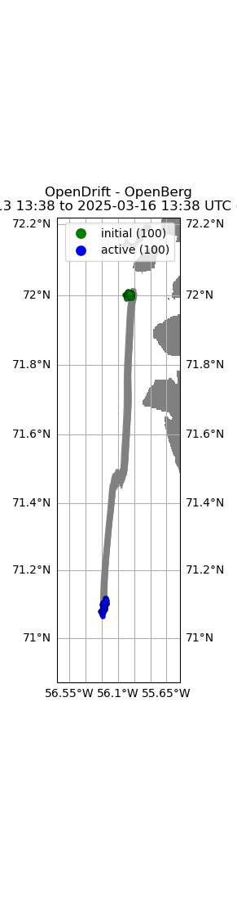
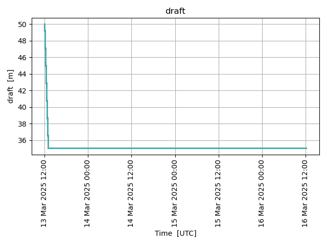

Note
Go to the end to download the full example code.
Icebergs (openberg)
- 
- 
13:59:16 DEBUG opendrift.config:168: Adding 18 config items from __init__
13:59:16 DEBUG opendrift.config:178: Overwriting config item readers:max_number_of_fails
13:59:16 DEBUG opendrift.config:168: Adding 14 config items from __init__
13:59:17 INFO opendrift:509: OpenDriftSimulation initialised (version 1.13.1 / v1.13.1-35-g93abdc7)
13:59:17 DEBUG opendrift.config:168: Adding 15 config items from oceandrift
13:59:17 DEBUG opendrift.config:178: Overwriting config item seed:z
13:59:17 DEBUG opendrift.config:168: Adding 11 config items from openberg
13:59:17 DEBUG opendrift.config:178: Overwriting config item drift:stokes_drift
13:59:17 DEBUG opendrift.readers.reader_lazy:37: Delaying initialisation of LazyReader: https://thredds.met.no/thredds/dodsC/cmems/topaz6/dataset-topaz6-arc-15min-3km-be.ncml
13:59:17 DEBUG opendrift.readers.reader_lazy:37: Delaying initialisation of LazyReader: https://pae-paha.pacioos.hawaii.edu/thredds/dodsC/ncep_global/NCEP_Global_Atmospheric_Model_best.ncd
13:59:17 DEBUG opendrift.models.basemodel.environment:312: Added reader LazyReader: https://thredds.met.no/thredds/dodsC/cmems/topaz6/dataset-topaz6-arc-15min-3km-be.ncml
13:59:17 DEBUG opendrift.models.basemodel.environment:312: Added reader LazyReader: https://pae-paha.pacioos.hawaii.edu/thredds/dodsC/ncep_global/NCEP_Global_Atmospheric_Model_best.ncd
13:59:17 INFO opendrift.models.basemodel.environment:206: Adding a global landmask from GSHHG
13:59:17 DEBUG opendrift.readers.basereader:186: Variable mapping: ['sea_floor_depth_below_sea_level'] -> ['land_binary_mask'] is not activated
13:59:21 DEBUG opendrift.models.basemodel.environment:312: Added reader global_landmask
13:59:21 INFO opendrift.models.basemodel.environment:229: Fallback values will be used for the following variables which have no readers:
13:59:21 INFO opendrift.models.basemodel.environment:232: sea_floor_depth_below_sea_level: 10000.000000
13:59:21 INFO opendrift.models.basemodel.environment:232: sea_surface_x_slope: 0.000000
13:59:21 INFO opendrift.models.basemodel.environment:232: sea_surface_y_slope: 0.000000
13:59:21 INFO opendrift.models.basemodel.environment:232: x_wind: 0.000000
13:59:21 INFO opendrift.models.basemodel.environment:232: y_wind: 0.000000
13:59:21 INFO opendrift.models.basemodel.environment:232: sea_surface_wave_significant_height: 0.000000
13:59:21 INFO opendrift.models.basemodel.environment:232: sea_surface_wave_from_direction: 0.000000
13:59:21 INFO opendrift.models.basemodel.environment:232: sea_surface_wave_stokes_drift_x_velocity: 0.000000
13:59:21 INFO opendrift.models.basemodel.environment:232: sea_surface_wave_stokes_drift_y_velocity: 0.000000
13:59:21 INFO opendrift.models.basemodel.environment:232: sea_water_temperature: 2.000000
13:59:21 INFO opendrift.models.basemodel.environment:232: sea_water_salinity: 35.000000
13:59:21 INFO opendrift.models.basemodel.environment:232: sea_ice_area_fraction: 0.000000
13:59:21 INFO opendrift.models.basemodel.environment:232: sea_ice_thickness: 0.000000
13:59:21 INFO opendrift.models.basemodel.environment:232: sea_ice_x_velocity: 0.000000
13:59:21 INFO opendrift.models.basemodel.environment:232: sea_ice_y_velocity: 0.000000
13:59:21 DEBUG opendrift:100: Changed mode from Mode.Config to Mode.Ready
13:59:21 DEBUG opendrift:100: Changed mode from Mode.Ready to Mode.Run
13:59:21 DEBUG opendrift:1767:
------------------------------------------------------
Software and hardware:
OpenDrift version 1.13.1
Platform: Linux, 6.8.0-1024-aws
4.0 GB memory
36 processors (x86_64)
NumPy version 1.26.4
SciPy version 1.15.2
Matplotlib version 3.9.1
NetCDF4 version 1.6.1
Xarray version 2025.3.1
ADIOS (adios_db) version 1.2.5
Copernicusmarine version 2.0.1
Python version 3.11.6 | packaged by conda-forge | (main, Oct 3 2023, 10:40:35) [GCC 12.3.0]
------------------------------------------------------
13:59:21 DEBUG opendrift:1781: No output file is specified, neglecting export_buffer_length
13:59:21 DEBUG opendrift:1899: Finalizing environment and preparing readers for simulation coverage ([-71.15060630636161, 67.31976574047192, -40.85350593729074, 76.68095142261402]) and time (2025-04-29 13:59:17.084426 to 2025-05-02 13:59:17.084426)
13:59:21 DEBUG opendrift.models.basemodel.environment:168: Preparing LazyReader: https://thredds.met.no/thredds/dodsC/cmems/topaz6/dataset-topaz6-arc-15min-3km-be.ncml for extent [-71.15060630636161, 67.31976574047192, -40.85350593729074, 76.68095142261402]
13:59:21 DEBUG opendrift.models.basemodel.environment:168: Preparing LazyReader: https://pae-paha.pacioos.hawaii.edu/thredds/dodsC/ncep_global/NCEP_Global_Atmospheric_Model_best.ncd for extent [-71.15060630636161, 67.31976574047192, -40.85350593729074, 76.68095142261402]
13:59:21 DEBUG opendrift.models.basemodel.environment:168: Preparing global_landmask for extent [-71.15060630636161, 67.31976574047192, -40.85350593729074, 76.68095142261402]
13:59:21 DEBUG opendrift.readers.basereader.variables:553: Nothing more to prepare for global_landmask
13:59:21 DEBUG opendrift:1986: Initial self.result, size Frozen({'trajectory': 100, 'time': 73})
13:59:21 INFO opendrift:923: Using existing reader for land_binary_mask
13:59:21 DEBUG opendrift.models.basemodel.environment:591: ----------------------------------------
13:59:21 DEBUG opendrift.models.basemodel.environment:592: Variable group ['land_binary_mask']
13:59:21 DEBUG opendrift.models.basemodel.environment:593: ----------------------------------------
13:59:21 DEBUG opendrift.models.basemodel.environment:597: Calling reader global_landmask
13:59:21 DEBUG opendrift.models.basemodel.environment:598: ----------------------------------------
13:59:21 DEBUG opendrift.models.basemodel.environment:614: Data needed for 100 elements
13:59:21 DEBUG opendrift.readers.basereader.variables:759: Fetching variables from global_landmask covering 100 elements
13:59:21 DEBUG opendrift.readers.basereader.continuous:37: Fetched env-before
13:59:21 DEBUG opendrift.readers.basereader.variables:637: Checking land_binary_mask for invalid values
13:59:21 DEBUG opendrift.readers.basereader.variables:795: Reader projection is latlon - rotation of vectors is not needed.
13:59:21 DEBUG opendrift.models.basemodel.environment:748: Obtained data for all elements.
13:59:21 DEBUG opendrift.models.basemodel.environment:761: ---------------------------------------
13:59:21 DEBUG opendrift.models.basemodel.environment:762: Finished processing all variable groups
13:59:21 DEBUG opendrift.models.basemodel.environment:887: ------------ SUMMARY -------------
13:59:21 DEBUG opendrift.models.basemodel.environment:889: land_binary_mask: 0 (min) 0 (max)
13:59:21 DEBUG opendrift.models.basemodel.environment:891: ---------------------------------
13:59:21 INFO opendrift:934: All points are in ocean
13:59:21 DEBUG opendrift:878: to be seeded: 100, already seeded 0
13:59:21 DEBUG opendrift:896: Released 100 new elements.
13:59:21 DEBUG opendrift:2059: ======================================================================
13:59:21 INFO opendrift:2060: 2025-04-29 13:59:17.084426 - step 1 of 72 - 100 active elements (0 deactivated)
13:59:21 DEBUG opendrift:2066: 0 elements scheduled.
13:59:21 DEBUG opendrift:2068: ======================================================================
13:59:21 DEBUG opendrift:2079: 71.990036 <- latitude -> 72.01068
13:59:21 DEBUG opendrift:2084: -56.037 <- longitude -> -55.967113
13:59:21 DEBUG opendrift:2087: z = 0.0
13:59:21 DEBUG opendrift:2090: ---------------------------------
13:59:21 DEBUG opendrift.models.basemodel.environment:565: Variables not covered by any reader: ['sea_surface_y_slope', 'sea_surface_wave_stokes_drift_x_velocity', 'sea_surface_wave_significant_height', 'sea_water_salinity', 'sea_surface_x_slope', 'sea_ice_area_fraction', 'sea_surface_wave_stokes_drift_y_velocity', 'sea_ice_thickness', 'sea_surface_wave_from_direction', 'y_sea_water_velocity', 'sea_floor_depth_below_sea_level', 'x_sea_water_velocity', 'sea_water_temperature']
13:59:21 DEBUG opendrift.readers.reader_lazy:56: Initialising: LazyReader: https://thredds.met.no/thredds/dodsC/cmems/topaz6/dataset-topaz6-arc-15min-3km-be.ncml
13:59:21 DEBUG opendrift.readers:148: Testing reader <module 'opendrift.readers.reader_netCDF_CF_generic' from '/root/project/opendrift/readers/reader_netCDF_CF_generic.py'>
13:59:21 INFO opendrift.readers:61: Opening file with xr.open_dataset
13:59:22 DEBUG opendrift.readers.reader_netCDF_CF_generic:128: Finding coordinate variables.
13:59:22 DEBUG opendrift.readers.reader_netCDF_CF_generic:143: Parsing CF grid mapping dictionary: {'grid_mapping_name': 'polar_stereographic', 'latitude_of_projection_origin': 90.0, 'longitude_of_projection_origin': -45.0, 'scale_factor_at_projection_origin': 1.0, 'straight_vertical_longitude_from_pole': -45.0, 'earth_radius': 6378273.0, 'proj4': '+proj=stere +lon_0=-45 +lat_0=90 +k=1 +R=6378273 +no_defs', 'false_easting': 0.0, 'false_northing': 0.0}
13:59:22 INFO opendrift.readers.reader_netCDF_CF_generic:332: Detected dimensions: {'x': 'x', 'y': 'y', 'time': 'time'}
13:59:22 DEBUG opendrift.readers.basereader.variables:612: Setting buffer size 4 for reader https://thredds.met.no/thredds/dodsC/cmems/topaz6/dataset-topaz6-arc-15min-3km-be.ncml, assuming a maximum average speed of 5 m/s and time span of 0:15:00
13:59:22 DEBUG opendrift.readers.basereader:186: Variable mapping: ['sea_floor_depth_below_sea_level'] -> ['land_binary_mask'] is not activated
13:59:22 DEBUG opendrift.readers.basereader.variables:567: Adding variable mapping: ['x_sea_water_velocity', 'y_sea_water_velocity'] -> sea_water_speed
13:59:22 DEBUG opendrift.readers.basereader.structured:153: Clearing cache for reader https://thredds.met.no/thredds/dodsC/cmems/topaz6/dataset-topaz6-arc-15min-3km-be.ncml before starting new simulation
13:59:22 DEBUG opendrift.readers.basereader.variables:612: Setting buffer size 3 for reader https://thredds.met.no/thredds/dodsC/cmems/topaz6/dataset-topaz6-arc-15min-3km-be.ncml, assuming a maximum average speed of 2 m/s and time span of 0:15:00
13:59:22 DEBUG opendrift.readers.basereader.variables:553: Nothing more to prepare for https://thredds.met.no/thredds/dodsC/cmems/topaz6/dataset-topaz6-arc-15min-3km-be.ncml
13:59:22 DEBUG opendrift.readers.reader_lazy:71: Reader initialised: https://thredds.met.no/thredds/dodsC/cmems/topaz6/dataset-topaz6-arc-15min-3km-be.ncml
13:59:22 DEBUG opendrift.readers.basereader.variables:612: Setting buffer size 3 for reader https://thredds.met.no/thredds/dodsC/cmems/topaz6/dataset-topaz6-arc-15min-3km-be.ncml, assuming a maximum average speed of 2 m/s and time span of 0:15:00
13:59:22 DEBUG opendrift.readers.reader_lazy:56: Initialising: LazyReader: https://pae-paha.pacioos.hawaii.edu/thredds/dodsC/ncep_global/NCEP_Global_Atmospheric_Model_best.ncd
13:59:22 DEBUG opendrift.readers:148: Testing reader <module 'opendrift.readers.reader_netCDF_CF_generic' from '/root/project/opendrift/readers/reader_netCDF_CF_generic.py'>
13:59:22 INFO opendrift.readers:61: Opening file with xr.open_dataset
13:59:24 DEBUG opendrift.readers.reader_netCDF_CF_generic:128: Finding coordinate variables.
13:59:24 DEBUG opendrift.readers.reader_netCDF_CF_generic:262: Lon and lat are 1D arrays - using as projection coordinates
13:59:24 INFO opendrift.readers.reader_netCDF_CF_generic:332: Detected dimensions: {'time': 'time', 'x': 'longitude', 'y': 'latitude'}
13:59:24 DEBUG opendrift.readers.basereader.variables:612: Setting buffer size 3 for reader https://pae-paha.pacioos.hawaii.edu/thredds/dodsC/ncep_global/NCEP_Global_Atmospheric_Model_best.ncd, assuming a maximum average speed of 5 m/s and time span of 3:00:00
13:59:24 INFO opendrift.readers.basereader:176: Variable x_wind will be rotated from eastward_wind
13:59:24 INFO opendrift.readers.basereader:176: Variable y_wind will be rotated from northward_wind
13:59:24 DEBUG opendrift.readers.basereader:186: Variable mapping: ['sea_floor_depth_below_sea_level'] -> ['land_binary_mask'] is not activated
13:59:24 DEBUG opendrift.readers.basereader.variables:567: Adding variable mapping: ['x_wind', 'y_wind'] -> wind_speed
13:59:24 DEBUG opendrift.readers.basereader.structured:153: Clearing cache for reader https://pae-paha.pacioos.hawaii.edu/thredds/dodsC/ncep_global/NCEP_Global_Atmospheric_Model_best.ncd before starting new simulation
13:59:24 DEBUG opendrift.readers.basereader.variables:612: Setting buffer size 3 for reader https://pae-paha.pacioos.hawaii.edu/thredds/dodsC/ncep_global/NCEP_Global_Atmospheric_Model_best.ncd, assuming a maximum average speed of 2 m/s and time span of 3:00:00
13:59:24 DEBUG opendrift.readers.basereader.variables:553: Nothing more to prepare for https://pae-paha.pacioos.hawaii.edu/thredds/dodsC/ncep_global/NCEP_Global_Atmospheric_Model_best.ncd
13:59:24 DEBUG opendrift.readers.reader_lazy:71: Reader initialised: https://pae-paha.pacioos.hawaii.edu/thredds/dodsC/ncep_global/NCEP_Global_Atmospheric_Model_best.ncd
13:59:24 DEBUG opendrift.readers.basereader.variables:612: Setting buffer size 3 for reader https://pae-paha.pacioos.hawaii.edu/thredds/dodsC/ncep_global/NCEP_Global_Atmospheric_Model_best.ncd, assuming a maximum average speed of 2 m/s and time span of 3:00:00
13:59:24 DEBUG opendrift.models.basemodel.environment:591: ----------------------------------------
13:59:24 DEBUG opendrift.models.basemodel.environment:592: Variable group ['land_binary_mask']
13:59:24 DEBUG opendrift.models.basemodel.environment:593: ----------------------------------------
13:59:24 DEBUG opendrift.models.basemodel.environment:597: Calling reader global_landmask
13:59:24 DEBUG opendrift.models.basemodel.environment:598: ----------------------------------------
13:59:24 DEBUG opendrift.models.basemodel.environment:614: Data needed for 100 elements
13:59:24 DEBUG opendrift.readers.basereader.variables:759: Fetching variables from global_landmask covering 100 elements
13:59:24 DEBUG opendrift.readers.basereader.continuous:37: Fetched env-before
13:59:24 DEBUG opendrift.readers.basereader.variables:637: Checking land_binary_mask for invalid values
13:59:24 DEBUG opendrift.readers.basereader.variables:795: Reader projection is latlon - rotation of vectors is not needed.
13:59:24 DEBUG opendrift.models.basemodel.environment:748: Obtained data for all elements.
13:59:24 DEBUG opendrift.models.basemodel.environment:591: ----------------------------------------
13:59:24 DEBUG opendrift.models.basemodel.environment:592: Variable group ['sea_floor_depth_below_sea_level', 'x_sea_water_velocity', 'y_sea_water_velocity']
13:59:24 DEBUG opendrift.models.basemodel.environment:593: ----------------------------------------
13:59:24 DEBUG opendrift.models.basemodel.environment:597: Calling reader https://thredds.met.no/thredds/dodsC/cmems/topaz6/dataset-topaz6-arc-15min-3km-be.ncml
13:59:24 DEBUG opendrift.models.basemodel.environment:598: ----------------------------------------
13:59:24 DEBUG opendrift.models.basemodel.environment:614: Data needed for 100 elements
13:59:24 DEBUG opendrift.readers.basereader.variables:759: Fetching variables from https://thredds.met.no/thredds/dodsC/cmems/topaz6/dataset-topaz6-arc-15min-3km-be.ncml covering 100 elements
13:59:24 DEBUG opendrift.readers.basereader.structured:222: Reader time:
2025-04-29 13:45:00 (before)
2025-04-29 14:00:00 (after)
13:59:24 DEBUG opendrift.readers.basereader.variables:637: Checking sea_floor_depth_below_sea_level for invalid values
13:59:24 DEBUG opendrift.readers.basereader.variables:637: Checking x_sea_water_velocity for invalid values
13:59:24 DEBUG opendrift.readers.basereader.variables:637: Checking y_sea_water_velocity for invalid values
13:59:24 DEBUG opendrift.readers.basereader.structured:292: Fetched env-block (size 7x7x1) for time before (2025-04-29 13:45:00)
13:59:25 DEBUG opendrift.readers.basereader.variables:637: Checking sea_floor_depth_below_sea_level for invalid values
13:59:25 DEBUG opendrift.readers.basereader.variables:637: Checking x_sea_water_velocity for invalid values
13:59:25 DEBUG opendrift.readers.basereader.variables:637: Checking y_sea_water_velocity for invalid values
13:59:25 DEBUG opendrift.readers.basereader.structured:315: Fetched env-block (size 7x7x1) for time after (2025-04-29 14:00:00)
13:59:25 DEBUG opendrift.readers.basereader.structured:336: Interpolating before (2025-04-29 13:45:00) in space (linearNDFast)
13:59:25 DEBUG opendrift.readers.interpolation.structured:97: Initialising interpolator.
13:59:25 DEBUG opendrift.readers.basereader.structured:342: Interpolating after (2025-04-29 14:00:00) in space (linearNDFast)
13:59:25 DEBUG opendrift.readers.interpolation.structured:97: Initialising interpolator.
13:59:25 DEBUG opendrift.readers.basereader.structured:357: Interpolating before (2025-04-29 13:45:00, weight 0.05) and
after (2025-04-29 14:00:00, weight 0.95) in time
13:59:25 DEBUG opendrift.readers.basereader.structured:370: Interpolating profiles in time
13:59:25 DEBUG opendrift.readers.basereader.variables:100: Rotating vectors between -11.04393106823474 and -10.974007664504759 degrees.
13:59:25 DEBUG opendrift.readers.basereader.variables:100: Rotating vectors between -11.04393106823474 and -10.974007664504759 degrees.
13:59:25 DEBUG opendrift.models.basemodel.environment:748: Obtained data for all elements.
13:59:25 DEBUG opendrift.models.basemodel.environment:591: ----------------------------------------
13:59:25 DEBUG opendrift.models.basemodel.environment:592: Variable group ['x_wind', 'y_wind']
13:59:25 DEBUG opendrift.models.basemodel.environment:593: ----------------------------------------
13:59:25 DEBUG opendrift.models.basemodel.environment:597: Calling reader https://pae-paha.pacioos.hawaii.edu/thredds/dodsC/ncep_global/NCEP_Global_Atmospheric_Model_best.ncd
13:59:25 DEBUG opendrift.models.basemodel.environment:598: ----------------------------------------
13:59:25 DEBUG opendrift.models.basemodel.environment:614: Data needed for 100 elements
13:59:25 DEBUG opendrift.readers.basereader.variables:759: Fetching variables from https://pae-paha.pacioos.hawaii.edu/thredds/dodsC/ncep_global/NCEP_Global_Atmospheric_Model_best.ncd covering 100 elements
13:59:25 DEBUG opendrift.readers.basereader.structured:213: Shifting coordinates to 0-360
13:59:25 DEBUG opendrift.readers.basereader.structured:222: Reader time:
2025-04-29 12:00:00 (before)
2025-04-29 15:00:00 (after)
13:59:25 DEBUG opendrift.readers.reader_netCDF_CF_generic:450: Using eastward_wind to retrieve x_wind
13:59:25 DEBUG opendrift.readers.reader_netCDF_CF_generic:450: Using northward_wind to retrieve y_wind
13:59:25 DEBUG opendrift.readers.reader_netCDF_CF_generic:572: North is up, no rotation necessary
13:59:25 DEBUG opendrift.readers.basereader.variables:637: Checking x_wind for invalid values
13:59:25 DEBUG opendrift.readers.basereader.variables:637: Checking y_wind for invalid values
13:59:25 DEBUG opendrift.readers.basereader.structured:292: Fetched env-block (size 8x7x1) for time before (2025-04-29 12:00:00)
13:59:25 DEBUG opendrift.readers.reader_netCDF_CF_generic:450: Using eastward_wind to retrieve x_wind
13:59:25 DEBUG opendrift.readers.reader_netCDF_CF_generic:450: Using northward_wind to retrieve y_wind
13:59:25 DEBUG opendrift.readers.reader_netCDF_CF_generic:572: North is up, no rotation necessary
13:59:25 DEBUG opendrift.readers.basereader.variables:637: Checking x_wind for invalid values
13:59:25 DEBUG opendrift.readers.basereader.variables:637: Checking y_wind for invalid values
13:59:25 DEBUG opendrift.readers.basereader.structured:315: Fetched env-block (size 8x7x1) for time after (2025-04-29 15:00:00)
13:59:25 DEBUG opendrift.readers.basereader.structured:336: Interpolating before (2025-04-29 12:00:00) in space (linearNDFast)
13:59:25 DEBUG opendrift.readers.interpolation.structured:97: Initialising interpolator.
13:59:25 DEBUG opendrift.readers.basereader.structured:342: Interpolating after (2025-04-29 15:00:00) in space (linearNDFast)
13:59:25 DEBUG opendrift.readers.interpolation.structured:97: Initialising interpolator.
13:59:25 DEBUG opendrift.readers.basereader.structured:357: Interpolating before (2025-04-29 12:00:00, weight 0.34) and
after (2025-04-29 15:00:00, weight 0.66) in time
13:59:25 DEBUG opendrift.readers.basereader.variables:795: Reader projection is latlon - rotation of vectors is not needed.
13:59:25 DEBUG opendrift.models.basemodel.environment:748: Obtained data for all elements.
13:59:25 DEBUG opendrift.models.basemodel.environment:761: ---------------------------------------
13:59:25 DEBUG opendrift.models.basemodel.environment:762: Finished processing all variable groups
13:59:25 DEBUG opendrift.models.basemodel.environment:787: Using fallback value 2 for sea_water_temperature for all profiles
13:59:25 DEBUG opendrift.models.basemodel.environment:787: Using fallback value 35 for sea_water_salinity for all profiles
13:59:25 DEBUG opendrift.models.basemodel.environment:887: ------------ SUMMARY -------------
13:59:25 DEBUG opendrift.models.basemodel.environment:889: x_sea_water_velocity: 0.0284031 (min) 0.0437867 (max)
13:59:25 DEBUG opendrift.models.basemodel.environment:889: y_sea_water_velocity: 0.0192197 (min) 0.0288268 (max)
13:59:25 DEBUG opendrift.models.basemodel.environment:889: sea_floor_depth_below_sea_level: 174.382 (min) 209.813 (max)
13:59:25 DEBUG opendrift.models.basemodel.environment:889: sea_surface_x_slope: 0 (min) 0 (max)
13:59:25 DEBUG opendrift.models.basemodel.environment:889: sea_surface_y_slope: 0 (min) 0 (max)
13:59:25 DEBUG opendrift.models.basemodel.environment:889: x_wind: 1.09807 (min) 1.24657 (max)
13:59:25 DEBUG opendrift.models.basemodel.environment:889: y_wind: 4.57805 (min) 4.7153 (max)
13:59:25 DEBUG opendrift.models.basemodel.environment:889: sea_surface_wave_significant_height: 0 (min) 0 (max)
13:59:25 DEBUG opendrift.models.basemodel.environment:889: sea_surface_wave_from_direction: 0 (min) 0 (max)
13:59:25 DEBUG opendrift.models.basemodel.environment:889: sea_surface_wave_stokes_drift_x_velocity: 0 (min) 0 (max)
13:59:25 DEBUG opendrift.models.basemodel.environment:889: sea_surface_wave_stokes_drift_y_velocity: 0 (min) 0 (max)
13:59:25 DEBUG opendrift.models.basemodel.environment:889: sea_water_temperature: 2 (min) 2 (max)
13:59:25 DEBUG opendrift.models.basemodel.environment:889: sea_water_salinity: 35 (min) 35 (max)
13:59:25 DEBUG opendrift.models.basemodel.environment:889: sea_ice_area_fraction: 0 (min) 0 (max)
13:59:25 DEBUG opendrift.models.basemodel.environment:889: sea_ice_thickness: 0 (min) 0 (max)
13:59:25 DEBUG opendrift.models.basemodel.environment:889: sea_ice_x_velocity: 0 (min) 0 (max)
13:59:25 DEBUG opendrift.models.basemodel.environment:889: sea_ice_y_velocity: 0 (min) 0 (max)
13:59:25 DEBUG opendrift.models.basemodel.environment:889: land_binary_mask: 0 (min) 0 (max)
13:59:25 DEBUG opendrift.models.basemodel.environment:891: ---------------------------------
13:59:25 DEBUG opendrift.models.physics_methods:849: Calculating Hs from wind, min: 0.553124, mean: 0.567210, max: 0.578170
13:59:25 DEBUG opendrift:647: No elements hit coastline.
13:59:25 WARNING opendrift:723: Seafloor check not being run because sea_surface_height is missing.
13:59:25 DEBUG opendrift:1699: No elements to deactivate
13:59:25 DEBUG opendrift:2133: Calling OpenBerg.update()
13:59:25 INFO opendrift.models.openberg:531: Rolling over : 100 icebergs ...
13:59:25 DEBUG opendrift.models.openberg:486: Melting is disabled
13:59:25 INFO opendrift.models.openberg:418: Surface Currents ...
13:59:25 DEBUG opendrift:1650: Horizontal diffusivity is 0, no random walk.
13:59:25 DEBUG opendrift:2148: 100 active elements (0 deactivated)
13:59:25 DEBUG opendrift:878: to be seeded: 0, already seeded 100
13:59:25 WARNING opendrift:723: Seafloor check not being run because sea_surface_height is missing.
13:59:25 DEBUG opendrift:2059: ======================================================================
13:59:25 INFO opendrift:2060: 2025-04-29 14:59:17.084426 - step 2 of 72 - 100 active elements (0 deactivated)
13:59:25 DEBUG opendrift:2066: 0 elements scheduled.
13:59:25 DEBUG opendrift:2068: ======================================================================
13:59:25 DEBUG opendrift:2079: 71.98861035704458 <- latitude -> 72.00948987668721
13:59:25 DEBUG opendrift:2084: -56.02956929194755 <- longitude -> -55.95797461651958
13:59:25 DEBUG opendrift:2087: z = 0.0
13:59:25 DEBUG opendrift:2090: ---------------------------------
13:59:25 DEBUG opendrift.models.basemodel.environment:591: ----------------------------------------
13:59:25 DEBUG opendrift.models.basemodel.environment:592: Variable group ['land_binary_mask']
13:59:25 DEBUG opendrift.models.basemodel.environment:593: ----------------------------------------
13:59:25 DEBUG opendrift.models.basemodel.environment:597: Calling reader global_landmask
13:59:25 DEBUG opendrift.models.basemodel.environment:598: ----------------------------------------
13:59:25 DEBUG opendrift.models.basemodel.environment:614: Data needed for 100 elements
13:59:25 DEBUG opendrift.readers.basereader.variables:759: Fetching variables from global_landmask covering 100 elements
13:59:25 DEBUG opendrift.readers.basereader.continuous:37: Fetched env-before
13:59:25 DEBUG opendrift.readers.basereader.variables:637: Checking land_binary_mask for invalid values
13:59:25 DEBUG opendrift.readers.basereader.variables:795: Reader projection is latlon - rotation of vectors is not needed.
13:59:25 DEBUG opendrift.models.basemodel.environment:748: Obtained data for all elements.
13:59:25 DEBUG opendrift.models.basemodel.environment:591: ----------------------------------------
13:59:25 DEBUG opendrift.models.basemodel.environment:592: Variable group ['sea_floor_depth_below_sea_level', 'x_sea_water_velocity', 'y_sea_water_velocity']
13:59:25 DEBUG opendrift.models.basemodel.environment:593: ----------------------------------------
13:59:25 DEBUG opendrift.models.basemodel.environment:597: Calling reader https://thredds.met.no/thredds/dodsC/cmems/topaz6/dataset-topaz6-arc-15min-3km-be.ncml
13:59:25 DEBUG opendrift.models.basemodel.environment:598: ----------------------------------------
13:59:25 DEBUG opendrift.models.basemodel.environment:614: Data needed for 100 elements
13:59:25 DEBUG opendrift.readers.basereader.variables:759: Fetching variables from https://thredds.met.no/thredds/dodsC/cmems/topaz6/dataset-topaz6-arc-15min-3km-be.ncml covering 100 elements
13:59:25 DEBUG opendrift.readers.basereader.structured:222: Reader time:
2025-04-29 14:45:00 (before)
2025-04-29 15:00:00 (after)
13:59:26 DEBUG opendrift.readers.basereader.variables:637: Checking sea_floor_depth_below_sea_level for invalid values
13:59:26 DEBUG opendrift.readers.basereader.variables:637: Checking x_sea_water_velocity for invalid values
13:59:26 DEBUG opendrift.readers.basereader.variables:637: Checking y_sea_water_velocity for invalid values
13:59:26 DEBUG opendrift.readers.basereader.structured:292: Fetched env-block (size 8x7x1) for time before (2025-04-29 14:45:00)
13:59:26 DEBUG opendrift.readers.basereader.variables:637: Checking sea_floor_depth_below_sea_level for invalid values
13:59:26 DEBUG opendrift.readers.basereader.variables:637: Checking x_sea_water_velocity for invalid values
13:59:26 DEBUG opendrift.readers.basereader.variables:637: Checking y_sea_water_velocity for invalid values
13:59:26 DEBUG opendrift.readers.basereader.structured:315: Fetched env-block (size 8x7x1) for time after (2025-04-29 15:00:00)
13:59:26 DEBUG opendrift.readers.basereader.structured:336: Interpolating before (2025-04-29 14:45:00) in space (linearNDFast)
13:59:26 DEBUG opendrift.readers.interpolation.structured:97: Initialising interpolator.
13:59:26 DEBUG opendrift.readers.basereader.structured:342: Interpolating after (2025-04-29 15:00:00) in space (linearNDFast)
13:59:26 DEBUG opendrift.readers.interpolation.structured:97: Initialising interpolator.
13:59:26 DEBUG opendrift.readers.basereader.structured:357: Interpolating before (2025-04-29 14:45:00, weight 0.05) and
after (2025-04-29 15:00:00, weight 0.95) in time
13:59:26 DEBUG opendrift.readers.basereader.structured:370: Interpolating profiles in time
13:59:26 DEBUG opendrift.readers.basereader.variables:100: Rotating vectors between -11.03649445930181 and -10.964860472009931 degrees.
13:59:26 DEBUG opendrift.readers.basereader.variables:100: Rotating vectors between -11.03649445930181 and -10.964860472009931 degrees.
13:59:26 DEBUG opendrift.models.basemodel.environment:748: Obtained data for all elements.
13:59:26 DEBUG opendrift.models.basemodel.environment:591: ----------------------------------------
13:59:26 DEBUG opendrift.models.basemodel.environment:592: Variable group ['x_wind', 'y_wind']
13:59:26 DEBUG opendrift.models.basemodel.environment:593: ----------------------------------------
13:59:26 DEBUG opendrift.models.basemodel.environment:597: Calling reader https://pae-paha.pacioos.hawaii.edu/thredds/dodsC/ncep_global/NCEP_Global_Atmospheric_Model_best.ncd
13:59:26 DEBUG opendrift.models.basemodel.environment:598: ----------------------------------------
13:59:26 DEBUG opendrift.models.basemodel.environment:614: Data needed for 100 elements
13:59:26 DEBUG opendrift.readers.basereader.variables:759: Fetching variables from https://pae-paha.pacioos.hawaii.edu/thredds/dodsC/ncep_global/NCEP_Global_Atmospheric_Model_best.ncd covering 100 elements
13:59:26 DEBUG opendrift.readers.basereader.structured:213: Shifting coordinates to 0-360
13:59:26 DEBUG opendrift.readers.basereader.structured:222: Reader time:
2025-04-29 12:00:00 (before)
2025-04-29 15:00:00 (after)
13:59:26 DEBUG opendrift.readers.basereader.structured:336: Interpolating before (2025-04-29 12:00:00) in space (linearNDFast)
13:59:26 DEBUG opendrift.readers.interpolation.structured:97: Initialising interpolator.
13:59:26 DEBUG opendrift.readers.basereader.structured:342: Interpolating after (2025-04-29 15:00:00) in space (linearNDFast)
13:59:26 DEBUG opendrift.readers.interpolation.structured:97: Initialising interpolator.
13:59:26 DEBUG opendrift.readers.basereader.structured:357: Interpolating before (2025-04-29 12:00:00, weight 0.00) and
after (2025-04-29 15:00:00, weight 1.00) in time
13:59:26 DEBUG opendrift.readers.basereader.variables:795: Reader projection is latlon - rotation of vectors is not needed.
13:59:26 DEBUG opendrift.models.basemodel.environment:748: Obtained data for all elements.
13:59:26 DEBUG opendrift.models.basemodel.environment:761: ---------------------------------------
13:59:26 DEBUG opendrift.models.basemodel.environment:762: Finished processing all variable groups
13:59:26 DEBUG opendrift.models.basemodel.environment:787: Using fallback value 2 for sea_water_temperature for all profiles
13:59:26 DEBUG opendrift.models.basemodel.environment:787: Using fallback value 35 for sea_water_salinity for all profiles
13:59:26 DEBUG opendrift.models.basemodel.environment:887: ------------ SUMMARY -------------
13:59:26 DEBUG opendrift.models.basemodel.environment:889: x_sea_water_velocity: 0.0159861 (min) 0.0324198 (max)
13:59:26 DEBUG opendrift.models.basemodel.environment:889: y_sea_water_velocity: 0.0428904 (min) 0.0475834 (max)
13:59:26 DEBUG opendrift.models.basemodel.environment:889: sea_floor_depth_below_sea_level: 177.265 (min) 211.141 (max)
13:59:26 DEBUG opendrift.models.basemodel.environment:889: sea_surface_x_slope: 0 (min) 0 (max)
13:59:26 DEBUG opendrift.models.basemodel.environment:889: sea_surface_y_slope: 0 (min) 0 (max)
13:59:26 DEBUG opendrift.models.basemodel.environment:889: x_wind: 0.982964 (min) 1.17531 (max)
13:59:26 DEBUG opendrift.models.basemodel.environment:889: y_wind: 4.63508 (min) 4.76454 (max)
13:59:26 DEBUG opendrift.models.basemodel.environment:889: sea_surface_wave_significant_height: 0 (min) 0 (max)
13:59:26 DEBUG opendrift.models.basemodel.environment:889: sea_surface_wave_from_direction: 0 (min) 0 (max)
13:59:26 DEBUG opendrift.models.basemodel.environment:889: sea_surface_wave_stokes_drift_x_velocity: 0 (min) 0 (max)
13:59:26 DEBUG opendrift.models.basemodel.environment:889: sea_surface_wave_stokes_drift_y_velocity: 0 (min) 0 (max)
13:59:26 DEBUG opendrift.models.basemodel.environment:889: sea_water_temperature: 2 (min) 2 (max)
13:59:26 DEBUG opendrift.models.basemodel.environment:889: sea_water_salinity: 35 (min) 35 (max)
13:59:26 DEBUG opendrift.models.basemodel.environment:889: sea_ice_area_fraction: 0 (min) 0 (max)
13:59:26 DEBUG opendrift.models.basemodel.environment:889: sea_ice_thickness: 0 (min) 0 (max)
13:59:26 DEBUG opendrift.models.basemodel.environment:889: sea_ice_x_velocity: 0 (min) 0 (max)
13:59:26 DEBUG opendrift.models.basemodel.environment:889: sea_ice_y_velocity: 0 (min) 0 (max)
13:59:26 DEBUG opendrift.models.basemodel.environment:889: land_binary_mask: 0 (min) 0 (max)
13:59:26 DEBUG opendrift.models.basemodel.environment:891: ---------------------------------
13:59:26 DEBUG opendrift.models.physics_methods:849: Calculating Hs from wind, min: 0.560461, mean: 0.574080, max: 0.584173
13:59:26 DEBUG opendrift:647: No elements hit coastline.
13:59:26 WARNING opendrift:723: Seafloor check not being run because sea_surface_height is missing.
13:59:26 DEBUG opendrift:1699: No elements to deactivate
13:59:26 DEBUG opendrift:2133: Calling OpenBerg.update()
13:59:26 DEBUG opendrift.models.openberg:486: Melting is disabled
13:59:26 INFO opendrift.models.openberg:418: Surface Currents ...
13:59:26 DEBUG opendrift:1650: Horizontal diffusivity is 0, no random walk.
13:59:26 DEBUG opendrift:2148: 100 active elements (0 deactivated)
13:59:26 DEBUG opendrift:878: to be seeded: 0, already seeded 100
13:59:26 WARNING opendrift:723: Seafloor check not being run because sea_surface_height is missing.
13:59:26 DEBUG opendrift:2059: ======================================================================
13:59:26 INFO opendrift:2060: 2025-04-29 15:59:17.084426 - step 3 of 72 - 100 active elements (0 deactivated)
13:59:26 DEBUG opendrift:2066: 0 elements scheduled.
13:59:26 DEBUG opendrift:2068: ======================================================================
13:59:26 DEBUG opendrift:2079: 71.98810080871235 <- latitude -> 72.00897283319932
13:59:26 DEBUG opendrift:2084: -56.02265413158389 <- longitude -> -55.9494331745926
13:59:26 DEBUG opendrift:2087: z = 0.0
13:59:26 DEBUG opendrift:2090: ---------------------------------
13:59:26 DEBUG opendrift.models.basemodel.environment:591: ----------------------------------------
13:59:26 DEBUG opendrift.models.basemodel.environment:592: Variable group ['land_binary_mask']
13:59:26 DEBUG opendrift.models.basemodel.environment:593: ----------------------------------------
13:59:26 DEBUG opendrift.models.basemodel.environment:597: Calling reader global_landmask
13:59:26 DEBUG opendrift.models.basemodel.environment:598: ----------------------------------------
13:59:26 DEBUG opendrift.models.basemodel.environment:614: Data needed for 100 elements
13:59:26 DEBUG opendrift.readers.basereader.variables:759: Fetching variables from global_landmask covering 100 elements
13:59:26 DEBUG opendrift.readers.basereader.continuous:37: Fetched env-before
13:59:26 DEBUG opendrift.readers.basereader.variables:637: Checking land_binary_mask for invalid values
13:59:26 DEBUG opendrift.readers.basereader.variables:795: Reader projection is latlon - rotation of vectors is not needed.
13:59:26 DEBUG opendrift.models.basemodel.environment:748: Obtained data for all elements.
13:59:26 DEBUG opendrift.models.basemodel.environment:591: ----------------------------------------
13:59:26 DEBUG opendrift.models.basemodel.environment:592: Variable group ['sea_floor_depth_below_sea_level', 'x_sea_water_velocity', 'y_sea_water_velocity']
13:59:26 DEBUG opendrift.models.basemodel.environment:593: ----------------------------------------
13:59:26 DEBUG opendrift.models.basemodel.environment:597: Calling reader https://thredds.met.no/thredds/dodsC/cmems/topaz6/dataset-topaz6-arc-15min-3km-be.ncml
13:59:26 DEBUG opendrift.models.basemodel.environment:598: ----------------------------------------
13:59:26 DEBUG opendrift.models.basemodel.environment:614: Data needed for 100 elements
13:59:26 DEBUG opendrift.readers.basereader.variables:759: Fetching variables from https://thredds.met.no/thredds/dodsC/cmems/topaz6/dataset-topaz6-arc-15min-3km-be.ncml covering 100 elements
13:59:26 DEBUG opendrift.readers.basereader.structured:222: Reader time:
2025-04-29 15:45:00 (before)
2025-04-29 16:00:00 (after)
13:59:27 DEBUG opendrift.readers.basereader.variables:637: Checking sea_floor_depth_below_sea_level for invalid values
13:59:27 DEBUG opendrift.readers.basereader.variables:637: Checking x_sea_water_velocity for invalid values
13:59:27 DEBUG opendrift.readers.basereader.variables:637: Checking y_sea_water_velocity for invalid values
13:59:27 DEBUG opendrift.readers.basereader.structured:292: Fetched env-block (size 8x7x1) for time before (2025-04-29 15:45:00)
13:59:27 DEBUG opendrift.readers.basereader.variables:637: Checking sea_floor_depth_below_sea_level for invalid values
13:59:27 DEBUG opendrift.readers.basereader.variables:637: Checking x_sea_water_velocity for invalid values
13:59:27 DEBUG opendrift.readers.basereader.variables:637: Checking y_sea_water_velocity for invalid values
13:59:27 DEBUG opendrift.readers.basereader.structured:315: Fetched env-block (size 8x7x1) for time after (2025-04-29 16:00:00)
13:59:27 DEBUG opendrift.readers.basereader.structured:336: Interpolating before (2025-04-29 15:45:00) in space (linearNDFast)
13:59:27 DEBUG opendrift.readers.interpolation.structured:97: Initialising interpolator.
13:59:27 DEBUG opendrift.readers.basereader.structured:342: Interpolating after (2025-04-29 16:00:00) in space (linearNDFast)
13:59:27 DEBUG opendrift.readers.interpolation.structured:97: Initialising interpolator.
13:59:27 DEBUG opendrift.readers.basereader.structured:357: Interpolating before (2025-04-29 15:45:00, weight 0.05) and
after (2025-04-29 16:00:00, weight 0.95) in time
13:59:27 DEBUG opendrift.readers.basereader.structured:370: Interpolating profiles in time
13:59:27 DEBUG opendrift.readers.basereader.variables:100: Rotating vectors between -11.029575628617701 and -10.956314394175914 degrees.
13:59:27 DEBUG opendrift.readers.basereader.variables:100: Rotating vectors between -11.029575628617701 and -10.956314394175914 degrees.
13:59:27 DEBUG opendrift.models.basemodel.environment:748: Obtained data for all elements.
13:59:27 DEBUG opendrift.models.basemodel.environment:591: ----------------------------------------
13:59:27 DEBUG opendrift.models.basemodel.environment:592: Variable group ['x_wind', 'y_wind']
13:59:27 DEBUG opendrift.models.basemodel.environment:593: ----------------------------------------
13:59:27 DEBUG opendrift.models.basemodel.environment:597: Calling reader https://pae-paha.pacioos.hawaii.edu/thredds/dodsC/ncep_global/NCEP_Global_Atmospheric_Model_best.ncd
13:59:27 DEBUG opendrift.models.basemodel.environment:598: ----------------------------------------
13:59:27 DEBUG opendrift.models.basemodel.environment:614: Data needed for 100 elements
13:59:27 DEBUG opendrift.readers.basereader.variables:759: Fetching variables from https://pae-paha.pacioos.hawaii.edu/thredds/dodsC/ncep_global/NCEP_Global_Atmospheric_Model_best.ncd covering 100 elements
13:59:27 DEBUG opendrift.readers.basereader.structured:213: Shifting coordinates to 0-360
13:59:27 DEBUG opendrift.readers.basereader.structured:222: Reader time:
2025-04-29 15:00:00 (before)
2025-04-29 18:00:00 (after)
13:59:27 DEBUG opendrift.readers.reader_netCDF_CF_generic:450: Using eastward_wind to retrieve x_wind
13:59:27 DEBUG opendrift.readers.reader_netCDF_CF_generic:450: Using northward_wind to retrieve y_wind
13:59:27 DEBUG opendrift.readers.reader_netCDF_CF_generic:572: North is up, no rotation necessary
13:59:27 DEBUG opendrift.readers.basereader.variables:637: Checking x_wind for invalid values
13:59:27 DEBUG opendrift.readers.basereader.variables:637: Checking y_wind for invalid values
13:59:27 DEBUG opendrift.readers.basereader.structured:315: Fetched env-block (size 8x7x1) for time after (2025-04-29 18:00:00)
13:59:27 DEBUG opendrift.readers.basereader.structured:336: Interpolating before (2025-04-29 15:00:00) in space (linearNDFast)
13:59:27 DEBUG opendrift.readers.interpolation.structured:97: Initialising interpolator.
13:59:27 DEBUG opendrift.readers.basereader.structured:342: Interpolating after (2025-04-29 18:00:00) in space (linearNDFast)
13:59:27 DEBUG opendrift.readers.interpolation.structured:97: Initialising interpolator.
13:59:27 DEBUG opendrift.readers.basereader.structured:357: Interpolating before (2025-04-29 15:00:00, weight 0.67) and
after (2025-04-29 18:00:00, weight 0.33) in time
13:59:27 DEBUG opendrift.readers.basereader.variables:795: Reader projection is latlon - rotation of vectors is not needed.
13:59:27 DEBUG opendrift.models.basemodel.environment:748: Obtained data for all elements.
13:59:27 DEBUG opendrift.models.basemodel.environment:761: ---------------------------------------
13:59:27 DEBUG opendrift.models.basemodel.environment:762: Finished processing all variable groups
13:59:27 DEBUG opendrift.models.basemodel.environment:787: Using fallback value 2 for sea_water_temperature for all profiles
13:59:27 DEBUG opendrift.models.basemodel.environment:787: Using fallback value 35 for sea_water_salinity for all profiles
13:59:27 DEBUG opendrift.models.basemodel.environment:887: ------------ SUMMARY -------------
13:59:27 DEBUG opendrift.models.basemodel.environment:889: x_sea_water_velocity: 0.0171617 (min) 0.0307061 (max)
13:59:27 DEBUG opendrift.models.basemodel.environment:889: y_sea_water_velocity: 0.053748 (min) 0.0613149 (max)
13:59:27 DEBUG opendrift.models.basemodel.environment:889: sea_floor_depth_below_sea_level: 178.907 (min) 212.276 (max)
13:59:27 DEBUG opendrift.models.basemodel.environment:889: sea_surface_x_slope: 0 (min) 0 (max)
13:59:27 DEBUG opendrift.models.basemodel.environment:889: sea_surface_y_slope: 0 (min) 0 (max)
13:59:27 DEBUG opendrift.models.basemodel.environment:889: x_wind: -0.126953 (min) 0.0472274 (max)
13:59:27 DEBUG opendrift.models.basemodel.environment:889: y_wind: 4.83356 (min) 5.00206 (max)
13:59:27 DEBUG opendrift.models.basemodel.environment:889: sea_surface_wave_significant_height: 0 (min) 0 (max)
13:59:27 DEBUG opendrift.models.basemodel.environment:889: sea_surface_wave_from_direction: 0 (min) 0 (max)
13:59:27 DEBUG opendrift.models.basemodel.environment:889: sea_surface_wave_stokes_drift_x_velocity: 0 (min) 0 (max)
13:59:27 DEBUG opendrift.models.basemodel.environment:889: sea_surface_wave_stokes_drift_y_velocity: 0 (min) 0 (max)
13:59:27 DEBUG opendrift.models.basemodel.environment:889: sea_water_temperature: 2 (min) 2 (max)
13:59:27 DEBUG opendrift.models.basemodel.environment:889: sea_water_salinity: 35 (min) 35 (max)
13:59:27 DEBUG opendrift.models.basemodel.environment:889: sea_ice_area_fraction: 0 (min) 0 (max)
13:59:27 DEBUG opendrift.models.basemodel.environment:889: sea_ice_thickness: 0 (min) 0 (max)
13:59:27 DEBUG opendrift.models.basemodel.environment:889: sea_ice_x_velocity: 0 (min) 0 (max)
13:59:27 DEBUG opendrift.models.basemodel.environment:889: sea_ice_y_velocity: 0 (min) 0 (max)
13:59:27 DEBUG opendrift.models.basemodel.environment:889: land_binary_mask: 0 (min) 0 (max)
13:59:27 DEBUG opendrift.models.basemodel.environment:891: ---------------------------------
13:59:27 DEBUG opendrift.models.physics_methods:849: Calculating Hs from wind, min: 0.574750, mean: 0.596575, max: 0.615825
13:59:27 DEBUG opendrift:647: No elements hit coastline.
13:59:27 WARNING opendrift:723: Seafloor check not being run because sea_surface_height is missing.
13:59:27 DEBUG opendrift:1699: No elements to deactivate
13:59:27 DEBUG opendrift:2133: Calling OpenBerg.update()
13:59:27 DEBUG opendrift.models.openberg:486: Melting is disabled
13:59:27 INFO opendrift.models.openberg:418: Surface Currents ...
13:59:27 DEBUG opendrift:1650: Horizontal diffusivity is 0, no random walk.
13:59:27 DEBUG opendrift:2148: 100 active elements (0 deactivated)
13:59:27 DEBUG opendrift:878: to be seeded: 0, already seeded 100
13:59:27 WARNING opendrift:723: Seafloor check not being run because sea_surface_height is missing.
13:59:27 DEBUG opendrift:2059: ======================================================================
13:59:27 INFO opendrift:2060: 2025-04-29 16:59:17.084426 - step 4 of 72 - 100 active elements (0 deactivated)
13:59:27 DEBUG opendrift:2066: 0 elements scheduled.
13:59:27 DEBUG opendrift:2068: ======================================================================
13:59:27 DEBUG opendrift:2079: 71.98791233608802 <- latitude -> 72.00881122249334
13:59:27 DEBUG opendrift:2084: -56.01802582281123 <- longitude -> -55.94325679615341
13:59:27 DEBUG opendrift:2087: z = 0.0
13:59:27 DEBUG opendrift:2090: ---------------------------------
13:59:27 DEBUG opendrift.models.basemodel.environment:591: ----------------------------------------
13:59:27 DEBUG opendrift.models.basemodel.environment:592: Variable group ['land_binary_mask']
13:59:27 DEBUG opendrift.models.basemodel.environment:593: ----------------------------------------
13:59:27 DEBUG opendrift.models.basemodel.environment:597: Calling reader global_landmask
13:59:27 DEBUG opendrift.models.basemodel.environment:598: ----------------------------------------
13:59:27 DEBUG opendrift.models.basemodel.environment:614: Data needed for 100 elements
13:59:27 DEBUG opendrift.readers.basereader.variables:759: Fetching variables from global_landmask covering 100 elements
13:59:27 DEBUG opendrift.readers.basereader.continuous:37: Fetched env-before
13:59:27 DEBUG opendrift.readers.basereader.variables:637: Checking land_binary_mask for invalid values
13:59:27 DEBUG opendrift.readers.basereader.variables:795: Reader projection is latlon - rotation of vectors is not needed.
13:59:27 DEBUG opendrift.models.basemodel.environment:748: Obtained data for all elements.
13:59:27 DEBUG opendrift.models.basemodel.environment:591: ----------------------------------------
13:59:27 DEBUG opendrift.models.basemodel.environment:592: Variable group ['sea_floor_depth_below_sea_level', 'x_sea_water_velocity', 'y_sea_water_velocity']
13:59:27 DEBUG opendrift.models.basemodel.environment:593: ----------------------------------------
13:59:27 DEBUG opendrift.models.basemodel.environment:597: Calling reader https://thredds.met.no/thredds/dodsC/cmems/topaz6/dataset-topaz6-arc-15min-3km-be.ncml
13:59:27 DEBUG opendrift.models.basemodel.environment:598: ----------------------------------------
13:59:27 DEBUG opendrift.models.basemodel.environment:614: Data needed for 100 elements
13:59:27 DEBUG opendrift.readers.basereader.variables:759: Fetching variables from https://thredds.met.no/thredds/dodsC/cmems/topaz6/dataset-topaz6-arc-15min-3km-be.ncml covering 100 elements
13:59:27 DEBUG opendrift.readers.basereader.structured:222: Reader time:
2025-04-29 16:45:00 (before)
2025-04-29 17:00:00 (after)
13:59:28 DEBUG opendrift.readers.basereader.variables:637: Checking sea_floor_depth_below_sea_level for invalid values
13:59:28 DEBUG opendrift.readers.basereader.variables:637: Checking x_sea_water_velocity for invalid values
13:59:28 DEBUG opendrift.readers.basereader.variables:637: Checking y_sea_water_velocity for invalid values
13:59:28 DEBUG opendrift.readers.basereader.structured:292: Fetched env-block (size 8x7x1) for time before (2025-04-29 16:45:00)
13:59:28 DEBUG opendrift.readers.basereader.variables:637: Checking sea_floor_depth_below_sea_level for invalid values
13:59:28 DEBUG opendrift.readers.basereader.variables:637: Checking x_sea_water_velocity for invalid values
13:59:28 DEBUG opendrift.readers.basereader.variables:637: Checking y_sea_water_velocity for invalid values
13:59:28 DEBUG opendrift.readers.basereader.structured:315: Fetched env-block (size 8x7x1) for time after (2025-04-29 17:00:00)
13:59:28 DEBUG opendrift.readers.basereader.structured:336: Interpolating before (2025-04-29 16:45:00) in space (linearNDFast)
13:59:28 DEBUG opendrift.readers.interpolation.structured:97: Initialising interpolator.
13:59:28 DEBUG opendrift.readers.basereader.structured:342: Interpolating after (2025-04-29 17:00:00) in space (linearNDFast)
13:59:28 DEBUG opendrift.readers.interpolation.structured:97: Initialising interpolator.
13:59:28 DEBUG opendrift.readers.basereader.structured:357: Interpolating before (2025-04-29 16:45:00, weight 0.05) and
after (2025-04-29 17:00:00, weight 0.95) in time
13:59:28 DEBUG opendrift.readers.basereader.structured:370: Interpolating profiles in time
13:59:28 DEBUG opendrift.readers.basereader.variables:100: Rotating vectors between -11.024944791422586 and -10.950134374915017 degrees.
13:59:28 DEBUG opendrift.readers.basereader.variables:100: Rotating vectors between -11.024944791422586 and -10.950134374915017 degrees.
13:59:28 DEBUG opendrift.models.basemodel.environment:748: Obtained data for all elements.
13:59:28 DEBUG opendrift.models.basemodel.environment:591: ----------------------------------------
13:59:28 DEBUG opendrift.models.basemodel.environment:592: Variable group ['x_wind', 'y_wind']
13:59:28 DEBUG opendrift.models.basemodel.environment:593: ----------------------------------------
13:59:28 DEBUG opendrift.models.basemodel.environment:597: Calling reader https://pae-paha.pacioos.hawaii.edu/thredds/dodsC/ncep_global/NCEP_Global_Atmospheric_Model_best.ncd
13:59:28 DEBUG opendrift.models.basemodel.environment:598: ----------------------------------------
13:59:28 DEBUG opendrift.models.basemodel.environment:614: Data needed for 100 elements
13:59:28 DEBUG opendrift.readers.basereader.variables:759: Fetching variables from https://pae-paha.pacioos.hawaii.edu/thredds/dodsC/ncep_global/NCEP_Global_Atmospheric_Model_best.ncd covering 100 elements
13:59:28 DEBUG opendrift.readers.basereader.structured:213: Shifting coordinates to 0-360
13:59:28 DEBUG opendrift.readers.basereader.structured:222: Reader time:
2025-04-29 15:00:00 (before)
2025-04-29 18:00:00 (after)
13:59:28 DEBUG opendrift.readers.basereader.structured:336: Interpolating before (2025-04-29 15:00:00) in space (linearNDFast)
13:59:28 DEBUG opendrift.readers.interpolation.structured:97: Initialising interpolator.
13:59:28 DEBUG opendrift.readers.basereader.structured:342: Interpolating after (2025-04-29 18:00:00) in space (linearNDFast)
13:59:28 DEBUG opendrift.readers.interpolation.structured:97: Initialising interpolator.
13:59:28 DEBUG opendrift.readers.basereader.structured:357: Interpolating before (2025-04-29 15:00:00, weight 0.34) and
after (2025-04-29 18:00:00, weight 0.66) in time
13:59:28 DEBUG opendrift.readers.basereader.variables:795: Reader projection is latlon - rotation of vectors is not needed.
13:59:28 DEBUG opendrift.models.basemodel.environment:748: Obtained data for all elements.
13:59:28 DEBUG opendrift.models.basemodel.environment:761: ---------------------------------------
13:59:28 DEBUG opendrift.models.basemodel.environment:762: Finished processing all variable groups
13:59:28 DEBUG opendrift.models.basemodel.environment:787: Using fallback value 2 for sea_water_temperature for all profiles
13:59:28 DEBUG opendrift.models.basemodel.environment:787: Using fallback value 35 for sea_water_salinity for all profiles
13:59:28 DEBUG opendrift.models.basemodel.environment:887: ------------ SUMMARY -------------
13:59:28 DEBUG opendrift.models.basemodel.environment:889: x_sea_water_velocity: 0.0279018 (min) 0.0380275 (max)
13:59:28 DEBUG opendrift.models.basemodel.environment:889: y_sea_water_velocity: 0.0517823 (min) 0.0589521 (max)
13:59:28 DEBUG opendrift.models.basemodel.environment:889: sea_floor_depth_below_sea_level: 179.68 (min) 212.375 (max)
13:59:28 DEBUG opendrift.models.basemodel.environment:889: sea_surface_x_slope: 0 (min) 0 (max)
13:59:28 DEBUG opendrift.models.basemodel.environment:889: sea_surface_y_slope: 0 (min) 0 (max)
13:59:28 DEBUG opendrift.models.basemodel.environment:889: x_wind: -1.26894 (min) -1.09304 (max)
13:59:28 DEBUG opendrift.models.basemodel.environment:889: y_wind: 5.03451 (min) 5.24151 (max)
13:59:28 DEBUG opendrift.models.basemodel.environment:889: sea_surface_wave_significant_height: 0 (min) 0 (max)
13:59:28 DEBUG opendrift.models.basemodel.environment:889: sea_surface_wave_from_direction: 0 (min) 0 (max)
13:59:28 DEBUG opendrift.models.basemodel.environment:889: sea_surface_wave_stokes_drift_x_velocity: 0 (min) 0 (max)
13:59:28 DEBUG opendrift.models.basemodel.environment:889: sea_surface_wave_stokes_drift_y_velocity: 0 (min) 0 (max)
13:59:28 DEBUG opendrift.models.basemodel.environment:889: sea_water_temperature: 2 (min) 2 (max)
13:59:28 DEBUG opendrift.models.basemodel.environment:889: sea_water_salinity: 35 (min) 35 (max)
13:59:28 DEBUG opendrift.models.basemodel.environment:889: sea_ice_area_fraction: 0 (min) 0 (max)
13:59:28 DEBUG opendrift.models.basemodel.environment:889: sea_ice_thickness: 0 (min) 0 (max)
13:59:28 DEBUG opendrift.models.basemodel.environment:889: sea_ice_x_velocity: 0 (min) 0 (max)
13:59:28 DEBUG opendrift.models.basemodel.environment:889: sea_ice_y_velocity: 0 (min) 0 (max)
13:59:28 DEBUG opendrift.models.basemodel.environment:889: land_binary_mask: 0 (min) 0 (max)
13:59:28 DEBUG opendrift.models.basemodel.environment:891: ---------------------------------
13:59:28 DEBUG opendrift.models.physics_methods:849: Calculating Hs from wind, min: 0.653370, mean: 0.685576, max: 0.715456
13:59:28 DEBUG opendrift:647: No elements hit coastline.
13:59:28 WARNING opendrift:723: Seafloor check not being run because sea_surface_height is missing.
13:59:28 DEBUG opendrift:1699: No elements to deactivate
13:59:28 DEBUG opendrift:2133: Calling OpenBerg.update()
13:59:28 DEBUG opendrift.models.openberg:486: Melting is disabled
13:59:28 INFO opendrift.models.openberg:418: Surface Currents ...
13:59:28 DEBUG opendrift:1650: Horizontal diffusivity is 0, no random walk.
13:59:28 DEBUG opendrift:2148: 100 active elements (0 deactivated)
13:59:28 DEBUG opendrift:878: to be seeded: 0, already seeded 100
13:59:28 WARNING opendrift:723: Seafloor check not being run because sea_surface_height is missing.
13:59:28 DEBUG opendrift:2059: ======================================================================
13:59:28 INFO opendrift:2060: 2025-04-29 17:59:17.084426 - step 5 of 72 - 100 active elements (0 deactivated)
13:59:28 DEBUG opendrift:2066: 0 elements scheduled.
13:59:28 DEBUG opendrift:2068: ======================================================================
13:59:28 DEBUG opendrift:2079: 71.98641808662532 <- latitude -> 72.00741597737252
13:59:28 DEBUG opendrift:2084: -56.01697225655914 <- longitude -> -55.940772756050414
13:59:28 DEBUG opendrift:2087: z = 0.0
13:59:28 DEBUG opendrift:2090: ---------------------------------
13:59:28 DEBUG opendrift.models.basemodel.environment:591: ----------------------------------------
13:59:28 DEBUG opendrift.models.basemodel.environment:592: Variable group ['land_binary_mask']
13:59:28 DEBUG opendrift.models.basemodel.environment:593: ----------------------------------------
13:59:28 DEBUG opendrift.models.basemodel.environment:597: Calling reader global_landmask
13:59:28 DEBUG opendrift.models.basemodel.environment:598: ----------------------------------------
13:59:28 DEBUG opendrift.models.basemodel.environment:614: Data needed for 100 elements
13:59:28 DEBUG opendrift.readers.basereader.variables:759: Fetching variables from global_landmask covering 100 elements
13:59:28 DEBUG opendrift.readers.basereader.continuous:37: Fetched env-before
13:59:28 DEBUG opendrift.readers.basereader.variables:637: Checking land_binary_mask for invalid values
13:59:28 DEBUG opendrift.readers.basereader.variables:795: Reader projection is latlon - rotation of vectors is not needed.
13:59:28 DEBUG opendrift.models.basemodel.environment:748: Obtained data for all elements.
13:59:28 DEBUG opendrift.models.basemodel.environment:591: ----------------------------------------
13:59:28 DEBUG opendrift.models.basemodel.environment:592: Variable group ['sea_floor_depth_below_sea_level', 'x_sea_water_velocity', 'y_sea_water_velocity']
13:59:28 DEBUG opendrift.models.basemodel.environment:593: ----------------------------------------
13:59:28 DEBUG opendrift.models.basemodel.environment:597: Calling reader https://thredds.met.no/thredds/dodsC/cmems/topaz6/dataset-topaz6-arc-15min-3km-be.ncml
13:59:28 DEBUG opendrift.models.basemodel.environment:598: ----------------------------------------
13:59:28 DEBUG opendrift.models.basemodel.environment:614: Data needed for 100 elements
13:59:28 DEBUG opendrift.readers.basereader.variables:759: Fetching variables from https://thredds.met.no/thredds/dodsC/cmems/topaz6/dataset-topaz6-arc-15min-3km-be.ncml covering 100 elements
13:59:28 DEBUG opendrift.readers.basereader.structured:222: Reader time:
2025-04-29 17:45:00 (before)
2025-04-29 18:00:00 (after)
13:59:29 DEBUG opendrift.readers.basereader.variables:637: Checking sea_floor_depth_below_sea_level for invalid values
13:59:29 DEBUG opendrift.readers.basereader.variables:637: Checking x_sea_water_velocity for invalid values
13:59:29 DEBUG opendrift.readers.basereader.variables:637: Checking y_sea_water_velocity for invalid values
13:59:29 DEBUG opendrift.readers.basereader.structured:292: Fetched env-block (size 8x7x1) for time before (2025-04-29 17:45:00)
13:59:29 DEBUG opendrift.readers.basereader.variables:637: Checking sea_floor_depth_below_sea_level for invalid values
13:59:29 DEBUG opendrift.readers.basereader.variables:637: Checking x_sea_water_velocity for invalid values
13:59:29 DEBUG opendrift.readers.basereader.variables:637: Checking y_sea_water_velocity for invalid values
13:59:29 DEBUG opendrift.readers.basereader.structured:315: Fetched env-block (size 8x7x1) for time after (2025-04-29 18:00:00)
13:59:29 DEBUG opendrift.readers.basereader.structured:336: Interpolating before (2025-04-29 17:45:00) in space (linearNDFast)
13:59:29 DEBUG opendrift.readers.interpolation.structured:97: Initialising interpolator.
13:59:29 DEBUG opendrift.readers.basereader.structured:342: Interpolating after (2025-04-29 18:00:00) in space (linearNDFast)
13:59:29 DEBUG opendrift.readers.interpolation.structured:97: Initialising interpolator.
13:59:29 DEBUG opendrift.readers.basereader.structured:357: Interpolating before (2025-04-29 17:45:00, weight 0.05) and
after (2025-04-29 18:00:00, weight 0.95) in time
13:59:29 DEBUG opendrift.readers.basereader.structured:370: Interpolating profiles in time
13:59:29 DEBUG opendrift.readers.basereader.variables:100: Rotating vectors between -11.02389184261815 and -10.94764953553861 degrees.
13:59:29 DEBUG opendrift.readers.basereader.variables:100: Rotating vectors between -11.02389184261815 and -10.94764953553861 degrees.
13:59:29 DEBUG opendrift.models.basemodel.environment:748: Obtained data for all elements.
13:59:29 DEBUG opendrift.models.basemodel.environment:591: ----------------------------------------
13:59:29 DEBUG opendrift.models.basemodel.environment:592: Variable group ['x_wind', 'y_wind']
13:59:29 DEBUG opendrift.models.basemodel.environment:593: ----------------------------------------
13:59:29 DEBUG opendrift.models.basemodel.environment:597: Calling reader https://pae-paha.pacioos.hawaii.edu/thredds/dodsC/ncep_global/NCEP_Global_Atmospheric_Model_best.ncd
13:59:29 DEBUG opendrift.models.basemodel.environment:598: ----------------------------------------
13:59:29 DEBUG opendrift.models.basemodel.environment:614: Data needed for 100 elements
13:59:29 DEBUG opendrift.readers.basereader.variables:759: Fetching variables from https://pae-paha.pacioos.hawaii.edu/thredds/dodsC/ncep_global/NCEP_Global_Atmospheric_Model_best.ncd covering 100 elements
13:59:29 DEBUG opendrift.readers.basereader.structured:213: Shifting coordinates to 0-360
13:59:29 DEBUG opendrift.readers.basereader.structured:222: Reader time:
2025-04-29 15:00:00 (before)
2025-04-29 18:00:00 (after)
13:59:29 DEBUG opendrift.readers.basereader.structured:336: Interpolating before (2025-04-29 15:00:00) in space (linearNDFast)
13:59:29 DEBUG opendrift.readers.interpolation.structured:97: Initialising interpolator.
13:59:29 DEBUG opendrift.readers.basereader.structured:342: Interpolating after (2025-04-29 18:00:00) in space (linearNDFast)
13:59:29 DEBUG opendrift.readers.interpolation.structured:97: Initialising interpolator.
13:59:29 DEBUG opendrift.readers.basereader.structured:357: Interpolating before (2025-04-29 15:00:00, weight 0.00) and
after (2025-04-29 18:00:00, weight 1.00) in time
13:59:29 DEBUG opendrift.readers.basereader.variables:795: Reader projection is latlon - rotation of vectors is not needed.
13:59:29 DEBUG opendrift.models.basemodel.environment:748: Obtained data for all elements.
13:59:29 DEBUG opendrift.models.basemodel.environment:761: ---------------------------------------
13:59:29 DEBUG opendrift.models.basemodel.environment:762: Finished processing all variable groups
13:59:29 DEBUG opendrift.models.basemodel.environment:787: Using fallback value 2 for sea_water_temperature for all profiles
13:59:29 DEBUG opendrift.models.basemodel.environment:787: Using fallback value 35 for sea_water_salinity for all profiles
13:59:29 DEBUG opendrift.models.basemodel.environment:887: ------------ SUMMARY -------------
13:59:29 DEBUG opendrift.models.basemodel.environment:889: x_sea_water_velocity: 0.0437815 (min) 0.0544918 (max)
13:59:29 DEBUG opendrift.models.basemodel.environment:889: y_sea_water_velocity: 0.0401865 (min) 0.0445985 (max)
13:59:29 DEBUG opendrift.models.basemodel.environment:889: sea_floor_depth_below_sea_level: 182.633 (min) 212.042 (max)
13:59:29 DEBUG opendrift.models.basemodel.environment:889: sea_surface_x_slope: 0 (min) 0 (max)
13:59:29 DEBUG opendrift.models.basemodel.environment:889: sea_surface_y_slope: 0 (min) 0 (max)
13:59:29 DEBUG opendrift.models.basemodel.environment:889: x_wind: -2.42381 (min) -2.23196 (max)
13:59:29 DEBUG opendrift.models.basemodel.environment:889: y_wind: 5.24333 (min) 5.48493 (max)
13:59:29 DEBUG opendrift.models.basemodel.environment:889: sea_surface_wave_significant_height: 0 (min) 0 (max)
13:59:29 DEBUG opendrift.models.basemodel.environment:889: sea_surface_wave_from_direction: 0 (min) 0 (max)
13:59:29 DEBUG opendrift.models.basemodel.environment:889: sea_surface_wave_stokes_drift_x_velocity: 0 (min) 0 (max)
13:59:29 DEBUG opendrift.models.basemodel.environment:889: sea_surface_wave_stokes_drift_y_velocity: 0 (min) 0 (max)
13:59:29 DEBUG opendrift.models.basemodel.environment:889: sea_water_temperature: 2 (min) 2 (max)
13:59:29 DEBUG opendrift.models.basemodel.environment:889: sea_water_salinity: 35 (min) 35 (max)
13:59:29 DEBUG opendrift.models.basemodel.environment:889: sea_ice_area_fraction: 0 (min) 0 (max)
13:59:29 DEBUG opendrift.models.basemodel.environment:889: sea_ice_thickness: 0 (min) 0 (max)
13:59:29 DEBUG opendrift.models.basemodel.environment:889: sea_ice_x_velocity: 0 (min) 0 (max)
13:59:29 DEBUG opendrift.models.basemodel.environment:889: sea_ice_y_velocity: 0 (min) 0 (max)
13:59:29 DEBUG opendrift.models.basemodel.environment:889: land_binary_mask: 0 (min) 0 (max)
13:59:29 DEBUG opendrift.models.basemodel.environment:891: ---------------------------------
13:59:29 DEBUG opendrift.models.physics_methods:849: Calculating Hs from wind, min: 0.798865, mean: 0.844139, max: 0.884599
13:59:29 DEBUG opendrift:647: No elements hit coastline.
13:59:29 WARNING opendrift:723: Seafloor check not being run because sea_surface_height is missing.
13:59:29 DEBUG opendrift:1699: No elements to deactivate
13:59:29 DEBUG opendrift:2133: Calling OpenBerg.update()
13:59:29 DEBUG opendrift.models.openberg:486: Melting is disabled
13:59:29 INFO opendrift.models.openberg:418: Surface Currents ...
13:59:29 DEBUG opendrift:1650: Horizontal diffusivity is 0, no random walk.
13:59:29 DEBUG opendrift:2148: 100 active elements (0 deactivated)
13:59:29 DEBUG opendrift:878: to be seeded: 0, already seeded 100
13:59:29 WARNING opendrift:723: Seafloor check not being run because sea_surface_height is missing.
13:59:29 DEBUG opendrift:2059: ======================================================================
13:59:29 INFO opendrift:2060: 2025-04-29 18:59:17.084426 - step 6 of 72 - 100 active elements (0 deactivated)
13:59:29 DEBUG opendrift:2066: 0 elements scheduled.
13:59:29 DEBUG opendrift:2068: ======================================================================
13:59:29 DEBUG opendrift:2079: 71.98226405201913 <- latitude -> 72.00340389991331
13:59:29 DEBUG opendrift:2084: -56.01858076741866 <- longitude -> -55.941861082896715
13:59:29 DEBUG opendrift:2087: z = 0.0
13:59:29 DEBUG opendrift:2090: ---------------------------------
13:59:29 DEBUG opendrift.models.basemodel.environment:591: ----------------------------------------
13:59:29 DEBUG opendrift.models.basemodel.environment:592: Variable group ['land_binary_mask']
13:59:29 DEBUG opendrift.models.basemodel.environment:593: ----------------------------------------
13:59:29 DEBUG opendrift.models.basemodel.environment:597: Calling reader global_landmask
13:59:29 DEBUG opendrift.models.basemodel.environment:598: ----------------------------------------
13:59:29 DEBUG opendrift.models.basemodel.environment:614: Data needed for 100 elements
13:59:29 DEBUG opendrift.readers.basereader.variables:759: Fetching variables from global_landmask covering 100 elements
13:59:29 DEBUG opendrift.readers.basereader.continuous:37: Fetched env-before
13:59:29 DEBUG opendrift.readers.basereader.variables:637: Checking land_binary_mask for invalid values
13:59:29 DEBUG opendrift.readers.basereader.variables:795: Reader projection is latlon - rotation of vectors is not needed.
13:59:29 DEBUG opendrift.models.basemodel.environment:748: Obtained data for all elements.
13:59:29 DEBUG opendrift.models.basemodel.environment:591: ----------------------------------------
13:59:29 DEBUG opendrift.models.basemodel.environment:592: Variable group ['sea_floor_depth_below_sea_level', 'x_sea_water_velocity', 'y_sea_water_velocity']
13:59:29 DEBUG opendrift.models.basemodel.environment:593: ----------------------------------------
13:59:29 DEBUG opendrift.models.basemodel.environment:597: Calling reader https://thredds.met.no/thredds/dodsC/cmems/topaz6/dataset-topaz6-arc-15min-3km-be.ncml
13:59:29 DEBUG opendrift.models.basemodel.environment:598: ----------------------------------------
13:59:29 DEBUG opendrift.models.basemodel.environment:614: Data needed for 100 elements
13:59:29 DEBUG opendrift.readers.basereader.variables:759: Fetching variables from https://thredds.met.no/thredds/dodsC/cmems/topaz6/dataset-topaz6-arc-15min-3km-be.ncml covering 100 elements
13:59:29 DEBUG opendrift.readers.basereader.structured:222: Reader time:
2025-04-29 18:45:00 (before)
2025-04-29 19:00:00 (after)
13:59:29 DEBUG opendrift.readers.basereader.variables:637: Checking sea_floor_depth_below_sea_level for invalid values
13:59:29 DEBUG opendrift.readers.basereader.variables:637: Checking x_sea_water_velocity for invalid values
13:59:29 DEBUG opendrift.readers.basereader.variables:637: Checking y_sea_water_velocity for invalid values
13:59:29 DEBUG opendrift.readers.basereader.structured:292: Fetched env-block (size 8x7x1) for time before (2025-04-29 18:45:00)
13:59:30 DEBUG opendrift.readers.basereader.variables:637: Checking sea_floor_depth_below_sea_level for invalid values
13:59:30 DEBUG opendrift.readers.basereader.variables:637: Checking x_sea_water_velocity for invalid values
13:59:30 DEBUG opendrift.readers.basereader.variables:637: Checking y_sea_water_velocity for invalid values
13:59:30 DEBUG opendrift.readers.basereader.structured:315: Fetched env-block (size 8x7x1) for time after (2025-04-29 19:00:00)
13:59:30 DEBUG opendrift.readers.basereader.structured:336: Interpolating before (2025-04-29 18:45:00) in space (linearNDFast)
13:59:30 DEBUG opendrift.readers.interpolation.structured:97: Initialising interpolator.
13:59:30 DEBUG opendrift.readers.basereader.structured:342: Interpolating after (2025-04-29 19:00:00) in space (linearNDFast)
13:59:30 DEBUG opendrift.readers.interpolation.structured:97: Initialising interpolator.
13:59:30 DEBUG opendrift.readers.basereader.structured:357: Interpolating before (2025-04-29 18:45:00, weight 0.05) and
after (2025-04-29 19:00:00, weight 0.95) in time
13:59:30 DEBUG opendrift.readers.basereader.structured:370: Interpolating profiles in time
13:59:30 DEBUG opendrift.readers.basereader.variables:100: Rotating vectors between -11.025504581335332 and -10.948740851620345 degrees.
13:59:30 DEBUG opendrift.readers.basereader.variables:100: Rotating vectors between -11.025504581335332 and -10.948740851620345 degrees.
13:59:30 DEBUG opendrift.models.basemodel.environment:748: Obtained data for all elements.
13:59:30 DEBUG opendrift.models.basemodel.environment:591: ----------------------------------------
13:59:30 DEBUG opendrift.models.basemodel.environment:592: Variable group ['x_wind', 'y_wind']
13:59:30 DEBUG opendrift.models.basemodel.environment:593: ----------------------------------------
13:59:30 DEBUG opendrift.models.basemodel.environment:597: Calling reader https://pae-paha.pacioos.hawaii.edu/thredds/dodsC/ncep_global/NCEP_Global_Atmospheric_Model_best.ncd
13:59:30 DEBUG opendrift.models.basemodel.environment:598: ----------------------------------------
13:59:30 DEBUG opendrift.models.basemodel.environment:614: Data needed for 100 elements
13:59:30 DEBUG opendrift.readers.basereader.variables:759: Fetching variables from https://pae-paha.pacioos.hawaii.edu/thredds/dodsC/ncep_global/NCEP_Global_Atmospheric_Model_best.ncd covering 100 elements
13:59:30 DEBUG opendrift.readers.basereader.structured:213: Shifting coordinates to 0-360
13:59:30 DEBUG opendrift.readers.basereader.structured:222: Reader time:
2025-04-29 18:00:00 (before)
2025-04-29 21:00:00 (after)
13:59:30 DEBUG opendrift.readers.reader_netCDF_CF_generic:450: Using eastward_wind to retrieve x_wind
13:59:30 DEBUG opendrift.readers.reader_netCDF_CF_generic:450: Using northward_wind to retrieve y_wind
13:59:30 DEBUG opendrift.readers.reader_netCDF_CF_generic:572: North is up, no rotation necessary
13:59:30 DEBUG opendrift.readers.basereader.variables:637: Checking x_wind for invalid values
13:59:30 DEBUG opendrift.readers.basereader.variables:637: Checking y_wind for invalid values
13:59:30 DEBUG opendrift.readers.basereader.structured:315: Fetched env-block (size 8x7x1) for time after (2025-04-29 21:00:00)
13:59:30 DEBUG opendrift.readers.basereader.structured:336: Interpolating before (2025-04-29 18:00:00) in space (linearNDFast)
13:59:30 DEBUG opendrift.readers.interpolation.structured:97: Initialising interpolator.
13:59:30 DEBUG opendrift.readers.basereader.structured:342: Interpolating after (2025-04-29 21:00:00) in space (linearNDFast)
13:59:30 DEBUG opendrift.readers.interpolation.structured:97: Initialising interpolator.
13:59:30 DEBUG opendrift.readers.basereader.structured:357: Interpolating before (2025-04-29 18:00:00, weight 0.67) and
after (2025-04-29 21:00:00, weight 0.33) in time
13:59:30 DEBUG opendrift.readers.basereader.variables:795: Reader projection is latlon - rotation of vectors is not needed.
13:59:30 DEBUG opendrift.models.basemodel.environment:748: Obtained data for all elements.
13:59:30 DEBUG opendrift.models.basemodel.environment:761: ---------------------------------------
13:59:30 DEBUG opendrift.models.basemodel.environment:762: Finished processing all variable groups
13:59:30 DEBUG opendrift.models.basemodel.environment:787: Using fallback value 2 for sea_water_temperature for all profiles
13:59:30 DEBUG opendrift.models.basemodel.environment:787: Using fallback value 35 for sea_water_salinity for all profiles
13:59:30 DEBUG opendrift.models.basemodel.environment:887: ------------ SUMMARY -------------
13:59:30 DEBUG opendrift.models.basemodel.environment:889: x_sea_water_velocity: 0.0647515 (min) 0.0795239 (max)
13:59:30 DEBUG opendrift.models.basemodel.environment:889: y_sea_water_velocity: 0.0129372 (min) 0.02157 (max)
13:59:30 DEBUG opendrift.models.basemodel.environment:889: sea_floor_depth_below_sea_level: 190.453 (min) 214.191 (max)
13:59:30 DEBUG opendrift.models.basemodel.environment:889: sea_surface_x_slope: 0 (min) 0 (max)
13:59:30 DEBUG opendrift.models.basemodel.environment:889: sea_surface_y_slope: 0 (min) 0 (max)
13:59:30 DEBUG opendrift.models.basemodel.environment:889: x_wind: -2.05142 (min) -1.9326 (max)
13:59:30 DEBUG opendrift.models.basemodel.environment:889: y_wind: 4.8977 (min) 5.17198 (max)
13:59:30 DEBUG opendrift.models.basemodel.environment:889: sea_surface_wave_significant_height: 0 (min) 0 (max)
13:59:30 DEBUG opendrift.models.basemodel.environment:889: sea_surface_wave_from_direction: 0 (min) 0 (max)
13:59:30 DEBUG opendrift.models.basemodel.environment:889: sea_surface_wave_stokes_drift_x_velocity: 0 (min) 0 (max)
13:59:30 DEBUG opendrift.models.basemodel.environment:889: sea_surface_wave_stokes_drift_y_velocity: 0 (min) 0 (max)
13:59:30 DEBUG opendrift.models.basemodel.environment:889: sea_water_temperature: 2 (min) 2 (max)
13:59:30 DEBUG opendrift.models.basemodel.environment:889: sea_water_salinity: 35 (min) 35 (max)
13:59:30 DEBUG opendrift.models.basemodel.environment:889: sea_ice_area_fraction: 0 (min) 0 (max)
13:59:30 DEBUG opendrift.models.basemodel.environment:889: sea_ice_thickness: 0 (min) 0 (max)
13:59:30 DEBUG opendrift.models.basemodel.environment:889: sea_ice_x_velocity: 0 (min) 0 (max)
13:59:30 DEBUG opendrift.models.basemodel.environment:889: sea_ice_y_velocity: 0 (min) 0 (max)
13:59:30 DEBUG opendrift.models.basemodel.environment:889: land_binary_mask: 0 (min) 0 (max)
13:59:30 DEBUG opendrift.models.basemodel.environment:891: ---------------------------------
13:59:30 DEBUG opendrift.models.physics_methods:849: Calculating Hs from wind, min: 0.681971, mean: 0.723540, max: 0.761559
13:59:30 DEBUG opendrift:647: No elements hit coastline.
13:59:30 WARNING opendrift:723: Seafloor check not being run because sea_surface_height is missing.
13:59:30 DEBUG opendrift:1699: No elements to deactivate
13:59:30 DEBUG opendrift:2133: Calling OpenBerg.update()
13:59:30 DEBUG opendrift.models.openberg:486: Melting is disabled
13:59:30 INFO opendrift.models.openberg:418: Surface Currents ...
13:59:30 DEBUG opendrift:1650: Horizontal diffusivity is 0, no random walk.
13:59:30 DEBUG opendrift:2148: 100 active elements (0 deactivated)
13:59:30 DEBUG opendrift:878: to be seeded: 0, already seeded 100
13:59:30 WARNING opendrift:723: Seafloor check not being run because sea_surface_height is missing.
13:59:30 DEBUG opendrift:2059: ======================================================================
13:59:30 INFO opendrift:2060: 2025-04-29 19:59:17.084426 - step 7 of 72 - 100 active elements (0 deactivated)
13:59:30 DEBUG opendrift:2066: 0 elements scheduled.
13:59:30 DEBUG opendrift:2068: ======================================================================
13:59:30 DEBUG opendrift:2079: 71.97865019815305 <- latitude -> 72.00005789245543
13:59:30 DEBUG opendrift:2084: -56.017051533884654 <- longitude -> -55.94048582774543
13:59:30 DEBUG opendrift:2087: z = 0.0
13:59:30 DEBUG opendrift:2090: ---------------------------------
13:59:30 DEBUG opendrift.models.basemodel.environment:591: ----------------------------------------
13:59:30 DEBUG opendrift.models.basemodel.environment:592: Variable group ['land_binary_mask']
13:59:30 DEBUG opendrift.models.basemodel.environment:593: ----------------------------------------
13:59:30 DEBUG opendrift.models.basemodel.environment:597: Calling reader global_landmask
13:59:30 DEBUG opendrift.models.basemodel.environment:598: ----------------------------------------
13:59:30 DEBUG opendrift.models.basemodel.environment:614: Data needed for 100 elements
13:59:30 DEBUG opendrift.readers.basereader.variables:759: Fetching variables from global_landmask covering 100 elements
13:59:30 DEBUG opendrift.readers.basereader.continuous:37: Fetched env-before
13:59:30 DEBUG opendrift.readers.basereader.variables:637: Checking land_binary_mask for invalid values
13:59:30 DEBUG opendrift.readers.basereader.variables:795: Reader projection is latlon - rotation of vectors is not needed.
13:59:30 DEBUG opendrift.models.basemodel.environment:748: Obtained data for all elements.
13:59:30 DEBUG opendrift.models.basemodel.environment:591: ----------------------------------------
13:59:30 DEBUG opendrift.models.basemodel.environment:592: Variable group ['sea_floor_depth_below_sea_level', 'x_sea_water_velocity', 'y_sea_water_velocity']
13:59:30 DEBUG opendrift.models.basemodel.environment:593: ----------------------------------------
13:59:30 DEBUG opendrift.models.basemodel.environment:597: Calling reader https://thredds.met.no/thredds/dodsC/cmems/topaz6/dataset-topaz6-arc-15min-3km-be.ncml
13:59:30 DEBUG opendrift.models.basemodel.environment:598: ----------------------------------------
13:59:30 DEBUG opendrift.models.basemodel.environment:614: Data needed for 100 elements
13:59:30 DEBUG opendrift.readers.basereader.variables:759: Fetching variables from https://thredds.met.no/thredds/dodsC/cmems/topaz6/dataset-topaz6-arc-15min-3km-be.ncml covering 100 elements
13:59:30 DEBUG opendrift.readers.basereader.structured:222: Reader time:
2025-04-29 19:45:00 (before)
2025-04-29 20:00:00 (after)
13:59:30 DEBUG opendrift.readers.basereader.variables:637: Checking sea_floor_depth_below_sea_level for invalid values
13:59:30 DEBUG opendrift.readers.basereader.variables:637: Checking x_sea_water_velocity for invalid values
13:59:30 DEBUG opendrift.readers.basereader.variables:637: Checking y_sea_water_velocity for invalid values
13:59:30 DEBUG opendrift.readers.basereader.structured:292: Fetched env-block (size 8x7x1) for time before (2025-04-29 19:45:00)
13:59:31 DEBUG opendrift.readers.basereader.variables:637: Checking sea_floor_depth_below_sea_level for invalid values
13:59:31 DEBUG opendrift.readers.basereader.variables:637: Checking x_sea_water_velocity for invalid values
13:59:31 DEBUG opendrift.readers.basereader.variables:637: Checking y_sea_water_velocity for invalid values
13:59:31 DEBUG opendrift.readers.basereader.structured:315: Fetched env-block (size 8x7x1) for time after (2025-04-29 20:00:00)
13:59:31 DEBUG opendrift.readers.basereader.structured:336: Interpolating before (2025-04-29 19:45:00) in space (linearNDFast)
13:59:31 DEBUG opendrift.readers.interpolation.structured:97: Initialising interpolator.
13:59:31 DEBUG opendrift.readers.basereader.structured:342: Interpolating after (2025-04-29 20:00:00) in space (linearNDFast)
13:59:31 DEBUG opendrift.readers.interpolation.structured:97: Initialising interpolator.
13:59:31 DEBUG opendrift.readers.basereader.structured:357: Interpolating before (2025-04-29 19:45:00, weight 0.05) and
after (2025-04-29 20:00:00, weight 0.95) in time
13:59:31 DEBUG opendrift.readers.basereader.structured:370: Interpolating profiles in time
13:59:31 DEBUG opendrift.readers.basereader.variables:100: Rotating vectors between -11.023977277619275 and -10.94736657502621 degrees.
13:59:31 DEBUG opendrift.readers.basereader.variables:100: Rotating vectors between -11.023977277619275 and -10.94736657502621 degrees.
13:59:31 DEBUG opendrift.models.basemodel.environment:748: Obtained data for all elements.
13:59:31 DEBUG opendrift.models.basemodel.environment:591: ----------------------------------------
13:59:31 DEBUG opendrift.models.basemodel.environment:592: Variable group ['x_wind', 'y_wind']
13:59:31 DEBUG opendrift.models.basemodel.environment:593: ----------------------------------------
13:59:31 DEBUG opendrift.models.basemodel.environment:597: Calling reader https://pae-paha.pacioos.hawaii.edu/thredds/dodsC/ncep_global/NCEP_Global_Atmospheric_Model_best.ncd
13:59:31 DEBUG opendrift.models.basemodel.environment:598: ----------------------------------------
13:59:31 DEBUG opendrift.models.basemodel.environment:614: Data needed for 100 elements
13:59:31 DEBUG opendrift.readers.basereader.variables:759: Fetching variables from https://pae-paha.pacioos.hawaii.edu/thredds/dodsC/ncep_global/NCEP_Global_Atmospheric_Model_best.ncd covering 100 elements
13:59:31 DEBUG opendrift.readers.basereader.structured:213: Shifting coordinates to 0-360
13:59:31 DEBUG opendrift.readers.basereader.structured:222: Reader time:
2025-04-29 18:00:00 (before)
2025-04-29 21:00:00 (after)
13:59:31 DEBUG opendrift.readers.basereader.structured:336: Interpolating before (2025-04-29 18:00:00) in space (linearNDFast)
13:59:31 DEBUG opendrift.readers.interpolation.structured:97: Initialising interpolator.
13:59:31 DEBUG opendrift.readers.basereader.structured:342: Interpolating after (2025-04-29 21:00:00) in space (linearNDFast)
13:59:31 DEBUG opendrift.readers.interpolation.structured:97: Initialising interpolator.
13:59:31 DEBUG opendrift.readers.basereader.structured:357: Interpolating before (2025-04-29 18:00:00, weight 0.34) and
after (2025-04-29 21:00:00, weight 0.66) in time
13:59:31 DEBUG opendrift.readers.basereader.variables:795: Reader projection is latlon - rotation of vectors is not needed.
13:59:31 DEBUG opendrift.models.basemodel.environment:748: Obtained data for all elements.
13:59:31 DEBUG opendrift.models.basemodel.environment:761: ---------------------------------------
13:59:31 DEBUG opendrift.models.basemodel.environment:762: Finished processing all variable groups
13:59:31 DEBUG opendrift.models.basemodel.environment:787: Using fallback value 2 for sea_water_temperature for all profiles
13:59:31 DEBUG opendrift.models.basemodel.environment:787: Using fallback value 35 for sea_water_salinity for all profiles
13:59:31 DEBUG opendrift.models.basemodel.environment:887: ------------ SUMMARY -------------
13:59:31 DEBUG opendrift.models.basemodel.environment:889: x_sea_water_velocity: 0.0807607 (min) 0.0983185 (max)
13:59:31 DEBUG opendrift.models.basemodel.environment:889: y_sea_water_velocity: -0.0227747 (min) -0.00307049 (max)
13:59:31 DEBUG opendrift.models.basemodel.environment:889: sea_floor_depth_below_sea_level: 197.211 (min) 215.13 (max)
13:59:31 DEBUG opendrift.models.basemodel.environment:889: sea_surface_x_slope: 0 (min) 0 (max)
13:59:31 DEBUG opendrift.models.basemodel.environment:889: sea_surface_y_slope: 0 (min) 0 (max)
13:59:31 DEBUG opendrift.models.basemodel.environment:889: x_wind: -1.6915 (min) -1.60785 (max)
13:59:31 DEBUG opendrift.models.basemodel.environment:889: y_wind: 4.53333 (min) 4.84202 (max)
13:59:31 DEBUG opendrift.models.basemodel.environment:889: sea_surface_wave_significant_height: 0 (min) 0 (max)
13:59:31 DEBUG opendrift.models.basemodel.environment:889: sea_surface_wave_from_direction: 0 (min) 0 (max)
13:59:31 DEBUG opendrift.models.basemodel.environment:889: sea_surface_wave_stokes_drift_x_velocity: 0 (min) 0 (max)
13:59:31 DEBUG opendrift.models.basemodel.environment:889: sea_surface_wave_stokes_drift_y_velocity: 0 (min) 0 (max)
13:59:31 DEBUG opendrift.models.basemodel.environment:889: sea_water_temperature: 2 (min) 2 (max)
13:59:31 DEBUG opendrift.models.basemodel.environment:889: sea_water_salinity: 35 (min) 35 (max)
13:59:31 DEBUG opendrift.models.basemodel.environment:889: sea_ice_area_fraction: 0 (min) 0 (max)
13:59:31 DEBUG opendrift.models.basemodel.environment:889: sea_ice_thickness: 0 (min) 0 (max)
13:59:31 DEBUG opendrift.models.basemodel.environment:889: sea_ice_x_velocity: 0 (min) 0 (max)
13:59:31 DEBUG opendrift.models.basemodel.environment:889: sea_ice_y_velocity: 0 (min) 0 (max)
13:59:31 DEBUG opendrift.models.basemodel.environment:889: land_binary_mask: 0 (min) 0 (max)
13:59:31 DEBUG opendrift.models.basemodel.environment:891: ---------------------------------
13:59:31 DEBUG opendrift.models.physics_methods:849: Calculating Hs from wind, min: 0.570608, mean: 0.608724, max: 0.646358
13:59:31 DEBUG opendrift:647: No elements hit coastline.
13:59:31 WARNING opendrift:723: Seafloor check not being run because sea_surface_height is missing.
13:59:31 DEBUG opendrift:1699: No elements to deactivate
13:59:31 DEBUG opendrift:2133: Calling OpenBerg.update()
13:59:31 DEBUG opendrift.models.openberg:486: Melting is disabled
13:59:31 INFO opendrift.models.openberg:418: Surface Currents ...
13:59:31 DEBUG opendrift:1650: Horizontal diffusivity is 0, no random walk.
13:59:31 DEBUG opendrift:2148: 100 active elements (0 deactivated)
13:59:31 DEBUG opendrift:878: to be seeded: 0, already seeded 100
13:59:31 WARNING opendrift:723: Seafloor check not being run because sea_surface_height is missing.
13:59:31 DEBUG opendrift:2059: ======================================================================
13:59:31 INFO opendrift:2060: 2025-04-29 20:59:17.084426 - step 8 of 72 - 100 active elements (0 deactivated)
13:59:31 DEBUG opendrift:2066: 0 elements scheduled.
13:59:31 DEBUG opendrift:2068: ======================================================================
13:59:31 DEBUG opendrift:2079: 71.9753379974226 <- latitude -> 71.99783566725566
13:59:31 DEBUG opendrift:2084: -56.01315690559756 <- longitude -> -55.93710736577278
13:59:31 DEBUG opendrift:2087: z = 0.0
13:59:31 DEBUG opendrift:2090: ---------------------------------
13:59:31 DEBUG opendrift.models.basemodel.environment:591: ----------------------------------------
13:59:31 DEBUG opendrift.models.basemodel.environment:592: Variable group ['land_binary_mask']
13:59:31 DEBUG opendrift.models.basemodel.environment:593: ----------------------------------------
13:59:31 DEBUG opendrift.models.basemodel.environment:597: Calling reader global_landmask
13:59:31 DEBUG opendrift.models.basemodel.environment:598: ----------------------------------------
13:59:31 DEBUG opendrift.models.basemodel.environment:614: Data needed for 100 elements
13:59:31 DEBUG opendrift.readers.basereader.variables:759: Fetching variables from global_landmask covering 100 elements
13:59:31 DEBUG opendrift.readers.basereader.continuous:37: Fetched env-before
13:59:31 DEBUG opendrift.readers.basereader.variables:637: Checking land_binary_mask for invalid values
13:59:31 DEBUG opendrift.readers.basereader.variables:795: Reader projection is latlon - rotation of vectors is not needed.
13:59:31 DEBUG opendrift.models.basemodel.environment:748: Obtained data for all elements.
13:59:31 DEBUG opendrift.models.basemodel.environment:591: ----------------------------------------
13:59:31 DEBUG opendrift.models.basemodel.environment:592: Variable group ['sea_floor_depth_below_sea_level', 'x_sea_water_velocity', 'y_sea_water_velocity']
13:59:31 DEBUG opendrift.models.basemodel.environment:593: ----------------------------------------
13:59:31 DEBUG opendrift.models.basemodel.environment:597: Calling reader https://thredds.met.no/thredds/dodsC/cmems/topaz6/dataset-topaz6-arc-15min-3km-be.ncml
13:59:31 DEBUG opendrift.models.basemodel.environment:598: ----------------------------------------
13:59:31 DEBUG opendrift.models.basemodel.environment:614: Data needed for 100 elements
13:59:31 DEBUG opendrift.readers.basereader.variables:759: Fetching variables from https://thredds.met.no/thredds/dodsC/cmems/topaz6/dataset-topaz6-arc-15min-3km-be.ncml covering 100 elements
13:59:31 DEBUG opendrift.readers.basereader.structured:222: Reader time:
2025-04-29 20:45:00 (before)
2025-04-29 21:00:00 (after)
13:59:31 DEBUG opendrift.readers.basereader.variables:637: Checking sea_floor_depth_below_sea_level for invalid values
13:59:31 DEBUG opendrift.readers.basereader.variables:637: Checking x_sea_water_velocity for invalid values
13:59:31 DEBUG opendrift.readers.basereader.variables:637: Checking y_sea_water_velocity for invalid values
13:59:31 DEBUG opendrift.readers.basereader.structured:292: Fetched env-block (size 8x7x1) for time before (2025-04-29 20:45:00)
13:59:32 DEBUG opendrift.readers.basereader.variables:637: Checking sea_floor_depth_below_sea_level for invalid values
13:59:32 DEBUG opendrift.readers.basereader.variables:637: Checking x_sea_water_velocity for invalid values
13:59:32 DEBUG opendrift.readers.basereader.variables:637: Checking y_sea_water_velocity for invalid values
13:59:32 DEBUG opendrift.readers.basereader.structured:315: Fetched env-block (size 8x7x1) for time after (2025-04-29 21:00:00)
13:59:32 DEBUG opendrift.readers.basereader.structured:336: Interpolating before (2025-04-29 20:45:00) in space (linearNDFast)
13:59:32 DEBUG opendrift.readers.interpolation.structured:97: Initialising interpolator.
13:59:32 DEBUG opendrift.readers.basereader.structured:342: Interpolating after (2025-04-29 21:00:00) in space (linearNDFast)
13:59:32 DEBUG opendrift.readers.interpolation.structured:97: Initialising interpolator.
13:59:32 DEBUG opendrift.readers.basereader.structured:357: Interpolating before (2025-04-29 20:45:00, weight 0.05) and
after (2025-04-29 21:00:00, weight 0.95) in time
13:59:32 DEBUG opendrift.readers.basereader.structured:370: Interpolating profiles in time
13:59:32 DEBUG opendrift.readers.basereader.variables:100: Rotating vectors between -11.020082891358033 and -10.943987545859493 degrees.
13:59:32 DEBUG opendrift.readers.basereader.variables:100: Rotating vectors between -11.020082891358033 and -10.943987545859493 degrees.
13:59:32 DEBUG opendrift.models.basemodel.environment:748: Obtained data for all elements.
13:59:32 DEBUG opendrift.models.basemodel.environment:591: ----------------------------------------
13:59:32 DEBUG opendrift.models.basemodel.environment:592: Variable group ['x_wind', 'y_wind']
13:59:32 DEBUG opendrift.models.basemodel.environment:593: ----------------------------------------
13:59:32 DEBUG opendrift.models.basemodel.environment:597: Calling reader https://pae-paha.pacioos.hawaii.edu/thredds/dodsC/ncep_global/NCEP_Global_Atmospheric_Model_best.ncd
13:59:32 DEBUG opendrift.models.basemodel.environment:598: ----------------------------------------
13:59:32 DEBUG opendrift.models.basemodel.environment:614: Data needed for 100 elements
13:59:32 DEBUG opendrift.readers.basereader.variables:759: Fetching variables from https://pae-paha.pacioos.hawaii.edu/thredds/dodsC/ncep_global/NCEP_Global_Atmospheric_Model_best.ncd covering 100 elements
13:59:32 DEBUG opendrift.readers.basereader.structured:213: Shifting coordinates to 0-360
13:59:32 DEBUG opendrift.readers.basereader.structured:222: Reader time:
2025-04-29 18:00:00 (before)
2025-04-29 21:00:00 (after)
13:59:32 DEBUG opendrift.readers.basereader.structured:336: Interpolating before (2025-04-29 18:00:00) in space (linearNDFast)
13:59:32 DEBUG opendrift.readers.interpolation.structured:97: Initialising interpolator.
13:59:32 DEBUG opendrift.readers.basereader.structured:342: Interpolating after (2025-04-29 21:00:00) in space (linearNDFast)
13:59:32 DEBUG opendrift.readers.interpolation.structured:97: Initialising interpolator.
13:59:32 DEBUG opendrift.readers.basereader.structured:357: Interpolating before (2025-04-29 18:00:00, weight 0.00) and
after (2025-04-29 21:00:00, weight 1.00) in time
13:59:32 DEBUG opendrift.readers.basereader.variables:795: Reader projection is latlon - rotation of vectors is not needed.
13:59:32 DEBUG opendrift.models.basemodel.environment:748: Obtained data for all elements.
13:59:32 DEBUG opendrift.models.basemodel.environment:761: ---------------------------------------
13:59:32 DEBUG opendrift.models.basemodel.environment:762: Finished processing all variable groups
13:59:32 DEBUG opendrift.models.basemodel.environment:787: Using fallback value 2 for sea_water_temperature for all profiles
13:59:32 DEBUG opendrift.models.basemodel.environment:787: Using fallback value 35 for sea_water_salinity for all profiles
13:59:32 DEBUG opendrift.models.basemodel.environment:887: ------------ SUMMARY -------------
13:59:32 DEBUG opendrift.models.basemodel.environment:889: x_sea_water_velocity: 0.0849068 (min) 0.103551 (max)
13:59:32 DEBUG opendrift.models.basemodel.environment:889: y_sea_water_velocity: -0.0509776 (min) -0.0211123 (max)
13:59:32 DEBUG opendrift.models.basemodel.environment:889: sea_floor_depth_below_sea_level: 203.438 (min) 215.281 (max)
13:59:32 DEBUG opendrift.models.basemodel.environment:889: sea_surface_x_slope: 0 (min) 0 (max)
13:59:32 DEBUG opendrift.models.basemodel.environment:889: sea_surface_y_slope: 0 (min) 0 (max)
13:59:32 DEBUG opendrift.models.basemodel.environment:889: x_wind: -1.36524 (min) -1.26025 (max)
13:59:32 DEBUG opendrift.models.basemodel.environment:889: y_wind: 4.15671 (min) 4.50055 (max)
13:59:32 DEBUG opendrift.models.basemodel.environment:889: sea_surface_wave_significant_height: 0 (min) 0 (max)
13:59:32 DEBUG opendrift.models.basemodel.environment:889: sea_surface_wave_from_direction: 0 (min) 0 (max)
13:59:32 DEBUG opendrift.models.basemodel.environment:889: sea_surface_wave_stokes_drift_x_velocity: 0 (min) 0 (max)
13:59:32 DEBUG opendrift.models.basemodel.environment:889: sea_surface_wave_stokes_drift_y_velocity: 0 (min) 0 (max)
13:59:32 DEBUG opendrift.models.basemodel.environment:889: sea_water_temperature: 2 (min) 2 (max)
13:59:32 DEBUG opendrift.models.basemodel.environment:889: sea_water_salinity: 35 (min) 35 (max)
13:59:32 DEBUG opendrift.models.basemodel.environment:889: sea_ice_area_fraction: 0 (min) 0 (max)
13:59:32 DEBUG opendrift.models.basemodel.environment:889: sea_ice_thickness: 0 (min) 0 (max)
13:59:32 DEBUG opendrift.models.basemodel.environment:889: sea_ice_x_velocity: 0 (min) 0 (max)
13:59:32 DEBUG opendrift.models.basemodel.environment:889: sea_ice_y_velocity: 0 (min) 0 (max)
13:59:32 DEBUG opendrift.models.basemodel.environment:889: land_binary_mask: 0 (min) 0 (max)
13:59:32 DEBUG opendrift.models.basemodel.environment:891: ---------------------------------
13:59:32 DEBUG opendrift.models.physics_methods:849: Calculating Hs from wind, min: 0.468811, mean: 0.504052, max: 0.541651
13:59:32 DEBUG opendrift:647: No elements hit coastline.
13:59:32 WARNING opendrift:723: Seafloor check not being run because sea_surface_height is missing.
13:59:32 DEBUG opendrift:1699: No elements to deactivate
13:59:32 DEBUG opendrift:2133: Calling OpenBerg.update()
13:59:32 DEBUG opendrift.models.openberg:486: Melting is disabled
13:59:32 INFO opendrift.models.openberg:418: Surface Currents ...
13:59:32 DEBUG opendrift:1650: Horizontal diffusivity is 0, no random walk.
13:59:32 DEBUG opendrift:2148: 100 active elements (0 deactivated)
13:59:32 DEBUG opendrift:878: to be seeded: 0, already seeded 100
13:59:32 WARNING opendrift:723: Seafloor check not being run because sea_surface_height is missing.
13:59:32 DEBUG opendrift:2059: ======================================================================
13:59:32 INFO opendrift:2060: 2025-04-29 21:59:17.084426 - step 9 of 72 - 100 active elements (0 deactivated)
13:59:32 DEBUG opendrift:2066: 0 elements scheduled.
13:59:32 DEBUG opendrift:2068: ======================================================================
13:59:32 DEBUG opendrift:2079: 71.97242097123319 <- latitude -> 71.99630372818214
13:59:32 DEBUG opendrift:2084: -56.00805630984744 <- longitude -> -55.93256415505939
13:59:32 DEBUG opendrift:2087: z = 0.0
13:59:32 DEBUG opendrift:2090: ---------------------------------
13:59:32 DEBUG opendrift.models.basemodel.environment:591: ----------------------------------------
13:59:32 DEBUG opendrift.models.basemodel.environment:592: Variable group ['land_binary_mask']
13:59:32 DEBUG opendrift.models.basemodel.environment:593: ----------------------------------------
13:59:32 DEBUG opendrift.models.basemodel.environment:597: Calling reader global_landmask
13:59:32 DEBUG opendrift.models.basemodel.environment:598: ----------------------------------------
13:59:32 DEBUG opendrift.models.basemodel.environment:614: Data needed for 100 elements
13:59:32 DEBUG opendrift.readers.basereader.variables:759: Fetching variables from global_landmask covering 100 elements
13:59:32 DEBUG opendrift.readers.basereader.continuous:37: Fetched env-before
13:59:32 DEBUG opendrift.readers.basereader.variables:637: Checking land_binary_mask for invalid values
13:59:32 DEBUG opendrift.readers.basereader.variables:795: Reader projection is latlon - rotation of vectors is not needed.
13:59:32 DEBUG opendrift.models.basemodel.environment:748: Obtained data for all elements.
13:59:32 DEBUG opendrift.models.basemodel.environment:591: ----------------------------------------
13:59:32 DEBUG opendrift.models.basemodel.environment:592: Variable group ['sea_floor_depth_below_sea_level', 'x_sea_water_velocity', 'y_sea_water_velocity']
13:59:32 DEBUG opendrift.models.basemodel.environment:593: ----------------------------------------
13:59:32 DEBUG opendrift.models.basemodel.environment:597: Calling reader https://thredds.met.no/thredds/dodsC/cmems/topaz6/dataset-topaz6-arc-15min-3km-be.ncml
13:59:32 DEBUG opendrift.models.basemodel.environment:598: ----------------------------------------
13:59:32 DEBUG opendrift.models.basemodel.environment:614: Data needed for 100 elements
13:59:32 DEBUG opendrift.readers.basereader.variables:759: Fetching variables from https://thredds.met.no/thredds/dodsC/cmems/topaz6/dataset-topaz6-arc-15min-3km-be.ncml covering 100 elements
13:59:32 DEBUG opendrift.readers.basereader.structured:222: Reader time:
2025-04-29 21:45:00 (before)
2025-04-29 22:00:00 (after)
13:59:32 DEBUG opendrift.readers.basereader.variables:637: Checking sea_floor_depth_below_sea_level for invalid values
13:59:32 DEBUG opendrift.readers.basereader.variables:637: Checking x_sea_water_velocity for invalid values
13:59:32 DEBUG opendrift.readers.basereader.variables:637: Checking y_sea_water_velocity for invalid values
13:59:32 DEBUG opendrift.readers.basereader.structured:292: Fetched env-block (size 8x7x1) for time before (2025-04-29 21:45:00)
13:59:32 DEBUG opendrift.readers.basereader.variables:637: Checking sea_floor_depth_below_sea_level for invalid values
13:59:32 DEBUG opendrift.readers.basereader.variables:637: Checking x_sea_water_velocity for invalid values
13:59:32 DEBUG opendrift.readers.basereader.variables:637: Checking y_sea_water_velocity for invalid values
13:59:32 DEBUG opendrift.readers.basereader.structured:315: Fetched env-block (size 8x7x1) for time after (2025-04-29 22:00:00)
13:59:32 DEBUG opendrift.readers.basereader.structured:336: Interpolating before (2025-04-29 21:45:00) in space (linearNDFast)
13:59:32 DEBUG opendrift.readers.interpolation.structured:97: Initialising interpolator.
13:59:32 DEBUG opendrift.readers.basereader.structured:342: Interpolating after (2025-04-29 22:00:00) in space (linearNDFast)
13:59:32 DEBUG opendrift.readers.interpolation.structured:97: Initialising interpolator.
13:59:32 DEBUG opendrift.readers.basereader.structured:357: Interpolating before (2025-04-29 21:45:00, weight 0.05) and
after (2025-04-29 22:00:00, weight 0.95) in time
13:59:32 DEBUG opendrift.readers.basereader.structured:370: Interpolating profiles in time
13:59:33 DEBUG opendrift.readers.basereader.variables:100: Rotating vectors between -11.014981497796136 and -10.939442758396655 degrees.
13:59:33 DEBUG opendrift.readers.basereader.variables:100: Rotating vectors between -11.014981497796136 and -10.939442758396655 degrees.
13:59:33 DEBUG opendrift.models.basemodel.environment:748: Obtained data for all elements.
13:59:33 DEBUG opendrift.models.basemodel.environment:591: ----------------------------------------
13:59:33 DEBUG opendrift.models.basemodel.environment:592: Variable group ['x_wind', 'y_wind']
13:59:33 DEBUG opendrift.models.basemodel.environment:593: ----------------------------------------
13:59:33 DEBUG opendrift.models.basemodel.environment:597: Calling reader https://pae-paha.pacioos.hawaii.edu/thredds/dodsC/ncep_global/NCEP_Global_Atmospheric_Model_best.ncd
13:59:33 DEBUG opendrift.models.basemodel.environment:598: ----------------------------------------
13:59:33 DEBUG opendrift.models.basemodel.environment:614: Data needed for 100 elements
13:59:33 DEBUG opendrift.readers.basereader.variables:759: Fetching variables from https://pae-paha.pacioos.hawaii.edu/thredds/dodsC/ncep_global/NCEP_Global_Atmospheric_Model_best.ncd covering 100 elements
13:59:33 DEBUG opendrift.readers.basereader.structured:213: Shifting coordinates to 0-360
13:59:33 DEBUG opendrift.readers.basereader.structured:222: Reader time:
2025-04-29 21:00:00 (before)
2025-04-30 00:00:00 (after)
13:59:33 DEBUG opendrift.readers.reader_netCDF_CF_generic:450: Using eastward_wind to retrieve x_wind
13:59:33 DEBUG opendrift.readers.reader_netCDF_CF_generic:450: Using northward_wind to retrieve y_wind
13:59:33 DEBUG opendrift.readers.reader_netCDF_CF_generic:572: North is up, no rotation necessary
13:59:33 DEBUG opendrift.readers.basereader.variables:637: Checking x_wind for invalid values
13:59:33 DEBUG opendrift.readers.basereader.variables:637: Checking y_wind for invalid values
13:59:33 DEBUG opendrift.readers.basereader.structured:315: Fetched env-block (size 8x6x1) for time after (2025-04-30 00:00:00)
13:59:33 DEBUG opendrift.readers.basereader.structured:336: Interpolating before (2025-04-29 21:00:00) in space (linearNDFast)
13:59:33 DEBUG opendrift.readers.interpolation.structured:97: Initialising interpolator.
13:59:33 DEBUG opendrift.readers.basereader.structured:342: Interpolating after (2025-04-30 00:00:00) in space (linearNDFast)
13:59:33 DEBUG opendrift.readers.interpolation.structured:97: Initialising interpolator.
13:59:33 DEBUG opendrift.readers.basereader.structured:357: Interpolating before (2025-04-29 21:00:00, weight 0.67) and
after (2025-04-30 00:00:00, weight 0.33) in time
13:59:33 DEBUG opendrift.readers.basereader.variables:795: Reader projection is latlon - rotation of vectors is not needed.
13:59:33 DEBUG opendrift.models.basemodel.environment:748: Obtained data for all elements.
13:59:33 DEBUG opendrift.models.basemodel.environment:761: ---------------------------------------
13:59:33 DEBUG opendrift.models.basemodel.environment:762: Finished processing all variable groups
13:59:33 DEBUG opendrift.models.basemodel.environment:787: Using fallback value 2 for sea_water_temperature for all profiles
13:59:33 DEBUG opendrift.models.basemodel.environment:787: Using fallback value 35 for sea_water_salinity for all profiles
13:59:33 DEBUG opendrift.models.basemodel.environment:887: ------------ SUMMARY -------------
13:59:33 DEBUG opendrift.models.basemodel.environment:889: x_sea_water_velocity: 0.0789047 (min) 0.0953683 (max)
13:59:33 DEBUG opendrift.models.basemodel.environment:889: y_sea_water_velocity: -0.064605 (min) -0.0289073 (max)
13:59:33 DEBUG opendrift.models.basemodel.environment:889: sea_floor_depth_below_sea_level: 206.265 (min) 215.419 (max)
13:59:33 DEBUG opendrift.models.basemodel.environment:889: sea_surface_x_slope: 0 (min) 0 (max)
13:59:33 DEBUG opendrift.models.basemodel.environment:889: sea_surface_y_slope: 0 (min) 0 (max)
13:59:33 DEBUG opendrift.models.basemodel.environment:889: x_wind: -1.92804 (min) -1.8077 (max)
13:59:33 DEBUG opendrift.models.basemodel.environment:889: y_wind: 2.88101 (min) 3.14862 (max)
13:59:33 DEBUG opendrift.models.basemodel.environment:889: sea_surface_wave_significant_height: 0 (min) 0 (max)
13:59:33 DEBUG opendrift.models.basemodel.environment:889: sea_surface_wave_from_direction: 0 (min) 0 (max)
13:59:33 DEBUG opendrift.models.basemodel.environment:889: sea_surface_wave_stokes_drift_x_velocity: 0 (min) 0 (max)
13:59:33 DEBUG opendrift.models.basemodel.environment:889: sea_surface_wave_stokes_drift_y_velocity: 0 (min) 0 (max)
13:59:33 DEBUG opendrift.models.basemodel.environment:889: sea_water_temperature: 2 (min) 2 (max)
13:59:33 DEBUG opendrift.models.basemodel.environment:889: sea_water_salinity: 35 (min) 35 (max)
13:59:33 DEBUG opendrift.models.basemodel.environment:889: sea_ice_area_fraction: 0 (min) 0 (max)
13:59:33 DEBUG opendrift.models.basemodel.environment:889: sea_ice_thickness: 0 (min) 0 (max)
13:59:33 DEBUG opendrift.models.basemodel.environment:889: sea_ice_x_velocity: 0 (min) 0 (max)
13:59:33 DEBUG opendrift.models.basemodel.environment:889: sea_ice_y_velocity: 0 (min) 0 (max)
13:59:33 DEBUG opendrift.models.basemodel.environment:889: land_binary_mask: 0 (min) 0 (max)
13:59:33 DEBUG opendrift.models.basemodel.environment:891: ---------------------------------
13:59:33 DEBUG opendrift.models.physics_methods:849: Calculating Hs from wind, min: 0.293416, mean: 0.308550, max: 0.327007
13:59:33 DEBUG opendrift:647: No elements hit coastline.
13:59:33 WARNING opendrift:723: Seafloor check not being run because sea_surface_height is missing.
13:59:33 DEBUG opendrift:1699: No elements to deactivate
13:59:33 DEBUG opendrift:2133: Calling OpenBerg.update()
13:59:33 DEBUG opendrift.models.openberg:486: Melting is disabled
13:59:33 INFO opendrift.models.openberg:418: Surface Currents ...
13:59:33 DEBUG opendrift:1650: Horizontal diffusivity is 0, no random walk.
13:59:33 DEBUG opendrift:2148: 100 active elements (0 deactivated)
13:59:33 DEBUG opendrift:878: to be seeded: 0, already seeded 100
13:59:33 WARNING opendrift:723: Seafloor check not being run because sea_surface_height is missing.
13:59:33 DEBUG opendrift:2059: ======================================================================
13:59:33 INFO opendrift:2060: 2025-04-29 22:59:17.084426 - step 10 of 72 - 100 active elements (0 deactivated)
13:59:33 DEBUG opendrift:2066: 0 elements scheduled.
13:59:33 DEBUG opendrift:2068: ======================================================================
13:59:33 DEBUG opendrift:2079: 71.97069657633575 <- latitude -> 71.99571445277887
13:59:33 DEBUG opendrift:2084: -56.00428844777046 <- longitude -> -55.92960897887303
13:59:33 DEBUG opendrift:2087: z = 0.0
13:59:33 DEBUG opendrift:2090: ---------------------------------
13:59:33 DEBUG opendrift.models.basemodel.environment:591: ----------------------------------------
13:59:33 DEBUG opendrift.models.basemodel.environment:592: Variable group ['land_binary_mask']
13:59:33 DEBUG opendrift.models.basemodel.environment:593: ----------------------------------------
13:59:33 DEBUG opendrift.models.basemodel.environment:597: Calling reader global_landmask
13:59:33 DEBUG opendrift.models.basemodel.environment:598: ----------------------------------------
13:59:33 DEBUG opendrift.models.basemodel.environment:614: Data needed for 100 elements
13:59:33 DEBUG opendrift.readers.basereader.variables:759: Fetching variables from global_landmask covering 100 elements
13:59:33 DEBUG opendrift.readers.basereader.continuous:37: Fetched env-before
13:59:33 DEBUG opendrift.readers.basereader.variables:637: Checking land_binary_mask for invalid values
13:59:33 DEBUG opendrift.readers.basereader.variables:795: Reader projection is latlon - rotation of vectors is not needed.
13:59:33 DEBUG opendrift.models.basemodel.environment:748: Obtained data for all elements.
13:59:33 DEBUG opendrift.models.basemodel.environment:591: ----------------------------------------
13:59:33 DEBUG opendrift.models.basemodel.environment:592: Variable group ['sea_floor_depth_below_sea_level', 'x_sea_water_velocity', 'y_sea_water_velocity']
13:59:33 DEBUG opendrift.models.basemodel.environment:593: ----------------------------------------
13:59:33 DEBUG opendrift.models.basemodel.environment:597: Calling reader https://thredds.met.no/thredds/dodsC/cmems/topaz6/dataset-topaz6-arc-15min-3km-be.ncml
13:59:33 DEBUG opendrift.models.basemodel.environment:598: ----------------------------------------
13:59:33 DEBUG opendrift.models.basemodel.environment:614: Data needed for 100 elements
13:59:33 DEBUG opendrift.readers.basereader.variables:759: Fetching variables from https://thredds.met.no/thredds/dodsC/cmems/topaz6/dataset-topaz6-arc-15min-3km-be.ncml covering 100 elements
13:59:33 DEBUG opendrift.readers.basereader.structured:222: Reader time:
2025-04-29 22:45:00 (before)
2025-04-29 23:00:00 (after)
13:59:33 DEBUG opendrift.readers.basereader.variables:637: Checking sea_floor_depth_below_sea_level for invalid values
13:59:33 DEBUG opendrift.readers.basereader.variables:637: Checking x_sea_water_velocity for invalid values
13:59:33 DEBUG opendrift.readers.basereader.variables:637: Checking y_sea_water_velocity for invalid values
13:59:33 DEBUG opendrift.readers.basereader.structured:292: Fetched env-block (size 8x6x1) for time before (2025-04-29 22:45:00)
13:59:34 DEBUG opendrift.readers.basereader.variables:637: Checking sea_floor_depth_below_sea_level for invalid values
13:59:34 DEBUG opendrift.readers.basereader.variables:637: Checking x_sea_water_velocity for invalid values
13:59:34 DEBUG opendrift.readers.basereader.variables:637: Checking y_sea_water_velocity for invalid values
13:59:34 DEBUG opendrift.readers.basereader.structured:315: Fetched env-block (size 8x6x1) for time after (2025-04-29 23:00:00)
13:59:34 DEBUG opendrift.readers.basereader.structured:336: Interpolating before (2025-04-29 22:45:00) in space (linearNDFast)
13:59:34 DEBUG opendrift.readers.interpolation.structured:97: Initialising interpolator.
13:59:34 DEBUG opendrift.readers.basereader.structured:342: Interpolating after (2025-04-29 23:00:00) in space (linearNDFast)
13:59:34 DEBUG opendrift.readers.interpolation.structured:97: Initialising interpolator.
13:59:34 DEBUG opendrift.readers.basereader.structured:357: Interpolating before (2025-04-29 22:45:00, weight 0.05) and
after (2025-04-29 23:00:00, weight 0.95) in time
13:59:34 DEBUG opendrift.readers.basereader.structured:370: Interpolating profiles in time
13:59:34 DEBUG opendrift.readers.basereader.variables:100: Rotating vectors between -11.011212628720465 and -10.936486384473236 degrees.
13:59:34 DEBUG opendrift.readers.basereader.variables:100: Rotating vectors between -11.011212628720465 and -10.936486384473236 degrees.
13:59:34 DEBUG opendrift.models.basemodel.environment:748: Obtained data for all elements.
13:59:34 DEBUG opendrift.models.basemodel.environment:591: ----------------------------------------
13:59:34 DEBUG opendrift.models.basemodel.environment:592: Variable group ['x_wind', 'y_wind']
13:59:34 DEBUG opendrift.models.basemodel.environment:593: ----------------------------------------
13:59:34 DEBUG opendrift.models.basemodel.environment:597: Calling reader https://pae-paha.pacioos.hawaii.edu/thredds/dodsC/ncep_global/NCEP_Global_Atmospheric_Model_best.ncd
13:59:34 DEBUG opendrift.models.basemodel.environment:598: ----------------------------------------
13:59:34 DEBUG opendrift.models.basemodel.environment:614: Data needed for 100 elements
13:59:34 DEBUG opendrift.readers.basereader.variables:759: Fetching variables from https://pae-paha.pacioos.hawaii.edu/thredds/dodsC/ncep_global/NCEP_Global_Atmospheric_Model_best.ncd covering 100 elements
13:59:34 DEBUG opendrift.readers.basereader.structured:213: Shifting coordinates to 0-360
13:59:34 DEBUG opendrift.readers.basereader.structured:222: Reader time:
2025-04-29 21:00:00 (before)
2025-04-30 00:00:00 (after)
13:59:34 DEBUG opendrift.readers.basereader.structured:336: Interpolating before (2025-04-29 21:00:00) in space (linearNDFast)
13:59:34 DEBUG opendrift.readers.interpolation.structured:97: Initialising interpolator.
13:59:34 DEBUG opendrift.readers.basereader.structured:342: Interpolating after (2025-04-30 00:00:00) in space (linearNDFast)
13:59:34 DEBUG opendrift.readers.interpolation.structured:97: Initialising interpolator.
13:59:34 DEBUG opendrift.readers.basereader.structured:357: Interpolating before (2025-04-29 21:00:00, weight 0.34) and
after (2025-04-30 00:00:00, weight 0.66) in time
13:59:34 DEBUG opendrift.readers.basereader.variables:795: Reader projection is latlon - rotation of vectors is not needed.
13:59:34 DEBUG opendrift.models.basemodel.environment:748: Obtained data for all elements.
13:59:34 DEBUG opendrift.models.basemodel.environment:761: ---------------------------------------
13:59:34 DEBUG opendrift.models.basemodel.environment:762: Finished processing all variable groups
13:59:34 DEBUG opendrift.models.basemodel.environment:787: Using fallback value 2 for sea_water_temperature for all profiles
13:59:34 DEBUG opendrift.models.basemodel.environment:787: Using fallback value 35 for sea_water_salinity for all profiles
13:59:34 DEBUG opendrift.models.basemodel.environment:887: ------------ SUMMARY -------------
13:59:34 DEBUG opendrift.models.basemodel.environment:889: x_sea_water_velocity: 0.0652322 (min) 0.0790247 (max)
13:59:34 DEBUG opendrift.models.basemodel.environment:889: y_sea_water_velocity: -0.0607534 (min) -0.026019 (max)
13:59:34 DEBUG opendrift.models.basemodel.environment:889: sea_floor_depth_below_sea_level: 205.41 (min) 216.105 (max)
13:59:34 DEBUG opendrift.models.basemodel.environment:889: sea_surface_x_slope: 0 (min) 0 (max)
13:59:34 DEBUG opendrift.models.basemodel.environment:889: sea_surface_y_slope: 0 (min) 0 (max)
13:59:34 DEBUG opendrift.models.basemodel.environment:889: x_wind: -2.51253 (min) -2.3563 (max)
13:59:34 DEBUG opendrift.models.basemodel.environment:889: y_wind: 1.61107 (min) 1.79044 (max)
13:59:34 DEBUG opendrift.models.basemodel.environment:889: sea_surface_wave_significant_height: 0 (min) 0 (max)
13:59:34 DEBUG opendrift.models.basemodel.environment:889: sea_surface_wave_from_direction: 0 (min) 0 (max)
13:59:34 DEBUG opendrift.models.basemodel.environment:889: sea_surface_wave_stokes_drift_x_velocity: 0 (min) 0 (max)
13:59:34 DEBUG opendrift.models.basemodel.environment:889: sea_surface_wave_stokes_drift_y_velocity: 0 (min) 0 (max)
13:59:34 DEBUG opendrift.models.basemodel.environment:889: sea_water_temperature: 2 (min) 2 (max)
13:59:34 DEBUG opendrift.models.basemodel.environment:889: sea_water_salinity: 35 (min) 35 (max)
13:59:34 DEBUG opendrift.models.basemodel.environment:889: sea_ice_area_fraction: 0 (min) 0 (max)
13:59:34 DEBUG opendrift.models.basemodel.environment:889: sea_ice_thickness: 0 (min) 0 (max)
13:59:34 DEBUG opendrift.models.basemodel.environment:889: sea_ice_x_velocity: 0 (min) 0 (max)
13:59:34 DEBUG opendrift.models.basemodel.environment:889: sea_ice_y_velocity: 0 (min) 0 (max)
13:59:34 DEBUG opendrift.models.basemodel.environment:889: land_binary_mask: 0 (min) 0 (max)
13:59:34 DEBUG opendrift.models.basemodel.environment:891: ---------------------------------
13:59:34 DEBUG opendrift.models.physics_methods:849: Calculating Hs from wind, min: 0.210661, mean: 0.215701, max: 0.220027
13:59:34 DEBUG opendrift:647: No elements hit coastline.
13:59:34 WARNING opendrift:723: Seafloor check not being run because sea_surface_height is missing.
13:59:34 DEBUG opendrift:1699: No elements to deactivate
13:59:34 DEBUG opendrift:2133: Calling OpenBerg.update()
13:59:34 DEBUG opendrift.models.openberg:486: Melting is disabled
13:59:34 INFO opendrift.models.openberg:418: Surface Currents ...
13:59:34 DEBUG opendrift:1650: Horizontal diffusivity is 0, no random walk.
13:59:34 DEBUG opendrift:2148: 100 active elements (0 deactivated)
13:59:34 DEBUG opendrift:878: to be seeded: 0, already seeded 100
13:59:34 WARNING opendrift:723: Seafloor check not being run because sea_surface_height is missing.
13:59:34 DEBUG opendrift:2059: ======================================================================
13:59:34 INFO opendrift:2060: 2025-04-29 23:59:17.084426 - step 11 of 72 - 100 active elements (0 deactivated)
13:59:34 DEBUG opendrift:2066: 0 elements scheduled.
13:59:34 DEBUG opendrift:2068: ======================================================================
13:59:34 DEBUG opendrift:2079: 71.96919241187716 <- latitude -> 71.99515778009257
13:59:34 DEBUG opendrift:2084: -56.00323254035386 <- longitude -> -55.92939308408508
13:59:34 DEBUG opendrift:2087: z = 0.0
13:59:34 DEBUG opendrift:2090: ---------------------------------
13:59:34 DEBUG opendrift.models.basemodel.environment:591: ----------------------------------------
13:59:34 DEBUG opendrift.models.basemodel.environment:592: Variable group ['land_binary_mask']
13:59:34 DEBUG opendrift.models.basemodel.environment:593: ----------------------------------------
13:59:34 DEBUG opendrift.models.basemodel.environment:597: Calling reader global_landmask
13:59:34 DEBUG opendrift.models.basemodel.environment:598: ----------------------------------------
13:59:34 DEBUG opendrift.models.basemodel.environment:614: Data needed for 100 elements
13:59:34 DEBUG opendrift.readers.basereader.variables:759: Fetching variables from global_landmask covering 100 elements
13:59:34 DEBUG opendrift.readers.basereader.continuous:37: Fetched env-before
13:59:34 DEBUG opendrift.readers.basereader.variables:637: Checking land_binary_mask for invalid values
13:59:34 DEBUG opendrift.readers.basereader.variables:795: Reader projection is latlon - rotation of vectors is not needed.
13:59:34 DEBUG opendrift.models.basemodel.environment:748: Obtained data for all elements.
13:59:34 DEBUG opendrift.models.basemodel.environment:591: ----------------------------------------
13:59:34 DEBUG opendrift.models.basemodel.environment:592: Variable group ['sea_floor_depth_below_sea_level', 'x_sea_water_velocity', 'y_sea_water_velocity']
13:59:34 DEBUG opendrift.models.basemodel.environment:593: ----------------------------------------
13:59:34 DEBUG opendrift.models.basemodel.environment:597: Calling reader https://thredds.met.no/thredds/dodsC/cmems/topaz6/dataset-topaz6-arc-15min-3km-be.ncml
13:59:34 DEBUG opendrift.models.basemodel.environment:598: ----------------------------------------
13:59:34 DEBUG opendrift.models.basemodel.environment:614: Data needed for 100 elements
13:59:34 DEBUG opendrift.readers.basereader.variables:759: Fetching variables from https://thredds.met.no/thredds/dodsC/cmems/topaz6/dataset-topaz6-arc-15min-3km-be.ncml covering 100 elements
13:59:34 DEBUG opendrift.readers.basereader.structured:222: Reader time:
2025-04-29 23:45:00 (before)
2025-04-30 00:00:00 (after)
13:59:34 DEBUG opendrift.readers.basereader.variables:637: Checking sea_floor_depth_below_sea_level for invalid values
13:59:34 DEBUG opendrift.readers.basereader.variables:637: Checking x_sea_water_velocity for invalid values
13:59:34 DEBUG opendrift.readers.basereader.variables:637: Checking y_sea_water_velocity for invalid values
13:59:34 DEBUG opendrift.readers.basereader.structured:292: Fetched env-block (size 8x6x1) for time before (2025-04-29 23:45:00)
13:59:35 DEBUG opendrift.readers.basereader.variables:637: Checking sea_floor_depth_below_sea_level for invalid values
13:59:35 DEBUG opendrift.readers.basereader.variables:637: Checking x_sea_water_velocity for invalid values
13:59:35 DEBUG opendrift.readers.basereader.variables:637: Checking y_sea_water_velocity for invalid values
13:59:35 DEBUG opendrift.readers.basereader.structured:315: Fetched env-block (size 8x6x1) for time after (2025-04-30 00:00:00)
13:59:35 DEBUG opendrift.readers.basereader.structured:336: Interpolating before (2025-04-29 23:45:00) in space (linearNDFast)
13:59:35 DEBUG opendrift.readers.interpolation.structured:97: Initialising interpolator.
13:59:35 DEBUG opendrift.readers.basereader.structured:342: Interpolating after (2025-04-30 00:00:00) in space (linearNDFast)
13:59:35 DEBUG opendrift.readers.interpolation.structured:97: Initialising interpolator.
13:59:35 DEBUG opendrift.readers.basereader.structured:357: Interpolating before (2025-04-29 23:45:00, weight 0.05) and
after (2025-04-30 00:00:00, weight 0.95) in time
13:59:35 DEBUG opendrift.readers.basereader.structured:370: Interpolating profiles in time
13:59:35 DEBUG opendrift.readers.basereader.variables:100: Rotating vectors between -11.010157134841378 and -10.936270944028454 degrees.
13:59:35 DEBUG opendrift.readers.basereader.variables:100: Rotating vectors between -11.010157134841378 and -10.936270944028454 degrees.
13:59:35 DEBUG opendrift.models.basemodel.environment:748: Obtained data for all elements.
13:59:35 DEBUG opendrift.models.basemodel.environment:591: ----------------------------------------
13:59:35 DEBUG opendrift.models.basemodel.environment:592: Variable group ['x_wind', 'y_wind']
13:59:35 DEBUG opendrift.models.basemodel.environment:593: ----------------------------------------
13:59:35 DEBUG opendrift.models.basemodel.environment:597: Calling reader https://pae-paha.pacioos.hawaii.edu/thredds/dodsC/ncep_global/NCEP_Global_Atmospheric_Model_best.ncd
13:59:35 DEBUG opendrift.models.basemodel.environment:598: ----------------------------------------
13:59:35 DEBUG opendrift.models.basemodel.environment:614: Data needed for 100 elements
13:59:35 DEBUG opendrift.readers.basereader.variables:759: Fetching variables from https://pae-paha.pacioos.hawaii.edu/thredds/dodsC/ncep_global/NCEP_Global_Atmospheric_Model_best.ncd covering 100 elements
13:59:35 DEBUG opendrift.readers.basereader.structured:213: Shifting coordinates to 0-360
13:59:35 DEBUG opendrift.readers.basereader.structured:222: Reader time:
2025-04-29 21:00:00 (before)
2025-04-30 00:00:00 (after)
13:59:35 DEBUG opendrift.readers.basereader.structured:336: Interpolating before (2025-04-29 21:00:00) in space (linearNDFast)
13:59:35 DEBUG opendrift.readers.interpolation.structured:97: Initialising interpolator.
13:59:35 DEBUG opendrift.readers.basereader.structured:342: Interpolating after (2025-04-30 00:00:00) in space (linearNDFast)
13:59:35 DEBUG opendrift.readers.interpolation.structured:97: Initialising interpolator.
13:59:35 DEBUG opendrift.readers.basereader.structured:357: Interpolating before (2025-04-29 21:00:00, weight 0.00) and
after (2025-04-30 00:00:00, weight 1.00) in time
13:59:35 DEBUG opendrift.readers.basereader.variables:795: Reader projection is latlon - rotation of vectors is not needed.
13:59:35 DEBUG opendrift.models.basemodel.environment:748: Obtained data for all elements.
13:59:35 DEBUG opendrift.models.basemodel.environment:761: ---------------------------------------
13:59:35 DEBUG opendrift.models.basemodel.environment:762: Finished processing all variable groups
13:59:35 DEBUG opendrift.models.basemodel.environment:787: Using fallback value 2 for sea_water_temperature for all profiles
13:59:35 DEBUG opendrift.models.basemodel.environment:787: Using fallback value 35 for sea_water_salinity for all profiles
13:59:35 DEBUG opendrift.models.basemodel.environment:887: ------------ SUMMARY -------------
13:59:35 DEBUG opendrift.models.basemodel.environment:889: x_sea_water_velocity: 0.0443331 (min) 0.0556861 (max)
13:59:35 DEBUG opendrift.models.basemodel.environment:889: y_sea_water_velocity: -0.0421824 (min) -0.0147087 (max)
13:59:35 DEBUG opendrift.models.basemodel.environment:889: sea_floor_depth_below_sea_level: 205.528 (min) 216.398 (max)
13:59:35 DEBUG opendrift.models.basemodel.environment:889: sea_surface_x_slope: 0 (min) 0 (max)
13:59:35 DEBUG opendrift.models.basemodel.environment:889: sea_surface_y_slope: 0 (min) 0 (max)
13:59:35 DEBUG opendrift.models.basemodel.environment:889: x_wind: -3.09887 (min) -2.87489 (max)
13:59:35 DEBUG opendrift.models.basemodel.environment:889: y_wind: 0.351995 (min) 0.442451 (max)
13:59:35 DEBUG opendrift.models.basemodel.environment:889: sea_surface_wave_significant_height: 0 (min) 0 (max)
13:59:35 DEBUG opendrift.models.basemodel.environment:889: sea_surface_wave_from_direction: 0 (min) 0 (max)
13:59:35 DEBUG opendrift.models.basemodel.environment:889: sea_surface_wave_stokes_drift_x_velocity: 0 (min) 0 (max)
13:59:35 DEBUG opendrift.models.basemodel.environment:889: sea_surface_wave_stokes_drift_y_velocity: 0 (min) 0 (max)
13:59:35 DEBUG opendrift.models.basemodel.environment:889: sea_water_temperature: 2 (min) 2 (max)
13:59:35 DEBUG opendrift.models.basemodel.environment:889: sea_water_salinity: 35 (min) 35 (max)
13:59:35 DEBUG opendrift.models.basemodel.environment:889: sea_ice_area_fraction: 0 (min) 0 (max)
13:59:35 DEBUG opendrift.models.basemodel.environment:889: sea_ice_thickness: 0 (min) 0 (max)
13:59:35 DEBUG opendrift.models.basemodel.environment:889: sea_ice_x_velocity: 0 (min) 0 (max)
13:59:35 DEBUG opendrift.models.basemodel.environment:889: sea_ice_y_velocity: 0 (min) 0 (max)
13:59:35 DEBUG opendrift.models.basemodel.environment:889: land_binary_mask: 0 (min) 0 (max)
13:59:35 DEBUG opendrift.models.basemodel.environment:891: ---------------------------------
13:59:35 DEBUG opendrift.models.physics_methods:849: Calculating Hs from wind, min: 0.208134, mean: 0.223198, max: 0.239281
13:59:35 DEBUG opendrift:647: No elements hit coastline.
13:59:35 WARNING opendrift:723: Seafloor check not being run because sea_surface_height is missing.
13:59:35 DEBUG opendrift:1699: No elements to deactivate
13:59:35 DEBUG opendrift:2133: Calling OpenBerg.update()
13:59:35 DEBUG opendrift.models.openberg:486: Melting is disabled
13:59:35 INFO opendrift.models.openberg:418: Surface Currents ...
13:59:35 DEBUG opendrift:1650: Horizontal diffusivity is 0, no random walk.
13:59:35 DEBUG opendrift:2148: 100 active elements (0 deactivated)
13:59:35 DEBUG opendrift:878: to be seeded: 0, already seeded 100
13:59:35 WARNING opendrift:723: Seafloor check not being run because sea_surface_height is missing.
13:59:35 DEBUG opendrift:2059: ======================================================================
13:59:35 INFO opendrift:2060: 2025-04-30 00:59:17.084426 - step 12 of 72 - 100 active elements (0 deactivated)
13:59:35 DEBUG opendrift:2066: 0 elements scheduled.
13:59:35 DEBUG opendrift:2068: ======================================================================
13:59:35 DEBUG opendrift:2079: 71.96776475387051 <- latitude -> 71.99436294335707
13:59:35 DEBUG opendrift:2084: -56.005691643936835 <- longitude -> -55.93259472792275
13:59:35 DEBUG opendrift:2087: z = 0.0
13:59:35 DEBUG opendrift:2090: ---------------------------------
13:59:35 DEBUG opendrift.models.basemodel.environment:591: ----------------------------------------
13:59:35 DEBUG opendrift.models.basemodel.environment:592: Variable group ['land_binary_mask']
13:59:35 DEBUG opendrift.models.basemodel.environment:593: ----------------------------------------
13:59:35 DEBUG opendrift.models.basemodel.environment:597: Calling reader global_landmask
13:59:35 DEBUG opendrift.models.basemodel.environment:598: ----------------------------------------
13:59:35 DEBUG opendrift.models.basemodel.environment:614: Data needed for 100 elements
13:59:35 DEBUG opendrift.readers.basereader.variables:759: Fetching variables from global_landmask covering 100 elements
13:59:35 DEBUG opendrift.readers.basereader.continuous:37: Fetched env-before
13:59:35 DEBUG opendrift.readers.basereader.variables:637: Checking land_binary_mask for invalid values
13:59:35 DEBUG opendrift.readers.basereader.variables:795: Reader projection is latlon - rotation of vectors is not needed.
13:59:35 DEBUG opendrift.models.basemodel.environment:748: Obtained data for all elements.
13:59:35 DEBUG opendrift.models.basemodel.environment:591: ----------------------------------------
13:59:35 DEBUG opendrift.models.basemodel.environment:592: Variable group ['sea_floor_depth_below_sea_level', 'x_sea_water_velocity', 'y_sea_water_velocity']
13:59:35 DEBUG opendrift.models.basemodel.environment:593: ----------------------------------------
13:59:35 DEBUG opendrift.models.basemodel.environment:597: Calling reader https://thredds.met.no/thredds/dodsC/cmems/topaz6/dataset-topaz6-arc-15min-3km-be.ncml
13:59:35 DEBUG opendrift.models.basemodel.environment:598: ----------------------------------------
13:59:35 DEBUG opendrift.models.basemodel.environment:614: Data needed for 100 elements
13:59:35 DEBUG opendrift.readers.basereader.variables:759: Fetching variables from https://thredds.met.no/thredds/dodsC/cmems/topaz6/dataset-topaz6-arc-15min-3km-be.ncml covering 100 elements
13:59:35 DEBUG opendrift.readers.basereader.structured:222: Reader time:
2025-04-30 00:45:00 (before)
2025-04-30 01:00:00 (after)
13:59:35 DEBUG opendrift.readers.basereader.variables:637: Checking sea_floor_depth_below_sea_level for invalid values
13:59:35 DEBUG opendrift.readers.basereader.variables:637: Checking x_sea_water_velocity for invalid values
13:59:35 DEBUG opendrift.readers.basereader.variables:637: Checking y_sea_water_velocity for invalid values
13:59:35 DEBUG opendrift.readers.basereader.structured:292: Fetched env-block (size 8x6x1) for time before (2025-04-30 00:45:00)
13:59:35 DEBUG opendrift.readers.basereader.variables:637: Checking sea_floor_depth_below_sea_level for invalid values
13:59:35 DEBUG opendrift.readers.basereader.variables:637: Checking x_sea_water_velocity for invalid values
13:59:35 DEBUG opendrift.readers.basereader.variables:637: Checking y_sea_water_velocity for invalid values
13:59:35 DEBUG opendrift.readers.basereader.structured:315: Fetched env-block (size 8x6x1) for time after (2025-04-30 01:00:00)
13:59:35 DEBUG opendrift.readers.basereader.structured:336: Interpolating before (2025-04-30 00:45:00) in space (linearNDFast)
13:59:35 DEBUG opendrift.readers.interpolation.structured:97: Initialising interpolator.
13:59:35 DEBUG opendrift.readers.basereader.structured:342: Interpolating after (2025-04-30 01:00:00) in space (linearNDFast)
13:59:35 DEBUG opendrift.readers.interpolation.structured:97: Initialising interpolator.
13:59:35 DEBUG opendrift.readers.basereader.structured:357: Interpolating before (2025-04-30 00:45:00, weight 0.05) and
after (2025-04-30 01:00:00, weight 0.95) in time
13:59:35 DEBUG opendrift.readers.basereader.structured:370: Interpolating profiles in time
13:59:35 DEBUG opendrift.readers.basereader.variables:100: Rotating vectors between -11.012618705266279 and -10.939475269498343 degrees.
13:59:35 DEBUG opendrift.readers.basereader.variables:100: Rotating vectors between -11.012618705266279 and -10.939475269498343 degrees.
13:59:35 DEBUG opendrift.models.basemodel.environment:748: Obtained data for all elements.
13:59:35 DEBUG opendrift.models.basemodel.environment:591: ----------------------------------------
13:59:35 DEBUG opendrift.models.basemodel.environment:592: Variable group ['x_wind', 'y_wind']
13:59:35 DEBUG opendrift.models.basemodel.environment:593: ----------------------------------------
13:59:35 DEBUG opendrift.models.basemodel.environment:597: Calling reader https://pae-paha.pacioos.hawaii.edu/thredds/dodsC/ncep_global/NCEP_Global_Atmospheric_Model_best.ncd
13:59:35 DEBUG opendrift.models.basemodel.environment:598: ----------------------------------------
13:59:35 DEBUG opendrift.models.basemodel.environment:614: Data needed for 100 elements
13:59:35 DEBUG opendrift.readers.basereader.variables:759: Fetching variables from https://pae-paha.pacioos.hawaii.edu/thredds/dodsC/ncep_global/NCEP_Global_Atmospheric_Model_best.ncd covering 100 elements
13:59:35 DEBUG opendrift.readers.basereader.structured:213: Shifting coordinates to 0-360
13:59:35 DEBUG opendrift.readers.basereader.structured:222: Reader time:
2025-04-30 00:00:00 (before)
2025-04-30 03:00:00 (after)
13:59:35 DEBUG opendrift.readers.reader_netCDF_CF_generic:450: Using eastward_wind to retrieve x_wind
13:59:36 DEBUG opendrift.readers.reader_netCDF_CF_generic:450: Using northward_wind to retrieve y_wind
13:59:36 DEBUG opendrift.readers.reader_netCDF_CF_generic:572: North is up, no rotation necessary
13:59:36 DEBUG opendrift.readers.basereader.variables:637: Checking x_wind for invalid values
13:59:36 DEBUG opendrift.readers.basereader.variables:637: Checking y_wind for invalid values
13:59:36 DEBUG opendrift.readers.basereader.structured:315: Fetched env-block (size 8x6x1) for time after (2025-04-30 03:00:00)
13:59:36 DEBUG opendrift.readers.basereader.structured:336: Interpolating before (2025-04-30 00:00:00) in space (linearNDFast)
13:59:36 DEBUG opendrift.readers.interpolation.structured:97: Initialising interpolator.
13:59:36 DEBUG opendrift.readers.basereader.structured:342: Interpolating after (2025-04-30 03:00:00) in space (linearNDFast)
13:59:36 DEBUG opendrift.readers.interpolation.structured:97: Initialising interpolator.
13:59:36 DEBUG opendrift.readers.basereader.structured:357: Interpolating before (2025-04-30 00:00:00, weight 0.67) and
after (2025-04-30 03:00:00, weight 0.33) in time
13:59:36 DEBUG opendrift.readers.basereader.variables:795: Reader projection is latlon - rotation of vectors is not needed.
13:59:36 DEBUG opendrift.models.basemodel.environment:748: Obtained data for all elements.
13:59:36 DEBUG opendrift.models.basemodel.environment:761: ---------------------------------------
13:59:36 DEBUG opendrift.models.basemodel.environment:762: Finished processing all variable groups
13:59:36 DEBUG opendrift.models.basemodel.environment:787: Using fallback value 2 for sea_water_temperature for all profiles
13:59:36 DEBUG opendrift.models.basemodel.environment:787: Using fallback value 35 for sea_water_salinity for all profiles
13:59:36 DEBUG opendrift.models.basemodel.environment:887: ------------ SUMMARY -------------
13:59:36 DEBUG opendrift.models.basemodel.environment:889: x_sea_water_velocity: 0.0212419 (min) 0.0300763 (max)
13:59:36 DEBUG opendrift.models.basemodel.environment:889: y_sea_water_velocity: -0.0195596 (min) -0.00333735 (max)
13:59:36 DEBUG opendrift.models.basemodel.environment:889: sea_floor_depth_below_sea_level: 207.015 (min) 216.88 (max)
13:59:36 DEBUG opendrift.models.basemodel.environment:889: sea_surface_x_slope: 0 (min) 0 (max)
13:59:36 DEBUG opendrift.models.basemodel.environment:889: sea_surface_y_slope: 0 (min) 0 (max)
13:59:36 DEBUG opendrift.models.basemodel.environment:889: x_wind: -2.79376 (min) -2.53173 (max)
13:59:36 DEBUG opendrift.models.basemodel.environment:889: y_wind: -0.35087 (min) -0.314088 (max)
13:59:36 DEBUG opendrift.models.basemodel.environment:889: sea_surface_wave_significant_height: 0 (min) 0 (max)
13:59:36 DEBUG opendrift.models.basemodel.environment:889: sea_surface_wave_from_direction: 0 (min) 0 (max)
13:59:36 DEBUG opendrift.models.basemodel.environment:889: sea_surface_wave_stokes_drift_x_velocity: 0 (min) 0 (max)
13:59:36 DEBUG opendrift.models.basemodel.environment:889: sea_surface_wave_stokes_drift_y_velocity: 0 (min) 0 (max)
13:59:36 DEBUG opendrift.models.basemodel.environment:889: sea_water_temperature: 2 (min) 2 (max)
13:59:36 DEBUG opendrift.models.basemodel.environment:889: sea_water_salinity: 35 (min) 35 (max)
13:59:36 DEBUG opendrift.models.basemodel.environment:889: sea_ice_area_fraction: 0 (min) 0 (max)
13:59:36 DEBUG opendrift.models.basemodel.environment:889: sea_ice_thickness: 0 (min) 0 (max)
13:59:36 DEBUG opendrift.models.basemodel.environment:889: sea_ice_x_velocity: 0 (min) 0 (max)
13:59:36 DEBUG opendrift.models.basemodel.environment:889: sea_ice_y_velocity: 0 (min) 0 (max)
13:59:36 DEBUG opendrift.models.basemodel.environment:889: land_binary_mask: 0 (min) 0 (max)
13:59:36 DEBUG opendrift.models.basemodel.environment:891: ---------------------------------
13:59:36 DEBUG opendrift.models.physics_methods:849: Calculating Hs from wind, min: 0.160183, mean: 0.176886, max: 0.194890
13:59:36 DEBUG opendrift:647: No elements hit coastline.
13:59:36 WARNING opendrift:723: Seafloor check not being run because sea_surface_height is missing.
13:59:36 DEBUG opendrift:1699: No elements to deactivate
13:59:36 DEBUG opendrift:2133: Calling OpenBerg.update()
13:59:36 DEBUG opendrift.models.openberg:486: Melting is disabled
13:59:36 INFO opendrift.models.openberg:418: Surface Currents ...
13:59:36 DEBUG opendrift:1650: Horizontal diffusivity is 0, no random walk.
13:59:36 DEBUG opendrift:2148: 100 active elements (0 deactivated)
13:59:36 DEBUG opendrift:878: to be seeded: 0, already seeded 100
13:59:36 WARNING opendrift:723: Seafloor check not being run because sea_surface_height is missing.
13:59:36 DEBUG opendrift:2059: ======================================================================
13:59:36 INFO opendrift:2060: 2025-04-30 01:59:17.084426 - step 13 of 72 - 100 active elements (0 deactivated)
13:59:36 DEBUG opendrift:2066: 0 elements scheduled.
13:59:36 DEBUG opendrift:2068: ======================================================================
13:59:36 DEBUG opendrift:2079: 71.96698650046982 <- latitude -> 71.99391648142708
13:59:36 DEBUG opendrift:2084: -56.009597901480895 <- longitude -> -55.937003637219874
13:59:36 DEBUG opendrift:2087: z = 0.0
13:59:36 DEBUG opendrift:2090: ---------------------------------
13:59:36 DEBUG opendrift.models.basemodel.environment:591: ----------------------------------------
13:59:36 DEBUG opendrift.models.basemodel.environment:592: Variable group ['land_binary_mask']
13:59:36 DEBUG opendrift.models.basemodel.environment:593: ----------------------------------------
13:59:36 DEBUG opendrift.models.basemodel.environment:597: Calling reader global_landmask
13:59:36 DEBUG opendrift.models.basemodel.environment:598: ----------------------------------------
13:59:36 DEBUG opendrift.models.basemodel.environment:614: Data needed for 100 elements
13:59:36 DEBUG opendrift.readers.basereader.variables:759: Fetching variables from global_landmask covering 100 elements
13:59:36 DEBUG opendrift.readers.basereader.continuous:37: Fetched env-before
13:59:36 DEBUG opendrift.readers.basereader.variables:637: Checking land_binary_mask for invalid values
13:59:36 DEBUG opendrift.readers.basereader.variables:795: Reader projection is latlon - rotation of vectors is not needed.
13:59:36 DEBUG opendrift.models.basemodel.environment:748: Obtained data for all elements.
13:59:36 DEBUG opendrift.models.basemodel.environment:591: ----------------------------------------
13:59:36 DEBUG opendrift.models.basemodel.environment:592: Variable group ['sea_floor_depth_below_sea_level', 'x_sea_water_velocity', 'y_sea_water_velocity']
13:59:36 DEBUG opendrift.models.basemodel.environment:593: ----------------------------------------
13:59:36 DEBUG opendrift.models.basemodel.environment:597: Calling reader https://thredds.met.no/thredds/dodsC/cmems/topaz6/dataset-topaz6-arc-15min-3km-be.ncml
13:59:36 DEBUG opendrift.models.basemodel.environment:598: ----------------------------------------
13:59:36 DEBUG opendrift.models.basemodel.environment:614: Data needed for 100 elements
13:59:36 DEBUG opendrift.readers.basereader.variables:759: Fetching variables from https://thredds.met.no/thredds/dodsC/cmems/topaz6/dataset-topaz6-arc-15min-3km-be.ncml covering 100 elements
13:59:36 DEBUG opendrift.readers.basereader.structured:222: Reader time:
2025-04-30 01:45:00 (before)
2025-04-30 02:00:00 (after)
13:59:36 DEBUG opendrift.readers.basereader.variables:637: Checking sea_floor_depth_below_sea_level for invalid values
13:59:36 DEBUG opendrift.readers.basereader.variables:637: Checking x_sea_water_velocity for invalid values
13:59:36 DEBUG opendrift.readers.basereader.variables:637: Checking y_sea_water_velocity for invalid values
13:59:36 DEBUG opendrift.readers.basereader.structured:292: Fetched env-block (size 8x6x1) for time before (2025-04-30 01:45:00)
13:59:37 DEBUG opendrift.readers.basereader.variables:637: Checking sea_floor_depth_below_sea_level for invalid values
13:59:37 DEBUG opendrift.readers.basereader.variables:637: Checking x_sea_water_velocity for invalid values
13:59:37 DEBUG opendrift.readers.basereader.variables:637: Checking y_sea_water_velocity for invalid values
13:59:37 DEBUG opendrift.readers.basereader.structured:315: Fetched env-block (size 8x6x1) for time after (2025-04-30 02:00:00)
13:59:37 DEBUG opendrift.readers.basereader.structured:336: Interpolating before (2025-04-30 01:45:00) in space (linearNDFast)
13:59:37 DEBUG opendrift.readers.interpolation.structured:97: Initialising interpolator.
13:59:37 DEBUG opendrift.readers.basereader.structured:342: Interpolating after (2025-04-30 02:00:00) in space (linearNDFast)
13:59:37 DEBUG opendrift.readers.interpolation.structured:97: Initialising interpolator.
13:59:37 DEBUG opendrift.readers.basereader.structured:357: Interpolating before (2025-04-30 01:45:00, weight 0.05) and
after (2025-04-30 02:00:00, weight 0.95) in time
13:59:37 DEBUG opendrift.readers.basereader.structured:370: Interpolating profiles in time
13:59:37 DEBUG opendrift.readers.basereader.variables:100: Rotating vectors between -11.0165278533525 and -10.943887285762962 degrees.
13:59:37 DEBUG opendrift.readers.basereader.variables:100: Rotating vectors between -11.0165278533525 and -10.943887285762962 degrees.
13:59:37 DEBUG opendrift.models.basemodel.environment:748: Obtained data for all elements.
13:59:37 DEBUG opendrift.models.basemodel.environment:591: ----------------------------------------
13:59:37 DEBUG opendrift.models.basemodel.environment:592: Variable group ['x_wind', 'y_wind']
13:59:37 DEBUG opendrift.models.basemodel.environment:593: ----------------------------------------
13:59:37 DEBUG opendrift.models.basemodel.environment:597: Calling reader https://pae-paha.pacioos.hawaii.edu/thredds/dodsC/ncep_global/NCEP_Global_Atmospheric_Model_best.ncd
13:59:37 DEBUG opendrift.models.basemodel.environment:598: ----------------------------------------
13:59:37 DEBUG opendrift.models.basemodel.environment:614: Data needed for 100 elements
13:59:37 DEBUG opendrift.readers.basereader.variables:759: Fetching variables from https://pae-paha.pacioos.hawaii.edu/thredds/dodsC/ncep_global/NCEP_Global_Atmospheric_Model_best.ncd covering 100 elements
13:59:37 DEBUG opendrift.readers.basereader.structured:213: Shifting coordinates to 0-360
13:59:37 DEBUG opendrift.readers.basereader.structured:222: Reader time:
2025-04-30 00:00:00 (before)
2025-04-30 03:00:00 (after)
13:59:37 DEBUG opendrift.readers.basereader.structured:336: Interpolating before (2025-04-30 00:00:00) in space (linearNDFast)
13:59:37 DEBUG opendrift.readers.interpolation.structured:97: Initialising interpolator.
13:59:37 DEBUG opendrift.readers.basereader.structured:342: Interpolating after (2025-04-30 03:00:00) in space (linearNDFast)
13:59:37 DEBUG opendrift.readers.interpolation.structured:97: Initialising interpolator.
13:59:37 DEBUG opendrift.readers.basereader.structured:357: Interpolating before (2025-04-30 00:00:00, weight 0.34) and
after (2025-04-30 03:00:00, weight 0.66) in time
13:59:37 DEBUG opendrift.readers.basereader.variables:795: Reader projection is latlon - rotation of vectors is not needed.
13:59:37 DEBUG opendrift.models.basemodel.environment:748: Obtained data for all elements.
13:59:37 DEBUG opendrift.models.basemodel.environment:761: ---------------------------------------
13:59:37 DEBUG opendrift.models.basemodel.environment:762: Finished processing all variable groups
13:59:37 DEBUG opendrift.models.basemodel.environment:787: Using fallback value 2 for sea_water_temperature for all profiles
13:59:37 DEBUG opendrift.models.basemodel.environment:787: Using fallback value 35 for sea_water_salinity for all profiles
13:59:37 DEBUG opendrift.models.basemodel.environment:887: ------------ SUMMARY -------------
13:59:37 DEBUG opendrift.models.basemodel.environment:889: x_sea_water_velocity: 0.000993769 (min) 0.00622256 (max)
13:59:37 DEBUG opendrift.models.basemodel.environment:889: y_sea_water_velocity: 0.00531505 (min) 0.00967959 (max)
13:59:37 DEBUG opendrift.models.basemodel.environment:889: sea_floor_depth_below_sea_level: 207.801 (min) 217.493 (max)
13:59:37 DEBUG opendrift.models.basemodel.environment:889: sea_surface_x_slope: 0 (min) 0 (max)
13:59:37 DEBUG opendrift.models.basemodel.environment:889: sea_surface_y_slope: 0 (min) 0 (max)
13:59:37 DEBUG opendrift.models.basemodel.environment:889: x_wind: -2.46833 (min) -2.17331 (max)
13:59:37 DEBUG opendrift.models.basemodel.environment:889: y_wind: -1.1221 (min) -0.998063 (max)
13:59:37 DEBUG opendrift.models.basemodel.environment:889: sea_surface_wave_significant_height: 0 (min) 0 (max)
13:59:37 DEBUG opendrift.models.basemodel.environment:889: sea_surface_wave_from_direction: 0 (min) 0 (max)
13:59:37 DEBUG opendrift.models.basemodel.environment:889: sea_surface_wave_stokes_drift_x_velocity: 0 (min) 0 (max)
13:59:37 DEBUG opendrift.models.basemodel.environment:889: sea_surface_wave_stokes_drift_y_velocity: 0 (min) 0 (max)
13:59:37 DEBUG opendrift.models.basemodel.environment:889: sea_water_temperature: 2 (min) 2 (max)
13:59:37 DEBUG opendrift.models.basemodel.environment:889: sea_water_salinity: 35 (min) 35 (max)
13:59:37 DEBUG opendrift.models.basemodel.environment:889: sea_ice_area_fraction: 0 (min) 0 (max)
13:59:37 DEBUG opendrift.models.basemodel.environment:889: sea_ice_thickness: 0 (min) 0 (max)
13:59:37 DEBUG opendrift.models.basemodel.environment:889: sea_ice_x_velocity: 0 (min) 0 (max)
13:59:37 DEBUG opendrift.models.basemodel.environment:889: sea_ice_y_velocity: 0 (min) 0 (max)
13:59:37 DEBUG opendrift.models.basemodel.environment:889: land_binary_mask: 0 (min) 0 (max)
13:59:37 DEBUG opendrift.models.basemodel.environment:891: ---------------------------------
13:59:37 DEBUG opendrift.models.physics_methods:849: Calculating Hs from wind, min: 0.145371, mean: 0.158950, max: 0.175988
13:59:37 DEBUG opendrift:647: No elements hit coastline.
13:59:37 WARNING opendrift:723: Seafloor check not being run because sea_surface_height is missing.
13:59:37 DEBUG opendrift:1699: No elements to deactivate
13:59:37 DEBUG opendrift:2133: Calling OpenBerg.update()
13:59:37 DEBUG opendrift.models.openberg:486: Melting is disabled
13:59:37 INFO opendrift.models.openberg:418: Surface Currents ...
13:59:37 DEBUG opendrift:1650: Horizontal diffusivity is 0, no random walk.
13:59:37 DEBUG opendrift:2148: 100 active elements (0 deactivated)
13:59:37 DEBUG opendrift:878: to be seeded: 0, already seeded 100
13:59:37 WARNING opendrift:723: Seafloor check not being run because sea_surface_height is missing.
13:59:37 DEBUG opendrift:2059: ======================================================================
13:59:37 INFO opendrift:2060: 2025-04-30 02:59:17.084426 - step 14 of 72 - 100 active elements (0 deactivated)
13:59:37 DEBUG opendrift:2066: 0 elements scheduled.
13:59:37 DEBUG opendrift:2068: ======================================================================
13:59:37 DEBUG opendrift:2079: 71.96669998018275 <- latitude -> 71.9936893989935
13:59:37 DEBUG opendrift:2084: -56.01475299150918 <- longitude -> -55.94251687363079
13:59:37 DEBUG opendrift:2087: z = 0.0
13:59:37 DEBUG opendrift:2090: ---------------------------------
13:59:37 DEBUG opendrift.models.basemodel.environment:591: ----------------------------------------
13:59:37 DEBUG opendrift.models.basemodel.environment:592: Variable group ['land_binary_mask']
13:59:37 DEBUG opendrift.models.basemodel.environment:593: ----------------------------------------
13:59:37 DEBUG opendrift.models.basemodel.environment:597: Calling reader global_landmask
13:59:37 DEBUG opendrift.models.basemodel.environment:598: ----------------------------------------
13:59:37 DEBUG opendrift.models.basemodel.environment:614: Data needed for 100 elements
13:59:37 DEBUG opendrift.readers.basereader.variables:759: Fetching variables from global_landmask covering 100 elements
13:59:37 DEBUG opendrift.readers.basereader.continuous:37: Fetched env-before
13:59:37 DEBUG opendrift.readers.basereader.variables:637: Checking land_binary_mask for invalid values
13:59:37 DEBUG opendrift.readers.basereader.variables:795: Reader projection is latlon - rotation of vectors is not needed.
13:59:37 DEBUG opendrift.models.basemodel.environment:748: Obtained data for all elements.
13:59:37 DEBUG opendrift.models.basemodel.environment:591: ----------------------------------------
13:59:37 DEBUG opendrift.models.basemodel.environment:592: Variable group ['sea_floor_depth_below_sea_level', 'x_sea_water_velocity', 'y_sea_water_velocity']
13:59:37 DEBUG opendrift.models.basemodel.environment:593: ----------------------------------------
13:59:37 DEBUG opendrift.models.basemodel.environment:597: Calling reader https://thredds.met.no/thredds/dodsC/cmems/topaz6/dataset-topaz6-arc-15min-3km-be.ncml
13:59:37 DEBUG opendrift.models.basemodel.environment:598: ----------------------------------------
13:59:37 DEBUG opendrift.models.basemodel.environment:614: Data needed for 100 elements
13:59:37 DEBUG opendrift.readers.basereader.variables:759: Fetching variables from https://thredds.met.no/thredds/dodsC/cmems/topaz6/dataset-topaz6-arc-15min-3km-be.ncml covering 100 elements
13:59:37 DEBUG opendrift.readers.basereader.structured:222: Reader time:
2025-04-30 02:45:00 (before)
2025-04-30 03:00:00 (after)
13:59:37 DEBUG opendrift.readers.basereader.variables:637: Checking sea_floor_depth_below_sea_level for invalid values
13:59:37 DEBUG opendrift.readers.basereader.variables:637: Checking x_sea_water_velocity for invalid values
13:59:37 DEBUG opendrift.readers.basereader.variables:637: Checking y_sea_water_velocity for invalid values
13:59:37 DEBUG opendrift.readers.basereader.structured:292: Fetched env-block (size 8x6x1) for time before (2025-04-30 02:45:00)
13:59:37 DEBUG opendrift.readers.basereader.variables:637: Checking sea_floor_depth_below_sea_level for invalid values
13:59:37 DEBUG opendrift.readers.basereader.variables:637: Checking x_sea_water_velocity for invalid values
13:59:37 DEBUG opendrift.readers.basereader.variables:637: Checking y_sea_water_velocity for invalid values
13:59:37 DEBUG opendrift.readers.basereader.structured:315: Fetched env-block (size 8x6x1) for time after (2025-04-30 03:00:00)
13:59:37 DEBUG opendrift.readers.basereader.structured:336: Interpolating before (2025-04-30 02:45:00) in space (linearNDFast)
13:59:37 DEBUG opendrift.readers.interpolation.structured:97: Initialising interpolator.
13:59:37 DEBUG opendrift.readers.basereader.structured:342: Interpolating after (2025-04-30 03:00:00) in space (linearNDFast)
13:59:37 DEBUG opendrift.readers.interpolation.structured:97: Initialising interpolator.
13:59:37 DEBUG opendrift.readers.basereader.structured:357: Interpolating before (2025-04-30 02:45:00, weight 0.05) and
after (2025-04-30 03:00:00, weight 0.95) in time
13:59:37 DEBUG opendrift.readers.basereader.structured:370: Interpolating profiles in time
13:59:37 DEBUG opendrift.readers.basereader.variables:100: Rotating vectors between -11.021686259905662 and -10.949404081760076 degrees.
13:59:37 DEBUG opendrift.readers.basereader.variables:100: Rotating vectors between -11.021686259905662 and -10.949404081760076 degrees.
13:59:37 DEBUG opendrift.models.basemodel.environment:748: Obtained data for all elements.
13:59:37 DEBUG opendrift.models.basemodel.environment:591: ----------------------------------------
13:59:37 DEBUG opendrift.models.basemodel.environment:592: Variable group ['x_wind', 'y_wind']
13:59:37 DEBUG opendrift.models.basemodel.environment:593: ----------------------------------------
13:59:37 DEBUG opendrift.models.basemodel.environment:597: Calling reader https://pae-paha.pacioos.hawaii.edu/thredds/dodsC/ncep_global/NCEP_Global_Atmospheric_Model_best.ncd
13:59:37 DEBUG opendrift.models.basemodel.environment:598: ----------------------------------------
13:59:37 DEBUG opendrift.models.basemodel.environment:614: Data needed for 100 elements
13:59:37 DEBUG opendrift.readers.basereader.variables:759: Fetching variables from https://pae-paha.pacioos.hawaii.edu/thredds/dodsC/ncep_global/NCEP_Global_Atmospheric_Model_best.ncd covering 100 elements
13:59:37 DEBUG opendrift.readers.basereader.structured:213: Shifting coordinates to 0-360
13:59:37 DEBUG opendrift.readers.basereader.structured:222: Reader time:
2025-04-30 00:00:00 (before)
2025-04-30 03:00:00 (after)
13:59:37 DEBUG opendrift.readers.basereader.structured:336: Interpolating before (2025-04-30 00:00:00) in space (linearNDFast)
13:59:37 DEBUG opendrift.readers.interpolation.structured:97: Initialising interpolator.
13:59:37 DEBUG opendrift.readers.basereader.structured:342: Interpolating after (2025-04-30 03:00:00) in space (linearNDFast)
13:59:37 DEBUG opendrift.readers.interpolation.structured:97: Initialising interpolator.
13:59:37 DEBUG opendrift.readers.basereader.structured:357: Interpolating before (2025-04-30 00:00:00, weight 0.00) and
after (2025-04-30 03:00:00, weight 1.00) in time
13:59:37 DEBUG opendrift.readers.basereader.variables:795: Reader projection is latlon - rotation of vectors is not needed.
13:59:37 DEBUG opendrift.models.basemodel.environment:748: Obtained data for all elements.
13:59:37 DEBUG opendrift.models.basemodel.environment:761: ---------------------------------------
13:59:37 DEBUG opendrift.models.basemodel.environment:762: Finished processing all variable groups
13:59:37 DEBUG opendrift.models.basemodel.environment:787: Using fallback value 2 for sea_water_temperature for all profiles
13:59:37 DEBUG opendrift.models.basemodel.environment:787: Using fallback value 35 for sea_water_salinity for all profiles
13:59:37 DEBUG opendrift.models.basemodel.environment:887: ------------ SUMMARY -------------
13:59:37 DEBUG opendrift.models.basemodel.environment:889: x_sea_water_velocity: -0.0142281 (min) -0.00995184 (max)
13:59:37 DEBUG opendrift.models.basemodel.environment:889: y_sea_water_velocity: 0.0196637 (min) 0.0274101 (max)
13:59:37 DEBUG opendrift.models.basemodel.environment:889: sea_floor_depth_below_sea_level: 207.148 (min) 216.744 (max)
13:59:37 DEBUG opendrift.models.basemodel.environment:889: sea_surface_x_slope: 0 (min) 0 (max)
13:59:37 DEBUG opendrift.models.basemodel.environment:889: sea_surface_y_slope: 0 (min) 0 (max)
13:59:37 DEBUG opendrift.models.basemodel.environment:889: x_wind: -2.14087 (min) -1.79577 (max)
13:59:37 DEBUG opendrift.models.basemodel.environment:889: y_wind: -1.90658 (min) -1.68781 (max)
13:59:37 DEBUG opendrift.models.basemodel.environment:889: sea_surface_wave_significant_height: 0 (min) 0 (max)
13:59:37 DEBUG opendrift.models.basemodel.environment:889: sea_surface_wave_from_direction: 0 (min) 0 (max)
13:59:37 DEBUG opendrift.models.basemodel.environment:889: sea_surface_wave_stokes_drift_x_velocity: 0 (min) 0 (max)
13:59:37 DEBUG opendrift.models.basemodel.environment:889: sea_surface_wave_stokes_drift_y_velocity: 0 (min) 0 (max)
13:59:37 DEBUG opendrift.models.basemodel.environment:889: sea_water_temperature: 2 (min) 2 (max)
13:59:37 DEBUG opendrift.models.basemodel.environment:889: sea_water_salinity: 35 (min) 35 (max)
13:59:37 DEBUG opendrift.models.basemodel.environment:889: sea_ice_area_fraction: 0 (min) 0 (max)
13:59:37 DEBUG opendrift.models.basemodel.environment:889: sea_ice_thickness: 0 (min) 0 (max)
13:59:37 DEBUG opendrift.models.basemodel.environment:889: sea_ice_x_velocity: 0 (min) 0 (max)
13:59:37 DEBUG opendrift.models.basemodel.environment:889: sea_ice_y_velocity: 0 (min) 0 (max)
13:59:37 DEBUG opendrift.models.basemodel.environment:889: land_binary_mask: 0 (min) 0 (max)
13:59:37 DEBUG opendrift.models.basemodel.environment:891: ---------------------------------
13:59:37 DEBUG opendrift.models.physics_methods:849: Calculating Hs from wind, min: 0.164371, mean: 0.172588, max: 0.185633
13:59:37 DEBUG opendrift:647: No elements hit coastline.
13:59:37 WARNING opendrift:723: Seafloor check not being run because sea_surface_height is missing.
13:59:37 DEBUG opendrift:1699: No elements to deactivate
13:59:37 DEBUG opendrift:2133: Calling OpenBerg.update()
13:59:37 DEBUG opendrift.models.openberg:486: Melting is disabled
13:59:37 INFO opendrift.models.openberg:418: Surface Currents ...
13:59:37 DEBUG opendrift:1650: Horizontal diffusivity is 0, no random walk.
13:59:37 DEBUG opendrift:2148: 100 active elements (0 deactivated)
13:59:37 DEBUG opendrift:878: to be seeded: 0, already seeded 100
13:59:37 WARNING opendrift:723: Seafloor check not being run because sea_surface_height is missing.
13:59:37 DEBUG opendrift:2059: ======================================================================
13:59:37 INFO opendrift:2060: 2025-04-30 03:59:17.084426 - step 15 of 72 - 100 active elements (0 deactivated)
13:59:37 DEBUG opendrift:2066: 0 elements scheduled.
13:59:37 DEBUG opendrift:2068: ======================================================================
13:59:37 DEBUG opendrift:2079: 71.96647312656725 <- latitude -> 71.99338537590434
13:59:37 DEBUG opendrift:2084: -56.020877722855886 <- longitude -> -55.94897266607792
13:59:37 DEBUG opendrift:2087: z = 0.0
13:59:37 DEBUG opendrift:2090: ---------------------------------
13:59:37 DEBUG opendrift.models.basemodel.environment:591: ----------------------------------------
13:59:37 DEBUG opendrift.models.basemodel.environment:592: Variable group ['land_binary_mask']
13:59:37 DEBUG opendrift.models.basemodel.environment:593: ----------------------------------------
13:59:37 DEBUG opendrift.models.basemodel.environment:597: Calling reader global_landmask
13:59:37 DEBUG opendrift.models.basemodel.environment:598: ----------------------------------------
13:59:37 DEBUG opendrift.models.basemodel.environment:614: Data needed for 100 elements
13:59:37 DEBUG opendrift.readers.basereader.variables:759: Fetching variables from global_landmask covering 100 elements
13:59:37 DEBUG opendrift.readers.basereader.continuous:37: Fetched env-before
13:59:37 DEBUG opendrift.readers.basereader.variables:637: Checking land_binary_mask for invalid values
13:59:37 DEBUG opendrift.readers.basereader.variables:795: Reader projection is latlon - rotation of vectors is not needed.
13:59:37 DEBUG opendrift.models.basemodel.environment:748: Obtained data for all elements.
13:59:37 DEBUG opendrift.models.basemodel.environment:591: ----------------------------------------
13:59:37 DEBUG opendrift.models.basemodel.environment:592: Variable group ['sea_floor_depth_below_sea_level', 'x_sea_water_velocity', 'y_sea_water_velocity']
13:59:37 DEBUG opendrift.models.basemodel.environment:593: ----------------------------------------
13:59:37 DEBUG opendrift.models.basemodel.environment:597: Calling reader https://thredds.met.no/thredds/dodsC/cmems/topaz6/dataset-topaz6-arc-15min-3km-be.ncml
13:59:37 DEBUG opendrift.models.basemodel.environment:598: ----------------------------------------
13:59:37 DEBUG opendrift.models.basemodel.environment:614: Data needed for 100 elements
13:59:37 DEBUG opendrift.readers.basereader.variables:759: Fetching variables from https://thredds.met.no/thredds/dodsC/cmems/topaz6/dataset-topaz6-arc-15min-3km-be.ncml covering 100 elements
13:59:37 DEBUG opendrift.readers.basereader.structured:222: Reader time:
2025-04-30 03:45:00 (before)
2025-04-30 04:00:00 (after)
13:59:38 DEBUG opendrift.readers.basereader.variables:637: Checking sea_floor_depth_below_sea_level for invalid values
13:59:38 DEBUG opendrift.readers.basereader.variables:637: Checking x_sea_water_velocity for invalid values
13:59:38 DEBUG opendrift.readers.basereader.variables:637: Checking y_sea_water_velocity for invalid values
13:59:38 DEBUG opendrift.readers.basereader.structured:292: Fetched env-block (size 8x6x1) for time before (2025-04-30 03:45:00)
13:59:38 DEBUG opendrift.readers.basereader.variables:637: Checking sea_floor_depth_below_sea_level for invalid values
13:59:38 DEBUG opendrift.readers.basereader.variables:637: Checking x_sea_water_velocity for invalid values
13:59:38 DEBUG opendrift.readers.basereader.variables:637: Checking y_sea_water_velocity for invalid values
13:59:38 DEBUG opendrift.readers.basereader.structured:315: Fetched env-block (size 8x6x1) for time after (2025-04-30 04:00:00)
13:59:38 DEBUG opendrift.readers.basereader.structured:336: Interpolating before (2025-04-30 03:45:00) in space (linearNDFast)
13:59:38 DEBUG opendrift.readers.interpolation.structured:97: Initialising interpolator.
13:59:38 DEBUG opendrift.readers.basereader.structured:342: Interpolating after (2025-04-30 04:00:00) in space (linearNDFast)
13:59:38 DEBUG opendrift.readers.interpolation.structured:97: Initialising interpolator.
13:59:38 DEBUG opendrift.readers.basereader.structured:357: Interpolating before (2025-04-30 03:45:00, weight 0.05) and
after (2025-04-30 04:00:00, weight 0.95) in time
13:59:38 DEBUG opendrift.readers.basereader.structured:370: Interpolating profiles in time
13:59:38 DEBUG opendrift.readers.basereader.variables:100: Rotating vectors between -11.027814862045393 and -10.955864005051156 degrees.
13:59:38 DEBUG opendrift.readers.basereader.variables:100: Rotating vectors between -11.027814862045393 and -10.955864005051156 degrees.
13:59:38 DEBUG opendrift.models.basemodel.environment:748: Obtained data for all elements.
13:59:38 DEBUG opendrift.models.basemodel.environment:591: ----------------------------------------
13:59:38 DEBUG opendrift.models.basemodel.environment:592: Variable group ['x_wind', 'y_wind']
13:59:38 DEBUG opendrift.models.basemodel.environment:593: ----------------------------------------
13:59:38 DEBUG opendrift.models.basemodel.environment:597: Calling reader https://pae-paha.pacioos.hawaii.edu/thredds/dodsC/ncep_global/NCEP_Global_Atmospheric_Model_best.ncd
13:59:38 DEBUG opendrift.models.basemodel.environment:598: ----------------------------------------
13:59:38 DEBUG opendrift.models.basemodel.environment:614: Data needed for 100 elements
13:59:38 DEBUG opendrift.readers.basereader.variables:759: Fetching variables from https://pae-paha.pacioos.hawaii.edu/thredds/dodsC/ncep_global/NCEP_Global_Atmospheric_Model_best.ncd covering 100 elements
13:59:38 DEBUG opendrift.readers.basereader.structured:213: Shifting coordinates to 0-360
13:59:38 DEBUG opendrift.readers.basereader.structured:222: Reader time:
2025-04-30 03:00:00 (before)
2025-04-30 06:00:00 (after)
13:59:38 DEBUG opendrift.readers.reader_netCDF_CF_generic:450: Using eastward_wind to retrieve x_wind
13:59:38 DEBUG opendrift.readers.reader_netCDF_CF_generic:450: Using northward_wind to retrieve y_wind
13:59:39 DEBUG opendrift.readers.reader_netCDF_CF_generic:572: North is up, no rotation necessary
13:59:39 DEBUG opendrift.readers.basereader.variables:637: Checking x_wind for invalid values
13:59:39 DEBUG opendrift.readers.basereader.variables:637: Checking y_wind for invalid values
13:59:39 DEBUG opendrift.readers.basereader.structured:315: Fetched env-block (size 8x6x1) for time after (2025-04-30 06:00:00)
13:59:39 DEBUG opendrift.readers.basereader.structured:336: Interpolating before (2025-04-30 03:00:00) in space (linearNDFast)
13:59:39 DEBUG opendrift.readers.interpolation.structured:97: Initialising interpolator.
13:59:39 DEBUG opendrift.readers.basereader.structured:342: Interpolating after (2025-04-30 06:00:00) in space (linearNDFast)
13:59:39 DEBUG opendrift.readers.interpolation.structured:97: Initialising interpolator.
13:59:39 DEBUG opendrift.readers.basereader.structured:357: Interpolating before (2025-04-30 03:00:00, weight 0.67) and
after (2025-04-30 06:00:00, weight 0.33) in time
13:59:39 DEBUG opendrift.readers.basereader.variables:795: Reader projection is latlon - rotation of vectors is not needed.
13:59:39 DEBUG opendrift.models.basemodel.environment:748: Obtained data for all elements.
13:59:39 DEBUG opendrift.models.basemodel.environment:761: ---------------------------------------
13:59:39 DEBUG opendrift.models.basemodel.environment:762: Finished processing all variable groups
13:59:39 DEBUG opendrift.models.basemodel.environment:787: Using fallback value 2 for sea_water_temperature for all profiles
13:59:39 DEBUG opendrift.models.basemodel.environment:787: Using fallback value 35 for sea_water_salinity for all profiles
13:59:39 DEBUG opendrift.models.basemodel.environment:887: ------------ SUMMARY -------------
13:59:39 DEBUG opendrift.models.basemodel.environment:889: x_sea_water_velocity: -0.0225123 (min) -0.0182386 (max)
13:59:39 DEBUG opendrift.models.basemodel.environment:889: y_sea_water_velocity: 0.019074 (min) 0.0317331 (max)
13:59:39 DEBUG opendrift.models.basemodel.environment:889: sea_floor_depth_below_sea_level: 206.364 (min) 215.864 (max)
13:59:39 DEBUG opendrift.models.basemodel.environment:889: sea_surface_x_slope: 0 (min) 0 (max)
13:59:39 DEBUG opendrift.models.basemodel.environment:889: sea_surface_y_slope: 0 (min) 0 (max)
13:59:39 DEBUG opendrift.models.basemodel.environment:889: x_wind: -1.73241 (min) -1.42995 (max)
13:59:39 DEBUG opendrift.models.basemodel.environment:889: y_wind: -2.48794 (min) -2.22356 (max)
13:59:39 DEBUG opendrift.models.basemodel.environment:889: sea_surface_wave_significant_height: 0 (min) 0 (max)
13:59:39 DEBUG opendrift.models.basemodel.environment:889: sea_surface_wave_from_direction: 0 (min) 0 (max)
13:59:39 DEBUG opendrift.models.basemodel.environment:889: sea_surface_wave_stokes_drift_x_velocity: 0 (min) 0 (max)
13:59:39 DEBUG opendrift.models.basemodel.environment:889: sea_surface_wave_stokes_drift_y_velocity: 0 (min) 0 (max)
13:59:39 DEBUG opendrift.models.basemodel.environment:889: sea_water_temperature: 2 (min) 2 (max)
13:59:39 DEBUG opendrift.models.basemodel.environment:889: sea_water_salinity: 35 (min) 35 (max)
13:59:39 DEBUG opendrift.models.basemodel.environment:889: sea_ice_area_fraction: 0 (min) 0 (max)
13:59:39 DEBUG opendrift.models.basemodel.environment:889: sea_ice_thickness: 0 (min) 0 (max)
13:59:39 DEBUG opendrift.models.basemodel.environment:889: sea_ice_x_velocity: 0 (min) 0 (max)
13:59:39 DEBUG opendrift.models.basemodel.environment:889: sea_ice_y_velocity: 0 (min) 0 (max)
13:59:39 DEBUG opendrift.models.basemodel.environment:889: land_binary_mask: 0 (min) 0 (max)
13:59:39 DEBUG opendrift.models.basemodel.environment:891: ---------------------------------
13:59:39 DEBUG opendrift.models.physics_methods:849: Calculating Hs from wind, min: 0.186983, mean: 0.194739, max: 0.202608
13:59:39 DEBUG opendrift:647: No elements hit coastline.
13:59:39 WARNING opendrift:723: Seafloor check not being run because sea_surface_height is missing.
13:59:39 DEBUG opendrift:1699: No elements to deactivate
13:59:39 DEBUG opendrift:2133: Calling OpenBerg.update()
13:59:39 DEBUG opendrift.models.openberg:486: Melting is disabled
13:59:39 INFO opendrift.models.openberg:418: Surface Currents ...
13:59:39 DEBUG opendrift:1650: Horizontal diffusivity is 0, no random walk.
13:59:39 DEBUG opendrift:2148: 100 active elements (0 deactivated)
13:59:39 DEBUG opendrift:878: to be seeded: 0, already seeded 100
13:59:39 WARNING opendrift:723: Seafloor check not being run because sea_surface_height is missing.
13:59:39 DEBUG opendrift:2059: ======================================================================
13:59:39 INFO opendrift:2060: 2025-04-30 04:59:17.084426 - step 16 of 72 - 100 active elements (0 deactivated)
13:59:39 DEBUG opendrift:2066: 0 elements scheduled.
13:59:39 DEBUG opendrift:2068: ======================================================================
13:59:39 DEBUG opendrift:2079: 71.96580552254035 <- latitude -> 71.99266387977562
13:59:39 DEBUG opendrift:2084: -56.027401326262535 <- longitude -> -55.95581900857918
13:59:39 DEBUG opendrift:2087: z = 0.0
13:59:39 DEBUG opendrift:2090: ---------------------------------
13:59:39 DEBUG opendrift.models.basemodel.environment:591: ----------------------------------------
13:59:39 DEBUG opendrift.models.basemodel.environment:592: Variable group ['land_binary_mask']
13:59:39 DEBUG opendrift.models.basemodel.environment:593: ----------------------------------------
13:59:39 DEBUG opendrift.models.basemodel.environment:597: Calling reader global_landmask
13:59:39 DEBUG opendrift.models.basemodel.environment:598: ----------------------------------------
13:59:39 DEBUG opendrift.models.basemodel.environment:614: Data needed for 100 elements
13:59:39 DEBUG opendrift.readers.basereader.variables:759: Fetching variables from global_landmask covering 100 elements
13:59:39 DEBUG opendrift.readers.basereader.continuous:37: Fetched env-before
13:59:39 DEBUG opendrift.readers.basereader.variables:637: Checking land_binary_mask for invalid values
13:59:39 DEBUG opendrift.readers.basereader.variables:795: Reader projection is latlon - rotation of vectors is not needed.
13:59:39 DEBUG opendrift.models.basemodel.environment:748: Obtained data for all elements.
13:59:39 DEBUG opendrift.models.basemodel.environment:591: ----------------------------------------
13:59:39 DEBUG opendrift.models.basemodel.environment:592: Variable group ['sea_floor_depth_below_sea_level', 'x_sea_water_velocity', 'y_sea_water_velocity']
13:59:39 DEBUG opendrift.models.basemodel.environment:593: ----------------------------------------
13:59:39 DEBUG opendrift.models.basemodel.environment:597: Calling reader https://thredds.met.no/thredds/dodsC/cmems/topaz6/dataset-topaz6-arc-15min-3km-be.ncml
13:59:39 DEBUG opendrift.models.basemodel.environment:598: ----------------------------------------
13:59:39 DEBUG opendrift.models.basemodel.environment:614: Data needed for 100 elements
13:59:39 DEBUG opendrift.readers.basereader.variables:759: Fetching variables from https://thredds.met.no/thredds/dodsC/cmems/topaz6/dataset-topaz6-arc-15min-3km-be.ncml covering 100 elements
13:59:39 DEBUG opendrift.readers.basereader.structured:222: Reader time:
2025-04-30 04:45:00 (before)
2025-04-30 05:00:00 (after)
13:59:39 DEBUG opendrift.readers.basereader.variables:637: Checking sea_floor_depth_below_sea_level for invalid values
13:59:39 DEBUG opendrift.readers.basereader.variables:637: Checking x_sea_water_velocity for invalid values
13:59:39 DEBUG opendrift.readers.basereader.variables:637: Checking y_sea_water_velocity for invalid values
13:59:39 DEBUG opendrift.readers.basereader.structured:292: Fetched env-block (size 7x6x1) for time before (2025-04-30 04:45:00)
13:59:40 DEBUG opendrift.readers.basereader.variables:637: Checking sea_floor_depth_below_sea_level for invalid values
13:59:40 DEBUG opendrift.readers.basereader.variables:637: Checking x_sea_water_velocity for invalid values
13:59:40 DEBUG opendrift.readers.basereader.variables:637: Checking y_sea_water_velocity for invalid values
13:59:40 DEBUG opendrift.readers.basereader.structured:315: Fetched env-block (size 7x6x1) for time after (2025-04-30 05:00:00)
13:59:40 DEBUG opendrift.readers.basereader.structured:336: Interpolating before (2025-04-30 04:45:00) in space (linearNDFast)
13:59:40 DEBUG opendrift.readers.interpolation.structured:97: Initialising interpolator.
13:59:40 DEBUG opendrift.readers.basereader.structured:342: Interpolating after (2025-04-30 05:00:00) in space (linearNDFast)
13:59:40 DEBUG opendrift.readers.interpolation.structured:97: Initialising interpolator.
13:59:40 DEBUG opendrift.readers.basereader.structured:357: Interpolating before (2025-04-30 04:45:00, weight 0.05) and
after (2025-04-30 05:00:00, weight 0.95) in time
13:59:40 DEBUG opendrift.readers.basereader.structured:370: Interpolating profiles in time
13:59:40 DEBUG opendrift.readers.basereader.variables:100: Rotating vectors between -11.034342920192294 and -10.962714986116184 degrees.
13:59:40 DEBUG opendrift.readers.basereader.variables:100: Rotating vectors between -11.034342920192294 and -10.962714986116184 degrees.
13:59:40 DEBUG opendrift.models.basemodel.environment:748: Obtained data for all elements.
13:59:40 DEBUG opendrift.models.basemodel.environment:591: ----------------------------------------
13:59:40 DEBUG opendrift.models.basemodel.environment:592: Variable group ['x_wind', 'y_wind']
13:59:40 DEBUG opendrift.models.basemodel.environment:593: ----------------------------------------
13:59:40 DEBUG opendrift.models.basemodel.environment:597: Calling reader https://pae-paha.pacioos.hawaii.edu/thredds/dodsC/ncep_global/NCEP_Global_Atmospheric_Model_best.ncd
13:59:40 DEBUG opendrift.models.basemodel.environment:598: ----------------------------------------
13:59:40 DEBUG opendrift.models.basemodel.environment:614: Data needed for 100 elements
13:59:40 DEBUG opendrift.readers.basereader.variables:759: Fetching variables from https://pae-paha.pacioos.hawaii.edu/thredds/dodsC/ncep_global/NCEP_Global_Atmospheric_Model_best.ncd covering 100 elements
13:59:40 DEBUG opendrift.readers.basereader.structured:213: Shifting coordinates to 0-360
13:59:40 DEBUG opendrift.readers.basereader.structured:222: Reader time:
2025-04-30 03:00:00 (before)
2025-04-30 06:00:00 (after)
13:59:40 DEBUG opendrift.readers.basereader.structured:336: Interpolating before (2025-04-30 03:00:00) in space (linearNDFast)
13:59:40 DEBUG opendrift.readers.interpolation.structured:97: Initialising interpolator.
13:59:40 DEBUG opendrift.readers.basereader.structured:342: Interpolating after (2025-04-30 06:00:00) in space (linearNDFast)
13:59:40 DEBUG opendrift.readers.interpolation.structured:97: Initialising interpolator.
13:59:40 DEBUG opendrift.readers.basereader.structured:357: Interpolating before (2025-04-30 03:00:00, weight 0.34) and
after (2025-04-30 06:00:00, weight 0.66) in time
13:59:40 DEBUG opendrift.readers.basereader.variables:795: Reader projection is latlon - rotation of vectors is not needed.
13:59:40 DEBUG opendrift.models.basemodel.environment:748: Obtained data for all elements.
13:59:40 DEBUG opendrift.models.basemodel.environment:761: ---------------------------------------
13:59:40 DEBUG opendrift.models.basemodel.environment:762: Finished processing all variable groups
13:59:40 DEBUG opendrift.models.basemodel.environment:787: Using fallback value 2 for sea_water_temperature for all profiles
13:59:40 DEBUG opendrift.models.basemodel.environment:787: Using fallback value 35 for sea_water_salinity for all profiles
13:59:40 DEBUG opendrift.models.basemodel.environment:887: ------------ SUMMARY -------------
13:59:40 DEBUG opendrift.models.basemodel.environment:889: x_sea_water_velocity: -0.0264162 (min) -0.0209572 (max)
13:59:40 DEBUG opendrift.models.basemodel.environment:889: y_sea_water_velocity: -0.000648448 (min) 0.00962881 (max)
13:59:40 DEBUG opendrift.models.basemodel.environment:889: sea_floor_depth_below_sea_level: 205.564 (min) 215.01 (max)
13:59:40 DEBUG opendrift.models.basemodel.environment:889: sea_surface_x_slope: 0 (min) 0 (max)
13:59:40 DEBUG opendrift.models.basemodel.environment:889: sea_surface_y_slope: 0 (min) 0 (max)
13:59:40 DEBUG opendrift.models.basemodel.environment:889: x_wind: -1.31899 (min) -1.06077 (max)
13:59:40 DEBUG opendrift.models.basemodel.environment:889: y_wind: -3.07637 (min) -2.7683 (max)
13:59:40 DEBUG opendrift.models.basemodel.environment:889: sea_surface_wave_significant_height: 0 (min) 0 (max)
13:59:40 DEBUG opendrift.models.basemodel.environment:889: sea_surface_wave_from_direction: 0 (min) 0 (max)
13:59:40 DEBUG opendrift.models.basemodel.environment:889: sea_surface_wave_stokes_drift_x_velocity: 0 (min) 0 (max)
13:59:40 DEBUG opendrift.models.basemodel.environment:889: sea_surface_wave_stokes_drift_y_velocity: 0 (min) 0 (max)
13:59:40 DEBUG opendrift.models.basemodel.environment:889: sea_water_temperature: 2 (min) 2 (max)
13:59:40 DEBUG opendrift.models.basemodel.environment:889: sea_water_salinity: 35 (min) 35 (max)
13:59:40 DEBUG opendrift.models.basemodel.environment:889: sea_ice_area_fraction: 0 (min) 0 (max)
13:59:40 DEBUG opendrift.models.basemodel.environment:889: sea_ice_thickness: 0 (min) 0 (max)
13:59:40 DEBUG opendrift.models.basemodel.environment:889: sea_ice_x_velocity: 0 (min) 0 (max)
13:59:40 DEBUG opendrift.models.basemodel.environment:889: sea_ice_y_velocity: 0 (min) 0 (max)
13:59:40 DEBUG opendrift.models.basemodel.environment:889: land_binary_mask: 0 (min) 0 (max)
13:59:40 DEBUG opendrift.models.basemodel.environment:891: ---------------------------------
13:59:40 DEBUG opendrift.models.physics_methods:849: Calculating Hs from wind, min: 0.229191, mean: 0.241222, max: 0.260811
13:59:40 DEBUG opendrift:647: No elements hit coastline.
13:59:40 WARNING opendrift:723: Seafloor check not being run because sea_surface_height is missing.
13:59:40 DEBUG opendrift:1699: No elements to deactivate
13:59:40 DEBUG opendrift:2133: Calling OpenBerg.update()
13:59:40 DEBUG opendrift.models.openberg:486: Melting is disabled
13:59:40 INFO opendrift.models.openberg:418: Surface Currents ...
13:59:40 DEBUG opendrift:1650: Horizontal diffusivity is 0, no random walk.
13:59:40 DEBUG opendrift:2148: 100 active elements (0 deactivated)
13:59:40 DEBUG opendrift:878: to be seeded: 0, already seeded 100
13:59:40 WARNING opendrift:723: Seafloor check not being run because sea_surface_height is missing.
13:59:40 DEBUG opendrift:2059: ======================================================================
13:59:40 INFO opendrift:2060: 2025-04-30 05:59:17.084426 - step 17 of 72 - 100 active elements (0 deactivated)
13:59:40 DEBUG opendrift:2066: 0 elements scheduled.
13:59:40 DEBUG opendrift:2068: ======================================================================
13:59:40 DEBUG opendrift:2079: 71.96374001317591 <- latitude -> 71.9907759493905
13:59:40 DEBUG opendrift:2084: -56.03460840006687 <- longitude -> -55.96326981818392
13:59:40 DEBUG opendrift:2087: z = 0.0
13:59:40 DEBUG opendrift:2090: ---------------------------------
13:59:40 DEBUG opendrift.models.basemodel.environment:591: ----------------------------------------
13:59:40 DEBUG opendrift.models.basemodel.environment:592: Variable group ['land_binary_mask']
13:59:40 DEBUG opendrift.models.basemodel.environment:593: ----------------------------------------
13:59:40 DEBUG opendrift.models.basemodel.environment:597: Calling reader global_landmask
13:59:40 DEBUG opendrift.models.basemodel.environment:598: ----------------------------------------
13:59:40 DEBUG opendrift.models.basemodel.environment:614: Data needed for 100 elements
13:59:40 DEBUG opendrift.readers.basereader.variables:759: Fetching variables from global_landmask covering 100 elements
13:59:40 DEBUG opendrift.readers.basereader.continuous:37: Fetched env-before
13:59:40 DEBUG opendrift.readers.basereader.variables:637: Checking land_binary_mask for invalid values
13:59:40 DEBUG opendrift.readers.basereader.variables:795: Reader projection is latlon - rotation of vectors is not needed.
13:59:40 DEBUG opendrift.models.basemodel.environment:748: Obtained data for all elements.
13:59:40 DEBUG opendrift.models.basemodel.environment:591: ----------------------------------------
13:59:40 DEBUG opendrift.models.basemodel.environment:592: Variable group ['sea_floor_depth_below_sea_level', 'x_sea_water_velocity', 'y_sea_water_velocity']
13:59:40 DEBUG opendrift.models.basemodel.environment:593: ----------------------------------------
13:59:40 DEBUG opendrift.models.basemodel.environment:597: Calling reader https://thredds.met.no/thredds/dodsC/cmems/topaz6/dataset-topaz6-arc-15min-3km-be.ncml
13:59:40 DEBUG opendrift.models.basemodel.environment:598: ----------------------------------------
13:59:40 DEBUG opendrift.models.basemodel.environment:614: Data needed for 100 elements
13:59:40 DEBUG opendrift.readers.basereader.variables:759: Fetching variables from https://thredds.met.no/thredds/dodsC/cmems/topaz6/dataset-topaz6-arc-15min-3km-be.ncml covering 100 elements
13:59:40 DEBUG opendrift.readers.basereader.structured:222: Reader time:
2025-04-30 05:45:00 (before)
2025-04-30 06:00:00 (after)
13:59:40 DEBUG opendrift.readers.basereader.variables:637: Checking sea_floor_depth_below_sea_level for invalid values
13:59:40 DEBUG opendrift.readers.basereader.variables:637: Checking x_sea_water_velocity for invalid values
13:59:40 DEBUG opendrift.readers.basereader.variables:637: Checking y_sea_water_velocity for invalid values
13:59:40 DEBUG opendrift.readers.basereader.structured:292: Fetched env-block (size 8x7x1) for time before (2025-04-30 05:45:00)
13:59:41 DEBUG opendrift.readers.basereader.variables:637: Checking sea_floor_depth_below_sea_level for invalid values
13:59:41 DEBUG opendrift.readers.basereader.variables:637: Checking x_sea_water_velocity for invalid values
13:59:41 DEBUG opendrift.readers.basereader.variables:637: Checking y_sea_water_velocity for invalid values
13:59:41 DEBUG opendrift.readers.basereader.structured:315: Fetched env-block (size 8x7x1) for time after (2025-04-30 06:00:00)
13:59:41 DEBUG opendrift.readers.basereader.structured:336: Interpolating before (2025-04-30 05:45:00) in space (linearNDFast)
13:59:41 DEBUG opendrift.readers.interpolation.structured:97: Initialising interpolator.
13:59:41 DEBUG opendrift.readers.basereader.structured:342: Interpolating after (2025-04-30 06:00:00) in space (linearNDFast)
13:59:41 DEBUG opendrift.readers.interpolation.structured:97: Initialising interpolator.
13:59:41 DEBUG opendrift.readers.basereader.structured:357: Interpolating before (2025-04-30 05:45:00, weight 0.05) and
after (2025-04-30 06:00:00, weight 0.95) in time
13:59:41 DEBUG opendrift.readers.basereader.structured:370: Interpolating profiles in time
13:59:41 DEBUG opendrift.readers.basereader.variables:100: Rotating vectors between -11.041555893086501 and -10.970171642005164 degrees.
13:59:41 DEBUG opendrift.readers.basereader.variables:100: Rotating vectors between -11.041555893086501 and -10.970171642005164 degrees.
13:59:41 DEBUG opendrift.models.basemodel.environment:748: Obtained data for all elements.
13:59:41 DEBUG opendrift.models.basemodel.environment:591: ----------------------------------------
13:59:41 DEBUG opendrift.models.basemodel.environment:592: Variable group ['x_wind', 'y_wind']
13:59:41 DEBUG opendrift.models.basemodel.environment:593: ----------------------------------------
13:59:41 DEBUG opendrift.models.basemodel.environment:597: Calling reader https://pae-paha.pacioos.hawaii.edu/thredds/dodsC/ncep_global/NCEP_Global_Atmospheric_Model_best.ncd
13:59:41 DEBUG opendrift.models.basemodel.environment:598: ----------------------------------------
13:59:41 DEBUG opendrift.models.basemodel.environment:614: Data needed for 100 elements
13:59:41 DEBUG opendrift.readers.basereader.variables:759: Fetching variables from https://pae-paha.pacioos.hawaii.edu/thredds/dodsC/ncep_global/NCEP_Global_Atmospheric_Model_best.ncd covering 100 elements
13:59:41 DEBUG opendrift.readers.basereader.structured:213: Shifting coordinates to 0-360
13:59:41 DEBUG opendrift.readers.basereader.structured:222: Reader time:
2025-04-30 03:00:00 (before)
2025-04-30 06:00:00 (after)
13:59:41 DEBUG opendrift.readers.basereader.structured:336: Interpolating before (2025-04-30 03:00:00) in space (linearNDFast)
13:59:41 DEBUG opendrift.readers.interpolation.structured:97: Initialising interpolator.
13:59:41 DEBUG opendrift.readers.basereader.structured:342: Interpolating after (2025-04-30 06:00:00) in space (linearNDFast)
13:59:41 DEBUG opendrift.readers.interpolation.structured:97: Initialising interpolator.
13:59:41 DEBUG opendrift.readers.basereader.structured:357: Interpolating before (2025-04-30 03:00:00, weight 0.00) and
after (2025-04-30 06:00:00, weight 1.00) in time
13:59:41 DEBUG opendrift.readers.basereader.variables:795: Reader projection is latlon - rotation of vectors is not needed.
13:59:41 DEBUG opendrift.models.basemodel.environment:748: Obtained data for all elements.
13:59:41 DEBUG opendrift.models.basemodel.environment:761: ---------------------------------------
13:59:41 DEBUG opendrift.models.basemodel.environment:762: Finished processing all variable groups
13:59:41 DEBUG opendrift.models.basemodel.environment:787: Using fallback value 2 for sea_water_temperature for all profiles
13:59:41 DEBUG opendrift.models.basemodel.environment:787: Using fallback value 35 for sea_water_salinity for all profiles
13:59:41 DEBUG opendrift.models.basemodel.environment:887: ------------ SUMMARY -------------
13:59:41 DEBUG opendrift.models.basemodel.environment:889: x_sea_water_velocity: -0.0245838 (min) -0.0194902 (max)
13:59:41 DEBUG opendrift.models.basemodel.environment:889: y_sea_water_velocity: -0.0431553 (min) -0.0367928 (max)
13:59:41 DEBUG opendrift.models.basemodel.environment:889: sea_floor_depth_below_sea_level: 205.476 (min) 214.274 (max)
13:59:41 DEBUG opendrift.models.basemodel.environment:889: sea_surface_x_slope: 0 (min) 0 (max)
13:59:41 DEBUG opendrift.models.basemodel.environment:889: sea_surface_y_slope: 0 (min) 0 (max)
13:59:41 DEBUG opendrift.models.basemodel.environment:889: x_wind: -0.900196 (min) -0.690292 (max)
13:59:41 DEBUG opendrift.models.basemodel.environment:889: y_wind: -3.68359 (min) -3.33107 (max)
13:59:41 DEBUG opendrift.models.basemodel.environment:889: sea_surface_wave_significant_height: 0 (min) 0 (max)
13:59:41 DEBUG opendrift.models.basemodel.environment:889: sea_surface_wave_from_direction: 0 (min) 0 (max)
13:59:41 DEBUG opendrift.models.basemodel.environment:889: sea_surface_wave_stokes_drift_x_velocity: 0 (min) 0 (max)
13:59:41 DEBUG opendrift.models.basemodel.environment:889: sea_surface_wave_stokes_drift_y_velocity: 0 (min) 0 (max)
13:59:41 DEBUG opendrift.models.basemodel.environment:889: sea_water_temperature: 2 (min) 2 (max)
13:59:41 DEBUG opendrift.models.basemodel.environment:889: sea_water_salinity: 35 (min) 35 (max)
13:59:41 DEBUG opendrift.models.basemodel.environment:889: sea_ice_area_fraction: 0 (min) 0 (max)
13:59:41 DEBUG opendrift.models.basemodel.environment:889: sea_ice_thickness: 0 (min) 0 (max)
13:59:41 DEBUG opendrift.models.basemodel.environment:889: sea_ice_x_velocity: 0 (min) 0 (max)
13:59:41 DEBUG opendrift.models.basemodel.environment:889: sea_ice_y_velocity: 0 (min) 0 (max)
13:59:41 DEBUG opendrift.models.basemodel.environment:889: land_binary_mask: 0 (min) 0 (max)
13:59:41 DEBUG opendrift.models.basemodel.environment:891: ---------------------------------
13:59:41 DEBUG opendrift.models.physics_methods:849: Calculating Hs from wind, min: 0.291367, mean: 0.314617, max: 0.346002
13:59:41 DEBUG opendrift:647: No elements hit coastline.
13:59:41 WARNING opendrift:723: Seafloor check not being run because sea_surface_height is missing.
13:59:41 DEBUG opendrift:1699: No elements to deactivate
13:59:41 DEBUG opendrift:2133: Calling OpenBerg.update()
13:59:41 DEBUG opendrift.models.openberg:486: Melting is disabled
13:59:41 INFO opendrift.models.openberg:418: Surface Currents ...
13:59:41 DEBUG opendrift:1650: Horizontal diffusivity is 0, no random walk.
13:59:41 DEBUG opendrift:2148: 100 active elements (0 deactivated)
13:59:41 DEBUG opendrift:878: to be seeded: 0, already seeded 100
13:59:41 WARNING opendrift:723: Seafloor check not being run because sea_surface_height is missing.
13:59:41 DEBUG opendrift:2059: ======================================================================
13:59:41 INFO opendrift:2060: 2025-04-30 06:59:17.084426 - step 18 of 72 - 100 active elements (0 deactivated)
13:59:41 DEBUG opendrift:2066: 0 elements scheduled.
13:59:41 DEBUG opendrift:2068: ======================================================================
13:59:41 DEBUG opendrift:2079: 71.95923928673382 <- latitude -> 71.98688840703494
13:59:41 DEBUG opendrift:2084: -56.042868768496064 <- longitude -> -55.97169071261223
13:59:41 DEBUG opendrift:2087: z = 0.0
13:59:41 DEBUG opendrift:2090: ---------------------------------
13:59:41 DEBUG opendrift.models.basemodel.environment:591: ----------------------------------------
13:59:41 DEBUG opendrift.models.basemodel.environment:592: Variable group ['land_binary_mask']
13:59:41 DEBUG opendrift.models.basemodel.environment:593: ----------------------------------------
13:59:41 DEBUG opendrift.models.basemodel.environment:597: Calling reader global_landmask
13:59:41 DEBUG opendrift.models.basemodel.environment:598: ----------------------------------------
13:59:41 DEBUG opendrift.models.basemodel.environment:614: Data needed for 100 elements
13:59:41 DEBUG opendrift.readers.basereader.variables:759: Fetching variables from global_landmask covering 100 elements
13:59:41 DEBUG opendrift.readers.basereader.continuous:37: Fetched env-before
13:59:41 DEBUG opendrift.readers.basereader.variables:637: Checking land_binary_mask for invalid values
13:59:41 DEBUG opendrift.readers.basereader.variables:795: Reader projection is latlon - rotation of vectors is not needed.
13:59:41 DEBUG opendrift.models.basemodel.environment:748: Obtained data for all elements.
13:59:41 DEBUG opendrift.models.basemodel.environment:591: ----------------------------------------
13:59:41 DEBUG opendrift.models.basemodel.environment:592: Variable group ['sea_floor_depth_below_sea_level', 'x_sea_water_velocity', 'y_sea_water_velocity']
13:59:41 DEBUG opendrift.models.basemodel.environment:593: ----------------------------------------
13:59:41 DEBUG opendrift.models.basemodel.environment:597: Calling reader https://thredds.met.no/thredds/dodsC/cmems/topaz6/dataset-topaz6-arc-15min-3km-be.ncml
13:59:41 DEBUG opendrift.models.basemodel.environment:598: ----------------------------------------
13:59:41 DEBUG opendrift.models.basemodel.environment:614: Data needed for 100 elements
13:59:41 DEBUG opendrift.readers.basereader.variables:759: Fetching variables from https://thredds.met.no/thredds/dodsC/cmems/topaz6/dataset-topaz6-arc-15min-3km-be.ncml covering 100 elements
13:59:41 DEBUG opendrift.readers.basereader.structured:222: Reader time:
2025-04-30 06:45:00 (before)
2025-04-30 07:00:00 (after)
13:59:41 DEBUG opendrift.readers.basereader.variables:637: Checking sea_floor_depth_below_sea_level for invalid values
13:59:41 DEBUG opendrift.readers.basereader.variables:637: Checking x_sea_water_velocity for invalid values
13:59:41 DEBUG opendrift.readers.basereader.variables:637: Checking y_sea_water_velocity for invalid values
13:59:41 DEBUG opendrift.readers.basereader.structured:292: Fetched env-block (size 8x7x1) for time before (2025-04-30 06:45:00)
13:59:41 DEBUG opendrift.readers.basereader.variables:637: Checking sea_floor_depth_below_sea_level for invalid values
13:59:41 DEBUG opendrift.readers.basereader.variables:637: Checking x_sea_water_velocity for invalid values
13:59:41 DEBUG opendrift.readers.basereader.variables:637: Checking y_sea_water_velocity for invalid values
13:59:41 DEBUG opendrift.readers.basereader.structured:315: Fetched env-block (size 8x7x1) for time after (2025-04-30 07:00:00)
13:59:41 DEBUG opendrift.readers.basereader.structured:336: Interpolating before (2025-04-30 06:45:00) in space (linearNDFast)
13:59:41 DEBUG opendrift.readers.interpolation.structured:97: Initialising interpolator.
13:59:41 DEBUG opendrift.readers.basereader.structured:342: Interpolating after (2025-04-30 07:00:00) in space (linearNDFast)
13:59:41 DEBUG opendrift.readers.interpolation.structured:97: Initialising interpolator.
13:59:41 DEBUG opendrift.readers.basereader.structured:357: Interpolating before (2025-04-30 06:45:00, weight 0.05) and
after (2025-04-30 07:00:00, weight 0.95) in time
13:59:41 DEBUG opendrift.readers.basereader.structured:370: Interpolating profiles in time
13:59:41 DEBUG opendrift.readers.basereader.variables:100: Rotating vectors between -11.049824558467641 and -10.978600479354968 degrees.
13:59:41 DEBUG opendrift.readers.basereader.variables:100: Rotating vectors between -11.049824558467641 and -10.978600479354968 degrees.
13:59:41 DEBUG opendrift.models.basemodel.environment:748: Obtained data for all elements.
13:59:41 DEBUG opendrift.models.basemodel.environment:591: ----------------------------------------
13:59:41 DEBUG opendrift.models.basemodel.environment:592: Variable group ['x_wind', 'y_wind']
13:59:41 DEBUG opendrift.models.basemodel.environment:593: ----------------------------------------
13:59:41 DEBUG opendrift.models.basemodel.environment:597: Calling reader https://pae-paha.pacioos.hawaii.edu/thredds/dodsC/ncep_global/NCEP_Global_Atmospheric_Model_best.ncd
13:59:41 DEBUG opendrift.models.basemodel.environment:598: ----------------------------------------
13:59:41 DEBUG opendrift.models.basemodel.environment:614: Data needed for 100 elements
13:59:41 DEBUG opendrift.readers.basereader.variables:759: Fetching variables from https://pae-paha.pacioos.hawaii.edu/thredds/dodsC/ncep_global/NCEP_Global_Atmospheric_Model_best.ncd covering 100 elements
13:59:41 DEBUG opendrift.readers.basereader.structured:213: Shifting coordinates to 0-360
13:59:41 DEBUG opendrift.readers.basereader.structured:222: Reader time:
2025-04-30 06:00:00 (before)
2025-04-30 09:00:00 (after)
13:59:41 DEBUG opendrift.readers.reader_netCDF_CF_generic:450: Using eastward_wind to retrieve x_wind
13:59:41 DEBUG opendrift.readers.reader_netCDF_CF_generic:450: Using northward_wind to retrieve y_wind
13:59:42 DEBUG opendrift.readers.reader_netCDF_CF_generic:572: North is up, no rotation necessary
13:59:42 DEBUG opendrift.readers.basereader.variables:637: Checking x_wind for invalid values
13:59:42 DEBUG opendrift.readers.basereader.variables:637: Checking y_wind for invalid values
13:59:42 DEBUG opendrift.readers.basereader.structured:315: Fetched env-block (size 8x6x1) for time after (2025-04-30 09:00:00)
13:59:42 DEBUG opendrift.readers.basereader.structured:336: Interpolating before (2025-04-30 06:00:00) in space (linearNDFast)
13:59:42 DEBUG opendrift.readers.interpolation.structured:97: Initialising interpolator.
13:59:42 DEBUG opendrift.readers.basereader.structured:342: Interpolating after (2025-04-30 09:00:00) in space (linearNDFast)
13:59:42 DEBUG opendrift.readers.interpolation.structured:97: Initialising interpolator.
13:59:42 DEBUG opendrift.readers.basereader.structured:357: Interpolating before (2025-04-30 06:00:00, weight 0.67) and
after (2025-04-30 09:00:00, weight 0.33) in time
13:59:42 DEBUG opendrift.readers.basereader.variables:795: Reader projection is latlon - rotation of vectors is not needed.
13:59:42 DEBUG opendrift.models.basemodel.environment:748: Obtained data for all elements.
13:59:42 DEBUG opendrift.models.basemodel.environment:761: ---------------------------------------
13:59:42 DEBUG opendrift.models.basemodel.environment:762: Finished processing all variable groups
13:59:42 DEBUG opendrift.models.basemodel.environment:787: Using fallback value 2 for sea_water_temperature for all profiles
13:59:42 DEBUG opendrift.models.basemodel.environment:787: Using fallback value 35 for sea_water_salinity for all profiles
13:59:42 DEBUG opendrift.models.basemodel.environment:887: ------------ SUMMARY -------------
13:59:42 DEBUG opendrift.models.basemodel.environment:889: x_sea_water_velocity: -0.0186115 (min) -0.0135578 (max)
13:59:42 DEBUG opendrift.models.basemodel.environment:889: y_sea_water_velocity: -0.0948131 (min) -0.0825514 (max)
13:59:42 DEBUG opendrift.models.basemodel.environment:889: sea_floor_depth_below_sea_level: 203.773 (min) 213.655 (max)
13:59:42 DEBUG opendrift.models.basemodel.environment:889: sea_surface_x_slope: 0 (min) 0 (max)
13:59:42 DEBUG opendrift.models.basemodel.environment:889: sea_surface_y_slope: 0 (min) 0 (max)
13:59:42 DEBUG opendrift.models.basemodel.environment:889: x_wind: -0.674963 (min) -0.525135 (max)
13:59:42 DEBUG opendrift.models.basemodel.environment:889: y_wind: -4.19498 (min) -3.83372 (max)
13:59:42 DEBUG opendrift.models.basemodel.environment:889: sea_surface_wave_significant_height: 0 (min) 0 (max)
13:59:42 DEBUG opendrift.models.basemodel.environment:889: sea_surface_wave_from_direction: 0 (min) 0 (max)
13:59:42 DEBUG opendrift.models.basemodel.environment:889: sea_surface_wave_stokes_drift_x_velocity: 0 (min) 0 (max)
13:59:42 DEBUG opendrift.models.basemodel.environment:889: sea_surface_wave_stokes_drift_y_velocity: 0 (min) 0 (max)
13:59:42 DEBUG opendrift.models.basemodel.environment:889: sea_water_temperature: 2 (min) 2 (max)
13:59:42 DEBUG opendrift.models.basemodel.environment:889: sea_water_salinity: 35 (min) 35 (max)
13:59:42 DEBUG opendrift.models.basemodel.environment:889: sea_ice_area_fraction: 0 (min) 0 (max)
13:59:42 DEBUG opendrift.models.basemodel.environment:889: sea_ice_thickness: 0 (min) 0 (max)
13:59:42 DEBUG opendrift.models.basemodel.environment:889: sea_ice_x_velocity: 0 (min) 0 (max)
13:59:42 DEBUG opendrift.models.basemodel.environment:889: sea_ice_y_velocity: 0 (min) 0 (max)
13:59:42 DEBUG opendrift.models.basemodel.environment:889: land_binary_mask: 0 (min) 0 (max)
13:59:42 DEBUG opendrift.models.basemodel.environment:891: ---------------------------------
13:59:42 DEBUG opendrift.models.physics_methods:849: Calculating Hs from wind, min: 0.372732, mean: 0.403398, max: 0.440714
13:59:42 DEBUG opendrift:647: No elements hit coastline.
13:59:42 WARNING opendrift:723: Seafloor check not being run because sea_surface_height is missing.
13:59:42 DEBUG opendrift:1699: No elements to deactivate
13:59:42 DEBUG opendrift:2133: Calling OpenBerg.update()
13:59:42 DEBUG opendrift.models.openberg:486: Melting is disabled
13:59:42 INFO opendrift.models.openberg:418: Surface Currents ...
13:59:42 DEBUG opendrift:1650: Horizontal diffusivity is 0, no random walk.
13:59:42 DEBUG opendrift:2148: 100 active elements (0 deactivated)
13:59:42 DEBUG opendrift:878: to be seeded: 0, already seeded 100
13:59:42 WARNING opendrift:723: Seafloor check not being run because sea_surface_height is missing.
13:59:42 DEBUG opendrift:2059: ======================================================================
13:59:42 INFO opendrift:2060: 2025-04-30 07:59:17.084426 - step 19 of 72 - 100 active elements (0 deactivated)
13:59:42 DEBUG opendrift:2066: 0 elements scheduled.
13:59:42 DEBUG opendrift:2068: ======================================================================
13:59:42 DEBUG opendrift:2079: 71.95216283328372 <- latitude -> 71.98082198444604
13:59:42 DEBUG opendrift:2084: -56.05233088962773 <- longitude -> -55.98113423698636
13:59:42 DEBUG opendrift:2087: z = 0.0
13:59:42 DEBUG opendrift:2090: ---------------------------------
13:59:42 DEBUG opendrift.models.basemodel.environment:591: ----------------------------------------
13:59:42 DEBUG opendrift.models.basemodel.environment:592: Variable group ['land_binary_mask']
13:59:42 DEBUG opendrift.models.basemodel.environment:593: ----------------------------------------
13:59:42 DEBUG opendrift.models.basemodel.environment:597: Calling reader global_landmask
13:59:42 DEBUG opendrift.models.basemodel.environment:598: ----------------------------------------
13:59:42 DEBUG opendrift.models.basemodel.environment:614: Data needed for 100 elements
13:59:42 DEBUG opendrift.readers.basereader.variables:759: Fetching variables from global_landmask covering 100 elements
13:59:42 DEBUG opendrift.readers.basereader.continuous:37: Fetched env-before
13:59:42 DEBUG opendrift.readers.basereader.variables:637: Checking land_binary_mask for invalid values
13:59:42 DEBUG opendrift.readers.basereader.variables:795: Reader projection is latlon - rotation of vectors is not needed.
13:59:42 DEBUG opendrift.models.basemodel.environment:748: Obtained data for all elements.
13:59:42 DEBUG opendrift.models.basemodel.environment:591: ----------------------------------------
13:59:42 DEBUG opendrift.models.basemodel.environment:592: Variable group ['sea_floor_depth_below_sea_level', 'x_sea_water_velocity', 'y_sea_water_velocity']
13:59:42 DEBUG opendrift.models.basemodel.environment:593: ----------------------------------------
13:59:42 DEBUG opendrift.models.basemodel.environment:597: Calling reader https://thredds.met.no/thredds/dodsC/cmems/topaz6/dataset-topaz6-arc-15min-3km-be.ncml
13:59:42 DEBUG opendrift.models.basemodel.environment:598: ----------------------------------------
13:59:42 DEBUG opendrift.models.basemodel.environment:614: Data needed for 100 elements
13:59:42 DEBUG opendrift.readers.basereader.variables:759: Fetching variables from https://thredds.met.no/thredds/dodsC/cmems/topaz6/dataset-topaz6-arc-15min-3km-be.ncml covering 100 elements
13:59:42 DEBUG opendrift.readers.basereader.structured:222: Reader time:
2025-04-30 07:45:00 (before)
2025-04-30 08:00:00 (after)
13:59:42 DEBUG opendrift.readers.basereader.variables:637: Checking sea_floor_depth_below_sea_level for invalid values
13:59:42 DEBUG opendrift.readers.basereader.variables:637: Checking x_sea_water_velocity for invalid values
13:59:42 DEBUG opendrift.readers.basereader.variables:637: Checking y_sea_water_velocity for invalid values
13:59:42 DEBUG opendrift.readers.basereader.structured:292: Fetched env-block (size 8x7x1) for time before (2025-04-30 07:45:00)
13:59:42 DEBUG opendrift.readers.basereader.variables:637: Checking sea_floor_depth_below_sea_level for invalid values
13:59:42 DEBUG opendrift.readers.basereader.variables:637: Checking x_sea_water_velocity for invalid values
13:59:42 DEBUG opendrift.readers.basereader.variables:637: Checking y_sea_water_velocity for invalid values
13:59:42 DEBUG opendrift.readers.basereader.structured:315: Fetched env-block (size 8x7x1) for time after (2025-04-30 08:00:00)
13:59:42 DEBUG opendrift.readers.basereader.structured:336: Interpolating before (2025-04-30 07:45:00) in space (linearNDFast)
13:59:42 DEBUG opendrift.readers.interpolation.structured:97: Initialising interpolator.
13:59:42 DEBUG opendrift.readers.basereader.structured:342: Interpolating after (2025-04-30 08:00:00) in space (linearNDFast)
13:59:42 DEBUG opendrift.readers.interpolation.structured:97: Initialising interpolator.
13:59:42 DEBUG opendrift.readers.basereader.structured:357: Interpolating before (2025-04-30 07:45:00, weight 0.05) and
after (2025-04-30 08:00:00, weight 0.95) in time
13:59:42 DEBUG opendrift.readers.basereader.structured:370: Interpolating profiles in time
13:59:42 DEBUG opendrift.readers.basereader.variables:100: Rotating vectors between -11.059297600575041 and -10.988054201697164 degrees.
13:59:42 DEBUG opendrift.readers.basereader.variables:100: Rotating vectors between -11.059297600575041 and -10.988054201697164 degrees.
13:59:42 DEBUG opendrift.models.basemodel.environment:748: Obtained data for all elements.
13:59:42 DEBUG opendrift.models.basemodel.environment:591: ----------------------------------------
13:59:42 DEBUG opendrift.models.basemodel.environment:592: Variable group ['x_wind', 'y_wind']
13:59:42 DEBUG opendrift.models.basemodel.environment:593: ----------------------------------------
13:59:42 DEBUG opendrift.models.basemodel.environment:597: Calling reader https://pae-paha.pacioos.hawaii.edu/thredds/dodsC/ncep_global/NCEP_Global_Atmospheric_Model_best.ncd
13:59:42 DEBUG opendrift.models.basemodel.environment:598: ----------------------------------------
13:59:42 DEBUG opendrift.models.basemodel.environment:614: Data needed for 100 elements
13:59:42 DEBUG opendrift.readers.basereader.variables:759: Fetching variables from https://pae-paha.pacioos.hawaii.edu/thredds/dodsC/ncep_global/NCEP_Global_Atmospheric_Model_best.ncd covering 100 elements
13:59:42 DEBUG opendrift.readers.basereader.structured:213: Shifting coordinates to 0-360
13:59:42 DEBUG opendrift.readers.basereader.structured:222: Reader time:
2025-04-30 06:00:00 (before)
2025-04-30 09:00:00 (after)
13:59:42 DEBUG opendrift.readers.basereader.structured:336: Interpolating before (2025-04-30 06:00:00) in space (linearNDFast)
13:59:42 DEBUG opendrift.readers.interpolation.structured:97: Initialising interpolator.
13:59:42 DEBUG opendrift.readers.basereader.structured:342: Interpolating after (2025-04-30 09:00:00) in space (linearNDFast)
13:59:42 DEBUG opendrift.readers.interpolation.structured:97: Initialising interpolator.
13:59:42 DEBUG opendrift.readers.basereader.structured:357: Interpolating before (2025-04-30 06:00:00, weight 0.34) and
after (2025-04-30 09:00:00, weight 0.66) in time
13:59:42 DEBUG opendrift.readers.basereader.variables:795: Reader projection is latlon - rotation of vectors is not needed.
13:59:42 DEBUG opendrift.models.basemodel.environment:748: Obtained data for all elements.
13:59:42 DEBUG opendrift.models.basemodel.environment:761: ---------------------------------------
13:59:42 DEBUG opendrift.models.basemodel.environment:762: Finished processing all variable groups
13:59:42 DEBUG opendrift.models.basemodel.environment:787: Using fallback value 2 for sea_water_temperature for all profiles
13:59:42 DEBUG opendrift.models.basemodel.environment:787: Using fallback value 35 for sea_water_salinity for all profiles
13:59:42 DEBUG opendrift.models.basemodel.environment:887: ------------ SUMMARY -------------
13:59:42 DEBUG opendrift.models.basemodel.environment:889: x_sea_water_velocity: -0.0169271 (min) -0.00792825 (max)
13:59:42 DEBUG opendrift.models.basemodel.environment:889: y_sea_water_velocity: -0.14545 (min) -0.12403 (max)
13:59:42 DEBUG opendrift.models.basemodel.environment:889: sea_floor_depth_below_sea_level: 200.595 (min) 213.172 (max)
13:59:42 DEBUG opendrift.models.basemodel.environment:889: sea_surface_x_slope: 0 (min) 0 (max)
13:59:42 DEBUG opendrift.models.basemodel.environment:889: sea_surface_y_slope: 0 (min) 0 (max)
13:59:42 DEBUG opendrift.models.basemodel.environment:889: x_wind: -0.461062 (min) -0.368968 (max)
13:59:42 DEBUG opendrift.models.basemodel.environment:889: y_wind: -4.71659 (min) -4.34937 (max)
13:59:42 DEBUG opendrift.models.basemodel.environment:889: sea_surface_wave_significant_height: 0 (min) 0 (max)
13:59:42 DEBUG opendrift.models.basemodel.environment:889: sea_surface_wave_from_direction: 0 (min) 0 (max)
13:59:42 DEBUG opendrift.models.basemodel.environment:889: sea_surface_wave_stokes_drift_x_velocity: 0 (min) 0 (max)
13:59:42 DEBUG opendrift.models.basemodel.environment:889: sea_surface_wave_stokes_drift_y_velocity: 0 (min) 0 (max)
13:59:42 DEBUG opendrift.models.basemodel.environment:889: sea_water_temperature: 2 (min) 2 (max)
13:59:42 DEBUG opendrift.models.basemodel.environment:889: sea_water_salinity: 35 (min) 35 (max)
13:59:42 DEBUG opendrift.models.basemodel.environment:889: sea_ice_area_fraction: 0 (min) 0 (max)
13:59:42 DEBUG opendrift.models.basemodel.environment:889: sea_ice_thickness: 0 (min) 0 (max)
13:59:42 DEBUG opendrift.models.basemodel.environment:889: sea_ice_x_velocity: 0 (min) 0 (max)
13:59:42 DEBUG opendrift.models.basemodel.environment:889: sea_ice_y_velocity: 0 (min) 0 (max)
13:59:42 DEBUG opendrift.models.basemodel.environment:889: land_binary_mask: 0 (min) 0 (max)
13:59:42 DEBUG opendrift.models.basemodel.environment:891: ---------------------------------
13:59:42 DEBUG opendrift.models.physics_methods:849: Calculating Hs from wind, min: 0.470454, mean: 0.510252, max: 0.551935
13:59:42 DEBUG opendrift:647: No elements hit coastline.
13:59:42 WARNING opendrift:723: Seafloor check not being run because sea_surface_height is missing.
13:59:43 DEBUG opendrift:1699: No elements to deactivate
13:59:43 DEBUG opendrift:2133: Calling OpenBerg.update()
13:59:43 DEBUG opendrift.models.openberg:486: Melting is disabled
13:59:43 INFO opendrift.models.openberg:418: Surface Currents ...
13:59:43 DEBUG opendrift:1650: Horizontal diffusivity is 0, no random walk.
13:59:43 DEBUG opendrift:2148: 100 active elements (0 deactivated)
13:59:43 DEBUG opendrift:878: to be seeded: 0, already seeded 100
13:59:43 WARNING opendrift:723: Seafloor check not being run because sea_surface_height is missing.
13:59:43 DEBUG opendrift:2059: ======================================================================
13:59:43 INFO opendrift:2060: 2025-04-30 08:59:17.084426 - step 20 of 72 - 100 active elements (0 deactivated)
13:59:43 DEBUG opendrift:2066: 0 elements scheduled.
13:59:43 DEBUG opendrift:2068: ======================================================================
13:59:43 DEBUG opendrift:2079: 71.94236673393397 <- latitude -> 71.97242321028921
13:59:43 DEBUG opendrift:2084: -56.06307439338023 <- longitude -> -55.99158067590076
13:59:43 DEBUG opendrift:2087: z = 0.0
13:59:43 DEBUG opendrift:2090: ---------------------------------
13:59:43 DEBUG opendrift.models.basemodel.environment:591: ----------------------------------------
13:59:43 DEBUG opendrift.models.basemodel.environment:592: Variable group ['land_binary_mask']
13:59:43 DEBUG opendrift.models.basemodel.environment:593: ----------------------------------------
13:59:43 DEBUG opendrift.models.basemodel.environment:597: Calling reader global_landmask
13:59:43 DEBUG opendrift.models.basemodel.environment:598: ----------------------------------------
13:59:43 DEBUG opendrift.models.basemodel.environment:614: Data needed for 100 elements
13:59:43 DEBUG opendrift.readers.basereader.variables:759: Fetching variables from global_landmask covering 100 elements
13:59:43 DEBUG opendrift.readers.basereader.continuous:37: Fetched env-before
13:59:43 DEBUG opendrift.readers.basereader.variables:637: Checking land_binary_mask for invalid values
13:59:43 DEBUG opendrift.readers.basereader.variables:795: Reader projection is latlon - rotation of vectors is not needed.
13:59:43 DEBUG opendrift.models.basemodel.environment:748: Obtained data for all elements.
13:59:43 DEBUG opendrift.models.basemodel.environment:591: ----------------------------------------
13:59:43 DEBUG opendrift.models.basemodel.environment:592: Variable group ['sea_floor_depth_below_sea_level', 'x_sea_water_velocity', 'y_sea_water_velocity']
13:59:43 DEBUG opendrift.models.basemodel.environment:593: ----------------------------------------
13:59:43 DEBUG opendrift.models.basemodel.environment:597: Calling reader https://thredds.met.no/thredds/dodsC/cmems/topaz6/dataset-topaz6-arc-15min-3km-be.ncml
13:59:43 DEBUG opendrift.models.basemodel.environment:598: ----------------------------------------
13:59:43 DEBUG opendrift.models.basemodel.environment:614: Data needed for 100 elements
13:59:43 DEBUG opendrift.readers.basereader.variables:759: Fetching variables from https://thredds.met.no/thredds/dodsC/cmems/topaz6/dataset-topaz6-arc-15min-3km-be.ncml covering 100 elements
13:59:43 DEBUG opendrift.readers.basereader.structured:222: Reader time:
2025-04-30 08:45:00 (before)
2025-04-30 09:00:00 (after)
13:59:43 DEBUG opendrift.readers.basereader.variables:637: Checking sea_floor_depth_below_sea_level for invalid values
13:59:43 DEBUG opendrift.readers.basereader.variables:637: Checking x_sea_water_velocity for invalid values
13:59:43 DEBUG opendrift.readers.basereader.variables:637: Checking y_sea_water_velocity for invalid values
13:59:43 DEBUG opendrift.readers.basereader.structured:292: Fetched env-block (size 8x7x1) for time before (2025-04-30 08:45:00)
13:59:43 DEBUG opendrift.readers.basereader.variables:637: Checking sea_floor_depth_below_sea_level for invalid values
13:59:43 DEBUG opendrift.readers.basereader.variables:637: Checking x_sea_water_velocity for invalid values
13:59:43 DEBUG opendrift.readers.basereader.variables:637: Checking y_sea_water_velocity for invalid values
13:59:43 DEBUG opendrift.readers.basereader.structured:315: Fetched env-block (size 8x7x1) for time after (2025-04-30 09:00:00)
13:59:43 DEBUG opendrift.readers.basereader.structured:336: Interpolating before (2025-04-30 08:45:00) in space (linearNDFast)
13:59:43 DEBUG opendrift.readers.interpolation.structured:97: Initialising interpolator.
13:59:43 DEBUG opendrift.readers.basereader.structured:342: Interpolating after (2025-04-30 09:00:00) in space (linearNDFast)
13:59:43 DEBUG opendrift.readers.interpolation.structured:97: Initialising interpolator.
13:59:43 DEBUG opendrift.readers.basereader.structured:357: Interpolating before (2025-04-30 08:45:00, weight 0.05) and
after (2025-04-30 09:00:00, weight 0.95) in time
13:59:43 DEBUG opendrift.readers.basereader.structured:370: Interpolating profiles in time
13:59:43 DEBUG opendrift.readers.basereader.variables:100: Rotating vectors between -11.070054774771773 and -10.998513205828589 degrees.
13:59:43 DEBUG opendrift.readers.basereader.variables:100: Rotating vectors between -11.070054774771773 and -10.998513205828589 degrees.
13:59:43 DEBUG opendrift.models.basemodel.environment:748: Obtained data for all elements.
13:59:43 DEBUG opendrift.models.basemodel.environment:591: ----------------------------------------
13:59:43 DEBUG opendrift.models.basemodel.environment:592: Variable group ['x_wind', 'y_wind']
13:59:43 DEBUG opendrift.models.basemodel.environment:593: ----------------------------------------
13:59:43 DEBUG opendrift.models.basemodel.environment:597: Calling reader https://pae-paha.pacioos.hawaii.edu/thredds/dodsC/ncep_global/NCEP_Global_Atmospheric_Model_best.ncd
13:59:43 DEBUG opendrift.models.basemodel.environment:598: ----------------------------------------
13:59:43 DEBUG opendrift.models.basemodel.environment:614: Data needed for 100 elements
13:59:43 DEBUG opendrift.readers.basereader.variables:759: Fetching variables from https://pae-paha.pacioos.hawaii.edu/thredds/dodsC/ncep_global/NCEP_Global_Atmospheric_Model_best.ncd covering 100 elements
13:59:43 DEBUG opendrift.readers.basereader.structured:213: Shifting coordinates to 0-360
13:59:43 DEBUG opendrift.readers.basereader.structured:222: Reader time:
2025-04-30 06:00:00 (before)
2025-04-30 09:00:00 (after)
13:59:43 DEBUG opendrift.readers.basereader.structured:336: Interpolating before (2025-04-30 06:00:00) in space (linearNDFast)
13:59:43 DEBUG opendrift.readers.interpolation.structured:97: Initialising interpolator.
13:59:43 DEBUG opendrift.readers.basereader.structured:342: Interpolating after (2025-04-30 09:00:00) in space (linearNDFast)
13:59:43 DEBUG opendrift.readers.interpolation.structured:97: Initialising interpolator.
13:59:43 DEBUG opendrift.readers.basereader.structured:357: Interpolating before (2025-04-30 06:00:00, weight 0.00) and
after (2025-04-30 09:00:00, weight 1.00) in time
13:59:43 DEBUG opendrift.readers.basereader.variables:795: Reader projection is latlon - rotation of vectors is not needed.
13:59:43 DEBUG opendrift.models.basemodel.environment:748: Obtained data for all elements.
13:59:43 DEBUG opendrift.models.basemodel.environment:761: ---------------------------------------
13:59:43 DEBUG opendrift.models.basemodel.environment:762: Finished processing all variable groups
13:59:43 DEBUG opendrift.models.basemodel.environment:787: Using fallback value 2 for sea_water_temperature for all profiles
13:59:43 DEBUG opendrift.models.basemodel.environment:787: Using fallback value 35 for sea_water_salinity for all profiles
13:59:43 DEBUG opendrift.models.basemodel.environment:887: ------------ SUMMARY -------------
13:59:43 DEBUG opendrift.models.basemodel.environment:889: x_sea_water_velocity: -0.0282266 (min) -0.0123476 (max)
13:59:43 DEBUG opendrift.models.basemodel.environment:889: y_sea_water_velocity: -0.188698 (min) -0.159317 (max)
13:59:43 DEBUG opendrift.models.basemodel.environment:889: sea_floor_depth_below_sea_level: 196.78 (min) 211.333 (max)
13:59:43 DEBUG opendrift.models.basemodel.environment:889: sea_surface_x_slope: 0 (min) 0 (max)
13:59:43 DEBUG opendrift.models.basemodel.environment:889: sea_surface_y_slope: 0 (min) 0 (max)
13:59:43 DEBUG opendrift.models.basemodel.environment:889: x_wind: -0.339943 (min) -0.211729 (max)
13:59:43 DEBUG opendrift.models.basemodel.environment:889: y_wind: -5.25579 (min) -4.87867 (max)
13:59:43 DEBUG opendrift.models.basemodel.environment:889: sea_surface_wave_significant_height: 0 (min) 0 (max)
13:59:43 DEBUG opendrift.models.basemodel.environment:889: sea_surface_wave_from_direction: 0 (min) 0 (max)
13:59:43 DEBUG opendrift.models.basemodel.environment:889: sea_surface_wave_stokes_drift_x_velocity: 0 (min) 0 (max)
13:59:43 DEBUG opendrift.models.basemodel.environment:889: sea_surface_wave_stokes_drift_y_velocity: 0 (min) 0 (max)
13:59:43 DEBUG opendrift.models.basemodel.environment:889: sea_water_temperature: 2 (min) 2 (max)
13:59:43 DEBUG opendrift.models.basemodel.environment:889: sea_water_salinity: 35 (min) 35 (max)
13:59:43 DEBUG opendrift.models.basemodel.environment:889: sea_ice_area_fraction: 0 (min) 0 (max)
13:59:43 DEBUG opendrift.models.basemodel.environment:889: sea_ice_thickness: 0 (min) 0 (max)
13:59:43 DEBUG opendrift.models.basemodel.environment:889: sea_ice_x_velocity: 0 (min) 0 (max)
13:59:43 DEBUG opendrift.models.basemodel.environment:889: sea_ice_y_velocity: 0 (min) 0 (max)
13:59:43 DEBUG opendrift.models.basemodel.environment:889: land_binary_mask: 0 (min) 0 (max)
13:59:43 DEBUG opendrift.models.basemodel.environment:891: ---------------------------------
13:59:43 DEBUG opendrift.models.physics_methods:849: Calculating Hs from wind, min: 0.587009, mean: 0.633459, max: 0.682376
13:59:43 DEBUG opendrift:647: No elements hit coastline.
13:59:43 WARNING opendrift:723: Seafloor check not being run because sea_surface_height is missing.
13:59:43 DEBUG opendrift:1699: No elements to deactivate
13:59:43 DEBUG opendrift:2133: Calling OpenBerg.update()
13:59:43 DEBUG opendrift.models.openberg:486: Melting is disabled
13:59:43 INFO opendrift.models.openberg:418: Surface Currents ...
13:59:43 DEBUG opendrift:1650: Horizontal diffusivity is 0, no random walk.
13:59:43 DEBUG opendrift:2148: 100 active elements (0 deactivated)
13:59:43 DEBUG opendrift:878: to be seeded: 0, already seeded 100
13:59:43 WARNING opendrift:723: Seafloor check not being run because sea_surface_height is missing.
13:59:43 DEBUG opendrift:2059: ======================================================================
13:59:43 INFO opendrift:2060: 2025-04-30 09:59:17.084426 - step 21 of 72 - 100 active elements (0 deactivated)
13:59:43 DEBUG opendrift:2066: 0 elements scheduled.
13:59:43 DEBUG opendrift:2068: ======================================================================
13:59:43 DEBUG opendrift:2079: 71.9299936672203 <- latitude -> 71.96171338491963
13:59:43 DEBUG opendrift:2084: -56.07531195779276 <- longitude -> -56.00312118656029
13:59:43 DEBUG opendrift:2087: z = 0.0
13:59:43 DEBUG opendrift:2090: ---------------------------------
13:59:43 DEBUG opendrift.models.basemodel.environment:591: ----------------------------------------
13:59:43 DEBUG opendrift.models.basemodel.environment:592: Variable group ['land_binary_mask']
13:59:43 DEBUG opendrift.models.basemodel.environment:593: ----------------------------------------
13:59:43 DEBUG opendrift.models.basemodel.environment:597: Calling reader global_landmask
13:59:43 DEBUG opendrift.models.basemodel.environment:598: ----------------------------------------
13:59:43 DEBUG opendrift.models.basemodel.environment:614: Data needed for 100 elements
13:59:43 DEBUG opendrift.readers.basereader.variables:759: Fetching variables from global_landmask covering 100 elements
13:59:43 DEBUG opendrift.readers.basereader.continuous:37: Fetched env-before
13:59:43 DEBUG opendrift.readers.basereader.variables:637: Checking land_binary_mask for invalid values
13:59:43 DEBUG opendrift.readers.basereader.variables:795: Reader projection is latlon - rotation of vectors is not needed.
13:59:43 DEBUG opendrift.models.basemodel.environment:748: Obtained data for all elements.
13:59:43 DEBUG opendrift.models.basemodel.environment:591: ----------------------------------------
13:59:43 DEBUG opendrift.models.basemodel.environment:592: Variable group ['sea_floor_depth_below_sea_level', 'x_sea_water_velocity', 'y_sea_water_velocity']
13:59:43 DEBUG opendrift.models.basemodel.environment:593: ----------------------------------------
13:59:43 DEBUG opendrift.models.basemodel.environment:597: Calling reader https://thredds.met.no/thredds/dodsC/cmems/topaz6/dataset-topaz6-arc-15min-3km-be.ncml
13:59:43 DEBUG opendrift.models.basemodel.environment:598: ----------------------------------------
13:59:43 DEBUG opendrift.models.basemodel.environment:614: Data needed for 100 elements
13:59:43 DEBUG opendrift.readers.basereader.variables:759: Fetching variables from https://thredds.met.no/thredds/dodsC/cmems/topaz6/dataset-topaz6-arc-15min-3km-be.ncml covering 100 elements
13:59:43 DEBUG opendrift.readers.basereader.structured:222: Reader time:
2025-04-30 09:45:00 (before)
2025-04-30 10:00:00 (after)
13:59:44 DEBUG opendrift.readers.basereader.variables:637: Checking sea_floor_depth_below_sea_level for invalid values
13:59:44 DEBUG opendrift.readers.basereader.variables:637: Checking x_sea_water_velocity for invalid values
13:59:44 DEBUG opendrift.readers.basereader.variables:637: Checking y_sea_water_velocity for invalid values
13:59:44 DEBUG opendrift.readers.basereader.structured:292: Fetched env-block (size 8x7x1) for time before (2025-04-30 09:45:00)
13:59:44 DEBUG opendrift.readers.basereader.variables:637: Checking sea_floor_depth_below_sea_level for invalid values
13:59:44 DEBUG opendrift.readers.basereader.variables:637: Checking x_sea_water_velocity for invalid values
13:59:44 DEBUG opendrift.readers.basereader.variables:637: Checking y_sea_water_velocity for invalid values
13:59:44 DEBUG opendrift.readers.basereader.structured:315: Fetched env-block (size 8x7x1) for time after (2025-04-30 10:00:00)
13:59:44 DEBUG opendrift.readers.basereader.structured:336: Interpolating before (2025-04-30 09:45:00) in space (linearNDFast)
13:59:44 DEBUG opendrift.readers.interpolation.structured:97: Initialising interpolator.
13:59:44 DEBUG opendrift.readers.basereader.structured:342: Interpolating after (2025-04-30 10:00:00) in space (linearNDFast)
13:59:44 DEBUG opendrift.readers.interpolation.structured:97: Initialising interpolator.
13:59:44 DEBUG opendrift.readers.basereader.structured:357: Interpolating before (2025-04-30 09:45:00, weight 0.05) and
after (2025-04-30 10:00:00, weight 0.95) in time
13:59:44 DEBUG opendrift.readers.basereader.structured:370: Interpolating profiles in time
13:59:44 DEBUG opendrift.readers.basereader.variables:100: Rotating vectors between -11.08230883258992 and -11.010068725851358 degrees.
13:59:44 DEBUG opendrift.readers.basereader.variables:100: Rotating vectors between -11.08230883258992 and -11.010068725851358 degrees.
13:59:44 DEBUG opendrift.models.basemodel.environment:748: Obtained data for all elements.
13:59:44 DEBUG opendrift.models.basemodel.environment:591: ----------------------------------------
13:59:44 DEBUG opendrift.models.basemodel.environment:592: Variable group ['x_wind', 'y_wind']
13:59:44 DEBUG opendrift.models.basemodel.environment:593: ----------------------------------------
13:59:44 DEBUG opendrift.models.basemodel.environment:597: Calling reader https://pae-paha.pacioos.hawaii.edu/thredds/dodsC/ncep_global/NCEP_Global_Atmospheric_Model_best.ncd
13:59:44 DEBUG opendrift.models.basemodel.environment:598: ----------------------------------------
13:59:44 DEBUG opendrift.models.basemodel.environment:614: Data needed for 100 elements
13:59:44 DEBUG opendrift.readers.basereader.variables:759: Fetching variables from https://pae-paha.pacioos.hawaii.edu/thredds/dodsC/ncep_global/NCEP_Global_Atmospheric_Model_best.ncd covering 100 elements
13:59:44 DEBUG opendrift.readers.basereader.structured:213: Shifting coordinates to 0-360
13:59:44 DEBUG opendrift.readers.basereader.structured:222: Reader time:
2025-04-30 09:00:00 (before)
2025-04-30 12:00:00 (after)
13:59:44 DEBUG opendrift.readers.reader_netCDF_CF_generic:450: Using eastward_wind to retrieve x_wind
13:59:44 DEBUG opendrift.readers.reader_netCDF_CF_generic:450: Using northward_wind to retrieve y_wind
13:59:44 DEBUG opendrift.readers.reader_netCDF_CF_generic:572: North is up, no rotation necessary
13:59:44 DEBUG opendrift.readers.basereader.variables:637: Checking x_wind for invalid values
13:59:44 DEBUG opendrift.readers.basereader.variables:637: Checking y_wind for invalid values
13:59:44 DEBUG opendrift.readers.basereader.structured:315: Fetched env-block (size 7x6x1) for time after (2025-04-30 12:00:00)
13:59:44 DEBUG opendrift.readers.basereader.structured:336: Interpolating before (2025-04-30 09:00:00) in space (linearNDFast)
13:59:44 DEBUG opendrift.readers.interpolation.structured:97: Initialising interpolator.
13:59:44 DEBUG opendrift.readers.basereader.structured:342: Interpolating after (2025-04-30 12:00:00) in space (linearNDFast)
13:59:44 DEBUG opendrift.readers.interpolation.structured:97: Initialising interpolator.
13:59:44 DEBUG opendrift.readers.basereader.structured:357: Interpolating before (2025-04-30 09:00:00, weight 0.67) and
after (2025-04-30 12:00:00, weight 0.33) in time
13:59:44 DEBUG opendrift.readers.basereader.variables:795: Reader projection is latlon - rotation of vectors is not needed.
13:59:44 DEBUG opendrift.models.basemodel.environment:748: Obtained data for all elements.
13:59:44 DEBUG opendrift.models.basemodel.environment:761: ---------------------------------------
13:59:44 DEBUG opendrift.models.basemodel.environment:762: Finished processing all variable groups
13:59:44 DEBUG opendrift.models.basemodel.environment:787: Using fallback value 2 for sea_water_temperature for all profiles
13:59:44 DEBUG opendrift.models.basemodel.environment:787: Using fallback value 35 for sea_water_salinity for all profiles
13:59:44 DEBUG opendrift.models.basemodel.environment:887: ------------ SUMMARY -------------
13:59:44 DEBUG opendrift.models.basemodel.environment:889: x_sea_water_velocity: -0.0477598 (min) -0.0229848 (max)
13:59:44 DEBUG opendrift.models.basemodel.environment:889: y_sea_water_velocity: -0.219497 (min) -0.185673 (max)
13:59:44 DEBUG opendrift.models.basemodel.environment:889: sea_floor_depth_below_sea_level: 188.465 (min) 205.881 (max)
13:59:44 DEBUG opendrift.models.basemodel.environment:889: sea_surface_x_slope: 0 (min) 0 (max)
13:59:44 DEBUG opendrift.models.basemodel.environment:889: sea_surface_y_slope: 0 (min) 0 (max)
13:59:44 DEBUG opendrift.models.basemodel.environment:889: x_wind: -0.274565 (min) -0.133155 (max)
13:59:44 DEBUG opendrift.models.basemodel.environment:889: y_wind: -5.43542 (min) -5.07617 (max)
13:59:44 DEBUG opendrift.models.basemodel.environment:889: sea_surface_wave_significant_height: 0 (min) 0 (max)
13:59:44 DEBUG opendrift.models.basemodel.environment:889: sea_surface_wave_from_direction: 0 (min) 0 (max)
13:59:44 DEBUG opendrift.models.basemodel.environment:889: sea_surface_wave_stokes_drift_x_velocity: 0 (min) 0 (max)
13:59:44 DEBUG opendrift.models.basemodel.environment:889: sea_surface_wave_stokes_drift_y_velocity: 0 (min) 0 (max)
13:59:44 DEBUG opendrift.models.basemodel.environment:889: sea_water_temperature: 2 (min) 2 (max)
13:59:44 DEBUG opendrift.models.basemodel.environment:889: sea_water_salinity: 35 (min) 35 (max)
13:59:44 DEBUG opendrift.models.basemodel.environment:889: sea_ice_area_fraction: 0 (min) 0 (max)
13:59:44 DEBUG opendrift.models.basemodel.environment:889: sea_ice_thickness: 0 (min) 0 (max)
13:59:44 DEBUG opendrift.models.basemodel.environment:889: sea_ice_x_velocity: 0 (min) 0 (max)
13:59:44 DEBUG opendrift.models.basemodel.environment:889: sea_ice_y_velocity: 0 (min) 0 (max)
13:59:44 DEBUG opendrift.models.basemodel.environment:889: land_binary_mask: 0 (min) 0 (max)
13:59:44 DEBUG opendrift.models.basemodel.environment:891: ---------------------------------
13:59:44 DEBUG opendrift.models.physics_methods:849: Calculating Hs from wind, min: 0.634317, mean: 0.677168, max: 0.728632
13:59:44 DEBUG opendrift:647: No elements hit coastline.
13:59:44 WARNING opendrift:723: Seafloor check not being run because sea_surface_height is missing.
13:59:44 DEBUG opendrift:1699: No elements to deactivate
13:59:44 DEBUG opendrift:2133: Calling OpenBerg.update()
13:59:44 DEBUG opendrift.models.openberg:486: Melting is disabled
13:59:44 INFO opendrift.models.openberg:418: Surface Currents ...
13:59:44 DEBUG opendrift:1650: Horizontal diffusivity is 0, no random walk.
13:59:44 DEBUG opendrift:2148: 100 active elements (0 deactivated)
13:59:44 DEBUG opendrift:878: to be seeded: 0, already seeded 100
13:59:44 WARNING opendrift:723: Seafloor check not being run because sea_surface_height is missing.
13:59:44 DEBUG opendrift:2059: ======================================================================
13:59:44 INFO opendrift:2060: 2025-04-30 10:59:17.084426 - step 22 of 72 - 100 active elements (0 deactivated)
13:59:44 DEBUG opendrift:2066: 0 elements scheduled.
13:59:44 DEBUG opendrift:2068: ======================================================================
13:59:44 DEBUG opendrift:2079: 71.91636871822124 <- latitude -> 71.94976431118342
13:59:44 DEBUG opendrift:2084: -56.08992981408082 <- longitude -> -56.016110177606656
13:59:44 DEBUG opendrift:2087: z = 0.0
13:59:44 DEBUG opendrift:2090: ---------------------------------
13:59:44 DEBUG opendrift.models.basemodel.environment:591: ----------------------------------------
13:59:44 DEBUG opendrift.models.basemodel.environment:592: Variable group ['land_binary_mask']
13:59:44 DEBUG opendrift.models.basemodel.environment:593: ----------------------------------------
13:59:44 DEBUG opendrift.models.basemodel.environment:597: Calling reader global_landmask
13:59:44 DEBUG opendrift.models.basemodel.environment:598: ----------------------------------------
13:59:44 DEBUG opendrift.models.basemodel.environment:614: Data needed for 100 elements
13:59:44 DEBUG opendrift.readers.basereader.variables:759: Fetching variables from global_landmask covering 100 elements
13:59:44 DEBUG opendrift.readers.basereader.continuous:37: Fetched env-before
13:59:44 DEBUG opendrift.readers.basereader.variables:637: Checking land_binary_mask for invalid values
13:59:44 DEBUG opendrift.readers.basereader.variables:795: Reader projection is latlon - rotation of vectors is not needed.
13:59:44 DEBUG opendrift.models.basemodel.environment:748: Obtained data for all elements.
13:59:44 DEBUG opendrift.models.basemodel.environment:591: ----------------------------------------
13:59:44 DEBUG opendrift.models.basemodel.environment:592: Variable group ['sea_floor_depth_below_sea_level', 'x_sea_water_velocity', 'y_sea_water_velocity']
13:59:44 DEBUG opendrift.models.basemodel.environment:593: ----------------------------------------
13:59:44 DEBUG opendrift.models.basemodel.environment:597: Calling reader https://thredds.met.no/thredds/dodsC/cmems/topaz6/dataset-topaz6-arc-15min-3km-be.ncml
13:59:44 DEBUG opendrift.models.basemodel.environment:598: ----------------------------------------
13:59:44 DEBUG opendrift.models.basemodel.environment:614: Data needed for 100 elements
13:59:44 DEBUG opendrift.readers.basereader.variables:759: Fetching variables from https://thredds.met.no/thredds/dodsC/cmems/topaz6/dataset-topaz6-arc-15min-3km-be.ncml covering 100 elements
13:59:44 DEBUG opendrift.readers.basereader.structured:222: Reader time:
2025-04-30 10:45:00 (before)
2025-04-30 11:00:00 (after)
13:59:45 DEBUG opendrift.readers.basereader.variables:637: Checking sea_floor_depth_below_sea_level for invalid values
13:59:45 DEBUG opendrift.readers.basereader.variables:637: Checking x_sea_water_velocity for invalid values
13:59:45 DEBUG opendrift.readers.basereader.variables:637: Checking y_sea_water_velocity for invalid values
13:59:45 DEBUG opendrift.readers.basereader.structured:292: Fetched env-block (size 8x7x1) for time before (2025-04-30 10:45:00)
13:59:45 DEBUG opendrift.readers.basereader.variables:637: Checking sea_floor_depth_below_sea_level for invalid values
13:59:45 DEBUG opendrift.readers.basereader.variables:637: Checking x_sea_water_velocity for invalid values
13:59:45 DEBUG opendrift.readers.basereader.variables:637: Checking y_sea_water_velocity for invalid values
13:59:45 DEBUG opendrift.readers.basereader.structured:315: Fetched env-block (size 8x7x1) for time after (2025-04-30 11:00:00)
13:59:45 DEBUG opendrift.readers.basereader.structured:336: Interpolating before (2025-04-30 10:45:00) in space (linearNDFast)
13:59:45 DEBUG opendrift.readers.interpolation.structured:97: Initialising interpolator.
13:59:45 DEBUG opendrift.readers.basereader.structured:342: Interpolating after (2025-04-30 11:00:00) in space (linearNDFast)
13:59:45 DEBUG opendrift.readers.interpolation.structured:97: Initialising interpolator.
13:59:45 DEBUG opendrift.readers.basereader.structured:357: Interpolating before (2025-04-30 10:45:00, weight 0.05) and
after (2025-04-30 11:00:00, weight 0.95) in time
13:59:45 DEBUG opendrift.readers.basereader.structured:370: Interpolating profiles in time
13:59:45 DEBUG opendrift.readers.basereader.variables:100: Rotating vectors between -11.096945513266842 and -11.02306747594554 degrees.
13:59:45 DEBUG opendrift.readers.basereader.variables:100: Rotating vectors between -11.096945513266842 and -11.02306747594554 degrees.
13:59:45 DEBUG opendrift.models.basemodel.environment:748: Obtained data for all elements.
13:59:45 DEBUG opendrift.models.basemodel.environment:591: ----------------------------------------
13:59:45 DEBUG opendrift.models.basemodel.environment:592: Variable group ['x_wind', 'y_wind']
13:59:45 DEBUG opendrift.models.basemodel.environment:593: ----------------------------------------
13:59:45 DEBUG opendrift.models.basemodel.environment:597: Calling reader https://pae-paha.pacioos.hawaii.edu/thredds/dodsC/ncep_global/NCEP_Global_Atmospheric_Model_best.ncd
13:59:45 DEBUG opendrift.models.basemodel.environment:598: ----------------------------------------
13:59:45 DEBUG opendrift.models.basemodel.environment:614: Data needed for 100 elements
13:59:45 DEBUG opendrift.readers.basereader.variables:759: Fetching variables from https://pae-paha.pacioos.hawaii.edu/thredds/dodsC/ncep_global/NCEP_Global_Atmospheric_Model_best.ncd covering 100 elements
13:59:45 DEBUG opendrift.readers.basereader.structured:213: Shifting coordinates to 0-360
13:59:45 DEBUG opendrift.readers.basereader.structured:222: Reader time:
2025-04-30 09:00:00 (before)
2025-04-30 12:00:00 (after)
13:59:45 DEBUG opendrift.readers.basereader.structured:336: Interpolating before (2025-04-30 09:00:00) in space (linearNDFast)
13:59:45 DEBUG opendrift.readers.interpolation.structured:97: Initialising interpolator.
13:59:45 DEBUG opendrift.readers.basereader.structured:342: Interpolating after (2025-04-30 12:00:00) in space (linearNDFast)
13:59:45 DEBUG opendrift.readers.interpolation.structured:97: Initialising interpolator.
13:59:45 DEBUG opendrift.readers.basereader.structured:357: Interpolating before (2025-04-30 09:00:00, weight 0.34) and
after (2025-04-30 12:00:00, weight 0.66) in time
13:59:45 DEBUG opendrift.readers.basereader.variables:795: Reader projection is latlon - rotation of vectors is not needed.
13:59:45 DEBUG opendrift.models.basemodel.environment:748: Obtained data for all elements.
13:59:45 DEBUG opendrift.models.basemodel.environment:761: ---------------------------------------
13:59:45 DEBUG opendrift.models.basemodel.environment:762: Finished processing all variable groups
13:59:45 DEBUG opendrift.models.basemodel.environment:787: Using fallback value 2 for sea_water_temperature for all profiles
13:59:45 DEBUG opendrift.models.basemodel.environment:787: Using fallback value 35 for sea_water_salinity for all profiles
13:59:45 DEBUG opendrift.models.basemodel.environment:887: ------------ SUMMARY -------------
13:59:45 DEBUG opendrift.models.basemodel.environment:889: x_sea_water_velocity: -0.0777371 (min) -0.0428866 (max)
13:59:45 DEBUG opendrift.models.basemodel.environment:889: y_sea_water_velocity: -0.230868 (min) -0.194628 (max)
13:59:45 DEBUG opendrift.models.basemodel.environment:889: sea_floor_depth_below_sea_level: 177.764 (min) 199.282 (max)
13:59:45 DEBUG opendrift.models.basemodel.environment:889: sea_surface_x_slope: 0 (min) 0 (max)
13:59:45 DEBUG opendrift.models.basemodel.environment:889: sea_surface_y_slope: 0 (min) 0 (max)
13:59:45 DEBUG opendrift.models.basemodel.environment:889: x_wind: -0.22954 (min) -0.0836421 (max)
13:59:45 DEBUG opendrift.models.basemodel.environment:889: y_wind: -5.57662 (min) -5.20625 (max)
13:59:45 DEBUG opendrift.models.basemodel.environment:889: sea_surface_wave_significant_height: 0 (min) 0 (max)
13:59:45 DEBUG opendrift.models.basemodel.environment:889: sea_surface_wave_from_direction: 0 (min) 0 (max)
13:59:45 DEBUG opendrift.models.basemodel.environment:889: sea_surface_wave_stokes_drift_x_velocity: 0 (min) 0 (max)
13:59:45 DEBUG opendrift.models.basemodel.environment:889: sea_surface_wave_stokes_drift_y_velocity: 0 (min) 0 (max)
13:59:45 DEBUG opendrift.models.basemodel.environment:889: sea_water_temperature: 2 (min) 2 (max)
13:59:45 DEBUG opendrift.models.basemodel.environment:889: sea_water_salinity: 35 (min) 35 (max)
13:59:45 DEBUG opendrift.models.basemodel.environment:889: sea_ice_area_fraction: 0 (min) 0 (max)
13:59:45 DEBUG opendrift.models.basemodel.environment:889: sea_ice_thickness: 0 (min) 0 (max)
13:59:45 DEBUG opendrift.models.basemodel.environment:889: sea_ice_x_velocity: 0 (min) 0 (max)
13:59:45 DEBUG opendrift.models.basemodel.environment:889: sea_ice_y_velocity: 0 (min) 0 (max)
13:59:45 DEBUG opendrift.models.basemodel.environment:889: land_binary_mask: 0 (min) 0 (max)
13:59:45 DEBUG opendrift.models.basemodel.environment:891: ---------------------------------
13:59:45 DEBUG opendrift.models.physics_methods:849: Calculating Hs from wind, min: 0.667037, mean: 0.711721, max: 0.766275
13:59:45 DEBUG opendrift:647: No elements hit coastline.
13:59:45 WARNING opendrift:723: Seafloor check not being run because sea_surface_height is missing.
13:59:45 DEBUG opendrift:1699: No elements to deactivate
13:59:45 DEBUG opendrift:2133: Calling OpenBerg.update()
13:59:45 DEBUG opendrift.models.openberg:486: Melting is disabled
13:59:45 INFO opendrift.models.openberg:418: Surface Currents ...
13:59:45 DEBUG opendrift:1650: Horizontal diffusivity is 0, no random walk.
13:59:45 DEBUG opendrift:2148: 100 active elements (0 deactivated)
13:59:45 DEBUG opendrift:878: to be seeded: 0, already seeded 100
13:59:45 WARNING opendrift:723: Seafloor check not being run because sea_surface_height is missing.
13:59:45 DEBUG opendrift:2059: ======================================================================
13:59:45 INFO opendrift:2060: 2025-04-30 11:59:17.084426 - step 23 of 72 - 100 active elements (0 deactivated)
13:59:45 DEBUG opendrift:2066: 0 elements scheduled.
13:59:45 DEBUG opendrift:2068: ======================================================================
13:59:45 DEBUG opendrift:2079: 71.9022044326802 <- latitude -> 71.93723412154621
13:59:45 DEBUG opendrift:2084: -56.10725320741044 <- longitude -> -56.03107049984595
13:59:45 DEBUG opendrift:2087: z = 0.0
13:59:45 DEBUG opendrift:2090: ---------------------------------
13:59:45 DEBUG opendrift.models.basemodel.environment:591: ----------------------------------------
13:59:45 DEBUG opendrift.models.basemodel.environment:592: Variable group ['land_binary_mask']
13:59:45 DEBUG opendrift.models.basemodel.environment:593: ----------------------------------------
13:59:45 DEBUG opendrift.models.basemodel.environment:597: Calling reader global_landmask
13:59:45 DEBUG opendrift.models.basemodel.environment:598: ----------------------------------------
13:59:45 DEBUG opendrift.models.basemodel.environment:614: Data needed for 100 elements
13:59:45 DEBUG opendrift.readers.basereader.variables:759: Fetching variables from global_landmask covering 100 elements
13:59:45 DEBUG opendrift.readers.basereader.continuous:37: Fetched env-before
13:59:45 DEBUG opendrift.readers.basereader.variables:637: Checking land_binary_mask for invalid values
13:59:45 DEBUG opendrift.readers.basereader.variables:795: Reader projection is latlon - rotation of vectors is not needed.
13:59:45 DEBUG opendrift.models.basemodel.environment:748: Obtained data for all elements.
13:59:45 DEBUG opendrift.models.basemodel.environment:591: ----------------------------------------
13:59:45 DEBUG opendrift.models.basemodel.environment:592: Variable group ['sea_floor_depth_below_sea_level', 'x_sea_water_velocity', 'y_sea_water_velocity']
13:59:45 DEBUG opendrift.models.basemodel.environment:593: ----------------------------------------
13:59:45 DEBUG opendrift.models.basemodel.environment:597: Calling reader https://thredds.met.no/thredds/dodsC/cmems/topaz6/dataset-topaz6-arc-15min-3km-be.ncml
13:59:45 DEBUG opendrift.models.basemodel.environment:598: ----------------------------------------
13:59:45 DEBUG opendrift.models.basemodel.environment:614: Data needed for 100 elements
13:59:45 DEBUG opendrift.readers.basereader.variables:759: Fetching variables from https://thredds.met.no/thredds/dodsC/cmems/topaz6/dataset-topaz6-arc-15min-3km-be.ncml covering 100 elements
13:59:45 DEBUG opendrift.readers.basereader.structured:222: Reader time:
2025-04-30 11:45:00 (before)
2025-04-30 12:00:00 (after)
13:59:46 DEBUG opendrift.readers.basereader.variables:637: Checking sea_floor_depth_below_sea_level for invalid values
13:59:46 DEBUG opendrift.readers.basereader.variables:637: Checking x_sea_water_velocity for invalid values
13:59:46 DEBUG opendrift.readers.basereader.variables:637: Checking y_sea_water_velocity for invalid values
13:59:46 DEBUG opendrift.readers.basereader.structured:292: Fetched env-block (size 8x7x1) for time before (2025-04-30 11:45:00)
13:59:46 DEBUG opendrift.readers.basereader.variables:637: Checking sea_floor_depth_below_sea_level for invalid values
13:59:46 DEBUG opendrift.readers.basereader.variables:637: Checking x_sea_water_velocity for invalid values
13:59:46 DEBUG opendrift.readers.basereader.variables:637: Checking y_sea_water_velocity for invalid values
13:59:46 DEBUG opendrift.readers.basereader.structured:315: Fetched env-block (size 8x7x1) for time after (2025-04-30 12:00:00)
13:59:46 DEBUG opendrift.readers.basereader.structured:336: Interpolating before (2025-04-30 11:45:00) in space (linearNDFast)
13:59:46 DEBUG opendrift.readers.interpolation.structured:97: Initialising interpolator.
13:59:46 DEBUG opendrift.readers.basereader.structured:342: Interpolating after (2025-04-30 12:00:00) in space (linearNDFast)
13:59:46 DEBUG opendrift.readers.interpolation.structured:97: Initialising interpolator.
13:59:46 DEBUG opendrift.readers.basereader.structured:357: Interpolating before (2025-04-30 11:45:00, weight 0.05) and
after (2025-04-30 12:00:00, weight 0.95) in time
13:59:46 DEBUG opendrift.readers.basereader.structured:370: Interpolating profiles in time
13:59:46 DEBUG opendrift.readers.basereader.variables:100: Rotating vectors between -11.114289815873846 and -11.038046087477461 degrees.
13:59:46 DEBUG opendrift.readers.basereader.variables:100: Rotating vectors between -11.114289815873846 and -11.038046087477461 degrees.
13:59:46 DEBUG opendrift.models.basemodel.environment:748: Obtained data for all elements.
13:59:46 DEBUG opendrift.models.basemodel.environment:591: ----------------------------------------
13:59:46 DEBUG opendrift.models.basemodel.environment:592: Variable group ['x_wind', 'y_wind']
13:59:46 DEBUG opendrift.models.basemodel.environment:593: ----------------------------------------
13:59:46 DEBUG opendrift.models.basemodel.environment:597: Calling reader https://pae-paha.pacioos.hawaii.edu/thredds/dodsC/ncep_global/NCEP_Global_Atmospheric_Model_best.ncd
13:59:46 DEBUG opendrift.models.basemodel.environment:598: ----------------------------------------
13:59:46 DEBUG opendrift.models.basemodel.environment:614: Data needed for 100 elements
13:59:46 DEBUG opendrift.readers.basereader.variables:759: Fetching variables from https://pae-paha.pacioos.hawaii.edu/thredds/dodsC/ncep_global/NCEP_Global_Atmospheric_Model_best.ncd covering 100 elements
13:59:46 DEBUG opendrift.readers.basereader.structured:213: Shifting coordinates to 0-360
13:59:46 DEBUG opendrift.readers.basereader.structured:222: Reader time:
2025-04-30 09:00:00 (before)
2025-04-30 12:00:00 (after)
13:59:46 DEBUG opendrift.readers.basereader.structured:336: Interpolating before (2025-04-30 09:00:00) in space (linearNDFast)
13:59:46 DEBUG opendrift.readers.interpolation.structured:97: Initialising interpolator.
13:59:46 DEBUG opendrift.readers.basereader.structured:342: Interpolating after (2025-04-30 12:00:00) in space (linearNDFast)
13:59:46 DEBUG opendrift.readers.interpolation.structured:97: Initialising interpolator.
13:59:46 DEBUG opendrift.readers.basereader.structured:357: Interpolating before (2025-04-30 09:00:00, weight 0.00) and
after (2025-04-30 12:00:00, weight 1.00) in time
13:59:46 DEBUG opendrift.readers.basereader.variables:795: Reader projection is latlon - rotation of vectors is not needed.
13:59:46 DEBUG opendrift.models.basemodel.environment:748: Obtained data for all elements.
13:59:46 DEBUG opendrift.models.basemodel.environment:761: ---------------------------------------
13:59:46 DEBUG opendrift.models.basemodel.environment:762: Finished processing all variable groups
13:59:46 DEBUG opendrift.models.basemodel.environment:787: Using fallback value 2 for sea_water_temperature for all profiles
13:59:46 DEBUG opendrift.models.basemodel.environment:787: Using fallback value 35 for sea_water_salinity for all profiles
13:59:46 DEBUG opendrift.models.basemodel.environment:887: ------------ SUMMARY -------------
13:59:46 DEBUG opendrift.models.basemodel.environment:889: x_sea_water_velocity: -0.108656 (min) -0.0685001 (max)
13:59:46 DEBUG opendrift.models.basemodel.environment:889: y_sea_water_velocity: -0.215106 (min) -0.181841 (max)
13:59:46 DEBUG opendrift.models.basemodel.environment:889: sea_floor_depth_below_sea_level: 165.745 (min) 193.543 (max)
13:59:46 DEBUG opendrift.models.basemodel.environment:889: sea_surface_x_slope: 0 (min) 0 (max)
13:59:46 DEBUG opendrift.models.basemodel.environment:889: sea_surface_y_slope: 0 (min) 0 (max)
13:59:46 DEBUG opendrift.models.basemodel.environment:889: x_wind: -0.205914 (min) -0.0477105 (max)
13:59:46 DEBUG opendrift.models.basemodel.environment:889: y_wind: -5.6877 (min) -5.29692 (max)
13:59:46 DEBUG opendrift.models.basemodel.environment:889: sea_surface_wave_significant_height: 0 (min) 0 (max)
13:59:46 DEBUG opendrift.models.basemodel.environment:889: sea_surface_wave_from_direction: 0 (min) 0 (max)
13:59:46 DEBUG opendrift.models.basemodel.environment:889: sea_surface_wave_stokes_drift_x_velocity: 0 (min) 0 (max)
13:59:46 DEBUG opendrift.models.basemodel.environment:889: sea_surface_wave_stokes_drift_y_velocity: 0 (min) 0 (max)
13:59:46 DEBUG opendrift.models.basemodel.environment:889: sea_water_temperature: 2 (min) 2 (max)
13:59:46 DEBUG opendrift.models.basemodel.environment:889: sea_water_salinity: 35 (min) 35 (max)
13:59:46 DEBUG opendrift.models.basemodel.environment:889: sea_ice_area_fraction: 0 (min) 0 (max)
13:59:46 DEBUG opendrift.models.basemodel.environment:889: sea_ice_thickness: 0 (min) 0 (max)
13:59:46 DEBUG opendrift.models.basemodel.environment:889: sea_ice_x_velocity: 0 (min) 0 (max)
13:59:46 DEBUG opendrift.models.basemodel.environment:889: sea_ice_y_velocity: 0 (min) 0 (max)
13:59:46 DEBUG opendrift.models.basemodel.environment:889: land_binary_mask: 0 (min) 0 (max)
13:59:46 DEBUG opendrift.models.basemodel.environment:891: ---------------------------------
13:59:46 DEBUG opendrift.models.physics_methods:849: Calculating Hs from wind, min: 0.690343, mean: 0.738436, max: 0.796707
13:59:46 DEBUG opendrift:647: No elements hit coastline.
13:59:46 WARNING opendrift:723: Seafloor check not being run because sea_surface_height is missing.
13:59:46 DEBUG opendrift:1699: No elements to deactivate
13:59:46 DEBUG opendrift:2133: Calling OpenBerg.update()
13:59:46 DEBUG opendrift.models.openberg:486: Melting is disabled
13:59:46 INFO opendrift.models.openberg:418: Surface Currents ...
13:59:46 DEBUG opendrift:1650: Horizontal diffusivity is 0, no random walk.
13:59:46 DEBUG opendrift:2148: 100 active elements (0 deactivated)
13:59:46 DEBUG opendrift:878: to be seeded: 0, already seeded 100
13:59:46 WARNING opendrift:723: Seafloor check not being run because sea_surface_height is missing.
13:59:46 DEBUG opendrift:2059: ======================================================================
13:59:46 INFO opendrift:2060: 2025-04-30 12:59:17.084426 - step 24 of 72 - 100 active elements (0 deactivated)
13:59:46 DEBUG opendrift:2066: 0 elements scheduled.
13:59:46 DEBUG opendrift:2068: ======================================================================
13:59:46 DEBUG opendrift:2079: 71.88837587785011 <- latitude -> 71.92488676281715
13:59:46 DEBUG opendrift:2084: -56.127386021933745 <- longitude -> -56.048459981466735
13:59:46 DEBUG opendrift:2087: z = 0.0
13:59:46 DEBUG opendrift:2090: ---------------------------------
13:59:46 DEBUG opendrift.models.basemodel.environment:591: ----------------------------------------
13:59:46 DEBUG opendrift.models.basemodel.environment:592: Variable group ['land_binary_mask']
13:59:46 DEBUG opendrift.models.basemodel.environment:593: ----------------------------------------
13:59:46 DEBUG opendrift.models.basemodel.environment:597: Calling reader global_landmask
13:59:46 DEBUG opendrift.models.basemodel.environment:598: ----------------------------------------
13:59:46 DEBUG opendrift.models.basemodel.environment:614: Data needed for 100 elements
13:59:46 DEBUG opendrift.readers.basereader.variables:759: Fetching variables from global_landmask covering 100 elements
13:59:46 DEBUG opendrift.readers.basereader.continuous:37: Fetched env-before
13:59:46 DEBUG opendrift.readers.basereader.variables:637: Checking land_binary_mask for invalid values
13:59:46 DEBUG opendrift.readers.basereader.variables:795: Reader projection is latlon - rotation of vectors is not needed.
13:59:46 DEBUG opendrift.models.basemodel.environment:748: Obtained data for all elements.
13:59:46 DEBUG opendrift.models.basemodel.environment:591: ----------------------------------------
13:59:46 DEBUG opendrift.models.basemodel.environment:592: Variable group ['sea_floor_depth_below_sea_level', 'x_sea_water_velocity', 'y_sea_water_velocity']
13:59:46 DEBUG opendrift.models.basemodel.environment:593: ----------------------------------------
13:59:46 DEBUG opendrift.models.basemodel.environment:597: Calling reader https://thredds.met.no/thredds/dodsC/cmems/topaz6/dataset-topaz6-arc-15min-3km-be.ncml
13:59:46 DEBUG opendrift.models.basemodel.environment:598: ----------------------------------------
13:59:46 DEBUG opendrift.models.basemodel.environment:614: Data needed for 100 elements
13:59:46 DEBUG opendrift.readers.basereader.variables:759: Fetching variables from https://thredds.met.no/thredds/dodsC/cmems/topaz6/dataset-topaz6-arc-15min-3km-be.ncml covering 100 elements
13:59:46 DEBUG opendrift.readers.basereader.structured:222: Reader time:
2025-04-30 12:45:00 (before)
2025-04-30 13:00:00 (after)
13:59:46 DEBUG opendrift.readers.basereader.variables:637: Checking sea_floor_depth_below_sea_level for invalid values
13:59:46 DEBUG opendrift.readers.basereader.variables:637: Checking x_sea_water_velocity for invalid values
13:59:46 DEBUG opendrift.readers.basereader.variables:637: Checking y_sea_water_velocity for invalid values
13:59:46 DEBUG opendrift.readers.basereader.structured:292: Fetched env-block (size 8x7x1) for time before (2025-04-30 12:45:00)
13:59:47 DEBUG opendrift.readers.basereader.variables:637: Checking sea_floor_depth_below_sea_level for invalid values
13:59:47 DEBUG opendrift.readers.basereader.variables:637: Checking x_sea_water_velocity for invalid values
13:59:47 DEBUG opendrift.readers.basereader.variables:637: Checking y_sea_water_velocity for invalid values
13:59:47 DEBUG opendrift.readers.basereader.structured:315: Fetched env-block (size 8x7x1) for time after (2025-04-30 13:00:00)
13:59:47 DEBUG opendrift.readers.basereader.structured:336: Interpolating before (2025-04-30 12:45:00) in space (linearNDFast)
13:59:47 DEBUG opendrift.readers.interpolation.structured:97: Initialising interpolator.
13:59:47 DEBUG opendrift.readers.basereader.structured:342: Interpolating after (2025-04-30 13:00:00) in space (linearNDFast)
13:59:47 DEBUG opendrift.readers.interpolation.structured:97: Initialising interpolator.
13:59:47 DEBUG opendrift.readers.basereader.structured:357: Interpolating before (2025-04-30 12:45:00, weight 0.05) and
after (2025-04-30 13:00:00, weight 0.95) in time
13:59:47 DEBUG opendrift.readers.basereader.structured:370: Interpolating profiles in time
13:59:47 DEBUG opendrift.readers.basereader.variables:100: Rotating vectors between -11.134445144487447 and -11.055455217351795 degrees.
13:59:47 DEBUG opendrift.readers.basereader.variables:100: Rotating vectors between -11.134445144487447 and -11.055455217351795 degrees.
13:59:47 DEBUG opendrift.models.basemodel.environment:748: Obtained data for all elements.
13:59:47 DEBUG opendrift.models.basemodel.environment:591: ----------------------------------------
13:59:47 DEBUG opendrift.models.basemodel.environment:592: Variable group ['x_wind', 'y_wind']
13:59:47 DEBUG opendrift.models.basemodel.environment:593: ----------------------------------------
13:59:47 DEBUG opendrift.models.basemodel.environment:597: Calling reader https://pae-paha.pacioos.hawaii.edu/thredds/dodsC/ncep_global/NCEP_Global_Atmospheric_Model_best.ncd
13:59:47 DEBUG opendrift.models.basemodel.environment:598: ----------------------------------------
13:59:47 DEBUG opendrift.models.basemodel.environment:614: Data needed for 100 elements
13:59:47 DEBUG opendrift.readers.basereader.variables:759: Fetching variables from https://pae-paha.pacioos.hawaii.edu/thredds/dodsC/ncep_global/NCEP_Global_Atmospheric_Model_best.ncd covering 100 elements
13:59:47 DEBUG opendrift.readers.basereader.structured:213: Shifting coordinates to 0-360
13:59:47 DEBUG opendrift.readers.basereader.structured:222: Reader time:
2025-04-30 12:00:00 (before)
2025-04-30 15:00:00 (after)
13:59:47 DEBUG opendrift.readers.reader_netCDF_CF_generic:450: Using eastward_wind to retrieve x_wind
13:59:47 DEBUG opendrift.readers.reader_netCDF_CF_generic:450: Using northward_wind to retrieve y_wind
13:59:47 DEBUG opendrift.readers.reader_netCDF_CF_generic:572: North is up, no rotation necessary
13:59:47 DEBUG opendrift.readers.basereader.variables:637: Checking x_wind for invalid values
13:59:47 DEBUG opendrift.readers.basereader.variables:637: Checking y_wind for invalid values
13:59:47 DEBUG opendrift.readers.basereader.structured:315: Fetched env-block (size 7x6x1) for time after (2025-04-30 15:00:00)
13:59:47 DEBUG opendrift.readers.basereader.structured:336: Interpolating before (2025-04-30 12:00:00) in space (linearNDFast)
13:59:47 DEBUG opendrift.readers.interpolation.structured:97: Initialising interpolator.
13:59:47 DEBUG opendrift.readers.basereader.structured:342: Interpolating after (2025-04-30 15:00:00) in space (linearNDFast)
13:59:47 DEBUG opendrift.readers.interpolation.structured:97: Initialising interpolator.
13:59:47 DEBUG opendrift.readers.basereader.structured:357: Interpolating before (2025-04-30 12:00:00, weight 0.67) and
after (2025-04-30 15:00:00, weight 0.33) in time
13:59:47 DEBUG opendrift.readers.basereader.variables:795: Reader projection is latlon - rotation of vectors is not needed.
13:59:47 DEBUG opendrift.models.basemodel.environment:748: Obtained data for all elements.
13:59:47 DEBUG opendrift.models.basemodel.environment:761: ---------------------------------------
13:59:47 DEBUG opendrift.models.basemodel.environment:762: Finished processing all variable groups
13:59:47 DEBUG opendrift.models.basemodel.environment:787: Using fallback value 2 for sea_water_temperature for all profiles
13:59:47 DEBUG opendrift.models.basemodel.environment:787: Using fallback value 35 for sea_water_salinity for all profiles
13:59:47 DEBUG opendrift.models.basemodel.environment:887: ------------ SUMMARY -------------
13:59:47 DEBUG opendrift.models.basemodel.environment:889: x_sea_water_velocity: -0.131322 (min) -0.0968388 (max)
13:59:47 DEBUG opendrift.models.basemodel.environment:889: y_sea_water_velocity: -0.168625 (min) -0.152363 (max)
13:59:47 DEBUG opendrift.models.basemodel.environment:889: sea_floor_depth_below_sea_level: 153.684 (min) 181.687 (max)
13:59:47 DEBUG opendrift.models.basemodel.environment:889: sea_surface_x_slope: 0 (min) 0 (max)
13:59:47 DEBUG opendrift.models.basemodel.environment:889: sea_surface_y_slope: 0 (min) 0 (max)
13:59:47 DEBUG opendrift.models.basemodel.environment:889: x_wind: -0.199362 (min) -0.0145876 (max)
13:59:47 DEBUG opendrift.models.basemodel.environment:889: y_wind: -5.1494 (min) -4.74163 (max)
13:59:47 DEBUG opendrift.models.basemodel.environment:889: sea_surface_wave_significant_height: 0 (min) 0 (max)
13:59:47 DEBUG opendrift.models.basemodel.environment:889: sea_surface_wave_from_direction: 0 (min) 0 (max)
13:59:47 DEBUG opendrift.models.basemodel.environment:889: sea_surface_wave_stokes_drift_x_velocity: 0 (min) 0 (max)
13:59:47 DEBUG opendrift.models.basemodel.environment:889: sea_surface_wave_stokes_drift_y_velocity: 0 (min) 0 (max)
13:59:47 DEBUG opendrift.models.basemodel.environment:889: sea_water_temperature: 2 (min) 2 (max)
13:59:47 DEBUG opendrift.models.basemodel.environment:889: sea_water_salinity: 35 (min) 35 (max)
13:59:47 DEBUG opendrift.models.basemodel.environment:889: sea_ice_area_fraction: 0 (min) 0 (max)
13:59:47 DEBUG opendrift.models.basemodel.environment:889: sea_ice_thickness: 0 (min) 0 (max)
13:59:47 DEBUG opendrift.models.basemodel.environment:889: sea_ice_x_velocity: 0 (min) 0 (max)
13:59:47 DEBUG opendrift.models.basemodel.environment:889: sea_ice_y_velocity: 0 (min) 0 (max)
13:59:47 DEBUG opendrift.models.basemodel.environment:889: land_binary_mask: 0 (min) 0 (max)
13:59:47 DEBUG opendrift.models.basemodel.environment:891: ---------------------------------
13:59:47 DEBUG opendrift.models.physics_methods:849: Calculating Hs from wind, min: 0.553136, mean: 0.598162, max: 0.653093
13:59:47 DEBUG opendrift:647: No elements hit coastline.
13:59:47 WARNING opendrift:723: Seafloor check not being run because sea_surface_height is missing.
13:59:48 DEBUG opendrift:1699: No elements to deactivate
13:59:48 DEBUG opendrift:2133: Calling OpenBerg.update()
13:59:48 DEBUG opendrift.models.openberg:486: Melting is disabled
13:59:48 INFO opendrift.models.openberg:418: Surface Currents ...
13:59:48 DEBUG opendrift:1650: Horizontal diffusivity is 0, no random walk.
13:59:48 DEBUG opendrift:2148: 100 active elements (0 deactivated)
13:59:48 DEBUG opendrift:878: to be seeded: 0, already seeded 100
13:59:48 WARNING opendrift:723: Seafloor check not being run because sea_surface_height is missing.
13:59:48 DEBUG opendrift:2059: ======================================================================
13:59:48 INFO opendrift:2060: 2025-04-30 13:59:17.084426 - step 25 of 72 - 100 active elements (0 deactivated)
13:59:48 DEBUG opendrift:2066: 0 elements scheduled.
13:59:48 DEBUG opendrift:2068: ======================================================================
13:59:48 DEBUG opendrift:2079: 71.87760082059006 <- latitude -> 71.91509940165466
13:59:48 DEBUG opendrift:2084: -56.14905188576362 <- longitude -> -56.067900601426054
13:59:48 DEBUG opendrift:2087: z = 0.0
13:59:48 DEBUG opendrift:2090: ---------------------------------
13:59:48 DEBUG opendrift.models.basemodel.environment:591: ----------------------------------------
13:59:48 DEBUG opendrift.models.basemodel.environment:592: Variable group ['land_binary_mask']
13:59:48 DEBUG opendrift.models.basemodel.environment:593: ----------------------------------------
13:59:48 DEBUG opendrift.models.basemodel.environment:597: Calling reader global_landmask
13:59:48 DEBUG opendrift.models.basemodel.environment:598: ----------------------------------------
13:59:48 DEBUG opendrift.models.basemodel.environment:614: Data needed for 100 elements
13:59:48 DEBUG opendrift.readers.basereader.variables:759: Fetching variables from global_landmask covering 100 elements
13:59:48 DEBUG opendrift.readers.basereader.continuous:37: Fetched env-before
13:59:48 DEBUG opendrift.readers.basereader.variables:637: Checking land_binary_mask for invalid values
13:59:48 DEBUG opendrift.readers.basereader.variables:795: Reader projection is latlon - rotation of vectors is not needed.
13:59:48 DEBUG opendrift.models.basemodel.environment:748: Obtained data for all elements.
13:59:48 DEBUG opendrift.models.basemodel.environment:591: ----------------------------------------
13:59:48 DEBUG opendrift.models.basemodel.environment:592: Variable group ['sea_floor_depth_below_sea_level', 'x_sea_water_velocity', 'y_sea_water_velocity']
13:59:48 DEBUG opendrift.models.basemodel.environment:593: ----------------------------------------
13:59:48 DEBUG opendrift.models.basemodel.environment:597: Calling reader https://thredds.met.no/thredds/dodsC/cmems/topaz6/dataset-topaz6-arc-15min-3km-be.ncml
13:59:48 DEBUG opendrift.models.basemodel.environment:598: ----------------------------------------
13:59:48 DEBUG opendrift.models.basemodel.environment:614: Data needed for 100 elements
13:59:48 DEBUG opendrift.readers.basereader.variables:759: Fetching variables from https://thredds.met.no/thredds/dodsC/cmems/topaz6/dataset-topaz6-arc-15min-3km-be.ncml covering 100 elements
13:59:48 DEBUG opendrift.readers.basereader.structured:222: Reader time:
2025-04-30 13:45:00 (before)
2025-04-30 14:00:00 (after)
13:59:48 DEBUG opendrift.readers.basereader.variables:637: Checking sea_floor_depth_below_sea_level for invalid values
13:59:48 DEBUG opendrift.readers.basereader.variables:637: Checking x_sea_water_velocity for invalid values
13:59:48 DEBUG opendrift.readers.basereader.variables:637: Checking y_sea_water_velocity for invalid values
13:59:48 DEBUG opendrift.readers.basereader.structured:292: Fetched env-block (size 9x7x1) for time before (2025-04-30 13:45:00)
13:59:48 DEBUG opendrift.readers.basereader.variables:637: Checking sea_floor_depth_below_sea_level for invalid values
13:59:48 DEBUG opendrift.readers.basereader.variables:637: Checking x_sea_water_velocity for invalid values
13:59:48 DEBUG opendrift.readers.basereader.variables:637: Checking y_sea_water_velocity for invalid values
13:59:48 DEBUG opendrift.readers.basereader.structured:315: Fetched env-block (size 9x7x1) for time after (2025-04-30 14:00:00)
13:59:48 DEBUG opendrift.readers.basereader.structured:336: Interpolating before (2025-04-30 13:45:00) in space (linearNDFast)
13:59:48 DEBUG opendrift.readers.interpolation.structured:97: Initialising interpolator.
13:59:48 DEBUG opendrift.readers.basereader.structured:342: Interpolating after (2025-04-30 14:00:00) in space (linearNDFast)
13:59:48 DEBUG opendrift.readers.interpolation.structured:97: Initialising interpolator.
13:59:48 DEBUG opendrift.readers.basereader.structured:357: Interpolating before (2025-04-30 13:45:00, weight 0.05) and
after (2025-04-30 14:00:00, weight 0.95) in time
13:59:48 DEBUG opendrift.readers.basereader.structured:370: Interpolating profiles in time
13:59:48 DEBUG opendrift.readers.basereader.variables:100: Rotating vectors between -11.156132325844451 and -11.074914794296427 degrees.
13:59:48 DEBUG opendrift.readers.basereader.variables:100: Rotating vectors between -11.156132325844451 and -11.074914794296427 degrees.
13:59:48 DEBUG opendrift.models.basemodel.environment:748: Obtained data for all elements.
13:59:48 DEBUG opendrift.models.basemodel.environment:591: ----------------------------------------
13:59:48 DEBUG opendrift.models.basemodel.environment:592: Variable group ['x_wind', 'y_wind']
13:59:48 DEBUG opendrift.models.basemodel.environment:593: ----------------------------------------
13:59:48 DEBUG opendrift.models.basemodel.environment:597: Calling reader https://pae-paha.pacioos.hawaii.edu/thredds/dodsC/ncep_global/NCEP_Global_Atmospheric_Model_best.ncd
13:59:48 DEBUG opendrift.models.basemodel.environment:598: ----------------------------------------
13:59:48 DEBUG opendrift.models.basemodel.environment:614: Data needed for 100 elements
13:59:48 DEBUG opendrift.readers.basereader.variables:759: Fetching variables from https://pae-paha.pacioos.hawaii.edu/thredds/dodsC/ncep_global/NCEP_Global_Atmospheric_Model_best.ncd covering 100 elements
13:59:48 DEBUG opendrift.readers.basereader.structured:213: Shifting coordinates to 0-360
13:59:48 DEBUG opendrift.readers.basereader.structured:222: Reader time:
2025-04-30 12:00:00 (before)
2025-04-30 15:00:00 (after)
13:59:48 DEBUG opendrift.readers.basereader.structured:336: Interpolating before (2025-04-30 12:00:00) in space (linearNDFast)
13:59:48 DEBUG opendrift.readers.interpolation.structured:97: Initialising interpolator.
13:59:48 DEBUG opendrift.readers.basereader.structured:342: Interpolating after (2025-04-30 15:00:00) in space (linearNDFast)
13:59:48 DEBUG opendrift.readers.interpolation.structured:97: Initialising interpolator.
13:59:48 DEBUG opendrift.readers.basereader.structured:357: Interpolating before (2025-04-30 12:00:00, weight 0.34) and
after (2025-04-30 15:00:00, weight 0.66) in time
13:59:48 DEBUG opendrift.readers.basereader.variables:795: Reader projection is latlon - rotation of vectors is not needed.
13:59:48 DEBUG opendrift.models.basemodel.environment:748: Obtained data for all elements.
13:59:48 DEBUG opendrift.models.basemodel.environment:761: ---------------------------------------
13:59:48 DEBUG opendrift.models.basemodel.environment:762: Finished processing all variable groups
13:59:48 DEBUG opendrift.models.basemodel.environment:787: Using fallback value 2 for sea_water_temperature for all profiles
13:59:48 DEBUG opendrift.models.basemodel.environment:787: Using fallback value 35 for sea_water_salinity for all profiles
13:59:48 DEBUG opendrift.models.basemodel.environment:887: ------------ SUMMARY -------------
13:59:48 DEBUG opendrift.models.basemodel.environment:889: x_sea_water_velocity: -0.143383 (min) -0.116138 (max)
13:59:48 DEBUG opendrift.models.basemodel.environment:889: y_sea_water_velocity: -0.110154 (min) -0.104283 (max)
13:59:48 DEBUG opendrift.models.basemodel.environment:889: sea_floor_depth_below_sea_level: 146.654 (min) 175.341 (max)
13:59:48 DEBUG opendrift.models.basemodel.environment:889: sea_surface_x_slope: 0 (min) 0 (max)
13:59:48 DEBUG opendrift.models.basemodel.environment:889: sea_surface_y_slope: 0 (min) 0 (max)
13:59:48 DEBUG opendrift.models.basemodel.environment:889: x_wind: -0.204612 (min) 0.012564 (max)
13:59:48 DEBUG opendrift.models.basemodel.environment:889: y_wind: -4.62063 (min) -4.20543 (max)
13:59:48 DEBUG opendrift.models.basemodel.environment:889: sea_surface_wave_significant_height: 0 (min) 0 (max)
13:59:48 DEBUG opendrift.models.basemodel.environment:889: sea_surface_wave_from_direction: 0 (min) 0 (max)
13:59:48 DEBUG opendrift.models.basemodel.environment:889: sea_surface_wave_stokes_drift_x_velocity: 0 (min) 0 (max)
13:59:48 DEBUG opendrift.models.basemodel.environment:889: sea_surface_wave_stokes_drift_y_velocity: 0 (min) 0 (max)
13:59:48 DEBUG opendrift.models.basemodel.environment:889: sea_water_temperature: 2 (min) 2 (max)
13:59:48 DEBUG opendrift.models.basemodel.environment:889: sea_water_salinity: 35 (min) 35 (max)
13:59:48 DEBUG opendrift.models.basemodel.environment:889: sea_ice_area_fraction: 0 (min) 0 (max)
13:59:48 DEBUG opendrift.models.basemodel.environment:889: sea_ice_thickness: 0 (min) 0 (max)
13:59:48 DEBUG opendrift.models.basemodel.environment:889: sea_ice_x_velocity: 0 (min) 0 (max)
13:59:48 DEBUG opendrift.models.basemodel.environment:889: sea_ice_y_velocity: 0 (min) 0 (max)
13:59:48 DEBUG opendrift.models.basemodel.environment:889: land_binary_mask: 0 (min) 0 (max)
13:59:48 DEBUG opendrift.models.basemodel.environment:891: ---------------------------------
13:59:48 DEBUG opendrift.models.physics_methods:849: Calculating Hs from wind, min: 0.435084, mean: 0.475746, max: 0.526006
13:59:48 DEBUG opendrift:647: No elements hit coastline.
13:59:48 WARNING opendrift:723: Seafloor check not being run because sea_surface_height is missing.
13:59:48 DEBUG opendrift:1699: No elements to deactivate
13:59:48 DEBUG opendrift:2133: Calling OpenBerg.update()
13:59:48 DEBUG opendrift.models.openberg:486: Melting is disabled
13:59:48 INFO opendrift.models.openberg:418: Surface Currents ...
13:59:48 DEBUG opendrift:1650: Horizontal diffusivity is 0, no random walk.
13:59:48 DEBUG opendrift:2148: 100 active elements (0 deactivated)
13:59:48 DEBUG opendrift:878: to be seeded: 0, already seeded 100
13:59:48 WARNING opendrift:723: Seafloor check not being run because sea_surface_height is missing.
13:59:48 DEBUG opendrift:2059: ======================================================================
13:59:48 INFO opendrift:2060: 2025-04-30 14:59:17.084426 - step 26 of 72 - 100 active elements (0 deactivated)
13:59:48 DEBUG opendrift:2066: 0 elements scheduled.
13:59:48 DEBUG opendrift:2068: ======================================================================
13:59:48 DEBUG opendrift:2079: 71.87013306883065 <- latitude -> 71.90815533587943
13:59:48 DEBUG opendrift:2084: -56.17028700308444 <- longitude -> -56.08752385248775
13:59:48 DEBUG opendrift:2087: z = 0.0
13:59:48 DEBUG opendrift:2090: ---------------------------------
13:59:48 DEBUG opendrift.models.basemodel.environment:591: ----------------------------------------
13:59:48 DEBUG opendrift.models.basemodel.environment:592: Variable group ['land_binary_mask']
13:59:48 DEBUG opendrift.models.basemodel.environment:593: ----------------------------------------
13:59:48 DEBUG opendrift.models.basemodel.environment:597: Calling reader global_landmask
13:59:48 DEBUG opendrift.models.basemodel.environment:598: ----------------------------------------
13:59:48 DEBUG opendrift.models.basemodel.environment:614: Data needed for 100 elements
13:59:48 DEBUG opendrift.readers.basereader.variables:759: Fetching variables from global_landmask covering 100 elements
13:59:48 DEBUG opendrift.readers.basereader.continuous:37: Fetched env-before
13:59:48 DEBUG opendrift.readers.basereader.variables:637: Checking land_binary_mask for invalid values
13:59:48 DEBUG opendrift.readers.basereader.variables:795: Reader projection is latlon - rotation of vectors is not needed.
13:59:48 DEBUG opendrift.models.basemodel.environment:748: Obtained data for all elements.
13:59:48 DEBUG opendrift.models.basemodel.environment:591: ----------------------------------------
13:59:48 DEBUG opendrift.models.basemodel.environment:592: Variable group ['sea_floor_depth_below_sea_level', 'x_sea_water_velocity', 'y_sea_water_velocity']
13:59:48 DEBUG opendrift.models.basemodel.environment:593: ----------------------------------------
13:59:48 DEBUG opendrift.models.basemodel.environment:597: Calling reader https://thredds.met.no/thredds/dodsC/cmems/topaz6/dataset-topaz6-arc-15min-3km-be.ncml
13:59:48 DEBUG opendrift.models.basemodel.environment:598: ----------------------------------------
13:59:48 DEBUG opendrift.models.basemodel.environment:614: Data needed for 100 elements
13:59:48 DEBUG opendrift.readers.basereader.variables:759: Fetching variables from https://thredds.met.no/thredds/dodsC/cmems/topaz6/dataset-topaz6-arc-15min-3km-be.ncml covering 100 elements
13:59:48 DEBUG opendrift.readers.basereader.structured:222: Reader time:
2025-04-30 14:45:00 (before)
2025-04-30 15:00:00 (after)
13:59:49 DEBUG opendrift.readers.basereader.variables:637: Checking sea_floor_depth_below_sea_level for invalid values
13:59:49 DEBUG opendrift.readers.basereader.variables:637: Checking x_sea_water_velocity for invalid values
13:59:49 DEBUG opendrift.readers.basereader.variables:637: Checking y_sea_water_velocity for invalid values
13:59:49 DEBUG opendrift.readers.basereader.structured:292: Fetched env-block (size 8x8x1) for time before (2025-04-30 14:45:00)
13:59:49 DEBUG opendrift.readers.basereader.variables:637: Checking sea_floor_depth_below_sea_level for invalid values
13:59:49 DEBUG opendrift.readers.basereader.variables:637: Checking x_sea_water_velocity for invalid values
13:59:49 DEBUG opendrift.readers.basereader.variables:637: Checking y_sea_water_velocity for invalid values
13:59:49 DEBUG opendrift.readers.basereader.structured:315: Fetched env-block (size 8x8x1) for time after (2025-04-30 15:00:00)
13:59:49 DEBUG opendrift.readers.basereader.structured:336: Interpolating before (2025-04-30 14:45:00) in space (linearNDFast)
13:59:49 DEBUG opendrift.readers.interpolation.structured:97: Initialising interpolator.
13:59:49 DEBUG opendrift.readers.basereader.structured:342: Interpolating after (2025-04-30 15:00:00) in space (linearNDFast)
13:59:49 DEBUG opendrift.readers.interpolation.structured:97: Initialising interpolator.
13:59:49 DEBUG opendrift.readers.basereader.structured:357: Interpolating before (2025-04-30 14:45:00, weight 0.05) and
after (2025-04-30 15:00:00, weight 0.95) in time
13:59:49 DEBUG opendrift.readers.basereader.structured:370: Interpolating profiles in time
13:59:49 DEBUG opendrift.readers.basereader.variables:100: Rotating vectors between -11.177386163345737 and -11.094554956707553 degrees.
13:59:49 DEBUG opendrift.readers.basereader.variables:100: Rotating vectors between -11.177386163345737 and -11.094554956707553 degrees.
13:59:49 DEBUG opendrift.models.basemodel.environment:748: Obtained data for all elements.
13:59:49 DEBUG opendrift.models.basemodel.environment:591: ----------------------------------------
13:59:49 DEBUG opendrift.models.basemodel.environment:592: Variable group ['x_wind', 'y_wind']
13:59:49 DEBUG opendrift.models.basemodel.environment:593: ----------------------------------------
13:59:49 DEBUG opendrift.models.basemodel.environment:597: Calling reader https://pae-paha.pacioos.hawaii.edu/thredds/dodsC/ncep_global/NCEP_Global_Atmospheric_Model_best.ncd
13:59:49 DEBUG opendrift.models.basemodel.environment:598: ----------------------------------------
13:59:49 DEBUG opendrift.models.basemodel.environment:614: Data needed for 100 elements
13:59:49 DEBUG opendrift.readers.basereader.variables:759: Fetching variables from https://pae-paha.pacioos.hawaii.edu/thredds/dodsC/ncep_global/NCEP_Global_Atmospheric_Model_best.ncd covering 100 elements
13:59:49 DEBUG opendrift.readers.basereader.structured:213: Shifting coordinates to 0-360
13:59:49 DEBUG opendrift.readers.basereader.structured:222: Reader time:
2025-04-30 12:00:00 (before)
2025-04-30 15:00:00 (after)
13:59:49 DEBUG opendrift.readers.basereader.structured:336: Interpolating before (2025-04-30 12:00:00) in space (linearNDFast)
13:59:49 DEBUG opendrift.readers.interpolation.structured:97: Initialising interpolator.
13:59:49 DEBUG opendrift.readers.basereader.structured:342: Interpolating after (2025-04-30 15:00:00) in space (linearNDFast)
13:59:49 DEBUG opendrift.readers.interpolation.structured:97: Initialising interpolator.
13:59:49 DEBUG opendrift.readers.basereader.structured:357: Interpolating before (2025-04-30 12:00:00, weight 0.00) and
after (2025-04-30 15:00:00, weight 1.00) in time
13:59:49 DEBUG opendrift.readers.basereader.variables:795: Reader projection is latlon - rotation of vectors is not needed.
13:59:49 DEBUG opendrift.models.basemodel.environment:748: Obtained data for all elements.
13:59:49 DEBUG opendrift.models.basemodel.environment:761: ---------------------------------------
13:59:49 DEBUG opendrift.models.basemodel.environment:762: Finished processing all variable groups
13:59:49 DEBUG opendrift.models.basemodel.environment:787: Using fallback value 2 for sea_water_temperature for all profiles
13:59:49 DEBUG opendrift.models.basemodel.environment:787: Using fallback value 35 for sea_water_salinity for all profiles
13:59:49 DEBUG opendrift.models.basemodel.environment:887: ------------ SUMMARY -------------
13:59:49 DEBUG opendrift.models.basemodel.environment:889: x_sea_water_velocity: -0.136348 (min) -0.118838 (max)
13:59:49 DEBUG opendrift.models.basemodel.environment:889: y_sea_water_velocity: -0.0600883 (min) -0.0471692 (max)
13:59:49 DEBUG opendrift.models.basemodel.environment:889: sea_floor_depth_below_sea_level: 140.255 (min) 171.805 (max)
13:59:49 DEBUG opendrift.models.basemodel.environment:889: sea_surface_x_slope: 0 (min) 0 (max)
13:59:49 DEBUG opendrift.models.basemodel.environment:889: sea_surface_y_slope: 0 (min) 0 (max)
13:59:49 DEBUG opendrift.models.basemodel.environment:889: x_wind: -0.217252 (min) 0.0368432 (max)
13:59:49 DEBUG opendrift.models.basemodel.environment:889: y_wind: -4.09899 (min) -3.67965 (max)
13:59:49 DEBUG opendrift.models.basemodel.environment:889: sea_surface_wave_significant_height: 0 (min) 0 (max)
13:59:49 DEBUG opendrift.models.basemodel.environment:889: sea_surface_wave_from_direction: 0 (min) 0 (max)
13:59:49 DEBUG opendrift.models.basemodel.environment:889: sea_surface_wave_stokes_drift_x_velocity: 0 (min) 0 (max)
13:59:49 DEBUG opendrift.models.basemodel.environment:889: sea_surface_wave_stokes_drift_y_velocity: 0 (min) 0 (max)
13:59:49 DEBUG opendrift.models.basemodel.environment:889: sea_water_temperature: 2 (min) 2 (max)
13:59:49 DEBUG opendrift.models.basemodel.environment:889: sea_water_salinity: 35 (min) 35 (max)
13:59:49 DEBUG opendrift.models.basemodel.environment:889: sea_ice_area_fraction: 0 (min) 0 (max)
13:59:49 DEBUG opendrift.models.basemodel.environment:889: sea_ice_thickness: 0 (min) 0 (max)
13:59:49 DEBUG opendrift.models.basemodel.environment:889: sea_ice_x_velocity: 0 (min) 0 (max)
13:59:49 DEBUG opendrift.models.basemodel.environment:889: sea_ice_y_velocity: 0 (min) 0 (max)
13:59:49 DEBUG opendrift.models.basemodel.environment:889: land_binary_mask: 0 (min) 0 (max)
13:59:49 DEBUG opendrift.models.basemodel.environment:891: ---------------------------------
13:59:49 DEBUG opendrift.models.physics_methods:849: Calculating Hs from wind, min: 0.333082, mean: 0.369209, max: 0.414176
13:59:49 DEBUG opendrift:647: No elements hit coastline.
13:59:49 WARNING opendrift:723: Seafloor check not being run because sea_surface_height is missing.
13:59:49 DEBUG opendrift:1699: No elements to deactivate
13:59:49 DEBUG opendrift:2133: Calling OpenBerg.update()
13:59:49 DEBUG opendrift.models.openberg:486: Melting is disabled
13:59:49 INFO opendrift.models.openberg:418: Surface Currents ...
13:59:49 DEBUG opendrift:1650: Horizontal diffusivity is 0, no random walk.
13:59:49 DEBUG opendrift:2148: 100 active elements (0 deactivated)
13:59:49 DEBUG opendrift:878: to be seeded: 0, already seeded 100
13:59:49 WARNING opendrift:723: Seafloor check not being run because sea_surface_height is missing.
13:59:49 DEBUG opendrift:2059: ======================================================================
13:59:49 INFO opendrift:2060: 2025-04-30 15:59:17.084426 - step 27 of 72 - 100 active elements (0 deactivated)
13:59:49 DEBUG opendrift:2066: 0 elements scheduled.
13:59:49 DEBUG opendrift:2068: ======================================================================
13:59:49 DEBUG opendrift:2079: 71.86549658241793 <- latitude -> 71.90376273553846
13:59:49 DEBUG opendrift:2084: -56.189179650449574 <- longitude -> -56.10494499260524
13:59:49 DEBUG opendrift:2087: z = 0.0
13:59:49 DEBUG opendrift:2090: ---------------------------------
13:59:49 DEBUG opendrift.models.basemodel.environment:591: ----------------------------------------
13:59:49 DEBUG opendrift.models.basemodel.environment:592: Variable group ['land_binary_mask']
13:59:49 DEBUG opendrift.models.basemodel.environment:593: ----------------------------------------
13:59:49 DEBUG opendrift.models.basemodel.environment:597: Calling reader global_landmask
13:59:49 DEBUG opendrift.models.basemodel.environment:598: ----------------------------------------
13:59:49 DEBUG opendrift.models.basemodel.environment:614: Data needed for 100 elements
13:59:49 DEBUG opendrift.readers.basereader.variables:759: Fetching variables from global_landmask covering 100 elements
13:59:49 DEBUG opendrift.readers.basereader.continuous:37: Fetched env-before
13:59:49 DEBUG opendrift.readers.basereader.variables:637: Checking land_binary_mask for invalid values
13:59:49 DEBUG opendrift.readers.basereader.variables:795: Reader projection is latlon - rotation of vectors is not needed.
13:59:49 DEBUG opendrift.models.basemodel.environment:748: Obtained data for all elements.
13:59:49 DEBUG opendrift.models.basemodel.environment:591: ----------------------------------------
13:59:49 DEBUG opendrift.models.basemodel.environment:592: Variable group ['sea_floor_depth_below_sea_level', 'x_sea_water_velocity', 'y_sea_water_velocity']
13:59:49 DEBUG opendrift.models.basemodel.environment:593: ----------------------------------------
13:59:49 DEBUG opendrift.models.basemodel.environment:597: Calling reader https://thredds.met.no/thredds/dodsC/cmems/topaz6/dataset-topaz6-arc-15min-3km-be.ncml
13:59:49 DEBUG opendrift.models.basemodel.environment:598: ----------------------------------------
13:59:49 DEBUG opendrift.models.basemodel.environment:614: Data needed for 100 elements
13:59:49 DEBUG opendrift.readers.basereader.variables:759: Fetching variables from https://thredds.met.no/thredds/dodsC/cmems/topaz6/dataset-topaz6-arc-15min-3km-be.ncml covering 100 elements
13:59:49 DEBUG opendrift.readers.basereader.structured:222: Reader time:
2025-04-30 15:45:00 (before)
2025-04-30 16:00:00 (after)
13:59:50 DEBUG opendrift.readers.basereader.variables:637: Checking sea_floor_depth_below_sea_level for invalid values
13:59:50 DEBUG opendrift.readers.basereader.variables:637: Checking x_sea_water_velocity for invalid values
13:59:50 DEBUG opendrift.readers.basereader.variables:637: Checking y_sea_water_velocity for invalid values
13:59:50 DEBUG opendrift.readers.basereader.structured:292: Fetched env-block (size 8x7x1) for time before (2025-04-30 15:45:00)
13:59:50 DEBUG opendrift.readers.basereader.variables:637: Checking sea_floor_depth_below_sea_level for invalid values
13:59:50 DEBUG opendrift.readers.basereader.variables:637: Checking x_sea_water_velocity for invalid values
13:59:50 DEBUG opendrift.readers.basereader.variables:637: Checking y_sea_water_velocity for invalid values
13:59:50 DEBUG opendrift.readers.basereader.structured:315: Fetched env-block (size 8x7x1) for time after (2025-04-30 16:00:00)
13:59:50 DEBUG opendrift.readers.basereader.structured:336: Interpolating before (2025-04-30 15:45:00) in space (linearNDFast)
13:59:50 DEBUG opendrift.readers.interpolation.structured:97: Initialising interpolator.
13:59:50 DEBUG opendrift.readers.basereader.structured:342: Interpolating after (2025-04-30 16:00:00) in space (linearNDFast)
13:59:50 DEBUG opendrift.readers.interpolation.structured:97: Initialising interpolator.
13:59:50 DEBUG opendrift.readers.basereader.structured:357: Interpolating before (2025-04-30 15:45:00, weight 0.05) and
after (2025-04-30 16:00:00, weight 0.95) in time
13:59:50 DEBUG opendrift.readers.basereader.structured:370: Interpolating profiles in time
13:59:50 DEBUG opendrift.readers.basereader.variables:100: Rotating vectors between -11.19629407091237 and -11.111989745766515 degrees.
13:59:50 DEBUG opendrift.readers.basereader.variables:100: Rotating vectors between -11.19629407091237 and -11.111989745766515 degrees.
13:59:50 DEBUG opendrift.models.basemodel.environment:748: Obtained data for all elements.
13:59:50 DEBUG opendrift.models.basemodel.environment:591: ----------------------------------------
13:59:50 DEBUG opendrift.models.basemodel.environment:592: Variable group ['x_wind', 'y_wind']
13:59:50 DEBUG opendrift.models.basemodel.environment:593: ----------------------------------------
13:59:50 DEBUG opendrift.models.basemodel.environment:597: Calling reader https://pae-paha.pacioos.hawaii.edu/thredds/dodsC/ncep_global/NCEP_Global_Atmospheric_Model_best.ncd
13:59:50 DEBUG opendrift.models.basemodel.environment:598: ----------------------------------------
13:59:50 DEBUG opendrift.models.basemodel.environment:614: Data needed for 100 elements
13:59:50 DEBUG opendrift.readers.basereader.variables:759: Fetching variables from https://pae-paha.pacioos.hawaii.edu/thredds/dodsC/ncep_global/NCEP_Global_Atmospheric_Model_best.ncd covering 100 elements
13:59:50 DEBUG opendrift.readers.basereader.structured:213: Shifting coordinates to 0-360
13:59:50 DEBUG opendrift.readers.basereader.structured:222: Reader time:
2025-04-30 15:00:00 (before)
2025-04-30 18:00:00 (after)
13:59:50 DEBUG opendrift.readers.reader_netCDF_CF_generic:450: Using eastward_wind to retrieve x_wind
13:59:50 DEBUG opendrift.readers.reader_netCDF_CF_generic:450: Using northward_wind to retrieve y_wind
13:59:51 DEBUG opendrift.readers.reader_netCDF_CF_generic:572: North is up, no rotation necessary
13:59:51 DEBUG opendrift.readers.basereader.variables:637: Checking x_wind for invalid values
13:59:51 DEBUG opendrift.readers.basereader.variables:637: Checking y_wind for invalid values
13:59:51 DEBUG opendrift.readers.basereader.structured:315: Fetched env-block (size 7x6x1) for time after (2025-04-30 18:00:00)
13:59:51 DEBUG opendrift.readers.basereader.structured:336: Interpolating before (2025-04-30 15:00:00) in space (linearNDFast)
13:59:51 DEBUG opendrift.readers.interpolation.structured:97: Initialising interpolator.
13:59:51 DEBUG opendrift.readers.basereader.structured:342: Interpolating after (2025-04-30 18:00:00) in space (linearNDFast)
13:59:51 DEBUG opendrift.readers.interpolation.structured:97: Initialising interpolator.
13:59:51 DEBUG opendrift.readers.basereader.structured:357: Interpolating before (2025-04-30 15:00:00, weight 0.67) and
after (2025-04-30 18:00:00, weight 0.33) in time
13:59:51 DEBUG opendrift.readers.basereader.variables:795: Reader projection is latlon - rotation of vectors is not needed.
13:59:51 DEBUG opendrift.models.basemodel.environment:748: Obtained data for all elements.
13:59:51 DEBUG opendrift.models.basemodel.environment:761: ---------------------------------------
13:59:51 DEBUG opendrift.models.basemodel.environment:762: Finished processing all variable groups
13:59:51 DEBUG opendrift.models.basemodel.environment:787: Using fallback value 2 for sea_water_temperature for all profiles
13:59:51 DEBUG opendrift.models.basemodel.environment:787: Using fallback value 35 for sea_water_salinity for all profiles
13:59:51 DEBUG opendrift.models.basemodel.environment:887: ------------ SUMMARY -------------
13:59:51 DEBUG opendrift.models.basemodel.environment:889: x_sea_water_velocity: -0.120033 (min) -0.107761 (max)
13:59:51 DEBUG opendrift.models.basemodel.environment:889: y_sea_water_velocity: -0.0300205 (min) -0.0127595 (max)
13:59:51 DEBUG opendrift.models.basemodel.environment:889: sea_floor_depth_below_sea_level: 137.949 (min) 168.994 (max)
13:59:51 DEBUG opendrift.models.basemodel.environment:889: sea_surface_x_slope: 0 (min) 0 (max)
13:59:51 DEBUG opendrift.models.basemodel.environment:889: sea_surface_y_slope: 0 (min) 0 (max)
13:59:51 DEBUG opendrift.models.basemodel.environment:889: x_wind: -0.116693 (min) 0.174178 (max)
13:59:51 DEBUG opendrift.models.basemodel.environment:889: y_wind: -3.01849 (min) -2.63297 (max)
13:59:51 DEBUG opendrift.models.basemodel.environment:889: sea_surface_wave_significant_height: 0 (min) 0 (max)
13:59:51 DEBUG opendrift.models.basemodel.environment:889: sea_surface_wave_from_direction: 0 (min) 0 (max)
13:59:51 DEBUG opendrift.models.basemodel.environment:889: sea_surface_wave_stokes_drift_x_velocity: 0 (min) 0 (max)
13:59:51 DEBUG opendrift.models.basemodel.environment:889: sea_surface_wave_stokes_drift_y_velocity: 0 (min) 0 (max)
13:59:51 DEBUG opendrift.models.basemodel.environment:889: sea_water_temperature: 2 (min) 2 (max)
13:59:51 DEBUG opendrift.models.basemodel.environment:889: sea_water_salinity: 35 (min) 35 (max)
13:59:51 DEBUG opendrift.models.basemodel.environment:889: sea_ice_area_fraction: 0 (min) 0 (max)
13:59:51 DEBUG opendrift.models.basemodel.environment:889: sea_ice_thickness: 0 (min) 0 (max)
13:59:51 DEBUG opendrift.models.basemodel.environment:889: sea_ice_x_velocity: 0 (min) 0 (max)
13:59:51 DEBUG opendrift.models.basemodel.environment:889: sea_ice_y_velocity: 0 (min) 0 (max)
13:59:51 DEBUG opendrift.models.basemodel.environment:889: land_binary_mask: 0 (min) 0 (max)
13:59:51 DEBUG opendrift.models.basemodel.environment:891: ---------------------------------
13:59:51 DEBUG opendrift.models.physics_methods:849: Calculating Hs from wind, min: 0.171268, mean: 0.194953, max: 0.224328
13:59:51 DEBUG opendrift:647: No elements hit coastline.
13:59:51 WARNING opendrift:723: Seafloor check not being run because sea_surface_height is missing.
13:59:51 DEBUG opendrift:1699: No elements to deactivate
13:59:51 DEBUG opendrift:2133: Calling OpenBerg.update()
13:59:51 DEBUG opendrift.models.openberg:486: Melting is disabled
13:59:51 INFO opendrift.models.openberg:418: Surface Currents ...
13:59:51 DEBUG opendrift:1650: Horizontal diffusivity is 0, no random walk.
13:59:51 DEBUG opendrift:2148: 100 active elements (0 deactivated)
13:59:51 DEBUG opendrift:878: to be seeded: 0, already seeded 100
13:59:51 WARNING opendrift:723: Seafloor check not being run because sea_surface_height is missing.
13:59:51 DEBUG opendrift:2059: ======================================================================
13:59:51 INFO opendrift:2060: 2025-04-30 16:59:17.084426 - step 28 of 72 - 100 active elements (0 deactivated)
13:59:51 DEBUG opendrift:2066: 0 elements scheduled.
13:59:51 DEBUG opendrift:2068: ======================================================================
13:59:51 DEBUG opendrift:2079: 71.86365509298933 <- latitude -> 71.90197074917046
13:59:51 DEBUG opendrift:2084: -56.20451003327038 <- longitude -> -56.11850895538275
13:59:51 DEBUG opendrift:2087: z = 0.0
13:59:51 DEBUG opendrift:2090: ---------------------------------
13:59:51 DEBUG opendrift.models.basemodel.environment:591: ----------------------------------------
13:59:51 DEBUG opendrift.models.basemodel.environment:592: Variable group ['land_binary_mask']
13:59:51 DEBUG opendrift.models.basemodel.environment:593: ----------------------------------------
13:59:51 DEBUG opendrift.models.basemodel.environment:597: Calling reader global_landmask
13:59:51 DEBUG opendrift.models.basemodel.environment:598: ----------------------------------------
13:59:51 DEBUG opendrift.models.basemodel.environment:614: Data needed for 100 elements
13:59:51 DEBUG opendrift.readers.basereader.variables:759: Fetching variables from global_landmask covering 100 elements
13:59:51 DEBUG opendrift.readers.basereader.continuous:37: Fetched env-before
13:59:51 DEBUG opendrift.readers.basereader.variables:637: Checking land_binary_mask for invalid values
13:59:51 DEBUG opendrift.readers.basereader.variables:795: Reader projection is latlon - rotation of vectors is not needed.
13:59:51 DEBUG opendrift.models.basemodel.environment:748: Obtained data for all elements.
13:59:51 DEBUG opendrift.models.basemodel.environment:591: ----------------------------------------
13:59:51 DEBUG opendrift.models.basemodel.environment:592: Variable group ['sea_floor_depth_below_sea_level', 'x_sea_water_velocity', 'y_sea_water_velocity']
13:59:51 DEBUG opendrift.models.basemodel.environment:593: ----------------------------------------
13:59:51 DEBUG opendrift.models.basemodel.environment:597: Calling reader https://thredds.met.no/thredds/dodsC/cmems/topaz6/dataset-topaz6-arc-15min-3km-be.ncml
13:59:51 DEBUG opendrift.models.basemodel.environment:598: ----------------------------------------
13:59:51 DEBUG opendrift.models.basemodel.environment:614: Data needed for 100 elements
13:59:51 DEBUG opendrift.readers.basereader.variables:759: Fetching variables from https://thredds.met.no/thredds/dodsC/cmems/topaz6/dataset-topaz6-arc-15min-3km-be.ncml covering 100 elements
13:59:51 DEBUG opendrift.readers.basereader.structured:222: Reader time:
2025-04-30 16:45:00 (before)
2025-04-30 17:00:00 (after)
13:59:51 DEBUG opendrift.readers.basereader.variables:637: Checking sea_floor_depth_below_sea_level for invalid values
13:59:51 DEBUG opendrift.readers.basereader.variables:637: Checking x_sea_water_velocity for invalid values
13:59:51 DEBUG opendrift.readers.basereader.variables:637: Checking y_sea_water_velocity for invalid values
13:59:51 DEBUG opendrift.readers.basereader.structured:292: Fetched env-block (size 8x7x1) for time before (2025-04-30 16:45:00)
13:59:52 DEBUG opendrift.readers.basereader.variables:637: Checking sea_floor_depth_below_sea_level for invalid values
13:59:52 DEBUG opendrift.readers.basereader.variables:637: Checking x_sea_water_velocity for invalid values
13:59:52 DEBUG opendrift.readers.basereader.variables:637: Checking y_sea_water_velocity for invalid values
13:59:52 DEBUG opendrift.readers.basereader.structured:315: Fetched env-block (size 8x7x1) for time after (2025-04-30 17:00:00)
13:59:52 DEBUG opendrift.readers.basereader.structured:336: Interpolating before (2025-04-30 16:45:00) in space (linearNDFast)
13:59:52 DEBUG opendrift.readers.interpolation.structured:97: Initialising interpolator.
13:59:52 DEBUG opendrift.readers.basereader.structured:342: Interpolating after (2025-04-30 17:00:00) in space (linearNDFast)
13:59:52 DEBUG opendrift.readers.interpolation.structured:97: Initialising interpolator.
13:59:52 DEBUG opendrift.readers.basereader.structured:357: Interpolating before (2025-04-30 16:45:00, weight 0.05) and
after (2025-04-30 17:00:00, weight 0.95) in time
13:59:52 DEBUG opendrift.readers.basereader.structured:370: Interpolating profiles in time
13:59:52 DEBUG opendrift.readers.basereader.variables:100: Rotating vectors between -11.211635418301915 and -11.125563100408705 degrees.
13:59:52 DEBUG opendrift.readers.basereader.variables:100: Rotating vectors between -11.211635418301915 and -11.125563100408705 degrees.
13:59:52 DEBUG opendrift.models.basemodel.environment:748: Obtained data for all elements.
13:59:52 DEBUG opendrift.models.basemodel.environment:591: ----------------------------------------
13:59:52 DEBUG opendrift.models.basemodel.environment:592: Variable group ['x_wind', 'y_wind']
13:59:52 DEBUG opendrift.models.basemodel.environment:593: ----------------------------------------
13:59:52 DEBUG opendrift.models.basemodel.environment:597: Calling reader https://pae-paha.pacioos.hawaii.edu/thredds/dodsC/ncep_global/NCEP_Global_Atmospheric_Model_best.ncd
13:59:52 DEBUG opendrift.models.basemodel.environment:598: ----------------------------------------
13:59:52 DEBUG opendrift.models.basemodel.environment:614: Data needed for 100 elements
13:59:52 DEBUG opendrift.readers.basereader.variables:759: Fetching variables from https://pae-paha.pacioos.hawaii.edu/thredds/dodsC/ncep_global/NCEP_Global_Atmospheric_Model_best.ncd covering 100 elements
13:59:52 DEBUG opendrift.readers.basereader.structured:213: Shifting coordinates to 0-360
13:59:52 DEBUG opendrift.readers.basereader.structured:222: Reader time:
2025-04-30 15:00:00 (before)
2025-04-30 18:00:00 (after)
13:59:52 DEBUG opendrift.readers.basereader.structured:336: Interpolating before (2025-04-30 15:00:00) in space (linearNDFast)
13:59:52 DEBUG opendrift.readers.interpolation.structured:97: Initialising interpolator.
13:59:52 DEBUG opendrift.readers.basereader.structured:342: Interpolating after (2025-04-30 18:00:00) in space (linearNDFast)
13:59:52 DEBUG opendrift.readers.interpolation.structured:97: Initialising interpolator.
13:59:52 DEBUG opendrift.readers.basereader.structured:357: Interpolating before (2025-04-30 15:00:00, weight 0.34) and
after (2025-04-30 18:00:00, weight 0.66) in time
13:59:52 DEBUG opendrift.readers.basereader.variables:795: Reader projection is latlon - rotation of vectors is not needed.
13:59:52 DEBUG opendrift.models.basemodel.environment:748: Obtained data for all elements.
13:59:52 DEBUG opendrift.models.basemodel.environment:761: ---------------------------------------
13:59:52 DEBUG opendrift.models.basemodel.environment:762: Finished processing all variable groups
13:59:52 DEBUG opendrift.models.basemodel.environment:787: Using fallback value 2 for sea_water_temperature for all profiles
13:59:52 DEBUG opendrift.models.basemodel.environment:787: Using fallback value 35 for sea_water_salinity for all profiles
13:59:52 DEBUG opendrift.models.basemodel.environment:887: ------------ SUMMARY -------------
13:59:52 DEBUG opendrift.models.basemodel.environment:889: x_sea_water_velocity: -0.0981122 (min) -0.089676 (max)
13:59:52 DEBUG opendrift.models.basemodel.environment:889: y_sea_water_velocity: -0.0292361 (min) -0.0112385 (max)
13:59:52 DEBUG opendrift.models.basemodel.environment:889: sea_floor_depth_below_sea_level: 138.27 (min) 169.069 (max)
13:59:52 DEBUG opendrift.models.basemodel.environment:889: sea_surface_x_slope: 0 (min) 0 (max)
13:59:52 DEBUG opendrift.models.basemodel.environment:889: sea_surface_y_slope: 0 (min) 0 (max)
13:59:52 DEBUG opendrift.models.basemodel.environment:889: x_wind: -0.00870375 (min) 0.314966 (max)
13:59:52 DEBUG opendrift.models.basemodel.environment:889: y_wind: -1.90167 (min) -1.54587 (max)
13:59:52 DEBUG opendrift.models.basemodel.environment:889: sea_surface_wave_significant_height: 0 (min) 0 (max)
13:59:52 DEBUG opendrift.models.basemodel.environment:889: sea_surface_wave_from_direction: 0 (min) 0 (max)
13:59:52 DEBUG opendrift.models.basemodel.environment:889: sea_surface_wave_stokes_drift_x_velocity: 0 (min) 0 (max)
13:59:52 DEBUG opendrift.models.basemodel.environment:889: sea_surface_wave_stokes_drift_y_velocity: 0 (min) 0 (max)
13:59:52 DEBUG opendrift.models.basemodel.environment:889: sea_water_temperature: 2 (min) 2 (max)
13:59:52 DEBUG opendrift.models.basemodel.environment:889: sea_water_salinity: 35 (min) 35 (max)
13:59:52 DEBUG opendrift.models.basemodel.environment:889: sea_ice_area_fraction: 0 (min) 0 (max)
13:59:52 DEBUG opendrift.models.basemodel.environment:889: sea_ice_thickness: 0 (min) 0 (max)
13:59:52 DEBUG opendrift.models.basemodel.environment:889: sea_ice_x_velocity: 0 (min) 0 (max)
13:59:52 DEBUG opendrift.models.basemodel.environment:889: sea_ice_y_velocity: 0 (min) 0 (max)
13:59:52 DEBUG opendrift.models.basemodel.environment:889: land_binary_mask: 0 (min) 0 (max)
13:59:52 DEBUG opendrift.models.basemodel.environment:891: ---------------------------------
13:59:52 DEBUG opendrift.models.physics_methods:849: Calculating Hs from wind, min: 0.061226, mean: 0.073380, max: 0.088969
13:59:52 DEBUG opendrift:647: No elements hit coastline.
13:59:52 WARNING opendrift:723: Seafloor check not being run because sea_surface_height is missing.
13:59:52 DEBUG opendrift:1699: No elements to deactivate
13:59:52 DEBUG opendrift:2133: Calling OpenBerg.update()
13:59:52 DEBUG opendrift.models.openberg:486: Melting is disabled
13:59:52 INFO opendrift.models.openberg:418: Surface Currents ...
13:59:52 DEBUG opendrift:1650: Horizontal diffusivity is 0, no random walk.
13:59:52 DEBUG opendrift:2148: 100 active elements (0 deactivated)
13:59:52 DEBUG opendrift:878: to be seeded: 0, already seeded 100
13:59:52 WARNING opendrift:723: Seafloor check not being run because sea_surface_height is missing.
13:59:52 DEBUG opendrift:2059: ======================================================================
13:59:52 INFO opendrift:2060: 2025-04-30 17:59:17.084426 - step 29 of 72 - 100 active elements (0 deactivated)
13:59:52 DEBUG opendrift:2066: 0 elements scheduled.
13:59:52 DEBUG opendrift:2068: ======================================================================
13:59:52 DEBUG opendrift:2079: 71.86298937195082 <- latitude -> 71.90131140437425
13:59:52 DEBUG opendrift:2084: -56.216636070671484 <- longitude -> -56.12859783253341
13:59:52 DEBUG opendrift:2087: z = 0.0
13:59:52 DEBUG opendrift:2090: ---------------------------------
13:59:52 DEBUG opendrift.models.basemodel.environment:591: ----------------------------------------
13:59:52 DEBUG opendrift.models.basemodel.environment:592: Variable group ['land_binary_mask']
13:59:52 DEBUG opendrift.models.basemodel.environment:593: ----------------------------------------
13:59:52 DEBUG opendrift.models.basemodel.environment:597: Calling reader global_landmask
13:59:52 DEBUG opendrift.models.basemodel.environment:598: ----------------------------------------
13:59:52 DEBUG opendrift.models.basemodel.environment:614: Data needed for 100 elements
13:59:52 DEBUG opendrift.readers.basereader.variables:759: Fetching variables from global_landmask covering 100 elements
13:59:52 DEBUG opendrift.readers.basereader.continuous:37: Fetched env-before
13:59:52 DEBUG opendrift.readers.basereader.variables:637: Checking land_binary_mask for invalid values
13:59:52 DEBUG opendrift.readers.basereader.variables:795: Reader projection is latlon - rotation of vectors is not needed.
13:59:52 DEBUG opendrift.models.basemodel.environment:748: Obtained data for all elements.
13:59:52 DEBUG opendrift.models.basemodel.environment:591: ----------------------------------------
13:59:52 DEBUG opendrift.models.basemodel.environment:592: Variable group ['sea_floor_depth_below_sea_level', 'x_sea_water_velocity', 'y_sea_water_velocity']
13:59:52 DEBUG opendrift.models.basemodel.environment:593: ----------------------------------------
13:59:52 DEBUG opendrift.models.basemodel.environment:597: Calling reader https://thredds.met.no/thredds/dodsC/cmems/topaz6/dataset-topaz6-arc-15min-3km-be.ncml
13:59:52 DEBUG opendrift.models.basemodel.environment:598: ----------------------------------------
13:59:52 DEBUG opendrift.models.basemodel.environment:614: Data needed for 100 elements
13:59:52 DEBUG opendrift.readers.basereader.variables:759: Fetching variables from https://thredds.met.no/thredds/dodsC/cmems/topaz6/dataset-topaz6-arc-15min-3km-be.ncml covering 100 elements
13:59:52 DEBUG opendrift.readers.basereader.structured:222: Reader time:
2025-04-30 17:45:00 (before)
2025-04-30 18:00:00 (after)
13:59:52 DEBUG opendrift.readers.basereader.variables:637: Checking sea_floor_depth_below_sea_level for invalid values
13:59:52 DEBUG opendrift.readers.basereader.variables:637: Checking x_sea_water_velocity for invalid values
13:59:52 DEBUG opendrift.readers.basereader.variables:637: Checking y_sea_water_velocity for invalid values
13:59:52 DEBUG opendrift.readers.basereader.structured:292: Fetched env-block (size 8x7x1) for time before (2025-04-30 17:45:00)
13:59:53 DEBUG opendrift.readers.basereader.variables:637: Checking sea_floor_depth_below_sea_level for invalid values
13:59:53 DEBUG opendrift.readers.basereader.variables:637: Checking x_sea_water_velocity for invalid values
13:59:53 DEBUG opendrift.readers.basereader.variables:637: Checking y_sea_water_velocity for invalid values
13:59:53 DEBUG opendrift.readers.basereader.structured:315: Fetched env-block (size 8x7x1) for time after (2025-04-30 18:00:00)
13:59:53 DEBUG opendrift.readers.basereader.structured:336: Interpolating before (2025-04-30 17:45:00) in space (linearNDFast)
13:59:53 DEBUG opendrift.readers.interpolation.structured:97: Initialising interpolator.
13:59:53 DEBUG opendrift.readers.basereader.structured:342: Interpolating after (2025-04-30 18:00:00) in space (linearNDFast)
13:59:53 DEBUG opendrift.readers.interpolation.structured:97: Initialising interpolator.
13:59:53 DEBUG opendrift.readers.basereader.structured:357: Interpolating before (2025-04-30 17:45:00, weight 0.05) and
after (2025-04-30 18:00:00, weight 0.95) in time
13:59:53 DEBUG opendrift.readers.basereader.structured:370: Interpolating profiles in time
13:59:53 DEBUG opendrift.readers.basereader.variables:100: Rotating vectors between -11.223769501080758 and -11.135658451238367 degrees.
13:59:53 DEBUG opendrift.readers.basereader.variables:100: Rotating vectors between -11.223769501080758 and -11.135658451238367 degrees.
13:59:53 DEBUG opendrift.models.basemodel.environment:748: Obtained data for all elements.
13:59:53 DEBUG opendrift.models.basemodel.environment:591: ----------------------------------------
13:59:53 DEBUG opendrift.models.basemodel.environment:592: Variable group ['x_wind', 'y_wind']
13:59:53 DEBUG opendrift.models.basemodel.environment:593: ----------------------------------------
13:59:53 DEBUG opendrift.models.basemodel.environment:597: Calling reader https://pae-paha.pacioos.hawaii.edu/thredds/dodsC/ncep_global/NCEP_Global_Atmospheric_Model_best.ncd
13:59:53 DEBUG opendrift.models.basemodel.environment:598: ----------------------------------------
13:59:53 DEBUG opendrift.models.basemodel.environment:614: Data needed for 100 elements
13:59:53 DEBUG opendrift.readers.basereader.variables:759: Fetching variables from https://pae-paha.pacioos.hawaii.edu/thredds/dodsC/ncep_global/NCEP_Global_Atmospheric_Model_best.ncd covering 100 elements
13:59:53 DEBUG opendrift.readers.basereader.structured:213: Shifting coordinates to 0-360
13:59:53 DEBUG opendrift.readers.basereader.structured:222: Reader time:
2025-04-30 15:00:00 (before)
2025-04-30 18:00:00 (after)
13:59:53 DEBUG opendrift.readers.basereader.structured:336: Interpolating before (2025-04-30 15:00:00) in space (linearNDFast)
13:59:53 DEBUG opendrift.readers.interpolation.structured:97: Initialising interpolator.
13:59:53 DEBUG opendrift.readers.basereader.structured:342: Interpolating after (2025-04-30 18:00:00) in space (linearNDFast)
13:59:53 DEBUG opendrift.readers.interpolation.structured:97: Initialising interpolator.
13:59:53 DEBUG opendrift.readers.basereader.structured:357: Interpolating before (2025-04-30 15:00:00, weight 0.00) and
after (2025-04-30 18:00:00, weight 1.00) in time
13:59:53 DEBUG opendrift.readers.basereader.variables:795: Reader projection is latlon - rotation of vectors is not needed.
13:59:53 DEBUG opendrift.models.basemodel.environment:748: Obtained data for all elements.
13:59:53 DEBUG opendrift.models.basemodel.environment:761: ---------------------------------------
13:59:53 DEBUG opendrift.models.basemodel.environment:762: Finished processing all variable groups
13:59:53 DEBUG opendrift.models.basemodel.environment:787: Using fallback value 2 for sea_water_temperature for all profiles
13:59:53 DEBUG opendrift.models.basemodel.environment:787: Using fallback value 35 for sea_water_salinity for all profiles
13:59:53 DEBUG opendrift.models.basemodel.environment:887: ------------ SUMMARY -------------
13:59:53 DEBUG opendrift.models.basemodel.environment:889: x_sea_water_velocity: -0.0806818 (min) -0.0713694 (max)
13:59:53 DEBUG opendrift.models.basemodel.environment:889: y_sea_water_velocity: -0.057503 (min) -0.0427471 (max)
13:59:53 DEBUG opendrift.models.basemodel.environment:889: sea_floor_depth_below_sea_level: 139.215 (min) 169.977 (max)
13:59:53 DEBUG opendrift.models.basemodel.environment:889: sea_surface_x_slope: 0 (min) 0 (max)
13:59:53 DEBUG opendrift.models.basemodel.environment:889: sea_surface_y_slope: 0 (min) 0 (max)
13:59:53 DEBUG opendrift.models.basemodel.environment:889: x_wind: 0.102493 (min) 0.459783 (max)
13:59:53 DEBUG opendrift.models.basemodel.environment:889: y_wind: -0.753371 (min) -0.42885 (max)
13:59:53 DEBUG opendrift.models.basemodel.environment:889: sea_surface_wave_significant_height: 0 (min) 0 (max)
13:59:53 DEBUG opendrift.models.basemodel.environment:889: sea_surface_wave_from_direction: 0 (min) 0 (max)
13:59:53 DEBUG opendrift.models.basemodel.environment:889: sea_surface_wave_stokes_drift_x_velocity: 0 (min) 0 (max)
13:59:53 DEBUG opendrift.models.basemodel.environment:889: sea_surface_wave_stokes_drift_y_velocity: 0 (min) 0 (max)
13:59:53 DEBUG opendrift.models.basemodel.environment:889: sea_water_temperature: 2 (min) 2 (max)
13:59:53 DEBUG opendrift.models.basemodel.environment:889: sea_water_salinity: 35 (min) 35 (max)
13:59:53 DEBUG opendrift.models.basemodel.environment:889: sea_ice_area_fraction: 0 (min) 0 (max)
13:59:53 DEBUG opendrift.models.basemodel.environment:889: sea_ice_thickness: 0 (min) 0 (max)
13:59:53 DEBUG opendrift.models.basemodel.environment:889: sea_ice_x_velocity: 0 (min) 0 (max)
13:59:53 DEBUG opendrift.models.basemodel.environment:889: sea_ice_y_velocity: 0 (min) 0 (max)
13:59:53 DEBUG opendrift.models.basemodel.environment:889: land_binary_mask: 0 (min) 0 (max)
13:59:53 DEBUG opendrift.models.basemodel.environment:891: ---------------------------------
13:59:53 DEBUG opendrift.models.physics_methods:849: Calculating Hs from wind, min: 0.008978, mean: 0.010759, max: 0.014333
13:59:53 DEBUG opendrift:647: No elements hit coastline.
13:59:53 WARNING opendrift:723: Seafloor check not being run because sea_surface_height is missing.
13:59:53 DEBUG opendrift:1699: No elements to deactivate
13:59:53 DEBUG opendrift:2133: Calling OpenBerg.update()
13:59:53 DEBUG opendrift.models.openberg:486: Melting is disabled
13:59:53 INFO opendrift.models.openberg:418: Surface Currents ...
13:59:53 DEBUG opendrift:1650: Horizontal diffusivity is 0, no random walk.
13:59:53 DEBUG opendrift:2148: 100 active elements (0 deactivated)
13:59:53 DEBUG opendrift:878: to be seeded: 0, already seeded 100
13:59:53 WARNING opendrift:723: Seafloor check not being run because sea_surface_height is missing.
13:59:53 DEBUG opendrift:2059: ======================================================================
13:59:53 INFO opendrift:2060: 2025-04-30 18:59:17.084426 - step 30 of 72 - 100 active elements (0 deactivated)
13:59:53 DEBUG opendrift:2066: 0 elements scheduled.
13:59:53 DEBUG opendrift:2068: ======================================================================
13:59:53 DEBUG opendrift:2079: 71.8621228915488 <- latitude -> 71.90053459198762
13:59:53 DEBUG opendrift:2084: -56.22701954886518 <- longitude -> -56.13670243947698
13:59:53 DEBUG opendrift:2087: z = 0.0
13:59:53 DEBUG opendrift:2090: ---------------------------------
13:59:53 DEBUG opendrift.models.basemodel.environment:591: ----------------------------------------
13:59:53 DEBUG opendrift.models.basemodel.environment:592: Variable group ['land_binary_mask']
13:59:53 DEBUG opendrift.models.basemodel.environment:593: ----------------------------------------
13:59:53 DEBUG opendrift.models.basemodel.environment:597: Calling reader global_landmask
13:59:53 DEBUG opendrift.models.basemodel.environment:598: ----------------------------------------
13:59:53 DEBUG opendrift.models.basemodel.environment:614: Data needed for 100 elements
13:59:53 DEBUG opendrift.readers.basereader.variables:759: Fetching variables from global_landmask covering 100 elements
13:59:53 DEBUG opendrift.readers.basereader.continuous:37: Fetched env-before
13:59:53 DEBUG opendrift.readers.basereader.variables:637: Checking land_binary_mask for invalid values
13:59:53 DEBUG opendrift.readers.basereader.variables:795: Reader projection is latlon - rotation of vectors is not needed.
13:59:53 DEBUG opendrift.models.basemodel.environment:748: Obtained data for all elements.
13:59:53 DEBUG opendrift.models.basemodel.environment:591: ----------------------------------------
13:59:53 DEBUG opendrift.models.basemodel.environment:592: Variable group ['sea_floor_depth_below_sea_level', 'x_sea_water_velocity', 'y_sea_water_velocity']
13:59:53 DEBUG opendrift.models.basemodel.environment:593: ----------------------------------------
13:59:53 DEBUG opendrift.models.basemodel.environment:597: Calling reader https://thredds.met.no/thredds/dodsC/cmems/topaz6/dataset-topaz6-arc-15min-3km-be.ncml
13:59:53 DEBUG opendrift.models.basemodel.environment:598: ----------------------------------------
13:59:53 DEBUG opendrift.models.basemodel.environment:614: Data needed for 100 elements
13:59:53 DEBUG opendrift.readers.basereader.variables:759: Fetching variables from https://thredds.met.no/thredds/dodsC/cmems/topaz6/dataset-topaz6-arc-15min-3km-be.ncml covering 100 elements
13:59:53 DEBUG opendrift.readers.basereader.structured:222: Reader time:
2025-04-30 18:45:00 (before)
2025-04-30 19:00:00 (after)
13:59:53 DEBUG opendrift.readers.basereader.variables:637: Checking sea_floor_depth_below_sea_level for invalid values
13:59:53 DEBUG opendrift.readers.basereader.variables:637: Checking x_sea_water_velocity for invalid values
13:59:53 DEBUG opendrift.readers.basereader.variables:637: Checking y_sea_water_velocity for invalid values
13:59:53 DEBUG opendrift.readers.basereader.structured:292: Fetched env-block (size 9x7x1) for time before (2025-04-30 18:45:00)
13:59:53 DEBUG opendrift.readers.basereader.variables:637: Checking sea_floor_depth_below_sea_level for invalid values
13:59:53 DEBUG opendrift.readers.basereader.variables:637: Checking x_sea_water_velocity for invalid values
13:59:53 DEBUG opendrift.readers.basereader.variables:637: Checking y_sea_water_velocity for invalid values
13:59:53 DEBUG opendrift.readers.basereader.structured:315: Fetched env-block (size 9x7x1) for time after (2025-04-30 19:00:00)
13:59:53 DEBUG opendrift.readers.basereader.structured:336: Interpolating before (2025-04-30 18:45:00) in space (linearNDFast)
13:59:53 DEBUG opendrift.readers.interpolation.structured:97: Initialising interpolator.
13:59:53 DEBUG opendrift.readers.basereader.structured:342: Interpolating after (2025-04-30 19:00:00) in space (linearNDFast)
13:59:53 DEBUG opendrift.readers.interpolation.structured:97: Initialising interpolator.
13:59:53 DEBUG opendrift.readers.basereader.structured:357: Interpolating before (2025-04-30 18:45:00, weight 0.05) and
after (2025-04-30 19:00:00, weight 0.95) in time
13:59:53 DEBUG opendrift.readers.basereader.structured:370: Interpolating profiles in time
13:59:53 DEBUG opendrift.readers.basereader.variables:100: Rotating vectors between -11.234160000243028 and -11.14376846129736 degrees.
13:59:53 DEBUG opendrift.readers.basereader.variables:100: Rotating vectors between -11.234160000243028 and -11.14376846129736 degrees.
13:59:53 DEBUG opendrift.models.basemodel.environment:748: Obtained data for all elements.
13:59:53 DEBUG opendrift.models.basemodel.environment:591: ----------------------------------------
13:59:53 DEBUG opendrift.models.basemodel.environment:592: Variable group ['x_wind', 'y_wind']
13:59:53 DEBUG opendrift.models.basemodel.environment:593: ----------------------------------------
13:59:53 DEBUG opendrift.models.basemodel.environment:597: Calling reader https://pae-paha.pacioos.hawaii.edu/thredds/dodsC/ncep_global/NCEP_Global_Atmospheric_Model_best.ncd
13:59:53 DEBUG opendrift.models.basemodel.environment:598: ----------------------------------------
13:59:53 DEBUG opendrift.models.basemodel.environment:614: Data needed for 100 elements
13:59:53 DEBUG opendrift.readers.basereader.variables:759: Fetching variables from https://pae-paha.pacioos.hawaii.edu/thredds/dodsC/ncep_global/NCEP_Global_Atmospheric_Model_best.ncd covering 100 elements
13:59:53 DEBUG opendrift.readers.basereader.structured:213: Shifting coordinates to 0-360
13:59:53 DEBUG opendrift.readers.basereader.structured:222: Reader time:
2025-04-30 18:00:00 (before)
2025-04-30 21:00:00 (after)
13:59:53 DEBUG opendrift.readers.reader_netCDF_CF_generic:450: Using eastward_wind to retrieve x_wind
13:59:54 DEBUG opendrift.readers.reader_netCDF_CF_generic:450: Using northward_wind to retrieve y_wind
13:59:54 DEBUG opendrift.readers.reader_netCDF_CF_generic:572: North is up, no rotation necessary
13:59:54 DEBUG opendrift.readers.basereader.variables:637: Checking x_wind for invalid values
13:59:54 DEBUG opendrift.readers.basereader.variables:637: Checking y_wind for invalid values
13:59:54 DEBUG opendrift.readers.basereader.structured:315: Fetched env-block (size 7x6x1) for time after (2025-04-30 21:00:00)
13:59:54 DEBUG opendrift.readers.basereader.structured:336: Interpolating before (2025-04-30 18:00:00) in space (linearNDFast)
13:59:54 DEBUG opendrift.readers.interpolation.structured:97: Initialising interpolator.
13:59:54 DEBUG opendrift.readers.basereader.structured:342: Interpolating after (2025-04-30 21:00:00) in space (linearNDFast)
13:59:54 DEBUG opendrift.readers.interpolation.structured:97: Initialising interpolator.
13:59:54 DEBUG opendrift.readers.basereader.structured:357: Interpolating before (2025-04-30 18:00:00, weight 0.67) and
after (2025-04-30 21:00:00, weight 0.33) in time
13:59:54 DEBUG opendrift.readers.basereader.variables:795: Reader projection is latlon - rotation of vectors is not needed.
13:59:54 DEBUG opendrift.models.basemodel.environment:748: Obtained data for all elements.
13:59:54 DEBUG opendrift.models.basemodel.environment:761: ---------------------------------------
13:59:54 DEBUG opendrift.models.basemodel.environment:762: Finished processing all variable groups
13:59:54 DEBUG opendrift.models.basemodel.environment:787: Using fallback value 2 for sea_water_temperature for all profiles
13:59:54 DEBUG opendrift.models.basemodel.environment:787: Using fallback value 35 for sea_water_salinity for all profiles
13:59:54 DEBUG opendrift.models.basemodel.environment:887: ------------ SUMMARY -------------
13:59:54 DEBUG opendrift.models.basemodel.environment:889: x_sea_water_velocity: -0.0698722 (min) -0.0578123 (max)
13:59:54 DEBUG opendrift.models.basemodel.environment:889: y_sea_water_velocity: -0.105686 (min) -0.0934173 (max)
13:59:54 DEBUG opendrift.models.basemodel.environment:889: sea_floor_depth_below_sea_level: 139.722 (min) 170.443 (max)
13:59:54 DEBUG opendrift.models.basemodel.environment:889: sea_surface_x_slope: 0 (min) 0 (max)
13:59:54 DEBUG opendrift.models.basemodel.environment:889: sea_surface_y_slope: 0 (min) 0 (max)
13:59:54 DEBUG opendrift.models.basemodel.environment:889: x_wind: -0.0585885 (min) 0.228301 (max)
13:59:54 DEBUG opendrift.models.basemodel.environment:889: y_wind: -1.27457 (min) -1.01168 (max)
13:59:54 DEBUG opendrift.models.basemodel.environment:889: sea_surface_wave_significant_height: 0 (min) 0 (max)
13:59:54 DEBUG opendrift.models.basemodel.environment:889: sea_surface_wave_from_direction: 0 (min) 0 (max)
13:59:54 DEBUG opendrift.models.basemodel.environment:889: sea_surface_wave_stokes_drift_x_velocity: 0 (min) 0 (max)
13:59:54 DEBUG opendrift.models.basemodel.environment:889: sea_surface_wave_stokes_drift_y_velocity: 0 (min) 0 (max)
13:59:54 DEBUG opendrift.models.basemodel.environment:889: sea_water_temperature: 2 (min) 2 (max)
13:59:54 DEBUG opendrift.models.basemodel.environment:889: sea_water_salinity: 35 (min) 35 (max)
13:59:54 DEBUG opendrift.models.basemodel.environment:889: sea_ice_area_fraction: 0 (min) 0 (max)
13:59:54 DEBUG opendrift.models.basemodel.environment:889: sea_ice_thickness: 0 (min) 0 (max)
13:59:54 DEBUG opendrift.models.basemodel.environment:889: sea_ice_x_velocity: 0 (min) 0 (max)
13:59:54 DEBUG opendrift.models.basemodel.environment:889: sea_ice_y_velocity: 0 (min) 0 (max)
13:59:54 DEBUG opendrift.models.basemodel.environment:889: land_binary_mask: 0 (min) 0 (max)
13:59:54 DEBUG opendrift.models.basemodel.environment:891: ---------------------------------
13:59:54 DEBUG opendrift.models.physics_methods:849: Calculating Hs from wind, min: 0.026460, mean: 0.032351, max: 0.040019
13:59:54 DEBUG opendrift:647: No elements hit coastline.
13:59:54 WARNING opendrift:723: Seafloor check not being run because sea_surface_height is missing.
13:59:54 DEBUG opendrift:1699: No elements to deactivate
13:59:54 DEBUG opendrift:2133: Calling OpenBerg.update()
13:59:54 DEBUG opendrift.models.openberg:486: Melting is disabled
13:59:54 INFO opendrift.models.openberg:418: Surface Currents ...
13:59:54 DEBUG opendrift:1650: Horizontal diffusivity is 0, no random walk.
13:59:54 DEBUG opendrift:2148: 100 active elements (0 deactivated)
13:59:54 DEBUG opendrift:878: to be seeded: 0, already seeded 100
13:59:54 WARNING opendrift:723: Seafloor check not being run because sea_surface_height is missing.
13:59:54 DEBUG opendrift:2059: ======================================================================
13:59:54 INFO opendrift:2060: 2025-04-30 19:59:17.084426 - step 31 of 72 - 100 active elements (0 deactivated)
13:59:54 DEBUG opendrift:2066: 0 elements scheduled.
13:59:54 DEBUG opendrift:2068: ======================================================================
13:59:54 DEBUG opendrift:2079: 71.85925439915292 <- latitude -> 71.8979389996391
13:59:54 DEBUG opendrift:2084: -56.2391738463422 <- longitude -> -56.146612524474754
13:59:54 DEBUG opendrift:2087: z = 0.0
13:59:54 DEBUG opendrift:2090: ---------------------------------
13:59:54 DEBUG opendrift.models.basemodel.environment:591: ----------------------------------------
13:59:54 DEBUG opendrift.models.basemodel.environment:592: Variable group ['land_binary_mask']
13:59:54 DEBUG opendrift.models.basemodel.environment:593: ----------------------------------------
13:59:54 DEBUG opendrift.models.basemodel.environment:597: Calling reader global_landmask
13:59:54 DEBUG opendrift.models.basemodel.environment:598: ----------------------------------------
13:59:54 DEBUG opendrift.models.basemodel.environment:614: Data needed for 100 elements
13:59:54 DEBUG opendrift.readers.basereader.variables:759: Fetching variables from global_landmask covering 100 elements
13:59:54 DEBUG opendrift.readers.basereader.continuous:37: Fetched env-before
13:59:54 DEBUG opendrift.readers.basereader.variables:637: Checking land_binary_mask for invalid values
13:59:54 DEBUG opendrift.readers.basereader.variables:795: Reader projection is latlon - rotation of vectors is not needed.
13:59:54 DEBUG opendrift.models.basemodel.environment:748: Obtained data for all elements.
13:59:54 DEBUG opendrift.models.basemodel.environment:591: ----------------------------------------
13:59:54 DEBUG opendrift.models.basemodel.environment:592: Variable group ['sea_floor_depth_below_sea_level', 'x_sea_water_velocity', 'y_sea_water_velocity']
13:59:54 DEBUG opendrift.models.basemodel.environment:593: ----------------------------------------
13:59:54 DEBUG opendrift.models.basemodel.environment:597: Calling reader https://thredds.met.no/thredds/dodsC/cmems/topaz6/dataset-topaz6-arc-15min-3km-be.ncml
13:59:54 DEBUG opendrift.models.basemodel.environment:598: ----------------------------------------
13:59:54 DEBUG opendrift.models.basemodel.environment:614: Data needed for 100 elements
13:59:54 DEBUG opendrift.readers.basereader.variables:759: Fetching variables from https://thredds.met.no/thredds/dodsC/cmems/topaz6/dataset-topaz6-arc-15min-3km-be.ncml covering 100 elements
13:59:54 DEBUG opendrift.readers.basereader.structured:222: Reader time:
2025-04-30 19:45:00 (before)
2025-04-30 20:00:00 (after)
13:59:54 DEBUG opendrift.readers.basereader.variables:637: Checking sea_floor_depth_below_sea_level for invalid values
13:59:54 DEBUG opendrift.readers.basereader.variables:637: Checking x_sea_water_velocity for invalid values
13:59:54 DEBUG opendrift.readers.basereader.variables:637: Checking y_sea_water_velocity for invalid values
13:59:54 DEBUG opendrift.readers.basereader.structured:292: Fetched env-block (size 9x7x1) for time before (2025-04-30 19:45:00)
13:59:55 DEBUG opendrift.readers.basereader.variables:637: Checking sea_floor_depth_below_sea_level for invalid values
13:59:55 DEBUG opendrift.readers.basereader.variables:637: Checking x_sea_water_velocity for invalid values
13:59:55 DEBUG opendrift.readers.basereader.variables:637: Checking y_sea_water_velocity for invalid values
13:59:55 DEBUG opendrift.readers.basereader.structured:315: Fetched env-block (size 9x7x1) for time after (2025-04-30 20:00:00)
13:59:55 DEBUG opendrift.readers.basereader.structured:336: Interpolating before (2025-04-30 19:45:00) in space (linearNDFast)
13:59:55 DEBUG opendrift.readers.interpolation.structured:97: Initialising interpolator.
13:59:55 DEBUG opendrift.readers.basereader.structured:342: Interpolating after (2025-04-30 20:00:00) in space (linearNDFast)
13:59:55 DEBUG opendrift.readers.interpolation.structured:97: Initialising interpolator.
13:59:55 DEBUG opendrift.readers.basereader.structured:357: Interpolating before (2025-04-30 19:45:00, weight 0.05) and
after (2025-04-30 20:00:00, weight 0.95) in time
13:59:55 DEBUG opendrift.readers.basereader.structured:370: Interpolating profiles in time
13:59:55 DEBUG opendrift.readers.basereader.variables:100: Rotating vectors between -11.24632380518967 and -11.153686442445593 degrees.
13:59:55 DEBUG opendrift.readers.basereader.variables:100: Rotating vectors between -11.24632380518967 and -11.153686442445593 degrees.
13:59:55 DEBUG opendrift.models.basemodel.environment:748: Obtained data for all elements.
13:59:55 DEBUG opendrift.models.basemodel.environment:591: ----------------------------------------
13:59:55 DEBUG opendrift.models.basemodel.environment:592: Variable group ['x_wind', 'y_wind']
13:59:55 DEBUG opendrift.models.basemodel.environment:593: ----------------------------------------
13:59:55 DEBUG opendrift.models.basemodel.environment:597: Calling reader https://pae-paha.pacioos.hawaii.edu/thredds/dodsC/ncep_global/NCEP_Global_Atmospheric_Model_best.ncd
13:59:55 DEBUG opendrift.models.basemodel.environment:598: ----------------------------------------
13:59:55 DEBUG opendrift.models.basemodel.environment:614: Data needed for 100 elements
13:59:55 DEBUG opendrift.readers.basereader.variables:759: Fetching variables from https://pae-paha.pacioos.hawaii.edu/thredds/dodsC/ncep_global/NCEP_Global_Atmospheric_Model_best.ncd covering 100 elements
13:59:55 DEBUG opendrift.readers.basereader.structured:213: Shifting coordinates to 0-360
13:59:55 DEBUG opendrift.readers.basereader.structured:222: Reader time:
2025-04-30 18:00:00 (before)
2025-04-30 21:00:00 (after)
13:59:55 DEBUG opendrift.readers.basereader.structured:336: Interpolating before (2025-04-30 18:00:00) in space (linearNDFast)
13:59:55 DEBUG opendrift.readers.interpolation.structured:97: Initialising interpolator.
13:59:55 DEBUG opendrift.readers.basereader.structured:342: Interpolating after (2025-04-30 21:00:00) in space (linearNDFast)
13:59:55 DEBUG opendrift.readers.interpolation.structured:97: Initialising interpolator.
13:59:55 DEBUG opendrift.readers.basereader.structured:357: Interpolating before (2025-04-30 18:00:00, weight 0.34) and
after (2025-04-30 21:00:00, weight 0.66) in time
13:59:55 DEBUG opendrift.readers.basereader.variables:795: Reader projection is latlon - rotation of vectors is not needed.
13:59:55 DEBUG opendrift.models.basemodel.environment:748: Obtained data for all elements.
13:59:55 DEBUG opendrift.models.basemodel.environment:761: ---------------------------------------
13:59:55 DEBUG opendrift.models.basemodel.environment:762: Finished processing all variable groups
13:59:55 DEBUG opendrift.models.basemodel.environment:787: Using fallback value 2 for sea_water_temperature for all profiles
13:59:55 DEBUG opendrift.models.basemodel.environment:787: Using fallback value 35 for sea_water_salinity for all profiles
13:59:55 DEBUG opendrift.models.basemodel.environment:887: ------------ SUMMARY -------------
13:59:55 DEBUG opendrift.models.basemodel.environment:889: x_sea_water_velocity: -0.0667197 (min) -0.0521434 (max)
13:59:55 DEBUG opendrift.models.basemodel.environment:889: y_sea_water_velocity: -0.163057 (min) -0.147272 (max)
13:59:55 DEBUG opendrift.models.basemodel.environment:889: sea_floor_depth_below_sea_level: 139.147 (min) 169.307 (max)
13:59:55 DEBUG opendrift.models.basemodel.environment:889: sea_surface_x_slope: 0 (min) 0 (max)
13:59:55 DEBUG opendrift.models.basemodel.environment:889: sea_surface_y_slope: 0 (min) 0 (max)
13:59:55 DEBUG opendrift.models.basemodel.environment:889: x_wind: -0.217869 (min) -0.00404638 (max)
13:59:55 DEBUG opendrift.models.basemodel.environment:889: y_wind: -1.8025 (min) -1.60549 (max)
13:59:55 DEBUG opendrift.models.basemodel.environment:889: sea_surface_wave_significant_height: 0 (min) 0 (max)
13:59:55 DEBUG opendrift.models.basemodel.environment:889: sea_surface_wave_from_direction: 0 (min) 0 (max)
13:59:55 DEBUG opendrift.models.basemodel.environment:889: sea_surface_wave_stokes_drift_x_velocity: 0 (min) 0 (max)
13:59:55 DEBUG opendrift.models.basemodel.environment:889: sea_surface_wave_stokes_drift_y_velocity: 0 (min) 0 (max)
13:59:55 DEBUG opendrift.models.basemodel.environment:889: sea_water_temperature: 2 (min) 2 (max)
13:59:55 DEBUG opendrift.models.basemodel.environment:889: sea_water_salinity: 35 (min) 35 (max)
13:59:55 DEBUG opendrift.models.basemodel.environment:889: sea_ice_area_fraction: 0 (min) 0 (max)
13:59:55 DEBUG opendrift.models.basemodel.environment:889: sea_ice_thickness: 0 (min) 0 (max)
13:59:55 DEBUG opendrift.models.basemodel.environment:889: sea_ice_x_velocity: 0 (min) 0 (max)
13:59:55 DEBUG opendrift.models.basemodel.environment:889: sea_ice_y_velocity: 0 (min) 0 (max)
13:59:55 DEBUG opendrift.models.basemodel.environment:889: land_binary_mask: 0 (min) 0 (max)
13:59:55 DEBUG opendrift.models.basemodel.environment:891: ---------------------------------
13:59:55 DEBUG opendrift.models.physics_methods:849: Calculating Hs from wind, min: 0.063409, mean: 0.071589, max: 0.081062
13:59:55 DEBUG opendrift:647: No elements hit coastline.
13:59:55 WARNING opendrift:723: Seafloor check not being run because sea_surface_height is missing.
13:59:55 DEBUG opendrift:1699: No elements to deactivate
13:59:55 DEBUG opendrift:2133: Calling OpenBerg.update()
13:59:55 DEBUG opendrift.models.openberg:486: Melting is disabled
13:59:55 INFO opendrift.models.openberg:418: Surface Currents ...
13:59:55 DEBUG opendrift:1650: Horizontal diffusivity is 0, no random walk.
13:59:55 DEBUG opendrift:2148: 100 active elements (0 deactivated)
13:59:55 DEBUG opendrift:878: to be seeded: 0, already seeded 100
13:59:55 WARNING opendrift:723: Seafloor check not being run because sea_surface_height is missing.
13:59:55 DEBUG opendrift:2059: ======================================================================
13:59:55 INFO opendrift:2060: 2025-04-30 20:59:17.084426 - step 32 of 72 - 100 active elements (0 deactivated)
13:59:55 DEBUG opendrift:2066: 0 elements scheduled.
13:59:55 DEBUG opendrift:2068: ======================================================================
13:59:55 DEBUG opendrift:2079: 71.85428432389124 <- latitude -> 71.89337283903293
13:59:55 DEBUG opendrift:2084: -56.25362758357186 <- longitude -> -56.15885280540534
13:59:55 DEBUG opendrift:2087: z = 0.0
13:59:55 DEBUG opendrift:2090: ---------------------------------
13:59:55 DEBUG opendrift.models.basemodel.environment:591: ----------------------------------------
13:59:55 DEBUG opendrift.models.basemodel.environment:592: Variable group ['land_binary_mask']
13:59:55 DEBUG opendrift.models.basemodel.environment:593: ----------------------------------------
13:59:55 DEBUG opendrift.models.basemodel.environment:597: Calling reader global_landmask
13:59:55 DEBUG opendrift.models.basemodel.environment:598: ----------------------------------------
13:59:55 DEBUG opendrift.models.basemodel.environment:614: Data needed for 100 elements
13:59:55 DEBUG opendrift.readers.basereader.variables:759: Fetching variables from global_landmask covering 100 elements
13:59:55 DEBUG opendrift.readers.basereader.continuous:37: Fetched env-before
13:59:55 DEBUG opendrift.readers.basereader.variables:637: Checking land_binary_mask for invalid values
13:59:55 DEBUG opendrift.readers.basereader.variables:795: Reader projection is latlon - rotation of vectors is not needed.
13:59:55 DEBUG opendrift.models.basemodel.environment:748: Obtained data for all elements.
13:59:55 DEBUG opendrift.models.basemodel.environment:591: ----------------------------------------
13:59:55 DEBUG opendrift.models.basemodel.environment:592: Variable group ['sea_floor_depth_below_sea_level', 'x_sea_water_velocity', 'y_sea_water_velocity']
13:59:55 DEBUG opendrift.models.basemodel.environment:593: ----------------------------------------
13:59:55 DEBUG opendrift.models.basemodel.environment:597: Calling reader https://thredds.met.no/thredds/dodsC/cmems/topaz6/dataset-topaz6-arc-15min-3km-be.ncml
13:59:55 DEBUG opendrift.models.basemodel.environment:598: ----------------------------------------
13:59:55 DEBUG opendrift.models.basemodel.environment:614: Data needed for 100 elements
13:59:55 DEBUG opendrift.readers.basereader.variables:759: Fetching variables from https://thredds.met.no/thredds/dodsC/cmems/topaz6/dataset-topaz6-arc-15min-3km-be.ncml covering 100 elements
13:59:55 DEBUG opendrift.readers.basereader.structured:222: Reader time:
2025-04-30 20:45:00 (before)
2025-04-30 21:00:00 (after)
13:59:55 DEBUG opendrift.readers.basereader.variables:637: Checking sea_floor_depth_below_sea_level for invalid values
13:59:55 DEBUG opendrift.readers.basereader.variables:637: Checking x_sea_water_velocity for invalid values
13:59:55 DEBUG opendrift.readers.basereader.variables:637: Checking y_sea_water_velocity for invalid values
13:59:55 DEBUG opendrift.readers.basereader.structured:292: Fetched env-block (size 8x7x1) for time before (2025-04-30 20:45:00)
13:59:56 DEBUG opendrift.readers.basereader.variables:637: Checking sea_floor_depth_below_sea_level for invalid values
13:59:56 DEBUG opendrift.readers.basereader.variables:637: Checking x_sea_water_velocity for invalid values
13:59:56 DEBUG opendrift.readers.basereader.variables:637: Checking y_sea_water_velocity for invalid values
13:59:56 DEBUG opendrift.readers.basereader.structured:315: Fetched env-block (size 8x7x1) for time after (2025-04-30 21:00:00)
13:59:56 DEBUG opendrift.readers.basereader.structured:336: Interpolating before (2025-04-30 20:45:00) in space (linearNDFast)
13:59:56 DEBUG opendrift.readers.interpolation.structured:97: Initialising interpolator.
13:59:56 DEBUG opendrift.readers.basereader.structured:342: Interpolating after (2025-04-30 21:00:00) in space (linearNDFast)
13:59:56 DEBUG opendrift.readers.interpolation.structured:97: Initialising interpolator.
13:59:56 DEBUG opendrift.readers.basereader.structured:357: Interpolating before (2025-04-30 20:45:00, weight 0.05) and
after (2025-04-30 21:00:00, weight 0.95) in time
13:59:56 DEBUG opendrift.readers.basereader.structured:370: Interpolating profiles in time
13:59:56 DEBUG opendrift.readers.basereader.variables:100: Rotating vectors between -11.260789963729124 and -11.165937535507377 degrees.
13:59:56 DEBUG opendrift.readers.basereader.variables:100: Rotating vectors between -11.260789963729124 and -11.165937535507377 degrees.
13:59:56 DEBUG opendrift.models.basemodel.environment:748: Obtained data for all elements.
13:59:56 DEBUG opendrift.models.basemodel.environment:591: ----------------------------------------
13:59:56 DEBUG opendrift.models.basemodel.environment:592: Variable group ['x_wind', 'y_wind']
13:59:56 DEBUG opendrift.models.basemodel.environment:593: ----------------------------------------
13:59:56 DEBUG opendrift.models.basemodel.environment:597: Calling reader https://pae-paha.pacioos.hawaii.edu/thredds/dodsC/ncep_global/NCEP_Global_Atmospheric_Model_best.ncd
13:59:56 DEBUG opendrift.models.basemodel.environment:598: ----------------------------------------
13:59:56 DEBUG opendrift.models.basemodel.environment:614: Data needed for 100 elements
13:59:56 DEBUG opendrift.readers.basereader.variables:759: Fetching variables from https://pae-paha.pacioos.hawaii.edu/thredds/dodsC/ncep_global/NCEP_Global_Atmospheric_Model_best.ncd covering 100 elements
13:59:56 DEBUG opendrift.readers.basereader.structured:213: Shifting coordinates to 0-360
13:59:56 DEBUG opendrift.readers.basereader.structured:222: Reader time:
2025-04-30 18:00:00 (before)
2025-04-30 21:00:00 (after)
13:59:56 DEBUG opendrift.readers.basereader.structured:336: Interpolating before (2025-04-30 18:00:00) in space (linearNDFast)
13:59:56 DEBUG opendrift.readers.interpolation.structured:97: Initialising interpolator.
13:59:56 DEBUG opendrift.readers.basereader.structured:342: Interpolating after (2025-04-30 21:00:00) in space (linearNDFast)
13:59:56 DEBUG opendrift.readers.interpolation.structured:97: Initialising interpolator.
13:59:56 DEBUG opendrift.readers.basereader.structured:357: Interpolating before (2025-04-30 18:00:00, weight 0.00) and
after (2025-04-30 21:00:00, weight 1.00) in time
13:59:56 DEBUG opendrift.readers.basereader.variables:795: Reader projection is latlon - rotation of vectors is not needed.
13:59:56 DEBUG opendrift.models.basemodel.environment:748: Obtained data for all elements.
13:59:56 DEBUG opendrift.models.basemodel.environment:761: ---------------------------------------
13:59:56 DEBUG opendrift.models.basemodel.environment:762: Finished processing all variable groups
13:59:56 DEBUG opendrift.models.basemodel.environment:787: Using fallback value 2 for sea_water_temperature for all profiles
13:59:56 DEBUG opendrift.models.basemodel.environment:787: Using fallback value 35 for sea_water_salinity for all profiles
13:59:56 DEBUG opendrift.models.basemodel.environment:887: ------------ SUMMARY -------------
13:59:56 DEBUG opendrift.models.basemodel.environment:889: x_sea_water_velocity: -0.0700477 (min) -0.0562543 (max)
13:59:56 DEBUG opendrift.models.basemodel.environment:889: y_sea_water_velocity: -0.203204 (min) -0.186822 (max)
13:59:56 DEBUG opendrift.models.basemodel.environment:889: sea_floor_depth_below_sea_level: 138.03 (min) 164.615 (max)
13:59:56 DEBUG opendrift.models.basemodel.environment:889: sea_surface_x_slope: 0 (min) 0 (max)
13:59:56 DEBUG opendrift.models.basemodel.environment:889: sea_surface_y_slope: 0 (min) 0 (max)
13:59:56 DEBUG opendrift.models.basemodel.environment:889: x_wind: -0.36981 (min) -0.225113 (max)
13:59:56 DEBUG opendrift.models.basemodel.environment:889: y_wind: -2.31297 (min) -2.18534 (max)
13:59:56 DEBUG opendrift.models.basemodel.environment:889: sea_surface_wave_significant_height: 0 (min) 0 (max)
13:59:56 DEBUG opendrift.models.basemodel.environment:889: sea_surface_wave_from_direction: 0 (min) 0 (max)
13:59:56 DEBUG opendrift.models.basemodel.environment:889: sea_surface_wave_stokes_drift_x_velocity: 0 (min) 0 (max)
13:59:56 DEBUG opendrift.models.basemodel.environment:889: sea_surface_wave_stokes_drift_y_velocity: 0 (min) 0 (max)
13:59:56 DEBUG opendrift.models.basemodel.environment:889: sea_water_temperature: 2 (min) 2 (max)
13:59:56 DEBUG opendrift.models.basemodel.environment:889: sea_water_salinity: 35 (min) 35 (max)
13:59:56 DEBUG opendrift.models.basemodel.environment:889: sea_ice_area_fraction: 0 (min) 0 (max)
13:59:56 DEBUG opendrift.models.basemodel.environment:889: sea_ice_thickness: 0 (min) 0 (max)
13:59:56 DEBUG opendrift.models.basemodel.environment:889: sea_ice_x_velocity: 0 (min) 0 (max)
13:59:56 DEBUG opendrift.models.basemodel.environment:889: sea_ice_y_velocity: 0 (min) 0 (max)
13:59:56 DEBUG opendrift.models.basemodel.environment:889: land_binary_mask: 0 (min) 0 (max)
13:59:56 DEBUG opendrift.models.basemodel.environment:891: ---------------------------------
13:59:56 DEBUG opendrift.models.physics_methods:849: Calculating Hs from wind, min: 0.118729, mean: 0.126308, max: 0.134970
13:59:56 DEBUG opendrift:647: No elements hit coastline.
13:59:56 WARNING opendrift:723: Seafloor check not being run because sea_surface_height is missing.
13:59:56 DEBUG opendrift:1699: No elements to deactivate
13:59:56 DEBUG opendrift:2133: Calling OpenBerg.update()
13:59:56 DEBUG opendrift.models.openberg:486: Melting is disabled
13:59:56 INFO opendrift.models.openberg:418: Surface Currents ...
13:59:56 DEBUG opendrift:1650: Horizontal diffusivity is 0, no random walk.
13:59:56 DEBUG opendrift:2148: 100 active elements (0 deactivated)
13:59:56 DEBUG opendrift:878: to be seeded: 0, already seeded 100
13:59:56 WARNING opendrift:723: Seafloor check not being run because sea_surface_height is missing.
13:59:56 DEBUG opendrift:2059: ======================================================================
13:59:56 INFO opendrift:2060: 2025-04-30 21:59:17.084426 - step 33 of 72 - 100 active elements (0 deactivated)
13:59:56 DEBUG opendrift:2066: 0 elements scheduled.
13:59:56 DEBUG opendrift:2068: ======================================================================
13:59:56 DEBUG opendrift:2079: 71.84773127129839 <- latitude -> 71.88723237367518
13:59:56 DEBUG opendrift:2084: -56.27020588872726 <- longitude -> -56.17357187348878
13:59:56 DEBUG opendrift:2087: z = 0.0
13:59:56 DEBUG opendrift:2090: ---------------------------------
13:59:56 DEBUG opendrift.models.basemodel.environment:591: ----------------------------------------
13:59:56 DEBUG opendrift.models.basemodel.environment:592: Variable group ['land_binary_mask']
13:59:56 DEBUG opendrift.models.basemodel.environment:593: ----------------------------------------
13:59:56 DEBUG opendrift.models.basemodel.environment:597: Calling reader global_landmask
13:59:56 DEBUG opendrift.models.basemodel.environment:598: ----------------------------------------
13:59:56 DEBUG opendrift.models.basemodel.environment:614: Data needed for 100 elements
13:59:56 DEBUG opendrift.readers.basereader.variables:759: Fetching variables from global_landmask covering 100 elements
13:59:56 DEBUG opendrift.readers.basereader.continuous:37: Fetched env-before
13:59:56 DEBUG opendrift.readers.basereader.variables:637: Checking land_binary_mask for invalid values
13:59:56 DEBUG opendrift.readers.basereader.variables:795: Reader projection is latlon - rotation of vectors is not needed.
13:59:56 DEBUG opendrift.models.basemodel.environment:748: Obtained data for all elements.
13:59:56 DEBUG opendrift.models.basemodel.environment:591: ----------------------------------------
13:59:56 DEBUG opendrift.models.basemodel.environment:592: Variable group ['sea_floor_depth_below_sea_level', 'x_sea_water_velocity', 'y_sea_water_velocity']
13:59:56 DEBUG opendrift.models.basemodel.environment:593: ----------------------------------------
13:59:56 DEBUG opendrift.models.basemodel.environment:597: Calling reader https://thredds.met.no/thredds/dodsC/cmems/topaz6/dataset-topaz6-arc-15min-3km-be.ncml
13:59:56 DEBUG opendrift.models.basemodel.environment:598: ----------------------------------------
13:59:56 DEBUG opendrift.models.basemodel.environment:614: Data needed for 100 elements
13:59:56 DEBUG opendrift.readers.basereader.variables:759: Fetching variables from https://thredds.met.no/thredds/dodsC/cmems/topaz6/dataset-topaz6-arc-15min-3km-be.ncml covering 100 elements
13:59:56 DEBUG opendrift.readers.basereader.structured:222: Reader time:
2025-04-30 21:45:00 (before)
2025-04-30 22:00:00 (after)
13:59:56 DEBUG opendrift.readers.basereader.variables:637: Checking sea_floor_depth_below_sea_level for invalid values
13:59:56 DEBUG opendrift.readers.basereader.variables:637: Checking x_sea_water_velocity for invalid values
13:59:56 DEBUG opendrift.readers.basereader.variables:637: Checking y_sea_water_velocity for invalid values
13:59:56 DEBUG opendrift.readers.basereader.structured:292: Fetched env-block (size 8x7x1) for time before (2025-04-30 21:45:00)
13:59:57 DEBUG opendrift.readers.basereader.variables:637: Checking sea_floor_depth_below_sea_level for invalid values
13:59:57 DEBUG opendrift.readers.basereader.variables:637: Checking x_sea_water_velocity for invalid values
13:59:57 DEBUG opendrift.readers.basereader.variables:637: Checking y_sea_water_velocity for invalid values
13:59:57 DEBUG opendrift.readers.basereader.structured:315: Fetched env-block (size 8x7x1) for time after (2025-04-30 22:00:00)
13:59:57 DEBUG opendrift.readers.basereader.structured:336: Interpolating before (2025-04-30 21:45:00) in space (linearNDFast)
13:59:57 DEBUG opendrift.readers.interpolation.structured:97: Initialising interpolator.
13:59:57 DEBUG opendrift.readers.basereader.structured:342: Interpolating after (2025-04-30 22:00:00) in space (linearNDFast)
13:59:57 DEBUG opendrift.readers.interpolation.structured:97: Initialising interpolator.
13:59:57 DEBUG opendrift.readers.basereader.structured:357: Interpolating before (2025-04-30 21:45:00, weight 0.05) and
after (2025-04-30 22:00:00, weight 0.95) in time
13:59:57 DEBUG opendrift.readers.basereader.structured:370: Interpolating profiles in time
13:59:57 DEBUG opendrift.readers.basereader.variables:100: Rotating vectors between -11.27738315255572 and -11.18067013723479 degrees.
13:59:57 DEBUG opendrift.readers.basereader.variables:100: Rotating vectors between -11.27738315255572 and -11.18067013723479 degrees.
13:59:57 DEBUG opendrift.models.basemodel.environment:748: Obtained data for all elements.
13:59:57 DEBUG opendrift.models.basemodel.environment:591: ----------------------------------------
13:59:57 DEBUG opendrift.models.basemodel.environment:592: Variable group ['x_wind', 'y_wind']
13:59:57 DEBUG opendrift.models.basemodel.environment:593: ----------------------------------------
13:59:57 DEBUG opendrift.models.basemodel.environment:597: Calling reader https://pae-paha.pacioos.hawaii.edu/thredds/dodsC/ncep_global/NCEP_Global_Atmospheric_Model_best.ncd
13:59:57 DEBUG opendrift.models.basemodel.environment:598: ----------------------------------------
13:59:57 DEBUG opendrift.models.basemodel.environment:614: Data needed for 100 elements
13:59:57 DEBUG opendrift.readers.basereader.variables:759: Fetching variables from https://pae-paha.pacioos.hawaii.edu/thredds/dodsC/ncep_global/NCEP_Global_Atmospheric_Model_best.ncd covering 100 elements
13:59:57 DEBUG opendrift.readers.basereader.structured:213: Shifting coordinates to 0-360
13:59:57 DEBUG opendrift.readers.basereader.structured:222: Reader time:
2025-04-30 21:00:00 (before)
2025-05-01 00:00:00 (after)
13:59:57 DEBUG opendrift.readers.reader_netCDF_CF_generic:450: Using eastward_wind to retrieve x_wind
13:59:57 DEBUG opendrift.readers.reader_netCDF_CF_generic:450: Using northward_wind to retrieve y_wind
13:59:57 DEBUG opendrift.readers.reader_netCDF_CF_generic:572: North is up, no rotation necessary
13:59:57 DEBUG opendrift.readers.basereader.variables:637: Checking x_wind for invalid values
13:59:57 DEBUG opendrift.readers.basereader.variables:637: Checking y_wind for invalid values
13:59:57 DEBUG opendrift.readers.basereader.structured:315: Fetched env-block (size 7x6x1) for time after (2025-05-01 00:00:00)
13:59:57 DEBUG opendrift.readers.basereader.structured:336: Interpolating before (2025-04-30 21:00:00) in space (linearNDFast)
13:59:57 DEBUG opendrift.readers.interpolation.structured:97: Initialising interpolator.
13:59:57 DEBUG opendrift.readers.basereader.structured:342: Interpolating after (2025-05-01 00:00:00) in space (linearNDFast)
13:59:57 DEBUG opendrift.readers.interpolation.structured:97: Initialising interpolator.
13:59:57 DEBUG opendrift.readers.basereader.structured:357: Interpolating before (2025-04-30 21:00:00, weight 0.67) and
after (2025-05-01 00:00:00, weight 0.33) in time
13:59:57 DEBUG opendrift.readers.basereader.variables:795: Reader projection is latlon - rotation of vectors is not needed.
13:59:57 DEBUG opendrift.models.basemodel.environment:748: Obtained data for all elements.
13:59:57 DEBUG opendrift.models.basemodel.environment:761: ---------------------------------------
13:59:57 DEBUG opendrift.models.basemodel.environment:762: Finished processing all variable groups
13:59:57 DEBUG opendrift.models.basemodel.environment:787: Using fallback value 2 for sea_water_temperature for all profiles
13:59:57 DEBUG opendrift.models.basemodel.environment:787: Using fallback value 35 for sea_water_salinity for all profiles
13:59:57 DEBUG opendrift.models.basemodel.environment:887: ------------ SUMMARY -------------
13:59:57 DEBUG opendrift.models.basemodel.environment:889: x_sea_water_velocity: -0.0761366 (min) -0.066466 (max)
13:59:57 DEBUG opendrift.models.basemodel.environment:889: y_sea_water_velocity: -0.213634 (min) -0.201057 (max)
13:59:57 DEBUG opendrift.models.basemodel.environment:889: sea_floor_depth_below_sea_level: 137.341 (min) 158.646 (max)
13:59:57 DEBUG opendrift.models.basemodel.environment:889: sea_surface_x_slope: 0 (min) 0 (max)
13:59:57 DEBUG opendrift.models.basemodel.environment:889: sea_surface_y_slope: 0 (min) 0 (max)
13:59:57 DEBUG opendrift.models.basemodel.environment:889: x_wind: -0.413541 (min) -0.292311 (max)
13:59:57 DEBUG opendrift.models.basemodel.environment:889: y_wind: -2.29252 (min) -2.19618 (max)
13:59:57 DEBUG opendrift.models.basemodel.environment:889: sea_surface_wave_significant_height: 0 (min) 0 (max)
13:59:57 DEBUG opendrift.models.basemodel.environment:889: sea_surface_wave_from_direction: 0 (min) 0 (max)
13:59:57 DEBUG opendrift.models.basemodel.environment:889: sea_surface_wave_stokes_drift_x_velocity: 0 (min) 0 (max)
13:59:57 DEBUG opendrift.models.basemodel.environment:889: sea_surface_wave_stokes_drift_y_velocity: 0 (min) 0 (max)
13:59:57 DEBUG opendrift.models.basemodel.environment:889: sea_water_temperature: 2 (min) 2 (max)
13:59:57 DEBUG opendrift.models.basemodel.environment:889: sea_water_salinity: 35 (min) 35 (max)
13:59:57 DEBUG opendrift.models.basemodel.environment:889: sea_ice_area_fraction: 0 (min) 0 (max)
13:59:57 DEBUG opendrift.models.basemodel.environment:889: sea_ice_thickness: 0 (min) 0 (max)
13:59:57 DEBUG opendrift.models.basemodel.environment:889: sea_ice_x_velocity: 0 (min) 0 (max)
13:59:57 DEBUG opendrift.models.basemodel.environment:889: sea_ice_y_velocity: 0 (min) 0 (max)
13:59:57 DEBUG opendrift.models.basemodel.environment:889: land_binary_mask: 0 (min) 0 (max)
13:59:57 DEBUG opendrift.models.basemodel.environment:891: ---------------------------------
13:59:57 DEBUG opendrift.models.physics_methods:849: Calculating Hs from wind, min: 0.120753, mean: 0.126751, max: 0.133496
13:59:57 DEBUG opendrift:647: No elements hit coastline.
13:59:57 WARNING opendrift:723: Seafloor check not being run because sea_surface_height is missing.
13:59:57 DEBUG opendrift:1699: No elements to deactivate
13:59:57 DEBUG opendrift:2133: Calling OpenBerg.update()
13:59:57 DEBUG opendrift.models.openberg:486: Melting is disabled
13:59:57 INFO opendrift.models.openberg:418: Surface Currents ...
13:59:57 DEBUG opendrift:1650: Horizontal diffusivity is 0, no random walk.
13:59:57 DEBUG opendrift:2148: 100 active elements (0 deactivated)
13:59:57 DEBUG opendrift:878: to be seeded: 0, already seeded 100
13:59:57 WARNING opendrift:723: Seafloor check not being run because sea_surface_height is missing.
13:59:57 DEBUG opendrift:2059: ======================================================================
13:59:57 INFO opendrift:2060: 2025-04-30 22:59:17.084426 - step 34 of 72 - 100 active elements (0 deactivated)
13:59:57 DEBUG opendrift:2066: 0 elements scheduled.
13:59:57 DEBUG opendrift:2068: ======================================================================
13:59:57 DEBUG opendrift:2079: 71.8409924746433 <- latitude -> 71.8808082738851
13:59:57 DEBUG opendrift:2084: -56.28770127065255 <- longitude -> -56.18985044802934
13:59:57 DEBUG opendrift:2087: z = 0.0
13:59:57 DEBUG opendrift:2090: ---------------------------------
13:59:57 DEBUG opendrift.models.basemodel.environment:591: ----------------------------------------
13:59:57 DEBUG opendrift.models.basemodel.environment:592: Variable group ['land_binary_mask']
13:59:57 DEBUG opendrift.models.basemodel.environment:593: ----------------------------------------
13:59:57 DEBUG opendrift.models.basemodel.environment:597: Calling reader global_landmask
13:59:57 DEBUG opendrift.models.basemodel.environment:598: ----------------------------------------
13:59:57 DEBUG opendrift.models.basemodel.environment:614: Data needed for 100 elements
13:59:57 DEBUG opendrift.readers.basereader.variables:759: Fetching variables from global_landmask covering 100 elements
13:59:57 DEBUG opendrift.readers.basereader.continuous:37: Fetched env-before
13:59:57 DEBUG opendrift.readers.basereader.variables:637: Checking land_binary_mask for invalid values
13:59:57 DEBUG opendrift.readers.basereader.variables:795: Reader projection is latlon - rotation of vectors is not needed.
13:59:57 DEBUG opendrift.models.basemodel.environment:748: Obtained data for all elements.
13:59:57 DEBUG opendrift.models.basemodel.environment:591: ----------------------------------------
13:59:57 DEBUG opendrift.models.basemodel.environment:592: Variable group ['sea_floor_depth_below_sea_level', 'x_sea_water_velocity', 'y_sea_water_velocity']
13:59:57 DEBUG opendrift.models.basemodel.environment:593: ----------------------------------------
13:59:57 DEBUG opendrift.models.basemodel.environment:597: Calling reader https://thredds.met.no/thredds/dodsC/cmems/topaz6/dataset-topaz6-arc-15min-3km-be.ncml
13:59:57 DEBUG opendrift.models.basemodel.environment:598: ----------------------------------------
13:59:57 DEBUG opendrift.models.basemodel.environment:614: Data needed for 100 elements
13:59:57 DEBUG opendrift.readers.basereader.variables:759: Fetching variables from https://thredds.met.no/thredds/dodsC/cmems/topaz6/dataset-topaz6-arc-15min-3km-be.ncml covering 100 elements
13:59:57 DEBUG opendrift.readers.basereader.structured:222: Reader time:
2025-04-30 22:45:00 (before)
2025-04-30 23:00:00 (after)
13:59:58 DEBUG opendrift.readers.basereader.variables:637: Checking sea_floor_depth_below_sea_level for invalid values
13:59:58 DEBUG opendrift.readers.basereader.variables:637: Checking x_sea_water_velocity for invalid values
13:59:58 DEBUG opendrift.readers.basereader.variables:637: Checking y_sea_water_velocity for invalid values
13:59:58 DEBUG opendrift.readers.basereader.structured:292: Fetched env-block (size 8x8x1) for time before (2025-04-30 22:45:00)
13:59:58 DEBUG opendrift.readers.basereader.variables:637: Checking sea_floor_depth_below_sea_level for invalid values
13:59:58 DEBUG opendrift.readers.basereader.variables:637: Checking x_sea_water_velocity for invalid values
13:59:58 DEBUG opendrift.readers.basereader.variables:637: Checking y_sea_water_velocity for invalid values
13:59:58 DEBUG opendrift.readers.basereader.structured:315: Fetched env-block (size 8x8x1) for time after (2025-04-30 23:00:00)
13:59:58 DEBUG opendrift.readers.basereader.structured:336: Interpolating before (2025-04-30 22:45:00) in space (linearNDFast)
13:59:58 DEBUG opendrift.readers.interpolation.structured:97: Initialising interpolator.
13:59:58 DEBUG opendrift.readers.basereader.structured:342: Interpolating after (2025-04-30 23:00:00) in space (linearNDFast)
13:59:58 DEBUG opendrift.readers.interpolation.structured:97: Initialising interpolator.
13:59:58 DEBUG opendrift.readers.basereader.structured:357: Interpolating before (2025-04-30 22:45:00, weight 0.05) and
after (2025-04-30 23:00:00, weight 0.95) in time
13:59:58 DEBUG opendrift.readers.basereader.structured:370: Interpolating profiles in time
13:59:58 DEBUG opendrift.readers.basereader.variables:100: Rotating vectors between -11.29489413746864 and -11.196963416450014 degrees.
13:59:58 DEBUG opendrift.readers.basereader.variables:100: Rotating vectors between -11.29489413746864 and -11.196963416450014 degrees.
13:59:58 DEBUG opendrift.models.basemodel.environment:748: Obtained data for all elements.
13:59:58 DEBUG opendrift.models.basemodel.environment:591: ----------------------------------------
13:59:58 DEBUG opendrift.models.basemodel.environment:592: Variable group ['x_wind', 'y_wind']
13:59:58 DEBUG opendrift.models.basemodel.environment:593: ----------------------------------------
13:59:58 DEBUG opendrift.models.basemodel.environment:597: Calling reader https://pae-paha.pacioos.hawaii.edu/thredds/dodsC/ncep_global/NCEP_Global_Atmospheric_Model_best.ncd
13:59:58 DEBUG opendrift.models.basemodel.environment:598: ----------------------------------------
13:59:58 DEBUG opendrift.models.basemodel.environment:614: Data needed for 100 elements
13:59:58 DEBUG opendrift.readers.basereader.variables:759: Fetching variables from https://pae-paha.pacioos.hawaii.edu/thredds/dodsC/ncep_global/NCEP_Global_Atmospheric_Model_best.ncd covering 100 elements
13:59:58 DEBUG opendrift.readers.basereader.structured:213: Shifting coordinates to 0-360
13:59:58 DEBUG opendrift.readers.basereader.structured:222: Reader time:
2025-04-30 21:00:00 (before)
2025-05-01 00:00:00 (after)
13:59:58 DEBUG opendrift.readers.basereader.structured:336: Interpolating before (2025-04-30 21:00:00) in space (linearNDFast)
13:59:58 DEBUG opendrift.readers.interpolation.structured:97: Initialising interpolator.
13:59:58 DEBUG opendrift.readers.basereader.structured:342: Interpolating after (2025-05-01 00:00:00) in space (linearNDFast)
13:59:58 DEBUG opendrift.readers.interpolation.structured:97: Initialising interpolator.
13:59:58 DEBUG opendrift.readers.basereader.structured:357: Interpolating before (2025-04-30 21:00:00, weight 0.34) and
after (2025-05-01 00:00:00, weight 0.66) in time
13:59:58 DEBUG opendrift.readers.basereader.variables:795: Reader projection is latlon - rotation of vectors is not needed.
13:59:58 DEBUG opendrift.models.basemodel.environment:748: Obtained data for all elements.
13:59:58 DEBUG opendrift.models.basemodel.environment:761: ---------------------------------------
13:59:58 DEBUG opendrift.models.basemodel.environment:762: Finished processing all variable groups
13:59:58 DEBUG opendrift.models.basemodel.environment:787: Using fallback value 2 for sea_water_temperature for all profiles
13:59:58 DEBUG opendrift.models.basemodel.environment:787: Using fallback value 35 for sea_water_salinity for all profiles
13:59:58 DEBUG opendrift.models.basemodel.environment:887: ------------ SUMMARY -------------
13:59:58 DEBUG opendrift.models.basemodel.environment:889: x_sea_water_velocity: -0.0831128 (min) -0.0778227 (max)
13:59:58 DEBUG opendrift.models.basemodel.environment:889: y_sea_water_velocity: -0.197287 (min) -0.188193 (max)
13:59:58 DEBUG opendrift.models.basemodel.environment:889: sea_floor_depth_below_sea_level: 136.887 (min) 153.088 (max)
13:59:58 DEBUG opendrift.models.basemodel.environment:889: sea_surface_x_slope: 0 (min) 0 (max)
13:59:58 DEBUG opendrift.models.basemodel.environment:889: sea_surface_y_slope: 0 (min) 0 (max)
13:59:58 DEBUG opendrift.models.basemodel.environment:889: x_wind: -0.44742 (min) -0.352044 (max)
13:59:58 DEBUG opendrift.models.basemodel.environment:889: y_wind: -2.25856 (min) -2.19241 (max)
13:59:58 DEBUG opendrift.models.basemodel.environment:889: sea_surface_wave_significant_height: 0 (min) 0 (max)
13:59:58 DEBUG opendrift.models.basemodel.environment:889: sea_surface_wave_from_direction: 0 (min) 0 (max)
13:59:58 DEBUG opendrift.models.basemodel.environment:889: sea_surface_wave_stokes_drift_x_velocity: 0 (min) 0 (max)
13:59:58 DEBUG opendrift.models.basemodel.environment:889: sea_surface_wave_stokes_drift_y_velocity: 0 (min) 0 (max)
13:59:58 DEBUG opendrift.models.basemodel.environment:889: sea_water_temperature: 2 (min) 2 (max)
13:59:58 DEBUG opendrift.models.basemodel.environment:889: sea_water_salinity: 35 (min) 35 (max)
13:59:58 DEBUG opendrift.models.basemodel.environment:889: sea_ice_area_fraction: 0 (min) 0 (max)
13:59:58 DEBUG opendrift.models.basemodel.environment:889: sea_ice_thickness: 0 (min) 0 (max)
13:59:58 DEBUG opendrift.models.basemodel.environment:889: sea_ice_x_velocity: 0 (min) 0 (max)
13:59:58 DEBUG opendrift.models.basemodel.environment:889: sea_ice_y_velocity: 0 (min) 0 (max)
13:59:58 DEBUG opendrift.models.basemodel.environment:889: land_binary_mask: 0 (min) 0 (max)
13:59:58 DEBUG opendrift.models.basemodel.environment:891: ---------------------------------
13:59:58 DEBUG opendrift.models.physics_methods:849: Calculating Hs from wind, min: 0.121293, mean: 0.125644, max: 0.130411
13:59:58 DEBUG opendrift:647: No elements hit coastline.
13:59:58 WARNING opendrift:723: Seafloor check not being run because sea_surface_height is missing.
13:59:58 DEBUG opendrift:1699: No elements to deactivate
13:59:58 DEBUG opendrift:2133: Calling OpenBerg.update()
13:59:58 DEBUG opendrift.models.openberg:486: Melting is disabled
13:59:58 INFO opendrift.models.openberg:418: Surface Currents ...
13:59:58 DEBUG opendrift:1650: Horizontal diffusivity is 0, no random walk.
13:59:58 DEBUG opendrift:2148: 100 active elements (0 deactivated)
13:59:58 DEBUG opendrift:878: to be seeded: 0, already seeded 100
13:59:58 WARNING opendrift:723: Seafloor check not being run because sea_surface_height is missing.
13:59:58 DEBUG opendrift:2059: ======================================================================
13:59:58 INFO opendrift:2060: 2025-04-30 23:59:17.084426 - step 35 of 72 - 100 active elements (0 deactivated)
13:59:58 DEBUG opendrift:2066: 0 elements scheduled.
13:59:58 DEBUG opendrift:2068: ======================================================================
13:59:58 DEBUG opendrift:2079: 71.83483140639115 <- latitude -> 71.87490271823195
13:59:58 DEBUG opendrift:2084: -56.3052899339224 <- longitude -> -56.206923780797034
13:59:58 DEBUG opendrift:2087: z = 0.0
13:59:58 DEBUG opendrift:2090: ---------------------------------
13:59:58 DEBUG opendrift.models.basemodel.environment:591: ----------------------------------------
13:59:58 DEBUG opendrift.models.basemodel.environment:592: Variable group ['land_binary_mask']
13:59:58 DEBUG opendrift.models.basemodel.environment:593: ----------------------------------------
13:59:58 DEBUG opendrift.models.basemodel.environment:597: Calling reader global_landmask
13:59:58 DEBUG opendrift.models.basemodel.environment:598: ----------------------------------------
13:59:58 DEBUG opendrift.models.basemodel.environment:614: Data needed for 100 elements
13:59:58 DEBUG opendrift.readers.basereader.variables:759: Fetching variables from global_landmask covering 100 elements
13:59:58 DEBUG opendrift.readers.basereader.continuous:37: Fetched env-before
13:59:58 DEBUG opendrift.readers.basereader.variables:637: Checking land_binary_mask for invalid values
13:59:58 DEBUG opendrift.readers.basereader.variables:795: Reader projection is latlon - rotation of vectors is not needed.
13:59:58 DEBUG opendrift.models.basemodel.environment:748: Obtained data for all elements.
13:59:58 DEBUG opendrift.models.basemodel.environment:591: ----------------------------------------
13:59:58 DEBUG opendrift.models.basemodel.environment:592: Variable group ['sea_floor_depth_below_sea_level', 'x_sea_water_velocity', 'y_sea_water_velocity']
13:59:58 DEBUG opendrift.models.basemodel.environment:593: ----------------------------------------
13:59:58 DEBUG opendrift.models.basemodel.environment:597: Calling reader https://thredds.met.no/thredds/dodsC/cmems/topaz6/dataset-topaz6-arc-15min-3km-be.ncml
13:59:58 DEBUG opendrift.models.basemodel.environment:598: ----------------------------------------
13:59:58 DEBUG opendrift.models.basemodel.environment:614: Data needed for 100 elements
13:59:58 DEBUG opendrift.readers.basereader.variables:759: Fetching variables from https://thredds.met.no/thredds/dodsC/cmems/topaz6/dataset-topaz6-arc-15min-3km-be.ncml covering 100 elements
13:59:58 DEBUG opendrift.readers.basereader.structured:222: Reader time:
2025-04-30 23:45:00 (before)
2025-05-01 00:00:00 (after)
13:59:59 DEBUG opendrift.readers.basereader.variables:637: Checking sea_floor_depth_below_sea_level for invalid values
13:59:59 DEBUG opendrift.readers.basereader.variables:637: Checking x_sea_water_velocity for invalid values
13:59:59 DEBUG opendrift.readers.basereader.variables:637: Checking y_sea_water_velocity for invalid values
13:59:59 DEBUG opendrift.readers.basereader.structured:292: Fetched env-block (size 9x8x1) for time before (2025-04-30 23:45:00)
13:59:59 DEBUG opendrift.readers.basereader.variables:637: Checking sea_floor_depth_below_sea_level for invalid values
13:59:59 DEBUG opendrift.readers.basereader.variables:637: Checking x_sea_water_velocity for invalid values
13:59:59 DEBUG opendrift.readers.basereader.variables:637: Checking y_sea_water_velocity for invalid values
13:59:59 DEBUG opendrift.readers.basereader.structured:315: Fetched env-block (size 9x8x1) for time after (2025-05-01 00:00:00)
13:59:59 DEBUG opendrift.readers.basereader.structured:336: Interpolating before (2025-04-30 23:45:00) in space (linearNDFast)
13:59:59 DEBUG opendrift.readers.interpolation.structured:97: Initialising interpolator.
13:59:59 DEBUG opendrift.readers.basereader.structured:342: Interpolating after (2025-05-01 00:00:00) in space (linearNDFast)
13:59:59 DEBUG opendrift.readers.interpolation.structured:97: Initialising interpolator.
13:59:59 DEBUG opendrift.readers.basereader.structured:357: Interpolating before (2025-04-30 23:45:00, weight 0.05) and
after (2025-05-01 00:00:00, weight 0.95) in time
13:59:59 DEBUG opendrift.readers.basereader.structured:370: Interpolating profiles in time
13:59:59 DEBUG opendrift.readers.basereader.variables:100: Rotating vectors between -11.312498069172367 and -11.214051531177525 degrees.
13:59:59 DEBUG opendrift.readers.basereader.variables:100: Rotating vectors between -11.312498069172367 and -11.214051531177525 degrees.
13:59:59 DEBUG opendrift.models.basemodel.environment:748: Obtained data for all elements.
13:59:59 DEBUG opendrift.models.basemodel.environment:591: ----------------------------------------
13:59:59 DEBUG opendrift.models.basemodel.environment:592: Variable group ['x_wind', 'y_wind']
13:59:59 DEBUG opendrift.models.basemodel.environment:593: ----------------------------------------
13:59:59 DEBUG opendrift.models.basemodel.environment:597: Calling reader https://pae-paha.pacioos.hawaii.edu/thredds/dodsC/ncep_global/NCEP_Global_Atmospheric_Model_best.ncd
13:59:59 DEBUG opendrift.models.basemodel.environment:598: ----------------------------------------
13:59:59 DEBUG opendrift.models.basemodel.environment:614: Data needed for 100 elements
13:59:59 DEBUG opendrift.readers.basereader.variables:759: Fetching variables from https://pae-paha.pacioos.hawaii.edu/thredds/dodsC/ncep_global/NCEP_Global_Atmospheric_Model_best.ncd covering 100 elements
13:59:59 DEBUG opendrift.readers.basereader.structured:213: Shifting coordinates to 0-360
13:59:59 DEBUG opendrift.readers.basereader.structured:222: Reader time:
2025-04-30 21:00:00 (before)
2025-05-01 00:00:00 (after)
13:59:59 DEBUG opendrift.readers.basereader.structured:336: Interpolating before (2025-04-30 21:00:00) in space (linearNDFast)
13:59:59 DEBUG opendrift.readers.interpolation.structured:97: Initialising interpolator.
13:59:59 DEBUG opendrift.readers.basereader.structured:342: Interpolating after (2025-05-01 00:00:00) in space (linearNDFast)
13:59:59 DEBUG opendrift.readers.interpolation.structured:97: Initialising interpolator.
13:59:59 DEBUG opendrift.readers.basereader.structured:357: Interpolating before (2025-04-30 21:00:00, weight 0.00) and
after (2025-05-01 00:00:00, weight 1.00) in time
13:59:59 DEBUG opendrift.readers.basereader.variables:795: Reader projection is latlon - rotation of vectors is not needed.
13:59:59 DEBUG opendrift.models.basemodel.environment:748: Obtained data for all elements.
13:59:59 DEBUG opendrift.models.basemodel.environment:761: ---------------------------------------
13:59:59 DEBUG opendrift.models.basemodel.environment:762: Finished processing all variable groups
13:59:59 DEBUG opendrift.models.basemodel.environment:787: Using fallback value 2 for sea_water_temperature for all profiles
13:59:59 DEBUG opendrift.models.basemodel.environment:787: Using fallback value 35 for sea_water_salinity for all profiles
13:59:59 DEBUG opendrift.models.basemodel.environment:887: ------------ SUMMARY -------------
13:59:59 DEBUG opendrift.models.basemodel.environment:889: x_sea_water_velocity: -0.0920059 (min) -0.0849606 (max)
13:59:59 DEBUG opendrift.models.basemodel.environment:889: y_sea_water_velocity: -0.157296 (min) -0.150813 (max)
13:59:59 DEBUG opendrift.models.basemodel.environment:889: sea_floor_depth_below_sea_level: 135.976 (min) 148.711 (max)
13:59:59 DEBUG opendrift.models.basemodel.environment:889: sea_surface_x_slope: 0 (min) 0 (max)
13:59:59 DEBUG opendrift.models.basemodel.environment:889: sea_surface_y_slope: 0 (min) 0 (max)
13:59:59 DEBUG opendrift.models.basemodel.environment:889: x_wind: -0.471092 (min) -0.403898 (max)
13:59:59 DEBUG opendrift.models.basemodel.environment:889: y_wind: -2.21693 (min) -2.17946 (max)
13:59:59 DEBUG opendrift.models.basemodel.environment:889: sea_surface_wave_significant_height: 0 (min) 0 (max)
13:59:59 DEBUG opendrift.models.basemodel.environment:889: sea_surface_wave_from_direction: 0 (min) 0 (max)
13:59:59 DEBUG opendrift.models.basemodel.environment:889: sea_surface_wave_stokes_drift_x_velocity: 0 (min) 0 (max)
13:59:59 DEBUG opendrift.models.basemodel.environment:889: sea_surface_wave_stokes_drift_y_velocity: 0 (min) 0 (max)
13:59:59 DEBUG opendrift.models.basemodel.environment:889: sea_water_temperature: 2 (min) 2 (max)
13:59:59 DEBUG opendrift.models.basemodel.environment:889: sea_water_salinity: 35 (min) 35 (max)
13:59:59 DEBUG opendrift.models.basemodel.environment:889: sea_ice_area_fraction: 0 (min) 0 (max)
13:59:59 DEBUG opendrift.models.basemodel.environment:889: sea_ice_thickness: 0 (min) 0 (max)
13:59:59 DEBUG opendrift.models.basemodel.environment:889: sea_ice_x_velocity: 0 (min) 0 (max)
13:59:59 DEBUG opendrift.models.basemodel.environment:889: sea_ice_y_velocity: 0 (min) 0 (max)
13:59:59 DEBUG opendrift.models.basemodel.environment:889: land_binary_mask: 0 (min) 0 (max)
13:59:59 DEBUG opendrift.models.basemodel.environment:891: ---------------------------------
13:59:59 DEBUG opendrift.models.physics_methods:849: Calculating Hs from wind, min: 0.120864, mean: 0.123553, max: 0.126363
13:59:59 DEBUG opendrift:647: No elements hit coastline.
13:59:59 WARNING opendrift:723: Seafloor check not being run because sea_surface_height is missing.
13:59:59 DEBUG opendrift:1699: No elements to deactivate
13:59:59 DEBUG opendrift:2133: Calling OpenBerg.update()
13:59:59 DEBUG opendrift.models.openberg:486: Melting is disabled
13:59:59 INFO opendrift.models.openberg:418: Surface Currents ...
13:59:59 DEBUG opendrift:1650: Horizontal diffusivity is 0, no random walk.
13:59:59 DEBUG opendrift:2148: 100 active elements (0 deactivated)
13:59:59 DEBUG opendrift:878: to be seeded: 0, already seeded 100
13:59:59 WARNING opendrift:723: Seafloor check not being run because sea_surface_height is missing.
13:59:59 DEBUG opendrift:2059: ======================================================================
13:59:59 INFO opendrift:2060: 2025-05-01 00:59:17.084426 - step 36 of 72 - 100 active elements (0 deactivated)
13:59:59 DEBUG opendrift:2066: 0 elements scheduled.
13:59:59 DEBUG opendrift:2068: ======================================================================
13:59:59 DEBUG opendrift:2079: 71.82994477280897 <- latitude -> 71.8702024618771
13:59:59 DEBUG opendrift:2084: -56.32207772177479 <- longitude -> -56.22379898427357
13:59:59 DEBUG opendrift:2087: z = 0.0
13:59:59 DEBUG opendrift:2090: ---------------------------------
13:59:59 DEBUG opendrift.models.basemodel.environment:591: ----------------------------------------
13:59:59 DEBUG opendrift.models.basemodel.environment:592: Variable group ['land_binary_mask']
13:59:59 DEBUG opendrift.models.basemodel.environment:593: ----------------------------------------
13:59:59 DEBUG opendrift.models.basemodel.environment:597: Calling reader global_landmask
13:59:59 DEBUG opendrift.models.basemodel.environment:598: ----------------------------------------
13:59:59 DEBUG opendrift.models.basemodel.environment:614: Data needed for 100 elements
13:59:59 DEBUG opendrift.readers.basereader.variables:759: Fetching variables from global_landmask covering 100 elements
13:59:59 DEBUG opendrift.readers.basereader.continuous:37: Fetched env-before
13:59:59 DEBUG opendrift.readers.basereader.variables:637: Checking land_binary_mask for invalid values
13:59:59 DEBUG opendrift.readers.basereader.variables:795: Reader projection is latlon - rotation of vectors is not needed.
13:59:59 DEBUG opendrift.models.basemodel.environment:748: Obtained data for all elements.
13:59:59 DEBUG opendrift.models.basemodel.environment:591: ----------------------------------------
13:59:59 DEBUG opendrift.models.basemodel.environment:592: Variable group ['sea_floor_depth_below_sea_level', 'x_sea_water_velocity', 'y_sea_water_velocity']
13:59:59 DEBUG opendrift.models.basemodel.environment:593: ----------------------------------------
13:59:59 DEBUG opendrift.models.basemodel.environment:597: Calling reader https://thredds.met.no/thredds/dodsC/cmems/topaz6/dataset-topaz6-arc-15min-3km-be.ncml
13:59:59 DEBUG opendrift.models.basemodel.environment:598: ----------------------------------------
13:59:59 DEBUG opendrift.models.basemodel.environment:614: Data needed for 100 elements
13:59:59 DEBUG opendrift.readers.basereader.variables:759: Fetching variables from https://thredds.met.no/thredds/dodsC/cmems/topaz6/dataset-topaz6-arc-15min-3km-be.ncml covering 100 elements
13:59:59 DEBUG opendrift.readers.basereader.structured:222: Reader time:
2025-05-01 00:45:00 (before)
2025-05-01 01:00:00 (after)
14:00:00 DEBUG opendrift.readers.basereader.variables:637: Checking sea_floor_depth_below_sea_level for invalid values
14:00:00 DEBUG opendrift.readers.basereader.variables:637: Checking x_sea_water_velocity for invalid values
14:00:00 DEBUG opendrift.readers.basereader.variables:637: Checking y_sea_water_velocity for invalid values
14:00:00 DEBUG opendrift.readers.basereader.structured:292: Fetched env-block (size 8x7x1) for time before (2025-05-01 00:45:00)
14:00:00 DEBUG opendrift.readers.basereader.variables:637: Checking sea_floor_depth_below_sea_level for invalid values
14:00:00 DEBUG opendrift.readers.basereader.variables:637: Checking x_sea_water_velocity for invalid values
14:00:00 DEBUG opendrift.readers.basereader.variables:637: Checking y_sea_water_velocity for invalid values
14:00:00 DEBUG opendrift.readers.basereader.structured:315: Fetched env-block (size 8x7x1) for time after (2025-05-01 01:00:00)
14:00:00 DEBUG opendrift.readers.basereader.structured:336: Interpolating before (2025-05-01 00:45:00) in space (linearNDFast)
14:00:00 DEBUG opendrift.readers.interpolation.structured:97: Initialising interpolator.
14:00:00 DEBUG opendrift.readers.basereader.structured:342: Interpolating after (2025-05-01 01:00:00) in space (linearNDFast)
14:00:00 DEBUG opendrift.readers.interpolation.structured:97: Initialising interpolator.
14:00:00 DEBUG opendrift.readers.basereader.structured:357: Interpolating before (2025-05-01 00:45:00, weight 0.05) and
after (2025-05-01 01:00:00, weight 0.95) in time
14:00:00 DEBUG opendrift.readers.basereader.structured:370: Interpolating profiles in time
14:00:00 DEBUG opendrift.readers.basereader.variables:100: Rotating vectors between -11.329299768948298 and -11.230940480480626 degrees.
14:00:00 DEBUG opendrift.readers.basereader.variables:100: Rotating vectors between -11.329299768948298 and -11.230940480480626 degrees.
14:00:00 DEBUG opendrift.models.basemodel.environment:748: Obtained data for all elements.
14:00:00 DEBUG opendrift.models.basemodel.environment:591: ----------------------------------------
14:00:00 DEBUG opendrift.models.basemodel.environment:592: Variable group ['x_wind', 'y_wind']
14:00:00 DEBUG opendrift.models.basemodel.environment:593: ----------------------------------------
14:00:00 DEBUG opendrift.models.basemodel.environment:597: Calling reader https://pae-paha.pacioos.hawaii.edu/thredds/dodsC/ncep_global/NCEP_Global_Atmospheric_Model_best.ncd
14:00:00 DEBUG opendrift.models.basemodel.environment:598: ----------------------------------------
14:00:00 DEBUG opendrift.models.basemodel.environment:614: Data needed for 100 elements
14:00:00 DEBUG opendrift.readers.basereader.variables:759: Fetching variables from https://pae-paha.pacioos.hawaii.edu/thredds/dodsC/ncep_global/NCEP_Global_Atmospheric_Model_best.ncd covering 100 elements
14:00:00 DEBUG opendrift.readers.basereader.structured:213: Shifting coordinates to 0-360
14:00:00 DEBUG opendrift.readers.basereader.structured:222: Reader time:
2025-05-01 00:00:00 (before)
2025-05-01 03:00:00 (after)
14:00:00 DEBUG opendrift.readers.reader_netCDF_CF_generic:450: Using eastward_wind to retrieve x_wind
14:00:00 DEBUG opendrift.readers.reader_netCDF_CF_generic:450: Using northward_wind to retrieve y_wind
14:00:00 DEBUG opendrift.readers.reader_netCDF_CF_generic:572: North is up, no rotation necessary
14:00:00 DEBUG opendrift.readers.basereader.variables:637: Checking x_wind for invalid values
14:00:00 DEBUG opendrift.readers.basereader.variables:637: Checking y_wind for invalid values
14:00:00 DEBUG opendrift.readers.basereader.structured:315: Fetched env-block (size 7x6x1) for time after (2025-05-01 03:00:00)
14:00:00 DEBUG opendrift.readers.basereader.structured:336: Interpolating before (2025-05-01 00:00:00) in space (linearNDFast)
14:00:00 DEBUG opendrift.readers.interpolation.structured:97: Initialising interpolator.
14:00:00 DEBUG opendrift.readers.basereader.structured:342: Interpolating after (2025-05-01 03:00:00) in space (linearNDFast)
14:00:00 DEBUG opendrift.readers.interpolation.structured:97: Initialising interpolator.
14:00:00 DEBUG opendrift.readers.basereader.structured:357: Interpolating before (2025-05-01 00:00:00, weight 0.67) and
after (2025-05-01 03:00:00, weight 0.33) in time
14:00:00 DEBUG opendrift.readers.basereader.variables:795: Reader projection is latlon - rotation of vectors is not needed.
14:00:00 DEBUG opendrift.models.basemodel.environment:748: Obtained data for all elements.
14:00:00 DEBUG opendrift.models.basemodel.environment:761: ---------------------------------------
14:00:00 DEBUG opendrift.models.basemodel.environment:762: Finished processing all variable groups
14:00:00 DEBUG opendrift.models.basemodel.environment:787: Using fallback value 2 for sea_water_temperature for all profiles
14:00:00 DEBUG opendrift.models.basemodel.environment:787: Using fallback value 35 for sea_water_salinity for all profiles
14:00:00 DEBUG opendrift.models.basemodel.environment:887: ------------ SUMMARY -------------
14:00:00 DEBUG opendrift.models.basemodel.environment:889: x_sea_water_velocity: -0.0951159 (min) -0.0858121 (max)
14:00:00 DEBUG opendrift.models.basemodel.environment:889: y_sea_water_velocity: -0.105807 (min) -0.0959226 (max)
14:00:00 DEBUG opendrift.models.basemodel.environment:889: sea_floor_depth_below_sea_level: 135.726 (min) 145.984 (max)
14:00:00 DEBUG opendrift.models.basemodel.environment:889: sea_surface_x_slope: 0 (min) 0 (max)
14:00:00 DEBUG opendrift.models.basemodel.environment:889: sea_surface_y_slope: 0 (min) 0 (max)
14:00:00 DEBUG opendrift.models.basemodel.environment:889: x_wind: -0.44738 (min) -0.421254 (max)
14:00:00 DEBUG opendrift.models.basemodel.environment:889: y_wind: -2.22529 (min) -2.16231 (max)
14:00:00 DEBUG opendrift.models.basemodel.environment:889: sea_surface_wave_significant_height: 0 (min) 0 (max)
14:00:00 DEBUG opendrift.models.basemodel.environment:889: sea_surface_wave_from_direction: 0 (min) 0 (max)
14:00:00 DEBUG opendrift.models.basemodel.environment:889: sea_surface_wave_stokes_drift_x_velocity: 0 (min) 0 (max)
14:00:00 DEBUG opendrift.models.basemodel.environment:889: sea_surface_wave_stokes_drift_y_velocity: 0 (min) 0 (max)
14:00:00 DEBUG opendrift.models.basemodel.environment:889: sea_water_temperature: 2 (min) 2 (max)
14:00:00 DEBUG opendrift.models.basemodel.environment:889: sea_water_salinity: 35 (min) 35 (max)
14:00:00 DEBUG opendrift.models.basemodel.environment:889: sea_ice_area_fraction: 0 (min) 0 (max)
14:00:00 DEBUG opendrift.models.basemodel.environment:889: sea_ice_thickness: 0 (min) 0 (max)
14:00:00 DEBUG opendrift.models.basemodel.environment:889: sea_ice_x_velocity: 0 (min) 0 (max)
14:00:00 DEBUG opendrift.models.basemodel.environment:889: sea_ice_y_velocity: 0 (min) 0 (max)
14:00:00 DEBUG opendrift.models.basemodel.environment:889: land_binary_mask: 0 (min) 0 (max)
14:00:00 DEBUG opendrift.models.basemodel.environment:891: ---------------------------------
14:00:00 DEBUG opendrift.models.physics_methods:849: Calculating Hs from wind, min: 0.119928, mean: 0.123070, max: 0.126182
14:00:00 DEBUG opendrift:647: No elements hit coastline.
14:00:00 WARNING opendrift:723: Seafloor check not being run because sea_surface_height is missing.
14:00:01 DEBUG opendrift:1699: No elements to deactivate
14:00:01 DEBUG opendrift:2133: Calling OpenBerg.update()
14:00:01 DEBUG opendrift.models.openberg:486: Melting is disabled
14:00:01 INFO opendrift.models.openberg:418: Surface Currents ...
14:00:01 DEBUG opendrift:1650: Horizontal diffusivity is 0, no random walk.
14:00:01 DEBUG opendrift:2148: 100 active elements (0 deactivated)
14:00:01 DEBUG opendrift:878: to be seeded: 0, already seeded 100
14:00:01 WARNING opendrift:723: Seafloor check not being run because sea_surface_height is missing.
14:00:01 DEBUG opendrift:2059: ======================================================================
14:00:01 INFO opendrift:2060: 2025-05-01 01:59:17.084426 - step 37 of 72 - 100 active elements (0 deactivated)
14:00:01 DEBUG opendrift:2066: 0 elements scheduled.
14:00:01 DEBUG opendrift:2068: ======================================================================
14:00:01 DEBUG opendrift:2079: 71.82656450585628 <- latitude -> 71.86706312902683
14:00:01 DEBUG opendrift:2084: -56.337226381515414 <- longitude -> -56.23941498574393
14:00:01 DEBUG opendrift:2087: z = 0.0
14:00:01 DEBUG opendrift:2090: ---------------------------------
14:00:01 DEBUG opendrift.models.basemodel.environment:591: ----------------------------------------
14:00:01 DEBUG opendrift.models.basemodel.environment:592: Variable group ['land_binary_mask']
14:00:01 DEBUG opendrift.models.basemodel.environment:593: ----------------------------------------
14:00:01 DEBUG opendrift.models.basemodel.environment:597: Calling reader global_landmask
14:00:01 DEBUG opendrift.models.basemodel.environment:598: ----------------------------------------
14:00:01 DEBUG opendrift.models.basemodel.environment:614: Data needed for 100 elements
14:00:01 DEBUG opendrift.readers.basereader.variables:759: Fetching variables from global_landmask covering 100 elements
14:00:01 DEBUG opendrift.readers.basereader.continuous:37: Fetched env-before
14:00:01 DEBUG opendrift.readers.basereader.variables:637: Checking land_binary_mask for invalid values
14:00:01 DEBUG opendrift.readers.basereader.variables:795: Reader projection is latlon - rotation of vectors is not needed.
14:00:01 DEBUG opendrift.models.basemodel.environment:748: Obtained data for all elements.
14:00:01 DEBUG opendrift.models.basemodel.environment:591: ----------------------------------------
14:00:01 DEBUG opendrift.models.basemodel.environment:592: Variable group ['sea_floor_depth_below_sea_level', 'x_sea_water_velocity', 'y_sea_water_velocity']
14:00:01 DEBUG opendrift.models.basemodel.environment:593: ----------------------------------------
14:00:01 DEBUG opendrift.models.basemodel.environment:597: Calling reader https://thredds.met.no/thredds/dodsC/cmems/topaz6/dataset-topaz6-arc-15min-3km-be.ncml
14:00:01 DEBUG opendrift.models.basemodel.environment:598: ----------------------------------------
14:00:01 DEBUG opendrift.models.basemodel.environment:614: Data needed for 100 elements
14:00:01 DEBUG opendrift.readers.basereader.variables:759: Fetching variables from https://thredds.met.no/thredds/dodsC/cmems/topaz6/dataset-topaz6-arc-15min-3km-be.ncml covering 100 elements
14:00:01 DEBUG opendrift.readers.basereader.structured:222: Reader time:
2025-05-01 01:45:00 (before)
2025-05-01 02:00:00 (after)
14:00:01 DEBUG opendrift.readers.basereader.variables:637: Checking sea_floor_depth_below_sea_level for invalid values
14:00:01 DEBUG opendrift.readers.basereader.variables:637: Checking x_sea_water_velocity for invalid values
14:00:01 DEBUG opendrift.readers.basereader.variables:637: Checking y_sea_water_velocity for invalid values
14:00:01 DEBUG opendrift.readers.basereader.structured:292: Fetched env-block (size 8x7x1) for time before (2025-05-01 01:45:00)
14:00:01 DEBUG opendrift.readers.basereader.variables:637: Checking sea_floor_depth_below_sea_level for invalid values
14:00:01 DEBUG opendrift.readers.basereader.variables:637: Checking x_sea_water_velocity for invalid values
14:00:01 DEBUG opendrift.readers.basereader.variables:637: Checking y_sea_water_velocity for invalid values
14:00:01 DEBUG opendrift.readers.basereader.structured:315: Fetched env-block (size 8x7x1) for time after (2025-05-01 02:00:00)
14:00:01 DEBUG opendrift.readers.basereader.structured:336: Interpolating before (2025-05-01 01:45:00) in space (linearNDFast)
14:00:01 DEBUG opendrift.readers.interpolation.structured:97: Initialising interpolator.
14:00:01 DEBUG opendrift.readers.basereader.structured:342: Interpolating after (2025-05-01 02:00:00) in space (linearNDFast)
14:00:01 DEBUG opendrift.readers.interpolation.structured:97: Initialising interpolator.
14:00:01 DEBUG opendrift.readers.basereader.structured:357: Interpolating before (2025-05-01 01:45:00, weight 0.05) and
after (2025-05-01 02:00:00, weight 0.95) in time
14:00:01 DEBUG opendrift.readers.basereader.structured:370: Interpolating profiles in time
14:00:01 DEBUG opendrift.readers.basereader.variables:100: Rotating vectors between -11.344460266764205 and -11.246568252332228 degrees.
14:00:01 DEBUG opendrift.readers.basereader.variables:100: Rotating vectors between -11.344460266764205 and -11.246568252332228 degrees.
14:00:01 DEBUG opendrift.models.basemodel.environment:748: Obtained data for all elements.
14:00:01 DEBUG opendrift.models.basemodel.environment:591: ----------------------------------------
14:00:01 DEBUG opendrift.models.basemodel.environment:592: Variable group ['x_wind', 'y_wind']
14:00:01 DEBUG opendrift.models.basemodel.environment:593: ----------------------------------------
14:00:01 DEBUG opendrift.models.basemodel.environment:597: Calling reader https://pae-paha.pacioos.hawaii.edu/thredds/dodsC/ncep_global/NCEP_Global_Atmospheric_Model_best.ncd
14:00:01 DEBUG opendrift.models.basemodel.environment:598: ----------------------------------------
14:00:01 DEBUG opendrift.models.basemodel.environment:614: Data needed for 100 elements
14:00:01 DEBUG opendrift.readers.basereader.variables:759: Fetching variables from https://pae-paha.pacioos.hawaii.edu/thredds/dodsC/ncep_global/NCEP_Global_Atmospheric_Model_best.ncd covering 100 elements
14:00:01 DEBUG opendrift.readers.basereader.structured:213: Shifting coordinates to 0-360
14:00:01 DEBUG opendrift.readers.basereader.structured:222: Reader time:
2025-05-01 00:00:00 (before)
2025-05-01 03:00:00 (after)
14:00:01 DEBUG opendrift.readers.basereader.structured:336: Interpolating before (2025-05-01 00:00:00) in space (linearNDFast)
14:00:01 DEBUG opendrift.readers.interpolation.structured:97: Initialising interpolator.
14:00:01 DEBUG opendrift.readers.basereader.structured:342: Interpolating after (2025-05-01 03:00:00) in space (linearNDFast)
14:00:01 DEBUG opendrift.readers.interpolation.structured:97: Initialising interpolator.
14:00:01 DEBUG opendrift.readers.basereader.structured:357: Interpolating before (2025-05-01 00:00:00, weight 0.34) and
after (2025-05-01 03:00:00, weight 0.66) in time
14:00:01 DEBUG opendrift.readers.basereader.variables:795: Reader projection is latlon - rotation of vectors is not needed.
14:00:01 DEBUG opendrift.models.basemodel.environment:748: Obtained data for all elements.
14:00:01 DEBUG opendrift.models.basemodel.environment:761: ---------------------------------------
14:00:01 DEBUG opendrift.models.basemodel.environment:762: Finished processing all variable groups
14:00:01 DEBUG opendrift.models.basemodel.environment:787: Using fallback value 2 for sea_water_temperature for all profiles
14:00:01 DEBUG opendrift.models.basemodel.environment:787: Using fallback value 35 for sea_water_salinity for all profiles
14:00:01 DEBUG opendrift.models.basemodel.environment:887: ------------ SUMMARY -------------
14:00:01 DEBUG opendrift.models.basemodel.environment:889: x_sea_water_velocity: -0.0947723 (min) -0.0873025 (max)
14:00:01 DEBUG opendrift.models.basemodel.environment:889: y_sea_water_velocity: -0.0518281 (min) -0.0360554 (max)
14:00:01 DEBUG opendrift.models.basemodel.environment:889: sea_floor_depth_below_sea_level: 136.709 (min) 144.908 (max)
14:00:01 DEBUG opendrift.models.basemodel.environment:889: sea_surface_x_slope: 0 (min) 0 (max)
14:00:01 DEBUG opendrift.models.basemodel.environment:889: sea_surface_y_slope: 0 (min) 0 (max)
14:00:01 DEBUG opendrift.models.basemodel.environment:889: x_wind: -0.462844 (min) -0.352623 (max)
14:00:01 DEBUG opendrift.models.basemodel.environment:889: y_wind: -2.23679 (min) -2.14945 (max)
14:00:01 DEBUG opendrift.models.basemodel.environment:889: sea_surface_wave_significant_height: 0 (min) 0 (max)
14:00:01 DEBUG opendrift.models.basemodel.environment:889: sea_surface_wave_from_direction: 0 (min) 0 (max)
14:00:01 DEBUG opendrift.models.basemodel.environment:889: sea_surface_wave_stokes_drift_x_velocity: 0 (min) 0 (max)
14:00:01 DEBUG opendrift.models.basemodel.environment:889: sea_surface_wave_stokes_drift_y_velocity: 0 (min) 0 (max)
14:00:01 DEBUG opendrift.models.basemodel.environment:889: sea_water_temperature: 2 (min) 2 (max)
14:00:01 DEBUG opendrift.models.basemodel.environment:889: sea_water_salinity: 35 (min) 35 (max)
14:00:01 DEBUG opendrift.models.basemodel.environment:889: sea_ice_area_fraction: 0 (min) 0 (max)
14:00:01 DEBUG opendrift.models.basemodel.environment:889: sea_ice_thickness: 0 (min) 0 (max)
14:00:01 DEBUG opendrift.models.basemodel.environment:889: sea_ice_x_velocity: 0 (min) 0 (max)
14:00:01 DEBUG opendrift.models.basemodel.environment:889: sea_ice_y_velocity: 0 (min) 0 (max)
14:00:01 DEBUG opendrift.models.basemodel.environment:889: land_binary_mask: 0 (min) 0 (max)
14:00:01 DEBUG opendrift.models.basemodel.environment:891: ---------------------------------
14:00:01 DEBUG opendrift.models.physics_methods:849: Calculating Hs from wind, min: 0.118925, mean: 0.122554, max: 0.126138
14:00:01 DEBUG opendrift:647: No elements hit coastline.
14:00:01 WARNING opendrift:723: Seafloor check not being run because sea_surface_height is missing.
14:00:01 DEBUG opendrift:1699: No elements to deactivate
14:00:01 DEBUG opendrift:2133: Calling OpenBerg.update()
14:00:01 DEBUG opendrift.models.openberg:486: Melting is disabled
14:00:01 INFO opendrift.models.openberg:418: Surface Currents ...
14:00:01 DEBUG opendrift:1650: Horizontal diffusivity is 0, no random walk.
14:00:01 DEBUG opendrift:2148: 100 active elements (0 deactivated)
14:00:01 DEBUG opendrift:878: to be seeded: 0, already seeded 100
14:00:01 WARNING opendrift:723: Seafloor check not being run because sea_surface_height is missing.
14:00:01 DEBUG opendrift:2059: ======================================================================
14:00:01 INFO opendrift:2060: 2025-05-01 02:59:17.084426 - step 38 of 72 - 100 active elements (0 deactivated)
14:00:01 DEBUG opendrift:2066: 0 elements scheduled.
14:00:01 DEBUG opendrift:2068: ======================================================================
14:00:01 DEBUG opendrift:2079: 71.82470057078632 <- latitude -> 71.8655751753431
14:00:01 DEBUG opendrift:2084: -56.350447301242376 <- longitude -> -56.25295176300369
14:00:01 DEBUG opendrift:2087: z = 0.0
14:00:01 DEBUG opendrift:2090: ---------------------------------
14:00:01 DEBUG opendrift.models.basemodel.environment:591: ----------------------------------------
14:00:01 DEBUG opendrift.models.basemodel.environment:592: Variable group ['land_binary_mask']
14:00:01 DEBUG opendrift.models.basemodel.environment:593: ----------------------------------------
14:00:01 DEBUG opendrift.models.basemodel.environment:597: Calling reader global_landmask
14:00:01 DEBUG opendrift.models.basemodel.environment:598: ----------------------------------------
14:00:01 DEBUG opendrift.models.basemodel.environment:614: Data needed for 100 elements
14:00:01 DEBUG opendrift.readers.basereader.variables:759: Fetching variables from global_landmask covering 100 elements
14:00:01 DEBUG opendrift.readers.basereader.continuous:37: Fetched env-before
14:00:01 DEBUG opendrift.readers.basereader.variables:637: Checking land_binary_mask for invalid values
14:00:01 DEBUG opendrift.readers.basereader.variables:795: Reader projection is latlon - rotation of vectors is not needed.
14:00:01 DEBUG opendrift.models.basemodel.environment:748: Obtained data for all elements.
14:00:01 DEBUG opendrift.models.basemodel.environment:591: ----------------------------------------
14:00:01 DEBUG opendrift.models.basemodel.environment:592: Variable group ['sea_floor_depth_below_sea_level', 'x_sea_water_velocity', 'y_sea_water_velocity']
14:00:01 DEBUG opendrift.models.basemodel.environment:593: ----------------------------------------
14:00:01 DEBUG opendrift.models.basemodel.environment:597: Calling reader https://thredds.met.no/thredds/dodsC/cmems/topaz6/dataset-topaz6-arc-15min-3km-be.ncml
14:00:01 DEBUG opendrift.models.basemodel.environment:598: ----------------------------------------
14:00:01 DEBUG opendrift.models.basemodel.environment:614: Data needed for 100 elements
14:00:01 DEBUG opendrift.readers.basereader.variables:759: Fetching variables from https://thredds.met.no/thredds/dodsC/cmems/topaz6/dataset-topaz6-arc-15min-3km-be.ncml covering 100 elements
14:00:01 DEBUG opendrift.readers.basereader.structured:222: Reader time:
2025-05-01 02:45:00 (before)
2025-05-01 03:00:00 (after)
14:00:02 DEBUG opendrift.readers.basereader.variables:637: Checking sea_floor_depth_below_sea_level for invalid values
14:00:02 DEBUG opendrift.readers.basereader.variables:637: Checking x_sea_water_velocity for invalid values
14:00:02 DEBUG opendrift.readers.basereader.variables:637: Checking y_sea_water_velocity for invalid values
14:00:02 DEBUG opendrift.readers.basereader.structured:292: Fetched env-block (size 8x7x1) for time before (2025-05-01 02:45:00)
14:00:02 DEBUG opendrift.readers.basereader.variables:637: Checking sea_floor_depth_below_sea_level for invalid values
14:00:02 DEBUG opendrift.readers.basereader.variables:637: Checking x_sea_water_velocity for invalid values
14:00:02 DEBUG opendrift.readers.basereader.variables:637: Checking y_sea_water_velocity for invalid values
14:00:02 DEBUG opendrift.readers.basereader.structured:315: Fetched env-block (size 8x7x1) for time after (2025-05-01 03:00:00)
14:00:02 DEBUG opendrift.readers.basereader.structured:336: Interpolating before (2025-05-01 02:45:00) in space (linearNDFast)
14:00:02 DEBUG opendrift.readers.interpolation.structured:97: Initialising interpolator.
14:00:02 DEBUG opendrift.readers.basereader.structured:342: Interpolating after (2025-05-01 03:00:00) in space (linearNDFast)
14:00:02 DEBUG opendrift.readers.interpolation.structured:97: Initialising interpolator.
14:00:02 DEBUG opendrift.readers.basereader.structured:357: Interpolating before (2025-05-01 02:45:00, weight 0.05) and
after (2025-05-01 03:00:00, weight 0.95) in time
14:00:02 DEBUG opendrift.readers.basereader.structured:370: Interpolating profiles in time
14:00:02 DEBUG opendrift.readers.basereader.variables:100: Rotating vectors between -11.357690696913668 and -11.260114277363536 degrees.
14:00:02 DEBUG opendrift.readers.basereader.variables:100: Rotating vectors between -11.357690696913668 and -11.260114277363536 degrees.
14:00:02 DEBUG opendrift.models.basemodel.environment:748: Obtained data for all elements.
14:00:02 DEBUG opendrift.models.basemodel.environment:591: ----------------------------------------
14:00:02 DEBUG opendrift.models.basemodel.environment:592: Variable group ['x_wind', 'y_wind']
14:00:02 DEBUG opendrift.models.basemodel.environment:593: ----------------------------------------
14:00:02 DEBUG opendrift.models.basemodel.environment:597: Calling reader https://pae-paha.pacioos.hawaii.edu/thredds/dodsC/ncep_global/NCEP_Global_Atmospheric_Model_best.ncd
14:00:02 DEBUG opendrift.models.basemodel.environment:598: ----------------------------------------
14:00:02 DEBUG opendrift.models.basemodel.environment:614: Data needed for 100 elements
14:00:02 DEBUG opendrift.readers.basereader.variables:759: Fetching variables from https://pae-paha.pacioos.hawaii.edu/thredds/dodsC/ncep_global/NCEP_Global_Atmospheric_Model_best.ncd covering 100 elements
14:00:02 DEBUG opendrift.readers.basereader.structured:213: Shifting coordinates to 0-360
14:00:02 DEBUG opendrift.readers.basereader.structured:222: Reader time:
2025-05-01 00:00:00 (before)
2025-05-01 03:00:00 (after)
14:00:02 DEBUG opendrift.readers.basereader.structured:336: Interpolating before (2025-05-01 00:00:00) in space (linearNDFast)
14:00:02 DEBUG opendrift.readers.interpolation.structured:97: Initialising interpolator.
14:00:02 DEBUG opendrift.readers.basereader.structured:342: Interpolating after (2025-05-01 03:00:00) in space (linearNDFast)
14:00:02 DEBUG opendrift.readers.interpolation.structured:97: Initialising interpolator.
14:00:02 DEBUG opendrift.readers.basereader.structured:357: Interpolating before (2025-05-01 00:00:00, weight 0.00) and
after (2025-05-01 03:00:00, weight 1.00) in time
14:00:02 DEBUG opendrift.readers.basereader.variables:795: Reader projection is latlon - rotation of vectors is not needed.
14:00:02 DEBUG opendrift.models.basemodel.environment:748: Obtained data for all elements.
14:00:02 DEBUG opendrift.models.basemodel.environment:761: ---------------------------------------
14:00:02 DEBUG opendrift.models.basemodel.environment:762: Finished processing all variable groups
14:00:02 DEBUG opendrift.models.basemodel.environment:787: Using fallback value 2 for sea_water_temperature for all profiles
14:00:02 DEBUG opendrift.models.basemodel.environment:787: Using fallback value 35 for sea_water_salinity for all profiles
14:00:02 DEBUG opendrift.models.basemodel.environment:887: ------------ SUMMARY -------------
14:00:02 DEBUG opendrift.models.basemodel.environment:889: x_sea_water_velocity: -0.0884177 (min) -0.085368 (max)
14:00:02 DEBUG opendrift.models.basemodel.environment:889: y_sea_water_velocity: -0.00765974 (min) 0.0119942 (max)
14:00:02 DEBUG opendrift.models.basemodel.environment:889: sea_floor_depth_below_sea_level: 138.288 (min) 146.012 (max)
14:00:02 DEBUG opendrift.models.basemodel.environment:889: sea_surface_x_slope: 0 (min) 0 (max)
14:00:02 DEBUG opendrift.models.basemodel.environment:889: sea_surface_y_slope: 0 (min) 0 (max)
14:00:02 DEBUG opendrift.models.basemodel.environment:889: x_wind: -0.460015 (min) -0.267664 (max)
14:00:02 DEBUG opendrift.models.basemodel.environment:889: y_wind: -2.24785 (min) -2.13793 (max)
14:00:02 DEBUG opendrift.models.basemodel.environment:889: sea_surface_wave_significant_height: 0 (min) 0 (max)
14:00:02 DEBUG opendrift.models.basemodel.environment:889: sea_surface_wave_from_direction: 0 (min) 0 (max)
14:00:02 DEBUG opendrift.models.basemodel.environment:889: sea_surface_wave_stokes_drift_x_velocity: 0 (min) 0 (max)
14:00:02 DEBUG opendrift.models.basemodel.environment:889: sea_surface_wave_stokes_drift_y_velocity: 0 (min) 0 (max)
14:00:02 DEBUG opendrift.models.basemodel.environment:889: sea_water_temperature: 2 (min) 2 (max)
14:00:02 DEBUG opendrift.models.basemodel.environment:889: sea_water_salinity: 35 (min) 35 (max)
14:00:02 DEBUG opendrift.models.basemodel.environment:889: sea_ice_area_fraction: 0 (min) 0 (max)
14:00:02 DEBUG opendrift.models.basemodel.environment:889: sea_ice_thickness: 0 (min) 0 (max)
14:00:02 DEBUG opendrift.models.basemodel.environment:889: sea_ice_x_velocity: 0 (min) 0 (max)
14:00:02 DEBUG opendrift.models.basemodel.environment:889: sea_ice_y_velocity: 0 (min) 0 (max)
14:00:02 DEBUG opendrift.models.basemodel.environment:889: land_binary_mask: 0 (min) 0 (max)
14:00:02 DEBUG opendrift.models.basemodel.environment:891: ---------------------------------
14:00:02 DEBUG opendrift.models.physics_methods:849: Calculating Hs from wind, min: 0.117646, mean: 0.121819, max: 0.126062
14:00:02 DEBUG opendrift:647: No elements hit coastline.
14:00:02 WARNING opendrift:723: Seafloor check not being run because sea_surface_height is missing.
14:00:02 DEBUG opendrift:1699: No elements to deactivate
14:00:02 DEBUG opendrift:2133: Calling OpenBerg.update()
14:00:02 DEBUG opendrift.models.openberg:486: Melting is disabled
14:00:02 INFO opendrift.models.openberg:418: Surface Currents ...
14:00:02 DEBUG opendrift:1650: Horizontal diffusivity is 0, no random walk.
14:00:02 DEBUG opendrift:2148: 100 active elements (0 deactivated)
14:00:02 DEBUG opendrift:878: to be seeded: 0, already seeded 100
14:00:02 WARNING opendrift:723: Seafloor check not being run because sea_surface_height is missing.
14:00:02 DEBUG opendrift:2059: ======================================================================
14:00:02 INFO opendrift:2060: 2025-05-01 03:59:17.084426 - step 39 of 72 - 100 active elements (0 deactivated)
14:00:02 DEBUG opendrift:2066: 0 elements scheduled.
14:00:02 DEBUG opendrift:2068: ======================================================================
14:00:02 DEBUG opendrift:2079: 71.82401329294674 <- latitude -> 71.86532320525676
14:00:02 DEBUG opendrift:2084: -56.36160831888059 <- longitude -> -56.263937721667695
14:00:02 DEBUG opendrift:2087: z = 0.0
14:00:02 DEBUG opendrift:2090: ---------------------------------
14:00:02 DEBUG opendrift.models.basemodel.environment:591: ----------------------------------------
14:00:02 DEBUG opendrift.models.basemodel.environment:592: Variable group ['land_binary_mask']
14:00:02 DEBUG opendrift.models.basemodel.environment:593: ----------------------------------------
14:00:02 DEBUG opendrift.models.basemodel.environment:597: Calling reader global_landmask
14:00:02 DEBUG opendrift.models.basemodel.environment:598: ----------------------------------------
14:00:02 DEBUG opendrift.models.basemodel.environment:614: Data needed for 100 elements
14:00:02 DEBUG opendrift.readers.basereader.variables:759: Fetching variables from global_landmask covering 100 elements
14:00:02 DEBUG opendrift.readers.basereader.continuous:37: Fetched env-before
14:00:02 DEBUG opendrift.readers.basereader.variables:637: Checking land_binary_mask for invalid values
14:00:02 DEBUG opendrift.readers.basereader.variables:795: Reader projection is latlon - rotation of vectors is not needed.
14:00:02 DEBUG opendrift.models.basemodel.environment:748: Obtained data for all elements.
14:00:02 DEBUG opendrift.models.basemodel.environment:591: ----------------------------------------
14:00:02 DEBUG opendrift.models.basemodel.environment:592: Variable group ['sea_floor_depth_below_sea_level', 'x_sea_water_velocity', 'y_sea_water_velocity']
14:00:02 DEBUG opendrift.models.basemodel.environment:593: ----------------------------------------
14:00:02 DEBUG opendrift.models.basemodel.environment:597: Calling reader https://thredds.met.no/thredds/dodsC/cmems/topaz6/dataset-topaz6-arc-15min-3km-be.ncml
14:00:02 DEBUG opendrift.models.basemodel.environment:598: ----------------------------------------
14:00:02 DEBUG opendrift.models.basemodel.environment:614: Data needed for 100 elements
14:00:02 DEBUG opendrift.readers.basereader.variables:759: Fetching variables from https://thredds.met.no/thredds/dodsC/cmems/topaz6/dataset-topaz6-arc-15min-3km-be.ncml covering 100 elements
14:00:02 DEBUG opendrift.readers.basereader.structured:222: Reader time:
2025-05-01 03:45:00 (before)
2025-05-01 04:00:00 (after)
14:00:03 DEBUG opendrift.readers.basereader.variables:637: Checking sea_floor_depth_below_sea_level for invalid values
14:00:03 DEBUG opendrift.readers.basereader.variables:637: Checking x_sea_water_velocity for invalid values
14:00:03 DEBUG opendrift.readers.basereader.variables:637: Checking y_sea_water_velocity for invalid values
14:00:03 DEBUG opendrift.readers.basereader.structured:292: Fetched env-block (size 8x7x1) for time before (2025-05-01 03:45:00)
14:00:03 DEBUG opendrift.readers.basereader.variables:637: Checking sea_floor_depth_below_sea_level for invalid values
14:00:03 DEBUG opendrift.readers.basereader.variables:637: Checking x_sea_water_velocity for invalid values
14:00:03 DEBUG opendrift.readers.basereader.variables:637: Checking y_sea_water_velocity for invalid values
14:00:03 DEBUG opendrift.readers.basereader.structured:315: Fetched env-block (size 8x7x1) for time after (2025-05-01 04:00:00)
14:00:03 DEBUG opendrift.readers.basereader.structured:336: Interpolating before (2025-05-01 03:45:00) in space (linearNDFast)
14:00:03 DEBUG opendrift.readers.interpolation.structured:97: Initialising interpolator.
14:00:03 DEBUG opendrift.readers.basereader.structured:342: Interpolating after (2025-05-01 04:00:00) in space (linearNDFast)
14:00:03 DEBUG opendrift.readers.interpolation.structured:97: Initialising interpolator.
14:00:03 DEBUG opendrift.readers.basereader.structured:357: Interpolating before (2025-05-01 03:45:00, weight 0.05) and
after (2025-05-01 04:00:00, weight 0.95) in time
14:00:03 DEBUG opendrift.readers.basereader.structured:370: Interpolating profiles in time
14:00:03 DEBUG opendrift.readers.basereader.variables:100: Rotating vectors between -11.368859077752987 and -11.271106993408342 degrees.
14:00:03 DEBUG opendrift.readers.basereader.variables:100: Rotating vectors between -11.368859077752987 and -11.271106993408342 degrees.
14:00:03 DEBUG opendrift.models.basemodel.environment:748: Obtained data for all elements.
14:00:03 DEBUG opendrift.models.basemodel.environment:591: ----------------------------------------
14:00:03 DEBUG opendrift.models.basemodel.environment:592: Variable group ['x_wind', 'y_wind']
14:00:03 DEBUG opendrift.models.basemodel.environment:593: ----------------------------------------
14:00:03 DEBUG opendrift.models.basemodel.environment:597: Calling reader https://pae-paha.pacioos.hawaii.edu/thredds/dodsC/ncep_global/NCEP_Global_Atmospheric_Model_best.ncd
14:00:03 DEBUG opendrift.models.basemodel.environment:598: ----------------------------------------
14:00:03 DEBUG opendrift.models.basemodel.environment:614: Data needed for 100 elements
14:00:03 DEBUG opendrift.readers.basereader.variables:759: Fetching variables from https://pae-paha.pacioos.hawaii.edu/thredds/dodsC/ncep_global/NCEP_Global_Atmospheric_Model_best.ncd covering 100 elements
14:00:03 DEBUG opendrift.readers.basereader.structured:213: Shifting coordinates to 0-360
14:00:03 DEBUG opendrift.readers.basereader.structured:222: Reader time:
2025-05-01 03:00:00 (before)
2025-05-01 06:00:00 (after)
14:00:03 DEBUG opendrift.readers.reader_netCDF_CF_generic:450: Using eastward_wind to retrieve x_wind
14:00:04 DEBUG opendrift.readers.reader_netCDF_CF_generic:450: Using northward_wind to retrieve y_wind
14:00:04 DEBUG opendrift.readers.reader_netCDF_CF_generic:572: North is up, no rotation necessary
14:00:04 DEBUG opendrift.readers.basereader.variables:637: Checking x_wind for invalid values
14:00:04 DEBUG opendrift.readers.basereader.variables:637: Checking y_wind for invalid values
14:00:04 DEBUG opendrift.readers.basereader.structured:315: Fetched env-block (size 7x6x1) for time after (2025-05-01 06:00:00)
14:00:04 DEBUG opendrift.readers.basereader.structured:336: Interpolating before (2025-05-01 03:00:00) in space (linearNDFast)
14:00:04 DEBUG opendrift.readers.interpolation.structured:97: Initialising interpolator.
14:00:04 DEBUG opendrift.readers.basereader.structured:342: Interpolating after (2025-05-01 06:00:00) in space (linearNDFast)
14:00:04 DEBUG opendrift.readers.interpolation.structured:97: Initialising interpolator.
14:00:04 DEBUG opendrift.readers.basereader.structured:357: Interpolating before (2025-05-01 03:00:00, weight 0.67) and
after (2025-05-01 06:00:00, weight 0.33) in time
14:00:04 DEBUG opendrift.readers.basereader.variables:795: Reader projection is latlon - rotation of vectors is not needed.
14:00:04 DEBUG opendrift.models.basemodel.environment:748: Obtained data for all elements.
14:00:04 DEBUG opendrift.models.basemodel.environment:761: ---------------------------------------
14:00:04 DEBUG opendrift.models.basemodel.environment:762: Finished processing all variable groups
14:00:04 DEBUG opendrift.models.basemodel.environment:787: Using fallback value 2 for sea_water_temperature for all profiles
14:00:04 DEBUG opendrift.models.basemodel.environment:787: Using fallback value 35 for sea_water_salinity for all profiles
14:00:04 DEBUG opendrift.models.basemodel.environment:887: ------------ SUMMARY -------------
14:00:04 DEBUG opendrift.models.basemodel.environment:889: x_sea_water_velocity: -0.0848962 (min) -0.076833 (max)
14:00:04 DEBUG opendrift.models.basemodel.environment:889: y_sea_water_velocity: 0.0204736 (min) 0.0400847 (max)
14:00:04 DEBUG opendrift.models.basemodel.environment:889: sea_floor_depth_below_sea_level: 139.895 (min) 147.694 (max)
14:00:04 DEBUG opendrift.models.basemodel.environment:889: sea_surface_x_slope: 0 (min) 0 (max)
14:00:04 DEBUG opendrift.models.basemodel.environment:889: sea_surface_y_slope: 0 (min) 0 (max)
14:00:04 DEBUG opendrift.models.basemodel.environment:889: x_wind: -0.279492 (min) -0.0505459 (max)
14:00:04 DEBUG opendrift.models.basemodel.environment:889: y_wind: -2.32065 (min) -2.16316 (max)
14:00:04 DEBUG opendrift.models.basemodel.environment:889: sea_surface_wave_significant_height: 0 (min) 0 (max)
14:00:04 DEBUG opendrift.models.basemodel.environment:889: sea_surface_wave_from_direction: 0 (min) 0 (max)
14:00:04 DEBUG opendrift.models.basemodel.environment:889: sea_surface_wave_stokes_drift_x_velocity: 0 (min) 0 (max)
14:00:04 DEBUG opendrift.models.basemodel.environment:889: sea_surface_wave_stokes_drift_y_velocity: 0 (min) 0 (max)
14:00:04 DEBUG opendrift.models.basemodel.environment:889: sea_water_temperature: 2 (min) 2 (max)
14:00:04 DEBUG opendrift.models.basemodel.environment:889: sea_water_salinity: 35 (min) 35 (max)
14:00:04 DEBUG opendrift.models.basemodel.environment:889: sea_ice_area_fraction: 0 (min) 0 (max)
14:00:04 DEBUG opendrift.models.basemodel.environment:889: sea_ice_thickness: 0 (min) 0 (max)
14:00:04 DEBUG opendrift.models.basemodel.environment:889: sea_ice_x_velocity: 0 (min) 0 (max)
14:00:04 DEBUG opendrift.models.basemodel.environment:889: sea_ice_y_velocity: 0 (min) 0 (max)
14:00:04 DEBUG opendrift.models.basemodel.environment:889: land_binary_mask: 0 (min) 0 (max)
14:00:04 DEBUG opendrift.models.basemodel.environment:891: ---------------------------------
14:00:04 DEBUG opendrift.models.physics_methods:849: Calculating Hs from wind, min: 0.117031, mean: 0.124673, max: 0.132544
14:00:04 DEBUG opendrift:647: No elements hit coastline.
14:00:04 WARNING opendrift:723: Seafloor check not being run because sea_surface_height is missing.
14:00:04 DEBUG opendrift:1699: No elements to deactivate
14:00:04 DEBUG opendrift:2133: Calling OpenBerg.update()
14:00:04 DEBUG opendrift.models.openberg:486: Melting is disabled
14:00:04 INFO opendrift.models.openberg:418: Surface Currents ...
14:00:04 DEBUG opendrift:1650: Horizontal diffusivity is 0, no random walk.
14:00:04 DEBUG opendrift:2148: 100 active elements (0 deactivated)
14:00:04 DEBUG opendrift:878: to be seeded: 0, already seeded 100
14:00:04 WARNING opendrift:723: Seafloor check not being run because sea_surface_height is missing.
14:00:04 DEBUG opendrift:2059: ======================================================================
14:00:04 INFO opendrift:2060: 2025-05-01 04:59:17.084426 - step 40 of 72 - 100 active elements (0 deactivated)
14:00:04 DEBUG opendrift:2066: 0 elements scheduled.
14:00:04 DEBUG opendrift:2068: ======================================================================
14:00:04 DEBUG opendrift:2079: 71.82395021220515 <- latitude -> 71.86566213679878
14:00:04 DEBUG opendrift:2084: -56.37109025247227 <- longitude -> -56.27248206149017
14:00:04 DEBUG opendrift:2087: z = 0.0
14:00:04 DEBUG opendrift:2090: ---------------------------------
14:00:04 DEBUG opendrift.models.basemodel.environment:591: ----------------------------------------
14:00:04 DEBUG opendrift.models.basemodel.environment:592: Variable group ['land_binary_mask']
14:00:04 DEBUG opendrift.models.basemodel.environment:593: ----------------------------------------
14:00:04 DEBUG opendrift.models.basemodel.environment:597: Calling reader global_landmask
14:00:04 DEBUG opendrift.models.basemodel.environment:598: ----------------------------------------
14:00:04 DEBUG opendrift.models.basemodel.environment:614: Data needed for 100 elements
14:00:04 DEBUG opendrift.readers.basereader.variables:759: Fetching variables from global_landmask covering 100 elements
14:00:04 DEBUG opendrift.readers.basereader.continuous:37: Fetched env-before
14:00:04 DEBUG opendrift.readers.basereader.variables:637: Checking land_binary_mask for invalid values
14:00:04 DEBUG opendrift.readers.basereader.variables:795: Reader projection is latlon - rotation of vectors is not needed.
14:00:04 DEBUG opendrift.models.basemodel.environment:748: Obtained data for all elements.
14:00:04 DEBUG opendrift.models.basemodel.environment:591: ----------------------------------------
14:00:04 DEBUG opendrift.models.basemodel.environment:592: Variable group ['sea_floor_depth_below_sea_level', 'x_sea_water_velocity', 'y_sea_water_velocity']
14:00:04 DEBUG opendrift.models.basemodel.environment:593: ----------------------------------------
14:00:04 DEBUG opendrift.models.basemodel.environment:597: Calling reader https://thredds.met.no/thredds/dodsC/cmems/topaz6/dataset-topaz6-arc-15min-3km-be.ncml
14:00:04 DEBUG opendrift.models.basemodel.environment:598: ----------------------------------------
14:00:04 DEBUG opendrift.models.basemodel.environment:614: Data needed for 100 elements
14:00:04 DEBUG opendrift.readers.basereader.variables:759: Fetching variables from https://thredds.met.no/thredds/dodsC/cmems/topaz6/dataset-topaz6-arc-15min-3km-be.ncml covering 100 elements
14:00:04 DEBUG opendrift.readers.basereader.structured:222: Reader time:
2025-05-01 04:45:00 (before)
2025-05-01 05:00:00 (after)
14:00:04 DEBUG opendrift.readers.basereader.variables:637: Checking sea_floor_depth_below_sea_level for invalid values
14:00:04 DEBUG opendrift.readers.basereader.variables:637: Checking x_sea_water_velocity for invalid values
14:00:04 DEBUG opendrift.readers.basereader.variables:637: Checking y_sea_water_velocity for invalid values
14:00:04 DEBUG opendrift.readers.basereader.structured:292: Fetched env-block (size 9x7x1) for time before (2025-05-01 04:45:00)
14:00:05 DEBUG opendrift.readers.basereader.variables:637: Checking sea_floor_depth_below_sea_level for invalid values
14:00:05 DEBUG opendrift.readers.basereader.variables:637: Checking x_sea_water_velocity for invalid values
14:00:05 DEBUG opendrift.readers.basereader.variables:637: Checking y_sea_water_velocity for invalid values
14:00:05 DEBUG opendrift.readers.basereader.structured:315: Fetched env-block (size 9x7x1) for time after (2025-05-01 05:00:00)
14:00:05 DEBUG opendrift.readers.basereader.structured:336: Interpolating before (2025-05-01 04:45:00) in space (linearNDFast)
14:00:05 DEBUG opendrift.readers.interpolation.structured:97: Initialising interpolator.
14:00:05 DEBUG opendrift.readers.basereader.structured:342: Interpolating after (2025-05-01 05:00:00) in space (linearNDFast)
14:00:05 DEBUG opendrift.readers.interpolation.structured:97: Initialising interpolator.
14:00:05 DEBUG opendrift.readers.basereader.structured:357: Interpolating before (2025-05-01 04:45:00, weight 0.05) and
after (2025-05-01 05:00:00, weight 0.95) in time
14:00:05 DEBUG opendrift.readers.basereader.structured:370: Interpolating profiles in time
14:00:05 DEBUG opendrift.readers.basereader.variables:100: Rotating vectors between -11.378346877325573 and -11.279656175252152 degrees.
14:00:05 DEBUG opendrift.readers.basereader.variables:100: Rotating vectors between -11.378346877325573 and -11.279656175252152 degrees.
14:00:05 DEBUG opendrift.models.basemodel.environment:748: Obtained data for all elements.
14:00:05 DEBUG opendrift.models.basemodel.environment:591: ----------------------------------------
14:00:05 DEBUG opendrift.models.basemodel.environment:592: Variable group ['x_wind', 'y_wind']
14:00:05 DEBUG opendrift.models.basemodel.environment:593: ----------------------------------------
14:00:05 DEBUG opendrift.models.basemodel.environment:597: Calling reader https://pae-paha.pacioos.hawaii.edu/thredds/dodsC/ncep_global/NCEP_Global_Atmospheric_Model_best.ncd
14:00:05 DEBUG opendrift.models.basemodel.environment:598: ----------------------------------------
14:00:05 DEBUG opendrift.models.basemodel.environment:614: Data needed for 100 elements
14:00:05 DEBUG opendrift.readers.basereader.variables:759: Fetching variables from https://pae-paha.pacioos.hawaii.edu/thredds/dodsC/ncep_global/NCEP_Global_Atmospheric_Model_best.ncd covering 100 elements
14:00:05 DEBUG opendrift.readers.basereader.structured:213: Shifting coordinates to 0-360
14:00:05 DEBUG opendrift.readers.basereader.structured:222: Reader time:
2025-05-01 03:00:00 (before)
2025-05-01 06:00:00 (after)
14:00:05 DEBUG opendrift.readers.basereader.structured:336: Interpolating before (2025-05-01 03:00:00) in space (linearNDFast)
14:00:05 DEBUG opendrift.readers.interpolation.structured:97: Initialising interpolator.
14:00:05 DEBUG opendrift.readers.basereader.structured:342: Interpolating after (2025-05-01 06:00:00) in space (linearNDFast)
14:00:05 DEBUG opendrift.readers.interpolation.structured:97: Initialising interpolator.
14:00:05 DEBUG opendrift.readers.basereader.structured:357: Interpolating before (2025-05-01 03:00:00, weight 0.34) and
after (2025-05-01 06:00:00, weight 0.66) in time
14:00:05 DEBUG opendrift.readers.basereader.variables:795: Reader projection is latlon - rotation of vectors is not needed.
14:00:05 DEBUG opendrift.models.basemodel.environment:748: Obtained data for all elements.
14:00:05 DEBUG opendrift.models.basemodel.environment:761: ---------------------------------------
14:00:05 DEBUG opendrift.models.basemodel.environment:762: Finished processing all variable groups
14:00:05 DEBUG opendrift.models.basemodel.environment:787: Using fallback value 2 for sea_water_temperature for all profiles
14:00:05 DEBUG opendrift.models.basemodel.environment:787: Using fallback value 35 for sea_water_salinity for all profiles
14:00:05 DEBUG opendrift.models.basemodel.environment:887: ------------ SUMMARY -------------
14:00:05 DEBUG opendrift.models.basemodel.environment:889: x_sea_water_velocity: -0.0828276 (min) -0.066483 (max)
14:00:05 DEBUG opendrift.models.basemodel.environment:889: y_sea_water_velocity: 0.0239 (min) 0.0405096 (max)
14:00:05 DEBUG opendrift.models.basemodel.environment:889: sea_floor_depth_below_sea_level: 141.183 (min) 149.219 (max)
14:00:05 DEBUG opendrift.models.basemodel.environment:889: sea_surface_x_slope: 0 (min) 0 (max)
14:00:05 DEBUG opendrift.models.basemodel.environment:889: sea_surface_y_slope: 0 (min) 0 (max)
14:00:05 DEBUG opendrift.models.basemodel.environment:889: x_wind: -0.0964083 (min) 0.169178 (max)
14:00:05 DEBUG opendrift.models.basemodel.environment:889: y_wind: -2.39729 (min) -2.19154 (max)
14:00:05 DEBUG opendrift.models.basemodel.environment:889: sea_surface_wave_significant_height: 0 (min) 0 (max)
14:00:05 DEBUG opendrift.models.basemodel.environment:889: sea_surface_wave_from_direction: 0 (min) 0 (max)
14:00:05 DEBUG opendrift.models.basemodel.environment:889: sea_surface_wave_stokes_drift_x_velocity: 0 (min) 0 (max)
14:00:05 DEBUG opendrift.models.basemodel.environment:889: sea_surface_wave_stokes_drift_y_velocity: 0 (min) 0 (max)
14:00:05 DEBUG opendrift.models.basemodel.environment:889: sea_water_temperature: 2 (min) 2 (max)
14:00:05 DEBUG opendrift.models.basemodel.environment:889: sea_water_salinity: 35 (min) 35 (max)
14:00:05 DEBUG opendrift.models.basemodel.environment:889: sea_ice_area_fraction: 0 (min) 0 (max)
14:00:05 DEBUG opendrift.models.basemodel.environment:889: sea_ice_thickness: 0 (min) 0 (max)
14:00:05 DEBUG opendrift.models.basemodel.environment:889: sea_ice_x_velocity: 0 (min) 0 (max)
14:00:05 DEBUG opendrift.models.basemodel.environment:889: sea_ice_y_velocity: 0 (min) 0 (max)
14:00:05 DEBUG opendrift.models.basemodel.environment:889: land_binary_mask: 0 (min) 0 (max)
14:00:05 DEBUG opendrift.models.basemodel.environment:891: ---------------------------------
14:00:05 DEBUG opendrift.models.physics_methods:849: Calculating Hs from wind, min: 0.118379, mean: 0.129991, max: 0.142081
14:00:05 DEBUG opendrift:647: No elements hit coastline.
14:00:05 WARNING opendrift:723: Seafloor check not being run because sea_surface_height is missing.
14:00:05 DEBUG opendrift:1699: No elements to deactivate
14:00:05 DEBUG opendrift:2133: Calling OpenBerg.update()
14:00:05 DEBUG opendrift.models.openberg:486: Melting is disabled
14:00:05 INFO opendrift.models.openberg:418: Surface Currents ...
14:00:05 DEBUG opendrift:1650: Horizontal diffusivity is 0, no random walk.
14:00:05 DEBUG opendrift:2148: 100 active elements (0 deactivated)
14:00:05 DEBUG opendrift:878: to be seeded: 0, already seeded 100
14:00:05 WARNING opendrift:723: Seafloor check not being run because sea_surface_height is missing.
14:00:05 DEBUG opendrift:2059: ======================================================================
14:00:05 INFO opendrift:2060: 2025-05-01 05:59:17.084426 - step 41 of 72 - 100 active elements (0 deactivated)
14:00:05 DEBUG opendrift:2066: 0 elements scheduled.
14:00:05 DEBUG opendrift:2068: ======================================================================
14:00:05 DEBUG opendrift:2079: 71.82378123889963 <- latitude -> 71.86584312068915
14:00:05 DEBUG opendrift:2084: -56.37984157929296 <- longitude -> -56.27975950748835
14:00:05 DEBUG opendrift:2087: z = 0.0
14:00:05 DEBUG opendrift:2090: ---------------------------------
14:00:05 DEBUG opendrift.models.basemodel.environment:591: ----------------------------------------
14:00:05 DEBUG opendrift.models.basemodel.environment:592: Variable group ['land_binary_mask']
14:00:05 DEBUG opendrift.models.basemodel.environment:593: ----------------------------------------
14:00:05 DEBUG opendrift.models.basemodel.environment:597: Calling reader global_landmask
14:00:05 DEBUG opendrift.models.basemodel.environment:598: ----------------------------------------
14:00:05 DEBUG opendrift.models.basemodel.environment:614: Data needed for 100 elements
14:00:05 DEBUG opendrift.readers.basereader.variables:759: Fetching variables from global_landmask covering 100 elements
14:00:05 DEBUG opendrift.readers.basereader.continuous:37: Fetched env-before
14:00:05 DEBUG opendrift.readers.basereader.variables:637: Checking land_binary_mask for invalid values
14:00:05 DEBUG opendrift.readers.basereader.variables:795: Reader projection is latlon - rotation of vectors is not needed.
14:00:05 DEBUG opendrift.models.basemodel.environment:748: Obtained data for all elements.
14:00:05 DEBUG opendrift.models.basemodel.environment:591: ----------------------------------------
14:00:05 DEBUG opendrift.models.basemodel.environment:592: Variable group ['sea_floor_depth_below_sea_level', 'x_sea_water_velocity', 'y_sea_water_velocity']
14:00:05 DEBUG opendrift.models.basemodel.environment:593: ----------------------------------------
14:00:05 DEBUG opendrift.models.basemodel.environment:597: Calling reader https://thredds.met.no/thredds/dodsC/cmems/topaz6/dataset-topaz6-arc-15min-3km-be.ncml
14:00:05 DEBUG opendrift.models.basemodel.environment:598: ----------------------------------------
14:00:05 DEBUG opendrift.models.basemodel.environment:614: Data needed for 100 elements
14:00:05 DEBUG opendrift.readers.basereader.variables:759: Fetching variables from https://thredds.met.no/thredds/dodsC/cmems/topaz6/dataset-topaz6-arc-15min-3km-be.ncml covering 100 elements
14:00:05 DEBUG opendrift.readers.basereader.structured:222: Reader time:
2025-05-01 05:45:00 (before)
2025-05-01 06:00:00 (after)
14:00:05 DEBUG opendrift.readers.basereader.variables:637: Checking sea_floor_depth_below_sea_level for invalid values
14:00:05 DEBUG opendrift.readers.basereader.variables:637: Checking x_sea_water_velocity for invalid values
14:00:05 DEBUG opendrift.readers.basereader.variables:637: Checking y_sea_water_velocity for invalid values
14:00:05 DEBUG opendrift.readers.basereader.structured:292: Fetched env-block (size 9x7x1) for time before (2025-05-01 05:45:00)
14:00:05 DEBUG opendrift.readers.basereader.variables:637: Checking sea_floor_depth_below_sea_level for invalid values
14:00:05 DEBUG opendrift.readers.basereader.variables:637: Checking x_sea_water_velocity for invalid values
14:00:05 DEBUG opendrift.readers.basereader.variables:637: Checking y_sea_water_velocity for invalid values
14:00:05 DEBUG opendrift.readers.basereader.structured:315: Fetched env-block (size 9x7x1) for time after (2025-05-01 06:00:00)
14:00:05 DEBUG opendrift.readers.basereader.structured:336: Interpolating before (2025-05-01 05:45:00) in space (linearNDFast)
14:00:05 DEBUG opendrift.readers.interpolation.structured:97: Initialising interpolator.
14:00:05 DEBUG opendrift.readers.basereader.structured:342: Interpolating after (2025-05-01 06:00:00) in space (linearNDFast)
14:00:05 DEBUG opendrift.readers.interpolation.structured:97: Initialising interpolator.
14:00:05 DEBUG opendrift.readers.basereader.structured:357: Interpolating before (2025-05-01 05:45:00, weight 0.05) and
after (2025-05-01 06:00:00, weight 0.95) in time
14:00:05 DEBUG opendrift.readers.basereader.structured:370: Interpolating profiles in time
14:00:06 DEBUG opendrift.readers.basereader.variables:100: Rotating vectors between -11.387103681677067 and -11.28693783622548 degrees.
14:00:06 DEBUG opendrift.readers.basereader.variables:100: Rotating vectors between -11.387103681677067 and -11.28693783622548 degrees.
14:00:06 DEBUG opendrift.models.basemodel.environment:748: Obtained data for all elements.
14:00:06 DEBUG opendrift.models.basemodel.environment:591: ----------------------------------------
14:00:06 DEBUG opendrift.models.basemodel.environment:592: Variable group ['x_wind', 'y_wind']
14:00:06 DEBUG opendrift.models.basemodel.environment:593: ----------------------------------------
14:00:06 DEBUG opendrift.models.basemodel.environment:597: Calling reader https://pae-paha.pacioos.hawaii.edu/thredds/dodsC/ncep_global/NCEP_Global_Atmospheric_Model_best.ncd
14:00:06 DEBUG opendrift.models.basemodel.environment:598: ----------------------------------------
14:00:06 DEBUG opendrift.models.basemodel.environment:614: Data needed for 100 elements
14:00:06 DEBUG opendrift.readers.basereader.variables:759: Fetching variables from https://pae-paha.pacioos.hawaii.edu/thredds/dodsC/ncep_global/NCEP_Global_Atmospheric_Model_best.ncd covering 100 elements
14:00:06 DEBUG opendrift.readers.basereader.structured:213: Shifting coordinates to 0-360
14:00:06 DEBUG opendrift.readers.basereader.structured:222: Reader time:
2025-05-01 03:00:00 (before)
2025-05-01 06:00:00 (after)
14:00:06 DEBUG opendrift.readers.basereader.structured:336: Interpolating before (2025-05-01 03:00:00) in space (linearNDFast)
14:00:06 DEBUG opendrift.readers.interpolation.structured:97: Initialising interpolator.
14:00:06 DEBUG opendrift.readers.basereader.structured:342: Interpolating after (2025-05-01 06:00:00) in space (linearNDFast)
14:00:06 DEBUG opendrift.readers.interpolation.structured:97: Initialising interpolator.
14:00:06 DEBUG opendrift.readers.basereader.structured:357: Interpolating before (2025-05-01 03:00:00, weight 0.00) and
after (2025-05-01 06:00:00, weight 1.00) in time
14:00:06 DEBUG opendrift.readers.basereader.variables:795: Reader projection is latlon - rotation of vectors is not needed.
14:00:06 DEBUG opendrift.models.basemodel.environment:748: Obtained data for all elements.
14:00:06 DEBUG opendrift.models.basemodel.environment:761: ---------------------------------------
14:00:06 DEBUG opendrift.models.basemodel.environment:762: Finished processing all variable groups
14:00:06 DEBUG opendrift.models.basemodel.environment:787: Using fallback value 2 for sea_water_temperature for all profiles
14:00:06 DEBUG opendrift.models.basemodel.environment:787: Using fallback value 35 for sea_water_salinity for all profiles
14:00:06 DEBUG opendrift.models.basemodel.environment:887: ------------ SUMMARY -------------
14:00:06 DEBUG opendrift.models.basemodel.environment:889: x_sea_water_velocity: -0.0758841 (min) -0.0559323 (max)
14:00:06 DEBUG opendrift.models.basemodel.environment:889: y_sea_water_velocity: 0.00358003 (min) 0.0135338 (max)
14:00:06 DEBUG opendrift.models.basemodel.environment:889: sea_floor_depth_below_sea_level: 142.128 (min) 150.418 (max)
14:00:06 DEBUG opendrift.models.basemodel.environment:889: sea_surface_x_slope: 0 (min) 0 (max)
14:00:06 DEBUG opendrift.models.basemodel.environment:889: sea_surface_y_slope: 0 (min) 0 (max)
14:00:06 DEBUG opendrift.models.basemodel.environment:889: x_wind: 0.0884056 (min) 0.392007 (max)
14:00:06 DEBUG opendrift.models.basemodel.environment:889: y_wind: -2.47794 (min) -2.22385 (max)
14:00:06 DEBUG opendrift.models.basemodel.environment:889: sea_surface_wave_significant_height: 0 (min) 0 (max)
14:00:06 DEBUG opendrift.models.basemodel.environment:889: sea_surface_wave_from_direction: 0 (min) 0 (max)
14:00:06 DEBUG opendrift.models.basemodel.environment:889: sea_surface_wave_stokes_drift_x_velocity: 0 (min) 0 (max)
14:00:06 DEBUG opendrift.models.basemodel.environment:889: sea_surface_wave_stokes_drift_y_velocity: 0 (min) 0 (max)
14:00:06 DEBUG opendrift.models.basemodel.environment:889: sea_water_temperature: 2 (min) 2 (max)
14:00:06 DEBUG opendrift.models.basemodel.environment:889: sea_water_salinity: 35 (min) 35 (max)
14:00:06 DEBUG opendrift.models.basemodel.environment:889: sea_ice_area_fraction: 0 (min) 0 (max)
14:00:06 DEBUG opendrift.models.basemodel.environment:889: sea_ice_thickness: 0 (min) 0 (max)
14:00:06 DEBUG opendrift.models.basemodel.environment:889: sea_ice_x_velocity: 0 (min) 0 (max)
14:00:06 DEBUG opendrift.models.basemodel.environment:889: sea_ice_y_velocity: 0 (min) 0 (max)
14:00:06 DEBUG opendrift.models.basemodel.environment:889: land_binary_mask: 0 (min) 0 (max)
14:00:06 DEBUG opendrift.models.basemodel.environment:891: ---------------------------------
14:00:06 DEBUG opendrift.models.physics_methods:849: Calculating Hs from wind, min: 0.121856, mean: 0.137932, max: 0.154829
14:00:06 DEBUG opendrift:647: No elements hit coastline.
14:00:06 WARNING opendrift:723: Seafloor check not being run because sea_surface_height is missing.
14:00:06 DEBUG opendrift:1699: No elements to deactivate
14:00:06 DEBUG opendrift:2133: Calling OpenBerg.update()
14:00:06 DEBUG opendrift.models.openberg:486: Melting is disabled
14:00:06 INFO opendrift.models.openberg:418: Surface Currents ...
14:00:06 DEBUG opendrift:1650: Horizontal diffusivity is 0, no random walk.
14:00:06 DEBUG opendrift:2148: 100 active elements (0 deactivated)
14:00:06 DEBUG opendrift:878: to be seeded: 0, already seeded 100
14:00:06 WARNING opendrift:723: Seafloor check not being run because sea_surface_height is missing.
14:00:06 DEBUG opendrift:2059: ======================================================================
14:00:06 INFO opendrift:2060: 2025-05-01 06:59:17.084426 - step 42 of 72 - 100 active elements (0 deactivated)
14:00:06 DEBUG opendrift:2066: 0 elements scheduled.
14:00:06 DEBUG opendrift:2068: ======================================================================
14:00:06 DEBUG opendrift:2079: 71.82271834860501 <- latitude -> 71.8651052167988
14:00:06 DEBUG opendrift:2084: -56.38841993851106 <- longitude -> -56.28692065897261
14:00:06 DEBUG opendrift:2087: z = 0.0
14:00:06 DEBUG opendrift:2090: ---------------------------------
14:00:06 DEBUG opendrift.models.basemodel.environment:591: ----------------------------------------
14:00:06 DEBUG opendrift.models.basemodel.environment:592: Variable group ['land_binary_mask']
14:00:06 DEBUG opendrift.models.basemodel.environment:593: ----------------------------------------
14:00:06 DEBUG opendrift.models.basemodel.environment:597: Calling reader global_landmask
14:00:06 DEBUG opendrift.models.basemodel.environment:598: ----------------------------------------
14:00:06 DEBUG opendrift.models.basemodel.environment:614: Data needed for 100 elements
14:00:06 DEBUG opendrift.readers.basereader.variables:759: Fetching variables from global_landmask covering 100 elements
14:00:06 DEBUG opendrift.readers.basereader.continuous:37: Fetched env-before
14:00:06 DEBUG opendrift.readers.basereader.variables:637: Checking land_binary_mask for invalid values
14:00:06 DEBUG opendrift.readers.basereader.variables:795: Reader projection is latlon - rotation of vectors is not needed.
14:00:06 DEBUG opendrift.models.basemodel.environment:748: Obtained data for all elements.
14:00:06 DEBUG opendrift.models.basemodel.environment:591: ----------------------------------------
14:00:06 DEBUG opendrift.models.basemodel.environment:592: Variable group ['sea_floor_depth_below_sea_level', 'x_sea_water_velocity', 'y_sea_water_velocity']
14:00:06 DEBUG opendrift.models.basemodel.environment:593: ----------------------------------------
14:00:06 DEBUG opendrift.models.basemodel.environment:597: Calling reader https://thredds.met.no/thredds/dodsC/cmems/topaz6/dataset-topaz6-arc-15min-3km-be.ncml
14:00:06 DEBUG opendrift.models.basemodel.environment:598: ----------------------------------------
14:00:06 DEBUG opendrift.models.basemodel.environment:614: Data needed for 100 elements
14:00:06 DEBUG opendrift.readers.basereader.variables:759: Fetching variables from https://thredds.met.no/thredds/dodsC/cmems/topaz6/dataset-topaz6-arc-15min-3km-be.ncml covering 100 elements
14:00:06 DEBUG opendrift.readers.basereader.structured:222: Reader time:
2025-05-01 06:45:00 (before)
2025-05-01 07:00:00 (after)
14:00:06 DEBUG opendrift.readers.basereader.variables:637: Checking sea_floor_depth_below_sea_level for invalid values
14:00:06 DEBUG opendrift.readers.basereader.variables:637: Checking x_sea_water_velocity for invalid values
14:00:06 DEBUG opendrift.readers.basereader.variables:637: Checking y_sea_water_velocity for invalid values
14:00:06 DEBUG opendrift.readers.basereader.structured:292: Fetched env-block (size 9x7x1) for time before (2025-05-01 06:45:00)
14:00:06 DEBUG opendrift.readers.basereader.variables:637: Checking sea_floor_depth_below_sea_level for invalid values
14:00:06 DEBUG opendrift.readers.basereader.variables:637: Checking x_sea_water_velocity for invalid values
14:00:06 DEBUG opendrift.readers.basereader.variables:637: Checking y_sea_water_velocity for invalid values
14:00:06 DEBUG opendrift.readers.basereader.structured:315: Fetched env-block (size 9x7x1) for time after (2025-05-01 07:00:00)
14:00:06 DEBUG opendrift.readers.basereader.structured:336: Interpolating before (2025-05-01 06:45:00) in space (linearNDFast)
14:00:06 DEBUG opendrift.readers.interpolation.structured:97: Initialising interpolator.
14:00:06 DEBUG opendrift.readers.basereader.structured:342: Interpolating after (2025-05-01 07:00:00) in space (linearNDFast)
14:00:06 DEBUG opendrift.readers.interpolation.structured:97: Initialising interpolator.
14:00:06 DEBUG opendrift.readers.basereader.structured:357: Interpolating before (2025-05-01 06:45:00, weight 0.05) and
after (2025-05-01 07:00:00, weight 0.95) in time
14:00:06 DEBUG opendrift.readers.basereader.structured:370: Interpolating profiles in time
14:00:06 DEBUG opendrift.readers.basereader.variables:100: Rotating vectors between -11.395688062949066 and -11.294103860636572 degrees.
14:00:06 DEBUG opendrift.readers.basereader.variables:100: Rotating vectors between -11.395688062949066 and -11.294103860636572 degrees.
14:00:06 DEBUG opendrift.models.basemodel.environment:748: Obtained data for all elements.
14:00:06 DEBUG opendrift.models.basemodel.environment:591: ----------------------------------------
14:00:06 DEBUG opendrift.models.basemodel.environment:592: Variable group ['x_wind', 'y_wind']
14:00:06 DEBUG opendrift.models.basemodel.environment:593: ----------------------------------------
14:00:06 DEBUG opendrift.models.basemodel.environment:597: Calling reader https://pae-paha.pacioos.hawaii.edu/thredds/dodsC/ncep_global/NCEP_Global_Atmospheric_Model_best.ncd
14:00:06 DEBUG opendrift.models.basemodel.environment:598: ----------------------------------------
14:00:06 DEBUG opendrift.models.basemodel.environment:614: Data needed for 100 elements
14:00:06 DEBUG opendrift.readers.basereader.variables:759: Fetching variables from https://pae-paha.pacioos.hawaii.edu/thredds/dodsC/ncep_global/NCEP_Global_Atmospheric_Model_best.ncd covering 100 elements
14:00:06 DEBUG opendrift.readers.basereader.structured:213: Shifting coordinates to 0-360
14:00:06 DEBUG opendrift.readers.basereader.structured:222: Reader time:
2025-05-01 06:00:00 (before)
2025-05-01 09:00:00 (after)
14:00:06 DEBUG opendrift.readers.reader_netCDF_CF_generic:450: Using eastward_wind to retrieve x_wind
14:00:07 DEBUG opendrift.readers.reader_netCDF_CF_generic:450: Using northward_wind to retrieve y_wind
14:00:07 DEBUG opendrift.readers.reader_netCDF_CF_generic:572: North is up, no rotation necessary
14:00:07 DEBUG opendrift.readers.basereader.variables:637: Checking x_wind for invalid values
14:00:07 DEBUG opendrift.readers.basereader.variables:637: Checking y_wind for invalid values
14:00:07 DEBUG opendrift.readers.basereader.structured:315: Fetched env-block (size 7x6x1) for time after (2025-05-01 09:00:00)
14:00:07 DEBUG opendrift.readers.basereader.structured:336: Interpolating before (2025-05-01 06:00:00) in space (linearNDFast)
14:00:07 DEBUG opendrift.readers.interpolation.structured:97: Initialising interpolator.
14:00:07 DEBUG opendrift.readers.basereader.structured:342: Interpolating after (2025-05-01 09:00:00) in space (linearNDFast)
14:00:07 DEBUG opendrift.readers.interpolation.structured:97: Initialising interpolator.
14:00:07 DEBUG opendrift.readers.basereader.structured:357: Interpolating before (2025-05-01 06:00:00, weight 0.67) and
after (2025-05-01 09:00:00, weight 0.33) in time
14:00:07 DEBUG opendrift.readers.basereader.variables:795: Reader projection is latlon - rotation of vectors is not needed.
14:00:07 DEBUG opendrift.models.basemodel.environment:748: Obtained data for all elements.
14:00:07 DEBUG opendrift.models.basemodel.environment:761: ---------------------------------------
14:00:07 DEBUG opendrift.models.basemodel.environment:762: Finished processing all variable groups
14:00:07 DEBUG opendrift.models.basemodel.environment:787: Using fallback value 2 for sea_water_temperature for all profiles
14:00:07 DEBUG opendrift.models.basemodel.environment:787: Using fallback value 35 for sea_water_salinity for all profiles
14:00:07 DEBUG opendrift.models.basemodel.environment:887: ------------ SUMMARY -------------
14:00:07 DEBUG opendrift.models.basemodel.environment:889: x_sea_water_velocity: -0.0667534 (min) -0.0481919 (max)
14:00:07 DEBUG opendrift.models.basemodel.environment:889: y_sea_water_velocity: -0.0432485 (min) -0.0408619 (max)
14:00:07 DEBUG opendrift.models.basemodel.environment:889: sea_floor_depth_below_sea_level: 142.78 (min) 151.335 (max)
14:00:07 DEBUG opendrift.models.basemodel.environment:889: sea_surface_x_slope: 0 (min) 0 (max)
14:00:07 DEBUG opendrift.models.basemodel.environment:889: sea_surface_y_slope: 0 (min) 0 (max)
14:00:07 DEBUG opendrift.models.basemodel.environment:889: x_wind: 0.454338 (min) 0.777152 (max)
14:00:07 DEBUG opendrift.models.basemodel.environment:889: y_wind: -2.54975 (min) -2.30858 (max)
14:00:07 DEBUG opendrift.models.basemodel.environment:889: sea_surface_wave_significant_height: 0 (min) 0 (max)
14:00:07 DEBUG opendrift.models.basemodel.environment:889: sea_surface_wave_from_direction: 0 (min) 0 (max)
14:00:07 DEBUG opendrift.models.basemodel.environment:889: sea_surface_wave_stokes_drift_x_velocity: 0 (min) 0 (max)
14:00:07 DEBUG opendrift.models.basemodel.environment:889: sea_surface_wave_stokes_drift_y_velocity: 0 (min) 0 (max)
14:00:07 DEBUG opendrift.models.basemodel.environment:889: sea_water_temperature: 2 (min) 2 (max)
14:00:07 DEBUG opendrift.models.basemodel.environment:889: sea_water_salinity: 35 (min) 35 (max)
14:00:07 DEBUG opendrift.models.basemodel.environment:889: sea_ice_area_fraction: 0 (min) 0 (max)
14:00:07 DEBUG opendrift.models.basemodel.environment:889: sea_ice_thickness: 0 (min) 0 (max)
14:00:07 DEBUG opendrift.models.basemodel.environment:889: sea_ice_x_velocity: 0 (min) 0 (max)
14:00:07 DEBUG opendrift.models.basemodel.environment:889: sea_ice_y_velocity: 0 (min) 0 (max)
14:00:07 DEBUG opendrift.models.basemodel.environment:889: land_binary_mask: 0 (min) 0 (max)
14:00:07 DEBUG opendrift.models.basemodel.environment:891: ---------------------------------
14:00:07 DEBUG opendrift.models.physics_methods:849: Calculating Hs from wind, min: 0.136185, mean: 0.155038, max: 0.174788
14:00:07 DEBUG opendrift:647: No elements hit coastline.
14:00:07 WARNING opendrift:723: Seafloor check not being run because sea_surface_height is missing.
14:00:07 DEBUG opendrift:1699: No elements to deactivate
14:00:07 DEBUG opendrift:2133: Calling OpenBerg.update()
14:00:07 DEBUG opendrift.models.openberg:486: Melting is disabled
14:00:07 INFO opendrift.models.openberg:418: Surface Currents ...
14:00:07 DEBUG opendrift:1650: Horizontal diffusivity is 0, no random walk.
14:00:07 DEBUG opendrift:2148: 100 active elements (0 deactivated)
14:00:07 DEBUG opendrift:878: to be seeded: 0, already seeded 100
14:00:07 WARNING opendrift:723: Seafloor check not being run because sea_surface_height is missing.
14:00:07 DEBUG opendrift:2059: ======================================================================
14:00:07 INFO opendrift:2060: 2025-05-01 07:59:17.084426 - step 43 of 72 - 100 active elements (0 deactivated)
14:00:07 DEBUG opendrift:2066: 0 elements scheduled.
14:00:07 DEBUG opendrift:2068: ======================================================================
14:00:07 DEBUG opendrift:2079: 71.81988079768325 <- latitude -> 71.86262161668337
14:00:07 DEBUG opendrift:2084: -56.39733894556098 <- longitude -> -56.29496471890621
14:00:07 DEBUG opendrift:2087: z = 0.0
14:00:07 DEBUG opendrift:2090: ---------------------------------
14:00:07 DEBUG opendrift.models.basemodel.environment:591: ----------------------------------------
14:00:07 DEBUG opendrift.models.basemodel.environment:592: Variable group ['land_binary_mask']
14:00:07 DEBUG opendrift.models.basemodel.environment:593: ----------------------------------------
14:00:07 DEBUG opendrift.models.basemodel.environment:597: Calling reader global_landmask
14:00:07 DEBUG opendrift.models.basemodel.environment:598: ----------------------------------------
14:00:07 DEBUG opendrift.models.basemodel.environment:614: Data needed for 100 elements
14:00:07 DEBUG opendrift.readers.basereader.variables:759: Fetching variables from global_landmask covering 100 elements
14:00:07 DEBUG opendrift.readers.basereader.continuous:37: Fetched env-before
14:00:07 DEBUG opendrift.readers.basereader.variables:637: Checking land_binary_mask for invalid values
14:00:07 DEBUG opendrift.readers.basereader.variables:795: Reader projection is latlon - rotation of vectors is not needed.
14:00:07 DEBUG opendrift.models.basemodel.environment:748: Obtained data for all elements.
14:00:07 DEBUG opendrift.models.basemodel.environment:591: ----------------------------------------
14:00:07 DEBUG opendrift.models.basemodel.environment:592: Variable group ['sea_floor_depth_below_sea_level', 'x_sea_water_velocity', 'y_sea_water_velocity']
14:00:07 DEBUG opendrift.models.basemodel.environment:593: ----------------------------------------
14:00:07 DEBUG opendrift.models.basemodel.environment:597: Calling reader https://thredds.met.no/thredds/dodsC/cmems/topaz6/dataset-topaz6-arc-15min-3km-be.ncml
14:00:07 DEBUG opendrift.models.basemodel.environment:598: ----------------------------------------
14:00:07 DEBUG opendrift.models.basemodel.environment:614: Data needed for 100 elements
14:00:07 DEBUG opendrift.readers.basereader.variables:759: Fetching variables from https://thredds.met.no/thredds/dodsC/cmems/topaz6/dataset-topaz6-arc-15min-3km-be.ncml covering 100 elements
14:00:07 DEBUG opendrift.readers.basereader.structured:222: Reader time:
2025-05-01 07:45:00 (before)
2025-05-01 08:00:00 (after)
14:00:07 DEBUG opendrift.readers.basereader.variables:637: Checking sea_floor_depth_below_sea_level for invalid values
14:00:07 DEBUG opendrift.readers.basereader.variables:637: Checking x_sea_water_velocity for invalid values
14:00:07 DEBUG opendrift.readers.basereader.variables:637: Checking y_sea_water_velocity for invalid values
14:00:07 DEBUG opendrift.readers.basereader.structured:292: Fetched env-block (size 9x7x1) for time before (2025-05-01 07:45:00)
14:00:08 DEBUG opendrift.readers.basereader.variables:637: Checking sea_floor_depth_below_sea_level for invalid values
14:00:08 DEBUG opendrift.readers.basereader.variables:637: Checking x_sea_water_velocity for invalid values
14:00:08 DEBUG opendrift.readers.basereader.variables:637: Checking y_sea_water_velocity for invalid values
14:00:08 DEBUG opendrift.readers.basereader.structured:315: Fetched env-block (size 9x7x1) for time after (2025-05-01 08:00:00)
14:00:08 DEBUG opendrift.readers.basereader.structured:336: Interpolating before (2025-05-01 07:45:00) in space (linearNDFast)
14:00:08 DEBUG opendrift.readers.interpolation.structured:97: Initialising interpolator.
14:00:08 DEBUG opendrift.readers.basereader.structured:342: Interpolating after (2025-05-01 08:00:00) in space (linearNDFast)
14:00:08 DEBUG opendrift.readers.interpolation.structured:97: Initialising interpolator.
14:00:08 DEBUG opendrift.readers.basereader.structured:357: Interpolating before (2025-05-01 07:45:00, weight 0.05) and
after (2025-05-01 08:00:00, weight 0.95) in time
14:00:08 DEBUG opendrift.readers.basereader.structured:370: Interpolating profiles in time
14:00:08 DEBUG opendrift.readers.basereader.variables:100: Rotating vectors between -11.40461460893012 and -11.30215469696589 degrees.
14:00:08 DEBUG opendrift.readers.basereader.variables:100: Rotating vectors between -11.40461460893012 and -11.30215469696589 degrees.
14:00:08 DEBUG opendrift.models.basemodel.environment:748: Obtained data for all elements.
14:00:08 DEBUG opendrift.models.basemodel.environment:591: ----------------------------------------
14:00:08 DEBUG opendrift.models.basemodel.environment:592: Variable group ['x_wind', 'y_wind']
14:00:08 DEBUG opendrift.models.basemodel.environment:593: ----------------------------------------
14:00:08 DEBUG opendrift.models.basemodel.environment:597: Calling reader https://pae-paha.pacioos.hawaii.edu/thredds/dodsC/ncep_global/NCEP_Global_Atmospheric_Model_best.ncd
14:00:08 DEBUG opendrift.models.basemodel.environment:598: ----------------------------------------
14:00:08 DEBUG opendrift.models.basemodel.environment:614: Data needed for 100 elements
14:00:08 DEBUG opendrift.readers.basereader.variables:759: Fetching variables from https://pae-paha.pacioos.hawaii.edu/thredds/dodsC/ncep_global/NCEP_Global_Atmospheric_Model_best.ncd covering 100 elements
14:00:08 DEBUG opendrift.readers.basereader.structured:213: Shifting coordinates to 0-360
14:00:08 DEBUG opendrift.readers.basereader.structured:222: Reader time:
2025-05-01 06:00:00 (before)
2025-05-01 09:00:00 (after)
14:00:08 DEBUG opendrift.readers.basereader.structured:336: Interpolating before (2025-05-01 06:00:00) in space (linearNDFast)
14:00:08 DEBUG opendrift.readers.interpolation.structured:97: Initialising interpolator.
14:00:08 DEBUG opendrift.readers.basereader.structured:342: Interpolating after (2025-05-01 09:00:00) in space (linearNDFast)
14:00:08 DEBUG opendrift.readers.interpolation.structured:97: Initialising interpolator.
14:00:08 DEBUG opendrift.readers.basereader.structured:357: Interpolating before (2025-05-01 06:00:00, weight 0.34) and
after (2025-05-01 09:00:00, weight 0.66) in time
14:00:08 DEBUG opendrift.readers.basereader.variables:795: Reader projection is latlon - rotation of vectors is not needed.
14:00:08 DEBUG opendrift.models.basemodel.environment:748: Obtained data for all elements.
14:00:08 DEBUG opendrift.models.basemodel.environment:761: ---------------------------------------
14:00:08 DEBUG opendrift.models.basemodel.environment:762: Finished processing all variable groups
14:00:08 DEBUG opendrift.models.basemodel.environment:787: Using fallback value 2 for sea_water_temperature for all profiles
14:00:08 DEBUG opendrift.models.basemodel.environment:787: Using fallback value 35 for sea_water_salinity for all profiles
14:00:08 DEBUG opendrift.models.basemodel.environment:887: ------------ SUMMARY -------------
14:00:08 DEBUG opendrift.models.basemodel.environment:889: x_sea_water_velocity: -0.0574802 (min) -0.0446666 (max)
14:00:08 DEBUG opendrift.models.basemodel.environment:889: y_sea_water_velocity: -0.110344 (min) -0.103012 (max)
14:00:08 DEBUG opendrift.models.basemodel.environment:889: sea_floor_depth_below_sea_level: 143.242 (min) 151.897 (max)
14:00:08 DEBUG opendrift.models.basemodel.environment:889: sea_surface_x_slope: 0 (min) 0 (max)
14:00:08 DEBUG opendrift.models.basemodel.environment:889: sea_surface_y_slope: 0 (min) 0 (max)
14:00:08 DEBUG opendrift.models.basemodel.environment:889: x_wind: 0.831746 (min) 1.17284 (max)
14:00:08 DEBUG opendrift.models.basemodel.environment:889: y_wind: -2.62584 (min) -2.39795 (max)
14:00:08 DEBUG opendrift.models.basemodel.environment:889: sea_surface_wave_significant_height: 0 (min) 0 (max)
14:00:08 DEBUG opendrift.models.basemodel.environment:889: sea_surface_wave_from_direction: 0 (min) 0 (max)
14:00:08 DEBUG opendrift.models.basemodel.environment:889: sea_surface_wave_stokes_drift_x_velocity: 0 (min) 0 (max)
14:00:08 DEBUG opendrift.models.basemodel.environment:889: sea_surface_wave_stokes_drift_y_velocity: 0 (min) 0 (max)
14:00:08 DEBUG opendrift.models.basemodel.environment:889: sea_water_temperature: 2 (min) 2 (max)
14:00:08 DEBUG opendrift.models.basemodel.environment:889: sea_water_salinity: 35 (min) 35 (max)
14:00:08 DEBUG opendrift.models.basemodel.environment:889: sea_ice_area_fraction: 0 (min) 0 (max)
14:00:08 DEBUG opendrift.models.basemodel.environment:889: sea_ice_thickness: 0 (min) 0 (max)
14:00:08 DEBUG opendrift.models.basemodel.environment:889: sea_ice_x_velocity: 0 (min) 0 (max)
14:00:08 DEBUG opendrift.models.basemodel.environment:889: sea_ice_y_velocity: 0 (min) 0 (max)
14:00:08 DEBUG opendrift.models.basemodel.environment:889: land_binary_mask: 0 (min) 0 (max)
14:00:08 DEBUG opendrift.models.basemodel.environment:891: ---------------------------------
14:00:08 DEBUG opendrift.models.physics_methods:849: Calculating Hs from wind, min: 0.158472, mean: 0.180601, max: 0.203457
14:00:08 DEBUG opendrift:647: No elements hit coastline.
14:00:08 WARNING opendrift:723: Seafloor check not being run because sea_surface_height is missing.
14:00:08 DEBUG opendrift:1699: No elements to deactivate
14:00:08 DEBUG opendrift:2133: Calling OpenBerg.update()
14:00:08 DEBUG opendrift.models.openberg:486: Melting is disabled
14:00:08 INFO opendrift.models.openberg:418: Surface Currents ...
14:00:08 DEBUG opendrift:1650: Horizontal diffusivity is 0, no random walk.
14:00:08 DEBUG opendrift:2148: 100 active elements (0 deactivated)
14:00:08 DEBUG opendrift:878: to be seeded: 0, already seeded 100
14:00:08 WARNING opendrift:723: Seafloor check not being run because sea_surface_height is missing.
14:00:08 DEBUG opendrift:2059: ======================================================================
14:00:08 INFO opendrift:2060: 2025-05-01 08:59:17.084426 - step 44 of 72 - 100 active elements (0 deactivated)
14:00:08 DEBUG opendrift:2066: 0 elements scheduled.
14:00:08 DEBUG opendrift:2068: ======================================================================
14:00:08 DEBUG opendrift:2079: 71.81479617038224 <- latitude -> 71.85801985259688
14:00:08 DEBUG opendrift:2084: -56.40692635474528 <- longitude -> -56.304541551588464
14:00:08 DEBUG opendrift:2087: z = 0.0
14:00:08 DEBUG opendrift:2090: ---------------------------------
14:00:08 DEBUG opendrift.models.basemodel.environment:591: ----------------------------------------
14:00:08 DEBUG opendrift.models.basemodel.environment:592: Variable group ['land_binary_mask']
14:00:08 DEBUG opendrift.models.basemodel.environment:593: ----------------------------------------
14:00:08 DEBUG opendrift.models.basemodel.environment:597: Calling reader global_landmask
14:00:08 DEBUG opendrift.models.basemodel.environment:598: ----------------------------------------
14:00:08 DEBUG opendrift.models.basemodel.environment:614: Data needed for 100 elements
14:00:08 DEBUG opendrift.readers.basereader.variables:759: Fetching variables from global_landmask covering 100 elements
14:00:08 DEBUG opendrift.readers.basereader.continuous:37: Fetched env-before
14:00:08 DEBUG opendrift.readers.basereader.variables:637: Checking land_binary_mask for invalid values
14:00:08 DEBUG opendrift.readers.basereader.variables:795: Reader projection is latlon - rotation of vectors is not needed.
14:00:08 DEBUG opendrift.models.basemodel.environment:748: Obtained data for all elements.
14:00:08 DEBUG opendrift.models.basemodel.environment:591: ----------------------------------------
14:00:08 DEBUG opendrift.models.basemodel.environment:592: Variable group ['sea_floor_depth_below_sea_level', 'x_sea_water_velocity', 'y_sea_water_velocity']
14:00:08 DEBUG opendrift.models.basemodel.environment:593: ----------------------------------------
14:00:08 DEBUG opendrift.models.basemodel.environment:597: Calling reader https://thredds.met.no/thredds/dodsC/cmems/topaz6/dataset-topaz6-arc-15min-3km-be.ncml
14:00:08 DEBUG opendrift.models.basemodel.environment:598: ----------------------------------------
14:00:08 DEBUG opendrift.models.basemodel.environment:614: Data needed for 100 elements
14:00:08 DEBUG opendrift.readers.basereader.variables:759: Fetching variables from https://thredds.met.no/thredds/dodsC/cmems/topaz6/dataset-topaz6-arc-15min-3km-be.ncml covering 100 elements
14:00:08 DEBUG opendrift.readers.basereader.structured:222: Reader time:
2025-05-01 08:45:00 (before)
2025-05-01 09:00:00 (after)
14:00:08 DEBUG opendrift.readers.basereader.variables:637: Checking sea_floor_depth_below_sea_level for invalid values
14:00:08 DEBUG opendrift.readers.basereader.variables:637: Checking x_sea_water_velocity for invalid values
14:00:08 DEBUG opendrift.readers.basereader.variables:637: Checking y_sea_water_velocity for invalid values
14:00:08 DEBUG opendrift.readers.basereader.structured:292: Fetched env-block (size 8x7x1) for time before (2025-05-01 08:45:00)
14:00:09 DEBUG opendrift.readers.basereader.variables:637: Checking sea_floor_depth_below_sea_level for invalid values
14:00:09 DEBUG opendrift.readers.basereader.variables:637: Checking x_sea_water_velocity for invalid values
14:00:09 DEBUG opendrift.readers.basereader.variables:637: Checking y_sea_water_velocity for invalid values
14:00:09 DEBUG opendrift.readers.basereader.structured:315: Fetched env-block (size 8x7x1) for time after (2025-05-01 09:00:00)
14:00:09 DEBUG opendrift.readers.basereader.structured:336: Interpolating before (2025-05-01 08:45:00) in space (linearNDFast)
14:00:09 DEBUG opendrift.readers.interpolation.structured:97: Initialising interpolator.
14:00:09 DEBUG opendrift.readers.basereader.structured:342: Interpolating after (2025-05-01 09:00:00) in space (linearNDFast)
14:00:09 DEBUG opendrift.readers.interpolation.structured:97: Initialising interpolator.
14:00:09 DEBUG opendrift.readers.basereader.structured:357: Interpolating before (2025-05-01 08:45:00, weight 0.05) and
after (2025-05-01 09:00:00, weight 0.95) in time
14:00:09 DEBUG opendrift.readers.basereader.structured:370: Interpolating profiles in time
14:00:09 DEBUG opendrift.readers.basereader.variables:100: Rotating vectors between -11.414211645309548 and -11.311740890777045 degrees.
14:00:09 DEBUG opendrift.readers.basereader.variables:100: Rotating vectors between -11.414211645309548 and -11.311740890777045 degrees.
14:00:09 DEBUG opendrift.models.basemodel.environment:748: Obtained data for all elements.
14:00:09 DEBUG opendrift.models.basemodel.environment:591: ----------------------------------------
14:00:09 DEBUG opendrift.models.basemodel.environment:592: Variable group ['x_wind', 'y_wind']
14:00:09 DEBUG opendrift.models.basemodel.environment:593: ----------------------------------------
14:00:09 DEBUG opendrift.models.basemodel.environment:597: Calling reader https://pae-paha.pacioos.hawaii.edu/thredds/dodsC/ncep_global/NCEP_Global_Atmospheric_Model_best.ncd
14:00:09 DEBUG opendrift.models.basemodel.environment:598: ----------------------------------------
14:00:09 DEBUG opendrift.models.basemodel.environment:614: Data needed for 100 elements
14:00:09 DEBUG opendrift.readers.basereader.variables:759: Fetching variables from https://pae-paha.pacioos.hawaii.edu/thredds/dodsC/ncep_global/NCEP_Global_Atmospheric_Model_best.ncd covering 100 elements
14:00:09 DEBUG opendrift.readers.basereader.structured:213: Shifting coordinates to 0-360
14:00:09 DEBUG opendrift.readers.basereader.structured:222: Reader time:
2025-05-01 06:00:00 (before)
2025-05-01 09:00:00 (after)
14:00:09 DEBUG opendrift.readers.basereader.structured:336: Interpolating before (2025-05-01 06:00:00) in space (linearNDFast)
14:00:09 DEBUG opendrift.readers.interpolation.structured:97: Initialising interpolator.
14:00:09 DEBUG opendrift.readers.basereader.structured:342: Interpolating after (2025-05-01 09:00:00) in space (linearNDFast)
14:00:09 DEBUG opendrift.readers.interpolation.structured:97: Initialising interpolator.
14:00:09 DEBUG opendrift.readers.basereader.structured:357: Interpolating before (2025-05-01 06:00:00, weight 0.00) and
after (2025-05-01 09:00:00, weight 1.00) in time
14:00:09 DEBUG opendrift.readers.basereader.variables:795: Reader projection is latlon - rotation of vectors is not needed.
14:00:09 DEBUG opendrift.models.basemodel.environment:748: Obtained data for all elements.
14:00:09 DEBUG opendrift.models.basemodel.environment:761: ---------------------------------------
14:00:09 DEBUG opendrift.models.basemodel.environment:762: Finished processing all variable groups
14:00:09 DEBUG opendrift.models.basemodel.environment:787: Using fallback value 2 for sea_water_temperature for all profiles
14:00:09 DEBUG opendrift.models.basemodel.environment:787: Using fallback value 35 for sea_water_salinity for all profiles
14:00:09 DEBUG opendrift.models.basemodel.environment:887: ------------ SUMMARY -------------
14:00:09 DEBUG opendrift.models.basemodel.environment:889: x_sea_water_velocity: -0.0469812 (min) -0.0353023 (max)
14:00:09 DEBUG opendrift.models.basemodel.environment:889: y_sea_water_velocity: -0.161234 (min) -0.147724 (max)
14:00:09 DEBUG opendrift.models.basemodel.environment:889: sea_floor_depth_below_sea_level: 143.266 (min) 152.252 (max)
14:00:09 DEBUG opendrift.models.basemodel.environment:889: sea_surface_x_slope: 0 (min) 0 (max)
14:00:09 DEBUG opendrift.models.basemodel.environment:889: sea_surface_y_slope: 0 (min) 0 (max)
14:00:09 DEBUG opendrift.models.basemodel.environment:889: x_wind: 1.22298 (min) 1.58178 (max)
14:00:09 DEBUG opendrift.models.basemodel.environment:889: y_wind: -2.70444 (min) -2.49244 (max)
14:00:09 DEBUG opendrift.models.basemodel.environment:889: sea_surface_wave_significant_height: 0 (min) 0 (max)
14:00:09 DEBUG opendrift.models.basemodel.environment:889: sea_surface_wave_from_direction: 0 (min) 0 (max)
14:00:09 DEBUG opendrift.models.basemodel.environment:889: sea_surface_wave_stokes_drift_x_velocity: 0 (min) 0 (max)
14:00:09 DEBUG opendrift.models.basemodel.environment:889: sea_surface_wave_stokes_drift_y_velocity: 0 (min) 0 (max)
14:00:09 DEBUG opendrift.models.basemodel.environment:889: sea_water_temperature: 2 (min) 2 (max)
14:00:09 DEBUG opendrift.models.basemodel.environment:889: sea_water_salinity: 35 (min) 35 (max)
14:00:09 DEBUG opendrift.models.basemodel.environment:889: sea_ice_area_fraction: 0 (min) 0 (max)
14:00:09 DEBUG opendrift.models.basemodel.environment:889: sea_ice_thickness: 0 (min) 0 (max)
14:00:09 DEBUG opendrift.models.basemodel.environment:889: sea_ice_x_velocity: 0 (min) 0 (max)
14:00:09 DEBUG opendrift.models.basemodel.environment:889: sea_ice_y_velocity: 0 (min) 0 (max)
14:00:09 DEBUG opendrift.models.basemodel.environment:889: land_binary_mask: 0 (min) 0 (max)
14:00:09 DEBUG opendrift.models.basemodel.environment:891: ---------------------------------
14:00:09 DEBUG opendrift.models.physics_methods:849: Calculating Hs from wind, min: 0.189616, mean: 0.215277, max: 0.241475
14:00:09 DEBUG opendrift:647: No elements hit coastline.
14:00:09 WARNING opendrift:723: Seafloor check not being run because sea_surface_height is missing.
14:00:09 DEBUG opendrift:1699: No elements to deactivate
14:00:09 DEBUG opendrift:2133: Calling OpenBerg.update()
14:00:09 DEBUG opendrift.models.openberg:486: Melting is disabled
14:00:09 INFO opendrift.models.openberg:418: Surface Currents ...
14:00:09 DEBUG opendrift:1650: Horizontal diffusivity is 0, no random walk.
14:00:09 DEBUG opendrift:2148: 100 active elements (0 deactivated)
14:00:09 DEBUG opendrift:878: to be seeded: 0, already seeded 100
14:00:09 WARNING opendrift:723: Seafloor check not being run because sea_surface_height is missing.
14:00:09 DEBUG opendrift:2059: ======================================================================
14:00:09 INFO opendrift:2060: 2025-05-01 09:59:17.084426 - step 45 of 72 - 100 active elements (0 deactivated)
14:00:09 DEBUG opendrift:2066: 0 elements scheduled.
14:00:09 DEBUG opendrift:2068: ======================================================================
14:00:09 DEBUG opendrift:2079: 71.80782897511628 <- latitude -> 71.85164481144935
14:00:09 DEBUG opendrift:2084: -56.415969244203055 <- longitude -> -56.31482711172324
14:00:09 DEBUG opendrift:2087: z = 0.0
14:00:09 DEBUG opendrift:2090: ---------------------------------
14:00:09 DEBUG opendrift.models.basemodel.environment:591: ----------------------------------------
14:00:09 DEBUG opendrift.models.basemodel.environment:592: Variable group ['land_binary_mask']
14:00:09 DEBUG opendrift.models.basemodel.environment:593: ----------------------------------------
14:00:09 DEBUG opendrift.models.basemodel.environment:597: Calling reader global_landmask
14:00:09 DEBUG opendrift.models.basemodel.environment:598: ----------------------------------------
14:00:09 DEBUG opendrift.models.basemodel.environment:614: Data needed for 100 elements
14:00:09 DEBUG opendrift.readers.basereader.variables:759: Fetching variables from global_landmask covering 100 elements
14:00:09 DEBUG opendrift.readers.basereader.continuous:37: Fetched env-before
14:00:09 DEBUG opendrift.readers.basereader.variables:637: Checking land_binary_mask for invalid values
14:00:09 DEBUG opendrift.readers.basereader.variables:795: Reader projection is latlon - rotation of vectors is not needed.
14:00:09 DEBUG opendrift.models.basemodel.environment:748: Obtained data for all elements.
14:00:09 DEBUG opendrift.models.basemodel.environment:591: ----------------------------------------
14:00:09 DEBUG opendrift.models.basemodel.environment:592: Variable group ['sea_floor_depth_below_sea_level', 'x_sea_water_velocity', 'y_sea_water_velocity']
14:00:09 DEBUG opendrift.models.basemodel.environment:593: ----------------------------------------
14:00:09 DEBUG opendrift.models.basemodel.environment:597: Calling reader https://thredds.met.no/thredds/dodsC/cmems/topaz6/dataset-topaz6-arc-15min-3km-be.ncml
14:00:09 DEBUG opendrift.models.basemodel.environment:598: ----------------------------------------
14:00:09 DEBUG opendrift.models.basemodel.environment:614: Data needed for 100 elements
14:00:09 DEBUG opendrift.readers.basereader.variables:759: Fetching variables from https://thredds.met.no/thredds/dodsC/cmems/topaz6/dataset-topaz6-arc-15min-3km-be.ncml covering 100 elements
14:00:09 DEBUG opendrift.readers.basereader.structured:222: Reader time:
2025-05-01 09:45:00 (before)
2025-05-01 10:00:00 (after)
14:00:09 DEBUG opendrift.readers.basereader.variables:637: Checking sea_floor_depth_below_sea_level for invalid values
14:00:09 DEBUG opendrift.readers.basereader.variables:637: Checking x_sea_water_velocity for invalid values
14:00:09 DEBUG opendrift.readers.basereader.variables:637: Checking y_sea_water_velocity for invalid values
14:00:09 DEBUG opendrift.readers.basereader.structured:292: Fetched env-block (size 8x7x1) for time before (2025-05-01 09:45:00)
14:00:10 DEBUG opendrift.readers.basereader.variables:637: Checking sea_floor_depth_below_sea_level for invalid values
14:00:10 DEBUG opendrift.readers.basereader.variables:637: Checking x_sea_water_velocity for invalid values
14:00:10 DEBUG opendrift.readers.basereader.variables:637: Checking y_sea_water_velocity for invalid values
14:00:10 DEBUG opendrift.readers.basereader.structured:315: Fetched env-block (size 8x7x1) for time after (2025-05-01 10:00:00)
14:00:10 DEBUG opendrift.readers.basereader.structured:336: Interpolating before (2025-05-01 09:45:00) in space (linearNDFast)
14:00:10 DEBUG opendrift.readers.interpolation.structured:97: Initialising interpolator.
14:00:10 DEBUG opendrift.readers.basereader.structured:342: Interpolating after (2025-05-01 10:00:00) in space (linearNDFast)
14:00:10 DEBUG opendrift.readers.interpolation.structured:97: Initialising interpolator.
14:00:10 DEBUG opendrift.readers.basereader.structured:357: Interpolating before (2025-05-01 09:45:00, weight 0.05) and
after (2025-05-01 10:00:00, weight 0.95) in time
14:00:10 DEBUG opendrift.readers.basereader.structured:370: Interpolating profiles in time
14:00:10 DEBUG opendrift.readers.basereader.variables:100: Rotating vectors between -11.423265264910967 and -11.322037618120895 degrees.
14:00:10 DEBUG opendrift.readers.basereader.variables:100: Rotating vectors between -11.423265264910967 and -11.322037618120895 degrees.
14:00:10 DEBUG opendrift.models.basemodel.environment:748: Obtained data for all elements.
14:00:10 DEBUG opendrift.models.basemodel.environment:591: ----------------------------------------
14:00:10 DEBUG opendrift.models.basemodel.environment:592: Variable group ['x_wind', 'y_wind']
14:00:10 DEBUG opendrift.models.basemodel.environment:593: ----------------------------------------
14:00:10 DEBUG opendrift.models.basemodel.environment:597: Calling reader https://pae-paha.pacioos.hawaii.edu/thredds/dodsC/ncep_global/NCEP_Global_Atmospheric_Model_best.ncd
14:00:10 DEBUG opendrift.models.basemodel.environment:598: ----------------------------------------
14:00:10 DEBUG opendrift.models.basemodel.environment:614: Data needed for 100 elements
14:00:10 DEBUG opendrift.readers.basereader.variables:759: Fetching variables from https://pae-paha.pacioos.hawaii.edu/thredds/dodsC/ncep_global/NCEP_Global_Atmospheric_Model_best.ncd covering 100 elements
14:00:10 DEBUG opendrift.readers.basereader.structured:213: Shifting coordinates to 0-360
14:00:10 DEBUG opendrift.readers.basereader.structured:222: Reader time:
2025-05-01 09:00:00 (before)
2025-05-01 12:00:00 (after)
14:00:10 DEBUG opendrift.readers.reader_netCDF_CF_generic:450: Using eastward_wind to retrieve x_wind
14:00:10 DEBUG opendrift.readers.reader_netCDF_CF_generic:450: Using northward_wind to retrieve y_wind
14:00:10 DEBUG opendrift.readers.reader_netCDF_CF_generic:572: North is up, no rotation necessary
14:00:10 DEBUG opendrift.readers.basereader.variables:637: Checking x_wind for invalid values
14:00:10 DEBUG opendrift.readers.basereader.variables:637: Checking y_wind for invalid values
14:00:10 DEBUG opendrift.readers.basereader.structured:315: Fetched env-block (size 7x6x1) for time after (2025-05-01 12:00:00)
14:00:10 DEBUG opendrift.readers.basereader.structured:336: Interpolating before (2025-05-01 09:00:00) in space (linearNDFast)
14:00:10 DEBUG opendrift.readers.interpolation.structured:97: Initialising interpolator.
14:00:10 DEBUG opendrift.readers.basereader.structured:342: Interpolating after (2025-05-01 12:00:00) in space (linearNDFast)
14:00:10 DEBUG opendrift.readers.interpolation.structured:97: Initialising interpolator.
14:00:10 DEBUG opendrift.readers.basereader.structured:357: Interpolating before (2025-05-01 09:00:00, weight 0.67) and
after (2025-05-01 12:00:00, weight 0.33) in time
14:00:10 DEBUG opendrift.readers.basereader.variables:795: Reader projection is latlon - rotation of vectors is not needed.
14:00:10 DEBUG opendrift.models.basemodel.environment:748: Obtained data for all elements.
14:00:10 DEBUG opendrift.models.basemodel.environment:761: ---------------------------------------
14:00:10 DEBUG opendrift.models.basemodel.environment:762: Finished processing all variable groups
14:00:10 DEBUG opendrift.models.basemodel.environment:787: Using fallback value 2 for sea_water_temperature for all profiles
14:00:10 DEBUG opendrift.models.basemodel.environment:787: Using fallback value 35 for sea_water_salinity for all profiles
14:00:10 DEBUG opendrift.models.basemodel.environment:887: ------------ SUMMARY -------------
14:00:10 DEBUG opendrift.models.basemodel.environment:889: x_sea_water_velocity: -0.0401027 (min) -0.0188307 (max)
14:00:10 DEBUG opendrift.models.basemodel.environment:889: y_sea_water_velocity: -0.190537 (min) -0.175128 (max)
14:00:10 DEBUG opendrift.models.basemodel.environment:889: sea_floor_depth_below_sea_level: 141.973 (min) 152.563 (max)
14:00:10 DEBUG opendrift.models.basemodel.environment:889: sea_surface_x_slope: 0 (min) 0 (max)
14:00:10 DEBUG opendrift.models.basemodel.environment:889: sea_surface_y_slope: 0 (min) 0 (max)
14:00:10 DEBUG opendrift.models.basemodel.environment:889: x_wind: 1.6737 (min) 1.97967 (max)
14:00:10 DEBUG opendrift.models.basemodel.environment:889: y_wind: -2.04889 (min) -1.8626 (max)
14:00:10 DEBUG opendrift.models.basemodel.environment:889: sea_surface_wave_significant_height: 0 (min) 0 (max)
14:00:10 DEBUG opendrift.models.basemodel.environment:889: sea_surface_wave_from_direction: 0 (min) 0 (max)
14:00:10 DEBUG opendrift.models.basemodel.environment:889: sea_surface_wave_stokes_drift_x_velocity: 0 (min) 0 (max)
14:00:10 DEBUG opendrift.models.basemodel.environment:889: sea_surface_wave_stokes_drift_y_velocity: 0 (min) 0 (max)
14:00:10 DEBUG opendrift.models.basemodel.environment:889: sea_water_temperature: 2 (min) 2 (max)
14:00:10 DEBUG opendrift.models.basemodel.environment:889: sea_water_salinity: 35 (min) 35 (max)
14:00:10 DEBUG opendrift.models.basemodel.environment:889: sea_ice_area_fraction: 0 (min) 0 (max)
14:00:10 DEBUG opendrift.models.basemodel.environment:889: sea_ice_thickness: 0 (min) 0 (max)
14:00:10 DEBUG opendrift.models.basemodel.environment:889: sea_ice_x_velocity: 0 (min) 0 (max)
14:00:10 DEBUG opendrift.models.basemodel.environment:889: sea_ice_y_velocity: 0 (min) 0 (max)
14:00:10 DEBUG opendrift.models.basemodel.environment:889: land_binary_mask: 0 (min) 0 (max)
14:00:10 DEBUG opendrift.models.basemodel.environment:891: ---------------------------------
14:00:10 DEBUG opendrift.models.physics_methods:849: Calculating Hs from wind, min: 0.154255, mean: 0.176735, max: 0.199596
14:00:10 DEBUG opendrift:647: No elements hit coastline.
14:00:10 WARNING opendrift:723: Seafloor check not being run because sea_surface_height is missing.
14:00:10 DEBUG opendrift:1699: No elements to deactivate
14:00:10 DEBUG opendrift:2133: Calling OpenBerg.update()
14:00:10 DEBUG opendrift.models.openberg:486: Melting is disabled
14:00:10 INFO opendrift.models.openberg:418: Surface Currents ...
14:00:10 DEBUG opendrift:1650: Horizontal diffusivity is 0, no random walk.
14:00:10 DEBUG opendrift:2148: 100 active elements (0 deactivated)
14:00:10 DEBUG opendrift:878: to be seeded: 0, already seeded 100
14:00:10 WARNING opendrift:723: Seafloor check not being run because sea_surface_height is missing.
14:00:10 DEBUG opendrift:2059: ======================================================================
14:00:10 INFO opendrift:2060: 2025-05-01 10:59:17.084426 - step 46 of 72 - 100 active elements (0 deactivated)
14:00:10 DEBUG opendrift:2066: 0 elements scheduled.
14:00:10 DEBUG opendrift:2068: ======================================================================
14:00:10 DEBUG opendrift:2079: 71.80038599888789 <- latitude -> 71.8448240511251
14:00:10 DEBUG opendrift:2084: -56.42309757839425 <- longitude -> -56.32448999461507
14:00:10 DEBUG opendrift:2087: z = 0.0
14:00:10 DEBUG opendrift:2090: ---------------------------------
14:00:10 DEBUG opendrift.models.basemodel.environment:591: ----------------------------------------
14:00:10 DEBUG opendrift.models.basemodel.environment:592: Variable group ['land_binary_mask']
14:00:10 DEBUG opendrift.models.basemodel.environment:593: ----------------------------------------
14:00:10 DEBUG opendrift.models.basemodel.environment:597: Calling reader global_landmask
14:00:10 DEBUG opendrift.models.basemodel.environment:598: ----------------------------------------
14:00:10 DEBUG opendrift.models.basemodel.environment:614: Data needed for 100 elements
14:00:10 DEBUG opendrift.readers.basereader.variables:759: Fetching variables from global_landmask covering 100 elements
14:00:10 DEBUG opendrift.readers.basereader.continuous:37: Fetched env-before
14:00:10 DEBUG opendrift.readers.basereader.variables:637: Checking land_binary_mask for invalid values
14:00:10 DEBUG opendrift.readers.basereader.variables:795: Reader projection is latlon - rotation of vectors is not needed.
14:00:10 DEBUG opendrift.models.basemodel.environment:748: Obtained data for all elements.
14:00:10 DEBUG opendrift.models.basemodel.environment:591: ----------------------------------------
14:00:10 DEBUG opendrift.models.basemodel.environment:592: Variable group ['sea_floor_depth_below_sea_level', 'x_sea_water_velocity', 'y_sea_water_velocity']
14:00:10 DEBUG opendrift.models.basemodel.environment:593: ----------------------------------------
14:00:10 DEBUG opendrift.models.basemodel.environment:597: Calling reader https://thredds.met.no/thredds/dodsC/cmems/topaz6/dataset-topaz6-arc-15min-3km-be.ncml
14:00:10 DEBUG opendrift.models.basemodel.environment:598: ----------------------------------------
14:00:10 DEBUG opendrift.models.basemodel.environment:614: Data needed for 100 elements
14:00:10 DEBUG opendrift.readers.basereader.variables:759: Fetching variables from https://thredds.met.no/thredds/dodsC/cmems/topaz6/dataset-topaz6-arc-15min-3km-be.ncml covering 100 elements
14:00:10 DEBUG opendrift.readers.basereader.structured:222: Reader time:
2025-05-01 10:45:00 (before)
2025-05-01 11:00:00 (after)
14:00:10 DEBUG opendrift.readers.basereader.variables:637: Checking sea_floor_depth_below_sea_level for invalid values
14:00:10 DEBUG opendrift.readers.basereader.variables:637: Checking x_sea_water_velocity for invalid values
14:00:10 DEBUG opendrift.readers.basereader.variables:637: Checking y_sea_water_velocity for invalid values
14:00:10 DEBUG opendrift.readers.basereader.structured:292: Fetched env-block (size 8x8x1) for time before (2025-05-01 10:45:00)
14:00:11 DEBUG opendrift.readers.basereader.variables:637: Checking sea_floor_depth_below_sea_level for invalid values
14:00:11 DEBUG opendrift.readers.basereader.variables:637: Checking x_sea_water_velocity for invalid values
14:00:11 DEBUG opendrift.readers.basereader.variables:637: Checking y_sea_water_velocity for invalid values
14:00:11 DEBUG opendrift.readers.basereader.structured:315: Fetched env-block (size 8x8x1) for time after (2025-05-01 11:00:00)
14:00:11 DEBUG opendrift.readers.basereader.structured:336: Interpolating before (2025-05-01 10:45:00) in space (linearNDFast)
14:00:11 DEBUG opendrift.readers.interpolation.structured:97: Initialising interpolator.
14:00:11 DEBUG opendrift.readers.basereader.structured:342: Interpolating after (2025-05-01 11:00:00) in space (linearNDFast)
14:00:11 DEBUG opendrift.readers.interpolation.structured:97: Initialising interpolator.
14:00:11 DEBUG opendrift.readers.basereader.structured:357: Interpolating before (2025-05-01 10:45:00, weight 0.05) and
after (2025-05-01 11:00:00, weight 0.95) in time
14:00:11 DEBUG opendrift.readers.basereader.structured:370: Interpolating profiles in time
14:00:11 DEBUG opendrift.readers.basereader.variables:100: Rotating vectors between -11.430403532734084 and -11.331711646471332 degrees.
14:00:11 DEBUG opendrift.readers.basereader.variables:100: Rotating vectors between -11.430403532734084 and -11.331711646471332 degrees.
14:00:11 DEBUG opendrift.models.basemodel.environment:748: Obtained data for all elements.
14:00:11 DEBUG opendrift.models.basemodel.environment:591: ----------------------------------------
14:00:11 DEBUG opendrift.models.basemodel.environment:592: Variable group ['x_wind', 'y_wind']
14:00:11 DEBUG opendrift.models.basemodel.environment:593: ----------------------------------------
14:00:11 DEBUG opendrift.models.basemodel.environment:597: Calling reader https://pae-paha.pacioos.hawaii.edu/thredds/dodsC/ncep_global/NCEP_Global_Atmospheric_Model_best.ncd
14:00:11 DEBUG opendrift.models.basemodel.environment:598: ----------------------------------------
14:00:11 DEBUG opendrift.models.basemodel.environment:614: Data needed for 100 elements
14:00:11 DEBUG opendrift.readers.basereader.variables:759: Fetching variables from https://pae-paha.pacioos.hawaii.edu/thredds/dodsC/ncep_global/NCEP_Global_Atmospheric_Model_best.ncd covering 100 elements
14:00:11 DEBUG opendrift.readers.basereader.structured:213: Shifting coordinates to 0-360
14:00:11 DEBUG opendrift.readers.basereader.structured:222: Reader time:
2025-05-01 09:00:00 (before)
2025-05-01 12:00:00 (after)
14:00:11 DEBUG opendrift.readers.basereader.structured:336: Interpolating before (2025-05-01 09:00:00) in space (linearNDFast)
14:00:11 DEBUG opendrift.readers.interpolation.structured:97: Initialising interpolator.
14:00:11 DEBUG opendrift.readers.basereader.structured:342: Interpolating after (2025-05-01 12:00:00) in space (linearNDFast)
14:00:11 DEBUG opendrift.readers.interpolation.structured:97: Initialising interpolator.
14:00:11 DEBUG opendrift.readers.basereader.structured:357: Interpolating before (2025-05-01 09:00:00, weight 0.34) and
after (2025-05-01 12:00:00, weight 0.66) in time
14:00:11 DEBUG opendrift.readers.basereader.variables:795: Reader projection is latlon - rotation of vectors is not needed.
14:00:11 DEBUG opendrift.models.basemodel.environment:748: Obtained data for all elements.
14:00:11 DEBUG opendrift.models.basemodel.environment:761: ---------------------------------------
14:00:11 DEBUG opendrift.models.basemodel.environment:762: Finished processing all variable groups
14:00:11 DEBUG opendrift.models.basemodel.environment:787: Using fallback value 2 for sea_water_temperature for all profiles
14:00:11 DEBUG opendrift.models.basemodel.environment:787: Using fallback value 35 for sea_water_salinity for all profiles
14:00:11 DEBUG opendrift.models.basemodel.environment:887: ------------ SUMMARY -------------
14:00:11 DEBUG opendrift.models.basemodel.environment:889: x_sea_water_velocity: -0.0337726 (min) -0.00118482 (max)
14:00:11 DEBUG opendrift.models.basemodel.environment:889: y_sea_water_velocity: -0.194536 (min) -0.181607 (max)
14:00:11 DEBUG opendrift.models.basemodel.environment:889: sea_floor_depth_below_sea_level: 140.853 (min) 152.96 (max)
14:00:11 DEBUG opendrift.models.basemodel.environment:889: sea_surface_x_slope: 0 (min) 0 (max)
14:00:11 DEBUG opendrift.models.basemodel.environment:889: sea_surface_y_slope: 0 (min) 0 (max)
14:00:11 DEBUG opendrift.models.basemodel.environment:889: x_wind: 2.11209 (min) 2.36315 (max)
14:00:11 DEBUG opendrift.models.basemodel.environment:889: y_wind: -1.37821 (min) -1.21799 (max)
14:00:11 DEBUG opendrift.models.basemodel.environment:889: sea_surface_wave_significant_height: 0 (min) 0 (max)
14:00:11 DEBUG opendrift.models.basemodel.environment:889: sea_surface_wave_from_direction: 0 (min) 0 (max)
14:00:11 DEBUG opendrift.models.basemodel.environment:889: sea_surface_wave_stokes_drift_x_velocity: 0 (min) 0 (max)
14:00:11 DEBUG opendrift.models.basemodel.environment:889: sea_surface_wave_stokes_drift_y_velocity: 0 (min) 0 (max)
14:00:11 DEBUG opendrift.models.basemodel.environment:889: sea_water_temperature: 2 (min) 2 (max)
14:00:11 DEBUG opendrift.models.basemodel.environment:889: sea_water_salinity: 35 (min) 35 (max)
14:00:11 DEBUG opendrift.models.basemodel.environment:889: sea_ice_area_fraction: 0 (min) 0 (max)
14:00:11 DEBUG opendrift.models.basemodel.environment:889: sea_ice_thickness: 0 (min) 0 (max)
14:00:11 DEBUG opendrift.models.basemodel.environment:889: sea_ice_x_velocity: 0 (min) 0 (max)
14:00:11 DEBUG opendrift.models.basemodel.environment:889: sea_ice_y_velocity: 0 (min) 0 (max)
14:00:11 DEBUG opendrift.models.basemodel.environment:889: land_binary_mask: 0 (min) 0 (max)
14:00:11 DEBUG opendrift.models.basemodel.environment:891: ---------------------------------
14:00:11 DEBUG opendrift.models.physics_methods:849: Calculating Hs from wind, min: 0.146276, mean: 0.164928, max: 0.183944
14:00:11 DEBUG opendrift:647: No elements hit coastline.
14:00:11 WARNING opendrift:723: Seafloor check not being run because sea_surface_height is missing.
14:00:11 DEBUG opendrift:1699: No elements to deactivate
14:00:11 DEBUG opendrift:2133: Calling OpenBerg.update()
14:00:11 DEBUG opendrift.models.openberg:486: Melting is disabled
14:00:11 INFO opendrift.models.openberg:418: Surface Currents ...
14:00:11 DEBUG opendrift:1650: Horizontal diffusivity is 0, no random walk.
14:00:11 DEBUG opendrift:2148: 100 active elements (0 deactivated)
14:00:11 DEBUG opendrift:878: to be seeded: 0, already seeded 100
14:00:11 WARNING opendrift:723: Seafloor check not being run because sea_surface_height is missing.
14:00:11 DEBUG opendrift:2059: ======================================================================
14:00:11 INFO opendrift:2060: 2025-05-01 11:59:17.084426 - step 47 of 72 - 100 active elements (0 deactivated)
14:00:11 DEBUG opendrift:2066: 0 elements scheduled.
14:00:11 DEBUG opendrift:2068: ======================================================================
14:00:11 DEBUG opendrift:2079: 71.79292786723572 <- latitude -> 71.83803379675223
14:00:11 DEBUG opendrift:2084: -56.42744178250511 <- longitude -> -56.33236195470232
14:00:11 DEBUG opendrift:2087: z = 0.0
14:00:11 DEBUG opendrift:2090: ---------------------------------
14:00:11 DEBUG opendrift.models.basemodel.environment:591: ----------------------------------------
14:00:11 DEBUG opendrift.models.basemodel.environment:592: Variable group ['land_binary_mask']
14:00:11 DEBUG opendrift.models.basemodel.environment:593: ----------------------------------------
14:00:11 DEBUG opendrift.models.basemodel.environment:597: Calling reader global_landmask
14:00:11 DEBUG opendrift.models.basemodel.environment:598: ----------------------------------------
14:00:11 DEBUG opendrift.models.basemodel.environment:614: Data needed for 100 elements
14:00:11 DEBUG opendrift.readers.basereader.variables:759: Fetching variables from global_landmask covering 100 elements
14:00:11 DEBUG opendrift.readers.basereader.continuous:37: Fetched env-before
14:00:11 DEBUG opendrift.readers.basereader.variables:637: Checking land_binary_mask for invalid values
14:00:11 DEBUG opendrift.readers.basereader.variables:795: Reader projection is latlon - rotation of vectors is not needed.
14:00:11 DEBUG opendrift.models.basemodel.environment:748: Obtained data for all elements.
14:00:11 DEBUG opendrift.models.basemodel.environment:591: ----------------------------------------
14:00:11 DEBUG opendrift.models.basemodel.environment:592: Variable group ['sea_floor_depth_below_sea_level', 'x_sea_water_velocity', 'y_sea_water_velocity']
14:00:11 DEBUG opendrift.models.basemodel.environment:593: ----------------------------------------
14:00:11 DEBUG opendrift.models.basemodel.environment:597: Calling reader https://thredds.met.no/thredds/dodsC/cmems/topaz6/dataset-topaz6-arc-15min-3km-be.ncml
14:00:11 DEBUG opendrift.models.basemodel.environment:598: ----------------------------------------
14:00:11 DEBUG opendrift.models.basemodel.environment:614: Data needed for 100 elements
14:00:11 DEBUG opendrift.readers.basereader.variables:759: Fetching variables from https://thredds.met.no/thredds/dodsC/cmems/topaz6/dataset-topaz6-arc-15min-3km-be.ncml covering 100 elements
14:00:11 DEBUG opendrift.readers.basereader.structured:222: Reader time:
2025-05-01 11:45:00 (before)
2025-05-01 12:00:00 (after)
14:00:11 DEBUG opendrift.readers.basereader.variables:637: Checking sea_floor_depth_below_sea_level for invalid values
14:00:11 DEBUG opendrift.readers.basereader.variables:637: Checking x_sea_water_velocity for invalid values
14:00:11 DEBUG opendrift.readers.basereader.variables:637: Checking y_sea_water_velocity for invalid values
14:00:11 DEBUG opendrift.readers.basereader.structured:292: Fetched env-block (size 8x7x1) for time before (2025-05-01 11:45:00)
14:00:12 DEBUG opendrift.readers.basereader.variables:637: Checking sea_floor_depth_below_sea_level for invalid values
14:00:12 DEBUG opendrift.readers.basereader.variables:637: Checking x_sea_water_velocity for invalid values
14:00:12 DEBUG opendrift.readers.basereader.variables:637: Checking y_sea_water_velocity for invalid values
14:00:12 DEBUG opendrift.readers.basereader.structured:315: Fetched env-block (size 8x7x1) for time after (2025-05-01 12:00:00)
14:00:12 DEBUG opendrift.readers.basereader.structured:336: Interpolating before (2025-05-01 11:45:00) in space (linearNDFast)
14:00:12 DEBUG opendrift.readers.interpolation.structured:97: Initialising interpolator.
14:00:12 DEBUG opendrift.readers.basereader.structured:342: Interpolating after (2025-05-01 12:00:00) in space (linearNDFast)
14:00:12 DEBUG opendrift.readers.interpolation.structured:97: Initialising interpolator.
14:00:12 DEBUG opendrift.readers.basereader.structured:357: Interpolating before (2025-05-01 11:45:00, weight 0.05) and
after (2025-05-01 12:00:00, weight 0.95) in time
14:00:12 DEBUG opendrift.readers.basereader.structured:370: Interpolating profiles in time
14:00:12 DEBUG opendrift.readers.basereader.variables:100: Rotating vectors between -11.434756029050845 and -11.33959364273098 degrees.
14:00:12 DEBUG opendrift.readers.basereader.variables:100: Rotating vectors between -11.434756029050845 and -11.33959364273098 degrees.
14:00:12 DEBUG opendrift.models.basemodel.environment:748: Obtained data for all elements.
14:00:12 DEBUG opendrift.models.basemodel.environment:591: ----------------------------------------
14:00:12 DEBUG opendrift.models.basemodel.environment:592: Variable group ['x_wind', 'y_wind']
14:00:12 DEBUG opendrift.models.basemodel.environment:593: ----------------------------------------
14:00:12 DEBUG opendrift.models.basemodel.environment:597: Calling reader https://pae-paha.pacioos.hawaii.edu/thredds/dodsC/ncep_global/NCEP_Global_Atmospheric_Model_best.ncd
14:00:12 DEBUG opendrift.models.basemodel.environment:598: ----------------------------------------
14:00:12 DEBUG opendrift.models.basemodel.environment:614: Data needed for 100 elements
14:00:12 DEBUG opendrift.readers.basereader.variables:759: Fetching variables from https://pae-paha.pacioos.hawaii.edu/thredds/dodsC/ncep_global/NCEP_Global_Atmospheric_Model_best.ncd covering 100 elements
14:00:12 DEBUG opendrift.readers.basereader.structured:213: Shifting coordinates to 0-360
14:00:12 DEBUG opendrift.readers.basereader.structured:222: Reader time:
2025-05-01 09:00:00 (before)
2025-05-01 12:00:00 (after)
14:00:12 DEBUG opendrift.readers.basereader.structured:336: Interpolating before (2025-05-01 09:00:00) in space (linearNDFast)
14:00:12 DEBUG opendrift.readers.interpolation.structured:97: Initialising interpolator.
14:00:12 DEBUG opendrift.readers.basereader.structured:342: Interpolating after (2025-05-01 12:00:00) in space (linearNDFast)
14:00:12 DEBUG opendrift.readers.interpolation.structured:97: Initialising interpolator.
14:00:12 DEBUG opendrift.readers.basereader.structured:357: Interpolating before (2025-05-01 09:00:00, weight 0.00) and
after (2025-05-01 12:00:00, weight 1.00) in time
14:00:12 DEBUG opendrift.readers.basereader.variables:795: Reader projection is latlon - rotation of vectors is not needed.
14:00:12 DEBUG opendrift.models.basemodel.environment:748: Obtained data for all elements.
14:00:12 DEBUG opendrift.models.basemodel.environment:761: ---------------------------------------
14:00:12 DEBUG opendrift.models.basemodel.environment:762: Finished processing all variable groups
14:00:12 DEBUG opendrift.models.basemodel.environment:787: Using fallback value 2 for sea_water_temperature for all profiles
14:00:12 DEBUG opendrift.models.basemodel.environment:787: Using fallback value 35 for sea_water_salinity for all profiles
14:00:12 DEBUG opendrift.models.basemodel.environment:887: ------------ SUMMARY -------------
14:00:12 DEBUG opendrift.models.basemodel.environment:889: x_sea_water_velocity: -0.0240661 (min) 0.0137129 (max)
14:00:12 DEBUG opendrift.models.basemodel.environment:889: y_sea_water_velocity: -0.17548 (min) -0.166713 (max)
14:00:12 DEBUG opendrift.models.basemodel.environment:889: sea_floor_depth_below_sea_level: 139.874 (min) 152.939 (max)
14:00:12 DEBUG opendrift.models.basemodel.environment:889: sea_surface_x_slope: 0 (min) 0 (max)
14:00:12 DEBUG opendrift.models.basemodel.environment:889: sea_surface_y_slope: 0 (min) 0 (max)
14:00:12 DEBUG opendrift.models.basemodel.environment:889: x_wind: 2.5348 (min) 2.73117 (max)
14:00:12 DEBUG opendrift.models.basemodel.environment:889: y_wind: -0.699584 (min) -0.565349 (max)
14:00:12 DEBUG opendrift.models.basemodel.environment:889: sea_surface_wave_significant_height: 0 (min) 0 (max)
14:00:12 DEBUG opendrift.models.basemodel.environment:889: sea_surface_wave_from_direction: 0 (min) 0 (max)
14:00:12 DEBUG opendrift.models.basemodel.environment:889: sea_surface_wave_stokes_drift_x_velocity: 0 (min) 0 (max)
14:00:12 DEBUG opendrift.models.basemodel.environment:889: sea_surface_wave_stokes_drift_y_velocity: 0 (min) 0 (max)
14:00:12 DEBUG opendrift.models.basemodel.environment:889: sea_water_temperature: 2 (min) 2 (max)
14:00:12 DEBUG opendrift.models.basemodel.environment:889: sea_water_salinity: 35 (min) 35 (max)
14:00:12 DEBUG opendrift.models.basemodel.environment:889: sea_ice_area_fraction: 0 (min) 0 (max)
14:00:12 DEBUG opendrift.models.basemodel.environment:889: sea_ice_thickness: 0 (min) 0 (max)
14:00:12 DEBUG opendrift.models.basemodel.environment:889: sea_ice_x_velocity: 0 (min) 0 (max)
14:00:12 DEBUG opendrift.models.basemodel.environment:889: sea_ice_y_velocity: 0 (min) 0 (max)
14:00:12 DEBUG opendrift.models.basemodel.environment:889: land_binary_mask: 0 (min) 0 (max)
14:00:12 DEBUG opendrift.models.basemodel.environment:891: ---------------------------------
14:00:12 DEBUG opendrift.models.physics_methods:849: Calculating Hs from wind, min: 0.166029, mean: 0.180520, max: 0.195411
14:00:12 DEBUG opendrift:647: No elements hit coastline.
14:00:12 WARNING opendrift:723: Seafloor check not being run because sea_surface_height is missing.
14:00:12 DEBUG opendrift:1699: No elements to deactivate
14:00:12 DEBUG opendrift:2133: Calling OpenBerg.update()
14:00:12 DEBUG opendrift.models.openberg:486: Melting is disabled
14:00:12 INFO opendrift.models.openberg:418: Surface Currents ...
14:00:12 DEBUG opendrift:1650: Horizontal diffusivity is 0, no random walk.
14:00:12 DEBUG opendrift:2148: 100 active elements (0 deactivated)
14:00:12 DEBUG opendrift:878: to be seeded: 0, already seeded 100
14:00:12 WARNING opendrift:723: Seafloor check not being run because sea_surface_height is missing.
14:00:12 DEBUG opendrift:2059: ======================================================================
14:00:12 INFO opendrift:2060: 2025-05-01 12:59:17.084426 - step 48 of 72 - 100 active elements (0 deactivated)
14:00:12 DEBUG opendrift:2066: 0 elements scheduled.
14:00:12 DEBUG opendrift:2068: ======================================================================
14:00:12 DEBUG opendrift:2079: 71.78597740388057 <- latitude -> 71.83178408366598
14:00:12 DEBUG opendrift:2084: -56.42827597730484 <- longitude -> -56.3369248570016
14:00:12 DEBUG opendrift:2087: z = 0.0
14:00:12 DEBUG opendrift:2090: ---------------------------------
14:00:12 DEBUG opendrift.models.basemodel.environment:591: ----------------------------------------
14:00:12 DEBUG opendrift.models.basemodel.environment:592: Variable group ['land_binary_mask']
14:00:12 DEBUG opendrift.models.basemodel.environment:593: ----------------------------------------
14:00:12 DEBUG opendrift.models.basemodel.environment:597: Calling reader global_landmask
14:00:12 DEBUG opendrift.models.basemodel.environment:598: ----------------------------------------
14:00:12 DEBUG opendrift.models.basemodel.environment:614: Data needed for 100 elements
14:00:12 DEBUG opendrift.readers.basereader.variables:759: Fetching variables from global_landmask covering 100 elements
14:00:12 DEBUG opendrift.readers.basereader.continuous:37: Fetched env-before
14:00:12 DEBUG opendrift.readers.basereader.variables:637: Checking land_binary_mask for invalid values
14:00:12 DEBUG opendrift.readers.basereader.variables:795: Reader projection is latlon - rotation of vectors is not needed.
14:00:12 DEBUG opendrift.models.basemodel.environment:748: Obtained data for all elements.
14:00:12 DEBUG opendrift.models.basemodel.environment:591: ----------------------------------------
14:00:12 DEBUG opendrift.models.basemodel.environment:592: Variable group ['sea_floor_depth_below_sea_level', 'x_sea_water_velocity', 'y_sea_water_velocity']
14:00:12 DEBUG opendrift.models.basemodel.environment:593: ----------------------------------------
14:00:12 DEBUG opendrift.models.basemodel.environment:597: Calling reader https://thredds.met.no/thredds/dodsC/cmems/topaz6/dataset-topaz6-arc-15min-3km-be.ncml
14:00:12 DEBUG opendrift.models.basemodel.environment:598: ----------------------------------------
14:00:12 DEBUG opendrift.models.basemodel.environment:614: Data needed for 100 elements
14:00:12 DEBUG opendrift.readers.basereader.variables:759: Fetching variables from https://thredds.met.no/thredds/dodsC/cmems/topaz6/dataset-topaz6-arc-15min-3km-be.ncml covering 100 elements
14:00:12 DEBUG opendrift.readers.basereader.structured:222: Reader time:
2025-05-01 12:45:00 (before)
2025-05-01 13:00:00 (after)
14:00:12 DEBUG opendrift.readers.basereader.variables:637: Checking sea_floor_depth_below_sea_level for invalid values
14:00:12 DEBUG opendrift.readers.basereader.variables:637: Checking x_sea_water_velocity for invalid values
14:00:12 DEBUG opendrift.readers.basereader.variables:637: Checking y_sea_water_velocity for invalid values
14:00:12 DEBUG opendrift.readers.basereader.structured:292: Fetched env-block (size 8x7x1) for time before (2025-05-01 12:45:00)
14:00:13 DEBUG opendrift.readers.basereader.variables:637: Checking sea_floor_depth_below_sea_level for invalid values
14:00:13 DEBUG opendrift.readers.basereader.variables:637: Checking x_sea_water_velocity for invalid values
14:00:13 DEBUG opendrift.readers.basereader.variables:637: Checking y_sea_water_velocity for invalid values
14:00:13 DEBUG opendrift.readers.basereader.structured:315: Fetched env-block (size 8x7x1) for time after (2025-05-01 13:00:00)
14:00:13 DEBUG opendrift.readers.basereader.structured:336: Interpolating before (2025-05-01 12:45:00) in space (linearNDFast)
14:00:13 DEBUG opendrift.readers.interpolation.structured:97: Initialising interpolator.
14:00:13 DEBUG opendrift.readers.basereader.structured:342: Interpolating after (2025-05-01 13:00:00) in space (linearNDFast)
14:00:13 DEBUG opendrift.readers.interpolation.structured:97: Initialising interpolator.
14:00:13 DEBUG opendrift.readers.basereader.structured:357: Interpolating before (2025-05-01 12:45:00, weight 0.05) and
after (2025-05-01 13:00:00, weight 0.95) in time
14:00:13 DEBUG opendrift.readers.basereader.structured:370: Interpolating profiles in time
14:00:13 DEBUG opendrift.readers.basereader.variables:100: Rotating vectors between -11.435596028416454 and -11.344164142769118 degrees.
14:00:13 DEBUG opendrift.readers.basereader.variables:100: Rotating vectors between -11.435596028416454 and -11.344164142769118 degrees.
14:00:13 DEBUG opendrift.models.basemodel.environment:748: Obtained data for all elements.
14:00:13 DEBUG opendrift.models.basemodel.environment:591: ----------------------------------------
14:00:13 DEBUG opendrift.models.basemodel.environment:592: Variable group ['x_wind', 'y_wind']
14:00:13 DEBUG opendrift.models.basemodel.environment:593: ----------------------------------------
14:00:13 DEBUG opendrift.models.basemodel.environment:597: Calling reader https://pae-paha.pacioos.hawaii.edu/thredds/dodsC/ncep_global/NCEP_Global_Atmospheric_Model_best.ncd
14:00:13 DEBUG opendrift.models.basemodel.environment:598: ----------------------------------------
14:00:13 DEBUG opendrift.models.basemodel.environment:614: Data needed for 100 elements
14:00:13 DEBUG opendrift.readers.basereader.variables:759: Fetching variables from https://pae-paha.pacioos.hawaii.edu/thredds/dodsC/ncep_global/NCEP_Global_Atmospheric_Model_best.ncd covering 100 elements
14:00:13 DEBUG opendrift.readers.basereader.structured:213: Shifting coordinates to 0-360
14:00:13 DEBUG opendrift.readers.basereader.structured:222: Reader time:
2025-05-01 12:00:00 (before)
2025-05-01 15:00:00 (after)
14:00:13 DEBUG opendrift.readers.reader_netCDF_CF_generic:450: Using eastward_wind to retrieve x_wind
14:00:13 DEBUG opendrift.readers.reader_netCDF_CF_generic:450: Using northward_wind to retrieve y_wind
14:00:13 DEBUG opendrift.readers.reader_netCDF_CF_generic:572: North is up, no rotation necessary
14:00:13 DEBUG opendrift.readers.basereader.variables:637: Checking x_wind for invalid values
14:00:13 DEBUG opendrift.readers.basereader.variables:637: Checking y_wind for invalid values
14:00:13 DEBUG opendrift.readers.basereader.structured:315: Fetched env-block (size 7x6x1) for time after (2025-05-01 15:00:00)
14:00:13 DEBUG opendrift.readers.basereader.structured:336: Interpolating before (2025-05-01 12:00:00) in space (linearNDFast)
14:00:13 DEBUG opendrift.readers.interpolation.structured:97: Initialising interpolator.
14:00:13 DEBUG opendrift.readers.basereader.structured:342: Interpolating after (2025-05-01 15:00:00) in space (linearNDFast)
14:00:13 DEBUG opendrift.readers.interpolation.structured:97: Initialising interpolator.
14:00:13 DEBUG opendrift.readers.basereader.structured:357: Interpolating before (2025-05-01 12:00:00, weight 0.67) and
after (2025-05-01 15:00:00, weight 0.33) in time
14:00:13 DEBUG opendrift.readers.basereader.variables:795: Reader projection is latlon - rotation of vectors is not needed.
14:00:13 DEBUG opendrift.models.basemodel.environment:748: Obtained data for all elements.
14:00:13 DEBUG opendrift.models.basemodel.environment:761: ---------------------------------------
14:00:13 DEBUG opendrift.models.basemodel.environment:762: Finished processing all variable groups
14:00:13 DEBUG opendrift.models.basemodel.environment:787: Using fallback value 2 for sea_water_temperature for all profiles
14:00:13 DEBUG opendrift.models.basemodel.environment:787: Using fallback value 35 for sea_water_salinity for all profiles
14:00:13 DEBUG opendrift.models.basemodel.environment:887: ------------ SUMMARY -------------
14:00:13 DEBUG opendrift.models.basemodel.environment:889: x_sea_water_velocity: -0.0162966 (min) 0.0211887 (max)
14:00:13 DEBUG opendrift.models.basemodel.environment:889: y_sea_water_velocity: -0.138764 (min) -0.134909 (max)
14:00:13 DEBUG opendrift.models.basemodel.environment:889: sea_floor_depth_below_sea_level: 138.694 (min) 152.243 (max)
14:00:13 DEBUG opendrift.models.basemodel.environment:889: sea_surface_x_slope: 0 (min) 0 (max)
14:00:13 DEBUG opendrift.models.basemodel.environment:889: sea_surface_y_slope: 0 (min) 0 (max)
14:00:13 DEBUG opendrift.models.basemodel.environment:889: x_wind: 2.30816 (min) 2.46185 (max)
14:00:13 DEBUG opendrift.models.basemodel.environment:889: y_wind: 0.610755 (min) 0.692961 (max)
14:00:13 DEBUG opendrift.models.basemodel.environment:889: sea_surface_wave_significant_height: 0 (min) 0 (max)
14:00:13 DEBUG opendrift.models.basemodel.environment:889: sea_surface_wave_from_direction: 0 (min) 0 (max)
14:00:13 DEBUG opendrift.models.basemodel.environment:889: sea_surface_wave_stokes_drift_x_velocity: 0 (min) 0 (max)
14:00:13 DEBUG opendrift.models.basemodel.environment:889: sea_surface_wave_stokes_drift_y_velocity: 0 (min) 0 (max)
14:00:13 DEBUG opendrift.models.basemodel.environment:889: sea_water_temperature: 2 (min) 2 (max)
14:00:13 DEBUG opendrift.models.basemodel.environment:889: sea_water_salinity: 35 (min) 35 (max)
14:00:13 DEBUG opendrift.models.basemodel.environment:889: sea_ice_area_fraction: 0 (min) 0 (max)
14:00:13 DEBUG opendrift.models.basemodel.environment:889: sea_ice_thickness: 0 (min) 0 (max)
14:00:13 DEBUG opendrift.models.basemodel.environment:889: sea_ice_x_velocity: 0 (min) 0 (max)
14:00:13 DEBUG opendrift.models.basemodel.environment:889: sea_ice_y_velocity: 0 (min) 0 (max)
14:00:13 DEBUG opendrift.models.basemodel.environment:889: land_binary_mask: 0 (min) 0 (max)
14:00:13 DEBUG opendrift.models.basemodel.environment:891: ---------------------------------
14:00:13 DEBUG opendrift.models.physics_methods:849: Calculating Hs from wind, min: 0.142793, mean: 0.150223, max: 0.158345
14:00:13 DEBUG opendrift:647: No elements hit coastline.
14:00:13 WARNING opendrift:723: Seafloor check not being run because sea_surface_height is missing.
14:00:13 DEBUG opendrift:1699: No elements to deactivate
14:00:13 DEBUG opendrift:2133: Calling OpenBerg.update()
14:00:13 DEBUG opendrift.models.openberg:486: Melting is disabled
14:00:13 INFO opendrift.models.openberg:418: Surface Currents ...
14:00:13 DEBUG opendrift:1650: Horizontal diffusivity is 0, no random walk.
14:00:13 DEBUG opendrift:2148: 100 active elements (0 deactivated)
14:00:13 DEBUG opendrift:878: to be seeded: 0, already seeded 100
14:00:13 WARNING opendrift:723: Seafloor check not being run because sea_surface_height is missing.
14:00:13 DEBUG opendrift:2059: ======================================================================
14:00:13 INFO opendrift:2060: 2025-05-01 13:59:17.084426 - step 49 of 72 - 100 active elements (0 deactivated)
14:00:13 DEBUG opendrift:2066: 0 elements scheduled.
14:00:13 DEBUG opendrift:2068: ======================================================================
14:00:13 DEBUG opendrift:2079: 71.78103053565434 <- latitude -> 71.82759489569843
14:00:13 DEBUG opendrift:2084: -56.42624853780726 <- longitude -> -56.3383473690594
14:00:13 DEBUG opendrift:2087: z = 0.0
14:00:13 DEBUG opendrift:2090: ---------------------------------
14:00:13 DEBUG opendrift.models.basemodel.environment:591: ----------------------------------------
14:00:13 DEBUG opendrift.models.basemodel.environment:592: Variable group ['land_binary_mask']
14:00:13 DEBUG opendrift.models.basemodel.environment:593: ----------------------------------------
14:00:13 DEBUG opendrift.models.basemodel.environment:597: Calling reader global_landmask
14:00:13 DEBUG opendrift.models.basemodel.environment:598: ----------------------------------------
14:00:13 DEBUG opendrift.models.basemodel.environment:614: Data needed for 100 elements
14:00:13 DEBUG opendrift.readers.basereader.variables:759: Fetching variables from global_landmask covering 100 elements
14:00:13 DEBUG opendrift.readers.basereader.continuous:37: Fetched env-before
14:00:13 DEBUG opendrift.readers.basereader.variables:637: Checking land_binary_mask for invalid values
14:00:13 DEBUG opendrift.readers.basereader.variables:795: Reader projection is latlon - rotation of vectors is not needed.
14:00:13 DEBUG opendrift.models.basemodel.environment:748: Obtained data for all elements.
14:00:13 DEBUG opendrift.models.basemodel.environment:591: ----------------------------------------
14:00:13 DEBUG opendrift.models.basemodel.environment:592: Variable group ['sea_floor_depth_below_sea_level', 'x_sea_water_velocity', 'y_sea_water_velocity']
14:00:13 DEBUG opendrift.models.basemodel.environment:593: ----------------------------------------
14:00:13 DEBUG opendrift.models.basemodel.environment:597: Calling reader https://thredds.met.no/thredds/dodsC/cmems/topaz6/dataset-topaz6-arc-15min-3km-be.ncml
14:00:13 DEBUG opendrift.models.basemodel.environment:598: ----------------------------------------
14:00:13 DEBUG opendrift.models.basemodel.environment:614: Data needed for 100 elements
14:00:13 DEBUG opendrift.readers.basereader.variables:759: Fetching variables from https://thredds.met.no/thredds/dodsC/cmems/topaz6/dataset-topaz6-arc-15min-3km-be.ncml covering 100 elements
14:00:13 DEBUG opendrift.readers.basereader.structured:222: Reader time:
2025-05-01 13:45:00 (before)
2025-05-01 14:00:00 (after)
14:00:13 DEBUG opendrift.readers.basereader.variables:637: Checking sea_floor_depth_below_sea_level for invalid values
14:00:13 DEBUG opendrift.readers.basereader.variables:637: Checking x_sea_water_velocity for invalid values
14:00:13 DEBUG opendrift.readers.basereader.variables:637: Checking y_sea_water_velocity for invalid values
14:00:13 DEBUG opendrift.readers.basereader.structured:292: Fetched env-block (size 8x7x1) for time before (2025-05-01 13:45:00)
14:00:14 DEBUG opendrift.readers.basereader.variables:637: Checking sea_floor_depth_below_sea_level for invalid values
14:00:14 DEBUG opendrift.readers.basereader.variables:637: Checking x_sea_water_velocity for invalid values
14:00:14 DEBUG opendrift.readers.basereader.variables:637: Checking y_sea_water_velocity for invalid values
14:00:14 DEBUG opendrift.readers.basereader.structured:315: Fetched env-block (size 8x7x1) for time after (2025-05-01 14:00:00)
14:00:14 DEBUG opendrift.readers.basereader.structured:336: Interpolating before (2025-05-01 13:45:00) in space (linearNDFast)
14:00:14 DEBUG opendrift.readers.interpolation.structured:97: Initialising interpolator.
14:00:14 DEBUG opendrift.readers.basereader.structured:342: Interpolating after (2025-05-01 14:00:00) in space (linearNDFast)
14:00:14 DEBUG opendrift.readers.interpolation.structured:97: Initialising interpolator.
14:00:14 DEBUG opendrift.readers.basereader.structured:357: Interpolating before (2025-05-01 13:45:00, weight 0.05) and
after (2025-05-01 14:00:00, weight 0.95) in time
14:00:14 DEBUG opendrift.readers.basereader.structured:370: Interpolating profiles in time
14:00:14 DEBUG opendrift.readers.basereader.variables:100: Rotating vectors between -11.433571139326611 and -11.345590731604814 degrees.
14:00:14 DEBUG opendrift.readers.basereader.variables:100: Rotating vectors between -11.433571139326611 and -11.345590731604814 degrees.
14:00:14 DEBUG opendrift.models.basemodel.environment:748: Obtained data for all elements.
14:00:14 DEBUG opendrift.models.basemodel.environment:591: ----------------------------------------
14:00:14 DEBUG opendrift.models.basemodel.environment:592: Variable group ['x_wind', 'y_wind']
14:00:14 DEBUG opendrift.models.basemodel.environment:593: ----------------------------------------
14:00:14 DEBUG opendrift.models.basemodel.environment:597: Calling reader https://pae-paha.pacioos.hawaii.edu/thredds/dodsC/ncep_global/NCEP_Global_Atmospheric_Model_best.ncd
14:00:14 DEBUG opendrift.models.basemodel.environment:598: ----------------------------------------
14:00:14 DEBUG opendrift.models.basemodel.environment:614: Data needed for 100 elements
14:00:14 DEBUG opendrift.readers.basereader.variables:759: Fetching variables from https://pae-paha.pacioos.hawaii.edu/thredds/dodsC/ncep_global/NCEP_Global_Atmospheric_Model_best.ncd covering 100 elements
14:00:14 DEBUG opendrift.readers.basereader.structured:213: Shifting coordinates to 0-360
14:00:14 DEBUG opendrift.readers.basereader.structured:222: Reader time:
2025-05-01 12:00:00 (before)
2025-05-01 15:00:00 (after)
14:00:14 DEBUG opendrift.readers.basereader.structured:336: Interpolating before (2025-05-01 12:00:00) in space (linearNDFast)
14:00:14 DEBUG opendrift.readers.interpolation.structured:97: Initialising interpolator.
14:00:14 DEBUG opendrift.readers.basereader.structured:342: Interpolating after (2025-05-01 15:00:00) in space (linearNDFast)
14:00:14 DEBUG opendrift.readers.interpolation.structured:97: Initialising interpolator.
14:00:14 DEBUG opendrift.readers.basereader.structured:357: Interpolating before (2025-05-01 12:00:00, weight 0.34) and
after (2025-05-01 15:00:00, weight 0.66) in time
14:00:14 DEBUG opendrift.readers.basereader.variables:795: Reader projection is latlon - rotation of vectors is not needed.
14:00:14 DEBUG opendrift.models.basemodel.environment:748: Obtained data for all elements.
14:00:14 DEBUG opendrift.models.basemodel.environment:761: ---------------------------------------
14:00:14 DEBUG opendrift.models.basemodel.environment:762: Finished processing all variable groups
14:00:14 DEBUG opendrift.models.basemodel.environment:787: Using fallback value 2 for sea_water_temperature for all profiles
14:00:14 DEBUG opendrift.models.basemodel.environment:787: Using fallback value 35 for sea_water_salinity for all profiles
14:00:14 DEBUG opendrift.models.basemodel.environment:887: ------------ SUMMARY -------------
14:00:14 DEBUG opendrift.models.basemodel.environment:889: x_sea_water_velocity: -0.0113744 (min) 0.0202342 (max)
14:00:14 DEBUG opendrift.models.basemodel.environment:889: y_sea_water_velocity: -0.0926107 (min) -0.0844091 (max)
14:00:14 DEBUG opendrift.models.basemodel.environment:889: sea_floor_depth_below_sea_level: 137.192 (min) 151.212 (max)
14:00:14 DEBUG opendrift.models.basemodel.environment:889: sea_surface_x_slope: 0 (min) 0 (max)
14:00:14 DEBUG opendrift.models.basemodel.environment:889: sea_surface_y_slope: 0 (min) 0 (max)
14:00:14 DEBUG opendrift.models.basemodel.environment:889: x_wind: 2.06167 (min) 2.17587 (max)
14:00:14 DEBUG opendrift.models.basemodel.environment:889: y_wind: 1.93217 (min) 1.96827 (max)
14:00:14 DEBUG opendrift.models.basemodel.environment:889: sea_surface_wave_significant_height: 0 (min) 0 (max)
14:00:14 DEBUG opendrift.models.basemodel.environment:889: sea_surface_wave_from_direction: 0 (min) 0 (max)
14:00:14 DEBUG opendrift.models.basemodel.environment:889: sea_surface_wave_stokes_drift_x_velocity: 0 (min) 0 (max)
14:00:14 DEBUG opendrift.models.basemodel.environment:889: sea_surface_wave_stokes_drift_y_velocity: 0 (min) 0 (max)
14:00:14 DEBUG opendrift.models.basemodel.environment:889: sea_water_temperature: 2 (min) 2 (max)
14:00:14 DEBUG opendrift.models.basemodel.environment:889: sea_water_salinity: 35 (min) 35 (max)
14:00:14 DEBUG opendrift.models.basemodel.environment:889: sea_ice_area_fraction: 0 (min) 0 (max)
14:00:14 DEBUG opendrift.models.basemodel.environment:889: sea_ice_thickness: 0 (min) 0 (max)
14:00:14 DEBUG opendrift.models.basemodel.environment:889: sea_ice_x_velocity: 0 (min) 0 (max)
14:00:14 DEBUG opendrift.models.basemodel.environment:889: sea_ice_y_velocity: 0 (min) 0 (max)
14:00:14 DEBUG opendrift.models.basemodel.environment:889: land_binary_mask: 0 (min) 0 (max)
14:00:14 DEBUG opendrift.models.basemodel.environment:891: ---------------------------------
14:00:14 DEBUG opendrift.models.physics_methods:849: Calculating Hs from wind, min: 0.199769, mean: 0.203735, max: 0.208429
14:00:14 DEBUG opendrift:647: No elements hit coastline.
14:00:14 WARNING opendrift:723: Seafloor check not being run because sea_surface_height is missing.
14:00:14 DEBUG opendrift:1699: No elements to deactivate
14:00:14 DEBUG opendrift:2133: Calling OpenBerg.update()
14:00:14 DEBUG opendrift.models.openberg:486: Melting is disabled
14:00:14 INFO opendrift.models.openberg:418: Surface Currents ...
14:00:14 DEBUG opendrift:1650: Horizontal diffusivity is 0, no random walk.
14:00:14 DEBUG opendrift:2148: 100 active elements (0 deactivated)
14:00:14 DEBUG opendrift:878: to be seeded: 0, already seeded 100
14:00:14 WARNING opendrift:723: Seafloor check not being run because sea_surface_height is missing.
14:00:14 DEBUG opendrift:2059: ======================================================================
14:00:14 INFO opendrift:2060: 2025-05-01 14:59:17.084426 - step 50 of 72 - 100 active elements (0 deactivated)
14:00:14 DEBUG opendrift:2066: 0 elements scheduled.
14:00:14 DEBUG opendrift:2068: ======================================================================
14:00:14 DEBUG opendrift:2079: 71.77815782882845 <- latitude -> 71.82542151977933
14:00:14 DEBUG opendrift:2084: -56.4218606080202 <- longitude -> -56.33672424663333
14:00:14 DEBUG opendrift:2087: z = 0.0
14:00:14 DEBUG opendrift:2090: ---------------------------------
14:00:14 DEBUG opendrift.models.basemodel.environment:591: ----------------------------------------
14:00:14 DEBUG opendrift.models.basemodel.environment:592: Variable group ['land_binary_mask']
14:00:14 DEBUG opendrift.models.basemodel.environment:593: ----------------------------------------
14:00:14 DEBUG opendrift.models.basemodel.environment:597: Calling reader global_landmask
14:00:14 DEBUG opendrift.models.basemodel.environment:598: ----------------------------------------
14:00:14 DEBUG opendrift.models.basemodel.environment:614: Data needed for 100 elements
14:00:14 DEBUG opendrift.readers.basereader.variables:759: Fetching variables from global_landmask covering 100 elements
14:00:14 DEBUG opendrift.readers.basereader.continuous:37: Fetched env-before
14:00:14 DEBUG opendrift.readers.basereader.variables:637: Checking land_binary_mask for invalid values
14:00:14 DEBUG opendrift.readers.basereader.variables:795: Reader projection is latlon - rotation of vectors is not needed.
14:00:14 DEBUG opendrift.models.basemodel.environment:748: Obtained data for all elements.
14:00:14 DEBUG opendrift.models.basemodel.environment:591: ----------------------------------------
14:00:14 DEBUG opendrift.models.basemodel.environment:592: Variable group ['sea_floor_depth_below_sea_level', 'x_sea_water_velocity', 'y_sea_water_velocity']
14:00:14 DEBUG opendrift.models.basemodel.environment:593: ----------------------------------------
14:00:14 DEBUG opendrift.models.basemodel.environment:597: Calling reader https://thredds.met.no/thredds/dodsC/cmems/topaz6/dataset-topaz6-arc-15min-3km-be.ncml
14:00:14 DEBUG opendrift.models.basemodel.environment:598: ----------------------------------------
14:00:14 DEBUG opendrift.models.basemodel.environment:614: Data needed for 100 elements
14:00:14 DEBUG opendrift.readers.basereader.variables:759: Fetching variables from https://thredds.met.no/thredds/dodsC/cmems/topaz6/dataset-topaz6-arc-15min-3km-be.ncml covering 100 elements
14:00:14 DEBUG opendrift.readers.basereader.structured:222: Reader time:
2025-05-01 14:45:00 (before)
2025-05-01 15:00:00 (after)
14:00:15 DEBUG opendrift.readers.basereader.variables:637: Checking sea_floor_depth_below_sea_level for invalid values
14:00:15 DEBUG opendrift.readers.basereader.variables:637: Checking x_sea_water_velocity for invalid values
14:00:15 DEBUG opendrift.readers.basereader.variables:637: Checking y_sea_water_velocity for invalid values
14:00:15 DEBUG opendrift.readers.basereader.structured:292: Fetched env-block (size 8x8x1) for time before (2025-05-01 14:45:00)
14:00:15 DEBUG opendrift.readers.basereader.variables:637: Checking sea_floor_depth_below_sea_level for invalid values
14:00:15 DEBUG opendrift.readers.basereader.variables:637: Checking x_sea_water_velocity for invalid values
14:00:15 DEBUG opendrift.readers.basereader.variables:637: Checking y_sea_water_velocity for invalid values
14:00:15 DEBUG opendrift.readers.basereader.structured:315: Fetched env-block (size 8x8x1) for time after (2025-05-01 15:00:00)
14:00:15 DEBUG opendrift.readers.basereader.structured:336: Interpolating before (2025-05-01 14:45:00) in space (linearNDFast)
14:00:15 DEBUG opendrift.readers.interpolation.structured:97: Initialising interpolator.
14:00:15 DEBUG opendrift.readers.basereader.structured:342: Interpolating after (2025-05-01 15:00:00) in space (linearNDFast)
14:00:15 DEBUG opendrift.readers.interpolation.structured:97: Initialising interpolator.
14:00:15 DEBUG opendrift.readers.basereader.structured:357: Interpolating before (2025-05-01 14:45:00, weight 0.05) and
after (2025-05-01 15:00:00, weight 0.95) in time
14:00:15 DEBUG opendrift.readers.basereader.structured:370: Interpolating profiles in time
14:00:15 DEBUG opendrift.readers.basereader.variables:100: Rotating vectors between -11.429182752100028 and -11.343968264567485 degrees.
14:00:15 DEBUG opendrift.readers.basereader.variables:100: Rotating vectors between -11.429182752100028 and -11.343968264567485 degrees.
14:00:15 DEBUG opendrift.models.basemodel.environment:748: Obtained data for all elements.
14:00:15 DEBUG opendrift.models.basemodel.environment:591: ----------------------------------------
14:00:15 DEBUG opendrift.models.basemodel.environment:592: Variable group ['x_wind', 'y_wind']
14:00:15 DEBUG opendrift.models.basemodel.environment:593: ----------------------------------------
14:00:15 DEBUG opendrift.models.basemodel.environment:597: Calling reader https://pae-paha.pacioos.hawaii.edu/thredds/dodsC/ncep_global/NCEP_Global_Atmospheric_Model_best.ncd
14:00:15 DEBUG opendrift.models.basemodel.environment:598: ----------------------------------------
14:00:15 DEBUG opendrift.models.basemodel.environment:614: Data needed for 100 elements
14:00:15 DEBUG opendrift.readers.basereader.variables:759: Fetching variables from https://pae-paha.pacioos.hawaii.edu/thredds/dodsC/ncep_global/NCEP_Global_Atmospheric_Model_best.ncd covering 100 elements
14:00:15 DEBUG opendrift.readers.basereader.structured:213: Shifting coordinates to 0-360
14:00:15 DEBUG opendrift.readers.basereader.structured:222: Reader time:
2025-05-01 12:00:00 (before)
2025-05-01 15:00:00 (after)
14:00:15 DEBUG opendrift.readers.basereader.structured:336: Interpolating before (2025-05-01 12:00:00) in space (linearNDFast)
14:00:15 DEBUG opendrift.readers.interpolation.structured:97: Initialising interpolator.
14:00:15 DEBUG opendrift.readers.basereader.structured:342: Interpolating after (2025-05-01 15:00:00) in space (linearNDFast)
14:00:15 DEBUG opendrift.readers.interpolation.structured:97: Initialising interpolator.
14:00:15 DEBUG opendrift.readers.basereader.structured:357: Interpolating before (2025-05-01 12:00:00, weight 0.00) and
after (2025-05-01 15:00:00, weight 1.00) in time
14:00:15 DEBUG opendrift.readers.basereader.variables:795: Reader projection is latlon - rotation of vectors is not needed.
14:00:15 DEBUG opendrift.models.basemodel.environment:748: Obtained data for all elements.
14:00:15 DEBUG opendrift.models.basemodel.environment:761: ---------------------------------------
14:00:15 DEBUG opendrift.models.basemodel.environment:762: Finished processing all variable groups
14:00:15 DEBUG opendrift.models.basemodel.environment:787: Using fallback value 2 for sea_water_temperature for all profiles
14:00:15 DEBUG opendrift.models.basemodel.environment:787: Using fallback value 35 for sea_water_salinity for all profiles
14:00:15 DEBUG opendrift.models.basemodel.environment:887: ------------ SUMMARY -------------
14:00:15 DEBUG opendrift.models.basemodel.environment:889: x_sea_water_velocity: -0.0136697 (min) 0.00848829 (max)
14:00:15 DEBUG opendrift.models.basemodel.environment:889: y_sea_water_velocity: -0.0491518 (min) -0.0343713 (max)
14:00:15 DEBUG opendrift.models.basemodel.environment:889: sea_floor_depth_below_sea_level: 135.801 (min) 149.788 (max)
14:00:15 DEBUG opendrift.models.basemodel.environment:889: sea_surface_x_slope: 0 (min) 0 (max)
14:00:15 DEBUG opendrift.models.basemodel.environment:889: sea_surface_y_slope: 0 (min) 0 (max)
14:00:15 DEBUG opendrift.models.basemodel.environment:889: x_wind: 1.8083 (min) 1.88497 (max)
14:00:15 DEBUG opendrift.models.basemodel.environment:889: y_wind: 3.2472 (min) 3.25339 (max)
14:00:15 DEBUG opendrift.models.basemodel.environment:889: sea_surface_wave_significant_height: 0 (min) 0 (max)
14:00:15 DEBUG opendrift.models.basemodel.environment:889: sea_surface_wave_from_direction: 0 (min) 0 (max)
14:00:15 DEBUG opendrift.models.basemodel.environment:889: sea_surface_wave_stokes_drift_x_velocity: 0 (min) 0 (max)
14:00:15 DEBUG opendrift.models.basemodel.environment:889: sea_surface_wave_stokes_drift_y_velocity: 0 (min) 0 (max)
14:00:15 DEBUG opendrift.models.basemodel.environment:889: sea_water_temperature: 2 (min) 2 (max)
14:00:15 DEBUG opendrift.models.basemodel.environment:889: sea_water_salinity: 35 (min) 35 (max)
14:00:15 DEBUG opendrift.models.basemodel.environment:889: sea_ice_area_fraction: 0 (min) 0 (max)
14:00:15 DEBUG opendrift.models.basemodel.environment:889: sea_ice_thickness: 0 (min) 0 (max)
14:00:15 DEBUG opendrift.models.basemodel.environment:889: sea_ice_x_velocity: 0 (min) 0 (max)
14:00:15 DEBUG opendrift.models.basemodel.environment:889: sea_ice_y_velocity: 0 (min) 0 (max)
14:00:15 DEBUG opendrift.models.basemodel.environment:889: land_binary_mask: 0 (min) 0 (max)
14:00:15 DEBUG opendrift.models.basemodel.environment:891: ---------------------------------
14:00:15 DEBUG opendrift.models.physics_methods:849: Calculating Hs from wind, min: 0.339850, mean: 0.343581, max: 0.347786
14:00:15 DEBUG opendrift:647: No elements hit coastline.
14:00:15 WARNING opendrift:723: Seafloor check not being run because sea_surface_height is missing.
14:00:15 DEBUG opendrift:1699: No elements to deactivate
14:00:15 DEBUG opendrift:2133: Calling OpenBerg.update()
14:00:15 DEBUG opendrift.models.openberg:486: Melting is disabled
14:00:15 INFO opendrift.models.openberg:418: Surface Currents ...
14:00:15 DEBUG opendrift:1650: Horizontal diffusivity is 0, no random walk.
14:00:15 DEBUG opendrift:2148: 100 active elements (0 deactivated)
14:00:15 DEBUG opendrift:878: to be seeded: 0, already seeded 100
14:00:15 WARNING opendrift:723: Seafloor check not being run because sea_surface_height is missing.
14:00:15 DEBUG opendrift:2059: ======================================================================
14:00:15 INFO opendrift:2060: 2025-05-01 15:59:17.084426 - step 51 of 72 - 100 active elements (0 deactivated)
14:00:15 DEBUG opendrift:2066: 0 elements scheduled.
14:00:15 DEBUG opendrift:2068: ======================================================================
14:00:15 DEBUG opendrift:2079: 71.77663949572792 <- latitude -> 71.8245649083131
14:00:15 DEBUG opendrift:2084: -56.41684738921034 <- longitude -> -56.33336054179063
14:00:15 DEBUG opendrift:2087: z = 0.0
14:00:15 DEBUG opendrift:2090: ---------------------------------
14:00:15 DEBUG opendrift.models.basemodel.environment:591: ----------------------------------------
14:00:15 DEBUG opendrift.models.basemodel.environment:592: Variable group ['land_binary_mask']
14:00:15 DEBUG opendrift.models.basemodel.environment:593: ----------------------------------------
14:00:15 DEBUG opendrift.models.basemodel.environment:597: Calling reader global_landmask
14:00:15 DEBUG opendrift.models.basemodel.environment:598: ----------------------------------------
14:00:15 DEBUG opendrift.models.basemodel.environment:614: Data needed for 100 elements
14:00:15 DEBUG opendrift.readers.basereader.variables:759: Fetching variables from global_landmask covering 100 elements
14:00:15 DEBUG opendrift.readers.basereader.continuous:37: Fetched env-before
14:00:15 DEBUG opendrift.readers.basereader.variables:637: Checking land_binary_mask for invalid values
14:00:15 DEBUG opendrift.readers.basereader.variables:795: Reader projection is latlon - rotation of vectors is not needed.
14:00:15 DEBUG opendrift.models.basemodel.environment:748: Obtained data for all elements.
14:00:15 DEBUG opendrift.models.basemodel.environment:591: ----------------------------------------
14:00:15 DEBUG opendrift.models.basemodel.environment:592: Variable group ['sea_floor_depth_below_sea_level', 'x_sea_water_velocity', 'y_sea_water_velocity']
14:00:15 DEBUG opendrift.models.basemodel.environment:593: ----------------------------------------
14:00:15 DEBUG opendrift.models.basemodel.environment:597: Calling reader https://thredds.met.no/thredds/dodsC/cmems/topaz6/dataset-topaz6-arc-15min-3km-be.ncml
14:00:15 DEBUG opendrift.models.basemodel.environment:598: ----------------------------------------
14:00:15 DEBUG opendrift.models.basemodel.environment:614: Data needed for 100 elements
14:00:15 DEBUG opendrift.readers.basereader.variables:759: Fetching variables from https://thredds.met.no/thredds/dodsC/cmems/topaz6/dataset-topaz6-arc-15min-3km-be.ncml covering 100 elements
14:00:15 DEBUG opendrift.readers.basereader.structured:222: Reader time:
2025-05-01 15:45:00 (before)
2025-05-01 16:00:00 (after)
14:00:16 DEBUG opendrift.readers.basereader.variables:637: Checking sea_floor_depth_below_sea_level for invalid values
14:00:16 DEBUG opendrift.readers.basereader.variables:637: Checking x_sea_water_velocity for invalid values
14:00:16 DEBUG opendrift.readers.basereader.variables:637: Checking y_sea_water_velocity for invalid values
14:00:16 DEBUG opendrift.readers.basereader.structured:292: Fetched env-block (size 8x8x1) for time before (2025-05-01 15:45:00)
14:00:16 DEBUG opendrift.readers.basereader.variables:637: Checking sea_floor_depth_below_sea_level for invalid values
14:00:16 DEBUG opendrift.readers.basereader.variables:637: Checking x_sea_water_velocity for invalid values
14:00:16 DEBUG opendrift.readers.basereader.variables:637: Checking y_sea_water_velocity for invalid values
14:00:16 DEBUG opendrift.readers.basereader.structured:315: Fetched env-block (size 8x8x1) for time after (2025-05-01 16:00:00)
14:00:16 DEBUG opendrift.readers.basereader.structured:336: Interpolating before (2025-05-01 15:45:00) in space (linearNDFast)
14:00:16 DEBUG opendrift.readers.interpolation.structured:97: Initialising interpolator.
14:00:16 DEBUG opendrift.readers.basereader.structured:342: Interpolating after (2025-05-01 16:00:00) in space (linearNDFast)
14:00:16 DEBUG opendrift.readers.interpolation.structured:97: Initialising interpolator.
14:00:16 DEBUG opendrift.readers.basereader.structured:357: Interpolating before (2025-05-01 15:45:00, weight 0.05) and
after (2025-05-01 16:00:00, weight 0.95) in time
14:00:16 DEBUG opendrift.readers.basereader.structured:370: Interpolating profiles in time
14:00:16 DEBUG opendrift.readers.basereader.variables:100: Rotating vectors between -11.42416768562678 and -11.340603131620238 degrees.
14:00:16 DEBUG opendrift.readers.basereader.variables:100: Rotating vectors between -11.42416768562678 and -11.340603131620238 degrees.
14:00:16 DEBUG opendrift.models.basemodel.environment:748: Obtained data for all elements.
14:00:16 DEBUG opendrift.models.basemodel.environment:591: ----------------------------------------
14:00:16 DEBUG opendrift.models.basemodel.environment:592: Variable group ['x_wind', 'y_wind']
14:00:16 DEBUG opendrift.models.basemodel.environment:593: ----------------------------------------
14:00:16 DEBUG opendrift.models.basemodel.environment:597: Calling reader https://pae-paha.pacioos.hawaii.edu/thredds/dodsC/ncep_global/NCEP_Global_Atmospheric_Model_best.ncd
14:00:16 DEBUG opendrift.models.basemodel.environment:598: ----------------------------------------
14:00:16 DEBUG opendrift.models.basemodel.environment:614: Data needed for 100 elements
14:00:16 DEBUG opendrift.readers.basereader.variables:759: Fetching variables from https://pae-paha.pacioos.hawaii.edu/thredds/dodsC/ncep_global/NCEP_Global_Atmospheric_Model_best.ncd covering 100 elements
14:00:16 DEBUG opendrift.readers.basereader.structured:213: Shifting coordinates to 0-360
14:00:16 DEBUG opendrift.readers.basereader.structured:222: Reader time:
2025-05-01 15:00:00 (before)
2025-05-01 18:00:00 (after)
14:00:16 DEBUG opendrift.readers.reader_netCDF_CF_generic:450: Using eastward_wind to retrieve x_wind
14:00:16 DEBUG opendrift.readers.reader_netCDF_CF_generic:450: Using northward_wind to retrieve y_wind
14:00:16 DEBUG opendrift.readers.reader_netCDF_CF_generic:572: North is up, no rotation necessary
14:00:16 DEBUG opendrift.readers.basereader.variables:637: Checking x_wind for invalid values
14:00:16 DEBUG opendrift.readers.basereader.variables:637: Checking y_wind for invalid values
14:00:16 DEBUG opendrift.readers.basereader.structured:315: Fetched env-block (size 7x6x1) for time after (2025-05-01 18:00:00)
14:00:16 DEBUG opendrift.readers.basereader.structured:336: Interpolating before (2025-05-01 15:00:00) in space (linearNDFast)
14:00:16 DEBUG opendrift.readers.interpolation.structured:97: Initialising interpolator.
14:00:16 DEBUG opendrift.readers.basereader.structured:342: Interpolating after (2025-05-01 18:00:00) in space (linearNDFast)
14:00:16 DEBUG opendrift.readers.interpolation.structured:97: Initialising interpolator.
14:00:16 DEBUG opendrift.readers.basereader.structured:357: Interpolating before (2025-05-01 15:00:00, weight 0.67) and
after (2025-05-01 18:00:00, weight 0.33) in time
14:00:16 DEBUG opendrift.readers.basereader.variables:795: Reader projection is latlon - rotation of vectors is not needed.
14:00:16 DEBUG opendrift.models.basemodel.environment:748: Obtained data for all elements.
14:00:16 DEBUG opendrift.models.basemodel.environment:761: ---------------------------------------
14:00:16 DEBUG opendrift.models.basemodel.environment:762: Finished processing all variable groups
14:00:16 DEBUG opendrift.models.basemodel.environment:787: Using fallback value 2 for sea_water_temperature for all profiles
14:00:16 DEBUG opendrift.models.basemodel.environment:787: Using fallback value 35 for sea_water_salinity for all profiles
14:00:16 DEBUG opendrift.models.basemodel.environment:887: ------------ SUMMARY -------------
14:00:16 DEBUG opendrift.models.basemodel.environment:889: x_sea_water_velocity: -0.0171414 (min) -0.00589219 (max)
14:00:16 DEBUG opendrift.models.basemodel.environment:889: y_sea_water_velocity: -0.0121013 (min) 0.00722893 (max)
14:00:16 DEBUG opendrift.models.basemodel.environment:889: sea_floor_depth_below_sea_level: 134.506 (min) 148.292 (max)
14:00:16 DEBUG opendrift.models.basemodel.environment:889: sea_surface_x_slope: 0 (min) 0 (max)
14:00:16 DEBUG opendrift.models.basemodel.environment:889: sea_surface_y_slope: 0 (min) 0 (max)
14:00:16 DEBUG opendrift.models.basemodel.environment:889: x_wind: 0.990408 (min) 1.00466 (max)
14:00:16 DEBUG opendrift.models.basemodel.environment:889: y_wind: 4.00028 (min) 4.00621 (max)
14:00:16 DEBUG opendrift.models.basemodel.environment:889: sea_surface_wave_significant_height: 0 (min) 0 (max)
14:00:16 DEBUG opendrift.models.basemodel.environment:889: sea_surface_wave_from_direction: 0 (min) 0 (max)
14:00:16 DEBUG opendrift.models.basemodel.environment:889: sea_surface_wave_stokes_drift_x_velocity: 0 (min) 0 (max)
14:00:16 DEBUG opendrift.models.basemodel.environment:889: sea_surface_wave_stokes_drift_y_velocity: 0 (min) 0 (max)
14:00:16 DEBUG opendrift.models.basemodel.environment:889: sea_water_temperature: 2 (min) 2 (max)
14:00:16 DEBUG opendrift.models.basemodel.environment:889: sea_water_salinity: 35 (min) 35 (max)
14:00:16 DEBUG opendrift.models.basemodel.environment:889: sea_ice_area_fraction: 0 (min) 0 (max)
14:00:16 DEBUG opendrift.models.basemodel.environment:889: sea_ice_thickness: 0 (min) 0 (max)
14:00:16 DEBUG opendrift.models.basemodel.environment:889: sea_ice_x_velocity: 0 (min) 0 (max)
14:00:16 DEBUG opendrift.models.basemodel.environment:889: sea_ice_y_velocity: 0 (min) 0 (max)
14:00:16 DEBUG opendrift.models.basemodel.environment:889: land_binary_mask: 0 (min) 0 (max)
14:00:16 DEBUG opendrift.models.basemodel.environment:891: ---------------------------------
14:00:16 DEBUG opendrift.models.physics_methods:849: Calculating Hs from wind, min: 0.417909, mean: 0.418666, max: 0.419602
14:00:16 DEBUG opendrift:647: No elements hit coastline.
14:00:16 WARNING opendrift:723: Seafloor check not being run because sea_surface_height is missing.
14:00:16 DEBUG opendrift:1699: No elements to deactivate
14:00:16 DEBUG opendrift:2133: Calling OpenBerg.update()
14:00:16 DEBUG opendrift.models.openberg:486: Melting is disabled
14:00:16 INFO opendrift.models.openberg:418: Surface Currents ...
14:00:16 DEBUG opendrift:1650: Horizontal diffusivity is 0, no random walk.
14:00:16 DEBUG opendrift:2148: 100 active elements (0 deactivated)
14:00:16 DEBUG opendrift:878: to be seeded: 0, already seeded 100
14:00:16 WARNING opendrift:723: Seafloor check not being run because sea_surface_height is missing.
14:00:16 DEBUG opendrift:2059: ======================================================================
14:00:16 INFO opendrift:2060: 2025-05-01 16:59:17.084426 - step 52 of 72 - 100 active elements (0 deactivated)
14:00:16 DEBUG opendrift:2066: 0 elements scheduled.
14:00:16 DEBUG opendrift:2068: ======================================================================
14:00:16 DEBUG opendrift:2079: 71.77647178010982 <- latitude -> 71.82488325063748
14:00:16 DEBUG opendrift:2084: -56.413570790862046 <- longitude -> -56.330376814283305
14:00:16 DEBUG opendrift:2087: z = 0.0
14:00:16 DEBUG opendrift:2090: ---------------------------------
14:00:16 DEBUG opendrift.models.basemodel.environment:591: ----------------------------------------
14:00:16 DEBUG opendrift.models.basemodel.environment:592: Variable group ['land_binary_mask']
14:00:16 DEBUG opendrift.models.basemodel.environment:593: ----------------------------------------
14:00:16 DEBUG opendrift.models.basemodel.environment:597: Calling reader global_landmask
14:00:16 DEBUG opendrift.models.basemodel.environment:598: ----------------------------------------
14:00:16 DEBUG opendrift.models.basemodel.environment:614: Data needed for 100 elements
14:00:16 DEBUG opendrift.readers.basereader.variables:759: Fetching variables from global_landmask covering 100 elements
14:00:16 DEBUG opendrift.readers.basereader.continuous:37: Fetched env-before
14:00:16 DEBUG opendrift.readers.basereader.variables:637: Checking land_binary_mask for invalid values
14:00:16 DEBUG opendrift.readers.basereader.variables:795: Reader projection is latlon - rotation of vectors is not needed.
14:00:16 DEBUG opendrift.models.basemodel.environment:748: Obtained data for all elements.
14:00:16 DEBUG opendrift.models.basemodel.environment:591: ----------------------------------------
14:00:16 DEBUG opendrift.models.basemodel.environment:592: Variable group ['sea_floor_depth_below_sea_level', 'x_sea_water_velocity', 'y_sea_water_velocity']
14:00:16 DEBUG opendrift.models.basemodel.environment:593: ----------------------------------------
14:00:16 DEBUG opendrift.models.basemodel.environment:597: Calling reader https://thredds.met.no/thredds/dodsC/cmems/topaz6/dataset-topaz6-arc-15min-3km-be.ncml
14:00:16 DEBUG opendrift.models.basemodel.environment:598: ----------------------------------------
14:00:16 DEBUG opendrift.models.basemodel.environment:614: Data needed for 100 elements
14:00:16 DEBUG opendrift.readers.basereader.variables:759: Fetching variables from https://thredds.met.no/thredds/dodsC/cmems/topaz6/dataset-topaz6-arc-15min-3km-be.ncml covering 100 elements
14:00:16 DEBUG opendrift.readers.basereader.structured:222: Reader time:
2025-05-01 16:45:00 (before)
2025-05-01 17:00:00 (after)
14:00:17 DEBUG opendrift.readers.basereader.variables:637: Checking sea_floor_depth_below_sea_level for invalid values
14:00:17 DEBUG opendrift.readers.basereader.variables:637: Checking x_sea_water_velocity for invalid values
14:00:17 DEBUG opendrift.readers.basereader.variables:637: Checking y_sea_water_velocity for invalid values
14:00:17 DEBUG opendrift.readers.basereader.structured:292: Fetched env-block (size 8x8x1) for time before (2025-05-01 16:45:00)
14:00:17 DEBUG opendrift.readers.basereader.variables:637: Checking sea_floor_depth_below_sea_level for invalid values
14:00:17 DEBUG opendrift.readers.basereader.variables:637: Checking x_sea_water_velocity for invalid values
14:00:17 DEBUG opendrift.readers.basereader.variables:637: Checking y_sea_water_velocity for invalid values
14:00:17 DEBUG opendrift.readers.basereader.structured:315: Fetched env-block (size 8x8x1) for time after (2025-05-01 17:00:00)
14:00:17 DEBUG opendrift.readers.basereader.structured:336: Interpolating before (2025-05-01 16:45:00) in space (linearNDFast)
14:00:17 DEBUG opendrift.readers.interpolation.structured:97: Initialising interpolator.
14:00:17 DEBUG opendrift.readers.basereader.structured:342: Interpolating after (2025-05-01 17:00:00) in space (linearNDFast)
14:00:17 DEBUG opendrift.readers.interpolation.structured:97: Initialising interpolator.
14:00:17 DEBUG opendrift.readers.basereader.structured:357: Interpolating before (2025-05-01 16:45:00, weight 0.05) and
after (2025-05-01 17:00:00, weight 0.95) in time
14:00:17 DEBUG opendrift.readers.basereader.structured:370: Interpolating profiles in time
14:00:17 DEBUG opendrift.readers.basereader.variables:100: Rotating vectors between -11.420889284850677 and -11.337617285496515 degrees.
14:00:17 DEBUG opendrift.readers.basereader.variables:100: Rotating vectors between -11.420889284850677 and -11.337617285496515 degrees.
14:00:17 DEBUG opendrift.models.basemodel.environment:748: Obtained data for all elements.
14:00:17 DEBUG opendrift.models.basemodel.environment:591: ----------------------------------------
14:00:17 DEBUG opendrift.models.basemodel.environment:592: Variable group ['x_wind', 'y_wind']
14:00:17 DEBUG opendrift.models.basemodel.environment:593: ----------------------------------------
14:00:17 DEBUG opendrift.models.basemodel.environment:597: Calling reader https://pae-paha.pacioos.hawaii.edu/thredds/dodsC/ncep_global/NCEP_Global_Atmospheric_Model_best.ncd
14:00:17 DEBUG opendrift.models.basemodel.environment:598: ----------------------------------------
14:00:17 DEBUG opendrift.models.basemodel.environment:614: Data needed for 100 elements
14:00:17 DEBUG opendrift.readers.basereader.variables:759: Fetching variables from https://pae-paha.pacioos.hawaii.edu/thredds/dodsC/ncep_global/NCEP_Global_Atmospheric_Model_best.ncd covering 100 elements
14:00:17 DEBUG opendrift.readers.basereader.structured:213: Shifting coordinates to 0-360
14:00:17 DEBUG opendrift.readers.basereader.structured:222: Reader time:
2025-05-01 15:00:00 (before)
2025-05-01 18:00:00 (after)
14:00:17 DEBUG opendrift.readers.basereader.structured:336: Interpolating before (2025-05-01 15:00:00) in space (linearNDFast)
14:00:17 DEBUG opendrift.readers.interpolation.structured:97: Initialising interpolator.
14:00:17 DEBUG opendrift.readers.basereader.structured:342: Interpolating after (2025-05-01 18:00:00) in space (linearNDFast)
14:00:17 DEBUG opendrift.readers.interpolation.structured:97: Initialising interpolator.
14:00:17 DEBUG opendrift.readers.basereader.structured:357: Interpolating before (2025-05-01 15:00:00, weight 0.34) and
after (2025-05-01 18:00:00, weight 0.66) in time
14:00:17 DEBUG opendrift.readers.basereader.variables:795: Reader projection is latlon - rotation of vectors is not needed.
14:00:17 DEBUG opendrift.models.basemodel.environment:748: Obtained data for all elements.
14:00:17 DEBUG opendrift.models.basemodel.environment:761: ---------------------------------------
14:00:17 DEBUG opendrift.models.basemodel.environment:762: Finished processing all variable groups
14:00:17 DEBUG opendrift.models.basemodel.environment:787: Using fallback value 2 for sea_water_temperature for all profiles
14:00:17 DEBUG opendrift.models.basemodel.environment:787: Using fallback value 35 for sea_water_salinity for all profiles
14:00:17 DEBUG opendrift.models.basemodel.environment:887: ------------ SUMMARY -------------
14:00:17 DEBUG opendrift.models.basemodel.environment:889: x_sea_water_velocity: -0.0215152 (min) -0.0192501 (max)
14:00:17 DEBUG opendrift.models.basemodel.environment:889: y_sea_water_velocity: 0.0103428 (min) 0.0291684 (max)
14:00:17 DEBUG opendrift.models.basemodel.environment:889: sea_floor_depth_below_sea_level: 133.741 (min) 147.383 (max)
14:00:17 DEBUG opendrift.models.basemodel.environment:889: sea_surface_x_slope: 0 (min) 0 (max)
14:00:17 DEBUG opendrift.models.basemodel.environment:889: sea_surface_y_slope: 0 (min) 0 (max)
14:00:17 DEBUG opendrift.models.basemodel.environment:889: x_wind: 0.0935746 (min) 0.193595 (max)
14:00:17 DEBUG opendrift.models.basemodel.environment:889: y_wind: 4.74049 (min) 4.75914 (max)
14:00:17 DEBUG opendrift.models.basemodel.environment:889: sea_surface_wave_significant_height: 0 (min) 0 (max)
14:00:17 DEBUG opendrift.models.basemodel.environment:889: sea_surface_wave_from_direction: 0 (min) 0 (max)
14:00:17 DEBUG opendrift.models.basemodel.environment:889: sea_surface_wave_stokes_drift_x_velocity: 0 (min) 0 (max)
14:00:17 DEBUG opendrift.models.basemodel.environment:889: sea_surface_wave_stokes_drift_y_velocity: 0 (min) 0 (max)
14:00:17 DEBUG opendrift.models.basemodel.environment:889: sea_water_temperature: 2 (min) 2 (max)
14:00:17 DEBUG opendrift.models.basemodel.environment:889: sea_water_salinity: 35 (min) 35 (max)
14:00:17 DEBUG opendrift.models.basemodel.environment:889: sea_ice_area_fraction: 0 (min) 0 (max)
14:00:17 DEBUG opendrift.models.basemodel.environment:889: sea_ice_thickness: 0 (min) 0 (max)
14:00:17 DEBUG opendrift.models.basemodel.environment:889: sea_ice_x_velocity: 0 (min) 0 (max)
14:00:17 DEBUG opendrift.models.basemodel.environment:889: sea_ice_y_velocity: 0 (min) 0 (max)
14:00:17 DEBUG opendrift.models.basemodel.environment:889: land_binary_mask: 0 (min) 0 (max)
14:00:17 DEBUG opendrift.models.basemodel.environment:891: ---------------------------------
14:00:17 DEBUG opendrift.models.physics_methods:849: Calculating Hs from wind, min: 0.553032, mean: 0.555509, max: 0.558097
14:00:17 DEBUG opendrift:647: No elements hit coastline.
14:00:17 WARNING opendrift:723: Seafloor check not being run because sea_surface_height is missing.
14:00:17 DEBUG opendrift:1699: No elements to deactivate
14:00:17 DEBUG opendrift:2133: Calling OpenBerg.update()
14:00:17 DEBUG opendrift.models.openberg:486: Melting is disabled
14:00:17 INFO opendrift.models.openberg:418: Surface Currents ...
14:00:17 DEBUG opendrift:1650: Horizontal diffusivity is 0, no random walk.
14:00:17 DEBUG opendrift:2148: 100 active elements (0 deactivated)
14:00:17 DEBUG opendrift:878: to be seeded: 0, already seeded 100
14:00:17 WARNING opendrift:723: Seafloor check not being run because sea_surface_height is missing.
14:00:17 DEBUG opendrift:2059: ======================================================================
14:00:17 INFO opendrift:2060: 2025-05-01 17:59:17.084426 - step 53 of 72 - 100 active elements (0 deactivated)
14:00:17 DEBUG opendrift:2066: 0 elements scheduled.
14:00:17 DEBUG opendrift:2068: ======================================================================
14:00:17 DEBUG opendrift:2079: 71.77613693716074 <- latitude -> 71.82480440423302
14:00:17 DEBUG opendrift:2084: -56.41340090597106 <- longitude -> -56.329385138531826
14:00:17 DEBUG opendrift:2087: z = 0.0
14:00:17 DEBUG opendrift:2090: ---------------------------------
14:00:17 DEBUG opendrift.models.basemodel.environment:591: ----------------------------------------
14:00:17 DEBUG opendrift.models.basemodel.environment:592: Variable group ['land_binary_mask']
14:00:17 DEBUG opendrift.models.basemodel.environment:593: ----------------------------------------
14:00:17 DEBUG opendrift.models.basemodel.environment:597: Calling reader global_landmask
14:00:17 DEBUG opendrift.models.basemodel.environment:598: ----------------------------------------
14:00:17 DEBUG opendrift.models.basemodel.environment:614: Data needed for 100 elements
14:00:17 DEBUG opendrift.readers.basereader.variables:759: Fetching variables from global_landmask covering 100 elements
14:00:17 DEBUG opendrift.readers.basereader.continuous:37: Fetched env-before
14:00:17 DEBUG opendrift.readers.basereader.variables:637: Checking land_binary_mask for invalid values
14:00:17 DEBUG opendrift.readers.basereader.variables:795: Reader projection is latlon - rotation of vectors is not needed.
14:00:17 DEBUG opendrift.models.basemodel.environment:748: Obtained data for all elements.
14:00:17 DEBUG opendrift.models.basemodel.environment:591: ----------------------------------------
14:00:17 DEBUG opendrift.models.basemodel.environment:592: Variable group ['sea_floor_depth_below_sea_level', 'x_sea_water_velocity', 'y_sea_water_velocity']
14:00:17 DEBUG opendrift.models.basemodel.environment:593: ----------------------------------------
14:00:17 DEBUG opendrift.models.basemodel.environment:597: Calling reader https://thredds.met.no/thredds/dodsC/cmems/topaz6/dataset-topaz6-arc-15min-3km-be.ncml
14:00:17 DEBUG opendrift.models.basemodel.environment:598: ----------------------------------------
14:00:17 DEBUG opendrift.models.basemodel.environment:614: Data needed for 100 elements
14:00:17 DEBUG opendrift.readers.basereader.variables:759: Fetching variables from https://thredds.met.no/thredds/dodsC/cmems/topaz6/dataset-topaz6-arc-15min-3km-be.ncml covering 100 elements
14:00:17 DEBUG opendrift.readers.basereader.structured:222: Reader time:
2025-05-01 17:45:00 (before)
2025-05-01 18:00:00 (after)
14:00:18 DEBUG opendrift.readers.basereader.variables:637: Checking sea_floor_depth_below_sea_level for invalid values
14:00:18 DEBUG opendrift.readers.basereader.variables:637: Checking x_sea_water_velocity for invalid values
14:00:18 DEBUG opendrift.readers.basereader.variables:637: Checking y_sea_water_velocity for invalid values
14:00:18 DEBUG opendrift.readers.basereader.structured:292: Fetched env-block (size 8x8x1) for time before (2025-05-01 17:45:00)
14:00:18 DEBUG opendrift.readers.basereader.variables:637: Checking sea_floor_depth_below_sea_level for invalid values
14:00:18 DEBUG opendrift.readers.basereader.variables:637: Checking x_sea_water_velocity for invalid values
14:00:18 DEBUG opendrift.readers.basereader.variables:637: Checking y_sea_water_velocity for invalid values
14:00:18 DEBUG opendrift.readers.basereader.structured:315: Fetched env-block (size 8x8x1) for time after (2025-05-01 18:00:00)
14:00:18 DEBUG opendrift.readers.basereader.structured:336: Interpolating before (2025-05-01 17:45:00) in space (linearNDFast)
14:00:18 DEBUG opendrift.readers.interpolation.structured:97: Initialising interpolator.
14:00:18 DEBUG opendrift.readers.basereader.structured:342: Interpolating after (2025-05-01 18:00:00) in space (linearNDFast)
14:00:18 DEBUG opendrift.readers.interpolation.structured:97: Initialising interpolator.
14:00:18 DEBUG opendrift.readers.basereader.structured:357: Interpolating before (2025-05-01 17:45:00, weight 0.05) and
after (2025-05-01 18:00:00, weight 0.95) in time
14:00:18 DEBUG opendrift.readers.basereader.structured:370: Interpolating profiles in time
14:00:18 DEBUG opendrift.readers.basereader.variables:100: Rotating vectors between -11.420719629150256 and -11.336625007233007 degrees.
14:00:18 DEBUG opendrift.readers.basereader.variables:100: Rotating vectors between -11.420719629150256 and -11.336625007233007 degrees.
14:00:18 DEBUG opendrift.models.basemodel.environment:748: Obtained data for all elements.
14:00:18 DEBUG opendrift.models.basemodel.environment:591: ----------------------------------------
14:00:18 DEBUG opendrift.models.basemodel.environment:592: Variable group ['x_wind', 'y_wind']
14:00:18 DEBUG opendrift.models.basemodel.environment:593: ----------------------------------------
14:00:18 DEBUG opendrift.models.basemodel.environment:597: Calling reader https://pae-paha.pacioos.hawaii.edu/thredds/dodsC/ncep_global/NCEP_Global_Atmospheric_Model_best.ncd
14:00:18 DEBUG opendrift.models.basemodel.environment:598: ----------------------------------------
14:00:18 DEBUG opendrift.models.basemodel.environment:614: Data needed for 100 elements
14:00:18 DEBUG opendrift.readers.basereader.variables:759: Fetching variables from https://pae-paha.pacioos.hawaii.edu/thredds/dodsC/ncep_global/NCEP_Global_Atmospheric_Model_best.ncd covering 100 elements
14:00:18 DEBUG opendrift.readers.basereader.structured:213: Shifting coordinates to 0-360
14:00:18 DEBUG opendrift.readers.basereader.structured:222: Reader time:
2025-05-01 15:00:00 (before)
2025-05-01 18:00:00 (after)
14:00:18 DEBUG opendrift.readers.basereader.structured:336: Interpolating before (2025-05-01 15:00:00) in space (linearNDFast)
14:00:18 DEBUG opendrift.readers.interpolation.structured:97: Initialising interpolator.
14:00:18 DEBUG opendrift.readers.basereader.structured:342: Interpolating after (2025-05-01 18:00:00) in space (linearNDFast)
14:00:18 DEBUG opendrift.readers.interpolation.structured:97: Initialising interpolator.
14:00:18 DEBUG opendrift.readers.basereader.structured:357: Interpolating before (2025-05-01 15:00:00, weight 0.00) and
after (2025-05-01 18:00:00, weight 1.00) in time
14:00:18 DEBUG opendrift.readers.basereader.variables:795: Reader projection is latlon - rotation of vectors is not needed.
14:00:18 DEBUG opendrift.models.basemodel.environment:748: Obtained data for all elements.
14:00:18 DEBUG opendrift.models.basemodel.environment:761: ---------------------------------------
14:00:18 DEBUG opendrift.models.basemodel.environment:762: Finished processing all variable groups
14:00:18 DEBUG opendrift.models.basemodel.environment:787: Using fallback value 2 for sea_water_temperature for all profiles
14:00:18 DEBUG opendrift.models.basemodel.environment:787: Using fallback value 35 for sea_water_salinity for all profiles
14:00:18 DEBUG opendrift.models.basemodel.environment:887: ------------ SUMMARY -------------
14:00:18 DEBUG opendrift.models.basemodel.environment:889: x_sea_water_velocity: -0.0294221 (min) -0.0219305 (max)
14:00:18 DEBUG opendrift.models.basemodel.environment:889: y_sea_water_velocity: 0.0213145 (min) 0.0363535 (max)
14:00:18 DEBUG opendrift.models.basemodel.environment:889: sea_floor_depth_below_sea_level: 133.467 (min) 147.286 (max)
14:00:18 DEBUG opendrift.models.basemodel.environment:889: sea_surface_x_slope: 0 (min) 0 (max)
14:00:18 DEBUG opendrift.models.basemodel.environment:889: sea_surface_y_slope: 0 (min) 0 (max)
14:00:18 DEBUG opendrift.models.basemodel.environment:889: x_wind: -0.806954 (min) -0.616527 (max)
14:00:18 DEBUG opendrift.models.basemodel.environment:889: y_wind: 5.48067 (min) 5.51204 (max)
14:00:18 DEBUG opendrift.models.basemodel.environment:889: sea_surface_wave_significant_height: 0 (min) 0 (max)
14:00:18 DEBUG opendrift.models.basemodel.environment:889: sea_surface_wave_from_direction: 0 (min) 0 (max)
14:00:18 DEBUG opendrift.models.basemodel.environment:889: sea_surface_wave_stokes_drift_x_velocity: 0 (min) 0 (max)
14:00:18 DEBUG opendrift.models.basemodel.environment:889: sea_surface_wave_stokes_drift_y_velocity: 0 (min) 0 (max)
14:00:18 DEBUG opendrift.models.basemodel.environment:889: sea_water_temperature: 2 (min) 2 (max)
14:00:18 DEBUG opendrift.models.basemodel.environment:889: sea_water_salinity: 35 (min) 35 (max)
14:00:18 DEBUG opendrift.models.basemodel.environment:889: sea_ice_area_fraction: 0 (min) 0 (max)
14:00:18 DEBUG opendrift.models.basemodel.environment:889: sea_ice_thickness: 0 (min) 0 (max)
14:00:18 DEBUG opendrift.models.basemodel.environment:889: sea_ice_x_velocity: 0 (min) 0 (max)
14:00:18 DEBUG opendrift.models.basemodel.environment:889: sea_ice_y_velocity: 0 (min) 0 (max)
14:00:18 DEBUG opendrift.models.basemodel.environment:889: land_binary_mask: 0 (min) 0 (max)
14:00:18 DEBUG opendrift.models.basemodel.environment:891: ---------------------------------
14:00:18 DEBUG opendrift.models.physics_methods:849: Calculating Hs from wind, min: 0.754947, mean: 0.755714, max: 0.756763
14:00:18 DEBUG opendrift:647: No elements hit coastline.
14:00:18 WARNING opendrift:723: Seafloor check not being run because sea_surface_height is missing.
14:00:18 DEBUG opendrift:1699: No elements to deactivate
14:00:18 DEBUG opendrift:2133: Calling OpenBerg.update()
14:00:18 DEBUG opendrift.models.openberg:486: Melting is disabled
14:00:18 INFO opendrift.models.openberg:418: Surface Currents ...
14:00:18 DEBUG opendrift:1650: Horizontal diffusivity is 0, no random walk.
14:00:18 DEBUG opendrift:2148: 100 active elements (0 deactivated)
14:00:18 DEBUG opendrift:878: to be seeded: 0, already seeded 100
14:00:18 WARNING opendrift:723: Seafloor check not being run because sea_surface_height is missing.
14:00:18 DEBUG opendrift:2059: ======================================================================
14:00:18 INFO opendrift:2060: 2025-05-01 18:59:17.084426 - step 54 of 72 - 100 active elements (0 deactivated)
14:00:18 DEBUG opendrift:2066: 0 elements scheduled.
14:00:18 DEBUG opendrift:2068: ======================================================================
14:00:18 DEBUG opendrift:2079: 71.77351466643756 <- latitude -> 71.82232823449112
14:00:18 DEBUG opendrift:2084: -56.41844099656315 <- longitude -> -56.332746415677654
14:00:18 DEBUG opendrift:2087: z = 0.0
14:00:18 DEBUG opendrift:2090: ---------------------------------
14:00:18 DEBUG opendrift.models.basemodel.environment:591: ----------------------------------------
14:00:18 DEBUG opendrift.models.basemodel.environment:592: Variable group ['land_binary_mask']
14:00:18 DEBUG opendrift.models.basemodel.environment:593: ----------------------------------------
14:00:18 DEBUG opendrift.models.basemodel.environment:597: Calling reader global_landmask
14:00:18 DEBUG opendrift.models.basemodel.environment:598: ----------------------------------------
14:00:18 DEBUG opendrift.models.basemodel.environment:614: Data needed for 100 elements
14:00:18 DEBUG opendrift.readers.basereader.variables:759: Fetching variables from global_landmask covering 100 elements
14:00:18 DEBUG opendrift.readers.basereader.continuous:37: Fetched env-before
14:00:18 DEBUG opendrift.readers.basereader.variables:637: Checking land_binary_mask for invalid values
14:00:18 DEBUG opendrift.readers.basereader.variables:795: Reader projection is latlon - rotation of vectors is not needed.
14:00:18 DEBUG opendrift.models.basemodel.environment:748: Obtained data for all elements.
14:00:18 DEBUG opendrift.models.basemodel.environment:591: ----------------------------------------
14:00:18 DEBUG opendrift.models.basemodel.environment:592: Variable group ['sea_floor_depth_below_sea_level', 'x_sea_water_velocity', 'y_sea_water_velocity']
14:00:18 DEBUG opendrift.models.basemodel.environment:593: ----------------------------------------
14:00:18 DEBUG opendrift.models.basemodel.environment:597: Calling reader https://thredds.met.no/thredds/dodsC/cmems/topaz6/dataset-topaz6-arc-15min-3km-be.ncml
14:00:18 DEBUG opendrift.models.basemodel.environment:598: ----------------------------------------
14:00:18 DEBUG opendrift.models.basemodel.environment:614: Data needed for 100 elements
14:00:18 DEBUG opendrift.readers.basereader.variables:759: Fetching variables from https://thredds.met.no/thredds/dodsC/cmems/topaz6/dataset-topaz6-arc-15min-3km-be.ncml covering 100 elements
14:00:18 DEBUG opendrift.readers.basereader.structured:222: Reader time:
2025-05-01 18:45:00 (before)
2025-05-01 19:00:00 (after)
14:00:19 DEBUG opendrift.readers.basereader.variables:637: Checking sea_floor_depth_below_sea_level for invalid values
14:00:19 DEBUG opendrift.readers.basereader.variables:637: Checking x_sea_water_velocity for invalid values
14:00:19 DEBUG opendrift.readers.basereader.variables:637: Checking y_sea_water_velocity for invalid values
14:00:19 DEBUG opendrift.readers.basereader.structured:292: Fetched env-block (size 8x8x1) for time before (2025-05-01 18:45:00)
14:00:19 DEBUG opendrift.readers.basereader.variables:637: Checking sea_floor_depth_below_sea_level for invalid values
14:00:19 DEBUG opendrift.readers.basereader.variables:637: Checking x_sea_water_velocity for invalid values
14:00:19 DEBUG opendrift.readers.basereader.variables:637: Checking y_sea_water_velocity for invalid values
14:00:19 DEBUG opendrift.readers.basereader.structured:315: Fetched env-block (size 8x8x1) for time after (2025-05-01 19:00:00)
14:00:19 DEBUG opendrift.readers.basereader.structured:336: Interpolating before (2025-05-01 18:45:00) in space (linearNDFast)
14:00:19 DEBUG opendrift.readers.interpolation.structured:97: Initialising interpolator.
14:00:19 DEBUG opendrift.readers.basereader.structured:342: Interpolating after (2025-05-01 19:00:00) in space (linearNDFast)
14:00:19 DEBUG opendrift.readers.interpolation.structured:97: Initialising interpolator.
14:00:19 DEBUG opendrift.readers.basereader.structured:357: Interpolating before (2025-05-01 18:45:00, weight 0.05) and
after (2025-05-01 19:00:00, weight 0.95) in time
14:00:19 DEBUG opendrift.readers.basereader.structured:370: Interpolating profiles in time
14:00:19 DEBUG opendrift.readers.basereader.variables:100: Rotating vectors between -11.425764880630082 and -11.339990171578465 degrees.
14:00:19 DEBUG opendrift.readers.basereader.variables:100: Rotating vectors between -11.425764880630082 and -11.339990171578465 degrees.
14:00:19 DEBUG opendrift.models.basemodel.environment:748: Obtained data for all elements.
14:00:19 DEBUG opendrift.models.basemodel.environment:591: ----------------------------------------
14:00:19 DEBUG opendrift.models.basemodel.environment:592: Variable group ['x_wind', 'y_wind']
14:00:19 DEBUG opendrift.models.basemodel.environment:593: ----------------------------------------
14:00:19 DEBUG opendrift.models.basemodel.environment:597: Calling reader https://pae-paha.pacioos.hawaii.edu/thredds/dodsC/ncep_global/NCEP_Global_Atmospheric_Model_best.ncd
14:00:19 DEBUG opendrift.models.basemodel.environment:598: ----------------------------------------
14:00:19 DEBUG opendrift.models.basemodel.environment:614: Data needed for 100 elements
14:00:19 DEBUG opendrift.readers.basereader.variables:759: Fetching variables from https://pae-paha.pacioos.hawaii.edu/thredds/dodsC/ncep_global/NCEP_Global_Atmospheric_Model_best.ncd covering 100 elements
14:00:19 DEBUG opendrift.readers.basereader.structured:213: Shifting coordinates to 0-360
14:00:19 DEBUG opendrift.readers.basereader.structured:222: Reader time:
2025-05-01 18:00:00 (before)
2025-05-01 21:00:00 (after)
14:00:19 DEBUG opendrift.readers.reader_netCDF_CF_generic:450: Using eastward_wind to retrieve x_wind
14:00:19 DEBUG opendrift.readers.reader_netCDF_CF_generic:450: Using northward_wind to retrieve y_wind
14:00:19 DEBUG opendrift.readers.reader_netCDF_CF_generic:572: North is up, no rotation necessary
14:00:19 DEBUG opendrift.readers.basereader.variables:637: Checking x_wind for invalid values
14:00:19 DEBUG opendrift.readers.basereader.variables:637: Checking y_wind for invalid values
14:00:19 DEBUG opendrift.readers.basereader.structured:315: Fetched env-block (size 7x6x1) for time after (2025-05-01 21:00:00)
14:00:19 DEBUG opendrift.readers.basereader.structured:336: Interpolating before (2025-05-01 18:00:00) in space (linearNDFast)
14:00:19 DEBUG opendrift.readers.interpolation.structured:97: Initialising interpolator.
14:00:19 DEBUG opendrift.readers.basereader.structured:342: Interpolating after (2025-05-01 21:00:00) in space (linearNDFast)
14:00:19 DEBUG opendrift.readers.interpolation.structured:97: Initialising interpolator.
14:00:19 DEBUG opendrift.readers.basereader.structured:357: Interpolating before (2025-05-01 18:00:00, weight 0.67) and
after (2025-05-01 21:00:00, weight 0.33) in time
14:00:19 DEBUG opendrift.readers.basereader.variables:795: Reader projection is latlon - rotation of vectors is not needed.
14:00:19 DEBUG opendrift.models.basemodel.environment:748: Obtained data for all elements.
14:00:19 DEBUG opendrift.models.basemodel.environment:761: ---------------------------------------
14:00:19 DEBUG opendrift.models.basemodel.environment:762: Finished processing all variable groups
14:00:19 DEBUG opendrift.models.basemodel.environment:787: Using fallback value 2 for sea_water_temperature for all profiles
14:00:19 DEBUG opendrift.models.basemodel.environment:787: Using fallback value 35 for sea_water_salinity for all profiles
14:00:19 DEBUG opendrift.models.basemodel.environment:887: ------------ SUMMARY -------------
14:00:19 DEBUG opendrift.models.basemodel.environment:889: x_sea_water_velocity: -0.032476 (min) -0.0214045 (max)
14:00:19 DEBUG opendrift.models.basemodel.environment:889: y_sea_water_velocity: 0.020776 (min) 0.0313649 (max)
14:00:19 DEBUG opendrift.models.basemodel.environment:889: sea_floor_depth_below_sea_level: 133.586 (min) 148.373 (max)
14:00:19 DEBUG opendrift.models.basemodel.environment:889: sea_surface_x_slope: 0 (min) 0 (max)
14:00:19 DEBUG opendrift.models.basemodel.environment:889: sea_surface_y_slope: 0 (min) 0 (max)
14:00:19 DEBUG opendrift.models.basemodel.environment:889: x_wind: -1.59556 (min) -1.32285 (max)
14:00:19 DEBUG opendrift.models.basemodel.environment:889: y_wind: 5.4602 (min) 5.48253 (max)
14:00:19 DEBUG opendrift.models.basemodel.environment:889: sea_surface_wave_significant_height: 0 (min) 0 (max)
14:00:19 DEBUG opendrift.models.basemodel.environment:889: sea_surface_wave_from_direction: 0 (min) 0 (max)
14:00:19 DEBUG opendrift.models.basemodel.environment:889: sea_surface_wave_stokes_drift_x_velocity: 0 (min) 0 (max)
14:00:19 DEBUG opendrift.models.basemodel.environment:889: sea_surface_wave_stokes_drift_y_velocity: 0 (min) 0 (max)
14:00:19 DEBUG opendrift.models.basemodel.environment:889: sea_water_temperature: 2 (min) 2 (max)
14:00:19 DEBUG opendrift.models.basemodel.environment:889: sea_water_salinity: 35 (min) 35 (max)
14:00:19 DEBUG opendrift.models.basemodel.environment:889: sea_ice_area_fraction: 0 (min) 0 (max)
14:00:19 DEBUG opendrift.models.basemodel.environment:889: sea_ice_thickness: 0 (min) 0 (max)
14:00:19 DEBUG opendrift.models.basemodel.environment:889: sea_ice_x_velocity: 0 (min) 0 (max)
14:00:19 DEBUG opendrift.models.basemodel.environment:889: sea_ice_y_velocity: 0 (min) 0 (max)
14:00:19 DEBUG opendrift.models.basemodel.environment:889: land_binary_mask: 0 (min) 0 (max)
14:00:19 DEBUG opendrift.models.basemodel.environment:891: ---------------------------------
14:00:19 DEBUG opendrift.models.physics_methods:849: Calculating Hs from wind, min: 0.778826, mean: 0.789282, max: 0.800223
14:00:19 DEBUG opendrift:647: No elements hit coastline.
14:00:19 WARNING opendrift:723: Seafloor check not being run because sea_surface_height is missing.
14:00:19 DEBUG opendrift:1699: No elements to deactivate
14:00:19 DEBUG opendrift:2133: Calling OpenBerg.update()
14:00:19 DEBUG opendrift.models.openberg:486: Melting is disabled
14:00:19 INFO opendrift.models.openberg:418: Surface Currents ...
14:00:20 DEBUG opendrift:1650: Horizontal diffusivity is 0, no random walk.
14:00:20 DEBUG opendrift:2148: 100 active elements (0 deactivated)
14:00:20 DEBUG opendrift:878: to be seeded: 0, already seeded 100
14:00:20 WARNING opendrift:723: Seafloor check not being run because sea_surface_height is missing.
14:00:20 DEBUG opendrift:2059: ======================================================================
14:00:20 INFO opendrift:2060: 2025-05-01 19:59:17.084426 - step 55 of 72 - 100 active elements (0 deactivated)
14:00:20 DEBUG opendrift:2066: 0 elements scheduled.
14:00:20 DEBUG opendrift:2068: ======================================================================
14:00:20 DEBUG opendrift:2079: 71.77035694629424 <- latitude -> 71.81951405867353
14:00:20 DEBUG opendrift:2084: -56.42650912795191 <- longitude -> -56.338590436381516
14:00:20 DEBUG opendrift:2087: z = 0.0
14:00:20 DEBUG opendrift:2090: ---------------------------------
14:00:20 DEBUG opendrift.models.basemodel.environment:591: ----------------------------------------
14:00:20 DEBUG opendrift.models.basemodel.environment:592: Variable group ['land_binary_mask']
14:00:20 DEBUG opendrift.models.basemodel.environment:593: ----------------------------------------
14:00:20 DEBUG opendrift.models.basemodel.environment:597: Calling reader global_landmask
14:00:20 DEBUG opendrift.models.basemodel.environment:598: ----------------------------------------
14:00:20 DEBUG opendrift.models.basemodel.environment:614: Data needed for 100 elements
14:00:20 DEBUG opendrift.readers.basereader.variables:759: Fetching variables from global_landmask covering 100 elements
14:00:20 DEBUG opendrift.readers.basereader.continuous:37: Fetched env-before
14:00:20 DEBUG opendrift.readers.basereader.variables:637: Checking land_binary_mask for invalid values
14:00:20 DEBUG opendrift.readers.basereader.variables:795: Reader projection is latlon - rotation of vectors is not needed.
14:00:20 DEBUG opendrift.models.basemodel.environment:748: Obtained data for all elements.
14:00:20 DEBUG opendrift.models.basemodel.environment:591: ----------------------------------------
14:00:20 DEBUG opendrift.models.basemodel.environment:592: Variable group ['sea_floor_depth_below_sea_level', 'x_sea_water_velocity', 'y_sea_water_velocity']
14:00:20 DEBUG opendrift.models.basemodel.environment:593: ----------------------------------------
14:00:20 DEBUG opendrift.models.basemodel.environment:597: Calling reader https://thredds.met.no/thredds/dodsC/cmems/topaz6/dataset-topaz6-arc-15min-3km-be.ncml
14:00:20 DEBUG opendrift.models.basemodel.environment:598: ----------------------------------------
14:00:20 DEBUG opendrift.models.basemodel.environment:614: Data needed for 100 elements
14:00:20 DEBUG opendrift.readers.basereader.variables:759: Fetching variables from https://thredds.met.no/thredds/dodsC/cmems/topaz6/dataset-topaz6-arc-15min-3km-be.ncml covering 100 elements
14:00:20 DEBUG opendrift.readers.basereader.structured:222: Reader time:
2025-05-01 19:45:00 (before)
2025-05-01 20:00:00 (after)
14:00:20 DEBUG opendrift.readers.basereader.variables:637: Checking sea_floor_depth_below_sea_level for invalid values
14:00:20 DEBUG opendrift.readers.basereader.variables:637: Checking x_sea_water_velocity for invalid values
14:00:20 DEBUG opendrift.readers.basereader.variables:637: Checking y_sea_water_velocity for invalid values
14:00:20 DEBUG opendrift.readers.basereader.structured:292: Fetched env-block (size 9x8x1) for time before (2025-05-01 19:45:00)
14:00:20 DEBUG opendrift.readers.basereader.variables:637: Checking sea_floor_depth_below_sea_level for invalid values
14:00:20 DEBUG opendrift.readers.basereader.variables:637: Checking x_sea_water_velocity for invalid values
14:00:20 DEBUG opendrift.readers.basereader.variables:637: Checking y_sea_water_velocity for invalid values
14:00:20 DEBUG opendrift.readers.basereader.structured:315: Fetched env-block (size 9x8x1) for time after (2025-05-01 20:00:00)
14:00:20 DEBUG opendrift.readers.basereader.structured:336: Interpolating before (2025-05-01 19:45:00) in space (linearNDFast)
14:00:20 DEBUG opendrift.readers.interpolation.structured:97: Initialising interpolator.
14:00:20 DEBUG opendrift.readers.basereader.structured:342: Interpolating after (2025-05-01 20:00:00) in space (linearNDFast)
14:00:20 DEBUG opendrift.readers.interpolation.structured:97: Initialising interpolator.
14:00:20 DEBUG opendrift.readers.basereader.structured:357: Interpolating before (2025-05-01 19:45:00, weight 0.05) and
after (2025-05-01 20:00:00, weight 0.95) in time
14:00:20 DEBUG opendrift.readers.basereader.structured:370: Interpolating profiles in time
14:00:20 DEBUG opendrift.readers.basereader.variables:100: Rotating vectors between -11.433840421075814 and -11.345839859672388 degrees.
14:00:20 DEBUG opendrift.readers.basereader.variables:100: Rotating vectors between -11.433840421075814 and -11.345839859672388 degrees.
14:00:20 DEBUG opendrift.models.basemodel.environment:748: Obtained data for all elements.
14:00:20 DEBUG opendrift.models.basemodel.environment:591: ----------------------------------------
14:00:20 DEBUG opendrift.models.basemodel.environment:592: Variable group ['x_wind', 'y_wind']
14:00:20 DEBUG opendrift.models.basemodel.environment:593: ----------------------------------------
14:00:20 DEBUG opendrift.models.basemodel.environment:597: Calling reader https://pae-paha.pacioos.hawaii.edu/thredds/dodsC/ncep_global/NCEP_Global_Atmospheric_Model_best.ncd
14:00:20 DEBUG opendrift.models.basemodel.environment:598: ----------------------------------------
14:00:20 DEBUG opendrift.models.basemodel.environment:614: Data needed for 100 elements
14:00:20 DEBUG opendrift.readers.basereader.variables:759: Fetching variables from https://pae-paha.pacioos.hawaii.edu/thredds/dodsC/ncep_global/NCEP_Global_Atmospheric_Model_best.ncd covering 100 elements
14:00:20 DEBUG opendrift.readers.basereader.structured:213: Shifting coordinates to 0-360
14:00:20 DEBUG opendrift.readers.basereader.structured:222: Reader time:
2025-05-01 18:00:00 (before)
2025-05-01 21:00:00 (after)
14:00:20 DEBUG opendrift.readers.basereader.structured:336: Interpolating before (2025-05-01 18:00:00) in space (linearNDFast)
14:00:20 DEBUG opendrift.readers.interpolation.structured:97: Initialising interpolator.
14:00:20 DEBUG opendrift.readers.basereader.structured:342: Interpolating after (2025-05-01 21:00:00) in space (linearNDFast)
14:00:20 DEBUG opendrift.readers.interpolation.structured:97: Initialising interpolator.
14:00:20 DEBUG opendrift.readers.basereader.structured:357: Interpolating before (2025-05-01 18:00:00, weight 0.34) and
after (2025-05-01 21:00:00, weight 0.66) in time
14:00:20 DEBUG opendrift.readers.basereader.variables:795: Reader projection is latlon - rotation of vectors is not needed.
14:00:20 DEBUG opendrift.models.basemodel.environment:748: Obtained data for all elements.
14:00:20 DEBUG opendrift.models.basemodel.environment:761: ---------------------------------------
14:00:20 DEBUG opendrift.models.basemodel.environment:762: Finished processing all variable groups
14:00:20 DEBUG opendrift.models.basemodel.environment:787: Using fallback value 2 for sea_water_temperature for all profiles
14:00:20 DEBUG opendrift.models.basemodel.environment:787: Using fallback value 35 for sea_water_salinity for all profiles
14:00:20 DEBUG opendrift.models.basemodel.environment:887: ------------ SUMMARY -------------
14:00:20 DEBUG opendrift.models.basemodel.environment:889: x_sea_water_velocity: -0.0296784 (min) -0.0199924 (max)
14:00:20 DEBUG opendrift.models.basemodel.environment:889: y_sea_water_velocity: 0.0149405 (min) 0.0202669 (max)
14:00:20 DEBUG opendrift.models.basemodel.environment:889: sea_floor_depth_below_sea_level: 134.216 (min) 149.849 (max)
14:00:20 DEBUG opendrift.models.basemodel.environment:889: sea_surface_x_slope: 0 (min) 0 (max)
14:00:20 DEBUG opendrift.models.basemodel.environment:889: sea_surface_y_slope: 0 (min) 0 (max)
14:00:20 DEBUG opendrift.models.basemodel.environment:889: x_wind: -2.39859 (min) -2.04336 (max)
14:00:20 DEBUG opendrift.models.basemodel.environment:889: y_wind: 5.41598 (min) 5.47701 (max)
14:00:20 DEBUG opendrift.models.basemodel.environment:889: sea_surface_wave_significant_height: 0 (min) 0 (max)
14:00:20 DEBUG opendrift.models.basemodel.environment:889: sea_surface_wave_from_direction: 0 (min) 0 (max)
14:00:20 DEBUG opendrift.models.basemodel.environment:889: sea_surface_wave_stokes_drift_x_velocity: 0 (min) 0 (max)
14:00:20 DEBUG opendrift.models.basemodel.environment:889: sea_surface_wave_stokes_drift_y_velocity: 0 (min) 0 (max)
14:00:20 DEBUG opendrift.models.basemodel.environment:889: sea_water_temperature: 2 (min) 2 (max)
14:00:20 DEBUG opendrift.models.basemodel.environment:889: sea_water_salinity: 35 (min) 35 (max)
14:00:20 DEBUG opendrift.models.basemodel.environment:889: sea_ice_area_fraction: 0 (min) 0 (max)
14:00:20 DEBUG opendrift.models.basemodel.environment:889: sea_ice_thickness: 0 (min) 0 (max)
14:00:20 DEBUG opendrift.models.basemodel.environment:889: sea_ice_x_velocity: 0 (min) 0 (max)
14:00:20 DEBUG opendrift.models.basemodel.environment:889: sea_ice_y_velocity: 0 (min) 0 (max)
14:00:20 DEBUG opendrift.models.basemodel.environment:889: land_binary_mask: 0 (min) 0 (max)
14:00:20 DEBUG opendrift.models.basemodel.environment:891: ---------------------------------
14:00:20 DEBUG opendrift.models.physics_methods:849: Calculating Hs from wind, min: 0.825846, mean: 0.851185, max: 0.876351
14:00:20 DEBUG opendrift:647: No elements hit coastline.
14:00:20 WARNING opendrift:723: Seafloor check not being run because sea_surface_height is missing.
14:00:21 DEBUG opendrift:1699: No elements to deactivate
14:00:21 DEBUG opendrift:2133: Calling OpenBerg.update()
14:00:21 DEBUG opendrift.models.openberg:486: Melting is disabled
14:00:21 INFO opendrift.models.openberg:418: Surface Currents ...
14:00:21 DEBUG opendrift:1650: Horizontal diffusivity is 0, no random walk.
14:00:21 DEBUG opendrift:2148: 100 active elements (0 deactivated)
14:00:21 DEBUG opendrift:878: to be seeded: 0, already seeded 100
14:00:21 WARNING opendrift:723: Seafloor check not being run because sea_surface_height is missing.
14:00:21 DEBUG opendrift:2059: ======================================================================
14:00:21 INFO opendrift:2060: 2025-05-01 20:59:17.084426 - step 56 of 72 - 100 active elements (0 deactivated)
14:00:21 DEBUG opendrift:2066: 0 elements scheduled.
14:00:21 DEBUG opendrift:2068: ======================================================================
14:00:21 DEBUG opendrift:2079: 71.76596196989885 <- latitude -> 71.8157638796725
14:00:21 DEBUG opendrift:2084: -56.43700264288698 <- longitude -> -56.34708052478131
14:00:21 DEBUG opendrift:2087: z = 0.0
14:00:21 DEBUG opendrift:2090: ---------------------------------
14:00:21 DEBUG opendrift.models.basemodel.environment:591: ----------------------------------------
14:00:21 DEBUG opendrift.models.basemodel.environment:592: Variable group ['land_binary_mask']
14:00:21 DEBUG opendrift.models.basemodel.environment:593: ----------------------------------------
14:00:21 DEBUG opendrift.models.basemodel.environment:597: Calling reader global_landmask
14:00:21 DEBUG opendrift.models.basemodel.environment:598: ----------------------------------------
14:00:21 DEBUG opendrift.models.basemodel.environment:614: Data needed for 100 elements
14:00:21 DEBUG opendrift.readers.basereader.variables:759: Fetching variables from global_landmask covering 100 elements
14:00:21 DEBUG opendrift.readers.basereader.continuous:37: Fetched env-before
14:00:21 DEBUG opendrift.readers.basereader.variables:637: Checking land_binary_mask for invalid values
14:00:21 DEBUG opendrift.readers.basereader.variables:795: Reader projection is latlon - rotation of vectors is not needed.
14:00:21 DEBUG opendrift.models.basemodel.environment:748: Obtained data for all elements.
14:00:21 DEBUG opendrift.models.basemodel.environment:591: ----------------------------------------
14:00:21 DEBUG opendrift.models.basemodel.environment:592: Variable group ['sea_floor_depth_below_sea_level', 'x_sea_water_velocity', 'y_sea_water_velocity']
14:00:21 DEBUG opendrift.models.basemodel.environment:593: ----------------------------------------
14:00:21 DEBUG opendrift.models.basemodel.environment:597: Calling reader https://thredds.met.no/thredds/dodsC/cmems/topaz6/dataset-topaz6-arc-15min-3km-be.ncml
14:00:21 DEBUG opendrift.models.basemodel.environment:598: ----------------------------------------
14:00:21 DEBUG opendrift.models.basemodel.environment:614: Data needed for 100 elements
14:00:21 DEBUG opendrift.readers.basereader.variables:759: Fetching variables from https://thredds.met.no/thredds/dodsC/cmems/topaz6/dataset-topaz6-arc-15min-3km-be.ncml covering 100 elements
14:00:21 DEBUG opendrift.readers.basereader.structured:222: Reader time:
2025-05-01 20:45:00 (before)
2025-05-01 21:00:00 (after)
14:00:21 DEBUG opendrift.readers.basereader.variables:637: Checking sea_floor_depth_below_sea_level for invalid values
14:00:21 DEBUG opendrift.readers.basereader.variables:637: Checking x_sea_water_velocity for invalid values
14:00:21 DEBUG opendrift.readers.basereader.variables:637: Checking y_sea_water_velocity for invalid values
14:00:21 DEBUG opendrift.readers.basereader.structured:292: Fetched env-block (size 9x8x1) for time before (2025-05-01 20:45:00)
14:00:21 DEBUG opendrift.readers.basereader.variables:637: Checking sea_floor_depth_below_sea_level for invalid values
14:00:21 DEBUG opendrift.readers.basereader.variables:637: Checking x_sea_water_velocity for invalid values
14:00:21 DEBUG opendrift.readers.basereader.variables:637: Checking y_sea_water_velocity for invalid values
14:00:21 DEBUG opendrift.readers.basereader.structured:315: Fetched env-block (size 9x8x1) for time after (2025-05-01 21:00:00)
14:00:21 DEBUG opendrift.readers.basereader.structured:336: Interpolating before (2025-05-01 20:45:00) in space (linearNDFast)
14:00:21 DEBUG opendrift.readers.interpolation.structured:97: Initialising interpolator.
14:00:21 DEBUG opendrift.readers.basereader.structured:342: Interpolating after (2025-05-01 21:00:00) in space (linearNDFast)
14:00:21 DEBUG opendrift.readers.interpolation.structured:97: Initialising interpolator.
14:00:21 DEBUG opendrift.readers.basereader.structured:357: Interpolating before (2025-05-01 20:45:00, weight 0.05) and
after (2025-05-01 21:00:00, weight 0.95) in time
14:00:21 DEBUG opendrift.readers.basereader.structured:370: Interpolating profiles in time
14:00:21 DEBUG opendrift.readers.basereader.variables:100: Rotating vectors between -11.444343770201009 and -11.354337950401137 degrees.
14:00:21 DEBUG opendrift.readers.basereader.variables:100: Rotating vectors between -11.444343770201009 and -11.354337950401137 degrees.
14:00:21 DEBUG opendrift.models.basemodel.environment:748: Obtained data for all elements.
14:00:21 DEBUG opendrift.models.basemodel.environment:591: ----------------------------------------
14:00:21 DEBUG opendrift.models.basemodel.environment:592: Variable group ['x_wind', 'y_wind']
14:00:21 DEBUG opendrift.models.basemodel.environment:593: ----------------------------------------
14:00:21 DEBUG opendrift.models.basemodel.environment:597: Calling reader https://pae-paha.pacioos.hawaii.edu/thredds/dodsC/ncep_global/NCEP_Global_Atmospheric_Model_best.ncd
14:00:21 DEBUG opendrift.models.basemodel.environment:598: ----------------------------------------
14:00:21 DEBUG opendrift.models.basemodel.environment:614: Data needed for 100 elements
14:00:21 DEBUG opendrift.readers.basereader.variables:759: Fetching variables from https://pae-paha.pacioos.hawaii.edu/thredds/dodsC/ncep_global/NCEP_Global_Atmospheric_Model_best.ncd covering 100 elements
14:00:21 DEBUG opendrift.readers.basereader.structured:213: Shifting coordinates to 0-360
14:00:21 DEBUG opendrift.readers.basereader.structured:222: Reader time:
2025-05-01 18:00:00 (before)
2025-05-01 21:00:00 (after)
14:00:21 DEBUG opendrift.readers.basereader.structured:336: Interpolating before (2025-05-01 18:00:00) in space (linearNDFast)
14:00:21 DEBUG opendrift.readers.interpolation.structured:97: Initialising interpolator.
14:00:21 DEBUG opendrift.readers.basereader.structured:342: Interpolating after (2025-05-01 21:00:00) in space (linearNDFast)
14:00:21 DEBUG opendrift.readers.interpolation.structured:97: Initialising interpolator.
14:00:21 DEBUG opendrift.readers.basereader.structured:357: Interpolating before (2025-05-01 18:00:00, weight 0.00) and
after (2025-05-01 21:00:00, weight 1.00) in time
14:00:21 DEBUG opendrift.readers.basereader.variables:795: Reader projection is latlon - rotation of vectors is not needed.
14:00:21 DEBUG opendrift.models.basemodel.environment:748: Obtained data for all elements.
14:00:21 DEBUG opendrift.models.basemodel.environment:761: ---------------------------------------
14:00:21 DEBUG opendrift.models.basemodel.environment:762: Finished processing all variable groups
14:00:21 DEBUG opendrift.models.basemodel.environment:787: Using fallback value 2 for sea_water_temperature for all profiles
14:00:21 DEBUG opendrift.models.basemodel.environment:787: Using fallback value 35 for sea_water_salinity for all profiles
14:00:21 DEBUG opendrift.models.basemodel.environment:887: ------------ SUMMARY -------------
14:00:21 DEBUG opendrift.models.basemodel.environment:889: x_sea_water_velocity: -0.0192101 (min) -0.0114121 (max)
14:00:21 DEBUG opendrift.models.basemodel.environment:889: y_sea_water_velocity: 0.000215439 (min) 0.00668031 (max)
14:00:21 DEBUG opendrift.models.basemodel.environment:889: sea_floor_depth_below_sea_level: 135.314 (min) 151.507 (max)
14:00:21 DEBUG opendrift.models.basemodel.environment:889: sea_surface_x_slope: 0 (min) 0 (max)
14:00:21 DEBUG opendrift.models.basemodel.environment:889: sea_surface_y_slope: 0 (min) 0 (max)
14:00:21 DEBUG opendrift.models.basemodel.environment:889: x_wind: -3.22457 (min) -2.7869 (max)
14:00:21 DEBUG opendrift.models.basemodel.environment:889: y_wind: 5.37781 (min) 5.48131 (max)
14:00:21 DEBUG opendrift.models.basemodel.environment:889: sea_surface_wave_significant_height: 0 (min) 0 (max)
14:00:21 DEBUG opendrift.models.basemodel.environment:889: sea_surface_wave_from_direction: 0 (min) 0 (max)
14:00:21 DEBUG opendrift.models.basemodel.environment:889: sea_surface_wave_stokes_drift_x_velocity: 0 (min) 0 (max)
14:00:21 DEBUG opendrift.models.basemodel.environment:889: sea_surface_wave_stokes_drift_y_velocity: 0 (min) 0 (max)
14:00:21 DEBUG opendrift.models.basemodel.environment:889: sea_water_temperature: 2 (min) 2 (max)
14:00:21 DEBUG opendrift.models.basemodel.environment:889: sea_water_salinity: 35 (min) 35 (max)
14:00:21 DEBUG opendrift.models.basemodel.environment:889: sea_ice_area_fraction: 0 (min) 0 (max)
14:00:21 DEBUG opendrift.models.basemodel.environment:889: sea_ice_thickness: 0 (min) 0 (max)
14:00:21 DEBUG opendrift.models.basemodel.environment:889: sea_ice_x_velocity: 0 (min) 0 (max)
14:00:21 DEBUG opendrift.models.basemodel.environment:889: sea_ice_y_velocity: 0 (min) 0 (max)
14:00:21 DEBUG opendrift.models.basemodel.environment:889: land_binary_mask: 0 (min) 0 (max)
14:00:21 DEBUG opendrift.models.basemodel.environment:891: ---------------------------------
14:00:21 DEBUG opendrift.models.physics_methods:849: Calculating Hs from wind, min: 0.903903, mean: 0.947728, max: 0.990320
14:00:21 DEBUG opendrift:647: No elements hit coastline.
14:00:21 WARNING opendrift:723: Seafloor check not being run because sea_surface_height is missing.
14:00:21 DEBUG opendrift:1699: No elements to deactivate
14:00:21 DEBUG opendrift:2133: Calling OpenBerg.update()
14:00:21 DEBUG opendrift.models.openberg:486: Melting is disabled
14:00:21 INFO opendrift.models.openberg:418: Surface Currents ...
14:00:21 DEBUG opendrift:1650: Horizontal diffusivity is 0, no random walk.
14:00:21 DEBUG opendrift:2148: 100 active elements (0 deactivated)
14:00:21 DEBUG opendrift:878: to be seeded: 0, already seeded 100
14:00:21 WARNING opendrift:723: Seafloor check not being run because sea_surface_height is missing.
14:00:21 DEBUG opendrift:2059: ======================================================================
14:00:21 INFO opendrift:2060: 2025-05-01 21:59:17.084426 - step 57 of 72 - 100 active elements (0 deactivated)
14:00:21 DEBUG opendrift:2066: 0 elements scheduled.
14:00:21 DEBUG opendrift:2068: ======================================================================
14:00:21 DEBUG opendrift:2079: 71.75969280666897 <- latitude -> 71.81038763850748
14:00:21 DEBUG opendrift:2084: -56.448570621431415 <- longitude -> -56.357623625826875
14:00:21 DEBUG opendrift:2087: z = 0.0
14:00:21 DEBUG opendrift:2090: ---------------------------------
14:00:21 DEBUG opendrift.models.basemodel.environment:591: ----------------------------------------
14:00:21 DEBUG opendrift.models.basemodel.environment:592: Variable group ['land_binary_mask']
14:00:21 DEBUG opendrift.models.basemodel.environment:593: ----------------------------------------
14:00:21 DEBUG opendrift.models.basemodel.environment:597: Calling reader global_landmask
14:00:21 DEBUG opendrift.models.basemodel.environment:598: ----------------------------------------
14:00:21 DEBUG opendrift.models.basemodel.environment:614: Data needed for 100 elements
14:00:21 DEBUG opendrift.readers.basereader.variables:759: Fetching variables from global_landmask covering 100 elements
14:00:21 DEBUG opendrift.readers.basereader.continuous:37: Fetched env-before
14:00:21 DEBUG opendrift.readers.basereader.variables:637: Checking land_binary_mask for invalid values
14:00:21 DEBUG opendrift.readers.basereader.variables:795: Reader projection is latlon - rotation of vectors is not needed.
14:00:21 DEBUG opendrift.models.basemodel.environment:748: Obtained data for all elements.
14:00:21 DEBUG opendrift.models.basemodel.environment:591: ----------------------------------------
14:00:21 DEBUG opendrift.models.basemodel.environment:592: Variable group ['sea_floor_depth_below_sea_level', 'x_sea_water_velocity', 'y_sea_water_velocity']
14:00:21 DEBUG opendrift.models.basemodel.environment:593: ----------------------------------------
14:00:21 DEBUG opendrift.models.basemodel.environment:597: Calling reader https://thredds.met.no/thredds/dodsC/cmems/topaz6/dataset-topaz6-arc-15min-3km-be.ncml
14:00:21 DEBUG opendrift.models.basemodel.environment:598: ----------------------------------------
14:00:21 DEBUG opendrift.models.basemodel.environment:614: Data needed for 100 elements
14:00:21 DEBUG opendrift.readers.basereader.variables:759: Fetching variables from https://thredds.met.no/thredds/dodsC/cmems/topaz6/dataset-topaz6-arc-15min-3km-be.ncml covering 100 elements
14:00:21 DEBUG opendrift.readers.basereader.structured:222: Reader time:
2025-05-01 21:45:00 (before)
2025-05-01 22:00:00 (after)
14:00:22 DEBUG opendrift.readers.basereader.variables:637: Checking sea_floor_depth_below_sea_level for invalid values
14:00:22 DEBUG opendrift.readers.basereader.variables:637: Checking x_sea_water_velocity for invalid values
14:00:22 DEBUG opendrift.readers.basereader.variables:637: Checking y_sea_water_velocity for invalid values
14:00:22 DEBUG opendrift.readers.basereader.structured:292: Fetched env-block (size 8x8x1) for time before (2025-05-01 21:45:00)
14:00:22 DEBUG opendrift.readers.basereader.variables:637: Checking sea_floor_depth_below_sea_level for invalid values
14:00:22 DEBUG opendrift.readers.basereader.variables:637: Checking x_sea_water_velocity for invalid values
14:00:22 DEBUG opendrift.readers.basereader.variables:637: Checking y_sea_water_velocity for invalid values
14:00:22 DEBUG opendrift.readers.basereader.structured:315: Fetched env-block (size 8x8x1) for time after (2025-05-01 22:00:00)
14:00:22 DEBUG opendrift.readers.basereader.structured:336: Interpolating before (2025-05-01 21:45:00) in space (linearNDFast)
14:00:22 DEBUG opendrift.readers.interpolation.structured:97: Initialising interpolator.
14:00:22 DEBUG opendrift.readers.basereader.structured:342: Interpolating after (2025-05-01 22:00:00) in space (linearNDFast)
14:00:22 DEBUG opendrift.readers.interpolation.structured:97: Initialising interpolator.
14:00:22 DEBUG opendrift.readers.basereader.structured:357: Interpolating before (2025-05-01 21:45:00, weight 0.05) and
after (2025-05-01 22:00:00, weight 0.95) in time
14:00:22 DEBUG opendrift.readers.basereader.structured:370: Interpolating profiles in time
14:00:22 DEBUG opendrift.readers.basereader.variables:100: Rotating vectors between -11.455923699743765 and -11.364891562228973 degrees.
14:00:22 DEBUG opendrift.readers.basereader.variables:100: Rotating vectors between -11.455923699743765 and -11.364891562228973 degrees.
14:00:22 DEBUG opendrift.models.basemodel.environment:748: Obtained data for all elements.
14:00:22 DEBUG opendrift.models.basemodel.environment:591: ----------------------------------------
14:00:22 DEBUG opendrift.models.basemodel.environment:592: Variable group ['x_wind', 'y_wind']
14:00:22 DEBUG opendrift.models.basemodel.environment:593: ----------------------------------------
14:00:22 DEBUG opendrift.models.basemodel.environment:597: Calling reader https://pae-paha.pacioos.hawaii.edu/thredds/dodsC/ncep_global/NCEP_Global_Atmospheric_Model_best.ncd
14:00:22 DEBUG opendrift.models.basemodel.environment:598: ----------------------------------------
14:00:22 DEBUG opendrift.models.basemodel.environment:614: Data needed for 100 elements
14:00:22 DEBUG opendrift.readers.basereader.variables:759: Fetching variables from https://pae-paha.pacioos.hawaii.edu/thredds/dodsC/ncep_global/NCEP_Global_Atmospheric_Model_best.ncd covering 100 elements
14:00:22 DEBUG opendrift.readers.basereader.structured:213: Shifting coordinates to 0-360
14:00:22 DEBUG opendrift.readers.basereader.structured:222: Reader time:
2025-05-01 21:00:00 (before)
2025-05-02 00:00:00 (after)
14:00:22 DEBUG opendrift.readers.reader_netCDF_CF_generic:450: Using eastward_wind to retrieve x_wind
14:00:22 DEBUG opendrift.readers.reader_netCDF_CF_generic:450: Using northward_wind to retrieve y_wind
14:00:23 DEBUG opendrift.readers.reader_netCDF_CF_generic:572: North is up, no rotation necessary
14:00:23 DEBUG opendrift.readers.basereader.variables:637: Checking x_wind for invalid values
14:00:23 DEBUG opendrift.readers.basereader.variables:637: Checking y_wind for invalid values
14:00:23 DEBUG opendrift.readers.basereader.structured:315: Fetched env-block (size 7x6x1) for time after (2025-05-02 00:00:00)
14:00:23 DEBUG opendrift.readers.basereader.structured:336: Interpolating before (2025-05-01 21:00:00) in space (linearNDFast)
14:00:23 DEBUG opendrift.readers.interpolation.structured:97: Initialising interpolator.
14:00:23 DEBUG opendrift.readers.basereader.structured:342: Interpolating after (2025-05-02 00:00:00) in space (linearNDFast)
14:00:23 DEBUG opendrift.readers.interpolation.structured:97: Initialising interpolator.
14:00:23 DEBUG opendrift.readers.basereader.structured:357: Interpolating before (2025-05-01 21:00:00, weight 0.67) and
after (2025-05-02 00:00:00, weight 0.33) in time
14:00:23 DEBUG opendrift.readers.basereader.variables:795: Reader projection is latlon - rotation of vectors is not needed.
14:00:23 DEBUG opendrift.models.basemodel.environment:748: Obtained data for all elements.
14:00:23 DEBUG opendrift.models.basemodel.environment:761: ---------------------------------------
14:00:23 DEBUG opendrift.models.basemodel.environment:762: Finished processing all variable groups
14:00:23 DEBUG opendrift.models.basemodel.environment:787: Using fallback value 2 for sea_water_temperature for all profiles
14:00:23 DEBUG opendrift.models.basemodel.environment:787: Using fallback value 35 for sea_water_salinity for all profiles
14:00:23 DEBUG opendrift.models.basemodel.environment:887: ------------ SUMMARY -------------
14:00:23 DEBUG opendrift.models.basemodel.environment:889: x_sea_water_velocity: -0.0087071 (min) 0.00230872 (max)
14:00:23 DEBUG opendrift.models.basemodel.environment:889: y_sea_water_velocity: -0.00741532 (min) 0.00629594 (max)
14:00:23 DEBUG opendrift.models.basemodel.environment:889: sea_floor_depth_below_sea_level: 136.348 (min) 153.452 (max)
14:00:23 DEBUG opendrift.models.basemodel.environment:889: sea_surface_x_slope: 0 (min) 0 (max)
14:00:23 DEBUG opendrift.models.basemodel.environment:889: sea_surface_y_slope: 0 (min) 0 (max)
14:00:23 DEBUG opendrift.models.basemodel.environment:889: x_wind: -3.45138 (min) -3.00795 (max)
14:00:23 DEBUG opendrift.models.basemodel.environment:889: y_wind: 4.92981 (min) 5.17441 (max)
14:00:23 DEBUG opendrift.models.basemodel.environment:889: sea_surface_wave_significant_height: 0 (min) 0 (max)
14:00:23 DEBUG opendrift.models.basemodel.environment:889: sea_surface_wave_from_direction: 0 (min) 0 (max)
14:00:23 DEBUG opendrift.models.basemodel.environment:889: sea_surface_wave_stokes_drift_x_velocity: 0 (min) 0 (max)
14:00:23 DEBUG opendrift.models.basemodel.environment:889: sea_surface_wave_stokes_drift_y_velocity: 0 (min) 0 (max)
14:00:23 DEBUG opendrift.models.basemodel.environment:889: sea_water_temperature: 2 (min) 2 (max)
14:00:23 DEBUG opendrift.models.basemodel.environment:889: sea_water_salinity: 35 (min) 35 (max)
14:00:23 DEBUG opendrift.models.basemodel.environment:889: sea_ice_area_fraction: 0 (min) 0 (max)
14:00:23 DEBUG opendrift.models.basemodel.environment:889: sea_ice_thickness: 0 (min) 0 (max)
14:00:23 DEBUG opendrift.models.basemodel.environment:889: sea_ice_x_velocity: 0 (min) 0 (max)
14:00:23 DEBUG opendrift.models.basemodel.environment:889: sea_ice_y_velocity: 0 (min) 0 (max)
14:00:23 DEBUG opendrift.models.basemodel.environment:889: land_binary_mask: 0 (min) 0 (max)
14:00:23 DEBUG opendrift.models.basemodel.environment:891: ---------------------------------
14:00:23 DEBUG opendrift.models.physics_methods:849: Calculating Hs from wind, min: 0.820650, mean: 0.884993, max: 0.945649
14:00:23 DEBUG opendrift:647: No elements hit coastline.
14:00:23 WARNING opendrift:723: Seafloor check not being run because sea_surface_height is missing.
14:00:23 DEBUG opendrift:1699: No elements to deactivate
14:00:23 DEBUG opendrift:2133: Calling OpenBerg.update()
14:00:23 DEBUG opendrift.models.openberg:486: Melting is disabled
14:00:23 INFO opendrift.models.openberg:418: Surface Currents ...
14:00:23 DEBUG opendrift:1650: Horizontal diffusivity is 0, no random walk.
14:00:23 DEBUG opendrift:2148: 100 active elements (0 deactivated)
14:00:23 DEBUG opendrift:878: to be seeded: 0, already seeded 100
14:00:23 WARNING opendrift:723: Seafloor check not being run because sea_surface_height is missing.
14:00:23 DEBUG opendrift:2059: ======================================================================
14:00:23 INFO opendrift:2060: 2025-05-01 22:59:17.084426 - step 58 of 72 - 100 active elements (0 deactivated)
14:00:23 DEBUG opendrift:2066: 0 elements scheduled.
14:00:23 DEBUG opendrift:2068: ======================================================================
14:00:23 DEBUG opendrift:2079: 71.75383602424647 <- latitude -> 71.80585727008213
14:00:23 DEBUG opendrift:2084: -56.45870965334771 <- longitude -> -56.36771952291613
14:00:23 DEBUG opendrift:2087: z = 0.0
14:00:23 DEBUG opendrift:2090: ---------------------------------
14:00:23 DEBUG opendrift.models.basemodel.environment:591: ----------------------------------------
14:00:23 DEBUG opendrift.models.basemodel.environment:592: Variable group ['land_binary_mask']
14:00:23 DEBUG opendrift.models.basemodel.environment:593: ----------------------------------------
14:00:23 DEBUG opendrift.models.basemodel.environment:597: Calling reader global_landmask
14:00:23 DEBUG opendrift.models.basemodel.environment:598: ----------------------------------------
14:00:23 DEBUG opendrift.models.basemodel.environment:614: Data needed for 100 elements
14:00:23 DEBUG opendrift.readers.basereader.variables:759: Fetching variables from global_landmask covering 100 elements
14:00:23 DEBUG opendrift.readers.basereader.continuous:37: Fetched env-before
14:00:23 DEBUG opendrift.readers.basereader.variables:637: Checking land_binary_mask for invalid values
14:00:23 DEBUG opendrift.readers.basereader.variables:795: Reader projection is latlon - rotation of vectors is not needed.
14:00:23 DEBUG opendrift.models.basemodel.environment:748: Obtained data for all elements.
14:00:23 DEBUG opendrift.models.basemodel.environment:591: ----------------------------------------
14:00:23 DEBUG opendrift.models.basemodel.environment:592: Variable group ['sea_floor_depth_below_sea_level', 'x_sea_water_velocity', 'y_sea_water_velocity']
14:00:23 DEBUG opendrift.models.basemodel.environment:593: ----------------------------------------
14:00:23 DEBUG opendrift.models.basemodel.environment:597: Calling reader https://thredds.met.no/thredds/dodsC/cmems/topaz6/dataset-topaz6-arc-15min-3km-be.ncml
14:00:23 DEBUG opendrift.models.basemodel.environment:598: ----------------------------------------
14:00:23 DEBUG opendrift.models.basemodel.environment:614: Data needed for 100 elements
14:00:23 DEBUG opendrift.readers.basereader.variables:759: Fetching variables from https://thredds.met.no/thredds/dodsC/cmems/topaz6/dataset-topaz6-arc-15min-3km-be.ncml covering 100 elements
14:00:23 DEBUG opendrift.readers.basereader.structured:222: Reader time:
2025-05-01 22:45:00 (before)
2025-05-01 23:00:00 (after)
14:00:23 DEBUG opendrift.readers.basereader.variables:637: Checking sea_floor_depth_below_sea_level for invalid values
14:00:23 DEBUG opendrift.readers.basereader.variables:637: Checking x_sea_water_velocity for invalid values
14:00:23 DEBUG opendrift.readers.basereader.variables:637: Checking y_sea_water_velocity for invalid values
14:00:23 DEBUG opendrift.readers.basereader.structured:292: Fetched env-block (size 8x7x1) for time before (2025-05-01 22:45:00)
14:00:24 DEBUG opendrift.readers.basereader.variables:637: Checking sea_floor_depth_below_sea_level for invalid values
14:00:24 DEBUG opendrift.readers.basereader.variables:637: Checking x_sea_water_velocity for invalid values
14:00:24 DEBUG opendrift.readers.basereader.variables:637: Checking y_sea_water_velocity for invalid values
14:00:24 DEBUG opendrift.readers.basereader.structured:315: Fetched env-block (size 8x7x1) for time after (2025-05-01 23:00:00)
14:00:24 DEBUG opendrift.readers.basereader.structured:336: Interpolating before (2025-05-01 22:45:00) in space (linearNDFast)
14:00:24 DEBUG opendrift.readers.interpolation.structured:97: Initialising interpolator.
14:00:24 DEBUG opendrift.readers.basereader.structured:342: Interpolating after (2025-05-01 23:00:00) in space (linearNDFast)
14:00:24 DEBUG opendrift.readers.interpolation.structured:97: Initialising interpolator.
14:00:24 DEBUG opendrift.readers.basereader.structured:357: Interpolating before (2025-05-01 22:45:00, weight 0.05) and
after (2025-05-01 23:00:00, weight 0.95) in time
14:00:24 DEBUG opendrift.readers.basereader.structured:370: Interpolating profiles in time
14:00:24 DEBUG opendrift.readers.basereader.variables:100: Rotating vectors between -11.46607345868529 and -11.374997053301318 degrees.
14:00:24 DEBUG opendrift.readers.basereader.variables:100: Rotating vectors between -11.46607345868529 and -11.374997053301318 degrees.
14:00:24 DEBUG opendrift.models.basemodel.environment:748: Obtained data for all elements.
14:00:24 DEBUG opendrift.models.basemodel.environment:591: ----------------------------------------
14:00:24 DEBUG opendrift.models.basemodel.environment:592: Variable group ['x_wind', 'y_wind']
14:00:24 DEBUG opendrift.models.basemodel.environment:593: ----------------------------------------
14:00:24 DEBUG opendrift.models.basemodel.environment:597: Calling reader https://pae-paha.pacioos.hawaii.edu/thredds/dodsC/ncep_global/NCEP_Global_Atmospheric_Model_best.ncd
14:00:24 DEBUG opendrift.models.basemodel.environment:598: ----------------------------------------
14:00:24 DEBUG opendrift.models.basemodel.environment:614: Data needed for 100 elements
14:00:24 DEBUG opendrift.readers.basereader.variables:759: Fetching variables from https://pae-paha.pacioos.hawaii.edu/thredds/dodsC/ncep_global/NCEP_Global_Atmospheric_Model_best.ncd covering 100 elements
14:00:24 DEBUG opendrift.readers.basereader.structured:213: Shifting coordinates to 0-360
14:00:24 DEBUG opendrift.readers.basereader.structured:222: Reader time:
2025-05-01 21:00:00 (before)
2025-05-02 00:00:00 (after)
14:00:24 DEBUG opendrift.readers.basereader.structured:336: Interpolating before (2025-05-01 21:00:00) in space (linearNDFast)
14:00:24 DEBUG opendrift.readers.interpolation.structured:97: Initialising interpolator.
14:00:24 DEBUG opendrift.readers.basereader.structured:342: Interpolating after (2025-05-02 00:00:00) in space (linearNDFast)
14:00:24 DEBUG opendrift.readers.interpolation.structured:97: Initialising interpolator.
14:00:24 DEBUG opendrift.readers.basereader.structured:357: Interpolating before (2025-05-01 21:00:00, weight 0.34) and
after (2025-05-02 00:00:00, weight 0.66) in time
14:00:24 DEBUG opendrift.readers.basereader.variables:795: Reader projection is latlon - rotation of vectors is not needed.
14:00:24 DEBUG opendrift.models.basemodel.environment:748: Obtained data for all elements.
14:00:24 DEBUG opendrift.models.basemodel.environment:761: ---------------------------------------
14:00:24 DEBUG opendrift.models.basemodel.environment:762: Finished processing all variable groups
14:00:24 DEBUG opendrift.models.basemodel.environment:787: Using fallback value 2 for sea_water_temperature for all profiles
14:00:24 DEBUG opendrift.models.basemodel.environment:787: Using fallback value 35 for sea_water_salinity for all profiles
14:00:24 DEBUG opendrift.models.basemodel.environment:887: ------------ SUMMARY -------------
14:00:24 DEBUG opendrift.models.basemodel.environment:889: x_sea_water_velocity: 0.0042451 (min) 0.0221866 (max)
14:00:24 DEBUG opendrift.models.basemodel.environment:889: y_sea_water_velocity: -0.00074268 (min) 0.0176989 (max)
14:00:24 DEBUG opendrift.models.basemodel.environment:889: sea_floor_depth_below_sea_level: 137.605 (min) 155.424 (max)
14:00:24 DEBUG opendrift.models.basemodel.environment:889: sea_surface_x_slope: 0 (min) 0 (max)
14:00:24 DEBUG opendrift.models.basemodel.environment:889: sea_surface_y_slope: 0 (min) 0 (max)
14:00:24 DEBUG opendrift.models.basemodel.environment:889: x_wind: -3.66861 (min) -3.21188 (max)
14:00:24 DEBUG opendrift.models.basemodel.environment:889: y_wind: 4.50688 (min) 4.89608 (max)
14:00:24 DEBUG opendrift.models.basemodel.environment:889: sea_surface_wave_significant_height: 0 (min) 0 (max)
14:00:24 DEBUG opendrift.models.basemodel.environment:889: sea_surface_wave_from_direction: 0 (min) 0 (max)
14:00:24 DEBUG opendrift.models.basemodel.environment:889: sea_surface_wave_stokes_drift_x_velocity: 0 (min) 0 (max)
14:00:24 DEBUG opendrift.models.basemodel.environment:889: sea_surface_wave_stokes_drift_y_velocity: 0 (min) 0 (max)
14:00:24 DEBUG opendrift.models.basemodel.environment:889: sea_water_temperature: 2 (min) 2 (max)
14:00:24 DEBUG opendrift.models.basemodel.environment:889: sea_water_salinity: 35 (min) 35 (max)
14:00:24 DEBUG opendrift.models.basemodel.environment:889: sea_ice_area_fraction: 0 (min) 0 (max)
14:00:24 DEBUG opendrift.models.basemodel.environment:889: sea_ice_thickness: 0 (min) 0 (max)
14:00:24 DEBUG opendrift.models.basemodel.environment:889: sea_ice_x_velocity: 0 (min) 0 (max)
14:00:24 DEBUG opendrift.models.basemodel.environment:889: sea_ice_y_velocity: 0 (min) 0 (max)
14:00:24 DEBUG opendrift.models.basemodel.environment:889: land_binary_mask: 0 (min) 0 (max)
14:00:24 DEBUG opendrift.models.basemodel.environment:891: ---------------------------------
14:00:24 DEBUG opendrift.models.physics_methods:849: Calculating Hs from wind, min: 0.754182, mean: 0.836212, max: 0.915850
14:00:24 DEBUG opendrift:647: No elements hit coastline.
14:00:24 WARNING opendrift:723: Seafloor check not being run because sea_surface_height is missing.
14:00:24 DEBUG opendrift:1699: No elements to deactivate
14:00:24 DEBUG opendrift:2133: Calling OpenBerg.update()
14:00:24 DEBUG opendrift.models.openberg:486: Melting is disabled
14:00:24 INFO opendrift.models.openberg:418: Surface Currents ...
14:00:24 DEBUG opendrift:1650: Horizontal diffusivity is 0, no random walk.
14:00:24 DEBUG opendrift:2148: 100 active elements (0 deactivated)
14:00:24 DEBUG opendrift:878: to be seeded: 0, already seeded 100
14:00:24 WARNING opendrift:723: Seafloor check not being run because sea_surface_height is missing.
14:00:24 DEBUG opendrift:2059: ======================================================================
14:00:24 INFO opendrift:2060: 2025-05-01 23:59:17.084426 - step 59 of 72 - 100 active elements (0 deactivated)
14:00:24 DEBUG opendrift:2066: 0 elements scheduled.
14:00:24 DEBUG opendrift:2068: ======================================================================
14:00:24 DEBUG opendrift:2079: 71.74854657839563 <- latitude -> 71.80229101377532
14:00:24 DEBUG opendrift:2084: -56.46677800667609 <- longitude -> -56.376538672757945
14:00:24 DEBUG opendrift:2087: z = 0.0
14:00:24 DEBUG opendrift:2090: ---------------------------------
14:00:24 DEBUG opendrift.models.basemodel.environment:591: ----------------------------------------
14:00:24 DEBUG opendrift.models.basemodel.environment:592: Variable group ['land_binary_mask']
14:00:24 DEBUG opendrift.models.basemodel.environment:593: ----------------------------------------
14:00:24 DEBUG opendrift.models.basemodel.environment:597: Calling reader global_landmask
14:00:24 DEBUG opendrift.models.basemodel.environment:598: ----------------------------------------
14:00:24 DEBUG opendrift.models.basemodel.environment:614: Data needed for 100 elements
14:00:24 DEBUG opendrift.readers.basereader.variables:759: Fetching variables from global_landmask covering 100 elements
14:00:24 DEBUG opendrift.readers.basereader.continuous:37: Fetched env-before
14:00:24 DEBUG opendrift.readers.basereader.variables:637: Checking land_binary_mask for invalid values
14:00:24 DEBUG opendrift.readers.basereader.variables:795: Reader projection is latlon - rotation of vectors is not needed.
14:00:24 DEBUG opendrift.models.basemodel.environment:748: Obtained data for all elements.
14:00:24 DEBUG opendrift.models.basemodel.environment:591: ----------------------------------------
14:00:24 DEBUG opendrift.models.basemodel.environment:592: Variable group ['sea_floor_depth_below_sea_level', 'x_sea_water_velocity', 'y_sea_water_velocity']
14:00:24 DEBUG opendrift.models.basemodel.environment:593: ----------------------------------------
14:00:24 DEBUG opendrift.models.basemodel.environment:597: Calling reader https://thredds.met.no/thredds/dodsC/cmems/topaz6/dataset-topaz6-arc-15min-3km-be.ncml
14:00:24 DEBUG opendrift.models.basemodel.environment:598: ----------------------------------------
14:00:24 DEBUG opendrift.models.basemodel.environment:614: Data needed for 100 elements
14:00:24 DEBUG opendrift.readers.basereader.variables:759: Fetching variables from https://thredds.met.no/thredds/dodsC/cmems/topaz6/dataset-topaz6-arc-15min-3km-be.ncml covering 100 elements
14:00:24 DEBUG opendrift.readers.basereader.structured:222: Reader time:
2025-05-01 23:45:00 (before)
2025-05-02 00:00:00 (after)
14:00:24 DEBUG opendrift.readers.basereader.variables:637: Checking sea_floor_depth_below_sea_level for invalid values
14:00:24 DEBUG opendrift.readers.basereader.variables:637: Checking x_sea_water_velocity for invalid values
14:00:24 DEBUG opendrift.readers.basereader.variables:637: Checking y_sea_water_velocity for invalid values
14:00:24 DEBUG opendrift.readers.basereader.structured:292: Fetched env-block (size 8x8x1) for time before (2025-05-01 23:45:00)
14:00:25 DEBUG opendrift.readers.basereader.variables:637: Checking sea_floor_depth_below_sea_level for invalid values
14:00:25 DEBUG opendrift.readers.basereader.variables:637: Checking x_sea_water_velocity for invalid values
14:00:25 DEBUG opendrift.readers.basereader.variables:637: Checking y_sea_water_velocity for invalid values
14:00:25 DEBUG opendrift.readers.basereader.structured:315: Fetched env-block (size 8x8x1) for time after (2025-05-02 00:00:00)
14:00:25 DEBUG opendrift.readers.basereader.structured:336: Interpolating before (2025-05-01 23:45:00) in space (linearNDFast)
14:00:25 DEBUG opendrift.readers.interpolation.structured:97: Initialising interpolator.
14:00:25 DEBUG opendrift.readers.basereader.structured:342: Interpolating after (2025-05-02 00:00:00) in space (linearNDFast)
14:00:25 DEBUG opendrift.readers.interpolation.structured:97: Initialising interpolator.
14:00:25 DEBUG opendrift.readers.basereader.structured:357: Interpolating before (2025-05-01 23:45:00, weight 0.05) and
after (2025-05-02 00:00:00, weight 0.95) in time
14:00:25 DEBUG opendrift.readers.basereader.structured:370: Interpolating profiles in time
14:00:25 DEBUG opendrift.readers.basereader.variables:100: Rotating vectors between -11.474150817606748 and -11.383824288972823 degrees.
14:00:25 DEBUG opendrift.readers.basereader.variables:100: Rotating vectors between -11.474150817606748 and -11.383824288972823 degrees.
14:00:25 DEBUG opendrift.models.basemodel.environment:748: Obtained data for all elements.
14:00:25 DEBUG opendrift.models.basemodel.environment:591: ----------------------------------------
14:00:25 DEBUG opendrift.models.basemodel.environment:592: Variable group ['x_wind', 'y_wind']
14:00:25 DEBUG opendrift.models.basemodel.environment:593: ----------------------------------------
14:00:25 DEBUG opendrift.models.basemodel.environment:597: Calling reader https://pae-paha.pacioos.hawaii.edu/thredds/dodsC/ncep_global/NCEP_Global_Atmospheric_Model_best.ncd
14:00:25 DEBUG opendrift.models.basemodel.environment:598: ----------------------------------------
14:00:25 DEBUG opendrift.models.basemodel.environment:614: Data needed for 100 elements
14:00:25 DEBUG opendrift.readers.basereader.variables:759: Fetching variables from https://pae-paha.pacioos.hawaii.edu/thredds/dodsC/ncep_global/NCEP_Global_Atmospheric_Model_best.ncd covering 100 elements
14:00:25 DEBUG opendrift.readers.basereader.structured:213: Shifting coordinates to 0-360
14:00:25 DEBUG opendrift.readers.basereader.structured:222: Reader time:
2025-05-01 21:00:00 (before)
2025-05-02 00:00:00 (after)
14:00:25 DEBUG opendrift.readers.basereader.structured:336: Interpolating before (2025-05-01 21:00:00) in space (linearNDFast)
14:00:25 DEBUG opendrift.readers.interpolation.structured:97: Initialising interpolator.
14:00:25 DEBUG opendrift.readers.basereader.structured:342: Interpolating after (2025-05-02 00:00:00) in space (linearNDFast)
14:00:25 DEBUG opendrift.readers.interpolation.structured:97: Initialising interpolator.
14:00:25 DEBUG opendrift.readers.basereader.structured:357: Interpolating before (2025-05-01 21:00:00, weight 0.00) and
after (2025-05-02 00:00:00, weight 1.00) in time
14:00:25 DEBUG opendrift.readers.basereader.variables:795: Reader projection is latlon - rotation of vectors is not needed.
14:00:25 DEBUG opendrift.models.basemodel.environment:748: Obtained data for all elements.
14:00:25 DEBUG opendrift.models.basemodel.environment:761: ---------------------------------------
14:00:25 DEBUG opendrift.models.basemodel.environment:762: Finished processing all variable groups
14:00:25 DEBUG opendrift.models.basemodel.environment:787: Using fallback value 2 for sea_water_temperature for all profiles
14:00:25 DEBUG opendrift.models.basemodel.environment:787: Using fallback value 35 for sea_water_salinity for all profiles
14:00:25 DEBUG opendrift.models.basemodel.environment:887: ------------ SUMMARY -------------
14:00:25 DEBUG opendrift.models.basemodel.environment:889: x_sea_water_velocity: 0.0173302 (min) 0.0404581 (max)
14:00:25 DEBUG opendrift.models.basemodel.environment:889: y_sea_water_velocity: 0.0237673 (min) 0.0421687 (max)
14:00:25 DEBUG opendrift.models.basemodel.environment:889: sea_floor_depth_below_sea_level: 139.003 (min) 157.189 (max)
14:00:25 DEBUG opendrift.models.basemodel.environment:889: sea_surface_x_slope: 0 (min) 0 (max)
14:00:25 DEBUG opendrift.models.basemodel.environment:889: sea_surface_y_slope: 0 (min) 0 (max)
14:00:25 DEBUG opendrift.models.basemodel.environment:889: x_wind: -3.88313 (min) -3.40446 (max)
14:00:25 DEBUG opendrift.models.basemodel.environment:889: y_wind: 4.10934 (min) 4.64045 (max)
14:00:25 DEBUG opendrift.models.basemodel.environment:889: sea_surface_wave_significant_height: 0 (min) 0 (max)
14:00:25 DEBUG opendrift.models.basemodel.environment:889: sea_surface_wave_from_direction: 0 (min) 0 (max)
14:00:25 DEBUG opendrift.models.basemodel.environment:889: sea_surface_wave_stokes_drift_x_velocity: 0 (min) 0 (max)
14:00:25 DEBUG opendrift.models.basemodel.environment:889: sea_surface_wave_stokes_drift_y_velocity: 0 (min) 0 (max)
14:00:25 DEBUG opendrift.models.basemodel.environment:889: sea_water_temperature: 2 (min) 2 (max)
14:00:25 DEBUG opendrift.models.basemodel.environment:889: sea_water_salinity: 35 (min) 35 (max)
14:00:25 DEBUG opendrift.models.basemodel.environment:889: sea_ice_area_fraction: 0 (min) 0 (max)
14:00:25 DEBUG opendrift.models.basemodel.environment:889: sea_ice_thickness: 0 (min) 0 (max)
14:00:25 DEBUG opendrift.models.basemodel.environment:889: sea_ice_x_velocity: 0 (min) 0 (max)
14:00:25 DEBUG opendrift.models.basemodel.environment:889: sea_ice_y_velocity: 0 (min) 0 (max)
14:00:25 DEBUG opendrift.models.basemodel.environment:889: land_binary_mask: 0 (min) 0 (max)
14:00:25 DEBUG opendrift.models.basemodel.environment:891: ---------------------------------
14:00:25 DEBUG opendrift.models.physics_methods:849: Calculating Hs from wind, min: 0.701863, mean: 0.799340, max: 0.896726
14:00:25 DEBUG opendrift:647: No elements hit coastline.
14:00:25 WARNING opendrift:723: Seafloor check not being run because sea_surface_height is missing.
14:00:25 DEBUG opendrift:1699: No elements to deactivate
14:00:25 DEBUG opendrift:2133: Calling OpenBerg.update()
14:00:25 DEBUG opendrift.models.openberg:486: Melting is disabled
14:00:25 INFO opendrift.models.openberg:418: Surface Currents ...
14:00:25 DEBUG opendrift:1650: Horizontal diffusivity is 0, no random walk.
14:00:25 DEBUG opendrift:2148: 100 active elements (0 deactivated)
14:00:25 DEBUG opendrift:878: to be seeded: 0, already seeded 100
14:00:25 WARNING opendrift:723: Seafloor check not being run because sea_surface_height is missing.
14:00:25 DEBUG opendrift:2059: ======================================================================
14:00:25 INFO opendrift:2060: 2025-05-02 00:59:17.084426 - step 60 of 72 - 100 active elements (0 deactivated)
14:00:25 DEBUG opendrift:2066: 0 elements scheduled.
14:00:25 DEBUG opendrift:2068: ======================================================================
14:00:25 DEBUG opendrift:2079: 71.74406351169546 <- latitude -> 71.79994148190474
14:00:25 DEBUG opendrift:2084: -56.472589674499396 <- longitude -> -56.38357023859387
14:00:25 DEBUG opendrift:2087: z = 0.0
14:00:25 DEBUG opendrift:2090: ---------------------------------
14:00:25 DEBUG opendrift.models.basemodel.environment:591: ----------------------------------------
14:00:25 DEBUG opendrift.models.basemodel.environment:592: Variable group ['land_binary_mask']
14:00:25 DEBUG opendrift.models.basemodel.environment:593: ----------------------------------------
14:00:25 DEBUG opendrift.models.basemodel.environment:597: Calling reader global_landmask
14:00:25 DEBUG opendrift.models.basemodel.environment:598: ----------------------------------------
14:00:25 DEBUG opendrift.models.basemodel.environment:614: Data needed for 100 elements
14:00:25 DEBUG opendrift.readers.basereader.variables:759: Fetching variables from global_landmask covering 100 elements
14:00:25 DEBUG opendrift.readers.basereader.continuous:37: Fetched env-before
14:00:25 DEBUG opendrift.readers.basereader.variables:637: Checking land_binary_mask for invalid values
14:00:25 DEBUG opendrift.readers.basereader.variables:795: Reader projection is latlon - rotation of vectors is not needed.
14:00:25 DEBUG opendrift.models.basemodel.environment:748: Obtained data for all elements.
14:00:25 DEBUG opendrift.models.basemodel.environment:591: ----------------------------------------
14:00:25 DEBUG opendrift.models.basemodel.environment:592: Variable group ['sea_floor_depth_below_sea_level', 'x_sea_water_velocity', 'y_sea_water_velocity']
14:00:25 DEBUG opendrift.models.basemodel.environment:593: ----------------------------------------
14:00:25 DEBUG opendrift.models.basemodel.environment:597: Calling reader https://thredds.met.no/thredds/dodsC/cmems/topaz6/dataset-topaz6-arc-15min-3km-be.ncml
14:00:25 DEBUG opendrift.models.basemodel.environment:598: ----------------------------------------
14:00:25 DEBUG opendrift.models.basemodel.environment:614: Data needed for 100 elements
14:00:25 DEBUG opendrift.readers.basereader.variables:759: Fetching variables from https://thredds.met.no/thredds/dodsC/cmems/topaz6/dataset-topaz6-arc-15min-3km-be.ncml covering 100 elements
14:00:25 DEBUG opendrift.readers.basereader.structured:222: Reader time:
2025-05-02 00:45:00 (before)
2025-05-02 01:00:00 (after)
14:00:25 DEBUG opendrift.readers.basereader.variables:637: Checking sea_floor_depth_below_sea_level for invalid values
14:00:25 DEBUG opendrift.readers.basereader.variables:637: Checking x_sea_water_velocity for invalid values
14:00:25 DEBUG opendrift.readers.basereader.variables:637: Checking y_sea_water_velocity for invalid values
14:00:25 DEBUG opendrift.readers.basereader.structured:292: Fetched env-block (size 8x8x1) for time before (2025-05-02 00:45:00)
14:00:26 DEBUG opendrift.readers.basereader.variables:637: Checking sea_floor_depth_below_sea_level for invalid values
14:00:26 DEBUG opendrift.readers.basereader.variables:637: Checking x_sea_water_velocity for invalid values
14:00:26 DEBUG opendrift.readers.basereader.variables:637: Checking y_sea_water_velocity for invalid values
14:00:26 DEBUG opendrift.readers.basereader.structured:315: Fetched env-block (size 8x8x1) for time after (2025-05-02 01:00:00)
14:00:26 DEBUG opendrift.readers.basereader.structured:336: Interpolating before (2025-05-02 00:45:00) in space (linearNDFast)
14:00:26 DEBUG opendrift.readers.interpolation.structured:97: Initialising interpolator.
14:00:26 DEBUG opendrift.readers.basereader.structured:342: Interpolating after (2025-05-02 01:00:00) in space (linearNDFast)
14:00:26 DEBUG opendrift.readers.interpolation.structured:97: Initialising interpolator.
14:00:26 DEBUG opendrift.readers.basereader.structured:357: Interpolating before (2025-05-02 00:45:00, weight 0.05) and
after (2025-05-02 01:00:00, weight 0.95) in time
14:00:26 DEBUG opendrift.readers.basereader.structured:370: Interpolating profiles in time
14:00:26 DEBUG opendrift.readers.basereader.variables:100: Rotating vectors between -11.479969471016098 and -11.390861912905986 degrees.
14:00:26 DEBUG opendrift.readers.basereader.variables:100: Rotating vectors between -11.479969471016098 and -11.390861912905986 degrees.
14:00:26 DEBUG opendrift.models.basemodel.environment:748: Obtained data for all elements.
14:00:26 DEBUG opendrift.models.basemodel.environment:591: ----------------------------------------
14:00:26 DEBUG opendrift.models.basemodel.environment:592: Variable group ['x_wind', 'y_wind']
14:00:26 DEBUG opendrift.models.basemodel.environment:593: ----------------------------------------
14:00:26 DEBUG opendrift.models.basemodel.environment:597: Calling reader https://pae-paha.pacioos.hawaii.edu/thredds/dodsC/ncep_global/NCEP_Global_Atmospheric_Model_best.ncd
14:00:26 DEBUG opendrift.models.basemodel.environment:598: ----------------------------------------
14:00:26 DEBUG opendrift.models.basemodel.environment:614: Data needed for 100 elements
14:00:26 DEBUG opendrift.readers.basereader.variables:759: Fetching variables from https://pae-paha.pacioos.hawaii.edu/thredds/dodsC/ncep_global/NCEP_Global_Atmospheric_Model_best.ncd covering 100 elements
14:00:26 DEBUG opendrift.readers.basereader.structured:213: Shifting coordinates to 0-360
14:00:26 DEBUG opendrift.readers.basereader.structured:222: Reader time:
2025-05-02 00:00:00 (before)
2025-05-02 03:00:00 (after)
14:00:26 DEBUG opendrift.readers.reader_netCDF_CF_generic:450: Using eastward_wind to retrieve x_wind
14:00:26 DEBUG opendrift.readers.reader_netCDF_CF_generic:450: Using northward_wind to retrieve y_wind
14:00:26 DEBUG opendrift.readers.reader_netCDF_CF_generic:572: North is up, no rotation necessary
14:00:26 DEBUG opendrift.readers.basereader.variables:637: Checking x_wind for invalid values
14:00:26 DEBUG opendrift.readers.basereader.variables:637: Checking y_wind for invalid values
14:00:26 DEBUG opendrift.readers.basereader.structured:315: Fetched env-block (size 7x6x1) for time after (2025-05-02 03:00:00)
14:00:26 DEBUG opendrift.readers.basereader.structured:336: Interpolating before (2025-05-02 00:00:00) in space (linearNDFast)
14:00:26 DEBUG opendrift.readers.interpolation.structured:97: Initialising interpolator.
14:00:26 DEBUG opendrift.readers.basereader.structured:342: Interpolating after (2025-05-02 03:00:00) in space (linearNDFast)
14:00:26 DEBUG opendrift.readers.interpolation.structured:97: Initialising interpolator.
14:00:26 DEBUG opendrift.readers.basereader.structured:357: Interpolating before (2025-05-02 00:00:00, weight 0.67) and
after (2025-05-02 03:00:00, weight 0.33) in time
14:00:26 DEBUG opendrift.readers.basereader.variables:795: Reader projection is latlon - rotation of vectors is not needed.
14:00:26 DEBUG opendrift.models.basemodel.environment:748: Obtained data for all elements.
14:00:26 DEBUG opendrift.models.basemodel.environment:761: ---------------------------------------
14:00:26 DEBUG opendrift.models.basemodel.environment:762: Finished processing all variable groups
14:00:26 DEBUG opendrift.models.basemodel.environment:787: Using fallback value 2 for sea_water_temperature for all profiles
14:00:26 DEBUG opendrift.models.basemodel.environment:787: Using fallback value 35 for sea_water_salinity for all profiles
14:00:26 DEBUG opendrift.models.basemodel.environment:887: ------------ SUMMARY -------------
14:00:26 DEBUG opendrift.models.basemodel.environment:889: x_sea_water_velocity: 0.0305559 (min) 0.0544133 (max)
14:00:26 DEBUG opendrift.models.basemodel.environment:889: y_sea_water_velocity: 0.0648583 (min) 0.076909 (max)
14:00:26 DEBUG opendrift.models.basemodel.environment:889: sea_floor_depth_below_sea_level: 140.324 (min) 158.598 (max)
14:00:26 DEBUG opendrift.models.basemodel.environment:889: sea_surface_x_slope: 0 (min) 0 (max)
14:00:26 DEBUG opendrift.models.basemodel.environment:889: sea_surface_y_slope: 0 (min) 0 (max)
14:00:26 DEBUG opendrift.models.basemodel.environment:889: x_wind: -4.25307 (min) -3.74507 (max)
14:00:26 DEBUG opendrift.models.basemodel.environment:889: y_wind: 3.43125 (min) 4.03499 (max)
14:00:26 DEBUG opendrift.models.basemodel.environment:889: sea_surface_wave_significant_height: 0 (min) 0 (max)
14:00:26 DEBUG opendrift.models.basemodel.environment:889: sea_surface_wave_from_direction: 0 (min) 0 (max)
14:00:26 DEBUG opendrift.models.basemodel.environment:889: sea_surface_wave_stokes_drift_x_velocity: 0 (min) 0 (max)
14:00:26 DEBUG opendrift.models.basemodel.environment:889: sea_surface_wave_stokes_drift_y_velocity: 0 (min) 0 (max)
14:00:26 DEBUG opendrift.models.basemodel.environment:889: sea_water_temperature: 2 (min) 2 (max)
14:00:26 DEBUG opendrift.models.basemodel.environment:889: sea_water_salinity: 35 (min) 35 (max)
14:00:26 DEBUG opendrift.models.basemodel.environment:889: sea_ice_area_fraction: 0 (min) 0 (max)
14:00:26 DEBUG opendrift.models.basemodel.environment:889: sea_ice_thickness: 0 (min) 0 (max)
14:00:26 DEBUG opendrift.models.basemodel.environment:889: sea_ice_x_velocity: 0 (min) 0 (max)
14:00:26 DEBUG opendrift.models.basemodel.environment:889: sea_ice_y_velocity: 0 (min) 0 (max)
14:00:26 DEBUG opendrift.models.basemodel.environment:889: land_binary_mask: 0 (min) 0 (max)
14:00:26 DEBUG opendrift.models.basemodel.environment:891: ---------------------------------
14:00:26 DEBUG opendrift.models.physics_methods:849: Calculating Hs from wind, min: 0.635736, mean: 0.736416, max: 0.845497
14:00:26 DEBUG opendrift:647: No elements hit coastline.
14:00:26 WARNING opendrift:723: Seafloor check not being run because sea_surface_height is missing.
14:00:26 DEBUG opendrift:1699: No elements to deactivate
14:00:26 DEBUG opendrift:2133: Calling OpenBerg.update()
14:00:26 DEBUG opendrift.models.openberg:486: Melting is disabled
14:00:26 INFO opendrift.models.openberg:418: Surface Currents ...
14:00:26 DEBUG opendrift:1650: Horizontal diffusivity is 0, no random walk.
14:00:26 DEBUG opendrift:2148: 100 active elements (0 deactivated)
14:00:26 DEBUG opendrift:878: to be seeded: 0, already seeded 100
14:00:26 WARNING opendrift:723: Seafloor check not being run because sea_surface_height is missing.
14:00:26 DEBUG opendrift:2059: ======================================================================
14:00:26 INFO opendrift:2060: 2025-05-02 01:59:17.084426 - step 61 of 72 - 100 active elements (0 deactivated)
14:00:26 DEBUG opendrift:2066: 0 elements scheduled.
14:00:26 DEBUG opendrift:2068: ======================================================================
14:00:26 DEBUG opendrift:2079: 71.74103871458605 <- latitude -> 71.79932878132414
14:00:26 DEBUG opendrift:2084: -56.47654209721858 <- longitude -> -56.38848543478504
14:00:26 DEBUG opendrift:2087: z = 0.0
14:00:26 DEBUG opendrift:2090: ---------------------------------
14:00:26 DEBUG opendrift.models.basemodel.environment:591: ----------------------------------------
14:00:26 DEBUG opendrift.models.basemodel.environment:592: Variable group ['land_binary_mask']
14:00:26 DEBUG opendrift.models.basemodel.environment:593: ----------------------------------------
14:00:26 DEBUG opendrift.models.basemodel.environment:597: Calling reader global_landmask
14:00:26 DEBUG opendrift.models.basemodel.environment:598: ----------------------------------------
14:00:26 DEBUG opendrift.models.basemodel.environment:614: Data needed for 100 elements
14:00:26 DEBUG opendrift.readers.basereader.variables:759: Fetching variables from global_landmask covering 100 elements
14:00:26 DEBUG opendrift.readers.basereader.continuous:37: Fetched env-before
14:00:26 DEBUG opendrift.readers.basereader.variables:637: Checking land_binary_mask for invalid values
14:00:26 DEBUG opendrift.readers.basereader.variables:795: Reader projection is latlon - rotation of vectors is not needed.
14:00:26 DEBUG opendrift.models.basemodel.environment:748: Obtained data for all elements.
14:00:26 DEBUG opendrift.models.basemodel.environment:591: ----------------------------------------
14:00:26 DEBUG opendrift.models.basemodel.environment:592: Variable group ['sea_floor_depth_below_sea_level', 'x_sea_water_velocity', 'y_sea_water_velocity']
14:00:26 DEBUG opendrift.models.basemodel.environment:593: ----------------------------------------
14:00:26 DEBUG opendrift.models.basemodel.environment:597: Calling reader https://thredds.met.no/thredds/dodsC/cmems/topaz6/dataset-topaz6-arc-15min-3km-be.ncml
14:00:26 DEBUG opendrift.models.basemodel.environment:598: ----------------------------------------
14:00:26 DEBUG opendrift.models.basemodel.environment:614: Data needed for 100 elements
14:00:26 DEBUG opendrift.readers.basereader.variables:759: Fetching variables from https://thredds.met.no/thredds/dodsC/cmems/topaz6/dataset-topaz6-arc-15min-3km-be.ncml covering 100 elements
14:00:26 DEBUG opendrift.readers.basereader.structured:222: Reader time:
2025-05-02 01:45:00 (before)
2025-05-02 02:00:00 (after)
14:00:27 DEBUG opendrift.readers.basereader.variables:637: Checking sea_floor_depth_below_sea_level for invalid values
14:00:27 DEBUG opendrift.readers.basereader.variables:637: Checking x_sea_water_velocity for invalid values
14:00:27 DEBUG opendrift.readers.basereader.variables:637: Checking y_sea_water_velocity for invalid values
14:00:27 DEBUG opendrift.readers.basereader.structured:292: Fetched env-block (size 8x8x1) for time before (2025-05-02 01:45:00)
14:00:27 DEBUG opendrift.readers.basereader.variables:637: Checking sea_floor_depth_below_sea_level for invalid values
14:00:27 DEBUG opendrift.readers.basereader.variables:637: Checking x_sea_water_velocity for invalid values
14:00:27 DEBUG opendrift.readers.basereader.variables:637: Checking y_sea_water_velocity for invalid values
14:00:27 DEBUG opendrift.readers.basereader.structured:315: Fetched env-block (size 8x8x1) for time after (2025-05-02 02:00:00)
14:00:27 DEBUG opendrift.readers.basereader.structured:336: Interpolating before (2025-05-02 01:45:00) in space (linearNDFast)
14:00:27 DEBUG opendrift.readers.interpolation.structured:97: Initialising interpolator.
14:00:27 DEBUG opendrift.readers.basereader.structured:342: Interpolating after (2025-05-02 02:00:00) in space (linearNDFast)
14:00:27 DEBUG opendrift.readers.interpolation.structured:97: Initialising interpolator.
14:00:27 DEBUG opendrift.readers.basereader.structured:357: Interpolating before (2025-05-02 01:45:00, weight 0.05) and
after (2025-05-02 02:00:00, weight 0.95) in time
14:00:27 DEBUG opendrift.readers.basereader.structured:370: Interpolating profiles in time
14:00:27 DEBUG opendrift.readers.basereader.variables:100: Rotating vectors between -11.483926548667167 and -11.395780549862982 degrees.
14:00:27 DEBUG opendrift.readers.basereader.variables:100: Rotating vectors between -11.483926548667167 and -11.395780549862982 degrees.
14:00:27 DEBUG opendrift.models.basemodel.environment:748: Obtained data for all elements.
14:00:27 DEBUG opendrift.models.basemodel.environment:591: ----------------------------------------
14:00:27 DEBUG opendrift.models.basemodel.environment:592: Variable group ['x_wind', 'y_wind']
14:00:27 DEBUG opendrift.models.basemodel.environment:593: ----------------------------------------
14:00:27 DEBUG opendrift.models.basemodel.environment:597: Calling reader https://pae-paha.pacioos.hawaii.edu/thredds/dodsC/ncep_global/NCEP_Global_Atmospheric_Model_best.ncd
14:00:27 DEBUG opendrift.models.basemodel.environment:598: ----------------------------------------
14:00:27 DEBUG opendrift.models.basemodel.environment:614: Data needed for 100 elements
14:00:27 DEBUG opendrift.readers.basereader.variables:759: Fetching variables from https://pae-paha.pacioos.hawaii.edu/thredds/dodsC/ncep_global/NCEP_Global_Atmospheric_Model_best.ncd covering 100 elements
14:00:27 DEBUG opendrift.readers.basereader.structured:213: Shifting coordinates to 0-360
14:00:27 DEBUG opendrift.readers.basereader.structured:222: Reader time:
2025-05-02 00:00:00 (before)
2025-05-02 03:00:00 (after)
14:00:27 DEBUG opendrift.readers.basereader.structured:336: Interpolating before (2025-05-02 00:00:00) in space (linearNDFast)
14:00:27 DEBUG opendrift.readers.interpolation.structured:97: Initialising interpolator.
14:00:27 DEBUG opendrift.readers.basereader.structured:342: Interpolating after (2025-05-02 03:00:00) in space (linearNDFast)
14:00:27 DEBUG opendrift.readers.interpolation.structured:97: Initialising interpolator.
14:00:27 DEBUG opendrift.readers.basereader.structured:357: Interpolating before (2025-05-02 00:00:00, weight 0.34) and
after (2025-05-02 03:00:00, weight 0.66) in time
14:00:27 DEBUG opendrift.readers.basereader.variables:795: Reader projection is latlon - rotation of vectors is not needed.
14:00:27 DEBUG opendrift.models.basemodel.environment:748: Obtained data for all elements.
14:00:27 DEBUG opendrift.models.basemodel.environment:761: ---------------------------------------
14:00:27 DEBUG opendrift.models.basemodel.environment:762: Finished processing all variable groups
14:00:27 DEBUG opendrift.models.basemodel.environment:787: Using fallback value 2 for sea_water_temperature for all profiles
14:00:27 DEBUG opendrift.models.basemodel.environment:787: Using fallback value 35 for sea_water_salinity for all profiles
14:00:27 DEBUG opendrift.models.basemodel.environment:887: ------------ SUMMARY -------------
14:00:27 DEBUG opendrift.models.basemodel.environment:889: x_sea_water_velocity: 0.039774 (min) 0.0608775 (max)
14:00:27 DEBUG opendrift.models.basemodel.environment:889: y_sea_water_velocity: 0.109028 (min) 0.115143 (max)
14:00:27 DEBUG opendrift.models.basemodel.environment:889: sea_floor_depth_below_sea_level: 141.467 (min) 159.631 (max)
14:00:27 DEBUG opendrift.models.basemodel.environment:889: sea_surface_x_slope: 0 (min) 0 (max)
14:00:27 DEBUG opendrift.models.basemodel.environment:889: sea_surface_y_slope: 0 (min) 0 (max)
14:00:27 DEBUG opendrift.models.basemodel.environment:889: x_wind: -4.61533 (min) -4.07447 (max)
14:00:27 DEBUG opendrift.models.basemodel.environment:889: y_wind: 2.72147 (min) 3.44516 (max)
14:00:27 DEBUG opendrift.models.basemodel.environment:889: sea_surface_wave_significant_height: 0 (min) 0 (max)
14:00:27 DEBUG opendrift.models.basemodel.environment:889: sea_surface_wave_from_direction: 0 (min) 0 (max)
14:00:27 DEBUG opendrift.models.basemodel.environment:889: sea_surface_wave_stokes_drift_x_velocity: 0 (min) 0 (max)
14:00:27 DEBUG opendrift.models.basemodel.environment:889: sea_surface_wave_stokes_drift_y_velocity: 0 (min) 0 (max)
14:00:27 DEBUG opendrift.models.basemodel.environment:889: sea_water_temperature: 2 (min) 2 (max)
14:00:27 DEBUG opendrift.models.basemodel.environment:889: sea_water_salinity: 35 (min) 35 (max)
14:00:27 DEBUG opendrift.models.basemodel.environment:889: sea_ice_area_fraction: 0 (min) 0 (max)
14:00:27 DEBUG opendrift.models.basemodel.environment:889: sea_ice_thickness: 0 (min) 0 (max)
14:00:27 DEBUG opendrift.models.basemodel.environment:889: sea_ice_x_velocity: 0 (min) 0 (max)
14:00:27 DEBUG opendrift.models.basemodel.environment:889: sea_ice_y_velocity: 0 (min) 0 (max)
14:00:27 DEBUG opendrift.models.basemodel.environment:889: land_binary_mask: 0 (min) 0 (max)
14:00:27 DEBUG opendrift.models.basemodel.environment:891: ---------------------------------
14:00:27 DEBUG opendrift.models.physics_methods:849: Calculating Hs from wind, min: 0.590589, mean: 0.696038, max: 0.815990
14:00:27 DEBUG opendrift:647: No elements hit coastline.
14:00:27 WARNING opendrift:723: Seafloor check not being run because sea_surface_height is missing.
14:00:27 DEBUG opendrift:1699: No elements to deactivate
14:00:27 DEBUG opendrift:2133: Calling OpenBerg.update()
14:00:27 DEBUG opendrift.models.openberg:486: Melting is disabled
14:00:27 INFO opendrift.models.openberg:418: Surface Currents ...
14:00:27 DEBUG opendrift:1650: Horizontal diffusivity is 0, no random walk.
14:00:27 DEBUG opendrift:2148: 100 active elements (0 deactivated)
14:00:27 DEBUG opendrift:878: to be seeded: 0, already seeded 100
14:00:27 WARNING opendrift:723: Seafloor check not being run because sea_surface_height is missing.
14:00:27 DEBUG opendrift:2059: ======================================================================
14:00:27 INFO opendrift:2060: 2025-05-02 02:59:17.084426 - step 62 of 72 - 100 active elements (0 deactivated)
14:00:27 DEBUG opendrift:2066: 0 elements scheduled.
14:00:27 DEBUG opendrift:2068: ======================================================================
14:00:27 DEBUG opendrift:2079: 71.73928749187283 <- latitude -> 71.8001637913992
14:00:27 DEBUG opendrift:2084: -56.479431256948516 <- longitude -> -56.39167985184082
14:00:27 DEBUG opendrift:2087: z = 0.0
14:00:27 DEBUG opendrift:2090: ---------------------------------
14:00:27 DEBUG opendrift.models.basemodel.environment:591: ----------------------------------------
14:00:27 DEBUG opendrift.models.basemodel.environment:592: Variable group ['land_binary_mask']
14:00:27 DEBUG opendrift.models.basemodel.environment:593: ----------------------------------------
14:00:27 DEBUG opendrift.models.basemodel.environment:597: Calling reader global_landmask
14:00:27 DEBUG opendrift.models.basemodel.environment:598: ----------------------------------------
14:00:27 DEBUG opendrift.models.basemodel.environment:614: Data needed for 100 elements
14:00:27 DEBUG opendrift.readers.basereader.variables:759: Fetching variables from global_landmask covering 100 elements
14:00:27 DEBUG opendrift.readers.basereader.continuous:37: Fetched env-before
14:00:27 DEBUG opendrift.readers.basereader.variables:637: Checking land_binary_mask for invalid values
14:00:27 DEBUG opendrift.readers.basereader.variables:795: Reader projection is latlon - rotation of vectors is not needed.
14:00:27 DEBUG opendrift.models.basemodel.environment:748: Obtained data for all elements.
14:00:27 DEBUG opendrift.models.basemodel.environment:591: ----------------------------------------
14:00:27 DEBUG opendrift.models.basemodel.environment:592: Variable group ['sea_floor_depth_below_sea_level', 'x_sea_water_velocity', 'y_sea_water_velocity']
14:00:27 DEBUG opendrift.models.basemodel.environment:593: ----------------------------------------
14:00:27 DEBUG opendrift.models.basemodel.environment:597: Calling reader https://thredds.met.no/thredds/dodsC/cmems/topaz6/dataset-topaz6-arc-15min-3km-be.ncml
14:00:27 DEBUG opendrift.models.basemodel.environment:598: ----------------------------------------
14:00:27 DEBUG opendrift.models.basemodel.environment:614: Data needed for 100 elements
14:00:27 DEBUG opendrift.readers.basereader.variables:759: Fetching variables from https://thredds.met.no/thredds/dodsC/cmems/topaz6/dataset-topaz6-arc-15min-3km-be.ncml covering 100 elements
14:00:27 DEBUG opendrift.readers.basereader.structured:222: Reader time:
2025-05-02 02:45:00 (before)
2025-05-02 03:00:00 (after)
14:00:28 DEBUG opendrift.readers.basereader.variables:637: Checking sea_floor_depth_below_sea_level for invalid values
14:00:28 DEBUG opendrift.readers.basereader.variables:637: Checking x_sea_water_velocity for invalid values
14:00:28 DEBUG opendrift.readers.basereader.variables:637: Checking y_sea_water_velocity for invalid values
14:00:28 DEBUG opendrift.readers.basereader.structured:292: Fetched env-block (size 8x8x1) for time before (2025-05-02 02:45:00)
14:00:28 DEBUG opendrift.readers.basereader.variables:637: Checking sea_floor_depth_below_sea_level for invalid values
14:00:28 DEBUG opendrift.readers.basereader.variables:637: Checking x_sea_water_velocity for invalid values
14:00:28 DEBUG opendrift.readers.basereader.variables:637: Checking y_sea_water_velocity for invalid values
14:00:28 DEBUG opendrift.readers.basereader.structured:315: Fetched env-block (size 8x8x1) for time after (2025-05-02 03:00:00)
14:00:28 DEBUG opendrift.readers.basereader.structured:336: Interpolating before (2025-05-02 02:45:00) in space (linearNDFast)
14:00:28 DEBUG opendrift.readers.interpolation.structured:97: Initialising interpolator.
14:00:28 DEBUG opendrift.readers.basereader.structured:342: Interpolating after (2025-05-02 03:00:00) in space (linearNDFast)
14:00:28 DEBUG opendrift.readers.interpolation.structured:97: Initialising interpolator.
14:00:28 DEBUG opendrift.readers.basereader.structured:357: Interpolating before (2025-05-02 02:45:00, weight 0.05) and
after (2025-05-02 03:00:00, weight 0.95) in time
14:00:28 DEBUG opendrift.readers.basereader.structured:370: Interpolating profiles in time
14:00:28 DEBUG opendrift.readers.basereader.variables:100: Rotating vectors between -11.486818692996437 and -11.398976232427755 degrees.
14:00:28 DEBUG opendrift.readers.basereader.variables:100: Rotating vectors between -11.486818692996437 and -11.398976232427755 degrees.
14:00:28 DEBUG opendrift.models.basemodel.environment:748: Obtained data for all elements.
14:00:28 DEBUG opendrift.models.basemodel.environment:591: ----------------------------------------
14:00:28 DEBUG opendrift.models.basemodel.environment:592: Variable group ['x_wind', 'y_wind']
14:00:28 DEBUG opendrift.models.basemodel.environment:593: ----------------------------------------
14:00:28 DEBUG opendrift.models.basemodel.environment:597: Calling reader https://pae-paha.pacioos.hawaii.edu/thredds/dodsC/ncep_global/NCEP_Global_Atmospheric_Model_best.ncd
14:00:28 DEBUG opendrift.models.basemodel.environment:598: ----------------------------------------
14:00:28 DEBUG opendrift.models.basemodel.environment:614: Data needed for 100 elements
14:00:28 DEBUG opendrift.readers.basereader.variables:759: Fetching variables from https://pae-paha.pacioos.hawaii.edu/thredds/dodsC/ncep_global/NCEP_Global_Atmospheric_Model_best.ncd covering 100 elements
14:00:28 DEBUG opendrift.readers.basereader.structured:213: Shifting coordinates to 0-360
14:00:28 DEBUG opendrift.readers.basereader.structured:222: Reader time:
2025-05-02 00:00:00 (before)
2025-05-02 03:00:00 (after)
14:00:28 DEBUG opendrift.readers.basereader.structured:336: Interpolating before (2025-05-02 00:00:00) in space (linearNDFast)
14:00:28 DEBUG opendrift.readers.interpolation.structured:97: Initialising interpolator.
14:00:28 DEBUG opendrift.readers.basereader.structured:342: Interpolating after (2025-05-02 03:00:00) in space (linearNDFast)
14:00:28 DEBUG opendrift.readers.interpolation.structured:97: Initialising interpolator.
14:00:28 DEBUG opendrift.readers.basereader.structured:357: Interpolating before (2025-05-02 00:00:00, weight 0.00) and
after (2025-05-02 03:00:00, weight 1.00) in time
14:00:28 DEBUG opendrift.readers.basereader.variables:795: Reader projection is latlon - rotation of vectors is not needed.
14:00:28 DEBUG opendrift.models.basemodel.environment:748: Obtained data for all elements.
14:00:28 DEBUG opendrift.models.basemodel.environment:761: ---------------------------------------
14:00:28 DEBUG opendrift.models.basemodel.environment:762: Finished processing all variable groups
14:00:28 DEBUG opendrift.models.basemodel.environment:787: Using fallback value 2 for sea_water_temperature for all profiles
14:00:28 DEBUG opendrift.models.basemodel.environment:787: Using fallback value 35 for sea_water_salinity for all profiles
14:00:28 DEBUG opendrift.models.basemodel.environment:887: ------------ SUMMARY -------------
14:00:28 DEBUG opendrift.models.basemodel.environment:889: x_sea_water_velocity: 0.0453316 (min) 0.0606311 (max)
14:00:28 DEBUG opendrift.models.basemodel.environment:889: y_sea_water_velocity: 0.136044 (min) 0.145158 (max)
14:00:28 DEBUG opendrift.models.basemodel.environment:889: sea_floor_depth_below_sea_level: 142.426 (min) 160.383 (max)
14:00:28 DEBUG opendrift.models.basemodel.environment:889: sea_surface_x_slope: 0 (min) 0 (max)
14:00:28 DEBUG opendrift.models.basemodel.environment:889: sea_surface_y_slope: 0 (min) 0 (max)
14:00:28 DEBUG opendrift.models.basemodel.environment:889: x_wind: -4.96923 (min) -4.39285 (max)
14:00:28 DEBUG opendrift.models.basemodel.environment:889: y_wind: 1.97573 (min) 2.85129 (max)
14:00:28 DEBUG opendrift.models.basemodel.environment:889: sea_surface_wave_significant_height: 0 (min) 0 (max)
14:00:28 DEBUG opendrift.models.basemodel.environment:889: sea_surface_wave_from_direction: 0 (min) 0 (max)
14:00:28 DEBUG opendrift.models.basemodel.environment:889: sea_surface_wave_stokes_drift_x_velocity: 0 (min) 0 (max)
14:00:28 DEBUG opendrift.models.basemodel.environment:889: sea_surface_wave_stokes_drift_y_velocity: 0 (min) 0 (max)
14:00:28 DEBUG opendrift.models.basemodel.environment:889: sea_water_temperature: 2 (min) 2 (max)
14:00:28 DEBUG opendrift.models.basemodel.environment:889: sea_water_salinity: 35 (min) 35 (max)
14:00:28 DEBUG opendrift.models.basemodel.environment:889: sea_ice_area_fraction: 0 (min) 0 (max)
14:00:28 DEBUG opendrift.models.basemodel.environment:889: sea_ice_thickness: 0 (min) 0 (max)
14:00:28 DEBUG opendrift.models.basemodel.environment:889: sea_ice_x_velocity: 0 (min) 0 (max)
14:00:28 DEBUG opendrift.models.basemodel.environment:889: sea_ice_y_velocity: 0 (min) 0 (max)
14:00:28 DEBUG opendrift.models.basemodel.environment:889: land_binary_mask: 0 (min) 0 (max)
14:00:28 DEBUG opendrift.models.basemodel.environment:891: ---------------------------------
14:00:28 DEBUG opendrift.models.physics_methods:849: Calculating Hs from wind, min: 0.570735, mean: 0.678907, max: 0.807448
14:00:28 DEBUG opendrift:647: No elements hit coastline.
14:00:28 WARNING opendrift:723: Seafloor check not being run because sea_surface_height is missing.
14:00:28 DEBUG opendrift:1699: No elements to deactivate
14:00:28 DEBUG opendrift:2133: Calling OpenBerg.update()
14:00:28 DEBUG opendrift.models.openberg:486: Melting is disabled
14:00:28 INFO opendrift.models.openberg:418: Surface Currents ...
14:00:28 DEBUG opendrift:1650: Horizontal diffusivity is 0, no random walk.
14:00:28 DEBUG opendrift:2148: 100 active elements (0 deactivated)
14:00:28 DEBUG opendrift:878: to be seeded: 0, already seeded 100
14:00:28 WARNING opendrift:723: Seafloor check not being run because sea_surface_height is missing.
14:00:28 DEBUG opendrift:2059: ======================================================================
14:00:28 INFO opendrift:2060: 2025-05-02 03:59:17.084426 - step 63 of 72 - 100 active elements (0 deactivated)
14:00:28 DEBUG opendrift:2066: 0 elements scheduled.
14:00:28 DEBUG opendrift:2068: ======================================================================
14:00:28 DEBUG opendrift:2079: 71.73821715019122 <- latitude -> 71.80170954537044
14:00:28 DEBUG opendrift:2084: -56.48228161351327 <- longitude -> -56.39407902021401
14:00:28 DEBUG opendrift:2087: z = 0.0
14:00:28 DEBUG opendrift:2090: ---------------------------------
14:00:28 DEBUG opendrift.models.basemodel.environment:591: ----------------------------------------
14:00:28 DEBUG opendrift.models.basemodel.environment:592: Variable group ['land_binary_mask']
14:00:28 DEBUG opendrift.models.basemodel.environment:593: ----------------------------------------
14:00:28 DEBUG opendrift.models.basemodel.environment:597: Calling reader global_landmask
14:00:28 DEBUG opendrift.models.basemodel.environment:598: ----------------------------------------
14:00:28 DEBUG opendrift.models.basemodel.environment:614: Data needed for 100 elements
14:00:28 DEBUG opendrift.readers.basereader.variables:759: Fetching variables from global_landmask covering 100 elements
14:00:28 DEBUG opendrift.readers.basereader.continuous:37: Fetched env-before
14:00:28 DEBUG opendrift.readers.basereader.variables:637: Checking land_binary_mask for invalid values
14:00:28 DEBUG opendrift.readers.basereader.variables:795: Reader projection is latlon - rotation of vectors is not needed.
14:00:28 DEBUG opendrift.models.basemodel.environment:748: Obtained data for all elements.
14:00:28 DEBUG opendrift.models.basemodel.environment:591: ----------------------------------------
14:00:28 DEBUG opendrift.models.basemodel.environment:592: Variable group ['sea_floor_depth_below_sea_level', 'x_sea_water_velocity', 'y_sea_water_velocity']
14:00:28 DEBUG opendrift.models.basemodel.environment:593: ----------------------------------------
14:00:28 DEBUG opendrift.models.basemodel.environment:597: Calling reader https://thredds.met.no/thredds/dodsC/cmems/topaz6/dataset-topaz6-arc-15min-3km-be.ncml
14:00:28 DEBUG opendrift.models.basemodel.environment:598: ----------------------------------------
14:00:28 DEBUG opendrift.models.basemodel.environment:614: Data needed for 100 elements
14:00:28 DEBUG opendrift.readers.basereader.variables:759: Fetching variables from https://thredds.met.no/thredds/dodsC/cmems/topaz6/dataset-topaz6-arc-15min-3km-be.ncml covering 100 elements
14:00:28 DEBUG opendrift.readers.basereader.structured:222: Reader time:
2025-05-02 03:45:00 (before)
2025-05-02 04:00:00 (after)
14:00:28 DEBUG opendrift.readers.basereader.variables:637: Checking sea_floor_depth_below_sea_level for invalid values
14:00:28 DEBUG opendrift.readers.basereader.variables:637: Checking x_sea_water_velocity for invalid values
14:00:28 DEBUG opendrift.readers.basereader.variables:637: Checking y_sea_water_velocity for invalid values
14:00:28 DEBUG opendrift.readers.basereader.structured:292: Fetched env-block (size 8x8x1) for time before (2025-05-02 03:45:00)
14:00:29 DEBUG opendrift.readers.basereader.variables:637: Checking sea_floor_depth_below_sea_level for invalid values
14:00:29 DEBUG opendrift.readers.basereader.variables:637: Checking x_sea_water_velocity for invalid values
14:00:29 DEBUG opendrift.readers.basereader.variables:637: Checking y_sea_water_velocity for invalid values
14:00:29 DEBUG opendrift.readers.basereader.structured:315: Fetched env-block (size 8x8x1) for time after (2025-05-02 04:00:00)
14:00:29 DEBUG opendrift.readers.basereader.structured:336: Interpolating before (2025-05-02 03:45:00) in space (linearNDFast)
14:00:29 DEBUG opendrift.readers.interpolation.structured:97: Initialising interpolator.
14:00:29 DEBUG opendrift.readers.basereader.structured:342: Interpolating after (2025-05-02 04:00:00) in space (linearNDFast)
14:00:29 DEBUG opendrift.readers.interpolation.structured:97: Initialising interpolator.
14:00:29 DEBUG opendrift.readers.basereader.structured:357: Interpolating before (2025-05-02 03:45:00, weight 0.05) and
after (2025-05-02 04:00:00, weight 0.95) in time
14:00:29 DEBUG opendrift.readers.basereader.structured:370: Interpolating profiles in time
14:00:29 DEBUG opendrift.readers.basereader.variables:100: Rotating vectors between -11.489671470504607 and -11.40137562116637 degrees.
14:00:29 DEBUG opendrift.readers.basereader.variables:100: Rotating vectors between -11.489671470504607 and -11.40137562116637 degrees.
14:00:29 DEBUG opendrift.models.basemodel.environment:748: Obtained data for all elements.
14:00:29 DEBUG opendrift.models.basemodel.environment:591: ----------------------------------------
14:00:29 DEBUG opendrift.models.basemodel.environment:592: Variable group ['x_wind', 'y_wind']
14:00:29 DEBUG opendrift.models.basemodel.environment:593: ----------------------------------------
14:00:29 DEBUG opendrift.models.basemodel.environment:597: Calling reader https://pae-paha.pacioos.hawaii.edu/thredds/dodsC/ncep_global/NCEP_Global_Atmospheric_Model_best.ncd
14:00:29 DEBUG opendrift.models.basemodel.environment:598: ----------------------------------------
14:00:29 DEBUG opendrift.models.basemodel.environment:614: Data needed for 100 elements
14:00:29 DEBUG opendrift.readers.basereader.variables:759: Fetching variables from https://pae-paha.pacioos.hawaii.edu/thredds/dodsC/ncep_global/NCEP_Global_Atmospheric_Model_best.ncd covering 100 elements
14:00:29 DEBUG opendrift.readers.basereader.structured:213: Shifting coordinates to 0-360
14:00:29 DEBUG opendrift.readers.basereader.structured:222: Reader time:
2025-05-02 03:00:00 (before)
2025-05-02 06:00:00 (after)
14:00:29 DEBUG opendrift.readers.reader_netCDF_CF_generic:450: Using eastward_wind to retrieve x_wind
14:00:29 DEBUG opendrift.readers.reader_netCDF_CF_generic:450: Using northward_wind to retrieve y_wind
14:00:29 DEBUG opendrift.readers.reader_netCDF_CF_generic:572: North is up, no rotation necessary
14:00:29 DEBUG opendrift.readers.basereader.variables:637: Checking x_wind for invalid values
14:00:29 DEBUG opendrift.readers.basereader.variables:637: Checking y_wind for invalid values
14:00:29 DEBUG opendrift.readers.basereader.structured:315: Fetched env-block (size 7x6x1) for time after (2025-05-02 06:00:00)
14:00:29 DEBUG opendrift.readers.basereader.structured:336: Interpolating before (2025-05-02 03:00:00) in space (linearNDFast)
14:00:29 DEBUG opendrift.readers.interpolation.structured:97: Initialising interpolator.
14:00:29 DEBUG opendrift.readers.basereader.structured:342: Interpolating after (2025-05-02 06:00:00) in space (linearNDFast)
14:00:29 DEBUG opendrift.readers.interpolation.structured:97: Initialising interpolator.
14:00:29 DEBUG opendrift.readers.basereader.structured:357: Interpolating before (2025-05-02 03:00:00, weight 0.67) and
after (2025-05-02 06:00:00, weight 0.33) in time
14:00:29 DEBUG opendrift.readers.basereader.variables:795: Reader projection is latlon - rotation of vectors is not needed.
14:00:29 DEBUG opendrift.models.basemodel.environment:748: Obtained data for all elements.
14:00:29 DEBUG opendrift.models.basemodel.environment:761: ---------------------------------------
14:00:29 DEBUG opendrift.models.basemodel.environment:762: Finished processing all variable groups
14:00:29 DEBUG opendrift.models.basemodel.environment:787: Using fallback value 2 for sea_water_temperature for all profiles
14:00:29 DEBUG opendrift.models.basemodel.environment:787: Using fallback value 35 for sea_water_salinity for all profiles
14:00:29 DEBUG opendrift.models.basemodel.environment:887: ------------ SUMMARY -------------
14:00:29 DEBUG opendrift.models.basemodel.environment:889: x_sea_water_velocity: 0.0467248 (min) 0.0554496 (max)
14:00:29 DEBUG opendrift.models.basemodel.environment:889: y_sea_water_velocity: 0.143324 (min) 0.155113 (max)
14:00:29 DEBUG opendrift.models.basemodel.environment:889: sea_floor_depth_below_sea_level: 143.317 (min) 161.081 (max)
14:00:29 DEBUG opendrift.models.basemodel.environment:889: sea_surface_x_slope: 0 (min) 0 (max)
14:00:29 DEBUG opendrift.models.basemodel.environment:889: sea_surface_y_slope: 0 (min) 0 (max)
14:00:29 DEBUG opendrift.models.basemodel.environment:889: x_wind: -4.88432 (min) -4.22351 (max)
14:00:29 DEBUG opendrift.models.basemodel.environment:889: y_wind: 2.47255 (min) 3.43581 (max)
14:00:29 DEBUG opendrift.models.basemodel.environment:889: sea_surface_wave_significant_height: 0 (min) 0 (max)
14:00:29 DEBUG opendrift.models.basemodel.environment:889: sea_surface_wave_from_direction: 0 (min) 0 (max)
14:00:29 DEBUG opendrift.models.basemodel.environment:889: sea_surface_wave_stokes_drift_x_velocity: 0 (min) 0 (max)
14:00:29 DEBUG opendrift.models.basemodel.environment:889: sea_surface_wave_stokes_drift_y_velocity: 0 (min) 0 (max)
14:00:29 DEBUG opendrift.models.basemodel.environment:889: sea_water_temperature: 2 (min) 2 (max)
14:00:29 DEBUG opendrift.models.basemodel.environment:889: sea_water_salinity: 35 (min) 35 (max)
14:00:29 DEBUG opendrift.models.basemodel.environment:889: sea_ice_area_fraction: 0 (min) 0 (max)
14:00:29 DEBUG opendrift.models.basemodel.environment:889: sea_ice_thickness: 0 (min) 0 (max)
14:00:29 DEBUG opendrift.models.basemodel.environment:889: sea_ice_x_velocity: 0 (min) 0 (max)
14:00:29 DEBUG opendrift.models.basemodel.environment:889: sea_ice_y_velocity: 0 (min) 0 (max)
14:00:29 DEBUG opendrift.models.basemodel.environment:889: land_binary_mask: 0 (min) 0 (max)
14:00:29 DEBUG opendrift.models.basemodel.environment:891: ---------------------------------
14:00:29 DEBUG opendrift.models.physics_methods:849: Calculating Hs from wind, min: 0.589209, mean: 0.720201, max: 0.877271
14:00:29 DEBUG opendrift:647: No elements hit coastline.
14:00:29 WARNING opendrift:723: Seafloor check not being run because sea_surface_height is missing.
14:00:29 DEBUG opendrift:1699: No elements to deactivate
14:00:29 DEBUG opendrift:2133: Calling OpenBerg.update()
14:00:29 DEBUG opendrift.models.openberg:486: Melting is disabled
14:00:29 INFO opendrift.models.openberg:418: Surface Currents ...
14:00:29 DEBUG opendrift:1650: Horizontal diffusivity is 0, no random walk.
14:00:29 DEBUG opendrift:2148: 100 active elements (0 deactivated)
14:00:29 DEBUG opendrift:878: to be seeded: 0, already seeded 100
14:00:29 WARNING opendrift:723: Seafloor check not being run because sea_surface_height is missing.
14:00:29 DEBUG opendrift:2059: ======================================================================
14:00:29 INFO opendrift:2060: 2025-05-02 04:59:17.084426 - step 64 of 72 - 100 active elements (0 deactivated)
14:00:29 DEBUG opendrift:2066: 0 elements scheduled.
14:00:29 DEBUG opendrift:2068: ======================================================================
14:00:29 DEBUG opendrift:2079: 71.73670417585735 <- latitude -> 71.80353957246801
14:00:29 DEBUG opendrift:2084: -56.48551424049531 <- longitude -> -56.39569713700322
14:00:29 DEBUG opendrift:2087: z = 0.0
14:00:29 DEBUG opendrift:2090: ---------------------------------
14:00:29 DEBUG opendrift.models.basemodel.environment:591: ----------------------------------------
14:00:29 DEBUG opendrift.models.basemodel.environment:592: Variable group ['land_binary_mask']
14:00:29 DEBUG opendrift.models.basemodel.environment:593: ----------------------------------------
14:00:29 DEBUG opendrift.models.basemodel.environment:597: Calling reader global_landmask
14:00:29 DEBUG opendrift.models.basemodel.environment:598: ----------------------------------------
14:00:29 DEBUG opendrift.models.basemodel.environment:614: Data needed for 100 elements
14:00:29 DEBUG opendrift.readers.basereader.variables:759: Fetching variables from global_landmask covering 100 elements
14:00:29 DEBUG opendrift.readers.basereader.continuous:37: Fetched env-before
14:00:29 DEBUG opendrift.readers.basereader.variables:637: Checking land_binary_mask for invalid values
14:00:29 DEBUG opendrift.readers.basereader.variables:795: Reader projection is latlon - rotation of vectors is not needed.
14:00:29 DEBUG opendrift.models.basemodel.environment:748: Obtained data for all elements.
14:00:29 DEBUG opendrift.models.basemodel.environment:591: ----------------------------------------
14:00:29 DEBUG opendrift.models.basemodel.environment:592: Variable group ['sea_floor_depth_below_sea_level', 'x_sea_water_velocity', 'y_sea_water_velocity']
14:00:29 DEBUG opendrift.models.basemodel.environment:593: ----------------------------------------
14:00:29 DEBUG opendrift.models.basemodel.environment:597: Calling reader https://thredds.met.no/thredds/dodsC/cmems/topaz6/dataset-topaz6-arc-15min-3km-be.ncml
14:00:29 DEBUG opendrift.models.basemodel.environment:598: ----------------------------------------
14:00:29 DEBUG opendrift.models.basemodel.environment:614: Data needed for 100 elements
14:00:29 DEBUG opendrift.readers.basereader.variables:759: Fetching variables from https://thredds.met.no/thredds/dodsC/cmems/topaz6/dataset-topaz6-arc-15min-3km-be.ncml covering 100 elements
14:00:29 DEBUG opendrift.readers.basereader.structured:222: Reader time:
2025-05-02 04:45:00 (before)
2025-05-02 05:00:00 (after)
14:00:30 DEBUG opendrift.readers.basereader.variables:637: Checking sea_floor_depth_below_sea_level for invalid values
14:00:30 DEBUG opendrift.readers.basereader.variables:637: Checking x_sea_water_velocity for invalid values
14:00:30 DEBUG opendrift.readers.basereader.variables:637: Checking y_sea_water_velocity for invalid values
14:00:30 DEBUG opendrift.readers.basereader.structured:292: Fetched env-block (size 8x8x1) for time before (2025-05-02 04:45:00)
14:00:30 DEBUG opendrift.readers.basereader.variables:637: Checking sea_floor_depth_below_sea_level for invalid values
14:00:30 DEBUG opendrift.readers.basereader.variables:637: Checking x_sea_water_velocity for invalid values
14:00:30 DEBUG opendrift.readers.basereader.variables:637: Checking y_sea_water_velocity for invalid values
14:00:30 DEBUG opendrift.readers.basereader.structured:315: Fetched env-block (size 8x8x1) for time after (2025-05-02 05:00:00)
14:00:30 DEBUG opendrift.readers.basereader.structured:336: Interpolating before (2025-05-02 04:45:00) in space (linearNDFast)
14:00:30 DEBUG opendrift.readers.interpolation.structured:97: Initialising interpolator.
14:00:30 DEBUG opendrift.readers.basereader.structured:342: Interpolating after (2025-05-02 05:00:00) in space (linearNDFast)
14:00:30 DEBUG opendrift.readers.interpolation.structured:97: Initialising interpolator.
14:00:30 DEBUG opendrift.readers.basereader.structured:357: Interpolating before (2025-05-02 04:45:00, weight 0.05) and
after (2025-05-02 05:00:00, weight 0.95) in time
14:00:30 DEBUG opendrift.readers.basereader.structured:370: Interpolating profiles in time
14:00:30 DEBUG opendrift.readers.basereader.variables:100: Rotating vectors between -11.492907011172491 and -11.402993267068537 degrees.
14:00:30 DEBUG opendrift.readers.basereader.variables:100: Rotating vectors between -11.492907011172491 and -11.402993267068537 degrees.
14:00:30 DEBUG opendrift.models.basemodel.environment:748: Obtained data for all elements.
14:00:30 DEBUG opendrift.models.basemodel.environment:591: ----------------------------------------
14:00:30 DEBUG opendrift.models.basemodel.environment:592: Variable group ['x_wind', 'y_wind']
14:00:30 DEBUG opendrift.models.basemodel.environment:593: ----------------------------------------
14:00:30 DEBUG opendrift.models.basemodel.environment:597: Calling reader https://pae-paha.pacioos.hawaii.edu/thredds/dodsC/ncep_global/NCEP_Global_Atmospheric_Model_best.ncd
14:00:30 DEBUG opendrift.models.basemodel.environment:598: ----------------------------------------
14:00:30 DEBUG opendrift.models.basemodel.environment:614: Data needed for 100 elements
14:00:30 DEBUG opendrift.readers.basereader.variables:759: Fetching variables from https://pae-paha.pacioos.hawaii.edu/thredds/dodsC/ncep_global/NCEP_Global_Atmospheric_Model_best.ncd covering 100 elements
14:00:30 DEBUG opendrift.readers.basereader.structured:213: Shifting coordinates to 0-360
14:00:30 DEBUG opendrift.readers.basereader.structured:222: Reader time:
2025-05-02 03:00:00 (before)
2025-05-02 06:00:00 (after)
14:00:30 DEBUG opendrift.readers.basereader.structured:336: Interpolating before (2025-05-02 03:00:00) in space (linearNDFast)
14:00:30 DEBUG opendrift.readers.interpolation.structured:97: Initialising interpolator.
14:00:30 DEBUG opendrift.readers.basereader.structured:342: Interpolating after (2025-05-02 06:00:00) in space (linearNDFast)
14:00:30 DEBUG opendrift.readers.interpolation.structured:97: Initialising interpolator.
14:00:30 DEBUG opendrift.readers.basereader.structured:357: Interpolating before (2025-05-02 03:00:00, weight 0.34) and
after (2025-05-02 06:00:00, weight 0.66) in time
14:00:30 DEBUG opendrift.readers.basereader.variables:795: Reader projection is latlon - rotation of vectors is not needed.
14:00:30 DEBUG opendrift.models.basemodel.environment:748: Obtained data for all elements.
14:00:30 DEBUG opendrift.models.basemodel.environment:761: ---------------------------------------
14:00:30 DEBUG opendrift.models.basemodel.environment:762: Finished processing all variable groups
14:00:30 DEBUG opendrift.models.basemodel.environment:787: Using fallback value 2 for sea_water_temperature for all profiles
14:00:30 DEBUG opendrift.models.basemodel.environment:787: Using fallback value 35 for sea_water_salinity for all profiles
14:00:30 DEBUG opendrift.models.basemodel.environment:887: ------------ SUMMARY -------------
14:00:30 DEBUG opendrift.models.basemodel.environment:889: x_sea_water_velocity: 0.0423286 (min) 0.0465602 (max)
14:00:30 DEBUG opendrift.models.basemodel.environment:889: y_sea_water_velocity: 0.134017 (min) 0.145065 (max)
14:00:30 DEBUG opendrift.models.basemodel.environment:889: sea_floor_depth_below_sea_level: 144.074 (min) 161.808 (max)
14:00:30 DEBUG opendrift.models.basemodel.environment:889: sea_surface_x_slope: 0 (min) 0 (max)
14:00:30 DEBUG opendrift.models.basemodel.environment:889: sea_surface_y_slope: 0 (min) 0 (max)
14:00:30 DEBUG opendrift.models.basemodel.environment:889: x_wind: -4.80121 (min) -4.04057 (max)
14:00:30 DEBUG opendrift.models.basemodel.environment:889: y_wind: 2.97743 (min) 4.04323 (max)
14:00:30 DEBUG opendrift.models.basemodel.environment:889: sea_surface_wave_significant_height: 0 (min) 0 (max)
14:00:30 DEBUG opendrift.models.basemodel.environment:889: sea_surface_wave_from_direction: 0 (min) 0 (max)
14:00:30 DEBUG opendrift.models.basemodel.environment:889: sea_surface_wave_stokes_drift_x_velocity: 0 (min) 0 (max)
14:00:30 DEBUG opendrift.models.basemodel.environment:889: sea_surface_wave_stokes_drift_y_velocity: 0 (min) 0 (max)
14:00:30 DEBUG opendrift.models.basemodel.environment:889: sea_water_temperature: 2 (min) 2 (max)
14:00:30 DEBUG opendrift.models.basemodel.environment:889: sea_water_salinity: 35 (min) 35 (max)
14:00:30 DEBUG opendrift.models.basemodel.environment:889: sea_ice_area_fraction: 0 (min) 0 (max)
14:00:30 DEBUG opendrift.models.basemodel.environment:889: sea_ice_thickness: 0 (min) 0 (max)
14:00:30 DEBUG opendrift.models.basemodel.environment:889: sea_ice_x_velocity: 0 (min) 0 (max)
14:00:30 DEBUG opendrift.models.basemodel.environment:889: sea_ice_y_velocity: 0 (min) 0 (max)
14:00:30 DEBUG opendrift.models.basemodel.environment:889: land_binary_mask: 0 (min) 0 (max)
14:00:30 DEBUG opendrift.models.basemodel.environment:891: ---------------------------------
14:00:30 DEBUG opendrift.models.physics_methods:849: Calculating Hs from wind, min: 0.619706, mean: 0.777845, max: 0.969223
14:00:30 DEBUG opendrift:647: No elements hit coastline.
14:00:30 WARNING opendrift:723: Seafloor check not being run because sea_surface_height is missing.
14:00:30 DEBUG opendrift:1699: No elements to deactivate
14:00:30 DEBUG opendrift:2133: Calling OpenBerg.update()
14:00:30 DEBUG opendrift.models.openberg:486: Melting is disabled
14:00:30 INFO opendrift.models.openberg:418: Surface Currents ...
14:00:30 DEBUG opendrift:1650: Horizontal diffusivity is 0, no random walk.
14:00:30 DEBUG opendrift:2148: 100 active elements (0 deactivated)
14:00:30 DEBUG opendrift:878: to be seeded: 0, already seeded 100
14:00:30 WARNING opendrift:723: Seafloor check not being run because sea_surface_height is missing.
14:00:30 DEBUG opendrift:2059: ======================================================================
14:00:30 INFO opendrift:2060: 2025-05-02 05:59:17.084426 - step 65 of 72 - 100 active elements (0 deactivated)
14:00:30 DEBUG opendrift:2066: 0 elements scheduled.
14:00:30 DEBUG opendrift:2068: ======================================================================
14:00:30 DEBUG opendrift:2079: 71.73397661479302 <- latitude -> 71.80496739924644
14:00:30 DEBUG opendrift:2084: -56.49000032893764 <- longitude -> -56.397667040762755
14:00:30 DEBUG opendrift:2087: z = 0.0
14:00:30 DEBUG opendrift:2090: ---------------------------------
14:00:30 DEBUG opendrift.models.basemodel.environment:591: ----------------------------------------
14:00:30 DEBUG opendrift.models.basemodel.environment:592: Variable group ['land_binary_mask']
14:00:30 DEBUG opendrift.models.basemodel.environment:593: ----------------------------------------
14:00:30 DEBUG opendrift.models.basemodel.environment:597: Calling reader global_landmask
14:00:30 DEBUG opendrift.models.basemodel.environment:598: ----------------------------------------
14:00:30 DEBUG opendrift.models.basemodel.environment:614: Data needed for 100 elements
14:00:30 DEBUG opendrift.readers.basereader.variables:759: Fetching variables from global_landmask covering 100 elements
14:00:30 DEBUG opendrift.readers.basereader.continuous:37: Fetched env-before
14:00:30 DEBUG opendrift.readers.basereader.variables:637: Checking land_binary_mask for invalid values
14:00:30 DEBUG opendrift.readers.basereader.variables:795: Reader projection is latlon - rotation of vectors is not needed.
14:00:30 DEBUG opendrift.models.basemodel.environment:748: Obtained data for all elements.
14:00:30 DEBUG opendrift.models.basemodel.environment:591: ----------------------------------------
14:00:30 DEBUG opendrift.models.basemodel.environment:592: Variable group ['sea_floor_depth_below_sea_level', 'x_sea_water_velocity', 'y_sea_water_velocity']
14:00:30 DEBUG opendrift.models.basemodel.environment:593: ----------------------------------------
14:00:30 DEBUG opendrift.models.basemodel.environment:597: Calling reader https://thredds.met.no/thredds/dodsC/cmems/topaz6/dataset-topaz6-arc-15min-3km-be.ncml
14:00:30 DEBUG opendrift.models.basemodel.environment:598: ----------------------------------------
14:00:30 DEBUG opendrift.models.basemodel.environment:614: Data needed for 100 elements
14:00:30 DEBUG opendrift.readers.basereader.variables:759: Fetching variables from https://thredds.met.no/thredds/dodsC/cmems/topaz6/dataset-topaz6-arc-15min-3km-be.ncml covering 100 elements
14:00:30 DEBUG opendrift.readers.basereader.structured:222: Reader time:
2025-05-02 05:45:00 (before)
2025-05-02 06:00:00 (after)
14:00:31 DEBUG opendrift.readers.basereader.variables:637: Checking sea_floor_depth_below_sea_level for invalid values
14:00:31 DEBUG opendrift.readers.basereader.variables:637: Checking x_sea_water_velocity for invalid values
14:00:31 DEBUG opendrift.readers.basereader.variables:637: Checking y_sea_water_velocity for invalid values
14:00:31 DEBUG opendrift.readers.basereader.structured:292: Fetched env-block (size 9x8x1) for time before (2025-05-02 05:45:00)
14:00:31 DEBUG opendrift.readers.basereader.variables:637: Checking sea_floor_depth_below_sea_level for invalid values
14:00:31 DEBUG opendrift.readers.basereader.variables:637: Checking x_sea_water_velocity for invalid values
14:00:31 DEBUG opendrift.readers.basereader.variables:637: Checking y_sea_water_velocity for invalid values
14:00:31 DEBUG opendrift.readers.basereader.structured:315: Fetched env-block (size 9x8x1) for time after (2025-05-02 06:00:00)
14:00:31 DEBUG opendrift.readers.basereader.structured:336: Interpolating before (2025-05-02 05:45:00) in space (linearNDFast)
14:00:31 DEBUG opendrift.readers.interpolation.structured:97: Initialising interpolator.
14:00:31 DEBUG opendrift.readers.basereader.structured:342: Interpolating after (2025-05-02 06:00:00) in space (linearNDFast)
14:00:31 DEBUG opendrift.readers.interpolation.structured:97: Initialising interpolator.
14:00:31 DEBUG opendrift.readers.basereader.structured:357: Interpolating before (2025-05-02 05:45:00, weight 0.05) and
after (2025-05-02 06:00:00, weight 0.95) in time
14:00:31 DEBUG opendrift.readers.basereader.structured:370: Interpolating profiles in time
14:00:31 DEBUG opendrift.readers.basereader.variables:100: Rotating vectors between -11.497397616466667 and -11.40496324705377 degrees.
14:00:31 DEBUG opendrift.readers.basereader.variables:100: Rotating vectors between -11.497397616466667 and -11.40496324705377 degrees.
14:00:31 DEBUG opendrift.models.basemodel.environment:748: Obtained data for all elements.
14:00:31 DEBUG opendrift.models.basemodel.environment:591: ----------------------------------------
14:00:31 DEBUG opendrift.models.basemodel.environment:592: Variable group ['x_wind', 'y_wind']
14:00:31 DEBUG opendrift.models.basemodel.environment:593: ----------------------------------------
14:00:31 DEBUG opendrift.models.basemodel.environment:597: Calling reader https://pae-paha.pacioos.hawaii.edu/thredds/dodsC/ncep_global/NCEP_Global_Atmospheric_Model_best.ncd
14:00:31 DEBUG opendrift.models.basemodel.environment:598: ----------------------------------------
14:00:31 DEBUG opendrift.models.basemodel.environment:614: Data needed for 100 elements
14:00:31 DEBUG opendrift.readers.basereader.variables:759: Fetching variables from https://pae-paha.pacioos.hawaii.edu/thredds/dodsC/ncep_global/NCEP_Global_Atmospheric_Model_best.ncd covering 100 elements
14:00:31 DEBUG opendrift.readers.basereader.structured:213: Shifting coordinates to 0-360
14:00:31 DEBUG opendrift.readers.basereader.structured:222: Reader time:
2025-05-02 03:00:00 (before)
2025-05-02 06:00:00 (after)
14:00:31 DEBUG opendrift.readers.basereader.structured:336: Interpolating before (2025-05-02 03:00:00) in space (linearNDFast)
14:00:31 DEBUG opendrift.readers.interpolation.structured:97: Initialising interpolator.
14:00:31 DEBUG opendrift.readers.basereader.structured:342: Interpolating after (2025-05-02 06:00:00) in space (linearNDFast)
14:00:31 DEBUG opendrift.readers.interpolation.structured:97: Initialising interpolator.
14:00:31 DEBUG opendrift.readers.basereader.structured:357: Interpolating before (2025-05-02 03:00:00, weight 0.00) and
after (2025-05-02 06:00:00, weight 1.00) in time
14:00:31 DEBUG opendrift.readers.basereader.variables:795: Reader projection is latlon - rotation of vectors is not needed.
14:00:31 DEBUG opendrift.models.basemodel.environment:748: Obtained data for all elements.
14:00:31 DEBUG opendrift.models.basemodel.environment:761: ---------------------------------------
14:00:31 DEBUG opendrift.models.basemodel.environment:762: Finished processing all variable groups
14:00:31 DEBUG opendrift.models.basemodel.environment:787: Using fallback value 2 for sea_water_temperature for all profiles
14:00:31 DEBUG opendrift.models.basemodel.environment:787: Using fallback value 35 for sea_water_salinity for all profiles
14:00:31 DEBUG opendrift.models.basemodel.environment:887: ------------ SUMMARY -------------
14:00:31 DEBUG opendrift.models.basemodel.environment:889: x_sea_water_velocity: 0.0338535 (min) 0.0390322 (max)
14:00:31 DEBUG opendrift.models.basemodel.environment:889: y_sea_water_velocity: 0.109179 (min) 0.117022 (max)
14:00:31 DEBUG opendrift.models.basemodel.environment:889: sea_floor_depth_below_sea_level: 144.876 (min) 162.649 (max)
14:00:31 DEBUG opendrift.models.basemodel.environment:889: sea_surface_x_slope: 0 (min) 0 (max)
14:00:31 DEBUG opendrift.models.basemodel.environment:889: sea_surface_y_slope: 0 (min) 0 (max)
14:00:31 DEBUG opendrift.models.basemodel.environment:889: x_wind: -4.73657 (min) -3.85797 (max)
14:00:31 DEBUG opendrift.models.basemodel.environment:889: y_wind: 3.48614 (min) 4.67339 (max)
14:00:31 DEBUG opendrift.models.basemodel.environment:889: sea_surface_wave_significant_height: 0 (min) 0 (max)
14:00:31 DEBUG opendrift.models.basemodel.environment:889: sea_surface_wave_from_direction: 0 (min) 0 (max)
14:00:31 DEBUG opendrift.models.basemodel.environment:889: sea_surface_wave_stokes_drift_x_velocity: 0 (min) 0 (max)
14:00:31 DEBUG opendrift.models.basemodel.environment:889: sea_surface_wave_stokes_drift_y_velocity: 0 (min) 0 (max)
14:00:31 DEBUG opendrift.models.basemodel.environment:889: sea_water_temperature: 2 (min) 2 (max)
14:00:31 DEBUG opendrift.models.basemodel.environment:889: sea_water_salinity: 35 (min) 35 (max)
14:00:31 DEBUG opendrift.models.basemodel.environment:889: sea_ice_area_fraction: 0 (min) 0 (max)
14:00:31 DEBUG opendrift.models.basemodel.environment:889: sea_ice_thickness: 0 (min) 0 (max)
14:00:31 DEBUG opendrift.models.basemodel.environment:889: sea_ice_x_velocity: 0 (min) 0 (max)
14:00:31 DEBUG opendrift.models.basemodel.environment:889: sea_ice_y_velocity: 0 (min) 0 (max)
14:00:31 DEBUG opendrift.models.basemodel.environment:889: land_binary_mask: 0 (min) 0 (max)
14:00:31 DEBUG opendrift.models.basemodel.environment:891: ---------------------------------
14:00:31 DEBUG opendrift.models.physics_methods:849: Calculating Hs from wind, min: 0.665112, mean: 0.855945, max: 1.089182
14:00:31 DEBUG opendrift:647: No elements hit coastline.
14:00:31 WARNING opendrift:723: Seafloor check not being run because sea_surface_height is missing.
14:00:31 DEBUG opendrift:1699: No elements to deactivate
14:00:31 DEBUG opendrift:2133: Calling OpenBerg.update()
14:00:31 DEBUG opendrift.models.openberg:486: Melting is disabled
14:00:31 INFO opendrift.models.openberg:418: Surface Currents ...
14:00:31 DEBUG opendrift:1650: Horizontal diffusivity is 0, no random walk.
14:00:31 DEBUG opendrift:2148: 100 active elements (0 deactivated)
14:00:31 DEBUG opendrift:878: to be seeded: 0, already seeded 100
14:00:31 WARNING opendrift:723: Seafloor check not being run because sea_surface_height is missing.
14:00:31 DEBUG opendrift:2059: ======================================================================
14:00:31 INFO opendrift:2060: 2025-05-02 06:59:17.084426 - step 66 of 72 - 100 active elements (0 deactivated)
14:00:31 DEBUG opendrift:2066: 0 elements scheduled.
14:00:31 DEBUG opendrift:2068: ======================================================================
14:00:31 DEBUG opendrift:2079: 71.72922704958134 <- latitude -> 71.80527560387841
14:00:31 DEBUG opendrift:2084: -56.49596302743156 <- longitude -> -56.40075022178068
14:00:31 DEBUG opendrift:2087: z = 0.0
14:00:31 DEBUG opendrift:2090: ---------------------------------
14:00:31 DEBUG opendrift.models.basemodel.environment:591: ----------------------------------------
14:00:31 DEBUG opendrift.models.basemodel.environment:592: Variable group ['land_binary_mask']
14:00:31 DEBUG opendrift.models.basemodel.environment:593: ----------------------------------------
14:00:31 DEBUG opendrift.models.basemodel.environment:597: Calling reader global_landmask
14:00:31 DEBUG opendrift.models.basemodel.environment:598: ----------------------------------------
14:00:31 DEBUG opendrift.models.basemodel.environment:614: Data needed for 100 elements
14:00:31 DEBUG opendrift.readers.basereader.variables:759: Fetching variables from global_landmask covering 100 elements
14:00:31 DEBUG opendrift.readers.basereader.continuous:37: Fetched env-before
14:00:31 DEBUG opendrift.readers.basereader.variables:637: Checking land_binary_mask for invalid values
14:00:31 DEBUG opendrift.readers.basereader.variables:795: Reader projection is latlon - rotation of vectors is not needed.
14:00:31 DEBUG opendrift.models.basemodel.environment:748: Obtained data for all elements.
14:00:31 DEBUG opendrift.models.basemodel.environment:591: ----------------------------------------
14:00:31 DEBUG opendrift.models.basemodel.environment:592: Variable group ['sea_floor_depth_below_sea_level', 'x_sea_water_velocity', 'y_sea_water_velocity']
14:00:31 DEBUG opendrift.models.basemodel.environment:593: ----------------------------------------
14:00:31 DEBUG opendrift.models.basemodel.environment:597: Calling reader https://thredds.met.no/thredds/dodsC/cmems/topaz6/dataset-topaz6-arc-15min-3km-be.ncml
14:00:31 DEBUG opendrift.models.basemodel.environment:598: ----------------------------------------
14:00:31 DEBUG opendrift.models.basemodel.environment:614: Data needed for 100 elements
14:00:31 DEBUG opendrift.readers.basereader.variables:759: Fetching variables from https://thredds.met.no/thredds/dodsC/cmems/topaz6/dataset-topaz6-arc-15min-3km-be.ncml covering 100 elements
14:00:31 DEBUG opendrift.readers.basereader.structured:222: Reader time:
2025-05-02 06:45:00 (before)
2025-05-02 07:00:00 (after)
14:00:32 DEBUG opendrift.readers.basereader.variables:637: Checking sea_floor_depth_below_sea_level for invalid values
14:00:32 DEBUG opendrift.readers.basereader.variables:637: Checking x_sea_water_velocity for invalid values
14:00:32 DEBUG opendrift.readers.basereader.variables:637: Checking y_sea_water_velocity for invalid values
14:00:32 DEBUG opendrift.readers.basereader.structured:292: Fetched env-block (size 9x8x1) for time before (2025-05-02 06:45:00)
14:00:32 DEBUG opendrift.readers.basereader.variables:637: Checking sea_floor_depth_below_sea_level for invalid values
14:00:32 DEBUG opendrift.readers.basereader.variables:637: Checking x_sea_water_velocity for invalid values
14:00:32 DEBUG opendrift.readers.basereader.variables:637: Checking y_sea_water_velocity for invalid values
14:00:32 DEBUG opendrift.readers.basereader.structured:315: Fetched env-block (size 9x8x1) for time after (2025-05-02 07:00:00)
14:00:32 DEBUG opendrift.readers.basereader.structured:336: Interpolating before (2025-05-02 06:45:00) in space (linearNDFast)
14:00:32 DEBUG opendrift.readers.interpolation.structured:97: Initialising interpolator.
14:00:32 DEBUG opendrift.readers.basereader.structured:342: Interpolating after (2025-05-02 07:00:00) in space (linearNDFast)
14:00:32 DEBUG opendrift.readers.interpolation.structured:97: Initialising interpolator.
14:00:32 DEBUG opendrift.readers.basereader.structured:357: Interpolating before (2025-05-02 06:45:00, weight 0.05) and
after (2025-05-02 07:00:00, weight 0.95) in time
14:00:32 DEBUG opendrift.readers.basereader.structured:370: Interpolating profiles in time
14:00:32 DEBUG opendrift.readers.basereader.variables:100: Rotating vectors between -11.503367203592024 and -11.408048074370699 degrees.
14:00:32 DEBUG opendrift.readers.basereader.variables:100: Rotating vectors between -11.503367203592024 and -11.408048074370699 degrees.
14:00:32 DEBUG opendrift.models.basemodel.environment:748: Obtained data for all elements.
14:00:32 DEBUG opendrift.models.basemodel.environment:591: ----------------------------------------
14:00:32 DEBUG opendrift.models.basemodel.environment:592: Variable group ['x_wind', 'y_wind']
14:00:32 DEBUG opendrift.models.basemodel.environment:593: ----------------------------------------
14:00:32 DEBUG opendrift.models.basemodel.environment:597: Calling reader https://pae-paha.pacioos.hawaii.edu/thredds/dodsC/ncep_global/NCEP_Global_Atmospheric_Model_best.ncd
14:00:32 DEBUG opendrift.models.basemodel.environment:598: ----------------------------------------
14:00:32 DEBUG opendrift.models.basemodel.environment:614: Data needed for 100 elements
14:00:32 DEBUG opendrift.readers.basereader.variables:759: Fetching variables from https://pae-paha.pacioos.hawaii.edu/thredds/dodsC/ncep_global/NCEP_Global_Atmospheric_Model_best.ncd covering 100 elements
14:00:32 DEBUG opendrift.readers.basereader.structured:213: Shifting coordinates to 0-360
14:00:32 DEBUG opendrift.readers.basereader.structured:222: Reader time:
2025-05-02 06:00:00 (before)
2025-05-02 09:00:00 (after)
14:00:32 DEBUG opendrift.readers.reader_netCDF_CF_generic:450: Using eastward_wind to retrieve x_wind
14:00:33 DEBUG opendrift.readers.reader_netCDF_CF_generic:450: Using northward_wind to retrieve y_wind
14:00:33 DEBUG opendrift.readers.reader_netCDF_CF_generic:572: North is up, no rotation necessary
14:00:33 DEBUG opendrift.readers.basereader.variables:637: Checking x_wind for invalid values
14:00:33 DEBUG opendrift.readers.basereader.variables:637: Checking y_wind for invalid values
14:00:33 DEBUG opendrift.readers.basereader.structured:315: Fetched env-block (size 7x6x1) for time after (2025-05-02 09:00:00)
14:00:33 DEBUG opendrift.readers.basereader.structured:336: Interpolating before (2025-05-02 06:00:00) in space (linearNDFast)
14:00:33 DEBUG opendrift.readers.interpolation.structured:97: Initialising interpolator.
14:00:33 DEBUG opendrift.readers.basereader.structured:342: Interpolating after (2025-05-02 09:00:00) in space (linearNDFast)
14:00:33 DEBUG opendrift.readers.interpolation.structured:97: Initialising interpolator.
14:00:33 DEBUG opendrift.readers.basereader.structured:357: Interpolating before (2025-05-02 06:00:00, weight 0.67) and
after (2025-05-02 09:00:00, weight 0.33) in time
14:00:33 DEBUG opendrift.readers.basereader.variables:795: Reader projection is latlon - rotation of vectors is not needed.
14:00:33 DEBUG opendrift.models.basemodel.environment:748: Obtained data for all elements.
14:00:33 DEBUG opendrift.models.basemodel.environment:761: ---------------------------------------
14:00:33 DEBUG opendrift.models.basemodel.environment:762: Finished processing all variable groups
14:00:33 DEBUG opendrift.models.basemodel.environment:787: Using fallback value 2 for sea_water_temperature for all profiles
14:00:33 DEBUG opendrift.models.basemodel.environment:787: Using fallback value 35 for sea_water_salinity for all profiles
14:00:33 DEBUG opendrift.models.basemodel.environment:887: ------------ SUMMARY -------------
14:00:33 DEBUG opendrift.models.basemodel.environment:889: x_sea_water_velocity: 0.0269903 (min) 0.0351494 (max)
14:00:33 DEBUG opendrift.models.basemodel.environment:889: y_sea_water_velocity: 0.0661849 (min) 0.0701131 (max)
14:00:33 DEBUG opendrift.models.basemodel.environment:889: sea_floor_depth_below_sea_level: 145.784 (min) 163.827 (max)
14:00:33 DEBUG opendrift.models.basemodel.environment:889: sea_surface_x_slope: 0 (min) 0 (max)
14:00:33 DEBUG opendrift.models.basemodel.environment:889: sea_surface_y_slope: 0 (min) 0 (max)
14:00:33 DEBUG opendrift.models.basemodel.environment:889: x_wind: -4.97452 (min) -3.9456 (max)
14:00:33 DEBUG opendrift.models.basemodel.environment:889: y_wind: 3.78633 (min) 5.03961 (max)
14:00:33 DEBUG opendrift.models.basemodel.environment:889: sea_surface_wave_significant_height: 0 (min) 0 (max)
14:00:33 DEBUG opendrift.models.basemodel.environment:889: sea_surface_wave_from_direction: 0 (min) 0 (max)
14:00:33 DEBUG opendrift.models.basemodel.environment:889: sea_surface_wave_stokes_drift_x_velocity: 0 (min) 0 (max)
14:00:33 DEBUG opendrift.models.basemodel.environment:889: sea_surface_wave_stokes_drift_y_velocity: 0 (min) 0 (max)
14:00:33 DEBUG opendrift.models.basemodel.environment:889: sea_water_temperature: 2 (min) 2 (max)
14:00:33 DEBUG opendrift.models.basemodel.environment:889: sea_water_salinity: 35 (min) 35 (max)
14:00:33 DEBUG opendrift.models.basemodel.environment:889: sea_ice_area_fraction: 0 (min) 0 (max)
14:00:33 DEBUG opendrift.models.basemodel.environment:889: sea_ice_thickness: 0 (min) 0 (max)
14:00:33 DEBUG opendrift.models.basemodel.environment:889: sea_ice_x_velocity: 0 (min) 0 (max)
14:00:33 DEBUG opendrift.models.basemodel.environment:889: sea_ice_y_velocity: 0 (min) 0 (max)
14:00:33 DEBUG opendrift.models.basemodel.environment:889: land_binary_mask: 0 (min) 0 (max)
14:00:33 DEBUG opendrift.models.basemodel.environment:891: ---------------------------------
14:00:33 DEBUG opendrift.models.physics_methods:849: Calculating Hs from wind, min: 0.735639, mean: 0.959565, max: 1.233530
14:00:33 DEBUG opendrift:647: No elements hit coastline.
14:00:33 WARNING opendrift:723: Seafloor check not being run because sea_surface_height is missing.
14:00:33 DEBUG opendrift:1699: No elements to deactivate
14:00:33 DEBUG opendrift:2133: Calling OpenBerg.update()
14:00:33 DEBUG opendrift.models.openberg:486: Melting is disabled
14:00:33 INFO opendrift.models.openberg:418: Surface Currents ...
14:00:33 DEBUG opendrift:1650: Horizontal diffusivity is 0, no random walk.
14:00:33 DEBUG opendrift:2148: 100 active elements (0 deactivated)
14:00:33 DEBUG opendrift:878: to be seeded: 0, already seeded 100
14:00:33 WARNING opendrift:723: Seafloor check not being run because sea_surface_height is missing.
14:00:33 DEBUG opendrift:2059: ======================================================================
14:00:33 INFO opendrift:2060: 2025-05-02 07:59:17.084426 - step 67 of 72 - 100 active elements (0 deactivated)
14:00:33 DEBUG opendrift:2066: 0 elements scheduled.
14:00:33 DEBUG opendrift:2068: ======================================================================
14:00:33 DEBUG opendrift:2079: 71.72165812484859 <- latitude -> 71.80347546743714
14:00:33 DEBUG opendrift:2084: -56.503647814287504 <- longitude -> -56.406333276214525
14:00:33 DEBUG opendrift:2087: z = 0.0
14:00:33 DEBUG opendrift:2090: ---------------------------------
14:00:33 DEBUG opendrift.models.basemodel.environment:591: ----------------------------------------
14:00:33 DEBUG opendrift.models.basemodel.environment:592: Variable group ['land_binary_mask']
14:00:33 DEBUG opendrift.models.basemodel.environment:593: ----------------------------------------
14:00:33 DEBUG opendrift.models.basemodel.environment:597: Calling reader global_landmask
14:00:33 DEBUG opendrift.models.basemodel.environment:598: ----------------------------------------
14:00:33 DEBUG opendrift.models.basemodel.environment:614: Data needed for 100 elements
14:00:33 DEBUG opendrift.readers.basereader.variables:759: Fetching variables from global_landmask covering 100 elements
14:00:33 DEBUG opendrift.readers.basereader.continuous:37: Fetched env-before
14:00:33 DEBUG opendrift.readers.basereader.variables:637: Checking land_binary_mask for invalid values
14:00:33 DEBUG opendrift.readers.basereader.variables:795: Reader projection is latlon - rotation of vectors is not needed.
14:00:33 DEBUG opendrift.models.basemodel.environment:748: Obtained data for all elements.
14:00:33 DEBUG opendrift.models.basemodel.environment:591: ----------------------------------------
14:00:33 DEBUG opendrift.models.basemodel.environment:592: Variable group ['sea_floor_depth_below_sea_level', 'x_sea_water_velocity', 'y_sea_water_velocity']
14:00:33 DEBUG opendrift.models.basemodel.environment:593: ----------------------------------------
14:00:33 DEBUG opendrift.models.basemodel.environment:597: Calling reader https://thredds.met.no/thredds/dodsC/cmems/topaz6/dataset-topaz6-arc-15min-3km-be.ncml
14:00:33 DEBUG opendrift.models.basemodel.environment:598: ----------------------------------------
14:00:33 DEBUG opendrift.models.basemodel.environment:614: Data needed for 100 elements
14:00:33 DEBUG opendrift.readers.basereader.variables:759: Fetching variables from https://thredds.met.no/thredds/dodsC/cmems/topaz6/dataset-topaz6-arc-15min-3km-be.ncml covering 100 elements
14:00:33 DEBUG opendrift.readers.basereader.structured:222: Reader time:
2025-05-02 07:45:00 (before)
2025-05-02 08:00:00 (after)
14:00:33 DEBUG opendrift.readers.basereader.variables:637: Checking sea_floor_depth_below_sea_level for invalid values
14:00:33 DEBUG opendrift.readers.basereader.variables:637: Checking x_sea_water_velocity for invalid values
14:00:33 DEBUG opendrift.readers.basereader.variables:637: Checking y_sea_water_velocity for invalid values
14:00:33 DEBUG opendrift.readers.basereader.structured:292: Fetched env-block (size 9x8x1) for time before (2025-05-02 07:45:00)
14:00:34 DEBUG opendrift.readers.basereader.variables:637: Checking sea_floor_depth_below_sea_level for invalid values
14:00:34 DEBUG opendrift.readers.basereader.variables:637: Checking x_sea_water_velocity for invalid values
14:00:34 DEBUG opendrift.readers.basereader.variables:637: Checking y_sea_water_velocity for invalid values
14:00:34 DEBUG opendrift.readers.basereader.structured:315: Fetched env-block (size 9x8x1) for time after (2025-05-02 08:00:00)
14:00:34 DEBUG opendrift.readers.basereader.structured:336: Interpolating before (2025-05-02 07:45:00) in space (linearNDFast)
14:00:34 DEBUG opendrift.readers.interpolation.structured:97: Initialising interpolator.
14:00:34 DEBUG opendrift.readers.basereader.structured:342: Interpolating after (2025-05-02 08:00:00) in space (linearNDFast)
14:00:34 DEBUG opendrift.readers.interpolation.structured:97: Initialising interpolator.
14:00:34 DEBUG opendrift.readers.basereader.structured:357: Interpolating before (2025-05-02 07:45:00, weight 0.05) and
after (2025-05-02 08:00:00, weight 0.95) in time
14:00:34 DEBUG opendrift.readers.basereader.structured:370: Interpolating profiles in time
14:00:34 DEBUG opendrift.readers.basereader.variables:100: Rotating vectors between -11.511062070429947 and -11.41363593762402 degrees.
14:00:34 DEBUG opendrift.readers.basereader.variables:100: Rotating vectors between -11.511062070429947 and -11.41363593762402 degrees.
14:00:34 DEBUG opendrift.models.basemodel.environment:748: Obtained data for all elements.
14:00:34 DEBUG opendrift.models.basemodel.environment:591: ----------------------------------------
14:00:34 DEBUG opendrift.models.basemodel.environment:592: Variable group ['x_wind', 'y_wind']
14:00:34 DEBUG opendrift.models.basemodel.environment:593: ----------------------------------------
14:00:34 DEBUG opendrift.models.basemodel.environment:597: Calling reader https://pae-paha.pacioos.hawaii.edu/thredds/dodsC/ncep_global/NCEP_Global_Atmospheric_Model_best.ncd
14:00:34 DEBUG opendrift.models.basemodel.environment:598: ----------------------------------------
14:00:34 DEBUG opendrift.models.basemodel.environment:614: Data needed for 100 elements
14:00:34 DEBUG opendrift.readers.basereader.variables:759: Fetching variables from https://pae-paha.pacioos.hawaii.edu/thredds/dodsC/ncep_global/NCEP_Global_Atmospheric_Model_best.ncd covering 100 elements
14:00:34 DEBUG opendrift.readers.basereader.structured:213: Shifting coordinates to 0-360
14:00:34 DEBUG opendrift.readers.basereader.structured:222: Reader time:
2025-05-02 06:00:00 (before)
2025-05-02 09:00:00 (after)
14:00:34 DEBUG opendrift.readers.basereader.structured:336: Interpolating before (2025-05-02 06:00:00) in space (linearNDFast)
14:00:34 DEBUG opendrift.readers.interpolation.structured:97: Initialising interpolator.
14:00:34 DEBUG opendrift.readers.basereader.structured:342: Interpolating after (2025-05-02 09:00:00) in space (linearNDFast)
14:00:34 DEBUG opendrift.readers.interpolation.structured:97: Initialising interpolator.
14:00:34 DEBUG opendrift.readers.basereader.structured:357: Interpolating before (2025-05-02 06:00:00, weight 0.34) and
after (2025-05-02 09:00:00, weight 0.66) in time
14:00:34 DEBUG opendrift.readers.basereader.variables:795: Reader projection is latlon - rotation of vectors is not needed.
14:00:34 DEBUG opendrift.models.basemodel.environment:748: Obtained data for all elements.
14:00:34 DEBUG opendrift.models.basemodel.environment:761: ---------------------------------------
14:00:34 DEBUG opendrift.models.basemodel.environment:762: Finished processing all variable groups
14:00:34 DEBUG opendrift.models.basemodel.environment:787: Using fallback value 2 for sea_water_temperature for all profiles
14:00:34 DEBUG opendrift.models.basemodel.environment:787: Using fallback value 35 for sea_water_salinity for all profiles
14:00:34 DEBUG opendrift.models.basemodel.environment:887: ------------ SUMMARY -------------
14:00:34 DEBUG opendrift.models.basemodel.environment:889: x_sea_water_velocity: 0.0244368 (min) 0.0397934 (max)
14:00:34 DEBUG opendrift.models.basemodel.environment:889: y_sea_water_velocity: 0.00731383 (min) 0.0174856 (max)
14:00:34 DEBUG opendrift.models.basemodel.environment:889: sea_floor_depth_below_sea_level: 147.036 (min) 165.588 (max)
14:00:34 DEBUG opendrift.models.basemodel.environment:889: sea_surface_x_slope: 0 (min) 0 (max)
14:00:34 DEBUG opendrift.models.basemodel.environment:889: sea_surface_y_slope: 0 (min) 0 (max)
14:00:34 DEBUG opendrift.models.basemodel.environment:889: x_wind: -5.26745 (min) -4.06854 (max)
14:00:34 DEBUG opendrift.models.basemodel.environment:889: y_wind: 4.12084 (min) 5.44218 (max)
14:00:34 DEBUG opendrift.models.basemodel.environment:889: sea_surface_wave_significant_height: 0 (min) 0 (max)
14:00:34 DEBUG opendrift.models.basemodel.environment:889: sea_surface_wave_from_direction: 0 (min) 0 (max)
14:00:34 DEBUG opendrift.models.basemodel.environment:889: sea_surface_wave_stokes_drift_x_velocity: 0 (min) 0 (max)
14:00:34 DEBUG opendrift.models.basemodel.environment:889: sea_surface_wave_stokes_drift_y_velocity: 0 (min) 0 (max)
14:00:34 DEBUG opendrift.models.basemodel.environment:889: sea_water_temperature: 2 (min) 2 (max)
14:00:34 DEBUG opendrift.models.basemodel.environment:889: sea_water_salinity: 35 (min) 35 (max)
14:00:34 DEBUG opendrift.models.basemodel.environment:889: sea_ice_area_fraction: 0 (min) 0 (max)
14:00:34 DEBUG opendrift.models.basemodel.environment:889: sea_ice_thickness: 0 (min) 0 (max)
14:00:34 DEBUG opendrift.models.basemodel.environment:889: sea_ice_x_velocity: 0 (min) 0 (max)
14:00:34 DEBUG opendrift.models.basemodel.environment:889: sea_ice_y_velocity: 0 (min) 0 (max)
14:00:34 DEBUG opendrift.models.basemodel.environment:889: land_binary_mask: 0 (min) 0 (max)
14:00:34 DEBUG opendrift.models.basemodel.environment:891: ---------------------------------
14:00:34 DEBUG opendrift.models.physics_methods:849: Calculating Hs from wind, min: 0.824946, mean: 1.088835, max: 1.411137
14:00:34 DEBUG opendrift:647: No elements hit coastline.
14:00:34 WARNING opendrift:723: Seafloor check not being run because sea_surface_height is missing.
14:00:34 DEBUG opendrift:1699: No elements to deactivate
14:00:34 DEBUG opendrift:2133: Calling OpenBerg.update()
14:00:34 DEBUG opendrift.models.openberg:486: Melting is disabled
14:00:34 INFO opendrift.models.openberg:418: Surface Currents ...
14:00:34 DEBUG opendrift:1650: Horizontal diffusivity is 0, no random walk.
14:00:34 DEBUG opendrift:2148: 100 active elements (0 deactivated)
14:00:34 DEBUG opendrift:878: to be seeded: 0, already seeded 100
14:00:34 WARNING opendrift:723: Seafloor check not being run because sea_surface_height is missing.
14:00:34 DEBUG opendrift:2059: ======================================================================
14:00:34 INFO opendrift:2060: 2025-05-02 08:59:17.084426 - step 68 of 72 - 100 active elements (0 deactivated)
14:00:34 DEBUG opendrift:2066: 0 elements scheduled.
14:00:34 DEBUG opendrift:2068: ======================================================================
14:00:34 DEBUG opendrift:2079: 71.71064200714146 <- latitude -> 71.7989132602975
14:00:34 DEBUG opendrift:2084: -56.51210799737263 <- longitude -> -56.414446418916974
14:00:34 DEBUG opendrift:2087: z = 0.0
14:00:34 DEBUG opendrift:2090: ---------------------------------
14:00:34 DEBUG opendrift.models.basemodel.environment:591: ----------------------------------------
14:00:34 DEBUG opendrift.models.basemodel.environment:592: Variable group ['land_binary_mask']
14:00:34 DEBUG opendrift.models.basemodel.environment:593: ----------------------------------------
14:00:34 DEBUG opendrift.models.basemodel.environment:597: Calling reader global_landmask
14:00:34 DEBUG opendrift.models.basemodel.environment:598: ----------------------------------------
14:00:34 DEBUG opendrift.models.basemodel.environment:614: Data needed for 100 elements
14:00:34 DEBUG opendrift.readers.basereader.variables:759: Fetching variables from global_landmask covering 100 elements
14:00:34 DEBUG opendrift.readers.basereader.continuous:37: Fetched env-before
14:00:34 DEBUG opendrift.readers.basereader.variables:637: Checking land_binary_mask for invalid values
14:00:34 DEBUG opendrift.readers.basereader.variables:795: Reader projection is latlon - rotation of vectors is not needed.
14:00:34 DEBUG opendrift.models.basemodel.environment:748: Obtained data for all elements.
14:00:34 DEBUG opendrift.models.basemodel.environment:591: ----------------------------------------
14:00:34 DEBUG opendrift.models.basemodel.environment:592: Variable group ['sea_floor_depth_below_sea_level', 'x_sea_water_velocity', 'y_sea_water_velocity']
14:00:34 DEBUG opendrift.models.basemodel.environment:593: ----------------------------------------
14:00:34 DEBUG opendrift.models.basemodel.environment:597: Calling reader https://thredds.met.no/thredds/dodsC/cmems/topaz6/dataset-topaz6-arc-15min-3km-be.ncml
14:00:34 DEBUG opendrift.models.basemodel.environment:598: ----------------------------------------
14:00:34 DEBUG opendrift.models.basemodel.environment:614: Data needed for 100 elements
14:00:34 DEBUG opendrift.readers.basereader.variables:759: Fetching variables from https://thredds.met.no/thredds/dodsC/cmems/topaz6/dataset-topaz6-arc-15min-3km-be.ncml covering 100 elements
14:00:34 DEBUG opendrift.readers.basereader.structured:222: Reader time:
2025-05-02 08:45:00 (before)
2025-05-02 09:00:00 (after)
14:00:34 DEBUG opendrift.readers.basereader.variables:637: Checking sea_floor_depth_below_sea_level for invalid values
14:00:34 DEBUG opendrift.readers.basereader.variables:637: Checking x_sea_water_velocity for invalid values
14:00:34 DEBUG opendrift.readers.basereader.variables:637: Checking y_sea_water_velocity for invalid values
14:00:34 DEBUG opendrift.readers.basereader.structured:292: Fetched env-block (size 9x9x1) for time before (2025-05-02 08:45:00)
14:00:35 DEBUG opendrift.readers.basereader.variables:637: Checking sea_floor_depth_below_sea_level for invalid values
14:00:35 DEBUG opendrift.readers.basereader.variables:637: Checking x_sea_water_velocity for invalid values
14:00:35 DEBUG opendrift.readers.basereader.variables:637: Checking y_sea_water_velocity for invalid values
14:00:35 DEBUG opendrift.readers.basereader.structured:315: Fetched env-block (size 9x9x1) for time after (2025-05-02 09:00:00)
14:00:35 DEBUG opendrift.readers.basereader.structured:336: Interpolating before (2025-05-02 08:45:00) in space (linearNDFast)
14:00:35 DEBUG opendrift.readers.interpolation.structured:97: Initialising interpolator.
14:00:35 DEBUG opendrift.readers.basereader.structured:342: Interpolating after (2025-05-02 09:00:00) in space (linearNDFast)
14:00:35 DEBUG opendrift.readers.interpolation.structured:97: Initialising interpolator.
14:00:35 DEBUG opendrift.readers.basereader.structured:357: Interpolating before (2025-05-02 08:45:00, weight 0.05) and
after (2025-05-02 09:00:00, weight 0.95) in time
14:00:35 DEBUG opendrift.readers.basereader.structured:370: Interpolating profiles in time
14:00:35 DEBUG opendrift.readers.basereader.variables:100: Rotating vectors between -11.519535425413089 and -11.421757589075884 degrees.
14:00:35 DEBUG opendrift.readers.basereader.variables:100: Rotating vectors between -11.519535425413089 and -11.421757589075884 degrees.
14:00:35 DEBUG opendrift.models.basemodel.environment:748: Obtained data for all elements.
14:00:35 DEBUG opendrift.models.basemodel.environment:591: ----------------------------------------
14:00:35 DEBUG opendrift.models.basemodel.environment:592: Variable group ['x_wind', 'y_wind']
14:00:35 DEBUG opendrift.models.basemodel.environment:593: ----------------------------------------
14:00:35 DEBUG opendrift.models.basemodel.environment:597: Calling reader https://pae-paha.pacioos.hawaii.edu/thredds/dodsC/ncep_global/NCEP_Global_Atmospheric_Model_best.ncd
14:00:35 DEBUG opendrift.models.basemodel.environment:598: ----------------------------------------
14:00:35 DEBUG opendrift.models.basemodel.environment:614: Data needed for 100 elements
14:00:35 DEBUG opendrift.readers.basereader.variables:759: Fetching variables from https://pae-paha.pacioos.hawaii.edu/thredds/dodsC/ncep_global/NCEP_Global_Atmospheric_Model_best.ncd covering 100 elements
14:00:35 DEBUG opendrift.readers.basereader.structured:213: Shifting coordinates to 0-360
14:00:35 DEBUG opendrift.readers.basereader.structured:222: Reader time:
2025-05-02 06:00:00 (before)
2025-05-02 09:00:00 (after)
14:00:35 DEBUG opendrift.readers.basereader.structured:336: Interpolating before (2025-05-02 06:00:00) in space (linearNDFast)
14:00:35 DEBUG opendrift.readers.interpolation.structured:97: Initialising interpolator.
14:00:35 DEBUG opendrift.readers.basereader.structured:342: Interpolating after (2025-05-02 09:00:00) in space (linearNDFast)
14:00:35 DEBUG opendrift.readers.interpolation.structured:97: Initialising interpolator.
14:00:35 DEBUG opendrift.readers.basereader.structured:357: Interpolating before (2025-05-02 06:00:00, weight 0.00) and
after (2025-05-02 09:00:00, weight 1.00) in time
14:00:35 DEBUG opendrift.readers.basereader.variables:795: Reader projection is latlon - rotation of vectors is not needed.
14:00:35 DEBUG opendrift.models.basemodel.environment:748: Obtained data for all elements.
14:00:35 DEBUG opendrift.models.basemodel.environment:761: ---------------------------------------
14:00:35 DEBUG opendrift.models.basemodel.environment:762: Finished processing all variable groups
14:00:35 DEBUG opendrift.models.basemodel.environment:787: Using fallback value 2 for sea_water_temperature for all profiles
14:00:35 DEBUG opendrift.models.basemodel.environment:787: Using fallback value 35 for sea_water_salinity for all profiles
14:00:35 DEBUG opendrift.models.basemodel.environment:887: ------------ SUMMARY -------------
14:00:35 DEBUG opendrift.models.basemodel.environment:889: x_sea_water_velocity: 0.0257402 (min) 0.0537646 (max)
14:00:35 DEBUG opendrift.models.basemodel.environment:889: y_sea_water_velocity: -0.0518174 (min) -0.0376315 (max)
14:00:35 DEBUG opendrift.models.basemodel.environment:889: sea_floor_depth_below_sea_level: 148.761 (min) 168.098 (max)
14:00:35 DEBUG opendrift.models.basemodel.environment:889: sea_surface_x_slope: 0 (min) 0 (max)
14:00:35 DEBUG opendrift.models.basemodel.environment:889: sea_surface_y_slope: 0 (min) 0 (max)
14:00:35 DEBUG opendrift.models.basemodel.environment:889: x_wind: -5.62264 (min) -4.23984 (max)
14:00:35 DEBUG opendrift.models.basemodel.environment:889: y_wind: 4.50093 (min) 5.87791 (max)
14:00:35 DEBUG opendrift.models.basemodel.environment:889: sea_surface_wave_significant_height: 0 (min) 0 (max)
14:00:35 DEBUG opendrift.models.basemodel.environment:889: sea_surface_wave_from_direction: 0 (min) 0 (max)
14:00:35 DEBUG opendrift.models.basemodel.environment:889: sea_surface_wave_stokes_drift_x_velocity: 0 (min) 0 (max)
14:00:35 DEBUG opendrift.models.basemodel.environment:889: sea_surface_wave_stokes_drift_y_velocity: 0 (min) 0 (max)
14:00:35 DEBUG opendrift.models.basemodel.environment:889: sea_water_temperature: 2 (min) 2 (max)
14:00:35 DEBUG opendrift.models.basemodel.environment:889: sea_water_salinity: 35 (min) 35 (max)
14:00:35 DEBUG opendrift.models.basemodel.environment:889: sea_ice_area_fraction: 0 (min) 0 (max)
14:00:35 DEBUG opendrift.models.basemodel.environment:889: sea_ice_thickness: 0 (min) 0 (max)
14:00:35 DEBUG opendrift.models.basemodel.environment:889: sea_ice_x_velocity: 0 (min) 0 (max)
14:00:35 DEBUG opendrift.models.basemodel.environment:889: sea_ice_y_velocity: 0 (min) 0 (max)
14:00:35 DEBUG opendrift.models.basemodel.environment:889: land_binary_mask: 0 (min) 0 (max)
14:00:35 DEBUG opendrift.models.basemodel.environment:891: ---------------------------------
14:00:35 DEBUG opendrift.models.physics_methods:849: Calculating Hs from wind, min: 0.940572, mean: 1.252130, max: 1.627631
14:00:35 DEBUG opendrift:647: No elements hit coastline.
14:00:35 WARNING opendrift:723: Seafloor check not being run because sea_surface_height is missing.
14:00:35 DEBUG opendrift:1699: No elements to deactivate
14:00:35 DEBUG opendrift:2133: Calling OpenBerg.update()
14:00:35 DEBUG opendrift.models.openberg:486: Melting is disabled
14:00:35 INFO opendrift.models.openberg:418: Surface Currents ...
14:00:35 DEBUG opendrift:1650: Horizontal diffusivity is 0, no random walk.
14:00:35 DEBUG opendrift:2148: 100 active elements (0 deactivated)
14:00:35 DEBUG opendrift:878: to be seeded: 0, already seeded 100
14:00:35 WARNING opendrift:723: Seafloor check not being run because sea_surface_height is missing.
14:00:35 DEBUG opendrift:2059: ======================================================================
14:00:35 INFO opendrift:2060: 2025-05-02 09:59:17.084426 - step 69 of 72 - 100 active elements (0 deactivated)
14:00:35 DEBUG opendrift:2066: 0 elements scheduled.
14:00:35 DEBUG opendrift:2068: ======================================================================
14:00:35 DEBUG opendrift:2079: 71.69570381907201 <- latitude -> 71.79121507983147
14:00:35 DEBUG opendrift:2084: -56.5202136396409 <- longitude -> -56.42452156522048
14:00:35 DEBUG opendrift:2087: z = 0.0
14:00:35 DEBUG opendrift:2090: ---------------------------------
14:00:35 DEBUG opendrift.models.basemodel.environment:591: ----------------------------------------
14:00:35 DEBUG opendrift.models.basemodel.environment:592: Variable group ['land_binary_mask']
14:00:35 DEBUG opendrift.models.basemodel.environment:593: ----------------------------------------
14:00:35 DEBUG opendrift.models.basemodel.environment:597: Calling reader global_landmask
14:00:35 DEBUG opendrift.models.basemodel.environment:598: ----------------------------------------
14:00:35 DEBUG opendrift.models.basemodel.environment:614: Data needed for 100 elements
14:00:35 DEBUG opendrift.readers.basereader.variables:759: Fetching variables from global_landmask covering 100 elements
14:00:35 DEBUG opendrift.readers.basereader.continuous:37: Fetched env-before
14:00:35 DEBUG opendrift.readers.basereader.variables:637: Checking land_binary_mask for invalid values
14:00:35 DEBUG opendrift.readers.basereader.variables:795: Reader projection is latlon - rotation of vectors is not needed.
14:00:35 DEBUG opendrift.models.basemodel.environment:748: Obtained data for all elements.
14:00:35 DEBUG opendrift.models.basemodel.environment:591: ----------------------------------------
14:00:35 DEBUG opendrift.models.basemodel.environment:592: Variable group ['sea_floor_depth_below_sea_level', 'x_sea_water_velocity', 'y_sea_water_velocity']
14:00:35 DEBUG opendrift.models.basemodel.environment:593: ----------------------------------------
14:00:35 DEBUG opendrift.models.basemodel.environment:597: Calling reader https://thredds.met.no/thredds/dodsC/cmems/topaz6/dataset-topaz6-arc-15min-3km-be.ncml
14:00:35 DEBUG opendrift.models.basemodel.environment:598: ----------------------------------------
14:00:35 DEBUG opendrift.models.basemodel.environment:614: Data needed for 100 elements
14:00:35 DEBUG opendrift.readers.basereader.variables:759: Fetching variables from https://thredds.met.no/thredds/dodsC/cmems/topaz6/dataset-topaz6-arc-15min-3km-be.ncml covering 100 elements
14:00:35 DEBUG opendrift.readers.basereader.structured:222: Reader time:
2025-05-02 09:45:00 (before)
2025-05-02 10:00:00 (after)
14:00:35 DEBUG opendrift.readers.basereader.variables:637: Checking sea_floor_depth_below_sea_level for invalid values
14:00:35 DEBUG opendrift.readers.basereader.variables:637: Checking x_sea_water_velocity for invalid values
14:00:35 DEBUG opendrift.readers.basereader.variables:637: Checking y_sea_water_velocity for invalid values
14:00:35 DEBUG opendrift.readers.basereader.structured:292: Fetched env-block (size 9x9x1) for time before (2025-05-02 09:45:00)
14:00:36 DEBUG opendrift.readers.basereader.variables:637: Checking sea_floor_depth_below_sea_level for invalid values
14:00:36 DEBUG opendrift.readers.basereader.variables:637: Checking x_sea_water_velocity for invalid values
14:00:36 DEBUG opendrift.readers.basereader.variables:637: Checking y_sea_water_velocity for invalid values
14:00:36 DEBUG opendrift.readers.basereader.structured:315: Fetched env-block (size 9x9x1) for time after (2025-05-02 10:00:00)
14:00:36 DEBUG opendrift.readers.basereader.structured:336: Interpolating before (2025-05-02 09:45:00) in space (linearNDFast)
14:00:36 DEBUG opendrift.readers.interpolation.structured:97: Initialising interpolator.
14:00:36 DEBUG opendrift.readers.basereader.structured:342: Interpolating after (2025-05-02 10:00:00) in space (linearNDFast)
14:00:36 DEBUG opendrift.readers.interpolation.structured:97: Initialising interpolator.
14:00:36 DEBUG opendrift.readers.basereader.structured:357: Interpolating before (2025-05-02 09:45:00, weight 0.05) and
after (2025-05-02 10:00:00, weight 0.95) in time
14:00:36 DEBUG opendrift.readers.basereader.structured:370: Interpolating profiles in time
14:00:36 DEBUG opendrift.readers.basereader.variables:100: Rotating vectors between -11.52765697752694 and -11.431844884641805 degrees.
14:00:36 DEBUG opendrift.readers.basereader.variables:100: Rotating vectors between -11.52765697752694 and -11.431844884641805 degrees.
14:00:36 DEBUG opendrift.models.basemodel.environment:748: Obtained data for all elements.
14:00:36 DEBUG opendrift.models.basemodel.environment:591: ----------------------------------------
14:00:36 DEBUG opendrift.models.basemodel.environment:592: Variable group ['x_wind', 'y_wind']
14:00:36 DEBUG opendrift.models.basemodel.environment:593: ----------------------------------------
14:00:36 DEBUG opendrift.models.basemodel.environment:597: Calling reader https://pae-paha.pacioos.hawaii.edu/thredds/dodsC/ncep_global/NCEP_Global_Atmospheric_Model_best.ncd
14:00:36 DEBUG opendrift.models.basemodel.environment:598: ----------------------------------------
14:00:36 DEBUG opendrift.models.basemodel.environment:614: Data needed for 100 elements
14:00:36 DEBUG opendrift.readers.basereader.variables:759: Fetching variables from https://pae-paha.pacioos.hawaii.edu/thredds/dodsC/ncep_global/NCEP_Global_Atmospheric_Model_best.ncd covering 100 elements
14:00:36 DEBUG opendrift.readers.basereader.structured:213: Shifting coordinates to 0-360
14:00:36 DEBUG opendrift.readers.basereader.structured:222: Reader time:
2025-05-02 09:00:00 (before)
2025-05-02 12:00:00 (after)
14:00:36 DEBUG opendrift.readers.reader_netCDF_CF_generic:450: Using eastward_wind to retrieve x_wind
14:00:36 DEBUG opendrift.readers.reader_netCDF_CF_generic:450: Using northward_wind to retrieve y_wind
14:00:36 DEBUG opendrift.readers.reader_netCDF_CF_generic:572: North is up, no rotation necessary
14:00:36 DEBUG opendrift.readers.basereader.variables:637: Checking x_wind for invalid values
14:00:36 DEBUG opendrift.readers.basereader.variables:637: Checking y_wind for invalid values
14:00:36 DEBUG opendrift.readers.basereader.structured:315: Fetched env-block (size 8x6x1) for time after (2025-05-02 12:00:00)
14:00:36 DEBUG opendrift.readers.basereader.structured:336: Interpolating before (2025-05-02 09:00:00) in space (linearNDFast)
14:00:36 DEBUG opendrift.readers.interpolation.structured:97: Initialising interpolator.
14:00:36 DEBUG opendrift.readers.basereader.structured:342: Interpolating after (2025-05-02 12:00:00) in space (linearNDFast)
14:00:36 DEBUG opendrift.readers.interpolation.structured:97: Initialising interpolator.
14:00:36 DEBUG opendrift.readers.basereader.structured:357: Interpolating before (2025-05-02 09:00:00, weight 0.67) and
after (2025-05-02 12:00:00, weight 0.33) in time
14:00:36 DEBUG opendrift.readers.basereader.variables:795: Reader projection is latlon - rotation of vectors is not needed.
14:00:36 DEBUG opendrift.models.basemodel.environment:748: Obtained data for all elements.
14:00:36 DEBUG opendrift.models.basemodel.environment:761: ---------------------------------------
14:00:36 DEBUG opendrift.models.basemodel.environment:762: Finished processing all variable groups
14:00:36 DEBUG opendrift.models.basemodel.environment:787: Using fallback value 2 for sea_water_temperature for all profiles
14:00:36 DEBUG opendrift.models.basemodel.environment:787: Using fallback value 35 for sea_water_salinity for all profiles
14:00:36 DEBUG opendrift.models.basemodel.environment:887: ------------ SUMMARY -------------
14:00:36 DEBUG opendrift.models.basemodel.environment:889: x_sea_water_velocity: 0.0296617 (min) 0.0769832 (max)
14:00:36 DEBUG opendrift.models.basemodel.environment:889: y_sea_water_velocity: -0.103918 (min) -0.0885622 (max)
14:00:36 DEBUG opendrift.models.basemodel.environment:889: sea_floor_depth_below_sea_level: 149.757 (min) 169.314 (max)
14:00:36 DEBUG opendrift.models.basemodel.environment:889: sea_surface_x_slope: 0 (min) 0 (max)
14:00:36 DEBUG opendrift.models.basemodel.environment:889: sea_surface_y_slope: 0 (min) 0 (max)
14:00:36 DEBUG opendrift.models.basemodel.environment:889: x_wind: -6.28831 (min) -4.8543 (max)
14:00:36 DEBUG opendrift.models.basemodel.environment:889: y_wind: 4.21742 (min) 5.56148 (max)
14:00:36 DEBUG opendrift.models.basemodel.environment:889: sea_surface_wave_significant_height: 0 (min) 0 (max)
14:00:36 DEBUG opendrift.models.basemodel.environment:889: sea_surface_wave_from_direction: 0 (min) 0 (max)
14:00:36 DEBUG opendrift.models.basemodel.environment:889: sea_surface_wave_stokes_drift_x_velocity: 0 (min) 0 (max)
14:00:36 DEBUG opendrift.models.basemodel.environment:889: sea_surface_wave_stokes_drift_y_velocity: 0 (min) 0 (max)
14:00:36 DEBUG opendrift.models.basemodel.environment:889: sea_water_temperature: 2 (min) 2 (max)
14:00:36 DEBUG opendrift.models.basemodel.environment:889: sea_water_salinity: 35 (min) 35 (max)
14:00:36 DEBUG opendrift.models.basemodel.environment:889: sea_ice_area_fraction: 0 (min) 0 (max)
14:00:36 DEBUG opendrift.models.basemodel.environment:889: sea_ice_thickness: 0 (min) 0 (max)
14:00:36 DEBUG opendrift.models.basemodel.environment:889: sea_ice_x_velocity: 0 (min) 0 (max)
14:00:36 DEBUG opendrift.models.basemodel.environment:889: sea_ice_y_velocity: 0 (min) 0 (max)
14:00:36 DEBUG opendrift.models.basemodel.environment:889: land_binary_mask: 0 (min) 0 (max)
14:00:36 DEBUG opendrift.models.basemodel.environment:891: ---------------------------------
14:00:36 DEBUG opendrift.models.physics_methods:849: Calculating Hs from wind, min: 1.017230, mean: 1.348207, max: 1.733633
14:00:36 DEBUG opendrift:647: No elements hit coastline.
14:00:36 WARNING opendrift:723: Seafloor check not being run because sea_surface_height is missing.
14:00:36 DEBUG opendrift:1699: No elements to deactivate
14:00:36 DEBUG opendrift:2133: Calling OpenBerg.update()
14:00:36 DEBUG opendrift.models.openberg:486: Melting is disabled
14:00:36 INFO opendrift.models.openberg:418: Surface Currents ...
14:00:36 DEBUG opendrift:1650: Horizontal diffusivity is 0, no random walk.
14:00:36 DEBUG opendrift:2148: 100 active elements (0 deactivated)
14:00:36 DEBUG opendrift:878: to be seeded: 0, already seeded 100
14:00:36 WARNING opendrift:723: Seafloor check not being run because sea_surface_height is missing.
14:00:36 DEBUG opendrift:2059: ======================================================================
14:00:36 INFO opendrift:2060: 2025-05-02 10:59:17.084426 - step 70 of 72 - 100 active elements (0 deactivated)
14:00:36 DEBUG opendrift:2066: 0 elements scheduled.
14:00:36 DEBUG opendrift:2068: ======================================================================
14:00:36 DEBUG opendrift:2079: 71.67801051891777 <- latitude -> 71.78094750601063
14:00:36 DEBUG opendrift:2084: -56.52726221359621 <- longitude -> -56.43610165699348
14:00:36 DEBUG opendrift:2087: z = 0.0
14:00:36 DEBUG opendrift:2090: ---------------------------------
14:00:36 DEBUG opendrift.models.basemodel.environment:591: ----------------------------------------
14:00:36 DEBUG opendrift.models.basemodel.environment:592: Variable group ['land_binary_mask']
14:00:36 DEBUG opendrift.models.basemodel.environment:593: ----------------------------------------
14:00:36 DEBUG opendrift.models.basemodel.environment:597: Calling reader global_landmask
14:00:36 DEBUG opendrift.models.basemodel.environment:598: ----------------------------------------
14:00:36 DEBUG opendrift.models.basemodel.environment:614: Data needed for 100 elements
14:00:36 DEBUG opendrift.readers.basereader.variables:759: Fetching variables from global_landmask covering 100 elements
14:00:36 DEBUG opendrift.readers.basereader.continuous:37: Fetched env-before
14:00:36 DEBUG opendrift.readers.basereader.variables:637: Checking land_binary_mask for invalid values
14:00:36 DEBUG opendrift.readers.basereader.variables:795: Reader projection is latlon - rotation of vectors is not needed.
14:00:36 DEBUG opendrift.models.basemodel.environment:748: Obtained data for all elements.
14:00:36 DEBUG opendrift.models.basemodel.environment:591: ----------------------------------------
14:00:36 DEBUG opendrift.models.basemodel.environment:592: Variable group ['sea_floor_depth_below_sea_level', 'x_sea_water_velocity', 'y_sea_water_velocity']
14:00:36 DEBUG opendrift.models.basemodel.environment:593: ----------------------------------------
14:00:36 DEBUG opendrift.models.basemodel.environment:597: Calling reader https://thredds.met.no/thredds/dodsC/cmems/topaz6/dataset-topaz6-arc-15min-3km-be.ncml
14:00:36 DEBUG opendrift.models.basemodel.environment:598: ----------------------------------------
14:00:36 DEBUG opendrift.models.basemodel.environment:614: Data needed for 100 elements
14:00:36 DEBUG opendrift.readers.basereader.variables:759: Fetching variables from https://thredds.met.no/thredds/dodsC/cmems/topaz6/dataset-topaz6-arc-15min-3km-be.ncml covering 100 elements
14:00:36 DEBUG opendrift.readers.basereader.structured:222: Reader time:
2025-05-02 10:45:00 (before)
2025-05-02 11:00:00 (after)
14:00:36 DEBUG opendrift.readers.basereader.variables:637: Checking sea_floor_depth_below_sea_level for invalid values
14:00:36 DEBUG opendrift.readers.basereader.variables:637: Checking x_sea_water_velocity for invalid values
14:00:36 DEBUG opendrift.readers.basereader.variables:637: Checking y_sea_water_velocity for invalid values
14:00:36 DEBUG opendrift.readers.basereader.structured:292: Fetched env-block (size 8x10x1) for time before (2025-05-02 10:45:00)
14:00:37 DEBUG opendrift.readers.basereader.variables:637: Checking sea_floor_depth_below_sea_level for invalid values
14:00:37 DEBUG opendrift.readers.basereader.variables:637: Checking x_sea_water_velocity for invalid values
14:00:37 DEBUG opendrift.readers.basereader.variables:637: Checking y_sea_water_velocity for invalid values
14:00:37 DEBUG opendrift.readers.basereader.structured:315: Fetched env-block (size 8x10x1) for time after (2025-05-02 11:00:00)
14:00:37 DEBUG opendrift.readers.basereader.structured:336: Interpolating before (2025-05-02 10:45:00) in space (linearNDFast)
14:00:37 DEBUG opendrift.readers.interpolation.structured:97: Initialising interpolator.
14:00:37 DEBUG opendrift.readers.basereader.structured:342: Interpolating after (2025-05-02 11:00:00) in space (linearNDFast)
14:00:37 DEBUG opendrift.readers.interpolation.structured:97: Initialising interpolator.
14:00:37 DEBUG opendrift.readers.basereader.structured:357: Interpolating before (2025-05-02 10:45:00, weight 0.05) and
after (2025-05-02 11:00:00, weight 0.95) in time
14:00:37 DEBUG opendrift.readers.basereader.structured:370: Interpolating profiles in time
14:00:37 DEBUG opendrift.readers.basereader.variables:100: Rotating vectors between -11.53472298621017 and -11.443440050697825 degrees.
14:00:37 DEBUG opendrift.readers.basereader.variables:100: Rotating vectors between -11.53472298621017 and -11.443440050697825 degrees.
14:00:37 DEBUG opendrift.models.basemodel.environment:748: Obtained data for all elements.
14:00:37 DEBUG opendrift.models.basemodel.environment:591: ----------------------------------------
14:00:37 DEBUG opendrift.models.basemodel.environment:592: Variable group ['x_wind', 'y_wind']
14:00:37 DEBUG opendrift.models.basemodel.environment:593: ----------------------------------------
14:00:37 DEBUG opendrift.models.basemodel.environment:597: Calling reader https://pae-paha.pacioos.hawaii.edu/thredds/dodsC/ncep_global/NCEP_Global_Atmospheric_Model_best.ncd
14:00:37 DEBUG opendrift.models.basemodel.environment:598: ----------------------------------------
14:00:37 DEBUG opendrift.models.basemodel.environment:614: Data needed for 100 elements
14:00:37 DEBUG opendrift.readers.basereader.variables:759: Fetching variables from https://pae-paha.pacioos.hawaii.edu/thredds/dodsC/ncep_global/NCEP_Global_Atmospheric_Model_best.ncd covering 100 elements
14:00:37 DEBUG opendrift.readers.basereader.structured:213: Shifting coordinates to 0-360
14:00:37 DEBUG opendrift.readers.basereader.structured:222: Reader time:
2025-05-02 09:00:00 (before)
2025-05-02 12:00:00 (after)
14:00:37 DEBUG opendrift.readers.basereader.structured:336: Interpolating before (2025-05-02 09:00:00) in space (linearNDFast)
14:00:37 DEBUG opendrift.readers.interpolation.structured:97: Initialising interpolator.
14:00:37 DEBUG opendrift.readers.basereader.structured:342: Interpolating after (2025-05-02 12:00:00) in space (linearNDFast)
14:00:37 DEBUG opendrift.readers.interpolation.structured:97: Initialising interpolator.
14:00:37 DEBUG opendrift.readers.basereader.structured:357: Interpolating before (2025-05-02 09:00:00, weight 0.34) and
after (2025-05-02 12:00:00, weight 0.66) in time
14:00:37 DEBUG opendrift.readers.basereader.variables:795: Reader projection is latlon - rotation of vectors is not needed.
14:00:37 DEBUG opendrift.models.basemodel.environment:748: Obtained data for all elements.
14:00:37 DEBUG opendrift.models.basemodel.environment:761: ---------------------------------------
14:00:37 DEBUG opendrift.models.basemodel.environment:762: Finished processing all variable groups
14:00:37 DEBUG opendrift.models.basemodel.environment:787: Using fallback value 2 for sea_water_temperature for all profiles
14:00:37 DEBUG opendrift.models.basemodel.environment:787: Using fallback value 35 for sea_water_salinity for all profiles
14:00:37 DEBUG opendrift.models.basemodel.environment:887: ------------ SUMMARY -------------
14:00:37 DEBUG opendrift.models.basemodel.environment:889: x_sea_water_velocity: 0.0381002 (min) 0.0992405 (max)
14:00:37 DEBUG opendrift.models.basemodel.environment:889: y_sea_water_velocity: -0.142592 (min) -0.130572 (max)
14:00:37 DEBUG opendrift.models.basemodel.environment:889: sea_floor_depth_below_sea_level: 151.274 (min) 171.533 (max)
14:00:37 DEBUG opendrift.models.basemodel.environment:889: sea_surface_x_slope: 0 (min) 0 (max)
14:00:37 DEBUG opendrift.models.basemodel.environment:889: sea_surface_y_slope: 0 (min) 0 (max)
14:00:37 DEBUG opendrift.models.basemodel.environment:889: x_wind: -6.9664 (min) -5.51025 (max)
14:00:37 DEBUG opendrift.models.basemodel.environment:889: y_wind: 3.94012 (min) 5.24475 (max)
14:00:37 DEBUG opendrift.models.basemodel.environment:889: sea_surface_wave_significant_height: 0 (min) 0 (max)
14:00:37 DEBUG opendrift.models.basemodel.environment:889: sea_surface_wave_from_direction: 0 (min) 0 (max)
14:00:37 DEBUG opendrift.models.basemodel.environment:889: sea_surface_wave_stokes_drift_x_velocity: 0 (min) 0 (max)
14:00:37 DEBUG opendrift.models.basemodel.environment:889: sea_surface_wave_stokes_drift_y_velocity: 0 (min) 0 (max)
14:00:37 DEBUG opendrift.models.basemodel.environment:889: sea_water_temperature: 2 (min) 2 (max)
14:00:37 DEBUG opendrift.models.basemodel.environment:889: sea_water_salinity: 35 (min) 35 (max)
14:00:37 DEBUG opendrift.models.basemodel.environment:889: sea_ice_area_fraction: 0 (min) 0 (max)
14:00:37 DEBUG opendrift.models.basemodel.environment:889: sea_ice_thickness: 0 (min) 0 (max)
14:00:37 DEBUG opendrift.models.basemodel.environment:889: sea_ice_x_velocity: 0 (min) 0 (max)
14:00:37 DEBUG opendrift.models.basemodel.environment:889: sea_ice_y_velocity: 0 (min) 0 (max)
14:00:37 DEBUG opendrift.models.basemodel.environment:889: land_binary_mask: 0 (min) 0 (max)
14:00:37 DEBUG opendrift.models.basemodel.environment:891: ---------------------------------
14:00:37 DEBUG opendrift.models.physics_methods:849: Calculating Hs from wind, min: 1.128829, mean: 1.477424, max: 1.870536
14:00:37 DEBUG opendrift:647: No elements hit coastline.
14:00:37 WARNING opendrift:723: Seafloor check not being run because sea_surface_height is missing.
14:00:37 DEBUG opendrift:1699: No elements to deactivate
14:00:37 DEBUG opendrift:2133: Calling OpenBerg.update()
14:00:37 DEBUG opendrift.models.openberg:486: Melting is disabled
14:00:37 INFO opendrift.models.openberg:418: Surface Currents ...
14:00:37 DEBUG opendrift:1650: Horizontal diffusivity is 0, no random walk.
14:00:37 DEBUG opendrift:2148: 100 active elements (0 deactivated)
14:00:37 DEBUG opendrift:878: to be seeded: 0, already seeded 100
14:00:37 WARNING opendrift:723: Seafloor check not being run because sea_surface_height is missing.
14:00:37 DEBUG opendrift:2059: ======================================================================
14:00:37 INFO opendrift:2060: 2025-05-02 11:59:17.084426 - step 71 of 72 - 100 active elements (0 deactivated)
14:00:37 DEBUG opendrift:2066: 0 elements scheduled.
14:00:37 DEBUG opendrift:2068: ======================================================================
14:00:37 DEBUG opendrift:2079: 71.65755484233236 <- latitude -> 71.76813368063382
14:00:37 DEBUG opendrift:2084: -56.532512923699464 <- longitude -> -56.44799152348708
14:00:37 DEBUG opendrift:2087: z = 0.0
14:00:37 DEBUG opendrift:2090: ---------------------------------
14:00:37 DEBUG opendrift.models.basemodel.environment:591: ----------------------------------------
14:00:37 DEBUG opendrift.models.basemodel.environment:592: Variable group ['land_binary_mask']
14:00:37 DEBUG opendrift.models.basemodel.environment:593: ----------------------------------------
14:00:37 DEBUG opendrift.models.basemodel.environment:597: Calling reader global_landmask
14:00:37 DEBUG opendrift.models.basemodel.environment:598: ----------------------------------------
14:00:37 DEBUG opendrift.models.basemodel.environment:614: Data needed for 100 elements
14:00:37 DEBUG opendrift.readers.basereader.variables:759: Fetching variables from global_landmask covering 100 elements
14:00:37 DEBUG opendrift.readers.basereader.continuous:37: Fetched env-before
14:00:37 DEBUG opendrift.readers.basereader.variables:637: Checking land_binary_mask for invalid values
14:00:37 DEBUG opendrift.readers.basereader.variables:795: Reader projection is latlon - rotation of vectors is not needed.
14:00:37 DEBUG opendrift.models.basemodel.environment:748: Obtained data for all elements.
14:00:37 DEBUG opendrift.models.basemodel.environment:591: ----------------------------------------
14:00:37 DEBUG opendrift.models.basemodel.environment:592: Variable group ['sea_floor_depth_below_sea_level', 'x_sea_water_velocity', 'y_sea_water_velocity']
14:00:37 DEBUG opendrift.models.basemodel.environment:593: ----------------------------------------
14:00:37 DEBUG opendrift.models.basemodel.environment:597: Calling reader https://thredds.met.no/thredds/dodsC/cmems/topaz6/dataset-topaz6-arc-15min-3km-be.ncml
14:00:37 DEBUG opendrift.models.basemodel.environment:598: ----------------------------------------
14:00:37 DEBUG opendrift.models.basemodel.environment:614: Data needed for 100 elements
14:00:37 DEBUG opendrift.readers.basereader.variables:759: Fetching variables from https://thredds.met.no/thredds/dodsC/cmems/topaz6/dataset-topaz6-arc-15min-3km-be.ncml covering 100 elements
14:00:37 DEBUG opendrift.readers.basereader.structured:222: Reader time:
2025-05-02 11:45:00 (before)
2025-05-02 12:00:00 (after)
14:00:37 DEBUG opendrift.readers.basereader.variables:637: Checking sea_floor_depth_below_sea_level for invalid values
14:00:37 DEBUG opendrift.readers.basereader.variables:637: Checking x_sea_water_velocity for invalid values
14:00:37 DEBUG opendrift.readers.basereader.variables:637: Checking y_sea_water_velocity for invalid values
14:00:37 DEBUG opendrift.readers.basereader.structured:292: Fetched env-block (size 9x10x1) for time before (2025-05-02 11:45:00)
14:00:38 DEBUG opendrift.readers.basereader.variables:637: Checking sea_floor_depth_below_sea_level for invalid values
14:00:38 DEBUG opendrift.readers.basereader.variables:637: Checking x_sea_water_velocity for invalid values
14:00:38 DEBUG opendrift.readers.basereader.variables:637: Checking y_sea_water_velocity for invalid values
14:00:38 DEBUG opendrift.readers.basereader.structured:315: Fetched env-block (size 9x10x1) for time after (2025-05-02 12:00:00)
14:00:38 DEBUG opendrift.readers.basereader.structured:336: Interpolating before (2025-05-02 11:45:00) in space (linearNDFast)
14:00:38 DEBUG opendrift.readers.interpolation.structured:97: Initialising interpolator.
14:00:38 DEBUG opendrift.readers.basereader.structured:342: Interpolating after (2025-05-02 12:00:00) in space (linearNDFast)
14:00:38 DEBUG opendrift.readers.interpolation.structured:97: Initialising interpolator.
14:00:38 DEBUG opendrift.readers.basereader.structured:357: Interpolating before (2025-05-02 11:45:00, weight 0.05) and
after (2025-05-02 12:00:00, weight 0.95) in time
14:00:38 DEBUG opendrift.readers.basereader.structured:370: Interpolating profiles in time
14:00:38 DEBUG opendrift.readers.basereader.variables:100: Rotating vectors between -11.53999223511079 and -11.455347176635824 degrees.
14:00:38 DEBUG opendrift.readers.basereader.variables:100: Rotating vectors between -11.53999223511079 and -11.455347176635824 degrees.
14:00:38 DEBUG opendrift.models.basemodel.environment:748: Obtained data for all elements.
14:00:38 DEBUG opendrift.models.basemodel.environment:591: ----------------------------------------
14:00:38 DEBUG opendrift.models.basemodel.environment:592: Variable group ['x_wind', 'y_wind']
14:00:38 DEBUG opendrift.models.basemodel.environment:593: ----------------------------------------
14:00:38 DEBUG opendrift.models.basemodel.environment:597: Calling reader https://pae-paha.pacioos.hawaii.edu/thredds/dodsC/ncep_global/NCEP_Global_Atmospheric_Model_best.ncd
14:00:38 DEBUG opendrift.models.basemodel.environment:598: ----------------------------------------
14:00:38 DEBUG opendrift.models.basemodel.environment:614: Data needed for 100 elements
14:00:38 DEBUG opendrift.readers.basereader.variables:759: Fetching variables from https://pae-paha.pacioos.hawaii.edu/thredds/dodsC/ncep_global/NCEP_Global_Atmospheric_Model_best.ncd covering 100 elements
14:00:38 DEBUG opendrift.readers.basereader.structured:213: Shifting coordinates to 0-360
14:00:38 DEBUG opendrift.readers.basereader.structured:222: Reader time:
2025-05-02 09:00:00 (before)
2025-05-02 12:00:00 (after)
14:00:38 DEBUG opendrift.readers.basereader.structured:336: Interpolating before (2025-05-02 09:00:00) in space (linearNDFast)
14:00:38 DEBUG opendrift.readers.interpolation.structured:97: Initialising interpolator.
14:00:38 DEBUG opendrift.readers.basereader.structured:342: Interpolating after (2025-05-02 12:00:00) in space (linearNDFast)
14:00:38 DEBUG opendrift.readers.interpolation.structured:97: Initialising interpolator.
14:00:38 DEBUG opendrift.readers.basereader.structured:357: Interpolating before (2025-05-02 09:00:00, weight 0.00) and
after (2025-05-02 12:00:00, weight 1.00) in time
14:00:38 DEBUG opendrift.readers.basereader.variables:795: Reader projection is latlon - rotation of vectors is not needed.
14:00:38 DEBUG opendrift.models.basemodel.environment:748: Obtained data for all elements.
14:00:38 DEBUG opendrift.models.basemodel.environment:761: ---------------------------------------
14:00:38 DEBUG opendrift.models.basemodel.environment:762: Finished processing all variable groups
14:00:38 DEBUG opendrift.models.basemodel.environment:787: Using fallback value 2 for sea_water_temperature for all profiles
14:00:38 DEBUG opendrift.models.basemodel.environment:787: Using fallback value 35 for sea_water_salinity for all profiles
14:00:38 DEBUG opendrift.models.basemodel.environment:887: ------------ SUMMARY -------------
14:00:38 DEBUG opendrift.models.basemodel.environment:889: x_sea_water_velocity: 0.0509749 (min) 0.111418 (max)
14:00:38 DEBUG opendrift.models.basemodel.environment:889: y_sea_water_velocity: -0.16189 (min) -0.15434 (max)
14:00:38 DEBUG opendrift.models.basemodel.environment:889: sea_floor_depth_below_sea_level: 153.064 (min) 179.925 (max)
14:00:38 DEBUG opendrift.models.basemodel.environment:889: sea_surface_x_slope: 0 (min) 0 (max)
14:00:38 DEBUG opendrift.models.basemodel.environment:889: sea_surface_y_slope: 0 (min) 0 (max)
14:00:38 DEBUG opendrift.models.basemodel.environment:889: x_wind: -7.64791 (min) -6.19426 (max)
14:00:38 DEBUG opendrift.models.basemodel.environment:889: y_wind: 3.66692 (min) 4.92839 (max)
14:00:38 DEBUG opendrift.models.basemodel.environment:889: sea_surface_wave_significant_height: 0 (min) 0 (max)
14:00:38 DEBUG opendrift.models.basemodel.environment:889: sea_surface_wave_from_direction: 0 (min) 0 (max)
14:00:38 DEBUG opendrift.models.basemodel.environment:889: sea_surface_wave_stokes_drift_x_velocity: 0 (min) 0 (max)
14:00:38 DEBUG opendrift.models.basemodel.environment:889: sea_surface_wave_stokes_drift_y_velocity: 0 (min) 0 (max)
14:00:38 DEBUG opendrift.models.basemodel.environment:889: sea_water_temperature: 2 (min) 2 (max)
14:00:38 DEBUG opendrift.models.basemodel.environment:889: sea_water_salinity: 35 (min) 35 (max)
14:00:38 DEBUG opendrift.models.basemodel.environment:889: sea_ice_area_fraction: 0 (min) 0 (max)
14:00:38 DEBUG opendrift.models.basemodel.environment:889: sea_ice_thickness: 0 (min) 0 (max)
14:00:38 DEBUG opendrift.models.basemodel.environment:889: sea_ice_x_velocity: 0 (min) 0 (max)
14:00:38 DEBUG opendrift.models.basemodel.environment:889: sea_ice_y_velocity: 0 (min) 0 (max)
14:00:38 DEBUG opendrift.models.basemodel.environment:889: land_binary_mask: 0 (min) 0 (max)
14:00:38 DEBUG opendrift.models.basemodel.environment:891: ---------------------------------
14:00:38 DEBUG opendrift.models.physics_methods:849: Calculating Hs from wind, min: 1.274830, mean: 1.637766, max: 2.036376
14:00:38 DEBUG opendrift:647: No elements hit coastline.
14:00:38 WARNING opendrift:723: Seafloor check not being run because sea_surface_height is missing.
14:00:38 DEBUG opendrift:1699: No elements to deactivate
14:00:38 DEBUG opendrift:2133: Calling OpenBerg.update()
14:00:38 DEBUG opendrift.models.openberg:486: Melting is disabled
14:00:38 INFO opendrift.models.openberg:418: Surface Currents ...
14:00:38 DEBUG opendrift:1650: Horizontal diffusivity is 0, no random walk.
14:00:38 DEBUG opendrift:2148: 100 active elements (0 deactivated)
14:00:38 DEBUG opendrift:878: to be seeded: 0, already seeded 100
14:00:38 WARNING opendrift:723: Seafloor check not being run because sea_surface_height is missing.
14:00:38 DEBUG opendrift:2059: ======================================================================
14:00:38 INFO opendrift:2060: 2025-05-02 12:59:17.084426 - step 72 of 72 - 100 active elements (0 deactivated)
14:00:38 DEBUG opendrift:2066: 0 elements scheduled.
14:00:38 DEBUG opendrift:2068: ======================================================================
14:00:38 DEBUG opendrift:2079: 71.63461714791089 <- latitude -> 71.75308692222885
14:00:38 DEBUG opendrift:2084: -56.53669950967933 <- longitude -> -56.4589954316763
14:00:38 DEBUG opendrift:2087: z = 0.0
14:00:38 DEBUG opendrift:2090: ---------------------------------
14:00:38 DEBUG opendrift.models.basemodel.environment:591: ----------------------------------------
14:00:38 DEBUG opendrift.models.basemodel.environment:592: Variable group ['land_binary_mask']
14:00:38 DEBUG opendrift.models.basemodel.environment:593: ----------------------------------------
14:00:38 DEBUG opendrift.models.basemodel.environment:597: Calling reader global_landmask
14:00:38 DEBUG opendrift.models.basemodel.environment:598: ----------------------------------------
14:00:38 DEBUG opendrift.models.basemodel.environment:614: Data needed for 100 elements
14:00:38 DEBUG opendrift.readers.basereader.variables:759: Fetching variables from global_landmask covering 100 elements
14:00:38 DEBUG opendrift.readers.basereader.continuous:37: Fetched env-before
14:00:38 DEBUG opendrift.readers.basereader.variables:637: Checking land_binary_mask for invalid values
14:00:38 DEBUG opendrift.readers.basereader.variables:795: Reader projection is latlon - rotation of vectors is not needed.
14:00:38 DEBUG opendrift.models.basemodel.environment:748: Obtained data for all elements.
14:00:38 DEBUG opendrift.models.basemodel.environment:591: ----------------------------------------
14:00:38 DEBUG opendrift.models.basemodel.environment:592: Variable group ['sea_floor_depth_below_sea_level', 'x_sea_water_velocity', 'y_sea_water_velocity']
14:00:38 DEBUG opendrift.models.basemodel.environment:593: ----------------------------------------
14:00:38 DEBUG opendrift.models.basemodel.environment:597: Calling reader https://thredds.met.no/thredds/dodsC/cmems/topaz6/dataset-topaz6-arc-15min-3km-be.ncml
14:00:38 DEBUG opendrift.models.basemodel.environment:598: ----------------------------------------
14:00:38 DEBUG opendrift.models.basemodel.environment:614: Data needed for 100 elements
14:00:38 DEBUG opendrift.readers.basereader.variables:759: Fetching variables from https://thredds.met.no/thredds/dodsC/cmems/topaz6/dataset-topaz6-arc-15min-3km-be.ncml covering 100 elements
14:00:38 DEBUG opendrift.readers.basereader.structured:222: Reader time:
2025-05-02 12:45:00 (before)
2025-05-02 13:00:00 (after)
14:00:38 DEBUG opendrift.readers.basereader.variables:637: Checking sea_floor_depth_below_sea_level for invalid values
14:00:38 DEBUG opendrift.readers.basereader.variables:637: Checking x_sea_water_velocity for invalid values
14:00:38 DEBUG opendrift.readers.basereader.variables:637: Checking y_sea_water_velocity for invalid values
14:00:38 DEBUG opendrift.readers.basereader.structured:292: Fetched env-block (size 9x11x1) for time before (2025-05-02 12:45:00)
14:00:39 DEBUG opendrift.readers.basereader.variables:637: Checking sea_floor_depth_below_sea_level for invalid values
14:00:39 DEBUG opendrift.readers.basereader.variables:637: Checking x_sea_water_velocity for invalid values
14:00:39 DEBUG opendrift.readers.basereader.variables:637: Checking y_sea_water_velocity for invalid values
14:00:39 DEBUG opendrift.readers.basereader.structured:315: Fetched env-block (size 9x11x1) for time after (2025-05-02 13:00:00)
14:00:39 DEBUG opendrift.readers.basereader.structured:336: Interpolating before (2025-05-02 12:45:00) in space (linearNDFast)
14:00:39 DEBUG opendrift.readers.interpolation.structured:97: Initialising interpolator.
14:00:39 DEBUG opendrift.readers.basereader.structured:342: Interpolating after (2025-05-02 13:00:00) in space (linearNDFast)
14:00:39 DEBUG opendrift.readers.interpolation.structured:97: Initialising interpolator.
14:00:39 DEBUG opendrift.readers.basereader.structured:357: Interpolating before (2025-05-02 12:45:00, weight 0.05) and
after (2025-05-02 13:00:00, weight 0.95) in time
14:00:39 DEBUG opendrift.readers.basereader.structured:370: Interpolating profiles in time
14:00:39 DEBUG opendrift.readers.basereader.variables:100: Rotating vectors between -11.544198704553933 and -11.46636956836337 degrees.
14:00:39 DEBUG opendrift.readers.basereader.variables:100: Rotating vectors between -11.544198704553933 and -11.46636956836337 degrees.
14:00:39 DEBUG opendrift.models.basemodel.environment:748: Obtained data for all elements.
14:00:39 DEBUG opendrift.models.basemodel.environment:591: ----------------------------------------
14:00:39 DEBUG opendrift.models.basemodel.environment:592: Variable group ['x_wind', 'y_wind']
14:00:39 DEBUG opendrift.models.basemodel.environment:593: ----------------------------------------
14:00:39 DEBUG opendrift.models.basemodel.environment:597: Calling reader https://pae-paha.pacioos.hawaii.edu/thredds/dodsC/ncep_global/NCEP_Global_Atmospheric_Model_best.ncd
14:00:39 DEBUG opendrift.models.basemodel.environment:598: ----------------------------------------
14:00:39 DEBUG opendrift.models.basemodel.environment:614: Data needed for 100 elements
14:00:39 DEBUG opendrift.readers.basereader.variables:759: Fetching variables from https://pae-paha.pacioos.hawaii.edu/thredds/dodsC/ncep_global/NCEP_Global_Atmospheric_Model_best.ncd covering 100 elements
14:00:39 DEBUG opendrift.readers.basereader.structured:213: Shifting coordinates to 0-360
14:00:39 DEBUG opendrift.readers.basereader.structured:222: Reader time:
2025-05-02 12:00:00 (before)
2025-05-02 15:00:00 (after)
14:00:39 DEBUG opendrift.readers.reader_netCDF_CF_generic:450: Using eastward_wind to retrieve x_wind
14:00:39 DEBUG opendrift.readers.reader_netCDF_CF_generic:450: Using northward_wind to retrieve y_wind
14:00:39 DEBUG opendrift.readers.reader_netCDF_CF_generic:572: North is up, no rotation necessary
14:00:39 DEBUG opendrift.readers.basereader.variables:637: Checking x_wind for invalid values
14:00:39 DEBUG opendrift.readers.basereader.variables:637: Checking y_wind for invalid values
14:00:39 DEBUG opendrift.readers.basereader.structured:315: Fetched env-block (size 8x6x1) for time after (2025-05-02 15:00:00)
14:00:39 DEBUG opendrift.readers.basereader.structured:336: Interpolating before (2025-05-02 12:00:00) in space (linearNDFast)
14:00:39 DEBUG opendrift.readers.interpolation.structured:97: Initialising interpolator.
14:00:39 DEBUG opendrift.readers.basereader.structured:342: Interpolating after (2025-05-02 15:00:00) in space (linearNDFast)
14:00:39 DEBUG opendrift.readers.interpolation.structured:97: Initialising interpolator.
14:00:39 DEBUG opendrift.readers.basereader.structured:357: Interpolating before (2025-05-02 12:00:00, weight 0.67) and
after (2025-05-02 15:00:00, weight 0.33) in time
14:00:39 DEBUG opendrift.readers.basereader.variables:795: Reader projection is latlon - rotation of vectors is not needed.
14:00:39 DEBUG opendrift.models.basemodel.environment:748: Obtained data for all elements.
14:00:39 DEBUG opendrift.models.basemodel.environment:761: ---------------------------------------
14:00:39 DEBUG opendrift.models.basemodel.environment:762: Finished processing all variable groups
14:00:39 DEBUG opendrift.models.basemodel.environment:787: Using fallback value 2 for sea_water_temperature for all profiles
14:00:39 DEBUG opendrift.models.basemodel.environment:787: Using fallback value 35 for sea_water_salinity for all profiles
14:00:39 DEBUG opendrift.models.basemodel.environment:887: ------------ SUMMARY -------------
14:00:39 DEBUG opendrift.models.basemodel.environment:889: x_sea_water_velocity: 0.0573657 (min) 0.106618 (max)
14:00:39 DEBUG opendrift.models.basemodel.environment:889: y_sea_water_velocity: -0.167699 (min) -0.156578 (max)
14:00:39 DEBUG opendrift.models.basemodel.environment:889: sea_floor_depth_below_sea_level: 155.146 (min) 195.566 (max)
14:00:39 DEBUG opendrift.models.basemodel.environment:889: sea_surface_x_slope: 0 (min) 0 (max)
14:00:39 DEBUG opendrift.models.basemodel.environment:889: sea_surface_y_slope: 0 (min) 0 (max)
14:00:39 DEBUG opendrift.models.basemodel.environment:889: x_wind: -7.14973 (min) -5.87031 (max)
14:00:39 DEBUG opendrift.models.basemodel.environment:889: y_wind: 3.75982 (min) 5.13661 (max)
14:00:39 DEBUG opendrift.models.basemodel.environment:889: sea_surface_wave_significant_height: 0 (min) 0 (max)
14:00:39 DEBUG opendrift.models.basemodel.environment:889: sea_surface_wave_from_direction: 0 (min) 0 (max)
14:00:39 DEBUG opendrift.models.basemodel.environment:889: sea_surface_wave_stokes_drift_x_velocity: 0 (min) 0 (max)
14:00:39 DEBUG opendrift.models.basemodel.environment:889: sea_surface_wave_stokes_drift_y_velocity: 0 (min) 0 (max)
14:00:39 DEBUG opendrift.models.basemodel.environment:889: sea_water_temperature: 2 (min) 2 (max)
14:00:39 DEBUG opendrift.models.basemodel.environment:889: sea_water_salinity: 35 (min) 35 (max)
14:00:39 DEBUG opendrift.models.basemodel.environment:889: sea_ice_area_fraction: 0 (min) 0 (max)
14:00:39 DEBUG opendrift.models.basemodel.environment:889: sea_ice_thickness: 0 (min) 0 (max)
14:00:39 DEBUG opendrift.models.basemodel.environment:889: sea_ice_x_velocity: 0 (min) 0 (max)
14:00:39 DEBUG opendrift.models.basemodel.environment:889: sea_ice_y_velocity: 0 (min) 0 (max)
14:00:39 DEBUG opendrift.models.basemodel.environment:889: land_binary_mask: 0 (min) 0 (max)
14:00:39 DEBUG opendrift.models.basemodel.environment:891: ---------------------------------
14:00:39 DEBUG opendrift.models.physics_methods:849: Calculating Hs from wind, min: 1.195660, mean: 1.532682, max: 1.906583
14:00:39 DEBUG opendrift:647: No elements hit coastline.
14:00:39 WARNING opendrift:723: Seafloor check not being run because sea_surface_height is missing.
14:00:39 DEBUG opendrift:1699: No elements to deactivate
14:00:39 DEBUG opendrift:2133: Calling OpenBerg.update()
14:00:39 DEBUG opendrift.models.openberg:486: Melting is disabled
14:00:39 INFO opendrift.models.openberg:418: Surface Currents ...
14:00:39 DEBUG opendrift:1650: Horizontal diffusivity is 0, no random walk.
14:00:39 DEBUG opendrift:2148: 100 active elements (0 deactivated)
14:00:39 DEBUG opendrift:2177: Cleaning up
14:00:39 DEBUG opendrift.models.basemodel.environment:591: ----------------------------------------
14:00:39 DEBUG opendrift.models.basemodel.environment:592: Variable group ['land_binary_mask']
14:00:39 DEBUG opendrift.models.basemodel.environment:593: ----------------------------------------
14:00:39 DEBUG opendrift.models.basemodel.environment:597: Calling reader global_landmask
14:00:39 DEBUG opendrift.models.basemodel.environment:598: ----------------------------------------
14:00:39 DEBUG opendrift.models.basemodel.environment:614: Data needed for 100 elements
14:00:39 DEBUG opendrift.readers.basereader.variables:759: Fetching variables from global_landmask covering 100 elements
14:00:39 DEBUG opendrift.readers.basereader.continuous:37: Fetched env-before
14:00:39 DEBUG opendrift.readers.basereader.variables:637: Checking land_binary_mask for invalid values
14:00:39 DEBUG opendrift.readers.basereader.variables:795: Reader projection is latlon - rotation of vectors is not needed.
14:00:39 DEBUG opendrift.models.basemodel.environment:748: Obtained data for all elements.
14:00:39 DEBUG opendrift.models.basemodel.environment:761: ---------------------------------------
14:00:39 DEBUG opendrift.models.basemodel.environment:762: Finished processing all variable groups
14:00:39 DEBUG opendrift.models.basemodel.environment:887: ------------ SUMMARY -------------
14:00:39 DEBUG opendrift.models.basemodel.environment:889: land_binary_mask: 0 (min) 0 (max)
14:00:39 DEBUG opendrift.models.basemodel.environment:891: ---------------------------------
14:00:39 DEBUG opendrift:647: No elements hit coastline.
14:00:39 DEBUG opendrift:2263: Updating minval and maxval
14:00:39 DEBUG opendrift:2343: Writing to file
14:00:39 DEBUG opendrift:1699: No elements to deactivate
14:00:39 DEBUG opendrift:100: Changed mode from Mode.Run to Mode.Result
14:00:39 DEBUG opendrift:2406: Setting up map: corners=None, fast=True, lscale=None
14:00:39 WARNING opendrift:2437: Plotting fast. This will make your plots less accurate.
from opendrift.models.openberg import OpenBerg
from datetime import datetime,timedelta
o = OpenBerg()
# The user can overwrite the default setup using set_config method
o.set_config('drift:vertical_profile', False) # use surface currents for this test
o.add_readers_from_list([
'https://thredds.met.no/thredds/dodsC/cmems/topaz6/dataset-topaz6-arc-15min-3km-be.ncml',
'https://pae-paha.pacioos.hawaii.edu/thredds/dodsC/ncep_global/NCEP_Global_Atmospheric_Model_best.ncd'])
o.seed_elements(lon= -56,lat= 72,time=datetime.now(),
number=100, radius=500,
sail=10,draft=50,length=90,width=40)
o.run(duration=timedelta(days=3))
o.plot(fast=True)
o.plot_property('draft')
Total running time of the script: (1 minutes 30.758 seconds)